Prognoza zmiany poziomu jezior (Budzisławskie, Koziegłowskie, Kownackie, Niedzięgiel, Ostrowskie, Powidzkie, Skulska Wieś, Suszewskie, Wilczyńskie)
SZYBKI PRZEGLĄD: https://florek.github.io/niedziegiel_lake
Projekt zawiera modele uczenia maszynowego do prognozowania miesięcznej zmiany poziomu wybranego jeziora na podstawie danych z pliku CSV (daty, poziom, opad, temperatura). Obsługiwane jeziora: Jezioro Budzisławskie, Jezioro Koziegłowskie, Jezioro Kownackie, Jezioro Niedzięgiel, Jezioro Ostrowskie, Jezioro Powidzkie, Jezioro Skulska Wieś, Jezioro Suszewskie, Jezioro Wilczyńskie.
Wymagania
- Python 3.10+
- Zależności:
pip install -r requirements.txt(m.in. pandas, scikit-learn, numpy, matplotlib do raportu z wykresami).
Struktura projektu
- index.html – statyczna strona dokumentacji (drzewko nawigacji + wbudowana treść z README i docs/). Generowana przez
sources/build_static_site.py. - sources/ – kod Pythona (lake.py, evaluate_predictions.py, generate_report.py, generate_report_12mies.py, poziom_do_stycznia_2026.py, scan_train_end.py, merge_*.py itd.).
- data/ – dane per jezioro w podkatalogach:
- data/{id}/ – np.
data/niedziegiel/: plikidata.csv,model.pkl, opcjonalnieopad.txt,temp.txt,realny_pomiar.csv. - data/meteo.csv, data/zanik_drenazu.csv – pliki współdzielone.
- docs/ – raporty i wykresy per jezioro:
- docs/{id}/ – np.
docs/niedziegiel/: raporty (prognoza.md z ewaluacją 12 mies., szanse_odbudowy.md, raport_podsumowujacy.md, podsumowanie_ewaluacji.md, drenaz_miesieczny.md), wykresy PNG (poziom_rzeczywisty.png, symulacja_wariant_*.png, drenaz_miesieczny.png). - docs/odbudowa/ – wykresy projekcji odbudowy.
- docs/raport_ogolny.md, docs/szacunek_odbudowy_po_zaniku_drenazu.md – raporty zbiorcze.
Dane i modele per jezioro: data/niedziegiel/data.csv, data/niedziegiel/model.pkl itd. Format CSV: nagłówki Data, Poziom, Zmiana, Opad, Temperatura; dziesiętne z przecinkiem. Limit wysokości (max spiętrzenia) w lake.MAX_POZIOM_SPIETRZANIA_BY_LAKE.
Szybki start
Uruchamiaj skrypty z katalogu głównego projektu (gdzie są katalogi data/, docs/, sources/).
- Umieść dane w
data/{jezioro}/data.csv(np. wygeneruj:python sources/merge_niedziegiel_data.py). - Wytrenuj i zapisz model dla wybranego jeziora:
bash python sources/lake.py budzislawskie python sources/lake.py kozieglowskie python sources/lake.py kownackie python sources/lake.py niedziegiel python sources/lake.py ostrowskie python sources/lake.py powidzkie python sources/lake.py skulskawies python sources/lake.py suszewskie python sources/lake.py wilczynskieModele zapisują się wdata/{jezioro}/model.pkl. Model naturalny (trening do końca roku przed drenażu):python sources/lake.py {jezioro} natural→data/{jezioro}/model_natural.pkl. Na wykresach: pomiar + model po reżimie + model naturalny. - Ewaluacja (jedno jezioro lub wszystkie):
bash python sources/evaluate_predictions.py python sources/evaluate_predictions.py powidzkieWynik:docs/{id}/podsumowanie_ewaluacji.md. - Pełny raport z wykresami (jedno jezioro lub wszystkie):
bash python sources/generate_report.py python sources/generate_report.py powidzkieWynik:docs/{id}/raport_podsumowujacy.mdoraz wykresy wdocs/{id}/. - Raport ewaluacji na 12 miesięcy: poziom rzeczywisty vs model, 9 wariantów pogodowych, symulacja do końca stycznia 2027, szanse realizacji. Dla jednego jeziora lub wszystkich:
bash python sources/generate_report_12mies.py python sources/generate_report_12mies.py niedziegiel python sources/generate_report_12mies.py allWynik per jezioro:docs/{id}/prognoza.md(prognoza 12 mies. – model drenażowy oraz, gdy istniejemodel_natural.pkl, model naturalny sprzed drenażu),docs/{id}/szanse_odbudowy.md,docs/{id}/poziom_rzeczywisty.png,docs/{id}/symulacja_wariant_*.png(oraz*_natural.pngdla modelu naturalnego),docs/{id}/podsumowanie_ewaluacji.md. - Drenaż miesięczny (tabela i wykres: drenaż = model naturalny − poziom rzeczywisty, przyrost co miesiąc):
bash python sources/drenaz_miesieczny.py python sources/drenaz_miesieczny.py niedziegielWynik per jezioro:docs/{id}/drenaz_miesieczny.md,docs/{id}/drenaz_miesieczny.png. Zestawienie:docs/drenaz_miesieczny.md. - Raport ogólny (tabela zbiorcza dla wszystkich jezior z modelami):
bash python sources/generate_summary_report.pyWynik:docs/raport_ogolny.md. - Eksport raportów do PDF (jeśli masz md_to_pdf.py):
bash python md_to_pdf.pyObrazy zdocs/{jezioro}/idocs/odbudowa/są osadzane w PDF. - Symulacja poziomu do stycznia 2026 (warunki z
data/meteo.csv): dla każdego jeziora od ostatniego miesiąca wdata/{id}/data.csvdo stycznia 2026 włącznie; wyliczone wiersze (Data, Poziom, Zmiana, Opad, Temperatura) są dopisywane do tego pliku.bash python sources/poziom_do_stycznia_2026.py - Szacunek lat odbudowy poziomu po zaniku dodatkowego drenażu:
bash python sources/recovery_after_drainage_stop.pyWynik:docs/szacunek_odbudowy_po_zaniku_drenazu.md,docs/{id}/zanik_drenazu.md, wykresy wdocs/odbudowa/.
Szczegóły modelu i API: docs/model.md.
Strona dokumentacji (index.html)
W katalogu głównym znajduje się plik index.html – w pełni statyczna strona z nawigacją drzewkową po lewej: README i wszystkie raporty z docs/ (model, raport ogólny, podsumowanie zbiorcze, szacunek odbudowy oraz per jezioro: prognoza, raport podsumowujący, podsumowanie ewaluacji, zanik drenażu) są wbudowane w jeden plik. Działa po otwarciu pliku w przeglądarce (np. index.html) lub przez serwer; obrazy ładują się względem katalogu projektu.
Aby odświeżyć stronę po zmianie plików .md lub dodaniu raportów:
python sources/build_static_site.py
Wygenerowane raporty (linki)
Raporty i wykresy powstają po uruchomieniu skryptów z sekcji „Szybki start”. Poniżej linki z opisami.
| Opis | Plik |
|---|---|
| Raport ogólny – tabela zbiorcza dla wszystkich jezior z modelami | docs/raport_ogolny.md |
| Dokumentacja modelu – opis modelu i API | docs/model.md |
Raport ewaluacji 12 mies. – poziom vs model, 9 wariantów pogodowych (każde jezioro: docs/{id}/prognoza.md) |
docs/niedziegiel/prognoza.md |
Szanse na odbudowę – opisowa ocena na podstawie prognozy 12 mies. (każde jezioro: docs/{id}/szanse_odbudowy.md) |
docs/niedziegiel/szanse_odbudowy.md |
| Szacunek odbudowy – lat do odbudowy poziomu po zaniku dodatkowego drenażu (zbiorczo) | docs/szacunek_odbudowy_po_zaniku_drenazu.md |
| Budzisławskie – prognoza 12 mies. | docs/budzislawskie/prognoza.md |
| Budzisławskie – szanse na odbudowę | docs/budzislawskie/szanse_odbudowy.md |
| Budzisławskie – raport z wykresami | docs/budzislawskie/raport_podsumowujacy.md |
| Budzisławskie – podsumowanie ewaluacji | docs/budzislawskie/podsumowanie_ewaluacji.md |
| Budzisławskie – zanik drenażu | docs/budzislawskie/zanik_drenazu.md |
| Koziegłowskie – prognoza 12 mies. | docs/kozieglowskie/prognoza.md |
| Koziegłowskie – szanse na odbudowę | docs/kozieglowskie/szanse_odbudowy.md |
| Koziegłowskie – raport z wykresami | docs/kozieglowskie/raport_podsumowujacy.md |
| Koziegłowskie – podsumowanie ewaluacji | docs/kozieglowskie/podsumowanie_ewaluacji.md |
| Koziegłowskie – zanik drenażu | docs/kozieglowskie/zanik_drenazu.md |
| Kownackie – prognoza 12 mies. | docs/kownackie/prognoza.md |
| Kownackie – szanse na odbudowę | docs/kownackie/szanse_odbudowy.md |
| Kownackie – raport z wykresami | docs/kownackie/raport_podsumowujacy.md |
| Kownackie – podsumowanie ewaluacji | docs/kownackie/podsumowanie_ewaluacji.md |
| Kownackie – zanik drenażu | docs/kownackie/zanik_drenazu.md |
| Niedzięgiel – prognoza 12 mies. | docs/niedziegiel/prognoza.md |
| Niedzięgiel – szanse na odbudowę | docs/niedziegiel/szanse_odbudowy.md |
| Niedzięgiel – raport podsumowujący (z wykresami) | docs/niedziegiel/raport_podsumowujacy.md |
| Niedzięgiel – podsumowanie ewaluacji | docs/niedziegiel/podsumowanie_ewaluacji.md |
| Niedzięgiel – zanik drenażu | docs/niedziegiel/zanik_drenazu.md |
| Ostrowskie – prognoza 12 mies. | docs/ostrowskie/prognoza.md |
| Ostrowskie – szanse na odbudowę | docs/ostrowskie/szanse_odbudowy.md |
| Ostrowskie – raport z wykresami | docs/ostrowskie/raport_podsumowujacy.md |
| Ostrowskie – podsumowanie ewaluacji | docs/ostrowskie/podsumowanie_ewaluacji.md |
| Ostrowskie – zanik drenażu | docs/ostrowskie/zanik_drenazu.md |
| Powidzkie – prognoza 12 mies. | docs/powidzkie/prognoza.md |
| Powidzkie – szanse na odbudowę | docs/powidzkie/szanse_odbudowy.md |
| Powidzkie – raport z wykresami | docs/powidzkie/raport_podsumowujacy.md |
| Powidzkie – podsumowanie ewaluacji | docs/powidzkie/podsumowanie_ewaluacji.md |
| Powidzkie – zanik drenażu | docs/powidzkie/zanik_drenazu.md |
| Skulska Wieś – prognoza 12 mies. | docs/skulskawies/prognoza.md |
| Skulska Wieś – szanse na odbudowę | docs/skulskawies/szanse_odbudowy.md |
| Skulska Wieś – raport z wykresami | docs/skulskawies/raport_podsumowujacy.md |
| Skulska Wieś – podsumowanie ewaluacji | docs/skulskawies/podsumowanie_ewaluacji.md |
| Skulska Wieś – zanik drenażu | docs/skulskawies/zanik_drenazu.md |
| Suszewskie – prognoza 12 mies. | docs/suszewskie/prognoza.md |
| Suszewskie – szanse na odbudowę | docs/suszewskie/szanse_odbudowy.md |
| Suszewskie – raport z wykresami | docs/suszewskie/raport_podsumowujacy.md |
| Suszewskie – podsumowanie ewaluacji | docs/suszewskie/podsumowanie_ewaluacji.md |
| Suszewskie – zanik drenażu | docs/suszewskie/zanik_drenazu.md |
| Wilczyńskie – prognoza 12 mies. | docs/wilczynskie/prognoza.md |
| Wilczyńskie – szanse na odbudowę | docs/wilczynskie/szanse_odbudowy.md |
| Wilczyńskie – raport z wykresami | docs/wilczynskie/raport_podsumowujacy.md |
| Wilczyńskie – podsumowanie ewaluacji | docs/wilczynskie/podsumowanie_ewaluacji.md |
| Wilczyńskie – zanik drenażu | docs/wilczynskie/zanik_drenazu.md |
Wykresy PNG (poziom, symulacje wariantów itd.) znajdują się w tych samych katalogach co raporty (np. docs/niedziegiel/).
Merge danych (realny pomiar + meteo → data.csv)
Dla każdego jeziora: data/{id}/realny_pomiar.csv oraz wspólny data/meteo.csv → data/{id}/data.csv:
python sources/merge_niedziegiel_data.py
python sources/merge_powidzkie_data.py
python sources/merge_budzislawskie_data.py
python sources/merge_kozieglowskie_data.py
python sources/merge_kownackie_data.py
python sources/merge_ostrowskie_data.py
python sources/merge_skulskawies_data.py
python sources/merge_suszewskie_data.py
python sources/merge_wilczynskie_data.py
Model prognozy zmiany poziomu jezior (Budzisławskie, Koziegłowskie, Kownackie, Niedzięgiel, Ostrowskie, Powidzkie, Skulska Wieś, Suszewskie, Wilczyńskie)
Cel
Model uczenia maszynowego służy do prognozowania zmiany poziomu wybranego jeziora w danym miesiącu (Zmiana) na podstawie: - daty (sezonowość: miesiąc), - opadu (Opad), - temperatury (Temperatura), - ostatnich zmian poziomu i poziomów (cechy opóźnione).
Obsługiwane jeziora: Jezioro Budzisławskie (budzislawskie), Jezioro Koziegłowskie (kozieglowskie), Jezioro Kownackie (kownackie), Jezioro Niedzięgiel (niedziegiel), Jezioro Ostrowskie (ostrowskie), Jezioro Powidzkie (powidzkie), Jezioro Skulska Wieś (skulskawies), Jezioro Suszewskie (suszewskie), Jezioro Wilczyńskie (wilczynskie). Dla każdego jeziora osobny plik danych i osobny wytrenowany model.
Dane wejściowe
Dane i modele per jezioro w katalogach data/{id}/: plik data.csv, model model.pkl. Np. data/niedziegiel/data.csv, data/niedziegiel/model.pkl.
Kolumny: Data (pierwszy dzień miesiąca, dd.mm.yyyy), Poziom [m], Zmiana [m] (target), Opad [mm], Temperatura [°C]. Wartości dziesiętne z przecinkiem. Wiersze z #ERROR! lub brakami są pomijane. Limit wysokości i strefa odpływu: w scenariuszu modelowym poziom nie może przekraczać dopuszczalnego maksimum (MAX_POZIOM_SPIETRZANIA_BY_LAKE). Strefa odpływu (od której woda się przesącza) i miesięczne przesączanie są obliczane z danych per jezioro (get_drainage_params(lake_id, df)): szerokość strefy odplyw_m = 5% zakresu poziomów (min–max) z danych, ograniczone do 0,2–1,0 m; miesięczne przesączanie przesaczanie_m = średnia ujemna zmiana poziomu w miesiącach, gdy poziom końcowy był w strefie (max − odplyw_m, max]. Domyślne stałe: ODPLYW_FRAC_RANGE, ODPLYW_M_MIN, ODPLYW_M_MAX, PRZESACZANIE_DEFAULT_M. apply_cap_and_drainage(poziom, max_poziom, odplyw_m, przesaczanie_m) łączy limit z korektą w strefie.
Algorytm
- Wybór modelu: przed zapisem trenowane są sześć kandydatów (scikit-learn): HistGradientBoosting (early stop, głębszy), GradientBoosting (reg, strong, legacy), Random Forest. Wybierany jest model z najniższym MAE na zbiorze testowym; dla każdego jeziora może to być inny typ.
- Cechy: month_sin, month_cos (cykliczny miesiąc), Opad, Temperatura; opady i temperatury z opóźnieniem 1–N mies. – dla każdego jeziora automatycznie testowane N z ciągu Fibonacciego (0, 1, 2, 3, 5, 8, 13 mies.), wybierane N z najlepszym MAE na teście (reakcja zlewni zależy od jeziora); oraz opóźnienia zmiany i poziomu (Niedzięgiel 3, Powidzkie 5 –
LAG_MONTHS_BY_LAKE). - Podział: temporalny, per jezioro. Dwa warianty modelu: (1) drenażowy (po zmianie reżimu) – trening na danych od roku początku drenażu do końca 2023 (
TRAIN_START_YEAR_BY_LAKE,TRAIN_END_YEAR_BY_LAKE=2023): Budzisławskie/Koziegłowskie/Kownackie/Ostrowskie/Suszewskie od 2011, Niedzięgiel/Powidzkie od 2018, Skulska Wieś od 2015, Wilczyńskie od 2015; zapis wdata/{id}/model.pkl; (2) naturalny – trening do końca roku przed pojawieniem się drenażu (TRAIN_END_NATURAL_*), zapis wdata/{id}/model_natural.pkl. Rok pojawienia się drenażu (trening naturalny do końca roku poprzedniego): Budzisławskie 2003→2002-12, Koziegłowskie 2003→2002-12 (test do 2003), Kownackie 2003→2002-12, Niedzięgiel 2019→2018-12, Ostrowskie 2004→2003-12, Powidzkie 2018→2017-12, Skulska Wieś 2012→2011-12 (test do 2012), Suszewskie 2003→2002-12, Wilczyńskie 2003→2002-12. Trening naturalny:python sources/lake.py {id} natural. Na wykresach: niebieski = pomiar, pomarańczowy = model po reżimie, zielony = model naturalny. - Ewaluacja: MAE i RMSE na zbiorze testowym (metryki w metrach).
Użycie
Trening i zapis modelu (per jezioro), z katalogu głównego projektu:
python sources/lake.py budzislawskie
python sources/lake.py kozieglowskie
python sources/lake.py niedziegiel
python sources/lake.py powidzkie
python sources/lake.py ostrowskie
python sources/lake.py skulskawies
python sources/lake.py suszewskie
python sources/lake.py wilczynskie
W kodzie:
- lake.LAKES – słownik id → nazwa jeziora.
- lake.get_data_path(lake_id), lake.get_model_path(lake_id) – ścieżki do pliku CSV i modelu.
- load_data(path=...) – wczytanie i czyszczenie CSV.
- train_model(df=..., path=...) – trening, zwraca model, listę cech, metryki, lag_months, meteo_lag_months.
- predict_change(model, feature_cols, poziom, opad, temperatura, month, last_changes=..., last_poziomy=..., last_opady=..., last_temperatury=..., lag_months=..., meteo_lag_months=...) – prognoza zmiany na jeden miesiąc (przy meteo_lag > 0 podaj listy ostatnich opadów i temperatur).
- save_model(..., lag_months=..., meteo_lag_months=...) / load_model(path=...) – zapis/odczyt modelu (data/{lake_id}/model.pkl); load zwraca model, feature_cols, lag_months, meteo_lag_months.
Wyniki (przykładowe)
Na zbiorze testowym (70 ostatnich miesięcy) typowe wartości to rzędu kilku centymetrów MAE (średni błąd bezwzględny prognozy zmiany poziomu).
Prognoza poziomu do stycznia 2026 (meteo.csv)
Skrypt sources/poziom_do_stycznia_2026.py dla każdego jeziora z modelem i danymi uruchamia symulację od miesiąca następującego po ostatnim wpisie w data/{id}/data.csv do stycznia 2026 włącznie, używając warunków z data/meteo.csv. Wyliczone wiersze (Data, Poziom, Zmiana, Opad, Temperatura) są dopisywane do data/{id}/data.csv. Uruchomienie: python sources/poziom_do_stycznia_2026.py.
Raport ewaluacji na 12 miesięcy
python sources/generate_report_12mies.py (bez argumentu: Niedzięgiel; z argumentem: all lub id jeziora) generuje per jezioro: docs/{id}/prognoza.md, docs/{id}/szanse_odbudowy.md (opisowa ocena szans na odbudowę na podstawie prognozy 12 mies.), wykres poziomu i symulacje 9 wariantów pogodowych do końca stycznia 2027 oraz docs/{id}/podsumowanie_ewaluacji.md. W raporcie są dwie prognozy 12-miesięczne: (1) model drenażowy (model.pkl) – trening do daty po zmianie reżimu; (2) model naturalny (model_natural.pkl) – trening tylko do okresu sprzed drenażu (gdy plik istnieje). Dla obu tych samych 9 wariantów pogodowych i te same szanse realizacji. Na jednym wykresie symulacji widać obie linie (drenażowy i naturalny). Wszystkie tabele w prognozie (szansa realizacji, poziomy na koniec, tabele miesięczne per wariant) oraz zakładka Szanse na odbudowę zawierają porównanie obu modeli (poziom koniec, zmiana w cm).
Raport ogólny
python sources/generate_summary_report.py generuje docs/raport_ogolny.md: tabelę zbiorczą (jezioro, okres testowy, liczba miesięcy, MAE, RMSE) oraz linki do raportów szczegółowych per jezioro (docs/{id}/raport_podsumowujacy.md, docs/{id}/podsumowanie_ewaluacji.md).
Eksport do PDF
Raporty z docs/ (np. raport_ogolny.md, docs/niedziegiel/raport_podsumowujacy.md, docs/powidzkie/podsumowanie_ewaluacji.md) można wyeksportować do PDF: python md_to_pdf.py (wszystkie .md z docs/) lub z podaniem konkretnych plików. Obrazy z katalogów docs/{jezioro}/ i docs/odbudowa/ są osadzane w PDF.
Raport: Jezioro Budzisławskie
Raport ewaluacji na następne 12 miesięcy dla Jezioro Budzisławskie.
Poziom wody: rzeczywisty pomiar i model
Niebieska: poziom z data/budzislawskie/data.csv. Pomarańczowa przerywana: model po zmianie reżimu (trening do daty optymalnej po drenażu). Zielona kropkowana: model naturalny (trening do końca roku przed pojawieniem się drenażu).
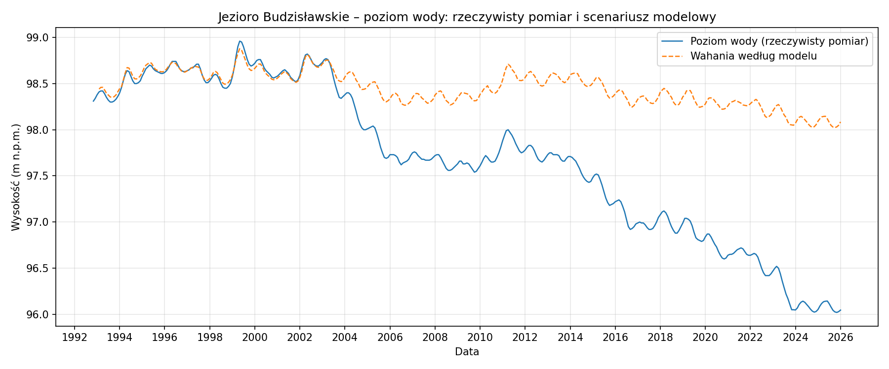
Prognoza 12 mies.
Dla każdego wariantu (temperatura: zimny/normalny/ciepły × opad: suchy/normalny/wilgotny) opad i temperatura z percentyli historycznych w data/budzislawskie/data.csv. Symulacja: 12 miesięcy do końca stycznia 2027 (stan na koniec stycznia 2026 to pomiar rzeczywisty). Wykresy i tabele: oba modele (drenażowy i naturalny – sprzed drenażu) na wspólnych wykresach i w jednej tabeli na wariant.
Szansa realizacji (na podstawie zgodności z ostatnimi 12 miesiącami pomiarowymi – średni opad i temperatura):
| Wariant | Szansa (%) | Poziom koniec – drenaż (m) | Poziom koniec – natural (m) |
|---|---|---|---|
| zimny, suchy | 11.3 | 95.822 | 96.066 |
| zimny, normalny | 14.2 | 95.833 | 96.091 |
| zimny, wilgotny | 7.1 | 95.875 | 96.172 |
| normalny, suchy | 11.7 | 95.662 | 96.048 |
| normalny, normalny | 15.2 | 95.698 | 96.073 |
| normalny, wilgotny | 7.2 | 95.875 | 96.157 |
| ciepły, suchy | 11.5 | 95.666 | 95.999 |
| ciepły, normalny | 14.5 | 95.725 | 96.029 |
| ciepły, wilgotny | 7.2 | 95.738 | 96.116 |
Najbardziej prawdopodobny poziom na koniec stycznia 2027 (średnia ważona zmian miesięcznych według szans realizacji wszystkich wariantów). W stosunku do stanu na koniec stycznia 2026 (96.0461 m n.p.m.): - Model drenażowy: 95.756 m n.p.m. – ubędzie 0.290 m (-29.0 cm) - Model naturalny (sprzed drenażu): 96.073 m n.p.m. – przybędzie +0.027 m (+2.7 cm)
najbardziej prawdopodobny

| Data | Opad (mm) | Temp. (°C) | Zmiana drenaż (cm) | Poziom drenaż (m) | Zmiana natural (cm) | Poziom natural (m) |
|---|---|---|---|---|---|---|
| 2026-02 | 34.0 | 1.2 | +3.7 cm | 96.083 | +3.5 cm | 96.081 |
| 2026-03 | 33.4 | 4.2 | +2.0 cm | 96.103 | +3.0 cm | 96.111 |
| 2026-04 | 25.1 | 9.3 | -1.0 cm | 96.092 | +1.6 cm | 96.127 |
| 2026-05 | 46.0 | 13.9 | -4.4 cm | 96.048 | +0.0 cm | 96.127 |
| 2026-06 | 50.1 | 17.7 | -5.7 cm | 95.991 | -2.9 cm | 96.098 |
| 2026-07 | 69.9 | 19.7 | -6.5 cm | 95.927 | -3.0 cm | 96.068 |
| 2026-08 | 53.6 | 19.2 | -6.4 cm | 95.863 | -3.0 cm | 96.038 |
| 2026-09 | 40.3 | 14.8 | -4.2 cm | 95.821 | -2.0 cm | 96.018 |
| 2026-10 | 31.5 | 9.8 | -4.0 cm | 95.781 | -0.8 cm | 96.01 |
| 2026-11 | 34.6 | 4.7 | -2.8 cm | 95.753 | +0.5 cm | 96.015 |
| 2026-12 | 34.9 | 1.4 | -0.6 cm | 95.747 | +1.9 cm | 96.034 |
| 2027-01 | 38.4 | 0.0 | +0.9 cm | 95.756 | +3.9 cm | 96.073 |
- Średnia ważona wszystkich wariantów (bez własnej szansy realizacji).
- Średnia temperatura roczna (prognoza): 9.7 °C
- Suma opadu (prognoza): 491.7 mm
- Różnica poziomu wody (drenaż) (koniec − start): -0.290 m (-29.0 cm)
- Poziom na koniec stycznia 2027 (drenaż): 95.756 m n.p.m.
- Różnica poziomu wody (natural) (koniec − start): +0.027 m (+2.7 cm)
- Poziom na koniec stycznia 2027 (natural): 96.073 m n.p.m.
zimny, suchy
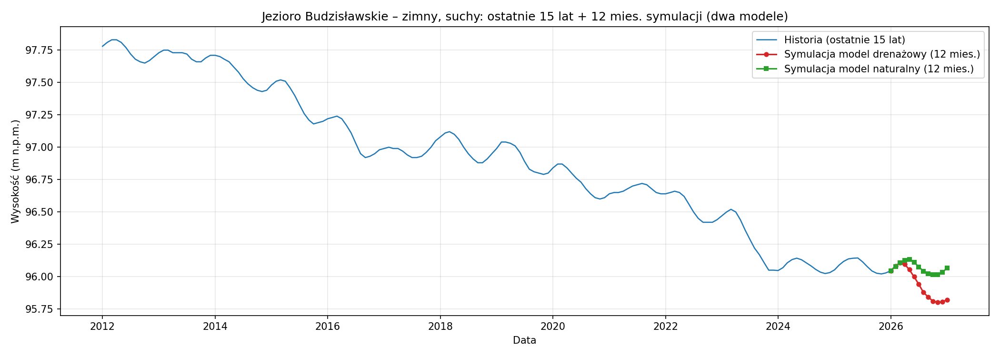
| Data | Opad (mm) | Temp. (°C) | Zmiana drenaż (cm) | Poziom drenaż (m) | Zmiana natural (cm) | Poziom natural (m) |
|---|---|---|---|---|---|---|
| 2026-02 | 25.8 | -1.0 | +3.7 cm | 96.083 | +3.2 cm | 96.078 |
| 2026-03 | 22.8 | 3.0 | +2.3 cm | 96.106 | +2.7 cm | 96.106 |
| 2026-04 | 15.0 | 8.4 | -1.0 cm | 96.096 | +1.9 cm | 96.125 |
| 2026-05 | 34.0 | 12.8 | -4.2 cm | 96.054 | +0.9 cm | 96.134 |
| 2026-06 | 33.6 | 16.5 | -5.4 cm | 95.999 | -2.4 cm | 96.111 |
| 2026-07 | 53.9 | 18.8 | -5.7 cm | 95.942 | -3.4 cm | 96.076 |
| 2026-08 | 35.5 | 18.3 | -6.4 cm | 95.878 | -3.4 cm | 96.042 |
| 2026-09 | 22.7 | 13.7 | -3.6 cm | 95.842 | -2.1 cm | 96.021 |
| 2026-10 | 17.6 | 8.3 | -3.0 cm | 95.811 | -0.7 cm | 96.014 |
| 2026-11 | 21.8 | 3.6 | -1.0 cm | 95.802 | +0.1 cm | 96.015 |
| 2026-12 | 25.6 | -0.2 | +0.3 cm | 95.804 | +1.8 cm | 96.033 |
| 2027-01 | 28.6 | -1.9 | +1.8 cm | 95.822 | +3.3 cm | 96.066 |
- Szansa realizacji: 11.3 %
- Średnia temperatura roczna (prognoza): 8.4 °C
- Suma opadu (prognoza): 336.9 mm
- Różnica poziomu wody (drenaż) (koniec − start): -0.224 m (-22.4 cm)
- Poziom na koniec stycznia 2027 (drenaż): 95.822 m n.p.m.
- Różnica poziomu wody (natural) (koniec − start): +0.020 m (+2.0 cm)
- Poziom na koniec stycznia 2027 (natural): 96.066 m n.p.m.
zimny, normalny

| Data | Opad (mm) | Temp. (°C) | Zmiana drenaż (cm) | Poziom drenaż (m) | Zmiana natural (cm) | Poziom natural (m) |
|---|---|---|---|---|---|---|
| 2026-02 | 34.4 | -1.0 | +3.6 cm | 96.082 | +3.3 cm | 96.079 |
| 2026-03 | 33.9 | 3.0 | +2.1 cm | 96.103 | +2.7 cm | 96.106 |
| 2026-04 | 27.7 | 8.4 | -1.2 cm | 96.091 | +1.9 cm | 96.125 |
| 2026-05 | 46.4 | 12.8 | -3.9 cm | 96.051 | +1.0 cm | 96.135 |
| 2026-06 | 53.1 | 16.5 | -5.1 cm | 96.0 | -2.2 cm | 96.113 |
| 2026-07 | 66.7 | 18.8 | -5.7 cm | 95.944 | -2.7 cm | 96.087 |
| 2026-08 | 56.2 | 18.3 | -6.1 cm | 95.882 | -3.3 cm | 96.054 |
| 2026-09 | 43.3 | 13.7 | -3.5 cm | 95.847 | -2.0 cm | 96.034 |
| 2026-10 | 33.9 | 8.3 | -3.2 cm | 95.815 | -0.7 cm | 96.027 |
| 2026-11 | 38.8 | 3.6 | -0.7 cm | 95.808 | +0.3 cm | 96.03 |
| 2026-12 | 36.7 | -0.2 | +0.4 cm | 95.812 | +1.9 cm | 96.049 |
| 2027-01 | 39.8 | -1.9 | +2.1 cm | 95.833 | +4.2 cm | 96.091 |
- Szansa realizacji: 14.2 %
- Średnia temperatura roczna (prognoza): 8.4 °C
- Suma opadu (prognoza): 510.9 mm
- Różnica poziomu wody (drenaż) (koniec − start): -0.213 m (-21.3 cm)
- Poziom na koniec stycznia 2027 (drenaż): 95.833 m n.p.m.
- Różnica poziomu wody (natural) (koniec − start): +0.045 m (+4.5 cm)
- Poziom na koniec stycznia 2027 (natural): 96.091 m n.p.m.
zimny, wilgotny
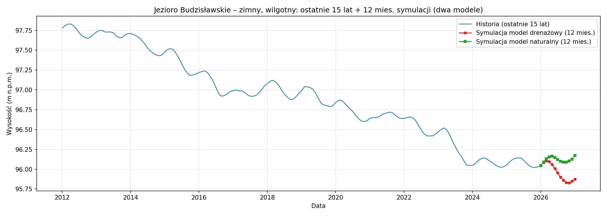
| Data | Opad (mm) | Temp. (°C) | Zmiana drenaż (cm) | Poziom drenaż (m) | Zmiana natural (cm) | Poziom natural (m) |
|---|---|---|---|---|---|---|
| 2026-02 | 46.4 | -1.0 | +3.9 cm | 96.085 | +4.4 cm | 96.09 |
| 2026-03 | 49.5 | 3.0 | +2.4 cm | 96.109 | +4.2 cm | 96.132 |
| 2026-04 | 36.1 | 8.4 | -1.2 cm | 96.097 | +2.3 cm | 96.155 |
| 2026-05 | 64.7 | 12.8 | -3.7 cm | 96.06 | +1.1 cm | 96.166 |
| 2026-06 | 70.6 | 16.5 | -5.1 cm | 96.009 | -1.8 cm | 96.148 |
| 2026-07 | 102.3 | 18.8 | -5.5 cm | 95.954 | -2.5 cm | 96.123 |
| 2026-08 | 77.4 | 18.3 | -5.4 cm | 95.9 | -2.4 cm | 96.1 |
| 2026-09 | 62.5 | 13.7 | -3.8 cm | 95.862 | -1.0 cm | 96.089 |
| 2026-10 | 49.0 | 8.3 | -3.1 cm | 95.831 | +0.2 cm | 96.091 |
| 2026-11 | 46.6 | 3.6 | -0.4 cm | 95.828 | +1.3 cm | 96.104 |
| 2026-12 | 46.4 | -0.2 | +2.3 cm | 95.851 | +2.3 cm | 96.127 |
| 2027-01 | 51.6 | -1.9 | +2.4 cm | 95.875 | +4.5 cm | 96.172 |
- Szansa realizacji: 7.1 %
- Średnia temperatura roczna (prognoza): 8.4 °C
- Suma opadu (prognoza): 703.1 mm
- Różnica poziomu wody (drenaż) (koniec − start): -0.171 m (-17.1 cm)
- Poziom na koniec stycznia 2027 (drenaż): 95.875 m n.p.m.
- Różnica poziomu wody (natural) (koniec − start): +0.126 m (+12.6 cm)
- Poziom na koniec stycznia 2027 (natural): 96.172 m n.p.m.
normalny, suchy
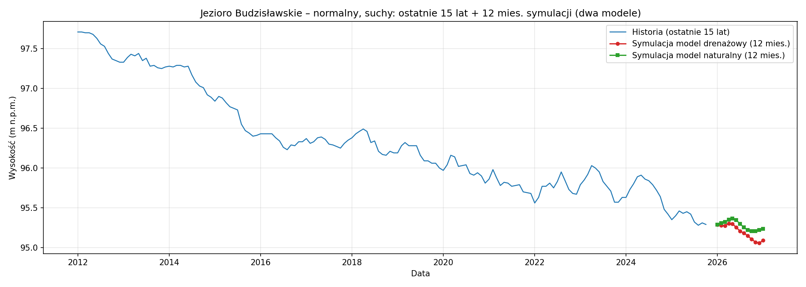
| Data | Opad (mm) | Temp. (°C) | Zmiana drenaż (cm) | Poziom drenaż (m) | Zmiana natural (cm) | Poziom natural (m) |
|---|---|---|---|---|---|---|
| 2026-02 | 25.8 | 0.8 | +3.6 cm | 96.082 | +3.2 cm | 96.078 |
| 2026-03 | 22.8 | 4.3 | +1.9 cm | 96.101 | +2.7 cm | 96.106 |
| 2026-04 | 15.0 | 9.1 | -0.9 cm | 96.092 | +1.9 cm | 96.125 |
| 2026-05 | 34.0 | 13.7 | -5.1 cm | 96.042 | +0.3 cm | 96.127 |
| 2026-06 | 33.6 | 17.8 | -6.8 cm | 95.974 | -3.3 cm | 96.094 |
| 2026-07 | 53.9 | 19.8 | -7.5 cm | 95.899 | -3.4 cm | 96.06 |
| 2026-08 | 35.5 | 19.3 | -6.6 cm | 95.833 | -3.3 cm | 96.027 |
| 2026-09 | 22.7 | 14.7 | -5.0 cm | 95.783 | -2.1 cm | 96.006 |
| 2026-10 | 17.6 | 9.8 | -5.1 cm | 95.732 | -1.0 cm | 95.996 |
| 2026-11 | 21.8 | 4.8 | -4.7 cm | 95.685 | +0.1 cm | 95.997 |
| 2026-12 | 25.6 | 1.8 | -2.0 cm | 95.665 | +1.8 cm | 96.015 |
| 2027-01 | 28.6 | 0.1 | -0.3 cm | 95.662 | +3.3 cm | 96.048 |
- Szansa realizacji: 11.7 %
- Średnia temperatura roczna (prognoza): 9.7 °C
- Suma opadu (prognoza): 336.9 mm
- Różnica poziomu wody (drenaż) (koniec − start): -0.384 m (-38.4 cm)
- Poziom na koniec stycznia 2027 (drenaż): 95.662 m n.p.m.
- Różnica poziomu wody (natural) (koniec − start): +0.002 m (+0.2 cm)
- Poziom na koniec stycznia 2027 (natural): 96.048 m n.p.m.
normalny, normalny
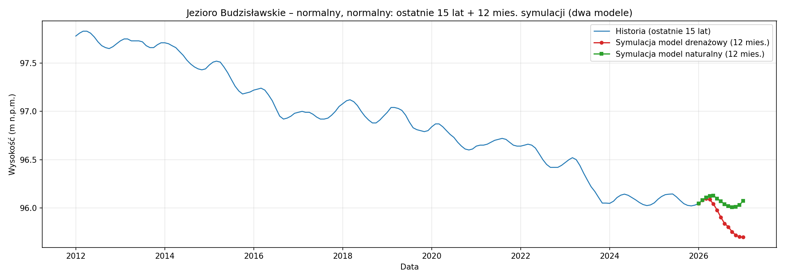
| Data | Opad (mm) | Temp. (°C) | Zmiana drenaż (cm) | Poziom drenaż (m) | Zmiana natural (cm) | Poziom natural (m) |
|---|---|---|---|---|---|---|
| 2026-02 | 34.4 | 0.8 | +3.5 cm | 96.081 | +3.3 cm | 96.079 |
| 2026-03 | 33.9 | 4.3 | +1.7 cm | 96.098 | +2.7 cm | 96.106 |
| 2026-04 | 27.7 | 9.1 | -1.1 cm | 96.087 | +1.9 cm | 96.125 |
| 2026-05 | 46.4 | 13.7 | -4.6 cm | 96.041 | +0.4 cm | 96.129 |
| 2026-06 | 53.1 | 17.8 | -6.5 cm | 95.977 | -3.2 cm | 96.097 |
| 2026-07 | 66.7 | 19.8 | -7.2 cm | 95.904 | -2.7 cm | 96.07 |
| 2026-08 | 56.2 | 19.3 | -6.5 cm | 95.839 | -3.1 cm | 96.039 |
| 2026-09 | 43.3 | 14.7 | -3.5 cm | 95.804 | -2.0 cm | 96.019 |
| 2026-10 | 33.9 | 9.8 | -5.1 cm | 95.753 | -1.0 cm | 96.009 |
| 2026-11 | 38.8 | 4.8 | -3.5 cm | 95.718 | +0.3 cm | 96.012 |
| 2026-12 | 36.7 | 1.8 | -1.7 cm | 95.701 | +1.9 cm | 96.031 |
| 2027-01 | 39.8 | 0.1 | -0.3 cm | 95.698 | +4.2 cm | 96.073 |
- Szansa realizacji: 15.2 %
- Średnia temperatura roczna (prognoza): 9.7 °C
- Suma opadu (prognoza): 510.9 mm
- Różnica poziomu wody (drenaż) (koniec − start): -0.348 m (-34.8 cm)
- Poziom na koniec stycznia 2027 (drenaż): 95.698 m n.p.m.
- Różnica poziomu wody (natural) (koniec − start): +0.027 m (+2.7 cm)
- Poziom na koniec stycznia 2027 (natural): 96.073 m n.p.m.
normalny, wilgotny
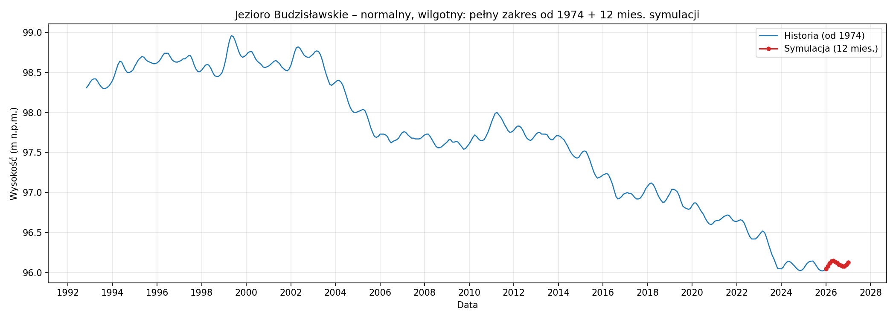
| Data | Opad (mm) | Temp. (°C) | Zmiana drenaż (cm) | Poziom drenaż (m) | Zmiana natural (cm) | Poziom natural (m) |
|---|---|---|---|---|---|---|
| 2026-02 | 46.4 | 0.8 | +3.8 cm | 96.084 | +4.4 cm | 96.09 |
| 2026-03 | 49.5 | 4.3 | +2.1 cm | 96.105 | +4.2 cm | 96.132 |
| 2026-04 | 36.1 | 9.1 | -1.1 cm | 96.094 | +2.3 cm | 96.155 |
| 2026-05 | 64.7 | 13.7 | -4.4 cm | 96.05 | +0.5 cm | 96.16 |
| 2026-06 | 70.6 | 17.8 | -5.1 cm | 96.0 | -2.4 cm | 96.136 |
| 2026-07 | 102.3 | 19.8 | -6.3 cm | 95.937 | -2.5 cm | 96.111 |
| 2026-08 | 77.4 | 19.3 | -6.2 cm | 95.875 | -2.3 cm | 96.088 |
| 2026-09 | 62.5 | 14.7 | -3.5 cm | 95.84 | -1.1 cm | 96.077 |
| 2026-10 | 49.0 | 9.8 | -1.4 cm | 95.826 | -0.1 cm | 96.076 |
| 2026-11 | 46.6 | 4.8 | -0.0 cm | 95.826 | +1.3 cm | 96.089 |
| 2026-12 | 46.4 | 1.8 | +2.3 cm | 95.848 | +2.2 cm | 96.111 |
| 2027-01 | 51.6 | 0.1 | +2.6 cm | 95.875 | +4.5 cm | 96.157 |
- Szansa realizacji: 7.2 %
- Średnia temperatura roczna (prognoza): 9.7 °C
- Suma opadu (prognoza): 703.1 mm
- Różnica poziomu wody (drenaż) (koniec − start): -0.171 m (-17.1 cm)
- Poziom na koniec stycznia 2027 (drenaż): 95.875 m n.p.m.
- Różnica poziomu wody (natural) (koniec − start): +0.111 m (+11.1 cm)
- Poziom na koniec stycznia 2027 (natural): 96.157 m n.p.m.
ciepły, suchy
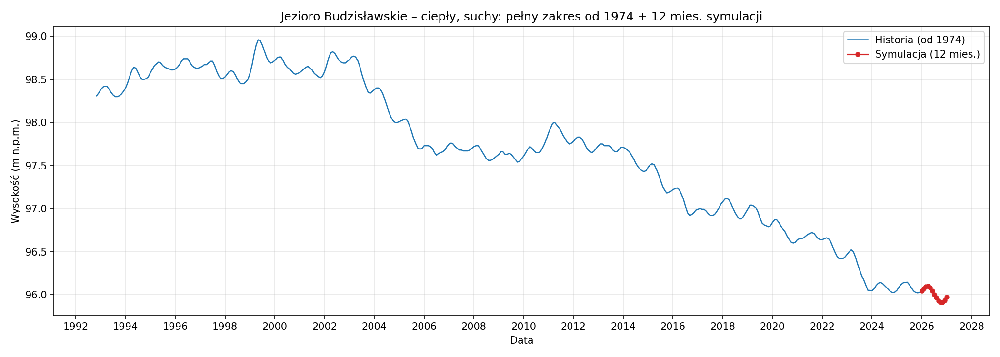
| Data | Opad (mm) | Temp. (°C) | Zmiana drenaż (cm) | Poziom drenaż (m) | Zmiana natural (cm) | Poziom natural (m) |
|---|---|---|---|---|---|---|
| 2026-02 | 25.8 | 3.8 | +3.8 cm | 96.084 | +3.1 cm | 96.077 |
| 2026-03 | 22.8 | 5.4 | +1.8 cm | 96.102 | +2.7 cm | 96.105 |
| 2026-04 | 15.0 | 10.4 | -0.8 cm | 96.094 | +0.8 cm | 96.112 |
| 2026-05 | 34.0 | 15.1 | -4.7 cm | 96.047 | -1.5 cm | 96.098 |
| 2026-06 | 33.6 | 18.9 | -6.8 cm | 95.979 | -3.7 cm | 96.061 |
| 2026-07 | 53.9 | 20.4 | -7.3 cm | 95.906 | -3.9 cm | 96.022 |
| 2026-08 | 35.5 | 20.0 | -6.8 cm | 95.837 | -3.5 cm | 95.988 |
| 2026-09 | 22.7 | 16.0 | -5.5 cm | 95.783 | -2.5 cm | 95.963 |
| 2026-10 | 17.6 | 11.2 | -5.1 cm | 95.732 | -1.4 cm | 95.948 |
| 2026-11 | 21.8 | 5.7 | -4.7 cm | 95.685 | +0.2 cm | 95.951 |
| 2026-12 | 25.6 | 2.6 | -1.8 cm | 95.667 | +1.7 cm | 95.968 |
| 2027-01 | 28.6 | 1.9 | -0.1 cm | 95.666 | +3.1 cm | 95.999 |
- Szansa realizacji: 11.5 %
- Średnia temperatura roczna (prognoza): 10.9 °C
- Suma opadu (prognoza): 336.9 mm
- Różnica poziomu wody (drenaż) (koniec − start): -0.380 m (-38.0 cm)
- Poziom na koniec stycznia 2027 (drenaż): 95.666 m n.p.m.
- Różnica poziomu wody (natural) (koniec − start): -0.047 m (-4.7 cm)
- Poziom na koniec stycznia 2027 (natural): 95.999 m n.p.m.
ciepły, normalny
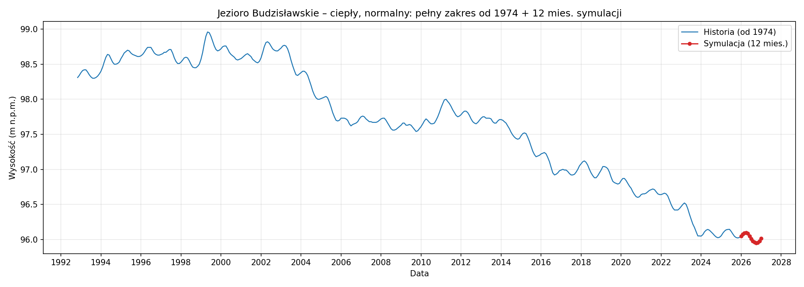
| Data | Opad (mm) | Temp. (°C) | Zmiana drenaż (cm) | Poziom drenaż (m) | Zmiana natural (cm) | Poziom natural (m) |
|---|---|---|---|---|---|---|
| 2026-02 | 34.4 | 3.8 | +3.7 cm | 96.083 | +3.1 cm | 96.077 |
| 2026-03 | 33.9 | 5.4 | +1.6 cm | 96.099 | +2.7 cm | 96.105 |
| 2026-04 | 27.7 | 10.4 | -1.0 cm | 96.089 | +0.8 cm | 96.112 |
| 2026-05 | 46.4 | 15.1 | -4.4 cm | 96.045 | -1.3 cm | 96.099 |
| 2026-06 | 53.1 | 18.9 | -5.1 cm | 95.994 | -3.5 cm | 96.064 |
| 2026-07 | 66.7 | 20.4 | -6.1 cm | 95.933 | -3.2 cm | 96.032 |
| 2026-08 | 56.2 | 20.0 | -6.6 cm | 95.867 | -2.8 cm | 96.003 |
| 2026-09 | 43.3 | 16.0 | -4.6 cm | 95.821 | -2.4 cm | 95.979 |
| 2026-10 | 33.9 | 11.2 | -4.5 cm | 95.777 | -1.2 cm | 95.968 |
| 2026-11 | 38.8 | 5.7 | -4.3 cm | 95.733 | +0.3 cm | 95.971 |
| 2026-12 | 36.7 | 2.6 | -1.4 cm | 95.719 | +1.8 cm | 95.988 |
| 2027-01 | 39.8 | 1.9 | +0.6 cm | 95.725 | +4.1 cm | 96.029 |
- Szansa realizacji: 14.5 %
- Średnia temperatura roczna (prognoza): 10.9 °C
- Suma opadu (prognoza): 510.9 mm
- Różnica poziomu wody (drenaż) (koniec − start): -0.321 m (-32.1 cm)
- Poziom na koniec stycznia 2027 (drenaż): 95.725 m n.p.m.
- Różnica poziomu wody (natural) (koniec − start): -0.017 m (-1.7 cm)
- Poziom na koniec stycznia 2027 (natural): 96.029 m n.p.m.
ciepły, wilgotny
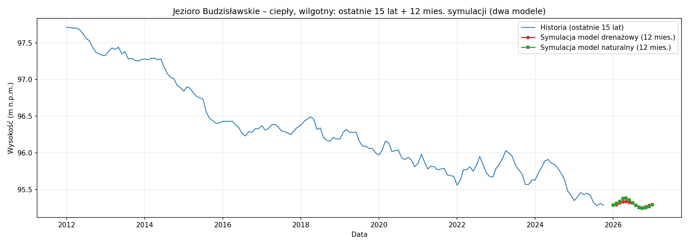
| Data | Opad (mm) | Temp. (°C) | Zmiana drenaż (cm) | Poziom drenaż (m) | Zmiana natural (cm) | Poziom natural (m) |
|---|---|---|---|---|---|---|
| 2026-02 | 46.4 | 3.8 | +4.0 cm | 96.086 | +4.2 cm | 96.088 |
| 2026-03 | 49.5 | 5.4 | +2.0 cm | 96.107 | +4.2 cm | 96.13 |
| 2026-04 | 36.1 | 10.4 | -1.0 cm | 96.097 | +0.8 cm | 96.138 |
| 2026-05 | 64.7 | 15.1 | -4.2 cm | 96.055 | -1.0 cm | 96.128 |
| 2026-06 | 70.6 | 18.9 | -5.0 cm | 96.005 | -2.8 cm | 96.1 |
| 2026-07 | 102.3 | 20.4 | -6.1 cm | 95.944 | -2.5 cm | 96.075 |
| 2026-08 | 77.4 | 20.0 | -6.7 cm | 95.877 | -1.9 cm | 96.056 |
| 2026-09 | 62.5 | 16.0 | -4.5 cm | 95.831 | -1.4 cm | 96.042 |
| 2026-10 | 49.0 | 11.2 | -4.3 cm | 95.788 | -0.3 cm | 96.039 |
| 2026-11 | 46.6 | 5.7 | -4.2 cm | 95.746 | +1.3 cm | 96.052 |
| 2026-12 | 46.4 | 2.6 | -1.3 cm | 95.733 | +2.0 cm | 96.073 |
| 2027-01 | 51.6 | 1.9 | +0.5 cm | 95.738 | +4.3 cm | 96.116 |
- Szansa realizacji: 7.2 %
- Średnia temperatura roczna (prognoza): 10.9 °C
- Suma opadu (prognoza): 703.1 mm
- Różnica poziomu wody (drenaż) (koniec − start): -0.308 m (-30.8 cm)
- Poziom na koniec stycznia 2027 (drenaż): 95.738 m n.p.m.
- Różnica poziomu wody (natural) (koniec − start): +0.070 m (+7.0 cm)
- Poziom na koniec stycznia 2027 (natural): 96.116 m n.p.m.
Wygenerowano: 2026-02-15 15:44
Szanse na odbudowę – Jezioro Budzisławskie
Opisowa ocena szans na odbudowę poziomu wody w perspektywie kolejnych 12 miesięcy, na podstawie prognozy z symulacji wariantów pogodowych (opad i temperatura z percentyli historycznych) oraz szacowanych szans realizacji każdego wariantu (zgodność z ostatnimi 12 miesiącami pomiarowymi).
Stan odniesienia: koniec stycznia 2026 – poziom 96.046 m n.p.m.
Porównanie prognoz (najbardziej prawdopodobny scenariusz, średnia ważona):
| Model | Poziom koniec (m n.p.m.) | Zmiana (cm) |
|---|---|---|
| Drenażowy (po zmianie reżimu) | 95.756 | -29.0 |
| Naturalny (sprzed drenażu) | 96.073 | +2.7 |
Prognoza na koniec stycznia 2027 (model drenażowy): poziom 95.756 m n.p.m., czyli spadek o 29.0 cm w stosunku do stanu odniesienia.
W zależności od warunków pogodowych w nadchodzącym roku prognozowana zmiana poziomu w 12 miesięcy (model drenażowy) mieści się w zakresie od -38.4 cm do -17.1 cm. Najwyższą szansę realizacji (15.2%) ma jeden z wariantów pogodowych; szczegóły wszystkich wariantów i szans – w raporcie Prognoza 12 mies..
Szanse na odbudowę w perspektywie roku (model drenażowy): prognoza modelu drenażowego wskazuje na spadek poziomu w ciągu roku; szanse na odbudowę w perspektywie roku są niskie – istotna odbudowa wymagałaby zatrzymania drenażu i korzystnych warunków.
Szanse na odbudowę w perspektywie roku (model naturalny): prognoza modelu naturalnego wskazuje na stabilizację lub niewielki przyrost poziomu w ciągu roku.
Szacunki długoterminowej odbudowy (lata do zamknięcia luki po ewentualnym zaniku drenażu) – patrz Zanik drenażu.
Wygenerowano: 2026-02-15 15:44
Raport podsumowujący: prognoza zmiany poziomu Jezioro Budzisławskie
1. Cel projektu
Projekt ma na celu: - zbudowanie modelu uczenia maszynowego, który na podstawie opadu i temperatury (oraz sezonowości i historii) prognozuje miesięczną zmianę poziomu Jezioro Budzisławskie; - ewaluację prognoz względem rzeczywistych pomiarów.
2. Dane
- Źródło: plik
data/budzislawskie/data.csv. - Zakres: dane miesięczne (pierwszy dzień miesiąca).
- Kolumny: Data, Poziom (m), Zmiana (m), Opad (mm), Temperatura (°C).
- Target: Zmiana – miesięczna zmiana poziomu.
- Wiersze z błędami (#ERROR!) lub brakami są pomijane. Po usunięciu lagów (3 mies.) do analizy wchodzi 396 miesięcy.
3. Model
| Element | Opis |
|---|---|
| Algorytm | Gradient Boosting (regresja), scikit-learn |
| Cechy wejściowe | Miesiąc (sin/cos), Opad, Temperatura, 3 opóźnienia zmiany poziomu, 3 opóźnienia poziomu |
| Trening | Podział czasowy: trening do 2023-12, test od 2024 do 2023 |
| Wynik | Prognoza zmiany poziomu na dany miesiąc (cm) |
Model nie używa bieżącego poziomu – tylko opad, temperatura, sezon i historia.
4. Wyniki ewaluacji
- MAE (średni błąd bezwzględny): nan cm
- RMSE: nan cm
- Liczba miesięcy: 396
4.1. Wysokość wody: rzeczywista vs scenariusz modelowy
Scenariusz modelowy: start od poziomu na początek pierwszego miesiąca; w każdym miesiącu dodawana jest prognozowana zmiana (kumulatywnie).
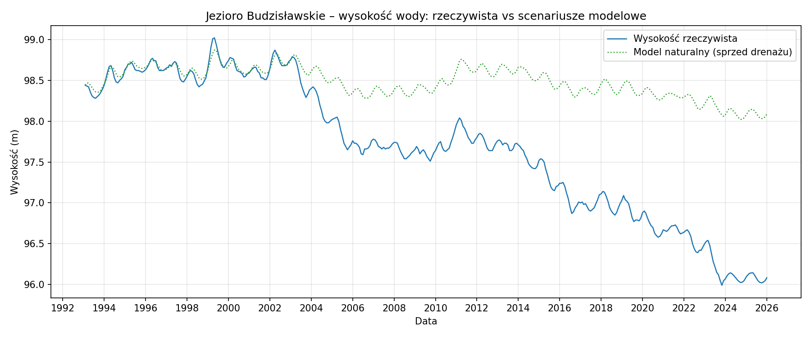
4.2. Rozbieżność w czasie
Rozbieżność = wysokość rzeczywista − wysokość w scenariuszu modelowym. Wartość dodatnia: jezioro wyżej niż przewidywał model; ujemna: niżej.

4.3. Zmiana poziomu: faktyczna vs prognoza
Punkty przy linii y = x oznaczają dobrą zgodność miesięcznych zmian.
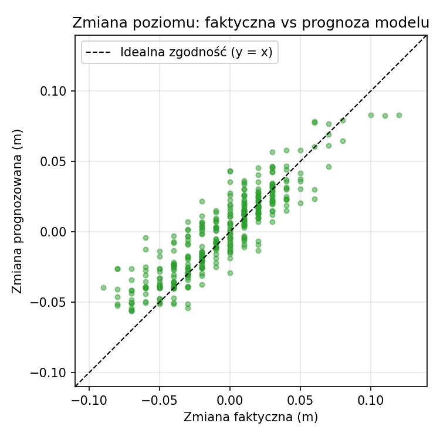
4.4. Błąd miesięczny
Błąd = zmiana faktyczna − zmiana prognozowana w każdym miesiącu.
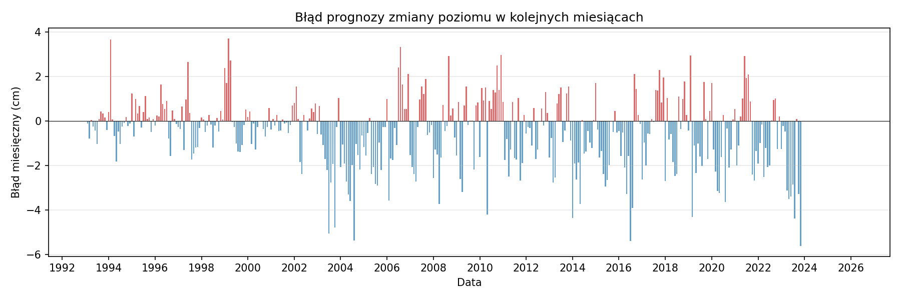
5. Podsumowanie
- Model prognozuje miesięczną zmianę poziomu Jezioro Budzisławskie z MAE ~nan cm.
- Scenariusz kumulatywny (wysokość z prognozowanej zmiany) jest porównywany z rzeczywistą wysokością; rozbieżność i błąd miesięczny opisują jakość prognoz.
Szczegóły techniczne: model.md, podsumowanie_ewaluacji.md.
Wygenerowano: 2026-02-15 15:38
Podsumowanie ewaluacji prognozy zmiany poziomu Jezioro Budzisławskie
Dla każdego miesiąca model otrzymuje opad i temperaturę (oraz cechy opóźnione z historii), wylicza prognozowaną zmianę poziomu Jezioro Budzisławskie i jest ona porównana z faktyczną zmianą.
Metryki
- MAE (średni błąd bezwzględny): nan cm
- RMSE (pierwiastek błędu średniokwadratowego): nan cm
- Liczba miesięcy (zbior testowy): 0
- Liczba miesięcy (tabela / wykres): 396
Porównanie miesięczne
| Data | Opad (mm) | Temperatura (°C) | Zmiana faktyczna (cm) | Zmiana prognoza (cm) | Błąd (cm) | Wysokość rzeczywista (m) | Wysokość scenariusz modelowy (m) | Rozbieżność (cm) |
|---|---|---|---|---|---|---|---|---|
| 1993-02 | 31.5 | -0.8 | +3.0 | +3.8 | -0.8 | 98.44 | 98.448 | -0.8 |
| 1993-03 | 33.2 | 1.8 | +1.0 | +1.6 | -0.6 | 98.43 | 98.464 | -3.4 |
| 1993-04 | 12.7 | 9.2 | +0.0 | -1.8 | +1.8 | 98.42 | 98.446 | -2.6 |
| 1993-05 | 25.7 | 16.4 | -3.0 | -2.4 | -0.6 | 98.36 | 98.422 | -6.2 |
| 1993-06 | 53.1 | 15.6 | -4.0 | -3.8 | -0.2 | 98.31 | 98.384 | -7.4 |
| 1993-07 | 102.3 | 16.3 | -3.0 | -3.0 | -0.0 | 98.29 | 98.354 | -6.4 |
| 1993-08 | 42.4 | 16.3 | -2.0 | -3.3 | +1.3 | 98.28 | 98.321 | -4.1 |
| 1993-09 | 79.8 | 12.1 | +0.0 | -0.9 | +0.9 | 98.3 | 98.312 | -1.2 |
| 1993-10 | 16.7 | 8.0 | +1.0 | -0.7 | +1.7 | 98.32 | 98.306 | +1.4 |
| 1993-11 | 40.7 | -0.7 | +2.0 | +2.7 | -0.7 | 98.35 | 98.333 | +1.7 |
| 1993-12 | 91.0 | 2.2 | +3.0 | +2.3 | +0.7 | 98.39 | 98.356 | +3.4 |
| 1994-01 | 39.5 | 2.4 | +4.0 | +2.6 | +1.4 | 98.44 | 98.382 | +5.8 |
| 1994-02 | 25.8 | -2.2 | +6.0 | +4.5 | +1.5 | 98.52 | 98.427 | +9.3 |
| 1994-03 | 58.7 | 4.4 | +7.0 | +2.8 | +4.2 | 98.6 | 98.455 | +14.5 |
| 1994-04 | 35.0 | 9.0 | +7.0 | +0.1 | +6.9 | 98.67 | 98.456 | +21.4 |
| 1994-05 | 64.7 | 12.6 | +4.0 | +0.6 | +3.4 | 98.68 | 98.462 | +21.8 |
| 1994-06 | 31.8 | 15.8 | -1.0 | +0.2 | -1.2 | 98.62 | 98.464 | +15.6 |
| 1994-07 | 50.4 | 22.1 | -5.0 | -4.1 | -0.9 | 98.53 | 98.423 | +10.7 |
| 1994-08 | 40.4 | 18.8 | -5.0 | -5.1 | +0.1 | 98.48 | 98.372 | +10.8 |
| 1994-09 | 91.8 | 14.3 | -3.0 | -3.0 | -0.0 | 98.47 | 98.342 | +12.8 |
| 1994-10 | 15.2 | 6.6 | +0.0 | -0.9 | +0.9 | 98.5 | 98.333 | +16.7 |
| 1994-11 | 23.4 | 4.3 | +1.0 | +1.1 | -0.1 | 98.52 | 98.344 | +17.6 |
| 1994-12 | 43.4 | 1.8 | +2.0 | +2.9 | -0.9 | 98.55 | 98.374 | +17.6 |
| 1995-01 | 31.4 | -0.6 | +5.0 | +2.3 | +2.7 | 98.63 | 98.397 | +23.3 |
| 1995-02 | 36.5 | 3.5 | +4.0 | +4.3 | -0.3 | 98.66 | 98.44 | +22.0 |
| 1995-03 | 39.8 | 2.8 | +4.0 | +3.8 | +0.2 | 98.7 | 98.478 | +22.2 |
| 1995-04 | 24.8 | 8.2 | +2.0 | +0.4 | +1.6 | 98.7 | 98.483 | +21.7 |
| 1995-05 | 34.0 | 12.8 | +2.0 | -0.9 | +2.9 | 98.72 | 98.474 | +24.6 |
| 1995-06 | 70.3 | 16.3 | -1.0 | -0.2 | -0.8 | 98.68 | 98.472 | +20.8 |
| 1995-07 | 56.9 | 20.6 | -3.0 | -4.1 | +1.1 | 98.63 | 98.431 | +19.9 |
| 1995-08 | 63.8 | 19.0 | -2.0 | -3.8 | +1.8 | 98.62 | 98.393 | +22.7 |
| 1995-09 | 119.8 | 13.4 | -1.0 | -1.2 | +0.2 | 98.62 | 98.381 | +23.9 |
| 1995-10 | 13.6 | 10.5 | -1.0 | -1.8 | +0.8 | 98.61 | 98.363 | +24.7 |
| 1995-11 | 17.0 | 1.1 | -1.0 | -0.1 | -0.9 | 98.6 | 98.362 | +23.8 |
| 1995-12 | 18.8 | -4.9 | +0.0 | +0.7 | -0.7 | 98.61 | 98.369 | +24.1 |
| 1996-01 | 8.8 | -5.7 | +1.0 | +1.1 | -0.1 | 98.63 | 98.38 | +25.0 |
| 1996-02 | 35.2 | -5.6 | +2.0 | +2.6 | -0.6 | 98.66 | 98.406 | +25.4 |
| 1996-03 | 8.5 | -0.9 | +3.0 | +1.0 | +2.0 | 98.7 | 98.416 | +28.4 |
| 1996-04 | 9.8 | 7.6 | +4.0 | +1.0 | +3.0 | 98.75 | 98.426 | +32.4 |
| 1996-05 | 92.2 | 13.5 | +3.0 | +0.7 | +2.3 | 98.77 | 98.433 | +33.7 |
| 1996-06 | 25.8 | 16.6 | +0.0 | +0.2 | -0.2 | 98.74 | 98.435 | +30.5 |
| 1996-07 | 106.9 | 15.9 | +0.0 | +0.2 | -0.2 | 98.74 | 98.436 | +30.4 |
| 1996-08 | 62.2 | 18.4 | -4.0 | -1.8 | -2.2 | 98.66 | 98.419 | +24.1 |
| 1996-09 | 62.5 | 10.9 | -4.0 | -2.4 | -1.6 | 98.62 | 98.395 | +22.5 |
| 1996-10 | 26.1 | 9.5 | -2.0 | -3.2 | +1.2 | 98.62 | 98.363 | +25.7 |
| 1996-11 | 15.1 | 5.4 | -1.0 | -0.9 | -0.1 | 98.62 | 98.354 | +26.6 |
| 1996-12 | 7.6 | -4.5 | +0.0 | +0.2 | -0.2 | 98.63 | 98.356 | +27.4 |
| 1997-01 | 0.8 | -3.2 | +1.0 | +0.8 | +0.2 | 98.65 | 98.364 | +28.6 |
| 1997-02 | 49.6 | 2.9 | +1.0 | +2.7 | -1.7 | 98.66 | 98.391 | +26.9 |
| 1997-03 | 24.4 | 4.1 | +2.0 | +0.8 | +1.2 | 98.69 | 98.4 | +29.0 |
| 1997-04 | 15.8 | 5.5 | +0.0 | +0.5 | -0.5 | 98.67 | 98.404 | +26.6 |
| 1997-05 | 49.8 | 12.6 | +2.0 | -1.7 | +3.7 | 98.71 | 98.388 | +32.2 |
| 1997-06 | 64.0 | 16.5 | +2.0 | +0.1 | +1.9 | 98.73 | 98.389 | +34.1 |
| 1997-07 | 115.5 | 17.8 | +0.0 | +1.7 | -1.7 | 98.71 | 98.406 | +30.4 |
| 1997-08 | 33.8 | 19.6 | -5.0 | -1.8 | -3.2 | 98.61 | 98.388 | +22.2 |
| 1997-09 | 22.7 | 13.5 | -7.0 | -3.8 | -3.2 | 98.52 | 98.35 | +17.0 |
| 1997-10 | 44.1 | 7.4 | -5.0 | -2.4 | -2.6 | 98.49 | 98.326 | +16.4 |
| 1997-11 | 24.4 | 3.0 | -3.0 | -1.6 | -1.4 | 98.48 | 98.31 | +17.0 |
| 1997-12 | 35.7 | 1.6 | +0.0 | -0.1 | +0.1 | 98.51 | 98.309 | +20.1 |
| 1998-01 | 40.0 | 1.9 | +2.0 | +1.8 | +0.2 | 98.55 | 98.326 | +22.4 |
| 1998-02 | 16.8 | 4.6 | +3.0 | +1.2 | +1.8 | 98.59 | 98.338 | +25.2 |
| 1998-03 | 46.3 | 3.3 | +3.0 | +2.2 | +0.8 | 98.62 | 98.361 | +25.9 |
| 1998-04 | 36.5 | 10.4 | +1.0 | +0.0 | +1.0 | 98.61 | 98.361 | +24.9 |
| 1998-05 | 36.1 | 14.6 | -1.0 | -1.9 | +0.9 | 98.58 | 98.342 | +23.8 |
| 1998-06 | 35.5 | 17.1 | -4.0 | -3.8 | -0.2 | 98.51 | 98.304 | +20.6 |
| 1998-07 | 73.9 | 17.4 | -5.0 | -4.1 | -0.9 | 98.45 | 98.263 | +18.7 |
| 1998-08 | 68.6 | 16.7 | -4.0 | -4.6 | +0.6 | 98.42 | 98.217 | +20.3 |
| 1998-09 | 96.7 | 14.0 | -1.0 | -3.3 | +2.3 | 98.44 | 98.184 | +25.6 |
| 1998-10 | 68.1 | 8.5 | +0.0 | -0.9 | +0.9 | 98.45 | 98.175 | +27.5 |
| 1998-11 | 47.5 | 0.1 | +2.0 | +2.1 | -0.1 | 98.49 | 98.197 | +29.3 |
| 1998-12 | 41.6 | -0.2 | +3.0 | +2.8 | +0.2 | 98.53 | 98.224 | +30.6 |
| 1999-01 | 46.0 | 1.2 | +7.0 | +2.9 | +4.1 | 98.64 | 98.253 | +38.7 |
| 1999-02 | 52.8 | -0.5 | +10.0 | +4.4 | +5.6 | 98.77 | 98.297 | +47.3 |
| 1999-03 | 55.0 | 4.4 | +12.0 | +3.7 | +8.3 | 98.91 | 98.334 | +57.6 |
| 1999-04 | 83.6 | 9.5 | +11.0 | +1.0 | +10.0 | 99.01 | 98.344 | +66.6 |
| 1999-05 | 41.8 | 13.0 | +6.0 | +0.1 | +5.9 | 99.02 | 98.345 | +67.5 |
| 1999-06 | 58.0 | 16.2 | -1.0 | +0.6 | -1.6 | 98.94 | 98.351 | +58.9 |
| 1999-07 | 61.6 | 19.6 | -5.0 | -4.2 | -0.8 | 98.85 | 98.309 | +54.1 |
| 1999-08 | 14.0 | 17.8 | -7.0 | -5.4 | -1.6 | 98.76 | 98.255 | +50.5 |
| 1999-09 | 18.4 | 17.1 | -7.0 | -5.2 | -1.8 | 98.69 | 98.203 | +48.7 |
| 1999-10 | 43.8 | 9.0 | -5.0 | -3.8 | -1.2 | 98.66 | 98.166 | +49.4 |
| 1999-11 | 35.3 | 2.9 | -2.0 | -2.6 | +0.6 | 98.67 | 98.139 | +53.1 |
| 1999-12 | 46.7 | 1.7 | +1.0 | +0.4 | +0.6 | 98.71 | 98.143 | +56.7 |
| 2000-01 | 27.6 | -0.1 | +2.0 | +2.0 | -0.0 | 98.74 | 98.164 | +57.6 |
| 2000-02 | 34.4 | 3.2 | +3.0 | +2.5 | +0.4 | 98.78 | 98.189 | +59.1 |
| 2000-03 | 70.7 | 4.1 | +1.0 | +1.6 | -0.6 | 98.77 | 98.205 | +56.5 |
| 2000-04 | 21.8 | 12.1 | +0.0 | -1.5 | +1.5 | 98.76 | 98.19 | +57.0 |
| 2000-05 | 33.5 | 15.6 | -4.0 | -2.3 | -1.7 | 98.68 | 98.167 | +51.3 |
| 2000-06 | 30.1 | 17.3 | -5.0 | -4.3 | -0.7 | 98.62 | 98.124 | +49.6 |
| 2000-07 | 151.9 | 16.3 | -3.0 | -4.8 | +1.8 | 98.61 | 98.075 | +53.5 |
| 2000-08 | 69.7 | 18.2 | -2.0 | -3.1 | +1.1 | 98.6 | 98.044 | +55.6 |
| 2000-09 | 47.1 | 12.9 | -2.0 | -1.3 | -0.7 | 98.58 | 98.031 | +54.9 |
| 2000-10 | 15.7 | 11.8 | -3.0 | -2.0 | -1.0 | 98.54 | 98.011 | +52.9 |
| 2000-11 | 47.4 | 6.5 | -1.0 | -0.1 | -0.9 | 98.55 | 98.01 | +54.0 |
| 2000-12 | 48.1 | 2.2 | +1.0 | +1.1 | -0.1 | 98.58 | 98.022 | +55.8 |
| 2001-01 | 16.3 | -0.1 | +1.0 | +1.5 | -0.4 | 98.59 | 98.036 | +55.4 |
| 2001-02 | 26.9 | 0.7 | +2.0 | +1.9 | +0.1 | 98.62 | 98.055 | +56.5 |
| 2001-03 | 49.5 | 2.6 | +2.0 | +1.2 | +0.8 | 98.64 | 98.067 | +57.3 |
| 2001-04 | 36.1 | 8.0 | +2.0 | +0.1 | +1.9 | 98.66 | 98.068 | +59.2 |
| 2001-05 | 29.0 | 14.4 | +1.0 | -0.8 | +1.8 | 98.66 | 98.06 | +60.0 |
| 2001-06 | 49.9 | 15.1 | -2.0 | -1.2 | -0.8 | 98.61 | 98.048 | +56.2 |
| 2001-07 | 76.6 | 19.9 | -2.0 | -4.5 | +2.5 | 98.59 | 98.003 | +58.7 |
| 2001-08 | 28.3 | 19.8 | -4.0 | -4.8 | +0.8 | 98.53 | 97.955 | +57.5 |
| 2001-09 | 97.6 | 12.3 | -2.0 | -3.0 | +1.0 | 98.53 | 97.926 | +60.4 |
| 2001-10 | 20.9 | 3.0 | -2.0 | +0.1 | -2.1 | 98.51 | 97.926 | +58.4 |
| 2001-11 | 21.2 | -1.6 | -1.0 | -0.1 | -0.9 | 98.51 | 97.925 | +58.5 |
| 2001-12 | 54.0 | -0.3 | +2.0 | +0.4 | +1.7 | 98.56 | 97.929 | +63.1 |
| 2002-01 | 29.9 | 0.7 | +5.0 | +2.7 | +2.3 | 98.64 | 97.955 | +68.5 |
| 2002-02 | 67.2 | 4.0 | +8.0 | +3.9 | +4.1 | 98.75 | 97.994 | +75.6 |
| 2002-03 | 49.5 | 5.0 | +8.0 | +4.2 | +3.9 | 98.83 | 98.035 | +79.5 |
| 2002-04 | 15.0 | 8.8 | +6.0 | +0.5 | +5.5 | 98.87 | 98.04 | +83.0 |
| 2002-05 | 40.3 | 16.8 | +1.0 | +0.0 | +1.0 | 98.83 | 98.04 | +79.0 |
| 2002-06 | 47.3 | 18.0 | -2.0 | -1.2 | -0.8 | 98.78 | 98.028 | +75.2 |
| 2002-07 | 61.6 | 20.3 | -4.0 | -4.6 | +0.6 | 98.72 | 97.982 | +73.8 |
| 2002-08 | 49.9 | 21.5 | -4.0 | -5.1 | +1.1 | 98.68 | 97.931 | +74.9 |
| 2002-09 | 66.2 | 14.2 | -2.0 | -2.9 | +0.9 | 98.68 | 97.902 | +77.8 |
| 2002-10 | 82.7 | 7.7 | -1.0 | -0.2 | -0.8 | 98.68 | 97.9 | +78.0 |
| 2002-11 | 46.2 | 4.3 | +0.0 | +0.9 | -0.9 | 98.69 | 97.909 | +78.1 |
| 2002-12 | 7.3 | -3.6 | +2.0 | +1.0 | +1.0 | 98.73 | 97.919 | +81.1 |
| 2003-01 | 41.7 | -1.7 | +2.0 | +2.6 | -0.6 | 98.75 | 97.945 | +80.5 |
| 2003-02 | 5.5 | -3.5 | +3.0 | +1.1 | +1.9 | 98.79 | 97.955 | +83.5 |
| 2003-03 | 14.4 | 3.0 | +1.0 | +1.6 | -0.6 | 98.78 | 97.972 | +80.8 |
| 2003-04 | 12.7 | 8.2 | -1.0 | -1.3 | +0.3 | 98.75 | 97.959 | +79.1 |
| 2003-05 | 35.2 | 15.7 | -4.0 | -3.8 | -0.2 | 98.68 | 97.921 | +75.9 |
| 2003-06 | 26.0 | 19.0 | -7.0 | -4.5 | -2.5 | 98.58 | 97.876 | +70.4 |
| 2003-07 | 68.2 | 19.5 | -9.0 | -6.9 | -2.1 | 98.47 | 97.806 | +66.4 |
| 2003-08 | 16.8 | 19.4 | -8.0 | -6.8 | -1.2 | 98.4 | 97.738 | +66.2 |
| 2003-09 | 11.2 | 14.7 | -7.0 | -4.2 | -2.8 | 98.34 | 97.696 | +64.4 |
| 2003-10 | 40.1 | 5.8 | -6.0 | -3.5 | -2.5 | 98.29 | 97.662 | +62.8 |
| 2003-11 | 24.0 | 5.6 | -1.0 | -3.2 | +2.2 | 98.33 | 97.629 | +70.1 |
| 2003-12 | 37.9 | 1.9 | +2.0 | +0.8 | +1.2 | 98.38 | 97.638 | +74.2 |
| 2004-01 | 49.2 | -4.0 | +2.0 | +2.3 | -0.3 | 98.4 | 97.66 | +74.0 |
| 2004-02 | 36.6 | 1.6 | +2.0 | +2.1 | -0.1 | 98.42 | 97.681 | +73.9 |
| 2004-03 | 29.1 | 4.7 | +0.0 | +0.6 | -0.6 | 98.4 | 97.687 | +71.3 |
| 2004-04 | 31.6 | 9.4 | -2.0 | -1.9 | -0.1 | 98.36 | 97.668 | +69.2 |
| 2004-05 | 50.3 | 12.5 | -4.0 | -2.6 | -1.4 | 98.3 | 97.642 | +65.8 |
| 2004-06 | 38.5 | 16.0 | -7.0 | -4.4 | -2.6 | 98.2 | 97.598 | +60.2 |
| 2004-07 | 31.7 | 18.0 | -7.0 | -6.7 | -0.3 | 98.13 | 97.532 | +59.8 |
| 2004-08 | 77.4 | 20.0 | -8.0 | -7.0 | -1.0 | 98.04 | 97.461 | +57.9 |
| 2004-09 | 29.5 | 14.3 | -6.0 | -4.5 | -1.6 | 98.0 | 97.417 | +58.3 |
| 2004-10 | 57.3 | 10.5 | -4.0 | -4.1 | +0.1 | 97.98 | 97.376 | +60.4 |
| 2004-11 | 46.8 | 4.2 | -2.0 | -2.5 | +0.5 | 97.98 | 97.351 | +62.9 |
| 2004-12 | 35.8 | 1.7 | +0.0 | +0.1 | -0.1 | 98.0 | 97.352 | +64.8 |
| 2005-01 | 28.2 | 1.8 | +1.0 | +1.8 | -0.9 | 98.02 | 97.371 | +64.9 |
| 2005-02 | 51.6 | -1.8 | +1.0 | +2.3 | -1.3 | 98.03 | 97.394 | +63.6 |
| 2005-03 | 22.8 | 1.4 | +1.0 | +0.9 | +0.1 | 98.04 | 97.403 | +63.7 |
| 2005-04 | 31.0 | 9.1 | +1.0 | -1.0 | +2.0 | 98.05 | 97.393 | +65.7 |
| 2005-05 | 88.5 | 13.6 | -2.0 | +0.4 | -2.4 | 98.0 | 97.397 | +60.3 |
| 2005-06 | 33.6 | 16.5 | -6.0 | -4.0 | -1.9 | 97.9 | 97.357 | +54.3 |
| 2005-07 | 65.4 | 20.1 | -7.0 | -6.8 | -0.2 | 97.82 | 97.289 | +53.1 |
| 2005-08 | 23.1 | 17.3 | -8.0 | -6.6 | -1.4 | 97.73 | 97.223 | +50.7 |
| 2005-09 | 24.2 | 16.2 | -6.0 | -5.3 | -0.7 | 97.69 | 97.17 | +52.0 |
| 2005-10 | 6.6 | 10.8 | -5.0 | -3.6 | -1.4 | 97.65 | 97.134 | +51.6 |
| 2005-11 | 28.5 | 3.5 | -1.0 | -2.2 | +1.2 | 97.68 | 97.112 | +56.8 |
| 2005-12 | 100.7 | 0.3 | +1.0 | +1.0 | -0.0 | 97.71 | 97.122 | +58.8 |
| 2006-01 | 19.4 | -6.1 | +3.0 | +1.7 | +1.3 | 97.76 | 97.139 | +62.1 |
| 2006-02 | 46.3 | -1.3 | +0.0 | +2.2 | -2.2 | 97.73 | 97.161 | +56.9 |
| 2006-03 | 33.3 | 0.9 | +0.0 | +0.5 | -0.5 | 97.73 | 97.166 | +56.4 |
| 2006-04 | 51.1 | 9.1 | -1.0 | -2.1 | +1.1 | 97.71 | 97.145 | +56.5 |
| 2006-05 | 50.9 | 13.6 | -2.0 | -3.4 | +1.4 | 97.68 | 97.111 | +56.9 |
| 2006-06 | 20.0 | 18.1 | -5.0 | -3.8 | -1.2 | 97.6 | 97.073 | +52.7 |
| 2006-07 | 11.2 | 23.5 | -3.0 | -5.5 | +2.5 | 97.59 | 97.018 | +57.2 |
| 2006-08 | 205.5 | 17.8 | +2.0 | -2.0 | +4.0 | 97.66 | 96.998 | +66.2 |
| 2006-09 | 13.2 | 17.1 | +1.0 | +0.4 | +0.6 | 97.66 | 97.003 | +65.7 |
| 2006-10 | 44.7 | 11.5 | +1.0 | +0.6 | +0.4 | 97.67 | 97.009 | +66.1 |
| 2006-11 | 42.8 | 6.8 | +2.0 | +1.7 | +0.3 | 97.7 | 97.026 | +67.4 |
| 2006-12 | 37.6 | 4.7 | +4.0 | +2.4 | +1.6 | 97.76 | 97.049 | +71.1 |
| 2007-01 | 90.3 | 4.5 | +3.0 | +3.7 | -0.7 | 97.78 | 97.086 | +69.4 |
| 2007-02 | 49.7 | 1.2 | +1.0 | +1.9 | -0.9 | 97.77 | 97.105 | +66.5 |
| 2007-03 | 60.9 | 6.7 | -1.0 | -0.6 | -0.4 | 97.74 | 97.099 | +64.1 |
| 2007-04 | 13.7 | 10.2 | -3.0 | -2.8 | -0.2 | 97.69 | 97.071 | +61.9 |
| 2007-05 | 46.4 | 15.2 | -2.0 | -2.5 | +0.5 | 97.68 | 97.046 | +63.4 |
| 2007-06 | 59.3 | 19.1 | -2.0 | -2.9 | +0.9 | 97.66 | 97.017 | +64.3 |
| 2007-07 | 136.1 | 18.8 | +0.0 | -1.9 | +1.9 | 97.68 | 96.998 | +68.2 |
| 2007-08 | 61.8 | 18.9 | -1.0 | -0.7 | -0.3 | 97.66 | 96.992 | +66.8 |
| 2007-09 | 40.3 | 13.8 | +0.0 | -2.4 | +2.4 | 97.67 | 96.968 | +70.2 |
| 2007-10 | 16.0 | 8.5 | +0.0 | -0.5 | +0.5 | 97.67 | 96.962 | +70.8 |
| 2007-11 | 48.1 | 2.9 | +1.0 | +2.9 | -1.9 | 97.69 | 96.991 | +69.9 |
| 2007-12 | 27.6 | 1.2 | +2.0 | +2.5 | -0.5 | 97.72 | 97.016 | +70.4 |
| 2008-01 | 84.8 | 2.6 | +2.0 | +2.2 | -0.2 | 97.74 | 97.038 | +70.2 |
| 2008-02 | 30.2 | 4.4 | +1.0 | +0.7 | +0.3 | 97.74 | 97.045 | +69.5 |
| 2008-03 | 50.9 | 4.7 | +0.0 | +0.5 | -0.5 | 97.73 | 97.05 | +68.0 |
| 2008-04 | 33.9 | 8.8 | -3.0 | -1.7 | -1.3 | 97.67 | 97.033 | +63.7 |
| 2008-05 | 19.2 | 14.1 | -4.0 | -3.2 | -0.8 | 97.62 | 97.0 | +62.0 |
| 2008-06 | 14.3 | 18.0 | -4.0 | -4.1 | +0.1 | 97.58 | 96.959 | +62.1 |
| 2008-07 | 36.3 | 19.9 | -4.0 | -4.9 | +0.9 | 97.54 | 96.91 | +63.0 |
| 2008-08 | 83.3 | 18.8 | -2.0 | -3.5 | +1.5 | 97.54 | 96.875 | +66.5 |
| 2008-09 | 22.3 | 13.7 | +0.0 | -2.2 | +2.2 | 97.56 | 96.853 | +70.7 |
| 2008-10 | 67.8 | 9.8 | +1.0 | +0.3 | +0.7 | 97.58 | 96.856 | +72.4 |
| 2008-11 | 16.4 | 5.7 | +2.0 | +1.4 | +0.6 | 97.61 | 96.87 | +74.0 |
| 2008-12 | 20.0 | 1.5 | +2.0 | +2.0 | -0.0 | 97.63 | 96.89 | +74.0 |
| 2009-01 | 21.2 | -2.6 | +2.0 | +1.4 | +0.7 | 97.65 | 96.904 | +74.6 |
| 2009-02 | 33.9 | -0.3 | +3.0 | +1.5 | +1.5 | 97.69 | 96.919 | +77.1 |
| 2009-03 | 48.0 | 4.2 | +0.0 | +1.8 | -1.8 | 97.66 | 96.937 | +72.3 |
| 2009-04 | 3.5 | 11.7 | -3.0 | -1.6 | -1.4 | 97.6 | 96.921 | +67.9 |
| 2009-05 | 80.1 | 13.3 | +0.0 | -3.8 | +3.8 | 97.63 | 96.883 | +74.7 |
| 2009-06 | 104.1 | 15.9 | +1.0 | +0.2 | +0.8 | 97.65 | 96.885 | +76.5 |
| 2009-07 | 110.2 | 19.7 | -1.0 | +1.8 | -2.8 | 97.62 | 96.903 | +71.7 |
| 2009-08 | 63.0 | 19.3 | -3.0 | -3.2 | +0.2 | 97.57 | 96.871 | +69.9 |
| 2009-09 | 39.9 | 16.2 | -3.0 | -3.5 | +0.5 | 97.54 | 96.836 | +70.4 |
| 2009-10 | 57.5 | 7.8 | -3.0 | -0.7 | -2.4 | 97.51 | 96.829 | +68.1 |
| 2009-11 | 42.6 | 6.8 | +1.0 | +0.4 | +0.6 | 97.56 | 96.833 | +72.7 |
| 2009-12 | 45.3 | -0.7 | +3.0 | +2.7 | +0.3 | 97.61 | 96.86 | +75.0 |
| 2010-01 | 52.5 | -6.5 | +3.0 | +2.3 | +0.7 | 97.64 | 96.883 | +75.7 |
| 2010-02 | 28.9 | -1.0 | +4.0 | +1.6 | +2.4 | 97.69 | 96.899 | +79.1 |
| 2010-03 | 52.6 | 3.7 | +4.0 | +2.5 | +1.5 | 97.73 | 96.925 | +80.5 |
| 2010-04 | 44.9 | 8.8 | +3.0 | +0.0 | +3.0 | 97.75 | 96.925 | +82.5 |
| 2010-05 | 100.1 | 11.5 | -2.0 | +1.2 | -3.2 | 97.68 | 96.937 | +74.3 |
| 2010-06 | 62.1 | 17.1 | -3.0 | -3.9 | +0.9 | 97.64 | 96.898 | +74.2 |
| 2010-07 | 81.5 | 21.7 | -2.0 | -4.7 | +2.7 | 97.63 | 96.851 | +77.9 |
| 2010-08 | 119.7 | 18.9 | +0.0 | -1.3 | +1.3 | 97.65 | 96.838 | +81.2 |
| 2010-09 | 57.0 | 12.9 | +1.0 | -0.6 | +1.6 | 97.67 | 96.832 | +83.8 |
| 2010-10 | 5.6 | 6.7 | +4.0 | +0.7 | +3.3 | 97.74 | 96.838 | +90.2 |
| 2010-11 | 151.0 | 4.9 | +5.0 | +3.7 | +1.3 | 97.8 | 96.875 | +92.5 |
| 2010-12 | 85.2 | -5.8 | +6.0 | +4.3 | +1.7 | 97.87 | 96.918 | +95.2 |
| 2011-01 | 32.4 | 0.3 | +7.0 | +6.6 | +0.4 | 97.95 | 96.984 | +96.6 |
| 2011-02 | 26.9 | -3.0 | +6.0 | +6.2 | -0.2 | 98.0 | 97.047 | +95.3 |
| 2011-03 | 22.1 | 3.5 | +5.0 | +5.1 | -0.1 | 98.04 | 97.097 | +94.3 |
| 2011-04 | 11.0 | 11.7 | +1.0 | +0.9 | +0.1 | 98.01 | 97.106 | +90.4 |
| 2011-05 | 19.7 | 13.9 | -3.0 | -2.6 | -0.4 | 97.94 | 97.08 | +86.0 |
| 2011-06 | 65.9 | 18.8 | -3.0 | -3.5 | +0.5 | 97.91 | 97.045 | +86.5 |
| 2011-07 | 96.1 | 17.9 | -4.0 | -3.9 | -0.1 | 97.86 | 97.006 | +85.4 |
| 2011-08 | 39.8 | 19.3 | -5.0 | -4.6 | -0.4 | 97.8 | 96.96 | +84.0 |
| 2011-09 | 14.3 | 15.7 | -4.0 | -4.2 | +0.2 | 97.77 | 96.918 | +85.2 |
| 2011-10 | 15.6 | 9.8 | -4.0 | -3.6 | -0.4 | 97.73 | 96.882 | +84.8 |
| 2011-11 | 8.0 | 4.1 | -2.0 | -1.9 | -0.1 | 97.73 | 96.863 | +86.7 |
| 2011-12 | 43.6 | 3.5 | +1.0 | +1.0 | -0.0 | 97.77 | 96.873 | +89.7 |
| 2012-01 | 77.6 | 0.5 | +2.0 | +2.1 | -0.1 | 97.8 | 96.895 | +90.5 |
| 2012-02 | 41.2 | -4.1 | +3.0 | +2.7 | +0.3 | 97.84 | 96.922 | +91.8 |
| 2012-03 | 11.1 | 6.5 | +2.0 | +1.8 | +0.2 | 97.85 | 96.94 | +91.0 |
| 2012-04 | 22.4 | 9.5 | +0.0 | -0.2 | +0.2 | 97.83 | 96.937 | +89.3 |
| 2012-05 | 29.1 | 15.0 | -2.0 | -2.0 | +0.0 | 97.79 | 96.917 | +87.3 |
| 2012-06 | 94.9 | 16.8 | -4.0 | -3.8 | -0.2 | 97.73 | 96.879 | +85.1 |
| 2012-07 | 56.2 | 19.8 | -5.0 | -5.0 | +0.0 | 97.67 | 96.829 | +84.1 |
| 2012-08 | 40.8 | 19.3 | -4.0 | -4.2 | +0.2 | 97.64 | 96.787 | +85.3 |
| 2012-09 | 43.3 | 15.0 | -2.0 | -2.2 | +0.2 | 97.64 | 96.765 | +87.5 |
| 2012-10 | 33.9 | 9.0 | -1.0 | -0.7 | -0.3 | 97.64 | 96.758 | +88.2 |
| 2012-11 | 39.3 | 5.7 | +2.0 | +1.2 | +0.8 | 97.69 | 96.77 | +92.0 |
| 2012-12 | 25.4 | -0.6 | +3.0 | +2.7 | +0.3 | 97.73 | 96.797 | +93.3 |
| 2013-01 | 66.1 | -2.0 | +3.0 | +2.6 | +0.4 | 97.76 | 96.823 | +93.7 |
| 2013-02 | 46.4 | 0.0 | +2.0 | +2.0 | +0.0 | 97.77 | 96.843 | +92.7 |
| 2013-03 | 51.0 | -1.7 | +0.0 | +0.2 | -0.2 | 97.75 | 96.845 | +90.5 |
| 2013-04 | 29.5 | 8.5 | -2.0 | -1.7 | -0.3 | 97.71 | 96.828 | +88.2 |
| 2013-05 | 102.0 | 15.1 | +0.0 | -0.8 | +0.8 | 97.73 | 96.82 | +91.0 |
| 2013-06 | 77.5 | 17.8 | +0.0 | +0.1 | -0.1 | 97.73 | 96.821 | +90.9 |
| 2013-07 | 70.3 | 20.3 | -1.0 | -1.0 | -0.0 | 97.71 | 96.812 | +89.8 |
| 2013-08 | 58.8 | 19.4 | -4.0 | -3.9 | -0.1 | 97.64 | 96.773 | +86.7 |
| 2013-09 | 90.9 | 13.0 | -2.0 | -2.0 | +0.0 | 97.64 | 96.753 | +88.7 |
| 2013-10 | 17.6 | 11.1 | +0.0 | -0.7 | +0.7 | 97.66 | 96.746 | +91.4 |
| 2013-11 | 47.0 | 5.4 | +3.0 | +2.8 | +0.2 | 97.72 | 96.774 | +94.6 |
| 2013-12 | 24.1 | 3.0 | +2.0 | +2.4 | -0.4 | 97.73 | 96.798 | +93.2 |
| 2014-01 | 52.4 | -0.9 | +0.0 | +0.6 | -0.6 | 97.71 | 96.803 | +90.7 |
| 2014-02 | 3.6 | 4.2 | -1.0 | -0.6 | -0.4 | 97.69 | 96.797 | +89.3 |
| 2014-03 | 55.6 | 7.2 | -2.0 | -1.8 | -0.2 | 97.66 | 96.779 | +88.1 |
| 2014-04 | 32.9 | 11.1 | -2.0 | -2.0 | -0.0 | 97.64 | 96.759 | +88.1 |
| 2014-05 | 89.1 | 13.7 | -4.0 | -3.2 | -0.8 | 97.58 | 96.727 | +85.3 |
| 2014-06 | 19.6 | 16.5 | -4.0 | -4.2 | +0.2 | 97.54 | 96.686 | +85.4 |
| 2014-07 | 39.9 | 22.1 | -5.0 | -4.8 | -0.2 | 97.48 | 96.638 | +84.2 |
| 2014-08 | 90.5 | 18.2 | -4.0 | -4.2 | +0.2 | 97.45 | 96.595 | +85.5 |
| 2014-09 | 41.0 | 15.8 | -3.0 | -3.1 | +0.1 | 97.43 | 96.564 | +86.6 |
| 2014-10 | 30.9 | 11.3 | -2.0 | -1.4 | -0.6 | 97.42 | 96.551 | +86.9 |
| 2014-11 | 17.2 | 6.1 | -1.0 | -0.6 | -0.4 | 97.42 | 96.545 | +87.5 |
| 2014-12 | 30.6 | 1.8 | +1.0 | +1.1 | -0.1 | 97.45 | 96.556 | +89.4 |
| 2015-01 | 34.2 | 2.2 | +4.0 | +3.4 | +0.6 | 97.52 | 96.59 | +93.0 |
| 2015-02 | 12.8 | 1.3 | +3.0 | +3.0 | +0.0 | 97.54 | 96.62 | +92.0 |
| 2015-03 | 40.3 | 5.7 | +1.0 | +1.1 | -0.1 | 97.53 | 96.631 | +89.9 |
| 2015-04 | 26.6 | 8.9 | -1.0 | -1.5 | +0.5 | 97.5 | 96.616 | +88.4 |
| 2015-05 | 25.8 | 13.2 | -5.0 | -4.7 | -0.3 | 97.41 | 96.569 | +84.1 |
| 2015-06 | 76.6 | 16.3 | -6.0 | -6.0 | -0.0 | 97.34 | 96.509 | +83.1 |
| 2015-07 | 59.2 | 19.8 | -7.0 | -7.1 | +0.1 | 97.26 | 96.438 | +82.2 |
| 2015-08 | 30.3 | 22.7 | -7.0 | -7.0 | +0.0 | 97.19 | 96.367 | +82.3 |
| 2015-09 | 28.0 | 15.3 | -5.0 | -5.0 | -0.0 | 97.16 | 96.318 | +84.2 |
| 2015-10 | 29.4 | 8.3 | -3.0 | -3.1 | +0.1 | 97.15 | 96.286 | +86.4 |
| 2015-11 | 47.3 | 6.5 | +1.0 | +0.6 | +0.4 | 97.2 | 96.293 | +90.7 |
| 2015-12 | 21.0 | 5.8 | +1.0 | +1.1 | -0.1 | 97.21 | 96.304 | +90.6 |
| 2016-01 | 30.3 | -1.5 | +2.0 | +2.0 | -0.0 | 97.24 | 96.324 | +91.6 |
| 2016-02 | 40.5 | 3.8 | +1.0 | +1.5 | -0.5 | 97.24 | 96.339 | +90.1 |
| 2016-03 | 27.3 | 4.2 | +1.0 | +0.6 | +0.4 | 97.25 | 96.345 | +90.5 |
| 2016-04 | 16.1 | 9.2 | -2.0 | -1.8 | -0.2 | 97.2 | 96.327 | +87.3 |
| 2016-05 | 38.2 | 15.8 | -5.0 | -4.7 | -0.3 | 97.12 | 96.28 | +84.0 |
| 2016-06 | 45.1 | 19.0 | -6.0 | -6.0 | -0.0 | 97.05 | 96.22 | +83.0 |
| 2016-07 | 130.9 | 19.5 | -8.0 | -7.5 | -0.5 | 96.95 | 96.145 | +80.5 |
| 2016-08 | 35.5 | 18.3 | -8.0 | -7.6 | -0.4 | 96.87 | 96.069 | +80.1 |
| 2016-09 | 6.9 | 17.2 | -3.0 | -3.3 | +0.3 | 96.89 | 96.037 | +85.3 |
| 2016-10 | 121.2 | 8.5 | +1.0 | +1.0 | +0.0 | 96.94 | 96.046 | +89.4 |
| 2016-11 | 40.5 | 3.3 | +2.0 | +2.2 | -0.2 | 96.97 | 96.069 | +90.1 |
| 2016-12 | 44.6 | 1.8 | +3.0 | +3.2 | -0.2 | 97.01 | 96.101 | +90.9 |
| 2017-01 | 16.5 | -2.1 | +1.0 | +1.1 | -0.1 | 97.0 | 96.112 | +88.8 |
| 2017-02 | 25.5 | 0.8 | +1.0 | +1.1 | -0.1 | 97.01 | 96.123 | +88.7 |
| 2017-03 | 29.5 | 6.9 | -1.0 | -0.8 | -0.2 | 96.98 | 96.114 | +86.6 |
| 2017-04 | 29.7 | 7.9 | +0.0 | -0.5 | +0.5 | 96.99 | 96.11 | +88.0 |
| 2017-05 | 48.9 | 14.1 | -2.0 | -1.9 | -0.1 | 96.95 | 96.09 | +86.0 |
| 2017-06 | 70.6 | 18.1 | -3.0 | -3.0 | -0.0 | 96.91 | 96.06 | +85.0 |
| 2017-07 | 111.3 | 18.6 | -2.0 | -2.0 | -0.0 | 96.9 | 96.041 | +85.9 |
| 2017-08 | 86.0 | 19.3 | +0.0 | -1.0 | +1.0 | 96.92 | 96.03 | +89.0 |
| 2017-09 | 77.2 | 13.9 | +1.0 | +1.0 | +0.0 | 96.94 | 96.04 | +90.0 |
| 2017-10 | 90.2 | 11.4 | +3.0 | +3.0 | -0.0 | 96.99 | 96.071 | +91.9 |
| 2017-11 | 48.8 | 5.6 | +4.0 | +3.7 | +0.3 | 97.04 | 96.108 | +93.2 |
| 2017-12 | 51.1 | 2.9 | +5.0 | +4.7 | +0.3 | 97.1 | 96.155 | +94.5 |
| 2018-01 | 55.7 | 2.3 | +3.0 | +3.2 | -0.2 | 97.11 | 96.187 | +92.3 |
| 2018-02 | 3.3 | -2.4 | +3.0 | +2.8 | +0.2 | 97.14 | 96.215 | +92.5 |
| 2018-03 | 33.9 | 1.0 | +1.0 | +1.0 | -0.0 | 97.13 | 96.225 | +90.5 |
| 2018-04 | 27.7 | 13.5 | -2.0 | -2.0 | +0.0 | 97.08 | 96.205 | +87.5 |
| 2018-05 | 50.2 | 17.4 | -4.0 | -4.1 | +0.1 | 97.02 | 96.164 | +85.6 |
| 2018-06 | 72.1 | 19.8 | -6.0 | -5.8 | -0.2 | 96.94 | 96.106 | +83.4 |
| 2018-07 | 103.1 | 20.6 | -5.0 | -5.3 | +0.3 | 96.9 | 96.053 | +84.7 |
| 2018-08 | 15.0 | 21.8 | -4.0 | -4.1 | +0.1 | 96.87 | 96.011 | +85.9 |
| 2018-09 | 37.8 | 16.6 | -3.0 | -2.8 | -0.2 | 96.85 | 95.983 | +86.7 |
| 2018-10 | 39.8 | 11.2 | +0.0 | -0.1 | +0.1 | 96.88 | 95.982 | +89.8 |
| 2018-11 | 17.7 | 5.4 | +3.0 | +2.5 | +0.5 | 96.94 | 96.007 | +93.3 |
| 2018-12 | 50.9 | 2.6 | +4.0 | +3.8 | +0.2 | 96.99 | 96.045 | +94.5 |
| 2019-01 | 41.7 | -0.3 | +4.0 | +4.0 | +0.0 | 97.03 | 96.085 | +94.5 |
| 2019-02 | 25.7 | 4.0 | +5.0 | +4.5 | +0.5 | 97.09 | 96.13 | +96.0 |
| 2019-03 | 37.7 | 7.0 | +0.0 | +0.2 | -0.2 | 97.04 | 96.131 | +90.9 |
| 2019-04 | 9.1 | 10.7 | -1.0 | -1.2 | +0.2 | 97.02 | 96.119 | +90.1 |
| 2019-05 | 102.5 | 12.3 | -2.0 | -1.7 | -0.3 | 96.99 | 96.102 | +88.8 |
| 2019-06 | 17.5 | 23.1 | -5.0 | -5.0 | -0.0 | 96.91 | 96.052 | +85.8 |
| 2019-07 | 10.1 | 19.7 | -7.0 | -6.5 | -0.5 | 96.82 | 95.987 | +83.3 |
| 2019-08 | 43.5 | 21.3 | -6.0 | -5.8 | -0.2 | 96.77 | 95.929 | +84.1 |
| 2019-09 | 50.8 | 14.9 | -2.0 | -2.1 | +0.1 | 96.79 | 95.908 | +88.2 |
| 2019-10 | 21.6 | 11.5 | -1.0 | -1.1 | +0.1 | 96.79 | 95.898 | +89.2 |
| 2019-11 | 38.4 | 6.8 | -1.0 | -0.7 | -0.3 | 96.78 | 95.89 | +89.0 |
| 2019-12 | 18.3 | 3.8 | +1.0 | +1.0 | +0.0 | 96.81 | 95.9 | +91.0 |
| 2020-01 | 33.1 | 3.5 | +4.0 | +3.6 | +0.4 | 96.88 | 95.936 | +94.4 |
| 2020-02 | 66.0 | 5.4 | +3.0 | +3.0 | -0.0 | 96.9 | 95.966 | +93.4 |
| 2020-03 | 27.1 | 5.4 | +0.0 | +0.5 | -0.5 | 96.87 | 95.971 | +89.9 |
| 2020-04 | 5.0 | 9.4 | -3.0 | -2.6 | -0.4 | 96.81 | 95.945 | +86.5 |
| 2020-05 | 61.3 | 12.1 | -4.0 | -4.0 | -0.0 | 96.76 | 95.905 | +85.5 |
| 2020-06 | 89.9 | 18.8 | -4.0 | -3.9 | -0.1 | 96.72 | 95.866 | +85.4 |
| 2020-07 | 46.1 | 19.5 | -3.0 | -3.8 | +0.8 | 96.7 | 95.828 | +87.2 |
| 2020-08 | 97.0 | 21.1 | -5.0 | -4.5 | -0.5 | 96.63 | 95.784 | +84.6 |
| 2020-09 | 46.7 | 15.9 | -4.0 | -3.7 | -0.3 | 96.6 | 95.747 | +85.3 |
| 2020-10 | 77.4 | 11.4 | -3.0 | -2.9 | -0.1 | 96.58 | 95.718 | +86.2 |
| 2020-11 | 10.0 | 6.4 | -1.0 | -1.1 | +0.1 | 96.59 | 95.707 | +88.3 |
| 2020-12 | 29.2 | 2.5 | +1.0 | +0.9 | +0.1 | 96.62 | 95.716 | +90.4 |
| 2021-01 | 45.6 | -0.2 | +3.0 | +2.9 | +0.1 | 96.67 | 95.745 | +92.5 |
| 2021-02 | 32.5 | -0.4 | +1.0 | +1.4 | -0.4 | 96.66 | 95.759 | +90.1 |
| 2021-03 | 12.3 | 4.4 | +0.0 | +0.1 | -0.1 | 96.65 | 95.761 | +88.9 |
| 2021-04 | 38.5 | 6.8 | +1.0 | +0.3 | +0.7 | 96.67 | 95.764 | +90.6 |
| 2021-05 | 91.0 | 12.7 | +2.0 | +1.6 | +0.4 | 96.7 | 95.78 | +92.0 |
| 2021-06 | 38.4 | 20.5 | +2.0 | +1.3 | +0.7 | 96.72 | 95.793 | +92.7 |
| 2021-07 | 53.9 | 21.4 | +1.0 | +0.9 | +0.1 | 96.72 | 95.802 | +91.8 |
| 2021-08 | 90.3 | 18.0 | +1.0 | +1.0 | -0.0 | 96.73 | 95.812 | +91.8 |
| 2021-09 | 8.4 | 15.7 | -1.0 | -1.1 | +0.1 | 96.7 | 95.801 | +89.9 |
| 2021-10 | 26.7 | 10.5 | -3.0 | -2.7 | -0.3 | 96.65 | 95.774 | +87.6 |
| 2021-11 | 32.8 | 5.8 | -3.0 | -2.8 | -0.2 | 96.62 | 95.746 | +87.4 |
| 2021-12 | 29.4 | -0.2 | -1.0 | -0.8 | -0.2 | 96.63 | 95.738 | +89.2 |
| 2022-01 | 59.4 | 1.7 | +0.0 | +0.1 | -0.1 | 96.64 | 95.739 | +90.1 |
| 2022-02 | 55.5 | 4.5 | +1.0 | +1.2 | -0.2 | 96.66 | 95.751 | +90.9 |
| 2022-03 | 0.0 | 4.3 | +1.0 | +0.9 | +0.1 | 96.67 | 95.76 | +91.0 |
| 2022-04 | 38.8 | 7.8 | -1.0 | -0.5 | -0.4 | 96.64 | 95.755 | +88.5 |
| 2022-05 | 49.9 | 14.6 | -3.0 | -3.0 | +0.0 | 96.59 | 95.724 | +86.6 |
| 2022-06 | 58.6 | 19.6 | -6.0 | -5.4 | -0.6 | 96.5 | 95.67 | +83.0 |
| 2022-07 | 65.2 | 20.4 | -6.0 | -6.2 | +0.2 | 96.44 | 95.608 | +83.2 |
| 2022-08 | 32.1 | 22.2 | -5.0 | -5.2 | +0.2 | 96.4 | 95.557 | +84.3 |
| 2022-09 | 43.8 | 13.7 | -3.0 | -3.0 | -0.0 | 96.39 | 95.527 | +86.3 |
| 2022-10 | 37.9 | 12.6 | +0.0 | -0.8 | +0.8 | 96.42 | 95.52 | +90.0 |
| 2022-11 | 16.2 | 5.0 | +0.0 | +0.1 | -0.1 | 96.42 | 95.521 | +89.9 |
| 2022-12 | 39.1 | 1.2 | +2.0 | +2.2 | -0.2 | 96.46 | 95.543 | +91.7 |
| 2023-01 | 47.4 | 3.5 | +3.0 | +3.1 | -0.1 | 96.5 | 95.574 | +92.6 |
| 2023-02 | 37.0 | 2.6 | +3.0 | +2.8 | +0.2 | 96.53 | 95.602 | +92.8 |
| 2023-03 | 43.2 | 5.1 | +2.0 | +1.7 | +0.3 | 96.54 | 95.62 | +92.0 |
| 2023-04 | 44.4 | 8.4 | -2.0 | -1.7 | -0.4 | 96.48 | 95.603 | +87.7 |
| 2023-05 | 29.1 | 13.3 | -6.0 | -5.7 | -0.3 | 96.38 | 95.546 | +83.4 |
| 2023-06 | 39.3 | 19.3 | -8.0 | -7.9 | -0.1 | 96.28 | 95.467 | +81.3 |
| 2023-07 | 38.4 | 20.4 | -7.0 | -6.9 | -0.1 | 96.22 | 95.398 | +82.2 |
| 2023-08 | 105.5 | 20.0 | -7.0 | -7.0 | +0.0 | 96.15 | 95.328 | +82.2 |
| 2023-09 | 7.8 | 18.7 | -5.0 | -5.2 | +0.2 | 96.12 | 95.276 | +84.4 |
| 2023-10 | 48.4 | 11.5 | -6.0 | -5.6 | -0.4 | 96.05 | 95.22 | +83.0 |
| 2023-11 | 84.5 | 4.8 | -6.0 | -5.3 | -0.7 | 95.99 | 95.167 | +82.3 |
| 2023-12 | 64.1 | 2.8 | -0.3 | -1.1 | +0.8 | 96.047 | 95.155 | +89.2 |
| 2024-01 | 53.9 | 0.6 | +2.2 | +1.5 | +0.7 | 96.069 | 95.171 | +89.8 |
| 2024-02 | 60.0 | 6.3 | +3.8 | +1.2 | +2.6 | 96.107 | 95.183 | +92.4 |
| 2024-03 | 21.7 | 7.9 | +2.5 | +0.5 | +1.9 | 96.132 | 95.188 | +94.4 |
| 2024-04 | 41.0 | 11.2 | +1.1 | -0.7 | +1.7 | 96.143 | 95.182 | +96.1 |
| 2024-05 | 42.6 | 17.2 | -1.2 | -1.6 | +0.3 | 96.13 | 95.166 | +96.4 |
| 2024-06 | 76.8 | 18.9 | -2.3 | -3.3 | +1.0 | 96.107 | 95.133 | +97.4 |
| 2024-07 | 75.6 | 20.7 | -2.4 | -5.1 | +2.7 | 96.083 | 95.082 | +100.1 |
| 2024-08 | 39.3 | 21.3 | -2.8 | -4.9 | +2.2 | 96.056 | 95.033 | +102.3 |
| 2024-09 | 56.4 | 17.7 | -2.1 | -3.4 | +1.3 | 96.035 | 94.999 | +103.6 |
| 2024-10 | 26.6 | 11.2 | -1.1 | -1.6 | +0.5 | 96.024 | 94.983 | +104.1 |
| 2024-11 | 35.7 | 4.5 | +0.7 | +0.1 | +0.6 | 96.031 | 94.984 | +104.7 |
| 2024-12 | 26.4 | 3.3 | +2.1 | +2.9 | -0.8 | 96.052 | 95.012 | +104.0 |
| 2025-01 | 35.5 | 2.6 | +3.8 | +3.0 | +0.8 | 96.091 | 95.043 | +104.8 |
| 2025-02 | 11.6 | 0.0 | +2.7 | +3.5 | -0.9 | 96.118 | 95.078 | +104.0 |
| 2025-03 | 21.5 | 6.5 | +1.9 | +1.3 | +0.7 | 96.137 | 95.091 | +104.6 |
| 2025-04 | 17.0 | 11.5 | +0.5 | -0.8 | +1.3 | 96.142 | 95.083 | +105.9 |
| 2025-05 | 41.4 | 12.4 | +0.2 | -1.7 | +1.9 | 96.144 | 95.066 | +107.8 |
| 2025-06 | 72.8 | 18.6 | -2.9 | -1.2 | -1.7 | 96.115 | 95.055 | +106.0 |
| 2025-07 | 66.7 | 19.6 | -3.8 | -5.9 | +2.1 | 96.078 | 94.996 | +108.2 |
| 2025-08 | 56.2 | 18.7 | -3.4 | -4.7 | +1.2 | 96.044 | 94.95 | +109.4 |
| 2025-09 | 47.6 | 16.0 | -1.7 | -3.0 | +1.3 | 96.026 | 94.92 | +110.6 |
| 2025-10 | 49.0 | 9.6 | -0.6 | -1.8 | +1.2 | 96.021 | 94.902 | +111.9 |
| 2025-11 | 43.5 | 4.6 | +0.8 | +0.3 | +0.6 | 96.029 | 94.904 | +112.5 |
| 2025-12 | 13.0 | 2.4 | +1.7 | +1.8 | -0.1 | 96.046 | 94.923 | +112.3 |
| 2026-01 | 17.3 | -2.5 | +3.7 | +1.7 | +2.0 | 96.083 | 94.94 | +114.3 |
Wygenerowano: 2026-02-15 15:44
Drenaż – Jezioro Budzisławskie
Drenaż = poziom z modelu naturalnego (bez drenażu) − poziom rzeczywisty. Przyrost = o ile wzrósł drenaż względem poprzedniego miesiąca.
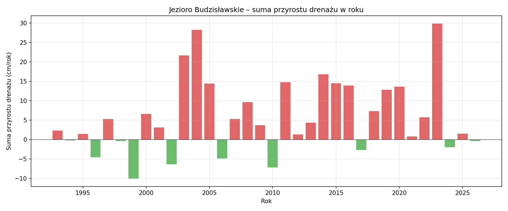
Suma przyrostu drenażu wg roku
Tabela: suma przyrostu dla każdego roku (cm/rok), bez wierszy miesięcznych.
| Rok | Suma przyrostu (cm/rok) |
|---|---|
| 1993 | +2.3 |
| 1994 | -0.2 |
| 1995 | +1.4 |
| 1996 | -4.6 |
| 1997 | +5.3 |
| 1998 | -0.4 |
| 1999 | -10.1 |
| 2000 | +6.6 |
| 2001 | +3.1 |
| 2002 | -6.4 |
| 2003 | +21.7 |
| 2004 | +28.3 |
| 2005 | +14.4 |
| 2006 | -4.9 |
| 2007 | +5.3 |
| 2008 | +9.6 |
| 2009 | +3.7 |
| 2010 | -7.2 |
| 2011 | +14.8 |
| 2012 | +1.3 |
| 2013 | +4.3 |
| 2014 | +16.8 |
| 2015 | +14.5 |
| 2016 | +13.9 |
| 2017 | -2.7 |
| 2018 | +7.3 |
| 2019 | +12.8 |
| 2020 | +13.6 |
| 2021 | +0.8 |
| 2022 | +5.7 |
| 2023 | +29.9 |
| 2024 | -2.0 |
| 2025 | +1.5 |
| 2026 | -0.4 |
Zanik drenażu — Jezioro Budzisławskie
- Rozbieżność = wysokość rzeczywista − wysokość w scenariuszu modelowym. Ujemna = jezioro poniżej scenariusza.
- Przy zaniku dodatkowego drenażu szacuje się lata do zamknięcia luki (szacunek teoretyczny).
- Projekcja: wznios wód gruntowych (cm/rok), start odbudowy od 2/2026, maks. do 2070.
Wyniki
- Średnia rozbieżność (ostatnie 12 miesięcy): 109.0 cm
- Trend rozbieżności: 2.53 cm/rok
- Szacunek odbudowy (scenariusz A): —
- Szacunek odbudowy (scenariusz B): —
Wykres projekcji odbudowy
Na wykresie: historia poziomu rzeczywistego oraz scenariusze modelowe (drenażowy i naturalny); projekcja odbudowy do zrównania z modelem drenażowym i z modelem naturalnym (porównanie obu wariantów).

Raport: Jezioro Koziegłowskie
Raport ewaluacji na następne 12 miesięcy dla Jezioro Koziegłowskie.
Poziom wody: rzeczywisty pomiar i model
Niebieska: poziom z data/kozieglowskie/data.csv. Pomarańczowa przerywana: model po zmianie reżimu (trening do daty optymalnej po drenażu). Zielona kropkowana: model naturalny (trening do końca roku przed pojawieniem się drenażu).
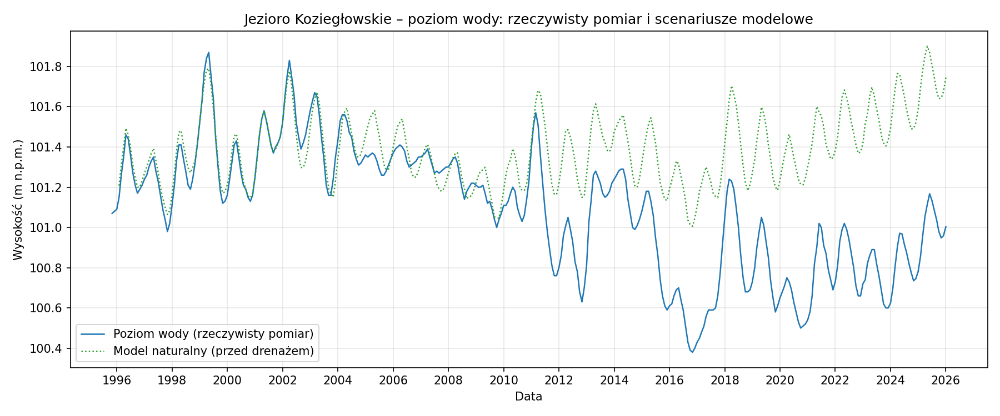
Prognoza 12 mies.
Dla każdego wariantu (temperatura: zimny/normalny/ciepły × opad: suchy/normalny/wilgotny) opad i temperatura z percentyli historycznych w data/kozieglowskie/data.csv. Symulacja: 12 miesięcy do końca stycznia 2027 (stan na koniec stycznia 2026 to pomiar rzeczywisty). Wykresy i tabele: oba modele (drenażowy i naturalny – sprzed drenażu) na wspólnych wykresach i w jednej tabeli na wariant.
Szansa realizacji (na podstawie zgodności z ostatnimi 12 miesiącami pomiarowymi – średni opad i temperatura):
| Wariant | Szansa (%) | Poziom koniec – drenaż (m) | Poziom koniec – natural (m) |
|---|---|---|---|
| zimny, suchy | 11.7 | 100.903 | 101.212 |
| zimny, normalny | 14.3 | 101.1 | 101.297 |
| zimny, wilgotny | 6.8 | 101.234 | 101.377 |
| normalny, suchy | 12.1 | 100.887 | 101.176 |
| normalny, normalny | 15.2 | 101.092 | 101.202 |
| normalny, wilgotny | 6.9 | 101.227 | 101.304 |
| ciepły, suchy | 11.7 | 100.876 | 100.954 |
| ciepły, normalny | 14.4 | 101.103 | 101.114 |
| ciepły, wilgotny | 6.8 | 101.217 | 101.211 |
Najbardziej prawdopodobny poziom na koniec stycznia 2027 (średnia ważona zmian miesięcznych według szans realizacji wszystkich wariantów). W stosunku do stanu na koniec stycznia 2026 (101.0031 m n.p.m.): - Model drenażowy: 101.05 m n.p.m. – przybędzie +0.047 m (+4.7 cm) - Model naturalny (sprzed drenażu): 101.191 m n.p.m. – przybędzie +0.188 m (+18.8 cm)
najbardziej prawdopodobny
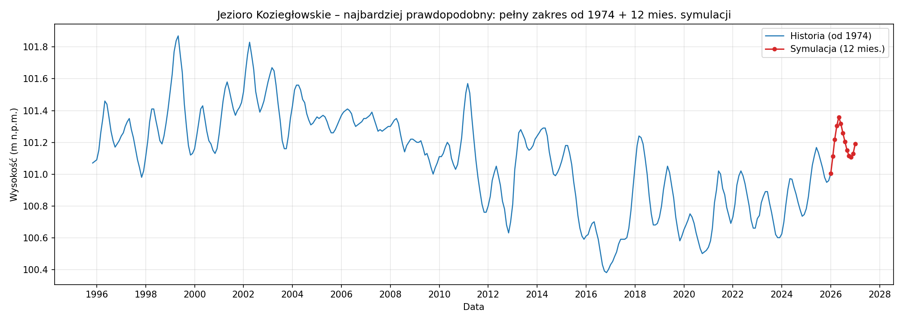
| Data | Opad (mm) | Temp. (°C) | Zmiana drenaż (cm) | Poziom drenaż (m) | Zmiana natural (cm) | Poziom natural (m) |
|---|---|---|---|---|---|---|
| 2026-02 | 34.5 | 1.4 | +10.8 cm | 101.111 | +10.6 cm | 101.109 |
| 2026-03 | 32.8 | 4.4 | +11.0 cm | 101.221 | +10.3 cm | 101.212 |
| 2026-04 | 25.4 | 9.4 | +9.1 cm | 101.312 | +9.2 cm | 101.304 |
| 2026-05 | 49.0 | 14.0 | +3.4 cm | 101.346 | +6.0 cm | 101.364 |
| 2026-06 | 50.5 | 17.8 | -4.3 cm | 101.303 | -3.9 cm | 101.325 |
| 2026-07 | 69.7 | 19.7 | -7.4 cm | 101.229 | -6.0 cm | 101.265 |
| 2026-08 | 54.2 | 19.2 | -8.2 cm | 101.147 | -6.0 cm | 101.205 |
| 2026-09 | 37.1 | 14.9 | -6.9 cm | 101.078 | -5.3 cm | 101.152 |
| 2026-10 | 36.4 | 9.8 | -5.4 cm | 101.023 | -3.3 cm | 101.119 |
| 2026-11 | 33.4 | 4.8 | -2.0 cm | 101.003 | -1.8 cm | 101.101 |
| 2026-12 | 33.9 | 1.4 | +1.1 cm | 101.014 | +2.6 cm | 101.127 |
| 2027-01 | 38.2 | -0.1 | +3.6 cm | 101.05 | +6.4 cm | 101.191 |
- Średnia ważona wszystkich wariantów (bez własnej szansy realizacji).
- Średnia temperatura roczna (prognoza): 9.7 °C
- Suma opadu (prognoza): 495.1 mm
- Różnica poziomu wody (drenaż) (koniec − start): +0.047 m (+4.7 cm)
- Poziom na koniec stycznia 2027 (drenaż): 101.05 m n.p.m.
- Różnica poziomu wody (natural) (koniec − start): +0.188 m (+18.8 cm)
- Poziom na koniec stycznia 2027 (natural): 101.191 m n.p.m.
zimny, suchy
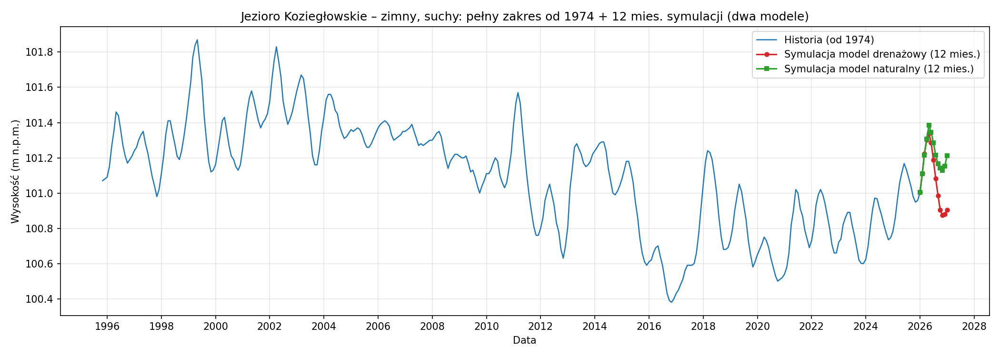
| Data | Opad (mm) | Temp. (°C) | Zmiana drenaż (cm) | Poziom drenaż (m) | Zmiana natural (cm) | Poziom natural (m) |
|---|---|---|---|---|---|---|
| 2026-02 | 26.0 | -0.9 | +10.8 cm | 101.111 | +10.6 cm | 101.109 |
| 2026-03 | 22.3 | 3.3 | +11.1 cm | 101.222 | +10.7 cm | 101.216 |
| 2026-04 | 15.2 | 8.4 | +8.1 cm | 101.302 | +9.1 cm | 101.306 |
| 2026-05 | 35.4 | 13.1 | +3.6 cm | 101.338 | +7.8 cm | 101.384 |
| 2026-06 | 34.1 | 16.5 | -5.3 cm | 101.285 | -3.9 cm | 101.345 |
| 2026-07 | 54.5 | 19.0 | -9.8 cm | 101.187 | -5.9 cm | 101.286 |
| 2026-08 | 34.2 | 18.3 | -10.5 cm | 101.082 | -7.3 cm | 101.214 |
| 2026-09 | 22.4 | 13.7 | -9.6 cm | 100.986 | -4.8 cm | 101.165 |
| 2026-10 | 22.7 | 8.5 | -8.3 cm | 100.903 | -2.4 cm | 101.142 |
| 2026-11 | 19.4 | 3.8 | -2.8 cm | 100.875 | -1.3 cm | 101.128 |
| 2026-12 | 24.8 | -0.2 | +0.4 cm | 100.879 | +2.4 cm | 101.153 |
| 2027-01 | 27.9 | -2.0 | +2.4 cm | 100.903 | +5.9 cm | 101.212 |
- Szansa realizacji: 11.7 %
- Średnia temperatura roczna (prognoza): 8.5 °C
- Suma opadu (prognoza): 338.9 mm
- Różnica poziomu wody (drenaż) (koniec − start): -0.100 m (-10.0 cm)
- Poziom na koniec stycznia 2027 (drenaż): 100.903 m n.p.m.
- Różnica poziomu wody (natural) (koniec − start): +0.209 m (+20.9 cm)
- Poziom na koniec stycznia 2027 (natural): 101.212 m n.p.m.
zimny, normalny
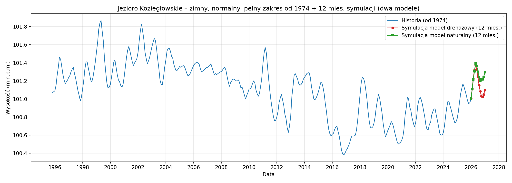
| Data | Opad (mm) | Temp. (°C) | Zmiana drenaż (cm) | Poziom drenaż (m) | Zmiana natural (cm) | Poziom natural (m) |
|---|---|---|---|---|---|---|
| 2026-02 | 34.8 | -0.9 | +10.8 cm | 101.111 | +10.6 cm | 101.109 |
| 2026-03 | 33.6 | 3.3 | +11.2 cm | 101.223 | +10.6 cm | 101.215 |
| 2026-04 | 28.6 | 8.4 | +9.7 cm | 101.319 | +9.2 cm | 101.308 |
| 2026-05 | 47.6 | 13.1 | +5.1 cm | 101.37 | +8.4 cm | 101.392 |
| 2026-06 | 54.0 | 16.5 | -4.2 cm | 101.328 | -2.7 cm | 101.364 |
| 2026-07 | 67.5 | 19.0 | -8.0 cm | 101.248 | -6.3 cm | 101.302 |
| 2026-08 | 57.5 | 18.3 | -9.6 cm | 101.152 | -5.7 cm | 101.245 |
| 2026-09 | 40.6 | 13.7 | -6.7 cm | 101.085 | -4.2 cm | 101.203 |
| 2026-10 | 38.8 | 8.5 | -5.5 cm | 101.03 | +1.1 cm | 101.214 |
| 2026-11 | 38.4 | 3.8 | -0.9 cm | 101.022 | +0.3 cm | 101.217 |
| 2026-12 | 35.8 | -0.2 | +3.0 cm | 101.051 | +2.9 cm | 101.246 |
| 2027-01 | 40.0 | -2.0 | +4.9 cm | 101.1 | +5.1 cm | 101.297 |
- Szansa realizacji: 14.3 %
- Średnia temperatura roczna (prognoza): 8.5 °C
- Suma opadu (prognoza): 517.2 mm
- Różnica poziomu wody (drenaż) (koniec − start): +0.097 m (+9.7 cm)
- Poziom na koniec stycznia 2027 (drenaż): 101.1 m n.p.m.
- Różnica poziomu wody (natural) (koniec − start): +0.294 m (+29.4 cm)
- Poziom na koniec stycznia 2027 (natural): 101.297 m n.p.m.
zimny, wilgotny
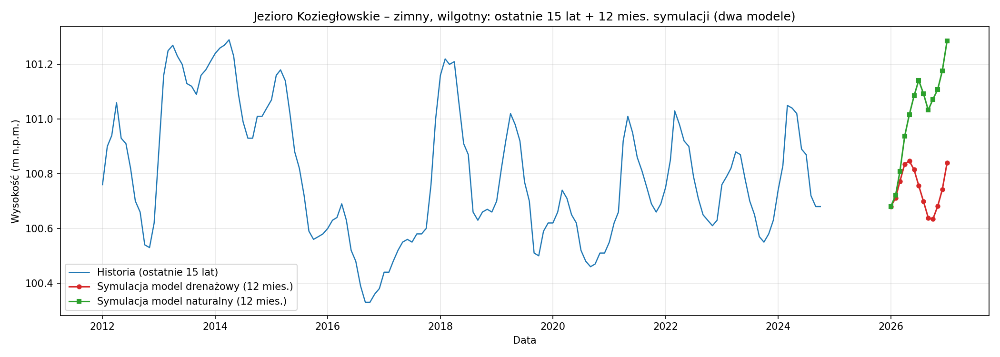
| Data | Opad (mm) | Temp. (°C) | Zmiana drenaż (cm) | Poziom drenaż (m) | Zmiana natural (cm) | Poziom natural (m) |
|---|---|---|---|---|---|---|
| 2026-02 | 48.8 | -0.9 | +10.8 cm | 101.111 | +11.0 cm | 101.113 |
| 2026-03 | 49.5 | 3.3 | +11.2 cm | 101.223 | +11.1 cm | 101.224 |
| 2026-04 | 36.4 | 8.4 | +9.6 cm | 101.319 | +9.3 cm | 101.317 |
| 2026-05 | 75.4 | 13.1 | +4.2 cm | 101.361 | +8.8 cm | 101.406 |
| 2026-06 | 71.7 | 16.5 | -2.8 cm | 101.333 | -2.6 cm | 101.379 |
| 2026-07 | 101.3 | 19.0 | -4.6 cm | 101.287 | -6.3 cm | 101.316 |
| 2026-08 | 81.8 | 18.3 | -6.4 cm | 101.223 | -5.7 cm | 101.259 |
| 2026-09 | 55.0 | 13.7 | -3.8 cm | 101.185 | -1.9 cm | 101.24 |
| 2026-10 | 55.2 | 8.5 | -3.0 cm | 101.154 | +2.8 cm | 101.268 |
| 2026-11 | 46.9 | 3.8 | +1.1 cm | 101.166 | +2.2 cm | 101.29 |
| 2026-12 | 46.0 | -0.2 | +3.1 cm | 101.197 | +3.2 cm | 101.322 |
| 2027-01 | 52.5 | -2.0 | +3.8 cm | 101.234 | +5.4 cm | 101.377 |
- Szansa realizacji: 6.8 %
- Średnia temperatura roczna (prognoza): 8.5 °C
- Suma opadu (prognoza): 720.6 mm
- Różnica poziomu wody (drenaż) (koniec − start): +0.231 m (+23.1 cm)
- Poziom na koniec stycznia 2027 (drenaż): 101.234 m n.p.m.
- Różnica poziomu wody (natural) (koniec − start): +0.374 m (+37.4 cm)
- Poziom na koniec stycznia 2027 (natural): 101.377 m n.p.m.
normalny, suchy
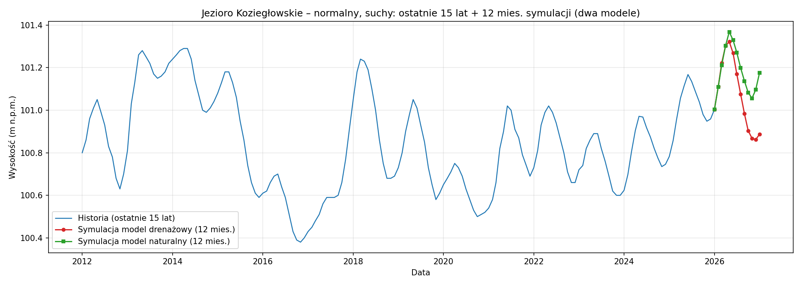
| Data | Opad (mm) | Temp. (°C) | Zmiana drenaż (cm) | Poziom drenaż (m) | Zmiana natural (cm) | Poziom natural (m) |
|---|---|---|---|---|---|---|
| 2026-02 | 26.0 | 1.0 | +10.8 cm | 101.111 | +10.7 cm | 101.11 |
| 2026-03 | 22.3 | 4.3 | +11.1 cm | 101.222 | +10.2 cm | 101.212 |
| 2026-04 | 15.2 | 9.1 | +8.0 cm | 101.302 | +9.1 cm | 101.303 |
| 2026-05 | 35.4 | 13.8 | +2.0 cm | 101.322 | +6.5 cm | 101.368 |
| 2026-06 | 34.1 | 18.0 | -5.4 cm | 101.268 | -3.9 cm | 101.329 |
| 2026-07 | 54.5 | 19.8 | -9.9 cm | 101.17 | -5.8 cm | 101.271 |
| 2026-08 | 34.2 | 19.3 | -9.4 cm | 101.076 | -7.2 cm | 101.199 |
| 2026-09 | 22.4 | 14.9 | -9.2 cm | 100.983 | -6.2 cm | 101.137 |
| 2026-10 | 22.7 | 9.8 | -8.0 cm | 100.904 | -5.5 cm | 101.083 |
| 2026-11 | 19.4 | 5.0 | -3.5 cm | 100.868 | -2.7 cm | 101.056 |
| 2026-12 | 24.8 | 1.7 | -0.7 cm | 100.862 | +4.0 cm | 101.096 |
| 2027-01 | 27.9 | -0.1 | +2.5 cm | 100.887 | +8.0 cm | 101.176 |
- Szansa realizacji: 12.1 %
- Średnia temperatura roczna (prognoza): 9.7 °C
- Suma opadu (prognoza): 338.9 mm
- Różnica poziomu wody (drenaż) (koniec − start): -0.116 m (-11.6 cm)
- Poziom na koniec stycznia 2027 (drenaż): 100.887 m n.p.m.
- Różnica poziomu wody (natural) (koniec − start): +0.173 m (+17.3 cm)
- Poziom na koniec stycznia 2027 (natural): 101.176 m n.p.m.
normalny, normalny
| Data | Opad (mm) | Temp. (°C) | Zmiana drenaż (cm) | Poziom drenaż (m) | Zmiana natural (cm) | Poziom natural (m) |
|---|---|---|---|---|---|---|
| 2026-02 | 34.8 | 1.0 | +10.8 cm | 101.111 | +10.7 cm | 101.11 |
| 2026-03 | 33.6 | 4.3 | +11.2 cm | 101.223 | +10.2 cm | 101.212 |
| 2026-04 | 28.6 | 9.1 | +9.6 cm | 101.319 | +9.2 cm | 101.304 |
| 2026-05 | 47.6 | 13.8 | +3.6 cm | 101.354 | +7.1 cm | 101.376 |
| 2026-06 | 54.0 | 18.0 | -4.4 cm | 101.311 | -2.7 cm | 101.348 |
| 2026-07 | 67.5 | 19.8 | -8.0 cm | 101.23 | -6.3 cm | 101.286 |
| 2026-08 | 57.5 | 19.3 | -8.3 cm | 101.147 | -5.4 cm | 101.232 |
| 2026-09 | 40.6 | 14.9 | -6.4 cm | 101.084 | -5.8 cm | 101.173 |
| 2026-10 | 38.8 | 9.8 | -4.2 cm | 101.042 | -4.6 cm | 101.127 |
| 2026-11 | 38.4 | 5.0 | -1.7 cm | 101.025 | -2.4 cm | 101.103 |
| 2026-12 | 35.8 | 1.7 | +1.6 cm | 101.041 | +2.5 cm | 101.128 |
| 2027-01 | 40.0 | -0.1 | +5.1 cm | 101.092 | +7.4 cm | 101.202 |
- Szansa realizacji: 15.2 %
- Średnia temperatura roczna (prognoza): 9.7 °C
- Suma opadu (prognoza): 517.2 mm
- Różnica poziomu wody (drenaż) (koniec − start): +0.089 m (+8.9 cm)
- Poziom na koniec stycznia 2027 (drenaż): 101.092 m n.p.m.
- Różnica poziomu wody (natural) (koniec − start): +0.199 m (+19.9 cm)
- Poziom na koniec stycznia 2027 (natural): 101.202 m n.p.m.
normalny, wilgotny
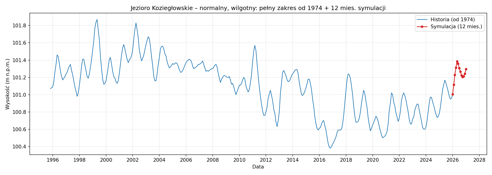
| Data | Opad (mm) | Temp. (°C) | Zmiana drenaż (cm) | Poziom drenaż (m) | Zmiana natural (cm) | Poziom natural (m) |
|---|---|---|---|---|---|---|
| 2026-02 | 48.8 | 1.0 | +10.8 cm | 101.111 | +11.1 cm | 101.114 |
| 2026-03 | 49.5 | 4.3 | +11.2 cm | 101.223 | +10.8 cm | 101.222 |
| 2026-04 | 36.4 | 9.1 | +9.6 cm | 101.318 | +9.3 cm | 101.315 |
| 2026-05 | 75.4 | 13.8 | +2.6 cm | 101.345 | +7.5 cm | 101.39 |
| 2026-06 | 71.7 | 18.0 | -2.9 cm | 101.316 | -2.7 cm | 101.363 |
| 2026-07 | 101.3 | 19.8 | -4.7 cm | 101.269 | -6.3 cm | 101.3 |
| 2026-08 | 81.8 | 19.3 | -5.1 cm | 101.218 | -5.7 cm | 101.243 |
| 2026-09 | 55.0 | 14.9 | -3.7 cm | 101.181 | -3.6 cm | 101.207 |
| 2026-10 | 55.2 | 9.8 | -3.0 cm | 101.15 | +0.8 cm | 101.216 |
| 2026-11 | 46.9 | 5.0 | +0.6 cm | 101.156 | +0.9 cm | 101.224 |
| 2026-12 | 46.0 | 1.7 | +3.2 cm | 101.187 | +3.0 cm | 101.254 |
| 2027-01 | 52.5 | -0.1 | +3.9 cm | 101.227 | +5.0 cm | 101.304 |
- Szansa realizacji: 6.9 %
- Średnia temperatura roczna (prognoza): 9.7 °C
- Suma opadu (prognoza): 720.6 mm
- Różnica poziomu wody (drenaż) (koniec − start): +0.224 m (+22.4 cm)
- Poziom na koniec stycznia 2027 (drenaż): 101.227 m n.p.m.
- Różnica poziomu wody (natural) (koniec − start): +0.301 m (+30.1 cm)
- Poziom na koniec stycznia 2027 (natural): 101.304 m n.p.m.
ciepły, suchy
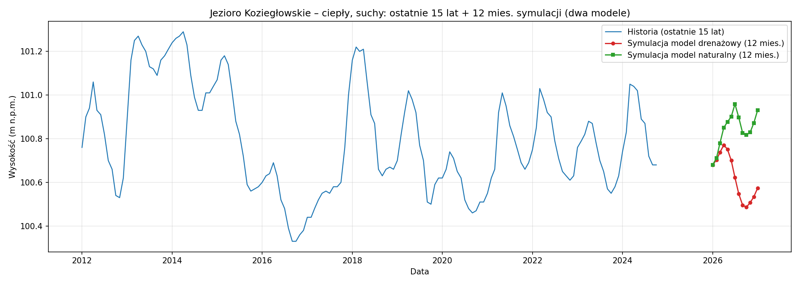
| Data | Opad (mm) | Temp. (°C) | Zmiana drenaż (cm) | Poziom drenaż (m) | Zmiana natural (cm) | Poziom natural (m) |
|---|---|---|---|---|---|---|
| 2026-02 | 26.0 | 4.0 | +10.8 cm | 101.111 | +10.4 cm | 101.107 |
| 2026-03 | 22.3 | 5.6 | +10.8 cm | 101.219 | +9.8 cm | 101.205 |
| 2026-04 | 15.2 | 10.6 | +8.1 cm | 101.3 | +9.1 cm | 101.295 |
| 2026-05 | 35.4 | 15.1 | +2.1 cm | 101.321 | +2.3 cm | 101.318 |
| 2026-06 | 34.1 | 19.0 | -5.2 cm | 101.268 | -7.0 cm | 101.248 |
| 2026-07 | 54.5 | 20.4 | -8.2 cm | 101.187 | -5.9 cm | 101.189 |
| 2026-08 | 34.2 | 20.0 | -9.0 cm | 101.096 | -7.2 cm | 101.117 |
| 2026-09 | 22.4 | 16.1 | -9.0 cm | 101.007 | -7.6 cm | 101.041 |
| 2026-10 | 22.7 | 11.3 | -8.1 cm | 100.926 | -9.2 cm | 100.949 |
| 2026-11 | 19.4 | 5.8 | -4.9 cm | 100.877 | -4.8 cm | 100.901 |
| 2026-12 | 24.8 | 2.7 | -1.6 cm | 100.861 | -0.3 cm | 100.898 |
| 2027-01 | 27.9 | 1.9 | +1.5 cm | 100.876 | +5.6 cm | 100.954 |
- Szansa realizacji: 11.7 %
- Średnia temperatura roczna (prognoza): 11.0 °C
- Suma opadu (prognoza): 338.9 mm
- Różnica poziomu wody (drenaż) (koniec − start): -0.127 m (-12.7 cm)
- Poziom na koniec stycznia 2027 (drenaż): 100.876 m n.p.m.
- Różnica poziomu wody (natural) (koniec − start): -0.049 m (-4.9 cm)
- Poziom na koniec stycznia 2027 (natural): 100.954 m n.p.m.
ciepły, normalny
| Data | Opad (mm) | Temp. (°C) | Zmiana drenaż (cm) | Poziom drenaż (m) | Zmiana natural (cm) | Poziom natural (m) |
|---|---|---|---|---|---|---|
| 2026-02 | 34.8 | 4.0 | +10.8 cm | 101.111 | +10.4 cm | 101.107 |
| 2026-03 | 33.6 | 5.6 | +10.9 cm | 101.22 | +9.7 cm | 101.204 |
| 2026-04 | 28.6 | 10.6 | +9.7 cm | 101.317 | +9.2 cm | 101.297 |
| 2026-05 | 47.6 | 15.1 | +3.6 cm | 101.353 | +2.9 cm | 101.326 |
| 2026-06 | 54.0 | 19.0 | -4.0 cm | 101.314 | -4.7 cm | 101.279 |
| 2026-07 | 67.5 | 20.4 | -5.9 cm | 101.255 | -5.7 cm | 101.223 |
| 2026-08 | 57.5 | 20.0 | -7.0 cm | 101.184 | -5.0 cm | 101.173 |
| 2026-09 | 40.6 | 16.1 | -6.3 cm | 101.121 | -6.7 cm | 101.106 |
| 2026-10 | 38.8 | 11.3 | -3.8 cm | 101.083 | -6.2 cm | 101.044 |
| 2026-11 | 38.4 | 5.8 | -2.9 cm | 101.054 | -3.7 cm | 101.007 |
| 2026-12 | 35.8 | 2.7 | +0.4 cm | 101.058 | +3.3 cm | 101.04 |
| 2027-01 | 40.0 | 1.9 | +4.5 cm | 101.103 | +7.4 cm | 101.114 |
- Szansa realizacji: 14.4 %
- Średnia temperatura roczna (prognoza): 11.0 °C
- Suma opadu (prognoza): 517.2 mm
- Różnica poziomu wody (drenaż) (koniec − start): +0.100 m (+10.0 cm)
- Poziom na koniec stycznia 2027 (drenaż): 101.103 m n.p.m.
- Różnica poziomu wody (natural) (koniec − start): +0.111 m (+11.1 cm)
- Poziom na koniec stycznia 2027 (natural): 101.114 m n.p.m.
ciepły, wilgotny
| Data | Opad (mm) | Temp. (°C) | Zmiana drenaż (cm) | Poziom drenaż (m) | Zmiana natural (cm) | Poziom natural (m) |
|---|---|---|---|---|---|---|
| 2026-02 | 48.8 | 4.0 | +10.8 cm | 101.111 | +10.8 cm | 101.111 |
| 2026-03 | 49.5 | 5.6 | +10.9 cm | 101.221 | +10.3 cm | 101.214 |
| 2026-04 | 36.4 | 10.6 | +9.6 cm | 101.317 | +9.3 cm | 101.307 |
| 2026-05 | 75.4 | 15.1 | +2.7 cm | 101.344 | +3.3 cm | 101.34 |
| 2026-06 | 71.7 | 19.0 | -2.7 cm | 101.318 | -4.7 cm | 101.294 |
| 2026-07 | 101.3 | 20.4 | -3.3 cm | 101.285 | -5.8 cm | 101.236 |
| 2026-08 | 81.8 | 20.0 | -4.5 cm | 101.239 | -5.2 cm | 101.184 |
| 2026-09 | 55.0 | 16.1 | -4.4 cm | 101.195 | -4.3 cm | 101.141 |
| 2026-10 | 55.2 | 11.3 | -2.7 cm | 101.168 | -1.4 cm | 101.127 |
| 2026-11 | 46.9 | 5.8 | -0.4 cm | 101.164 | -1.4 cm | 101.113 |
| 2026-12 | 46.0 | 2.7 | +1.8 cm | 101.181 | +2.6 cm | 101.139 |
| 2027-01 | 52.5 | 1.9 | +3.6 cm | 101.217 | +7.1 cm | 101.211 |
- Szansa realizacji: 6.8 %
- Średnia temperatura roczna (prognoza): 11.0 °C
- Suma opadu (prognoza): 720.6 mm
- Różnica poziomu wody (drenaż) (koniec − start): +0.214 m (+21.4 cm)
- Poziom na koniec stycznia 2027 (drenaż): 101.217 m n.p.m.
- Różnica poziomu wody (natural) (koniec − start): +0.208 m (+20.8 cm)
- Poziom na koniec stycznia 2027 (natural): 101.211 m n.p.m.
Wygenerowano: 2026-02-15 15:44
Szanse na odbudowę – Jezioro Koziegłowskie
Opisowa ocena szans na odbudowę poziomu wody w perspektywie kolejnych 12 miesięcy, na podstawie prognozy z symulacji wariantów pogodowych (opad i temperatura z percentyli historycznych) oraz szacowanych szans realizacji każdego wariantu (zgodność z ostatnimi 12 miesiącami pomiarowymi).
Stan odniesienia: koniec stycznia 2026 – poziom 101.003 m n.p.m.
Porównanie prognoz (najbardziej prawdopodobny scenariusz, średnia ważona):
| Model | Poziom koniec (m n.p.m.) | Zmiana (cm) |
|---|---|---|
| Drenażowy (po zmianie reżimu) | 101.050 | +4.7 |
| Naturalny (sprzed drenażu) | 101.191 | +18.8 |
Prognoza na koniec stycznia 2027 (model drenażowy): poziom 101.050 m n.p.m., czyli wzrost o 4.7 cm w stosunku do stanu odniesienia.
W zależności od warunków pogodowych w nadchodzącym roku prognozowana zmiana poziomu w 12 miesięcy (model drenażowy) mieści się w zakresie od -12.7 cm do +23.1 cm. Najwyższą szansę realizacji (15.2%) ma jeden z wariantów pogodowych; szczegóły wszystkich wariantów i szans – w raporcie Prognoza 12 mies..
Szanse na odbudowę w perspektywie roku (model drenażowy): prognoza modelu drenażowego wskazuje na stabilizację lub niewielki przyrost poziomu w ciągu roku; szanse na odbudowę w tej perspektywie są umiarkowane.
Szanse na odbudowę w perspektywie roku (model naturalny): prognoza modelu naturalnego (sprzed drenażu) wskazuje na możliwy przyrost poziomu w ciągu roku.
Szacunki długoterminowej odbudowy (lata do zamknięcia luki po ewentualnym zaniku drenażu) – patrz Zanik drenażu.
Wygenerowano: 2026-02-15 15:44
Raport podsumowujący: prognoza zmiany poziomu Jezioro Koziegłowskie
1. Cel projektu
Projekt ma na celu: - zbudowanie modelu uczenia maszynowego, który na podstawie opadu i temperatury (oraz sezonowości i historii) prognozuje miesięczną zmianę poziomu Jezioro Koziegłowskie; - ewaluację prognoz względem rzeczywistych pomiarów.
2. Dane
- Źródło: plik
data/kozieglowskie/data.csv. - Zakres: dane miesięczne (pierwszy dzień miesiąca).
- Kolumny: Data, Poziom (m), Zmiana (m), Opad (mm), Temperatura (°C).
- Target: Zmiana – miesięczna zmiana poziomu.
- Wiersze z błędami (#ERROR!) lub brakami są pomijane. Po usunięciu lagów (5 mies.) do analizy wchodzi 358 miesięcy.
3. Model
| Element | Opis |
|---|---|
| Algorytm | Gradient Boosting (regresja), scikit-learn |
| Cechy wejściowe | Miesiąc (sin/cos), Opad, Temperatura, opad i temperatura z opóźnieniem 1–5 mies., 3 opóźnienia zmiany poziomu, 3 opóźnienia poziomu |
| Trening | Podział czasowy: trening do 2023-12, test od 2024 do 2003 |
| Wynik | Prognoza zmiany poziomu na dany miesiąc (cm) |
Model nie używa bieżącego poziomu – tylko opad, temperatura, sezon i historia.
4. Wyniki ewaluacji
- MAE (średni błąd bezwzględny): nan cm
- RMSE: nan cm
- Liczba miesięcy: 358
4.1. Wysokość wody: rzeczywista vs scenariusz modelowy
Scenariusz modelowy: start od poziomu na początek pierwszego miesiąca; w każdym miesiącu dodawana jest prognozowana zmiana (kumulatywnie).
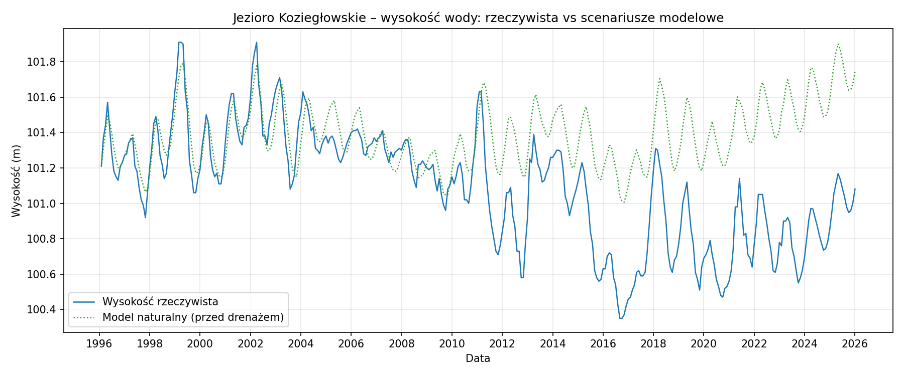
4.2. Rozbieżność w czasie
Rozbieżność = wysokość rzeczywista − wysokość w scenariuszu modelowym. Wartość dodatnia: jezioro wyżej niż przewidywał model; ujemna: niżej.
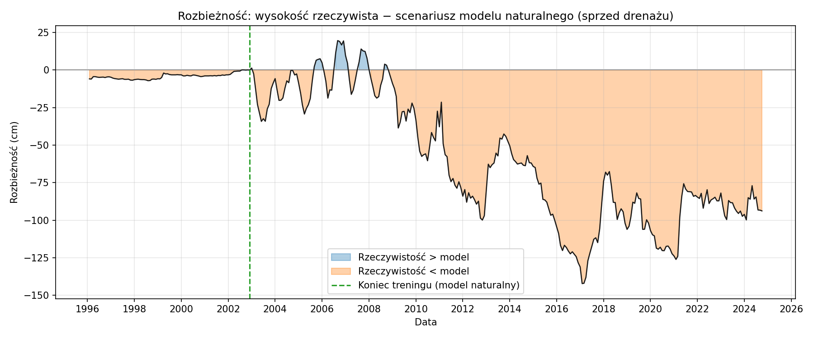
4.3. Zmiana poziomu: faktyczna vs prognoza
Punkty przy linii y = x oznaczają dobrą zgodność miesięcznych zmian.
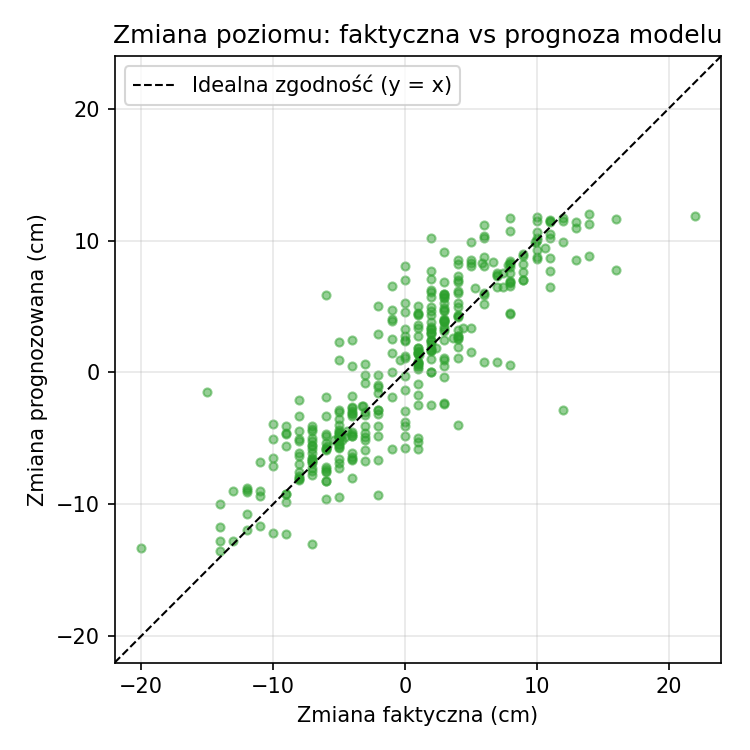
4.4. Błąd miesięczny
Błąd = zmiana faktyczna − zmiana prognozowana w każdym miesiącu.
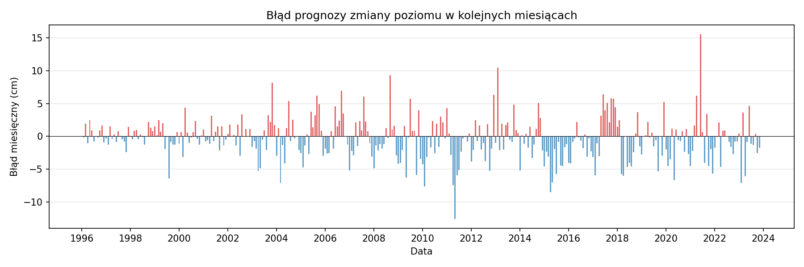
5. Podsumowanie
- Model prognozuje miesięczną zmianę poziomu Jezioro Koziegłowskie z MAE ~nan cm.
- Scenariusz kumulatywny (wysokość z prognozowanej zmiany) jest porównywany z rzeczywistą wysokością; rozbieżność i błąd miesięczny opisują jakość prognoz.
Szczegóły techniczne: model.md, podsumowanie_ewaluacji.md.
Wygenerowano: 2026-02-15 15:38
Podsumowanie ewaluacji prognozy zmiany poziomu Jezioro Koziegłowskie
Dla każdego miesiąca model otrzymuje opad i temperaturę (oraz cechy opóźnione z historii), wylicza prognozowaną zmianę poziomu Jezioro Koziegłowskie i jest ona porównana z faktyczną zmianą.
Metryki
- MAE (średni błąd bezwzględny): nan cm
- RMSE (pierwiastek błędu średniokwadratowego): nan cm
- Liczba miesięcy (zbior testowy): 0
- Liczba miesięcy (tabela / wykres): 358
Porównanie miesięczne
| Data | Opad (mm) | Temperatura (°C) | Zmiana faktyczna (cm) | Zmiana prognoza (cm) | Błąd (cm) | Wysokość rzeczywista (m) | Wysokość scenariusz modelowy (m) | Rozbieżność (cm) |
|---|---|---|---|---|---|---|---|---|
| 1996-04 | 9.8 | 7.6 | +9.0 | +7.0 | +2.0 | 101.44 | 101.42 | +2.0 |
| 1996-05 | 92.2 | 13.5 | +11.0 | +2.1 | +8.9 | 101.57 | 101.441 | +12.9 |
| 1996-06 | 25.8 | 16.6 | -2.0 | -1.4 | -0.7 | 101.42 | 101.428 | -0.8 |
| 1996-07 | 106.9 | 15.9 | -8.0 | -5.9 | -2.1 | 101.28 | 101.369 | -8.9 |
| 1996-08 | 62.2 | 18.4 | -9.0 | -10.2 | +1.2 | 101.18 | 101.266 | -8.6 |
| 1996-09 | 62.5 | 10.9 | -6.0 | -4.9 | -1.1 | 101.15 | 101.217 | -6.7 |
| 1996-10 | 26.1 | 9.5 | -4.0 | -3.8 | -0.2 | 101.13 | 101.18 | -5.0 |
| 1996-11 | 15.1 | 5.4 | +2.0 | -1.9 | +3.9 | 101.21 | 101.161 | +4.9 |
| 1996-12 | 7.6 | -4.5 | +2.0 | +0.9 | +1.1 | 101.23 | 101.17 | +6.0 |
| 1997-01 | 0.8 | -3.2 | +3.0 | +0.8 | +2.2 | 101.27 | 101.178 | +9.2 |
| 1997-02 | 49.6 | 2.9 | +2.0 | +0.9 | +1.1 | 101.28 | 101.187 | +9.3 |
| 1997-03 | 24.4 | 4.1 | +4.0 | +1.7 | +2.3 | 101.34 | 101.204 | +13.6 |
| 1997-04 | 15.8 | 5.5 | +3.0 | +2.8 | +0.2 | 101.36 | 101.232 | +12.8 |
| 1997-05 | 49.8 | 12.6 | +2.0 | -2.7 | +4.7 | 101.37 | 101.205 | +16.5 |
| 1997-06 | 64.0 | 16.5 | -7.0 | -4.0 | -3.0 | 101.21 | 101.165 | +4.5 |
| 1997-07 | 115.5 | 17.8 | -5.0 | -7.7 | +2.7 | 101.18 | 101.088 | +9.2 |
| 1997-08 | 33.8 | 19.6 | -7.0 | -8.0 | +1.0 | 101.09 | 101.008 | +8.2 |
| 1997-09 | 22.7 | 13.5 | -7.0 | -6.8 | -0.2 | 101.02 | 100.94 | +8.0 |
| 1997-10 | 44.1 | 7.4 | -5.0 | -5.2 | +0.2 | 100.99 | 100.888 | +10.2 |
| 1997-11 | 24.4 | 3.0 | -6.0 | -1.6 | -4.4 | 100.92 | 100.872 | +4.8 |
| 1997-12 | 35.7 | 1.6 | +4.0 | +0.3 | +3.7 | 101.06 | 100.875 | +18.5 |
| 1998-01 | 40.0 | 1.9 | +9.0 | +3.5 | +5.5 | 101.2 | 100.91 | +29.0 |
| 1998-02 | 16.8 | 4.6 | +10.0 | +12.2 | -2.2 | 101.31 | 101.032 | +27.8 |
| 1998-03 | 46.3 | 3.3 | +12.0 | +12.1 | -0.1 | 101.45 | 101.153 | +29.7 |
| 1998-04 | 36.5 | 10.4 | +8.0 | +7.1 | +0.9 | 101.49 | 101.224 | +26.6 |
| 1998-05 | 36.1 | 14.6 | +0.0 | +4.0 | -4.0 | 101.41 | 101.264 | +14.6 |
| 1998-06 | 35.5 | 17.1 | -7.0 | -4.5 | -2.5 | 101.27 | 101.219 | +5.1 |
| 1998-07 | 73.9 | 17.4 | -6.0 | -6.0 | -0.0 | 101.22 | 101.159 | +6.1 |
| 1998-08 | 68.6 | 16.7 | -7.0 | -7.5 | +0.5 | 101.14 | 101.084 | +5.6 |
| 1998-09 | 96.7 | 14.0 | -2.0 | -4.1 | +2.1 | 101.17 | 101.043 | +12.7 |
| 1998-10 | 68.1 | 8.5 | +5.0 | -2.6 | +7.6 | 101.29 | 101.018 | +27.2 |
| 1998-11 | 47.5 | 0.1 | +8.0 | +4.8 | +3.2 | 101.4 | 101.066 | +33.4 |
| 1998-12 | 41.6 | -0.2 | +9.0 | +12.3 | -3.3 | 101.5 | 101.189 | +31.1 |
| 1999-01 | 46.0 | 1.2 | +11.0 | +11.6 | -0.6 | 101.63 | 101.305 | +32.5 |
| 1999-02 | 52.8 | -0.5 | +11.0 | +11.0 | +0.0 | 101.74 | 101.415 | +32.5 |
| 1999-03 | 55.0 | 4.4 | +14.0 | +13.0 | +1.0 | 101.91 | 101.545 | +36.5 |
| 1999-04 | 83.6 | 9.5 | +7.0 | +10.1 | -3.1 | 101.91 | 101.646 | +26.4 |
| 1999-05 | 41.8 | 13.0 | +3.0 | +2.8 | +0.2 | 101.9 | 101.674 | +22.6 |
| 1999-06 | 58.0 | 16.2 | -12.0 | -2.0 | -10.0 | 101.63 | 101.654 | -2.4 |
| 1999-07 | 61.6 | 19.6 | -11.0 | -9.4 | -1.6 | 101.53 | 101.56 | -3.0 |
| 1999-08 | 14.0 | 17.8 | -20.0 | -8.9 | -11.1 | 101.24 | 101.471 | -23.1 |
| 1999-09 | 18.4 | 17.1 | -14.0 | -9.6 | -4.4 | 101.16 | 101.375 | -21.5 |
| 1999-10 | 43.8 | 9.0 | -12.0 | -8.2 | -3.9 | 101.06 | 101.293 | -23.3 |
| 1999-11 | 35.3 | 2.9 | -6.0 | -3.1 | -2.9 | 101.06 | 101.262 | -20.2 |
| 1999-12 | 46.7 | 1.7 | +1.0 | -0.1 | +1.1 | 101.14 | 101.261 | -12.1 |
| 2000-01 | 27.6 | -0.1 | +3.0 | +4.2 | -1.2 | 101.19 | 101.303 | -11.3 |
| 2000-02 | 34.4 | 3.2 | +8.0 | +4.4 | +3.6 | 101.32 | 101.347 | -2.7 |
| 2000-03 | 70.7 | 4.1 | +8.0 | +11.8 | -3.9 | 101.4 | 101.465 | -6.5 |
| 2000-04 | 21.8 | 12.1 | +9.0 | +7.7 | +1.3 | 101.5 | 101.542 | -4.2 |
| 2000-05 | 33.5 | 15.6 | +2.0 | +1.5 | +0.5 | 101.45 | 101.557 | -10.7 |
| 2000-06 | 30.1 | 17.3 | -8.0 | -5.2 | -2.8 | 101.27 | 101.505 | -23.5 |
| 2000-07 | 151.9 | 16.3 | -8.0 | -7.5 | -0.5 | 101.19 | 101.43 | -24.0 |
| 2000-08 | 69.7 | 18.2 | -6.0 | -7.0 | +1.0 | 101.15 | 101.36 | -21.0 |
| 2000-09 | 47.1 | 12.9 | -2.0 | -5.5 | +3.5 | 101.17 | 101.306 | -13.6 |
| 2000-10 | 15.7 | 11.8 | -4.0 | -4.3 | +0.3 | 101.11 | 101.263 | -15.3 |
| 2000-11 | 47.4 | 6.5 | -2.0 | -4.8 | +2.8 | 101.11 | 101.215 | -10.5 |
| 2000-12 | 48.1 | 2.2 | +3.0 | +1.2 | +1.8 | 101.19 | 101.227 | -3.7 |
| 2001-01 | 16.3 | -0.1 | +9.0 | +3.9 | +5.1 | 101.34 | 101.266 | +7.4 |
| 2001-02 | 26.9 | 0.7 | +11.0 | +11.8 | -0.8 | 101.47 | 101.384 | +8.6 |
| 2001-03 | 49.5 | 2.6 | +10.0 | +10.8 | -0.8 | 101.56 | 101.492 | +6.8 |
| 2001-04 | 36.1 | 8.0 | +8.0 | +9.9 | -1.9 | 101.62 | 101.591 | +2.9 |
| 2001-05 | 29.0 | 14.4 | +4.0 | +6.2 | -2.2 | 101.62 | 101.653 | -3.3 |
| 2001-06 | 49.9 | 15.1 | -5.0 | -4.6 | -0.4 | 101.48 | 101.607 | -12.7 |
| 2001-07 | 76.6 | 19.9 | -6.0 | -7.9 | +1.9 | 101.41 | 101.528 | -11.8 |
| 2001-08 | 28.3 | 19.8 | -6.0 | -8.7 | +2.7 | 101.35 | 101.441 | -9.1 |
| 2001-09 | 97.6 | 12.3 | -4.0 | -5.5 | +1.5 | 101.33 | 101.386 | -5.6 |
| 2001-10 | 20.9 | 3.0 | +3.0 | -3.3 | +6.3 | 101.43 | 101.353 | +7.7 |
| 2001-11 | 21.2 | -1.6 | +2.0 | +2.2 | -0.2 | 101.44 | 101.375 | +6.5 |
| 2001-12 | 54.0 | -0.3 | +3.0 | +2.0 | +1.0 | 101.48 | 101.395 | +8.5 |
| 2002-01 | 29.9 | 0.7 | +7.0 | +1.9 | +5.1 | 101.59 | 101.413 | +17.7 |
| 2002-02 | 67.2 | 4.0 | +13.0 | +11.4 | +1.6 | 101.78 | 101.527 | +25.3 |
| 2002-03 | 49.5 | 5.0 | +10.0 | +10.4 | -0.4 | 101.85 | 101.632 | +21.8 |
| 2002-04 | 15.0 | 8.8 | +8.0 | +7.5 | +0.5 | 101.91 | 101.707 | +20.3 |
| 2002-05 | 40.3 | 16.8 | -8.0 | +2.3 | -10.3 | 101.67 | 101.719 | -4.9 |
| 2002-06 | 47.3 | 18.0 | -9.0 | -9.7 | +0.7 | 101.57 | 101.622 | -5.2 |
| 2002-07 | 61.6 | 20.3 | -14.0 | -7.1 | -6.9 | 101.38 | 101.551 | -17.1 |
| 2002-08 | 49.9 | 21.5 | -7.0 | -8.8 | +1.8 | 101.38 | 101.463 | -8.3 |
| 2002-09 | 66.2 | 14.2 | -6.0 | -7.8 | +1.8 | 101.33 | 101.385 | -5.5 |
| 2002-10 | 82.7 | 7.7 | +3.0 | -3.8 | +6.8 | 101.45 | 101.346 | +10.4 |
| 2002-11 | 46.2 | 4.3 | +4.0 | +3.8 | +0.2 | 101.5 | 101.385 | +11.5 |
| 2002-12 | 7.3 | -3.6 | +6.0 | +3.9 | +2.1 | 101.58 | 101.423 | +15.7 |
| 2003-01 | 41.7 | -1.7 | +6.0 | +4.4 | +1.6 | 101.64 | 101.467 | +17.3 |
| 2003-02 | 5.5 | -3.5 | +5.0 | +3.5 | +1.5 | 101.68 | 101.502 | +17.8 |
| 2003-03 | 14.4 | 3.0 | +4.0 | +2.1 | +1.9 | 101.71 | 101.523 | +18.7 |
| 2003-04 | 12.7 | 8.2 | -2.0 | +0.1 | -2.1 | 101.63 | 101.524 | +10.6 |
| 2003-05 | 35.2 | 15.7 | -9.0 | -5.9 | -3.1 | 101.47 | 101.465 | +0.5 |
| 2003-06 | 26.0 | 19.0 | -12.0 | -11.0 | -1.0 | 101.32 | 101.355 | -3.5 |
| 2003-07 | 68.2 | 19.5 | -10.0 | -11.1 | +1.1 | 101.24 | 101.244 | -0.4 |
| 2003-08 | 16.8 | 19.4 | -13.0 | -12.3 | -0.7 | 101.08 | 101.121 | -4.1 |
| 2003-09 | 11.2 | 14.7 | -5.0 | -9.7 | +4.7 | 101.11 | 101.024 | +8.6 |
| 2003-10 | 40.1 | 5.8 | +0.0 | -6.7 | +6.7 | 101.16 | 100.957 | +20.3 |
| 2003-11 | 24.0 | 5.6 | +8.0 | +0.5 | +7.5 | 101.32 | 100.962 | +35.8 |
| 2003-12 | 37.9 | 1.9 | +11.0 | +11.7 | -0.7 | 101.46 | 101.079 | +38.1 |
| 2004-01 | 49.2 | -4.0 | +8.0 | +10.8 | -2.8 | 101.51 | 101.187 | +32.3 |
| 2004-02 | 36.6 | 1.6 | +10.0 | +11.6 | -1.6 | 101.63 | 101.303 | +32.7 |
| 2004-03 | 29.1 | 4.7 | +3.0 | +11.9 | -8.9 | 101.59 | 101.422 | +16.8 |
| 2004-04 | 31.6 | 9.4 | +0.0 | -0.8 | +0.8 | 101.56 | 101.414 | +14.6 |
| 2004-05 | 50.3 | 12.5 | -3.0 | -2.1 | -0.9 | 101.5 | 101.393 | +10.7 |
| 2004-06 | 38.5 | 16.0 | -6.0 | -6.6 | +0.6 | 101.41 | 101.328 | +8.2 |
| 2004-07 | 31.7 | 18.0 | -2.0 | -8.2 | +6.2 | 101.43 | 101.246 | +18.4 |
| 2004-08 | 77.4 | 20.0 | -7.0 | -7.0 | +0.0 | 101.31 | 101.176 | +13.4 |
| 2004-09 | 29.5 | 14.3 | -4.0 | -6.9 | +2.9 | 101.3 | 101.107 | +19.3 |
| 2004-10 | 57.3 | 10.5 | -3.0 | -4.3 | +1.3 | 101.28 | 101.064 | +21.6 |
| 2004-11 | 46.8 | 4.2 | +1.0 | +0.1 | +0.9 | 101.33 | 101.065 | +26.5 |
| 2004-12 | 35.8 | 1.7 | +2.0 | +3.0 | -1.0 | 101.36 | 101.095 | +26.5 |
| 2005-01 | 28.2 | 1.8 | +2.0 | +4.3 | -2.3 | 101.38 | 101.139 | +24.1 |
| 2005-02 | 51.6 | -1.8 | -1.0 | +2.4 | -3.4 | 101.34 | 101.163 | +17.7 |
| 2005-03 | 22.8 | 1.4 | +1.0 | +2.8 | -1.8 | 101.37 | 101.191 | +17.9 |
| 2005-04 | 31.0 | 9.1 | +1.0 | +2.4 | -1.4 | 101.38 | 101.214 | +16.6 |
| 2005-05 | 88.5 | 13.6 | -1.0 | -2.1 | +1.1 | 101.35 | 101.194 | +15.6 |
| 2005-06 | 33.6 | 16.5 | -3.0 | -4.3 | +1.3 | 101.3 | 101.151 | +14.9 |
| 2005-07 | 65.4 | 20.1 | -4.0 | -5.3 | +1.3 | 101.25 | 101.098 | +15.2 |
| 2005-08 | 23.1 | 17.3 | -3.0 | -10.3 | +7.3 | 101.23 | 100.995 | +23.5 |
| 2005-09 | 24.2 | 16.2 | +0.0 | -4.0 | +4.0 | 101.26 | 100.955 | +30.5 |
| 2005-10 | 6.6 | 10.8 | +2.0 | -1.6 | +3.6 | 101.3 | 100.939 | +36.1 |
| 2005-11 | 28.5 | 3.5 | +3.0 | -1.0 | +4.0 | 101.34 | 100.929 | +41.1 |
| 2005-12 | 100.7 | 0.3 | +3.0 | +0.6 | +2.4 | 101.37 | 100.935 | +43.5 |
| 2006-01 | 19.4 | -6.1 | +3.0 | +5.0 | -2.0 | 101.4 | 100.984 | +41.6 |
| 2006-02 | 46.3 | -1.3 | +2.0 | +4.8 | -2.8 | 101.41 | 101.032 | +37.8 |
| 2006-03 | 33.3 | 0.9 | +1.0 | +2.6 | -1.6 | 101.41 | 101.058 | +35.2 |
| 2006-04 | 51.1 | 9.1 | +1.0 | +2.2 | -1.2 | 101.42 | 101.081 | +33.9 |
| 2006-05 | 50.9 | 13.6 | -1.0 | -0.5 | -0.5 | 101.39 | 101.076 | +31.4 |
| 2006-06 | 20.0 | 18.1 | -2.0 | -5.1 | +3.1 | 101.36 | 101.025 | +33.5 |
| 2006-07 | 11.2 | 23.5 | -5.0 | -7.3 | +2.3 | 101.28 | 100.952 | +32.8 |
| 2006-08 | 205.5 | 17.8 | -3.0 | -9.5 | +6.5 | 101.27 | 100.857 | +41.3 |
| 2006-09 | 13.2 | 17.1 | +1.0 | -5.6 | +6.6 | 101.32 | 100.802 | +51.8 |
| 2006-10 | 44.7 | 11.5 | +1.0 | -0.5 | +1.5 | 101.33 | 100.796 | +53.4 |
| 2006-11 | 42.8 | 6.8 | +1.0 | +0.5 | +0.5 | 101.34 | 100.801 | +53.9 |
| 2006-12 | 37.6 | 4.7 | +2.0 | +2.3 | -0.3 | 101.37 | 100.824 | +54.6 |
| 2007-01 | 90.3 | 4.5 | +0.0 | +4.2 | -4.2 | 101.35 | 100.866 | +48.4 |
| 2007-02 | 49.7 | 1.2 | +1.0 | +3.4 | -2.4 | 101.37 | 100.9 | +47.0 |
| 2007-03 | 60.9 | 6.7 | +1.0 | +5.7 | -4.7 | 101.38 | 100.957 | +42.3 |
| 2007-04 | 13.7 | 10.2 | +2.0 | +3.3 | -1.3 | 101.41 | 100.99 | +42.0 |
| 2007-05 | 46.4 | 15.2 | -4.0 | -2.1 | -1.9 | 101.31 | 100.969 | +34.1 |
| 2007-06 | 59.3 | 19.1 | -4.0 | -6.6 | +2.6 | 101.27 | 100.902 | +36.8 |
| 2007-07 | 136.1 | 18.8 | -4.0 | -7.6 | +3.6 | 101.23 | 100.826 | +40.4 |
| 2007-08 | 61.8 | 18.9 | +1.0 | -5.4 | +6.4 | 101.29 | 100.773 | +51.7 |
| 2007-09 | 40.3 | 13.8 | -1.0 | +0.7 | -1.7 | 101.26 | 100.779 | +48.1 |
| 2007-10 | 16.0 | 8.5 | +1.0 | +0.1 | +0.9 | 101.29 | 100.781 | +50.9 |
| 2007-11 | 48.1 | 2.9 | +1.0 | +1.4 | -0.4 | 101.3 | 100.795 | +50.5 |
| 2007-12 | 27.6 | 1.2 | +1.0 | +1.8 | -0.8 | 101.31 | 100.813 | +49.7 |
| 2008-01 | 84.8 | 2.6 | +0.0 | +3.4 | -3.4 | 101.3 | 100.846 | +45.4 |
| 2008-02 | 30.2 | 4.4 | +2.0 | +2.7 | -0.7 | 101.34 | 100.873 | +46.7 |
| 2008-03 | 50.9 | 4.7 | +2.0 | +3.8 | -1.8 | 101.36 | 100.912 | +44.8 |
| 2008-04 | 33.9 | 8.8 | +1.0 | +2.3 | -1.3 | 101.36 | 100.935 | +42.5 |
| 2008-05 | 19.2 | 14.1 | -3.0 | -2.1 | -0.9 | 101.29 | 100.914 | +37.6 |
| 2008-06 | 14.3 | 18.0 | -7.0 | -8.0 | +1.0 | 101.18 | 100.835 | +34.5 |
| 2008-07 | 36.3 | 19.9 | -6.0 | -7.7 | +1.7 | 101.13 | 100.758 | +37.2 |
| 2008-08 | 83.3 | 18.8 | -5.0 | -7.6 | +2.6 | 101.09 | 100.682 | +40.8 |
| 2008-09 | 22.3 | 13.7 | +4.0 | -7.6 | +11.6 | 101.22 | 100.606 | +61.4 |
| 2008-10 | 67.8 | 9.8 | +2.0 | +1.5 | +0.5 | 101.22 | 100.621 | +59.9 |
| 2008-11 | 16.4 | 5.7 | +2.0 | +0.4 | +1.6 | 101.24 | 100.625 | +61.5 |
| 2008-12 | 20.0 | 1.5 | +0.0 | +2.5 | -2.5 | 101.22 | 100.65 | +57.0 |
| 2009-01 | 21.2 | -2.6 | -1.0 | +2.6 | -3.6 | 101.2 | 100.675 | +52.5 |
| 2009-02 | 33.9 | -0.3 | -1.0 | +1.5 | -2.5 | 101.19 | 100.691 | +49.9 |
| 2009-03 | 48.0 | 4.2 | +0.0 | +3.0 | -3.0 | 101.2 | 100.721 | +47.9 |
| 2009-04 | 3.5 | 11.7 | +1.0 | -2.5 | +3.5 | 101.22 | 100.696 | +52.4 |
| 2009-05 | 80.1 | 13.3 | -4.0 | -3.9 | -0.1 | 101.13 | 100.657 | +47.3 |
| 2009-06 | 104.1 | 15.9 | -5.0 | -9.0 | +4.0 | 101.07 | 100.567 | +50.3 |
| 2009-07 | 110.2 | 19.7 | +1.0 | -6.5 | +7.5 | 101.14 | 100.503 | +63.7 |
| 2009-08 | 63.0 | 19.3 | -4.0 | +0.1 | -4.1 | 101.05 | 100.504 | +54.6 |
| 2009-09 | 39.9 | 16.2 | -5.0 | -4.4 | -0.6 | 100.99 | 100.46 | +53.0 |
| 2009-10 | 57.5 | 7.8 | -4.0 | -3.2 | -0.8 | 100.96 | 100.427 | +53.3 |
| 2009-11 | 42.6 | 6.8 | +4.0 | -3.8 | +7.8 | 101.08 | 100.39 | +69.0 |
| 2009-12 | 45.3 | -0.7 | +3.0 | +3.4 | -0.4 | 101.1 | 100.423 | +67.7 |
| 2010-01 | 52.5 | -6.5 | +4.0 | +4.3 | -0.3 | 101.15 | 100.466 | +68.4 |
| 2010-02 | 28.9 | -1.0 | +0.0 | +5.6 | -5.6 | 101.11 | 100.522 | +58.8 |
| 2010-03 | 52.6 | 3.7 | +2.0 | +3.6 | -1.6 | 101.15 | 100.557 | +59.3 |
| 2010-04 | 44.9 | 8.8 | +4.0 | +2.9 | +1.1 | 101.21 | 100.586 | +62.4 |
| 2010-05 | 100.1 | 11.5 | +3.0 | -0.3 | +3.3 | 101.23 | 100.583 | +64.7 |
| 2010-06 | 62.1 | 17.1 | -2.0 | -1.1 | -0.9 | 101.16 | 100.572 | +58.8 |
| 2010-07 | 81.5 | 21.7 | -8.0 | -5.4 | -2.6 | 101.02 | 100.518 | +50.2 |
| 2010-08 | 119.7 | 18.9 | -4.0 | -6.7 | +2.7 | 101.02 | 100.451 | +56.9 |
| 2010-09 | 57.0 | 12.9 | -3.0 | -3.4 | +0.4 | 101.0 | 100.417 | +58.3 |
| 2010-10 | 5.6 | 6.7 | +3.0 | -1.8 | +4.8 | 101.09 | 100.4 | +69.0 |
| 2010-11 | 151.0 | 4.9 | +8.0 | +1.2 | +6.8 | 101.22 | 100.412 | +80.8 |
| 2010-12 | 85.2 | -5.8 | +9.0 | +11.3 | -2.3 | 101.32 | 100.525 | +79.5 |
| 2011-01 | 32.4 | 0.3 | +16.0 | +14.1 | +1.9 | 101.55 | 100.666 | +88.4 |
| 2011-02 | 26.9 | -3.0 | +12.0 | +11.8 | +0.2 | 101.63 | 100.784 | +84.6 |
| 2011-03 | 22.1 | 3.5 | +6.0 | +11.1 | -5.1 | 101.63 | 100.895 | +73.5 |
| 2011-04 | 11.0 | 11.7 | -6.0 | -4.6 | -1.4 | 101.45 | 100.849 | +60.1 |
| 2011-05 | 19.7 | 13.9 | -15.0 | -12.6 | -2.4 | 101.21 | 100.723 | +48.7 |
| 2011-06 | 65.9 | 18.8 | -14.0 | -13.0 | -1.1 | 101.08 | 100.594 | +48.6 |
| 2011-07 | 96.1 | 17.9 | -13.0 | -12.4 | -0.6 | 100.96 | 100.47 | +49.0 |
| 2011-08 | 39.8 | 19.3 | -11.0 | -11.3 | +0.3 | 100.87 | 100.357 | +51.3 |
| 2011-09 | 14.3 | 15.7 | -9.0 | -9.3 | +0.3 | 100.8 | 100.265 | +53.5 |
| 2011-10 | 15.6 | 9.8 | -8.0 | -8.2 | +0.2 | 100.73 | 100.182 | +54.8 |
| 2011-11 | 8.0 | 4.1 | -5.0 | -2.5 | -2.5 | 100.71 | 100.157 | +55.3 |
| 2011-12 | 43.6 | 3.5 | +0.0 | -2.7 | +2.7 | 100.76 | 100.13 | +63.0 |
| 2012-01 | 77.6 | 0.5 | +4.0 | +3.5 | +0.5 | 100.84 | 100.166 | +67.4 |
| 2012-02 | 41.2 | -4.1 | +6.0 | +6.3 | -0.3 | 100.92 | 100.229 | +69.1 |
| 2012-03 | 11.1 | 6.5 | +10.0 | +9.4 | +0.6 | 101.06 | 100.323 | +73.7 |
| 2012-04 | 22.4 | 9.5 | +5.0 | +6.1 | -1.1 | 101.06 | 100.384 | +67.6 |
| 2012-05 | 29.1 | 15.0 | +4.0 | -2.7 | +6.7 | 101.09 | 100.357 | +73.3 |
| 2012-06 | 94.9 | 16.8 | -6.0 | -5.3 | -0.7 | 100.93 | 100.304 | +62.6 |
| 2012-07 | 56.2 | 19.8 | -6.0 | -7.2 | +1.2 | 100.87 | 100.232 | +63.8 |
| 2012-08 | 40.8 | 19.3 | -10.0 | -6.5 | -3.5 | 100.73 | 100.167 | +56.3 |
| 2012-09 | 43.3 | 15.0 | -5.0 | -5.8 | +0.8 | 100.73 | 100.109 | +62.1 |
| 2012-10 | 33.9 | 9.0 | -10.0 | -8.9 | -1.1 | 100.58 | 100.02 | +56.0 |
| 2012-11 | 39.3 | 5.7 | -5.0 | -4.3 | -0.7 | 100.58 | 99.977 | +60.3 |
| 2012-12 | 25.4 | -0.6 | +7.0 | +3.9 | +3.1 | 100.77 | 100.016 | +75.4 |
| 2013-01 | 66.1 | -2.0 | +11.0 | +10.5 | +0.5 | 100.92 | 100.12 | +80.0 |
| 2013-02 | 46.4 | 0.0 | +22.0 | +11.0 | +11.0 | 101.25 | 100.231 | +101.9 |
| 2013-03 | 51.0 | -1.7 | +10.0 | +11.5 | -1.5 | 101.23 | 100.346 | +88.4 |
| 2013-04 | 29.5 | 8.5 | +13.0 | +12.3 | +0.7 | 101.39 | 100.469 | +92.1 |
| 2013-05 | 102.0 | 15.1 | +2.0 | +1.9 | +0.1 | 101.3 | 100.489 | +81.1 |
| 2013-06 | 77.5 | 17.8 | -3.0 | -2.0 | -1.0 | 101.22 | 100.469 | +75.1 |
| 2013-07 | 70.3 | 20.3 | -3.0 | -3.6 | +0.6 | 101.19 | 100.433 | +75.7 |
| 2013-08 | 58.8 | 19.4 | -5.0 | -5.2 | +0.2 | 101.12 | 100.381 | +73.9 |
| 2013-09 | 90.9 | 13.0 | -2.0 | -2.9 | +0.9 | 101.13 | 100.351 | +77.9 |
| 2013-10 | 17.6 | 11.1 | +1.0 | -3.1 | +4.1 | 101.17 | 100.321 | +84.9 |
| 2013-11 | 47.0 | 5.4 | +2.0 | +2.0 | -0.0 | 101.2 | 100.341 | +85.9 |
| 2013-12 | 24.1 | 3.0 | +4.0 | +1.7 | +2.3 | 101.26 | 100.357 | +90.3 |
| 2014-01 | 52.4 | -0.9 | +2.0 | +2.7 | -0.7 | 101.26 | 100.384 | +87.6 |
| 2014-02 | 3.6 | 4.2 | +2.0 | +2.2 | -0.2 | 101.28 | 100.406 | +87.4 |
| 2014-03 | 55.6 | 7.2 | +2.0 | +1.5 | +0.5 | 101.3 | 100.421 | +87.9 |
| 2014-04 | 32.9 | 11.1 | +1.0 | +0.6 | +0.4 | 101.3 | 100.428 | +87.2 |
| 2014-05 | 89.1 | 13.7 | +0.0 | -1.2 | +1.2 | 101.29 | 100.416 | +87.4 |
| 2014-06 | 19.6 | 16.5 | -5.0 | -4.6 | -0.4 | 101.19 | 100.37 | +82.0 |
| 2014-07 | 39.9 | 22.1 | -10.0 | -5.7 | -4.3 | 101.04 | 100.313 | +72.7 |
| 2014-08 | 90.5 | 18.2 | -7.0 | -8.0 | +1.0 | 101.0 | 100.233 | +76.7 |
| 2014-09 | 41.0 | 15.8 | -7.0 | -7.0 | -0.0 | 100.93 | 100.164 | +76.6 |
| 2014-10 | 30.9 | 11.3 | -1.0 | -2.6 | +1.6 | 100.98 | 100.137 | +84.3 |
| 2014-11 | 17.2 | 6.1 | +2.0 | +1.1 | +0.9 | 101.03 | 100.148 | +88.2 |
| 2014-12 | 30.6 | 1.8 | +3.0 | +2.1 | +0.9 | 101.07 | 100.168 | +90.2 |
| 2015-01 | 34.2 | 2.2 | +4.0 | +3.4 | +0.6 | 101.12 | 100.202 | +91.8 |
| 2015-02 | 12.8 | 1.3 | +5.0 | +4.7 | +0.3 | 101.18 | 100.249 | +93.1 |
| 2015-03 | 40.3 | 5.7 | +5.0 | +5.1 | -0.1 | 101.23 | 100.3 | +93.0 |
| 2015-04 | 26.6 | 8.9 | +0.0 | +0.0 | -0.0 | 101.18 | 100.301 | +87.9 |
| 2015-05 | 25.8 | 13.2 | -5.0 | -4.6 | -0.4 | 101.08 | 100.254 | +82.6 |
| 2015-06 | 76.6 | 16.3 | -7.0 | -7.7 | +0.7 | 100.99 | 100.177 | +81.3 |
| 2015-07 | 59.2 | 19.8 | -11.0 | -10.6 | -0.4 | 100.84 | 100.071 | +76.9 |
| 2015-08 | 30.3 | 22.7 | -9.0 | -8.3 | -0.7 | 100.77 | 99.988 | +78.2 |
| 2015-09 | 28.0 | 15.3 | -12.0 | -10.6 | -1.4 | 100.62 | 99.882 | +73.8 |
| 2015-10 | 29.4 | 8.3 | -8.0 | -8.5 | +0.4 | 100.58 | 99.797 | +78.3 |
| 2015-11 | 47.3 | 6.5 | -5.0 | -3.9 | -1.1 | 100.56 | 99.758 | +80.2 |
| 2015-12 | 21.0 | 5.8 | -2.0 | -0.9 | -1.1 | 100.57 | 99.749 | +82.1 |
| 2016-01 | 30.3 | -1.5 | +2.0 | +1.7 | +0.4 | 100.63 | 99.765 | +86.5 |
| 2016-02 | 40.5 | 3.8 | +1.0 | +2.2 | -1.2 | 100.63 | 99.788 | +84.2 |
| 2016-03 | 27.3 | 4.2 | +4.0 | +4.2 | -0.2 | 100.7 | 99.83 | +87.0 |
| 2016-04 | 16.1 | 9.2 | +3.0 | +3.5 | -0.4 | 100.72 | 99.865 | +85.5 |
| 2016-05 | 38.2 | 15.8 | +1.0 | +1.0 | -0.0 | 100.71 | 99.875 | +83.5 |
| 2016-06 | 45.1 | 19.0 | -6.0 | -0.5 | -5.5 | 100.58 | 99.87 | +71.0 |
| 2016-07 | 130.9 | 19.5 | -5.0 | -4.8 | -0.2 | 100.54 | 99.822 | +71.8 |
| 2016-08 | 35.5 | 18.3 | -8.0 | -7.9 | -0.1 | 100.43 | 99.743 | +68.7 |
| 2016-09 | 6.9 | 17.2 | -8.0 | -6.9 | -1.1 | 100.35 | 99.674 | +67.6 |
| 2016-10 | 121.2 | 8.5 | -4.0 | -4.1 | +0.1 | 100.35 | 99.633 | +71.7 |
| 2016-11 | 40.5 | 3.3 | -1.0 | -0.2 | -0.8 | 100.37 | 99.63 | +74.0 |
| 2016-12 | 44.6 | 1.8 | +2.0 | +2.6 | -0.6 | 100.42 | 99.656 | +76.4 |
| 2017-01 | 16.5 | -2.1 | +3.0 | +3.9 | -0.9 | 100.46 | 99.695 | +76.5 |
| 2017-02 | 25.5 | 0.8 | +2.0 | +2.4 | -0.4 | 100.47 | 99.719 | +75.1 |
| 2017-03 | 29.5 | 6.9 | +3.0 | +2.7 | +0.3 | 100.51 | 99.746 | +76.4 |
| 2017-04 | 29.7 | 7.9 | +3.0 | +2.7 | +0.3 | 100.54 | 99.772 | +76.8 |
| 2017-05 | 48.9 | 14.1 | +5.0 | +4.6 | +0.4 | 100.61 | 99.818 | +79.2 |
| 2017-06 | 70.6 | 18.1 | +3.0 | +2.1 | +0.9 | 100.62 | 99.839 | +78.1 |
| 2017-07 | 111.3 | 18.6 | +0.0 | +0.9 | -0.9 | 100.59 | 99.848 | +74.2 |
| 2017-08 | 86.0 | 19.3 | +0.0 | -0.1 | +0.1 | 100.59 | 99.847 | +74.3 |
| 2017-09 | 77.2 | 13.9 | +1.0 | +1.2 | -0.2 | 100.61 | 99.86 | +75.0 |
| 2017-10 | 90.2 | 11.4 | +6.0 | +5.9 | +0.1 | 100.72 | 99.919 | +80.1 |
| 2017-11 | 48.8 | 5.6 | +11.0 | +9.7 | +1.3 | 100.88 | 100.016 | +86.4 |
| 2017-12 | 51.1 | 2.9 | +14.0 | +13.4 | +0.6 | 101.05 | 100.15 | +90.0 |
| 2018-01 | 55.7 | 2.3 | +14.0 | +13.7 | +0.3 | 101.19 | 100.287 | +90.3 |
| 2018-02 | 3.3 | -2.4 | +13.0 | +12.9 | +0.1 | 101.31 | 100.416 | +89.4 |
| 2018-03 | 33.9 | 1.0 | +6.0 | +7.9 | -1.9 | 101.3 | 100.495 | +80.5 |
| 2018-04 | 27.7 | 13.5 | -1.0 | -2.1 | +1.1 | 101.22 | 100.474 | +74.6 |
| 2018-05 | 50.2 | 17.4 | -4.0 | -4.2 | +0.2 | 101.15 | 100.432 | +71.8 |
| 2018-06 | 72.1 | 19.8 | -9.0 | -9.0 | -0.0 | 101.01 | 100.343 | +66.7 |
| 2018-07 | 103.1 | 20.6 | -10.0 | -9.9 | -0.1 | 100.9 | 100.243 | +65.7 |
| 2018-08 | 15.0 | 21.8 | -14.0 | -12.9 | -1.1 | 100.72 | 100.115 | +60.5 |
| 2018-09 | 37.8 | 16.6 | -11.0 | -10.7 | -0.3 | 100.64 | 100.008 | +63.2 |
| 2018-10 | 39.8 | 11.2 | -7.0 | -7.2 | +0.2 | 100.61 | 99.936 | +67.4 |
| 2018-11 | 17.7 | 5.4 | +0.0 | -1.2 | +1.2 | 100.68 | 99.924 | +75.6 |
| 2018-12 | 50.9 | 2.6 | +1.0 | +1.6 | -0.6 | 100.7 | 99.941 | +75.9 |
| 2019-01 | 41.7 | -0.3 | +4.0 | +4.0 | -0.0 | 100.77 | 99.981 | +78.9 |
| 2019-02 | 25.7 | 4.0 | +7.0 | +6.9 | +0.1 | 100.87 | 100.049 | +82.1 |
| 2019-03 | 37.7 | 7.0 | +10.0 | +10.3 | -0.3 | 101.0 | 100.153 | +84.7 |
| 2019-04 | 9.1 | 10.7 | +8.0 | +8.2 | -0.2 | 101.06 | 100.235 | +82.5 |
| 2019-05 | 102.5 | 12.3 | +7.0 | +6.2 | +0.8 | 101.12 | 100.297 | +82.3 |
| 2019-06 | 17.5 | 23.1 | -4.0 | -3.3 | -0.7 | 100.97 | 100.264 | +70.6 |
| 2019-07 | 10.1 | 19.7 | -8.0 | -8.4 | +0.4 | 100.85 | 100.179 | +67.1 |
| 2019-08 | 43.5 | 21.3 | -8.0 | -8.0 | +0.0 | 100.77 | 100.099 | +67.1 |
| 2019-09 | 50.8 | 14.9 | -12.0 | -7.2 | -4.8 | 100.61 | 100.027 | +58.3 |
| 2019-10 | 21.6 | 11.5 | -8.0 | -8.2 | +0.2 | 100.57 | 99.945 | +62.5 |
| 2019-11 | 38.4 | 6.8 | -7.0 | -6.9 | -0.1 | 100.51 | 99.875 | +63.5 |
| 2019-12 | 18.3 | 3.8 | +3.0 | +2.3 | +0.7 | 100.64 | 99.898 | +74.2 |
| 2020-01 | 33.1 | 3.5 | +4.0 | +3.9 | +0.1 | 100.69 | 99.937 | +75.3 |
| 2020-02 | 66.0 | 5.4 | +3.0 | +3.1 | -0.1 | 100.71 | 99.969 | +74.1 |
| 2020-03 | 27.1 | 5.4 | +3.0 | +4.3 | -1.3 | 100.74 | 100.012 | +72.8 |
| 2020-04 | 5.0 | 9.4 | +4.0 | +3.8 | +0.2 | 100.79 | 100.05 | +74.0 |
| 2020-05 | 61.3 | 12.1 | -2.0 | -1.5 | -0.5 | 100.71 | 100.035 | +67.5 |
| 2020-06 | 89.9 | 18.8 | -4.0 | -4.6 | +0.6 | 100.65 | 99.989 | +66.1 |
| 2020-07 | 46.1 | 19.5 | -6.0 | -5.4 | -0.6 | 100.57 | 99.936 | +63.4 |
| 2020-08 | 97.0 | 21.1 | -5.0 | -5.2 | +0.2 | 100.53 | 99.883 | +64.7 |
| 2020-09 | 46.7 | 15.9 | -5.0 | -4.9 | -0.1 | 100.48 | 99.835 | +64.5 |
| 2020-10 | 77.4 | 11.4 | -3.0 | -2.1 | -0.9 | 100.47 | 99.814 | +65.6 |
| 2020-11 | 10.0 | 6.4 | +1.0 | +1.2 | -0.2 | 100.52 | 99.826 | +69.4 |
| 2020-12 | 29.2 | 2.5 | +1.0 | +0.9 | +0.1 | 100.53 | 99.835 | +69.5 |
| 2021-01 | 45.6 | -0.2 | +2.0 | +2.5 | -0.5 | 100.56 | 99.859 | +70.1 |
| 2021-02 | 32.5 | -0.4 | +4.0 | +3.2 | +0.8 | 100.62 | 99.891 | +72.9 |
| 2021-03 | 12.3 | 4.4 | +8.0 | +6.8 | +1.2 | 100.74 | 99.959 | +78.1 |
| 2021-04 | 38.5 | 6.8 | +16.0 | +13.4 | +2.6 | 100.98 | 100.093 | +88.7 |
| 2021-05 | 91.0 | 12.7 | +8.0 | +7.2 | +0.8 | 100.98 | 100.165 | +81.5 |
| 2021-06 | 38.4 | 20.5 | +12.0 | +8.3 | +3.6 | 101.14 | 100.249 | +89.1 |
| 2021-07 | 53.9 | 21.4 | -2.0 | -1.2 | -0.8 | 100.98 | 100.237 | +74.3 |
| 2021-08 | 90.3 | 18.0 | -9.0 | -8.0 | -1.0 | 100.82 | 100.157 | +66.3 |
| 2021-09 | 8.4 | 15.7 | -4.0 | -4.5 | +0.5 | 100.83 | 100.112 | +71.8 |
| 2021-10 | 26.7 | 10.5 | -8.0 | -8.0 | +0.0 | 100.71 | 100.032 | +67.8 |
| 2021-11 | 32.8 | 5.8 | -5.0 | -4.5 | -0.5 | 100.69 | 99.987 | +70.3 |
| 2021-12 | 29.4 | -0.2 | -5.0 | -2.7 | -2.3 | 100.64 | 99.96 | +68.0 |
| 2022-01 | 59.4 | 1.7 | +4.0 | +3.9 | +0.1 | 100.77 | 99.999 | +77.1 |
| 2022-02 | 55.5 | 4.5 | +8.0 | +7.6 | +0.4 | 100.89 | 100.076 | +81.4 |
| 2022-03 | 0.0 | 4.3 | +12.0 | +12.3 | -0.3 | 101.05 | 100.199 | +85.1 |
| 2022-04 | 38.8 | 7.8 | +6.0 | +6.7 | -0.7 | 101.05 | 100.265 | +78.5 |
| 2022-05 | 49.9 | 14.6 | +3.0 | -1.0 | +4.0 | 101.05 | 100.256 | +79.4 |
| 2022-06 | 58.6 | 19.6 | -3.0 | -3.2 | +0.2 | 100.96 | 100.223 | +73.7 |
| 2022-07 | 65.2 | 20.4 | -5.0 | -4.7 | -0.3 | 100.89 | 100.177 | +71.3 |
| 2022-08 | 32.1 | 22.2 | -7.0 | -7.6 | +0.6 | 100.8 | 100.101 | +69.9 |
| 2022-09 | 43.8 | 13.7 | -7.0 | -5.4 | -1.6 | 100.73 | 100.046 | +68.4 |
| 2022-10 | 37.9 | 12.6 | -9.0 | -7.7 | -1.3 | 100.62 | 99.97 | +65.0 |
| 2022-11 | 16.2 | 5.0 | -5.0 | -4.6 | -0.4 | 100.61 | 99.923 | +68.7 |
| 2022-12 | 39.1 | 1.2 | +0.0 | +2.2 | -2.2 | 100.66 | 99.945 | +71.5 |
| 2023-01 | 47.4 | 3.5 | +6.0 | +5.6 | +0.4 | 100.78 | 100.001 | +77.9 |
| 2023-02 | 37.0 | 2.6 | +2.0 | +3.7 | -1.7 | 100.76 | 100.038 | +72.2 |
| 2023-03 | 43.2 | 5.1 | +8.0 | +7.1 | +0.9 | 100.9 | 100.109 | +79.1 |
| 2023-04 | 44.4 | 8.4 | +4.0 | +6.9 | -2.9 | 100.9 | 100.178 | +72.2 |
| 2023-05 | 29.1 | 13.3 | +3.0 | +2.9 | +0.1 | 100.92 | 100.207 | +71.3 |
| 2023-06 | 39.3 | 19.3 | +0.0 | +0.1 | -0.1 | 100.89 | 100.207 | +68.3 |
| 2023-07 | 38.4 | 20.4 | -7.0 | -1.1 | -5.9 | 100.75 | 100.196 | +55.4 |
| 2023-08 | 105.5 | 20.0 | -6.0 | -5.9 | -0.1 | 100.7 | 100.137 | +56.3 |
| 2023-09 | 7.8 | 18.7 | -7.0 | -6.8 | -0.2 | 100.62 | 100.069 | +55.1 |
| 2023-10 | 48.4 | 11.5 | -7.0 | -7.5 | +0.5 | 100.55 | 99.994 | +55.6 |
| 2023-11 | 84.5 | 4.8 | -2.0 | -2.2 | +0.2 | 100.58 | 99.972 | +60.8 |
| 2023-12 | 64.1 | 2.8 | +2.4 | +1.8 | +0.5 | 100.624 | 99.99 | +63.4 |
| 2024-01 | 53.9 | 0.6 | +7.4 | +5.8 | +1.6 | 100.698 | 100.048 | +65.0 |
| 2024-02 | 60.0 | 6.3 | +10.6 | +11.7 | -1.0 | 100.804 | 100.165 | +63.9 |
| 2024-03 | 21.7 | 7.9 | +10.0 | +12.4 | -2.4 | 100.904 | 100.289 | +61.5 |
| 2024-04 | 41.0 | 11.2 | +6.7 | +9.1 | -2.4 | 100.971 | 100.38 | +59.1 |
| 2024-05 | 42.6 | 17.2 | -0.3 | +2.9 | -3.2 | 100.968 | 100.409 | +55.9 |
| 2024-06 | 76.8 | 18.9 | -5.0 | -0.9 | -4.2 | 100.918 | 100.4 | +51.8 |
| 2024-07 | 75.6 | 20.7 | -4.4 | -5.0 | +0.6 | 100.874 | 100.35 | +52.4 |
| 2024-08 | 39.3 | 21.3 | -5.4 | -6.2 | +0.8 | 100.82 | 100.289 | +53.1 |
| 2024-09 | 56.4 | 17.7 | -4.5 | -4.4 | -0.1 | 100.775 | 100.245 | +53.0 |
| 2024-10 | 26.6 | 11.2 | -4.0 | -6.5 | +2.5 | 100.735 | 100.18 | +55.5 |
| 2024-11 | 35.7 | 4.5 | +1.1 | -1.9 | +3.0 | 100.745 | 100.16 | +58.5 |
| 2024-12 | 26.4 | 3.3 | +3.7 | +1.1 | +2.6 | 100.782 | 100.171 | +61.1 |
| 2025-01 | 35.5 | 2.6 | +7.5 | +4.4 | +3.1 | 100.857 | 100.215 | +64.2 |
| 2025-02 | 11.6 | 0.0 | +10.0 | +9.0 | +1.0 | 100.957 | 100.304 | +65.3 |
| 2025-03 | 21.5 | 6.5 | +9.9 | +10.2 | -0.4 | 101.056 | 100.407 | +64.9 |
| 2025-04 | 17.0 | 11.5 | +5.9 | +7.1 | -1.3 | 101.114 | 100.478 | +63.6 |
| 2025-05 | 41.4 | 12.4 | +5.3 | -4.6 | +9.9 | 101.168 | 100.432 | +73.6 |
| 2025-06 | 72.8 | 18.6 | -3.3 | -3.3 | +0.1 | 101.135 | 100.399 | +73.6 |
| 2025-07 | 66.7 | 19.6 | -4.9 | -8.4 | +3.5 | 101.086 | 100.314 | +77.2 |
| 2025-08 | 56.2 | 18.7 | -4.8 | -6.0 | +1.2 | 101.038 | 100.255 | +78.3 |
| 2025-09 | 47.6 | 16.0 | -5.9 | -5.6 | -0.3 | 100.98 | 100.199 | +78.1 |
| 2025-10 | 49.0 | 9.6 | -3.1 | -3.8 | +0.6 | 100.948 | 100.162 | +78.6 |
| 2025-11 | 43.5 | 4.6 | +1.1 | +0.4 | +0.6 | 100.959 | 100.166 | +79.3 |
| 2025-12 | 13.0 | 2.4 | +4.4 | +2.2 | +2.2 | 101.003 | 100.188 | +81.5 |
| 2026-01 | 17.3 | -2.5 | +7.8 | +3.6 | +4.2 | 101.081 | 100.225 | +85.6 |
Wygenerowano: 2026-02-15 15:44
Drenaż – Jezioro Koziegłowskie
Drenaż = poziom z modelu naturalnego (bez drenażu) − poziom rzeczywisty. Przyrost = o ile wzrósł drenaż względem poprzedniego miesiąca.
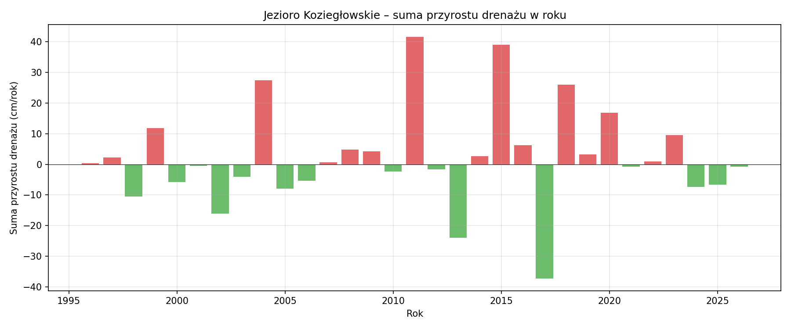
Suma przyrostu drenażu wg roku
Tabela: suma przyrostu dla każdego roku (cm/rok), bez wierszy miesięcznych.
| Rok | Suma przyrostu (cm/rok) |
|---|---|
| 1996 | +3.9 |
| 1997 | +2.2 |
| 1998 | -10.5 |
| 1999 | +11.8 |
| 2000 | -5.8 |
| 2001 | -0.5 |
| 2002 | -16.1 |
| 2003 | -4.1 |
| 2004 | +27.4 |
| 2005 | -8.0 |
| 2006 | -5.4 |
| 2007 | +0.6 |
| 2008 | +4.8 |
| 2009 | +4.3 |
| 2010 | -2.3 |
| 2011 | +41.7 |
| 2012 | -1.6 |
| 2013 | -24.0 |
| 2014 | +2.7 |
| 2015 | +39.0 |
| 2016 | +6.2 |
| 2017 | -37.3 |
| 2018 | +26.0 |
| 2019 | +3.2 |
| 2020 | +16.9 |
| 2021 | -0.7 |
| 2022 | +0.9 |
| 2023 | +9.6 |
| 2024 | -7.4 |
| 2025 | -6.6 |
| 2026 | -0.8 |
Zanik drenażu — Jezioro Koziegłowskie
- Rozbieżność = wysokość rzeczywista − wysokość w scenariuszu modelowym. Ujemna = jezioro poniżej scenariusza.
- Przy zaniku dodatkowego drenażu szacuje się lata do zamknięcia luki (szacunek teoretyczny).
- Projekcja: wznios wód gruntowych (cm/rok), start odbudowy od 2/2026, maks. do 2070.
Wyniki
- Średnia rozbieżność (ostatnie 12 miesięcy): 75.0 cm
- Trend rozbieżności: 2.98 cm/rok
- Szacunek odbudowy (scenariusz A): —
- Szacunek odbudowy (scenariusz B): —
Wykres projekcji odbudowy
Na wykresie: historia poziomu rzeczywistego oraz scenariusze modelowe (drenażowy i naturalny); projekcja odbudowy do zrównania z modelem drenażowym i z modelem naturalnym (porównanie obu wariantów).

Raport: Jezioro Kownackie
Raport ewaluacji na następne 12 miesięcy dla Jezioro Kownackie.
Poziom wody: rzeczywisty pomiar i model
Niebieska: poziom z data/kownackie/data.csv. Pomarańczowa przerywana: model po zmianie reżimu (trening do daty optymalnej po drenażu). Zielona kropkowana: model naturalny (trening do końca roku przed pojawieniem się drenażu).
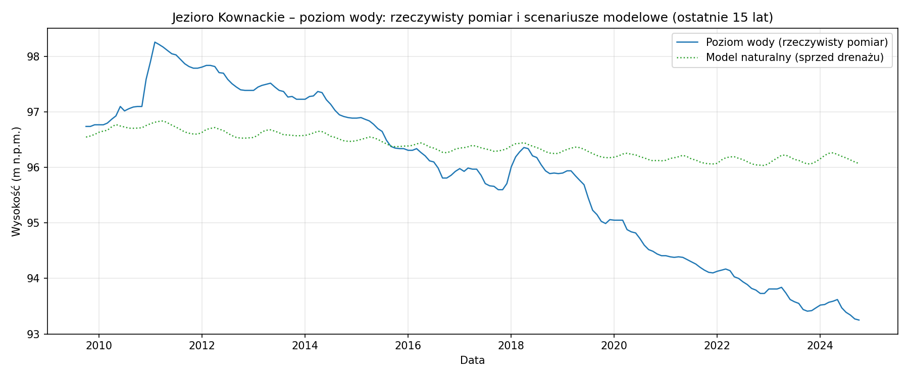
Prognoza 12 mies.
Dla każdego wariantu (temperatura: zimny/normalny/ciepły × opad: suchy/normalny/wilgotny) opad i temperatura z percentyli historycznych w data/kownackie/data.csv. Symulacja: 12 miesięcy do końca stycznia 2027 (stan na koniec stycznia 2026 to pomiar rzeczywisty). Wykresy i tabele: oba modele (drenażowy i naturalny – sprzed drenażu) na wspólnych wykresach i w jednej tabeli na wariant.
Szansa realizacji (na podstawie zgodności z ostatnimi 12 miesiącami pomiarowymi – średni opad i temperatura):
| Wariant | Szansa (%) | Poziom koniec – drenaż (m) | Poziom koniec – natural (m) |
|---|---|---|---|
| zimny, suchy | 11.3 | 92.942 | 93.149 |
| zimny, normalny | 14.2 | 93.019 | 93.249 |
| zimny, wilgotny | 7.1 | 93.235 | 93.34 |
| normalny, suchy | 11.7 | 92.784 | 93.075 |
| normalny, normalny | 15.2 | 92.902 | 93.196 |
| normalny, wilgotny | 7.2 | 93.046 | 93.271 |
| ciepły, suchy | 11.5 | 92.71 | 93.047 |
| ciepły, normalny | 14.5 | 92.824 | 93.172 |
| ciepły, wilgotny | 7.2 | 92.966 | 93.236 |
Najbardziej prawdopodobny poziom na koniec stycznia 2027 (średnia ważona zmian miesięcznych według szans realizacji wszystkich wariantów). W stosunku do stanu na koniec stycznia 2026 (93.2357 m n.p.m.): - Model drenażowy: 92.915 m n.p.m. – ubędzie 0.321 m (-32.1 cm) - Model naturalny (sprzed drenażu): 93.182 m n.p.m. – ubędzie 0.054 m (-5.4 cm)
najbardziej prawdopodobny
| Data | Opad (mm) | Temp. (°C) | Zmiana drenaż (cm) | Poziom drenaż (m) | Zmiana natural (cm) | Poziom natural (m) |
|---|---|---|---|---|---|---|
| 2026-02 | 34.0 | 1.2 | +0.5 cm | 93.241 | +3.1 cm | 93.266 |
| 2026-03 | 33.4 | 4.2 | +0.6 cm | 93.246 | +3.4 cm | 93.301 |
| 2026-04 | 25.1 | 9.3 | -1.1 cm | 93.235 | +2.6 cm | 93.327 |
| 2026-05 | 46.0 | 13.9 | -3.2 cm | 93.203 | +2.4 cm | 93.351 |
| 2026-06 | 50.1 | 17.7 | -3.9 cm | 93.164 | -2.2 cm | 93.329 |
| 2026-07 | 69.9 | 19.7 | -4.6 cm | 93.118 | -3.8 cm | 93.291 |
| 2026-08 | 53.6 | 19.2 | -5.6 cm | 93.062 | -4.3 cm | 93.248 |
| 2026-09 | 40.3 | 14.8 | -5.3 cm | 93.009 | -5.6 cm | 93.192 |
| 2026-10 | 31.5 | 9.8 | -4.7 cm | 92.962 | -4.7 cm | 93.145 |
| 2026-11 | 34.6 | 4.7 | -3.7 cm | 92.925 | -1.5 cm | 93.13 |
| 2026-12 | 34.9 | 1.4 | -1.6 cm | 92.909 | +0.9 cm | 93.139 |
| 2027-01 | 38.4 | 0.0 | +0.6 cm | 92.915 | +4.3 cm | 93.182 |
- Średnia ważona wszystkich wariantów (bez własnej szansy realizacji).
- Średnia temperatura roczna (prognoza): 9.7 °C
- Suma opadu (prognoza): 491.7 mm
- Różnica poziomu wody (drenaż) (koniec − start): -0.321 m (-32.1 cm)
- Poziom na koniec stycznia 2027 (drenaż): 92.915 m n.p.m.
- Różnica poziomu wody (natural) (koniec − start): -0.054 m (-5.4 cm)
- Poziom na koniec stycznia 2027 (natural): 93.182 m n.p.m.
zimny, suchy
| Data | Opad (mm) | Temp. (°C) | Zmiana drenaż (cm) | Poziom drenaż (m) | Zmiana natural (cm) | Poziom natural (m) |
|---|---|---|---|---|---|---|
| 2026-02 | 25.8 | -1.0 | +1.2 cm | 93.248 | +3.0 cm | 93.266 |
| 2026-03 | 22.8 | 3.0 | +0.3 cm | 93.251 | +3.4 cm | 93.3 |
| 2026-04 | 15.0 | 8.4 | -1.8 cm | 93.233 | +2.5 cm | 93.326 |
| 2026-05 | 34.0 | 12.8 | -3.4 cm | 93.199 | +1.9 cm | 93.345 |
| 2026-06 | 33.6 | 16.5 | -3.9 cm | 93.16 | +0.0 cm | 93.345 |
| 2026-07 | 53.9 | 18.8 | -4.0 cm | 93.121 | -5.3 cm | 93.292 |
| 2026-08 | 35.5 | 18.3 | -4.3 cm | 93.077 | -5.5 cm | 93.238 |
| 2026-09 | 22.7 | 13.7 | -4.8 cm | 93.029 | -7.1 cm | 93.166 |
| 2026-10 | 17.6 | 8.3 | -4.9 cm | 92.98 | -5.4 cm | 93.112 |
| 2026-11 | 21.8 | 3.6 | -3.4 cm | 92.946 | -1.8 cm | 93.094 |
| 2026-12 | 25.6 | -0.2 | -0.9 cm | 92.937 | +0.6 cm | 93.1 |
| 2027-01 | 28.6 | -1.9 | +0.5 cm | 92.942 | +4.9 cm | 93.149 |
- Szansa realizacji: 11.3 %
- Średnia temperatura roczna (prognoza): 8.4 °C
- Suma opadu (prognoza): 336.9 mm
- Różnica poziomu wody (drenaż) (koniec − start): -0.294 m (-29.4 cm)
- Poziom na koniec stycznia 2027 (drenaż): 92.942 m n.p.m.
- Różnica poziomu wody (natural) (koniec − start): -0.087 m (-8.7 cm)
- Poziom na koniec stycznia 2027 (natural): 93.149 m n.p.m.
zimny, normalny
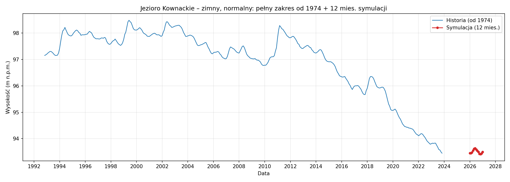
| Data | Opad (mm) | Temp. (°C) | Zmiana drenaż (cm) | Poziom drenaż (m) | Zmiana natural (cm) | Poziom natural (m) |
|---|---|---|---|---|---|---|
| 2026-02 | 34.4 | -1.0 | +1.2 cm | 93.248 | +2.9 cm | 93.265 |
| 2026-03 | 33.9 | 3.0 | +0.9 cm | 93.257 | +3.4 cm | 93.299 |
| 2026-04 | 27.7 | 8.4 | -0.6 cm | 93.251 | +2.9 cm | 93.328 |
| 2026-05 | 46.4 | 12.8 | -1.5 cm | 93.236 | +2.3 cm | 93.351 |
| 2026-06 | 53.1 | 16.5 | -3.3 cm | 93.203 | +0.5 cm | 93.355 |
| 2026-07 | 66.7 | 18.8 | -4.0 cm | 93.162 | -2.3 cm | 93.332 |
| 2026-08 | 56.2 | 18.3 | -4.6 cm | 93.117 | -4.2 cm | 93.29 |
| 2026-09 | 43.3 | 13.7 | -5.1 cm | 93.066 | -6.2 cm | 93.228 |
| 2026-10 | 33.9 | 8.3 | -3.7 cm | 93.029 | -3.7 cm | 93.191 |
| 2026-11 | 38.8 | 3.6 | -2.5 cm | 93.004 | -1.5 cm | 93.176 |
| 2026-12 | 36.7 | -0.2 | -0.2 cm | 93.002 | +1.4 cm | 93.19 |
| 2027-01 | 39.8 | -1.9 | +1.7 cm | 93.019 | +5.9 cm | 93.249 |
- Szansa realizacji: 14.2 %
- Średnia temperatura roczna (prognoza): 8.4 °C
- Suma opadu (prognoza): 510.9 mm
- Różnica poziomu wody (drenaż) (koniec − start): -0.217 m (-21.7 cm)
- Poziom na koniec stycznia 2027 (drenaż): 93.019 m n.p.m.
- Różnica poziomu wody (natural) (koniec − start): +0.013 m (+1.3 cm)
- Poziom na koniec stycznia 2027 (natural): 93.249 m n.p.m.
zimny, wilgotny
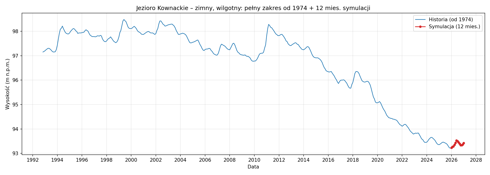
| Data | Opad (mm) | Temp. (°C) | Zmiana drenaż (cm) | Poziom drenaż (m) | Zmiana natural (cm) | Poziom natural (m) |
|---|---|---|---|---|---|---|
| 2026-02 | 46.4 | -1.0 | +1.4 cm | 93.25 | +2.9 cm | 93.265 |
| 2026-03 | 49.5 | 3.0 | +1.9 cm | 93.269 | +3.5 cm | 93.3 |
| 2026-04 | 36.1 | 8.4 | +1.6 cm | 93.286 | +3.1 cm | 93.331 |
| 2026-05 | 64.7 | 12.8 | -0.4 cm | 93.282 | +4.2 cm | 93.374 |
| 2026-06 | 70.6 | 16.5 | -3.3 cm | 93.249 | +2.9 cm | 93.402 |
| 2026-07 | 102.3 | 18.8 | -3.8 cm | 93.211 | +0.3 cm | 93.405 |
| 2026-08 | 77.4 | 18.3 | -3.9 cm | 93.172 | -4.2 cm | 93.363 |
| 2026-09 | 62.5 | 13.7 | -4.0 cm | 93.131 | -4.9 cm | 93.315 |
| 2026-10 | 49.0 | 8.3 | -2.7 cm | 93.104 | -3.5 cm | 93.279 |
| 2026-11 | 46.6 | 3.6 | +3.9 cm | 93.143 | -0.5 cm | 93.274 |
| 2026-12 | 46.4 | -0.2 | +3.8 cm | 93.181 | +1.3 cm | 93.286 |
| 2027-01 | 51.6 | -1.9 | +5.4 cm | 93.235 | +5.3 cm | 93.34 |
- Szansa realizacji: 7.1 %
- Średnia temperatura roczna (prognoza): 8.4 °C
- Suma opadu (prognoza): 703.1 mm
- Różnica poziomu wody (drenaż) (koniec − start): -0.001 m (-0.1 cm)
- Poziom na koniec stycznia 2027 (drenaż): 93.235 m n.p.m.
- Różnica poziomu wody (natural) (koniec − start): +0.104 m (+10.4 cm)
- Poziom na koniec stycznia 2027 (natural): 93.34 m n.p.m.
normalny, suchy
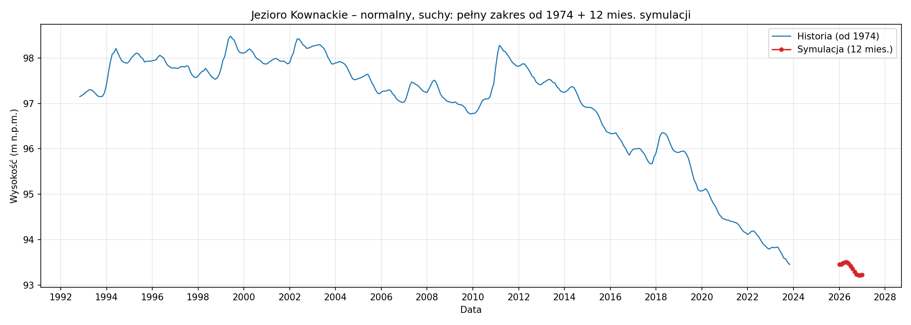
| Data | Opad (mm) | Temp. (°C) | Zmiana drenaż (cm) | Poziom drenaż (m) | Zmiana natural (cm) | Poziom natural (m) |
|---|---|---|---|---|---|---|
| 2026-02 | 25.8 | 0.8 | -0.1 cm | 93.234 | +2.9 cm | 93.265 |
| 2026-03 | 22.8 | 4.3 | -0.0 cm | 93.234 | +4.0 cm | 93.305 |
| 2026-04 | 15.0 | 9.1 | -3.0 cm | 93.204 | +2.4 cm | 93.329 |
| 2026-05 | 34.0 | 13.7 | -4.9 cm | 93.154 | +1.6 cm | 93.345 |
| 2026-06 | 33.6 | 17.8 | -4.9 cm | 93.106 | -3.8 cm | 93.306 |
| 2026-07 | 53.9 | 19.8 | -5.2 cm | 93.054 | -5.9 cm | 93.248 |
| 2026-08 | 35.5 | 19.3 | -6.8 cm | 92.986 | -4.7 cm | 93.201 |
| 2026-09 | 22.7 | 14.7 | -5.0 cm | 92.937 | -6.6 cm | 93.135 |
| 2026-10 | 17.6 | 9.8 | -5.1 cm | 92.885 | -6.1 cm | 93.074 |
| 2026-11 | 21.8 | 4.8 | -6.0 cm | 92.825 | -2.5 cm | 93.05 |
| 2026-12 | 25.6 | 1.8 | -3.6 cm | 92.789 | +0.1 cm | 93.05 |
| 2027-01 | 28.6 | 0.1 | -0.4 cm | 92.784 | +2.5 cm | 93.075 |
- Szansa realizacji: 11.7 %
- Średnia temperatura roczna (prognoza): 9.7 °C
- Suma opadu (prognoza): 336.9 mm
- Różnica poziomu wody (drenaż) (koniec − start): -0.452 m (-45.2 cm)
- Poziom na koniec stycznia 2027 (drenaż): 92.784 m n.p.m.
- Różnica poziomu wody (natural) (koniec − start): -0.161 m (-16.1 cm)
- Poziom na koniec stycznia 2027 (natural): 93.075 m n.p.m.
normalny, normalny
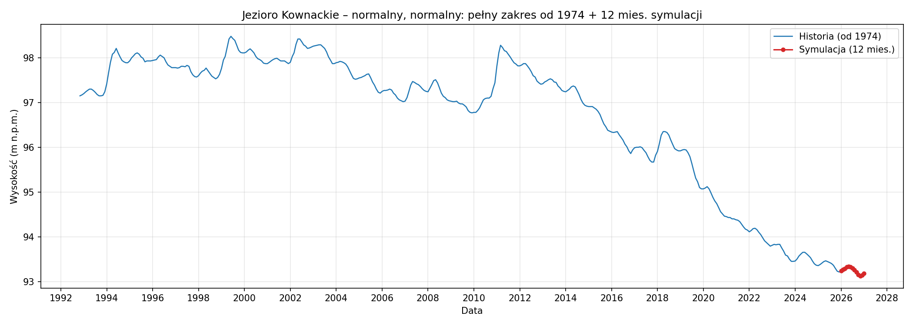
| Data | Opad (mm) | Temp. (°C) | Zmiana drenaż (cm) | Poziom drenaż (m) | Zmiana natural (cm) | Poziom natural (m) |
|---|---|---|---|---|---|---|
| 2026-02 | 34.4 | 0.8 | +0.0 cm | 93.236 | +2.8 cm | 93.264 |
| 2026-03 | 33.9 | 4.3 | +0.6 cm | 93.242 | +4.0 cm | 93.304 |
| 2026-04 | 27.7 | 9.1 | -1.5 cm | 93.227 | +2.7 cm | 93.331 |
| 2026-05 | 46.4 | 13.7 | -2.6 cm | 93.201 | +1.9 cm | 93.351 |
| 2026-06 | 53.1 | 17.8 | -3.6 cm | 93.165 | -3.1 cm | 93.319 |
| 2026-07 | 66.7 | 19.8 | -4.2 cm | 93.123 | -4.1 cm | 93.278 |
| 2026-08 | 56.2 | 19.3 | -5.8 cm | 93.065 | -3.7 cm | 93.241 |
| 2026-09 | 43.3 | 14.7 | -5.1 cm | 93.014 | -5.3 cm | 93.189 |
| 2026-10 | 33.9 | 9.8 | -4.8 cm | 92.967 | -4.3 cm | 93.146 |
| 2026-11 | 38.8 | 4.8 | -4.4 cm | 92.923 | -1.5 cm | 93.131 |
| 2026-12 | 36.7 | 1.8 | -2.7 cm | 92.896 | +1.4 cm | 93.145 |
| 2027-01 | 39.8 | 0.1 | +0.6 cm | 92.902 | +5.1 cm | 93.196 |
- Szansa realizacji: 15.2 %
- Średnia temperatura roczna (prognoza): 9.7 °C
- Suma opadu (prognoza): 510.9 mm
- Różnica poziomu wody (drenaż) (koniec − start): -0.334 m (-33.4 cm)
- Poziom na koniec stycznia 2027 (drenaż): 92.902 m n.p.m.
- Różnica poziomu wody (natural) (koniec − start): -0.040 m (-4.0 cm)
- Poziom na koniec stycznia 2027 (natural): 93.196 m n.p.m.
normalny, wilgotny
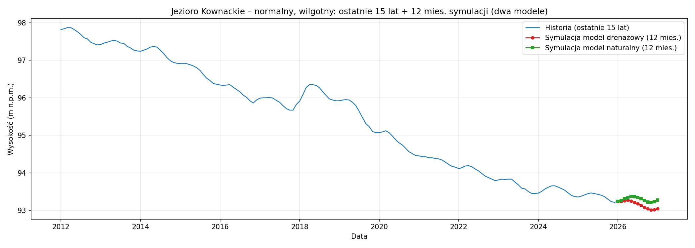
| Data | Opad (mm) | Temp. (°C) | Zmiana drenaż (cm) | Poziom drenaż (m) | Zmiana natural (cm) | Poziom natural (m) |
|---|---|---|---|---|---|---|
| 2026-02 | 46.4 | 0.8 | +0.2 cm | 93.238 | +2.8 cm | 93.264 |
| 2026-03 | 49.5 | 4.3 | +1.6 cm | 93.254 | +4.2 cm | 93.305 |
| 2026-04 | 36.1 | 9.1 | +1.5 cm | 93.269 | +3.0 cm | 93.335 |
| 2026-05 | 64.7 | 13.7 | -2.0 cm | 93.249 | +3.7 cm | 93.372 |
| 2026-06 | 70.6 | 17.8 | -3.5 cm | 93.214 | -1.5 cm | 93.357 |
| 2026-07 | 102.3 | 19.8 | -4.0 cm | 93.174 | -1.3 cm | 93.344 |
| 2026-08 | 77.4 | 19.3 | -4.7 cm | 93.128 | -3.6 cm | 93.308 |
| 2026-09 | 62.5 | 14.7 | -4.5 cm | 93.082 | -4.4 cm | 93.264 |
| 2026-10 | 49.0 | 9.8 | -4.3 cm | 93.039 | -4.3 cm | 93.221 |
| 2026-11 | 46.6 | 4.8 | -3.1 cm | 93.008 | -0.7 cm | 93.214 |
| 2026-12 | 46.4 | 1.8 | +0.5 cm | 93.013 | +1.2 cm | 93.226 |
| 2027-01 | 51.6 | 0.1 | +3.3 cm | 93.046 | +4.5 cm | 93.271 |
- Szansa realizacji: 7.2 %
- Średnia temperatura roczna (prognoza): 9.7 °C
- Suma opadu (prognoza): 703.1 mm
- Różnica poziomu wody (drenaż) (koniec − start): -0.190 m (-19.0 cm)
- Poziom na koniec stycznia 2027 (drenaż): 93.046 m n.p.m.
- Różnica poziomu wody (natural) (koniec − start): +0.035 m (+3.5 cm)
- Poziom na koniec stycznia 2027 (natural): 93.271 m n.p.m.
ciepły, suchy
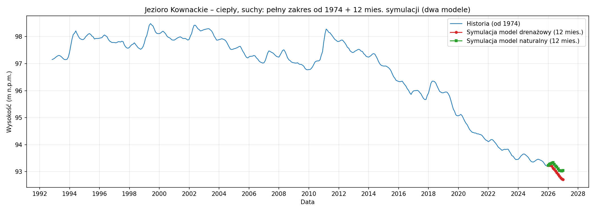
| Data | Opad (mm) | Temp. (°C) | Zmiana drenaż (cm) | Poziom drenaż (m) | Zmiana natural (cm) | Poziom natural (m) |
|---|---|---|---|---|---|---|
| 2026-02 | 25.8 | 3.8 | +0.0 cm | 93.236 | +3.5 cm | 93.27 |
| 2026-03 | 22.8 | 5.4 | -0.7 cm | 93.229 | +2.7 cm | 93.297 |
| 2026-04 | 15.0 | 10.4 | -3.0 cm | 93.199 | +2.1 cm | 93.318 |
| 2026-05 | 34.0 | 15.1 | -6.6 cm | 93.133 | +1.8 cm | 93.336 |
| 2026-06 | 33.6 | 18.9 | -5.0 cm | 93.082 | -5.7 cm | 93.28 |
| 2026-07 | 53.9 | 20.4 | -5.6 cm | 93.026 | -6.3 cm | 93.217 |
| 2026-08 | 35.5 | 20.0 | -6.8 cm | 92.958 | -4.7 cm | 93.17 |
| 2026-09 | 22.7 | 16.0 | -6.2 cm | 92.896 | -5.9 cm | 93.111 |
| 2026-10 | 17.6 | 11.2 | -5.9 cm | 92.837 | -6.1 cm | 93.05 |
| 2026-11 | 21.8 | 5.7 | -6.4 cm | 92.773 | -2.0 cm | 93.03 |
| 2026-12 | 25.6 | 2.6 | -3.7 cm | 92.736 | -0.2 cm | 93.027 |
| 2027-01 | 28.6 | 1.9 | -2.6 cm | 92.71 | +2.0 cm | 93.047 |
- Szansa realizacji: 11.5 %
- Średnia temperatura roczna (prognoza): 10.9 °C
- Suma opadu (prognoza): 336.9 mm
- Różnica poziomu wody (drenaż) (koniec − start): -0.526 m (-52.6 cm)
- Poziom na koniec stycznia 2027 (drenaż): 92.71 m n.p.m.
- Różnica poziomu wody (natural) (koniec − start): -0.189 m (-18.9 cm)
- Poziom na koniec stycznia 2027 (natural): 93.047 m n.p.m.
ciepły, normalny
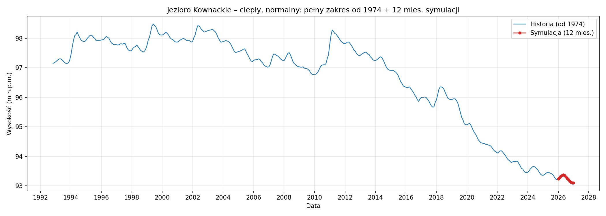
| Data | Opad (mm) | Temp. (°C) | Zmiana drenaż (cm) | Poziom drenaż (m) | Zmiana natural (cm) | Poziom natural (m) |
|---|---|---|---|---|---|---|
| 2026-02 | 34.4 | 3.8 | +0.2 cm | 93.238 | +3.3 cm | 93.269 |
| 2026-03 | 33.9 | 5.4 | +0.3 cm | 93.241 | +2.8 cm | 93.297 |
| 2026-04 | 27.7 | 10.4 | -1.5 cm | 93.226 | +2.4 cm | 93.321 |
| 2026-05 | 46.4 | 15.1 | -3.6 cm | 93.19 | +2.2 cm | 93.343 |
| 2026-06 | 53.1 | 18.9 | -3.8 cm | 93.152 | -4.2 cm | 93.301 |
| 2026-07 | 66.7 | 20.4 | -5.1 cm | 93.101 | -4.5 cm | 93.256 |
| 2026-08 | 56.2 | 20.0 | -6.9 cm | 93.032 | -3.6 cm | 93.22 |
| 2026-09 | 43.3 | 16.0 | -6.7 cm | 92.966 | -4.9 cm | 93.171 |
| 2026-10 | 33.9 | 11.2 | -5.2 cm | 92.914 | -4.3 cm | 93.128 |
| 2026-11 | 38.8 | 5.7 | -4.6 cm | 92.868 | -1.5 cm | 93.114 |
| 2026-12 | 36.7 | 2.6 | -3.0 cm | 92.838 | +1.3 cm | 93.127 |
| 2027-01 | 39.8 | 1.9 | -1.4 cm | 92.824 | +4.5 cm | 93.172 |
- Szansa realizacji: 14.5 %
- Średnia temperatura roczna (prognoza): 10.9 °C
- Suma opadu (prognoza): 510.9 mm
- Różnica poziomu wody (drenaż) (koniec − start): -0.412 m (-41.2 cm)
- Poziom na koniec stycznia 2027 (drenaż): 92.824 m n.p.m.
- Różnica poziomu wody (natural) (koniec − start): -0.064 m (-6.4 cm)
- Poziom na koniec stycznia 2027 (natural): 93.172 m n.p.m.
ciepły, wilgotny
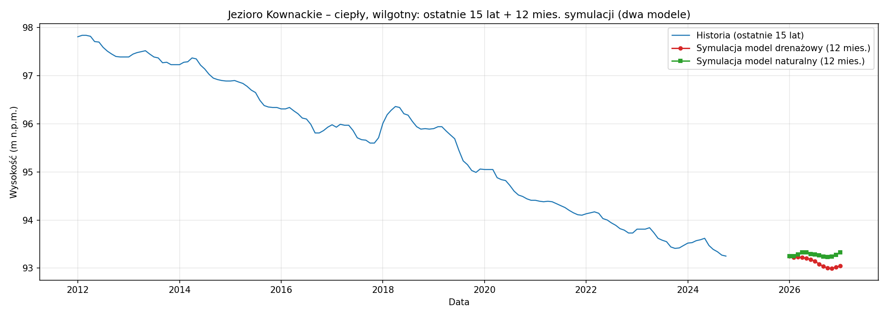
| Data | Opad (mm) | Temp. (°C) | Zmiana drenaż (cm) | Poziom drenaż (m) | Zmiana natural (cm) | Poziom natural (m) |
|---|---|---|---|---|---|---|
| 2026-02 | 46.4 | 3.8 | +0.4 cm | 93.24 | +3.3 cm | 93.269 |
| 2026-03 | 49.5 | 5.4 | +1.5 cm | 93.255 | +2.9 cm | 93.298 |
| 2026-04 | 36.1 | 10.4 | +1.5 cm | 93.27 | +2.8 cm | 93.326 |
| 2026-05 | 64.7 | 15.1 | -3.0 cm | 93.24 | +3.9 cm | 93.365 |
| 2026-06 | 70.6 | 18.9 | -3.9 cm | 93.201 | -2.5 cm | 93.34 |
| 2026-07 | 102.3 | 20.4 | -4.8 cm | 93.153 | -1.6 cm | 93.324 |
| 2026-08 | 77.4 | 20.0 | -5.8 cm | 93.095 | -5.1 cm | 93.274 |
| 2026-09 | 62.5 | 16.0 | -5.7 cm | 93.038 | -3.8 cm | 93.235 |
| 2026-10 | 49.0 | 11.2 | -4.8 cm | 92.99 | -4.3 cm | 93.192 |
| 2026-11 | 46.6 | 5.7 | -3.6 cm | 92.954 | -0.7 cm | 93.184 |
| 2026-12 | 46.4 | 2.6 | -0.7 cm | 92.947 | +1.1 cm | 93.196 |
| 2027-01 | 51.6 | 1.9 | +1.9 cm | 92.966 | +4.0 cm | 93.236 |
- Szansa realizacji: 7.2 %
- Średnia temperatura roczna (prognoza): 10.9 °C
- Suma opadu (prognoza): 703.1 mm
- Różnica poziomu wody (drenaż) (koniec − start): -0.270 m (-27.0 cm)
- Poziom na koniec stycznia 2027 (drenaż): 92.966 m n.p.m.
- Różnica poziomu wody (natural) (koniec − start): +0.000 m (+0.0 cm)
- Poziom na koniec stycznia 2027 (natural): 93.236 m n.p.m.
Wygenerowano: 2026-02-15 15:44
Szanse na odbudowę – Jezioro Kownackie
Opisowa ocena szans na odbudowę poziomu wody w perspektywie kolejnych 12 miesięcy, na podstawie prognozy z symulacji wariantów pogodowych (opad i temperatura z percentyli historycznych) oraz szacowanych szans realizacji każdego wariantu (zgodność z ostatnimi 12 miesiącami pomiarowymi).
Stan odniesienia: koniec stycznia 2026 – poziom 93.236 m n.p.m.
Porównanie prognoz (najbardziej prawdopodobny scenariusz, średnia ważona):
| Model | Poziom koniec (m n.p.m.) | Zmiana (cm) |
|---|---|---|
| Drenażowy (po zmianie reżimu) | 92.915 | -32.1 |
| Naturalny (sprzed drenażu) | 93.182 | -5.4 |
Prognoza na koniec stycznia 2027 (model drenażowy): poziom 92.915 m n.p.m., czyli spadek o 32.1 cm w stosunku do stanu odniesienia.
W zależności od warunków pogodowych w nadchodzącym roku prognozowana zmiana poziomu w 12 miesięcy (model drenażowy) mieści się w zakresie od -52.6 cm do -0.1 cm. Najwyższą szansę realizacji (15.2%) ma jeden z wariantów pogodowych; szczegóły wszystkich wariantów i szans – w raporcie Prognoza 12 mies..
Szanse na odbudowę w perspektywie roku (model drenażowy): prognoza modelu drenażowego wskazuje na spadek poziomu w ciągu roku; szanse na odbudowę w perspektywie roku są niskie – istotna odbudowa wymagałaby zatrzymania drenażu i korzystnych warunków.
Szanse na odbudowę w perspektywie roku (model naturalny): prognoza modelu naturalnego wskazuje na niewielki spadek poziomu w ciągu roku.
Szacunki długoterminowej odbudowy (lata do zamknięcia luki po ewentualnym zaniku drenażu) – patrz Zanik drenażu.
Wygenerowano: 2026-02-15 15:44
Raport podsumowujący: prognoza zmiany poziomu Jezioro Kownackie
1. Cel projektu
Projekt ma na celu: - zbudowanie modelu uczenia maszynowego, który na podstawie opadu i temperatury (oraz sezonowości i historii) prognozuje miesięczną zmianę poziomu Jezioro Kownackie; - ewaluację prognoz względem rzeczywistych pomiarów.
2. Dane
- Źródło: plik
data/kownackie/data.csv. - Zakres: dane miesięczne (pierwszy dzień miesiąca).
- Kolumny: Data, Poziom (m), Zmiana (m), Opad (mm), Temperatura (°C).
- Target: Zmiana – miesięczna zmiana poziomu.
- Wiersze z błędami (#ERROR!) lub brakami są pomijane. Po usunięciu lagów (5 mies.) do analizy wchodzi 394 miesięcy.
3. Model
| Element | Opis |
|---|---|
| Algorytm | Gradient Boosting (regresja), scikit-learn |
| Cechy wejściowe | Miesiąc (sin/cos), Opad, Temperatura, opad i temperatura z opóźnieniem 1–5 mies., 3 opóźnienia zmiany poziomu, 3 opóźnienia poziomu |
| Trening | Podział czasowy: trening do 2023-12, test od 2024 do 2023 |
| Wynik | Prognoza zmiany poziomu na dany miesiąc (cm) |
Model nie używa bieżącego poziomu – tylko opad, temperatura, sezon i historia.
4. Wyniki ewaluacji
- MAE (średni błąd bezwzględny): nan cm
- RMSE: nan cm
- Liczba miesięcy: 394
4.1. Wysokość wody: rzeczywista vs scenariusz modelowy
Scenariusz modelowy: start od poziomu na początek pierwszego miesiąca; w każdym miesiącu dodawana jest prognozowana zmiana (kumulatywnie).

4.2. Rozbieżność w czasie
Rozbieżność = wysokość rzeczywista − wysokość w scenariuszu modelowym. Wartość dodatnia: jezioro wyżej niż przewidywał model; ujemna: niżej.

4.3. Zmiana poziomu: faktyczna vs prognoza
Punkty przy linii y = x oznaczają dobrą zgodność miesięcznych zmian.

4.4. Błąd miesięczny
Błąd = zmiana faktyczna − zmiana prognozowana w każdym miesiącu.

5. Podsumowanie
- Model prognozuje miesięczną zmianę poziomu Jezioro Kownackie z MAE ~nan cm.
- Scenariusz kumulatywny (wysokość z prognozowanej zmiany) jest porównywany z rzeczywistą wysokością; rozbieżność i błąd miesięczny opisują jakość prognoz.
Szczegóły techniczne: model.md, podsumowanie_ewaluacji.md.
Wygenerowano: 2026-02-15 15:38
Podsumowanie ewaluacji prognozy zmiany poziomu Jezioro Kownackie
Dla każdego miesiąca model otrzymuje opad i temperaturę (oraz cechy opóźnione z historii), wylicza prognozowaną zmianę poziomu Jezioro Kownackie i jest ona porównana z faktyczną zmianą.
Metryki
- MAE (średni błąd bezwzględny): nan cm
- RMSE (pierwiastek błędu średniokwadratowego): nan cm
- Liczba miesięcy (zbior testowy): 0
- Liczba miesięcy (tabela / wykres): 394
Porównanie miesięczne
| Data | Opad (mm) | Temperatura (°C) | Zmiana faktyczna (cm) | Zmiana prognoza (cm) | Błąd (cm) | Wysokość rzeczywista (m) | Wysokość scenariusz modelowy (m) | Rozbieżność (cm) |
|---|---|---|---|---|---|---|---|---|
| 1993-04 | 12.7 | 9.2 | +3.0 | +0.5 | +2.5 | 97.33 | 97.305 | +2.5 |
| 1993-05 | 25.7 | 16.4 | +0.0 | -5.4 | +5.4 | 97.3 | 97.251 | +4.9 |
| 1993-06 | 53.1 | 15.6 | -3.0 | -4.4 | +1.4 | 97.24 | 97.207 | +3.3 |
| 1993-07 | 102.3 | 16.3 | -4.0 | -5.3 | +1.3 | 97.19 | 97.154 | +3.6 |
| 1993-08 | 42.4 | 16.3 | -5.0 | -6.0 | +1.1 | 97.13 | 97.094 | +3.6 |
| 1993-09 | 79.8 | 12.1 | -3.0 | -5.6 | +2.6 | 97.12 | 97.037 | +8.3 |
| 1993-10 | 16.7 | 8.0 | +0.0 | -5.9 | +5.9 | 97.15 | 96.979 | +17.1 |
| 1993-11 | 40.7 | -0.7 | +1.0 | +0.1 | +0.9 | 97.17 | 96.98 | +19.0 |
| 1993-12 | 91.0 | 2.2 | +8.0 | +2.1 | +5.9 | 97.32 | 97.001 | +31.9 |
| 1994-01 | 39.5 | 2.4 | +18.0 | +6.8 | +11.2 | 97.6 | 97.069 | +53.1 |
| 1994-02 | 25.8 | -2.2 | +26.0 | +13.0 | +13.0 | 97.94 | 97.199 | +74.1 |
| 1994-03 | 58.7 | 4.4 | +22.0 | +9.2 | +12.8 | 98.12 | 97.291 | +82.9 |
| 1994-04 | 35.0 | 9.0 | +18.0 | +8.1 | +9.9 | 98.26 | 97.371 | +88.9 |
| 1994-05 | 64.7 | 12.6 | +4.0 | +5.1 | -1.1 | 98.16 | 97.423 | +73.7 |
| 1994-06 | 31.8 | 15.8 | +9.0 | -2.9 | +11.9 | 98.3 | 97.394 | +90.6 |
| 1994-07 | 50.4 | 22.1 | -10.0 | +2.4 | -12.3 | 98.01 | 97.417 | +59.3 |
| 1994-08 | 40.4 | 18.8 | -9.0 | -4.8 | -4.2 | 97.93 | 97.369 | +56.1 |
| 1994-09 | 91.8 | 14.3 | -8.0 | -7.0 | -1.1 | 97.86 | 97.3 | +56.0 |
| 1994-10 | 15.2 | 6.6 | -3.0 | -5.6 | +2.6 | 97.88 | 97.244 | +63.6 |
| 1994-11 | 23.4 | 4.3 | -2.0 | -0.7 | -1.3 | 97.87 | 97.236 | +63.4 |
| 1994-12 | 43.4 | 1.8 | +0.0 | -1.9 | +1.9 | 97.89 | 97.217 | +67.3 |
| 1995-01 | 31.4 | -0.6 | +4.0 | +1.3 | +2.7 | 97.97 | 97.23 | +74.0 |
| 1995-02 | 36.5 | 3.5 | +7.0 | +3.7 | +3.3 | 98.07 | 97.268 | +80.2 |
| 1995-03 | 39.8 | 2.8 | +4.0 | +6.6 | -2.6 | 98.08 | 97.334 | +74.6 |
| 1995-04 | 24.8 | 8.2 | +5.0 | +3.7 | +1.3 | 98.14 | 97.371 | +76.9 |
| 1995-05 | 34.0 | 12.8 | +2.0 | +6.2 | -4.2 | 98.13 | 97.434 | +69.6 |
| 1995-06 | 70.3 | 16.3 | -3.0 | -3.8 | +0.8 | 98.05 | 97.395 | +65.5 |
| 1995-07 | 56.9 | 20.6 | -6.0 | -5.5 | -0.5 | 97.96 | 97.341 | +61.9 |
| 1995-08 | 63.8 | 19.0 | -3.0 | -7.7 | +4.7 | 97.96 | 97.264 | +69.6 |
| 1995-09 | 119.8 | 13.4 | -8.0 | -6.1 | -1.9 | 97.83 | 97.203 | +62.7 |
| 1995-10 | 13.6 | 10.5 | +2.0 | -6.1 | +8.1 | 97.95 | 97.142 | +80.8 |
| 1995-11 | 17.0 | 1.1 | +0.0 | -4.4 | +4.4 | 97.93 | 97.098 | +83.2 |
| 1995-12 | 18.8 | -4.9 | +0.0 | +0.1 | -0.1 | 97.93 | 97.099 | +83.1 |
| 1996-01 | 8.8 | -5.7 | +1.0 | +1.4 | -0.4 | 97.95 | 97.112 | +83.8 |
| 1996-02 | 35.2 | -5.6 | +1.0 | +1.7 | -0.7 | 97.96 | 97.129 | +83.1 |
| 1996-03 | 8.5 | -0.9 | +1.0 | +1.1 | -0.1 | 97.97 | 97.14 | +83.0 |
| 1996-04 | 9.8 | 7.6 | +6.0 | -0.7 | +6.7 | 98.08 | 97.134 | +94.6 |
| 1996-05 | 92.2 | 13.5 | +4.0 | +5.0 | -1.0 | 98.1 | 97.184 | +91.6 |
| 1996-06 | 25.8 | 16.6 | -3.0 | -4.2 | +1.2 | 98.0 | 97.141 | +85.9 |
| 1996-07 | 106.9 | 15.9 | -3.0 | -3.5 | +0.5 | 97.97 | 97.107 | +86.3 |
| 1996-08 | 62.2 | 18.4 | -9.0 | -5.1 | -3.9 | 97.82 | 97.056 | +76.4 |
| 1996-09 | 62.5 | 10.9 | -7.0 | -5.3 | -1.7 | 97.77 | 97.003 | +76.7 |
| 1996-10 | 26.1 | 9.5 | -3.0 | -4.0 | +1.0 | 97.78 | 96.963 | +81.7 |
| 1996-11 | 15.1 | 5.4 | -3.0 | -5.1 | +2.1 | 97.75 | 96.911 | +83.9 |
| 1996-12 | 7.6 | -4.5 | +0.0 | -1.4 | +1.4 | 97.78 | 96.898 | +88.2 |
| 1997-01 | 0.8 | -3.2 | +0.0 | +1.3 | -1.3 | 97.78 | 96.911 | +86.9 |
| 1997-02 | 49.6 | 2.9 | -1.0 | +1.5 | -2.5 | 97.76 | 96.926 | +83.4 |
| 1997-03 | 24.4 | 4.1 | +1.0 | +0.7 | +0.3 | 97.79 | 96.933 | +85.7 |
| 1997-04 | 15.8 | 5.5 | +3.0 | -0.9 | +3.9 | 97.84 | 96.924 | +91.6 |
| 1997-05 | 49.8 | 12.6 | +0.0 | -2.0 | +2.0 | 97.81 | 96.904 | +90.6 |
| 1997-06 | 64.0 | 16.5 | -1.0 | -4.4 | +3.4 | 97.79 | 96.86 | +93.0 |
| 1997-07 | 115.5 | 17.8 | +3.0 | -4.8 | +7.8 | 97.86 | 96.812 | +104.8 |
| 1997-08 | 33.8 | 19.6 | -2.0 | -5.7 | +3.7 | 97.79 | 96.754 | +103.6 |
| 1997-09 | 22.7 | 13.5 | -12.0 | -5.4 | -6.6 | 97.57 | 96.7 | +87.0 |
| 1997-10 | 44.1 | 7.4 | -7.0 | -4.3 | -2.7 | 97.55 | 96.657 | +89.3 |
| 1997-11 | 24.4 | 3.0 | -4.0 | -2.1 | -1.8 | 97.54 | 96.635 | +90.5 |
| 1997-12 | 35.7 | 1.6 | -1.0 | -1.1 | +0.1 | 97.56 | 96.624 | +93.6 |
| 1998-01 | 40.0 | 1.9 | +3.0 | -0.6 | +3.6 | 97.63 | 96.618 | +101.2 |
| 1998-02 | 16.8 | 4.6 | +6.0 | +0.3 | +5.7 | 97.72 | 96.621 | +109.9 |
| 1998-03 | 46.3 | 3.3 | +4.0 | +6.3 | -2.3 | 97.74 | 96.684 | +105.6 |
| 1998-04 | 36.5 | 10.4 | +2.0 | +2.3 | -0.3 | 97.74 | 96.707 | +103.3 |
| 1998-05 | 36.1 | 14.6 | +5.0 | -3.8 | +8.8 | 97.82 | 96.669 | +115.1 |
| 1998-06 | 35.5 | 17.1 | -6.0 | +2.7 | -8.7 | 97.65 | 96.696 | +95.4 |
| 1998-07 | 73.9 | 17.4 | -6.0 | -5.8 | -0.2 | 97.59 | 96.639 | +95.1 |
| 1998-08 | 68.6 | 16.7 | -6.0 | -5.5 | -0.5 | 97.53 | 96.584 | +94.6 |
| 1998-09 | 96.7 | 14.0 | -3.0 | -6.2 | +3.2 | 97.53 | 96.522 | +100.8 |
| 1998-10 | 68.1 | 8.5 | -3.0 | -5.9 | +2.9 | 97.5 | 96.462 | +103.8 |
| 1998-11 | 47.5 | 0.1 | +3.0 | +3.6 | -0.6 | 97.59 | 96.498 | +109.2 |
| 1998-12 | 41.6 | -0.2 | +7.0 | +5.5 | +1.5 | 97.7 | 96.553 | +114.7 |
| 1999-01 | 46.0 | 1.2 | +13.0 | +8.7 | +4.3 | 97.89 | 96.64 | +125.0 |
| 1999-02 | 52.8 | -0.5 | +19.0 | +10.4 | +8.6 | 98.14 | 96.744 | +139.6 |
| 1999-03 | 55.0 | 4.4 | +8.0 | +10.0 | -2.0 | 98.11 | 96.844 | +126.6 |
| 1999-04 | 83.6 | 9.5 | +20.0 | +10.7 | +9.3 | 98.43 | 96.951 | +147.9 |
| 1999-05 | 41.8 | 13.0 | +19.0 | +4.8 | +14.2 | 98.61 | 96.998 | +161.2 |
| 1999-06 | 58.0 | 16.2 | +6.0 | +5.1 | +0.9 | 98.54 | 97.049 | +149.1 |
| 1999-07 | 61.6 | 19.6 | -5.0 | +3.3 | -8.3 | 98.38 | 97.081 | +129.9 |
| 1999-08 | 14.0 | 17.8 | -4.0 | -5.9 | +1.9 | 98.35 | 97.022 | +132.8 |
| 1999-09 | 18.4 | 17.1 | -11.0 | -7.0 | -4.0 | 98.17 | 96.952 | +121.8 |
| 1999-10 | 43.8 | 9.0 | -11.0 | -6.0 | -5.0 | 98.06 | 96.891 | +116.9 |
| 1999-11 | 35.3 | 2.9 | -5.0 | -4.2 | -0.8 | 98.07 | 96.85 | +122.0 |
| 1999-12 | 46.7 | 1.7 | -1.0 | -0.5 | -0.5 | 98.1 | 96.845 | +125.5 |
| 2000-01 | 27.6 | -0.1 | +0.0 | +0.5 | -0.5 | 98.11 | 96.85 | +126.0 |
| 2000-02 | 34.4 | 3.2 | +2.0 | +0.3 | +1.7 | 98.15 | 96.852 | +129.8 |
| 2000-03 | 70.7 | 4.1 | +4.0 | +1.2 | +2.8 | 98.21 | 96.864 | +134.6 |
| 2000-04 | 21.8 | 12.1 | +3.0 | +2.8 | +0.2 | 98.23 | 96.892 | +133.8 |
| 2000-05 | 33.5 | 15.6 | -4.0 | -5.0 | +1.0 | 98.12 | 96.842 | +127.8 |
| 2000-06 | 30.1 | 17.3 | -5.0 | -4.5 | -0.5 | 98.06 | 96.797 | +126.3 |
| 2000-07 | 151.9 | 16.3 | -8.0 | -6.2 | -1.8 | 97.95 | 96.735 | +121.5 |
| 2000-08 | 69.7 | 18.2 | -5.0 | -6.3 | +1.3 | 97.93 | 96.672 | +125.8 |
| 2000-09 | 47.1 | 12.9 | -2.0 | -5.7 | +3.7 | 97.94 | 96.615 | +132.5 |
| 2000-10 | 15.7 | 11.8 | -3.0 | -5.8 | +2.8 | 97.9 | 96.557 | +134.3 |
| 2000-11 | 47.4 | 6.5 | -5.0 | -6.7 | +1.7 | 97.83 | 96.49 | +134.0 |
| 2000-12 | 48.1 | 2.2 | -1.0 | +0.5 | -1.5 | 97.86 | 96.495 | +136.5 |
| 2001-01 | 16.3 | -0.1 | +0.0 | +3.0 | -3.0 | 97.87 | 96.525 | +134.5 |
| 2001-02 | 26.9 | 0.7 | +3.0 | +1.1 | +1.9 | 97.93 | 96.536 | +139.4 |
| 2001-03 | 49.5 | 2.6 | +3.0 | +0.6 | +2.4 | 97.96 | 96.542 | +141.8 |
| 2001-04 | 36.1 | 8.0 | +3.0 | +2.1 | +0.9 | 97.99 | 96.562 | +142.8 |
| 2001-05 | 29.0 | 14.4 | +2.0 | -1.4 | +3.4 | 98.0 | 96.548 | +145.2 |
| 2001-06 | 49.9 | 15.1 | +1.0 | -3.7 | +4.7 | 98.0 | 96.511 | +148.9 |
| 2001-07 | 76.6 | 19.9 | -3.0 | -4.6 | +1.6 | 97.93 | 96.465 | +146.5 |
| 2001-08 | 28.3 | 19.8 | -3.0 | -5.6 | +2.6 | 97.9 | 96.409 | +149.1 |
| 2001-09 | 97.6 | 12.3 | +0.0 | -6.7 | +6.7 | 97.93 | 96.343 | +158.7 |
| 2001-10 | 20.9 | 3.0 | +0.0 | -5.0 | +5.0 | 97.93 | 96.293 | +163.7 |
| 2001-11 | 21.2 | -1.6 | -3.0 | +3.4 | -6.4 | 97.87 | 96.327 | +154.3 |
| 2001-12 | 54.0 | -0.3 | -3.0 | +2.0 | -5.0 | 97.84 | 96.348 | +149.2 |
| 2002-01 | 29.9 | 0.7 | +3.0 | +0.9 | +2.1 | 97.93 | 96.357 | +157.3 |
| 2002-02 | 67.2 | 4.0 | +13.0 | +4.4 | +8.6 | 98.16 | 96.401 | +175.9 |
| 2002-03 | 49.5 | 5.0 | +8.0 | +7.8 | +0.2 | 98.19 | 96.478 | +171.2 |
| 2002-04 | 15.0 | 8.8 | +19.0 | +9.3 | +9.7 | 98.49 | 96.571 | +191.9 |
| 2002-05 | 40.3 | 16.8 | +12.0 | +3.1 | +8.9 | 98.54 | 96.602 | +193.8 |
| 2002-06 | 47.3 | 18.0 | +0.0 | +3.4 | -3.4 | 98.42 | 96.637 | +178.3 |
| 2002-07 | 61.6 | 20.3 | -6.0 | -4.5 | -1.5 | 98.3 | 96.592 | +170.8 |
| 2002-08 | 49.9 | 21.5 | -7.0 | -6.7 | -0.3 | 98.22 | 96.525 | +169.5 |
| 2002-09 | 66.2 | 14.2 | -3.0 | -7.6 | +4.6 | 98.23 | 96.449 | +178.1 |
| 2002-10 | 82.7 | 7.7 | -5.0 | -5.7 | +0.7 | 98.16 | 96.392 | +176.8 |
| 2002-11 | 46.2 | 4.3 | +1.0 | +3.4 | -2.4 | 98.23 | 96.426 | +180.4 |
| 2002-12 | 7.3 | -3.6 | +2.0 | +3.4 | -1.4 | 98.26 | 96.459 | +180.1 |
| 2003-01 | 41.7 | -1.7 | +2.0 | +1.9 | +0.1 | 98.28 | 96.479 | +180.1 |
| 2003-02 | 5.5 | -3.5 | +1.0 | +2.7 | -1.7 | 98.28 | 96.505 | +177.5 |
| 2003-03 | 14.4 | 3.0 | +1.0 | +1.1 | -0.1 | 98.29 | 96.516 | +177.4 |
| 2003-04 | 12.7 | 8.2 | +1.0 | -1.3 | +2.3 | 98.3 | 96.503 | +179.7 |
| 2003-05 | 35.2 | 15.7 | +0.0 | -2.5 | +2.5 | 98.29 | 96.478 | +181.2 |
| 2003-06 | 26.0 | 19.0 | -4.0 | -4.6 | +0.6 | 98.21 | 96.432 | +177.8 |
| 2003-07 | 68.2 | 19.5 | -4.0 | -4.7 | +0.7 | 98.17 | 96.386 | +178.4 |
| 2003-08 | 16.8 | 19.4 | -8.0 | -6.3 | -1.7 | 98.05 | 96.323 | +172.7 |
| 2003-09 | 11.2 | 14.7 | -11.0 | -7.5 | -3.5 | 97.91 | 96.248 | +166.2 |
| 2003-10 | 40.1 | 5.8 | -7.0 | -7.3 | +0.3 | 97.88 | 96.175 | +170.5 |
| 2003-11 | 24.0 | 5.6 | -8.0 | -3.0 | -5.0 | 97.79 | 96.145 | +164.5 |
| 2003-12 | 37.9 | 1.9 | +0.0 | -2.7 | +2.7 | 97.87 | 96.118 | +175.2 |
| 2004-01 | 49.2 | -4.0 | +2.0 | +0.2 | +1.8 | 97.91 | 96.121 | +178.9 |
| 2004-02 | 36.6 | 1.6 | +1.0 | +2.0 | -1.0 | 97.91 | 96.141 | +176.9 |
| 2004-03 | 29.1 | 4.7 | +2.0 | +1.0 | +1.0 | 97.94 | 96.151 | +178.9 |
| 2004-04 | 31.6 | 9.4 | -1.0 | -0.6 | -0.4 | 97.9 | 96.145 | +175.5 |
| 2004-05 | 50.3 | 12.5 | -2.0 | -2.9 | +0.9 | 97.87 | 96.116 | +175.4 |
| 2004-06 | 38.5 | 16.0 | -3.0 | -4.0 | +1.0 | 97.83 | 96.076 | +175.4 |
| 2004-07 | 31.7 | 18.0 | -6.0 | -5.0 | -1.0 | 97.74 | 96.026 | +171.4 |
| 2004-08 | 77.4 | 20.0 | -9.0 | -6.4 | -2.6 | 97.62 | 95.963 | +165.7 |
| 2004-09 | 29.5 | 14.3 | -9.0 | -8.0 | -1.0 | 97.53 | 95.883 | +164.7 |
| 2004-10 | 57.3 | 10.5 | -8.0 | -6.0 | -2.0 | 97.46 | 95.823 | +163.7 |
| 2004-11 | 46.8 | 4.2 | -2.0 | -4.3 | +2.3 | 97.5 | 95.78 | +172.0 |
| 2004-12 | 35.8 | 1.7 | +1.0 | +1.2 | -0.2 | 97.54 | 95.792 | +174.8 |
| 2005-01 | 28.2 | 1.8 | +2.0 | +1.3 | +0.7 | 97.57 | 95.805 | +176.5 |
| 2005-02 | 51.6 | -1.8 | +1.0 | +1.4 | -0.4 | 97.57 | 95.82 | +175.0 |
| 2005-03 | 22.8 | 1.4 | +2.0 | +2.8 | -0.8 | 97.6 | 95.848 | +175.2 |
| 2005-04 | 31.0 | 9.1 | +2.0 | +1.8 | +0.2 | 97.62 | 95.865 | +175.5 |
| 2005-05 | 88.5 | 13.6 | +3.0 | -2.1 | +5.1 | 97.66 | 95.844 | +181.6 |
| 2005-06 | 33.6 | 16.5 | +1.0 | -4.1 | +5.1 | 97.65 | 95.803 | +184.7 |
| 2005-07 | 65.4 | 20.1 | -8.0 | -3.7 | -4.3 | 97.48 | 95.766 | +171.4 |
| 2005-08 | 23.1 | 17.3 | -10.0 | -7.6 | -2.4 | 97.36 | 95.69 | +167.0 |
| 2005-09 | 24.2 | 16.2 | -7.0 | -8.1 | +1.1 | 97.32 | 95.61 | +171.0 |
| 2005-10 | 6.6 | 10.8 | -9.0 | -6.7 | -2.3 | 97.21 | 95.543 | +166.7 |
| 2005-11 | 28.5 | 3.5 | -7.0 | -6.5 | -0.5 | 97.16 | 95.478 | +168.2 |
| 2005-12 | 100.7 | 0.3 | -2.0 | +0.2 | -2.2 | 97.19 | 95.481 | +170.9 |
| 2006-01 | 19.4 | -6.1 | +4.0 | +2.1 | +1.9 | 97.29 | 95.501 | +178.9 |
| 2006-02 | 46.3 | -1.3 | +2.0 | +6.6 | -4.6 | 97.29 | 95.568 | +172.2 |
| 2006-03 | 33.3 | 0.9 | +0.0 | +1.3 | -1.3 | 97.27 | 95.58 | +169.0 |
| 2006-04 | 51.1 | 9.1 | +1.0 | +0.3 | +0.7 | 97.29 | 95.583 | +170.7 |
| 2006-05 | 50.9 | 13.6 | +2.0 | -0.6 | +2.6 | 97.32 | 95.577 | +174.3 |
| 2006-06 | 20.0 | 18.1 | -2.0 | -3.6 | +1.6 | 97.26 | 95.541 | +171.9 |
| 2006-07 | 11.2 | 23.5 | -7.0 | -6.2 | -0.8 | 97.14 | 95.479 | +166.1 |
| 2006-08 | 205.5 | 17.8 | -4.0 | -8.8 | +4.8 | 97.13 | 95.39 | +174.0 |
| 2006-09 | 13.2 | 17.1 | -7.0 | -6.2 | -0.8 | 97.03 | 95.328 | +170.2 |
| 2006-10 | 44.7 | 11.5 | -4.0 | -6.8 | +2.8 | 97.02 | 95.26 | +176.0 |
| 2006-11 | 42.8 | 6.8 | -2.0 | -6.1 | +4.1 | 97.02 | 95.199 | +182.1 |
| 2006-12 | 37.6 | 4.7 | -2.0 | -1.2 | -0.8 | 97.0 | 95.187 | +181.3 |
| 2007-01 | 90.3 | 4.5 | +1.0 | -0.4 | +1.4 | 97.04 | 95.183 | +185.7 |
| 2007-02 | 49.7 | 1.2 | +8.0 | +2.3 | +5.7 | 97.19 | 95.206 | +198.4 |
| 2007-03 | 60.9 | 6.7 | +13.0 | +9.9 | +3.1 | 97.37 | 95.305 | +206.5 |
| 2007-04 | 13.7 | 10.2 | +15.0 | +8.3 | +6.7 | 97.54 | 95.388 | +215.2 |
| 2007-05 | 46.4 | 15.2 | +8.0 | +2.3 | +5.7 | 97.55 | 95.411 | +213.9 |
| 2007-06 | 59.3 | 19.1 | -2.0 | +2.9 | -4.9 | 97.43 | 95.44 | +199.0 |
| 2007-07 | 136.1 | 18.8 | -3.0 | -3.2 | +0.2 | 97.39 | 95.408 | +198.2 |
| 2007-08 | 61.8 | 18.9 | -2.0 | -5.2 | +3.2 | 97.38 | 95.356 | +202.4 |
| 2007-09 | 40.3 | 13.8 | -4.0 | -5.0 | +1.0 | 97.32 | 95.306 | +201.4 |
| 2007-10 | 16.0 | 8.5 | -5.0 | -4.6 | -0.4 | 97.26 | 95.26 | +200.0 |
| 2007-11 | 48.1 | 2.9 | -4.0 | -2.8 | -1.2 | 97.23 | 95.232 | +199.8 |
| 2007-12 | 27.6 | 1.2 | -2.0 | -0.1 | -1.8 | 97.23 | 95.231 | +199.9 |
| 2008-01 | 84.8 | 2.6 | -1.0 | +1.5 | -2.5 | 97.23 | 95.245 | +198.5 |
| 2008-02 | 30.2 | 4.4 | +8.0 | +1.5 | +6.5 | 97.4 | 95.26 | +214.0 |
| 2008-03 | 50.9 | 4.7 | +8.0 | +10.3 | -2.3 | 97.48 | 95.363 | +211.7 |
| 2008-04 | 33.9 | 8.8 | +9.0 | +8.8 | +0.2 | 97.58 | 95.451 | +212.9 |
| 2008-05 | 19.2 | 14.1 | +2.0 | +4.0 | -2.0 | 97.53 | 95.491 | +203.9 |
| 2008-06 | 14.3 | 18.0 | -7.0 | -4.5 | -2.5 | 97.37 | 95.445 | +192.5 |
| 2008-07 | 36.3 | 19.9 | -11.0 | -7.0 | -4.0 | 97.22 | 95.375 | +184.5 |
| 2008-08 | 83.3 | 18.8 | -12.0 | -7.9 | -4.1 | 97.09 | 95.297 | +179.3 |
| 2008-09 | 22.3 | 13.7 | -7.0 | -7.6 | +0.6 | 97.07 | 95.22 | +185.0 |
| 2008-10 | 67.8 | 9.8 | -3.0 | -6.2 | +3.2 | 97.08 | 95.158 | +192.2 |
| 2008-11 | 16.4 | 5.7 | -5.0 | -5.0 | +0.0 | 97.01 | 95.108 | +190.2 |
| 2008-12 | 20.0 | 1.5 | -2.0 | -1.6 | -0.4 | 97.02 | 95.092 | +192.8 |
| 2009-01 | 21.2 | -2.6 | -1.0 | +0.6 | -1.6 | 97.02 | 95.098 | +192.2 |
| 2009-02 | 33.9 | -0.3 | -1.0 | +1.2 | -2.2 | 97.01 | 95.11 | +190.0 |
| 2009-03 | 48.0 | 4.2 | +0.0 | +1.6 | -1.6 | 97.02 | 95.126 | +189.4 |
| 2009-04 | 3.5 | 11.7 | +1.0 | +0.9 | +0.1 | 97.04 | 95.135 | +190.5 |
| 2009-05 | 80.1 | 13.3 | -4.0 | -6.0 | +2.0 | 96.95 | 95.075 | +187.5 |
| 2009-06 | 104.1 | 15.9 | -2.0 | -4.7 | +2.7 | 96.95 | 95.027 | +192.3 |
| 2009-07 | 110.2 | 19.7 | +0.0 | -5.6 | +5.6 | 96.97 | 94.971 | +199.9 |
| 2009-08 | 63.0 | 19.3 | -3.0 | -4.7 | +1.7 | 96.91 | 94.924 | +198.6 |
| 2009-09 | 39.9 | 16.2 | -4.0 | -5.4 | +1.4 | 96.86 | 94.87 | +199.0 |
| 2009-10 | 57.5 | 7.8 | -8.0 | -5.1 | -2.9 | 96.74 | 94.819 | +192.1 |
| 2009-11 | 42.6 | 6.8 | -4.0 | +0.0 | -4.0 | 96.74 | 94.819 | +192.1 |
| 2009-12 | 45.3 | -0.7 | -1.0 | +2.6 | -3.6 | 96.76 | 94.845 | +191.5 |
| 2010-01 | 52.5 | -6.5 | +1.0 | +2.4 | -1.4 | 96.79 | 94.868 | +192.2 |
| 2010-02 | 28.9 | -1.0 | +0.0 | +3.9 | -3.9 | 96.78 | 94.907 | +187.3 |
| 2010-03 | 52.6 | 3.7 | +4.0 | +3.9 | +0.1 | 96.86 | 94.945 | +191.5 |
| 2010-04 | 44.9 | 8.8 | +6.0 | +4.7 | +1.3 | 96.94 | 94.992 | +194.8 |
| 2010-05 | 100.1 | 11.5 | +9.0 | +3.9 | +5.1 | 97.06 | 95.031 | +202.9 |
| 2010-06 | 62.1 | 17.1 | +9.0 | +2.5 | +6.5 | 97.15 | 95.056 | +209.4 |
| 2010-07 | 81.5 | 21.7 | +3.0 | +4.2 | -1.2 | 97.12 | 95.098 | +202.2 |
| 2010-08 | 119.7 | 18.9 | +1.0 | -4.1 | +5.1 | 97.11 | 95.057 | +205.3 |
| 2010-09 | 57.0 | 12.9 | +0.0 | -4.3 | +4.3 | 97.1 | 95.013 | +208.7 |
| 2010-10 | 5.6 | 6.7 | +4.0 | -3.1 | +7.1 | 97.18 | 94.983 | +219.7 |
| 2010-11 | 151.0 | 4.9 | +17.0 | +2.1 | +14.9 | 97.48 | 95.003 | +247.7 |
| 2010-12 | 85.2 | -5.8 | +13.0 | +7.8 | +5.2 | 97.57 | 95.081 | +248.9 |
| 2011-01 | 32.4 | 0.3 | +37.0 | +13.5 | +23.5 | 98.18 | 95.215 | +296.5 |
| 2011-02 | 26.9 | -3.0 | +30.0 | +13.5 | +16.5 | 98.41 | 95.35 | +306.0 |
| 2011-03 | 22.1 | 3.5 | +17.0 | +8.3 | +8.7 | 98.45 | 95.433 | +301.7 |
| 2011-04 | 11.0 | 11.7 | -5.0 | +5.2 | -10.2 | 98.18 | 95.485 | +269.5 |
| 2011-05 | 19.7 | 13.9 | -7.0 | -5.1 | -1.9 | 98.09 | 95.435 | +265.5 |
| 2011-06 | 65.9 | 18.8 | -2.0 | -5.4 | +3.4 | 98.12 | 95.381 | +273.9 |
| 2011-07 | 96.1 | 17.9 | -6.0 | -5.4 | -0.6 | 98.02 | 95.327 | +269.3 |
| 2011-08 | 39.8 | 19.3 | -6.0 | -7.0 | +1.0 | 97.96 | 95.256 | +270.4 |
| 2011-09 | 14.3 | 15.7 | -7.0 | -5.5 | -1.5 | 97.88 | 95.201 | +267.9 |
| 2011-10 | 15.6 | 9.8 | -6.0 | -6.8 | +0.8 | 97.83 | 95.133 | +269.7 |
| 2011-11 | 8.0 | 4.1 | -3.0 | -5.7 | +2.7 | 97.83 | 95.076 | +275.4 |
| 2011-12 | 43.6 | 3.5 | -4.0 | -0.7 | -3.3 | 97.78 | 95.069 | +271.1 |
| 2012-01 | 77.6 | 0.5 | +0.0 | -0.0 | +0.0 | 97.82 | 95.069 | +275.1 |
| 2012-02 | 41.2 | -4.1 | +2.0 | +3.0 | -1.0 | 97.86 | 95.099 | +276.1 |
| 2012-03 | 11.1 | 6.5 | +3.0 | +3.0 | -0.0 | 97.9 | 95.129 | +277.1 |
| 2012-04 | 22.4 | 9.5 | +0.0 | -1.5 | +1.5 | 97.87 | 95.115 | +275.5 |
| 2012-05 | 29.1 | 15.0 | -5.0 | -6.2 | +1.2 | 97.77 | 95.053 | +271.7 |
| 2012-06 | 94.9 | 16.8 | -6.0 | -5.8 | -0.2 | 97.7 | 94.995 | +270.5 |
| 2012-07 | 56.2 | 19.8 | -7.0 | -6.5 | -0.5 | 97.62 | 94.929 | +269.1 |
| 2012-08 | 40.8 | 19.3 | -9.0 | -7.2 | -1.8 | 97.51 | 94.857 | +265.3 |
| 2012-09 | 43.3 | 15.0 | -3.0 | -5.7 | +2.7 | 97.54 | 94.801 | +273.9 |
| 2012-10 | 33.9 | 9.0 | -9.0 | -7.2 | -1.8 | 97.39 | 94.728 | +266.2 |
| 2012-11 | 39.3 | 5.7 | -4.0 | -3.4 | -0.6 | 97.4 | 94.694 | +270.6 |
| 2012-12 | 25.4 | -0.6 | -3.0 | -1.6 | -1.4 | 97.38 | 94.678 | +270.2 |
| 2013-01 | 66.1 | -2.0 | +1.0 | +1.1 | -0.1 | 97.43 | 94.689 | +274.1 |
| 2013-02 | 46.4 | 0.0 | +4.0 | +3.5 | +0.5 | 97.5 | 94.724 | +277.6 |
| 2013-03 | 51.0 | -1.7 | +2.0 | +6.7 | -4.7 | 97.5 | 94.792 | +270.8 |
| 2013-04 | 29.5 | 8.5 | +3.0 | +3.0 | -0.0 | 97.54 | 94.822 | +271.8 |
| 2013-05 | 102.0 | 15.1 | +2.0 | +0.4 | +1.6 | 97.55 | 94.826 | +272.4 |
| 2013-06 | 77.5 | 17.8 | -2.0 | -3.4 | +1.4 | 97.49 | 94.792 | +269.8 |
| 2013-07 | 70.3 | 20.3 | -5.0 | -3.5 | -1.5 | 97.41 | 94.757 | +265.3 |
| 2013-08 | 58.8 | 19.4 | -1.0 | -6.8 | +5.8 | 97.44 | 94.689 | +275.1 |
| 2013-09 | 90.9 | 13.0 | -8.0 | -6.9 | -1.1 | 97.29 | 94.621 | +266.9 |
| 2013-10 | 17.6 | 11.1 | -4.0 | -4.8 | +0.8 | 97.29 | 94.573 | +271.7 |
| 2013-11 | 47.0 | 5.4 | -6.0 | -3.4 | -2.6 | 97.21 | 94.539 | +267.1 |
| 2013-12 | 24.1 | 3.0 | -2.0 | -0.8 | -1.2 | 97.23 | 94.532 | +269.8 |
| 2014-01 | 52.4 | -0.9 | -1.0 | +0.4 | -1.4 | 97.23 | 94.536 | +269.4 |
| 2014-02 | 3.6 | 4.2 | +3.0 | +2.6 | +0.4 | 97.3 | 94.562 | +273.8 |
| 2014-03 | 55.6 | 7.2 | +3.0 | +1.5 | +1.5 | 97.33 | 94.577 | +275.3 |
| 2014-04 | 32.9 | 11.1 | +5.0 | +2.5 | +2.5 | 97.4 | 94.602 | +279.8 |
| 2014-05 | 89.1 | 13.7 | +2.0 | +3.2 | -1.2 | 97.39 | 94.634 | +275.6 |
| 2014-06 | 19.6 | 16.5 | -2.0 | -3.6 | +1.6 | 97.33 | 94.598 | +273.2 |
| 2014-07 | 39.9 | 22.1 | -8.0 | -5.4 | -2.6 | 97.19 | 94.544 | +264.6 |
| 2014-08 | 90.5 | 18.2 | -9.0 | -7.8 | -1.2 | 97.09 | 94.466 | +262.4 |
| 2014-09 | 41.0 | 15.8 | -11.0 | -8.2 | -2.8 | 96.96 | 94.384 | +257.6 |
| 2014-10 | 30.9 | 11.3 | -8.0 | -6.1 | -1.9 | 96.91 | 94.323 | +258.7 |
| 2014-11 | 17.2 | 6.1 | -5.0 | -5.3 | +0.3 | 96.89 | 94.27 | +262.0 |
| 2014-12 | 30.6 | 1.8 | -2.0 | -3.4 | +1.4 | 96.9 | 94.236 | +266.4 |
| 2015-01 | 34.2 | 2.2 | -1.0 | -0.9 | -0.1 | 96.9 | 94.227 | +267.3 |
| 2015-02 | 12.8 | 1.3 | +0.0 | -0.5 | +0.5 | 96.91 | 94.222 | +268.8 |
| 2015-03 | 40.3 | 5.7 | +0.0 | -0.4 | +0.4 | 96.91 | 94.218 | +269.2 |
| 2015-04 | 26.6 | 8.9 | -3.0 | -1.3 | -1.7 | 96.85 | 94.206 | +264.4 |
| 2015-05 | 25.8 | 13.2 | -3.0 | -3.6 | +0.6 | 96.82 | 94.17 | +265.0 |
| 2015-06 | 76.6 | 16.3 | -5.0 | -5.1 | +0.1 | 96.75 | 94.119 | +263.1 |
| 2015-07 | 59.2 | 19.8 | -7.0 | -6.5 | -0.5 | 96.66 | 94.054 | +260.6 |
| 2015-08 | 30.3 | 22.7 | -11.0 | -9.3 | -1.7 | 96.51 | 93.961 | +254.9 |
| 2015-09 | 28.0 | 15.3 | -10.0 | -8.6 | -1.4 | 96.42 | 93.876 | +254.4 |
| 2015-10 | 29.4 | 8.3 | -6.0 | -6.7 | +0.7 | 96.4 | 93.809 | +259.1 |
| 2015-11 | 47.3 | 6.5 | -8.0 | -2.4 | -5.6 | 96.3 | 93.785 | +251.5 |
| 2015-12 | 21.0 | 5.8 | -2.0 | -2.0 | -0.0 | 96.34 | 93.765 | +257.5 |
| 2016-01 | 30.3 | -1.5 | -2.0 | -1.1 | -0.9 | 96.32 | 93.754 | +256.6 |
| 2016-02 | 40.5 | 3.8 | -1.0 | -0.9 | -0.1 | 96.32 | 93.745 | +257.5 |
| 2016-03 | 27.3 | 4.2 | +1.0 | +0.8 | +0.2 | 96.35 | 93.753 | +259.7 |
| 2016-04 | 16.1 | 9.2 | +1.0 | -0.2 | +1.2 | 96.36 | 93.751 | +260.9 |
| 2016-05 | 38.2 | 15.8 | -7.0 | -7.0 | -0.0 | 96.21 | 93.681 | +252.9 |
| 2016-06 | 45.1 | 19.0 | -6.0 | -6.4 | +0.4 | 96.16 | 93.617 | +254.3 |
| 2016-07 | 130.9 | 19.5 | -6.0 | -6.8 | +0.8 | 96.1 | 93.549 | +255.1 |
| 2016-08 | 35.5 | 18.3 | -9.0 | -8.2 | -0.8 | 95.98 | 93.467 | +251.3 |
| 2016-09 | 6.9 | 17.2 | -6.0 | -5.5 | -0.5 | 95.95 | 93.412 | +253.8 |
| 2016-10 | 121.2 | 8.5 | -9.0 | -8.2 | -0.8 | 95.83 | 93.331 | +249.9 |
| 2016-11 | 40.5 | 3.3 | -6.0 | -3.2 | -2.8 | 95.8 | 93.299 | +250.1 |
| 2016-12 | 44.6 | 1.8 | +8.0 | +5.1 | +2.9 | 96.02 | 93.35 | +267.0 |
| 2017-01 | 16.5 | -2.1 | +5.0 | +7.2 | -2.2 | 96.04 | 93.422 | +261.8 |
| 2017-02 | 25.5 | 0.8 | +1.0 | +6.5 | -5.5 | 96.01 | 93.487 | +252.3 |
| 2017-03 | 29.5 | 6.9 | +0.0 | +0.9 | -0.9 | 96.0 | 93.495 | +250.5 |
| 2017-04 | 29.7 | 7.9 | +1.0 | -0.1 | +1.1 | 96.02 | 93.494 | +252.6 |
| 2017-05 | 48.9 | 14.1 | -2.0 | -1.4 | -0.6 | 95.97 | 93.48 | +249.0 |
| 2017-06 | 70.6 | 18.1 | -6.0 | -5.2 | -0.8 | 95.87 | 93.429 | +244.1 |
| 2017-07 | 111.3 | 18.6 | -5.0 | -5.9 | +0.9 | 95.83 | 93.37 | +246.0 |
| 2017-08 | 86.0 | 19.3 | -9.0 | -8.0 | -1.0 | 95.7 | 93.29 | +241.0 |
| 2017-09 | 77.2 | 13.9 | -8.0 | -6.8 | -1.2 | 95.63 | 93.222 | +240.8 |
| 2017-10 | 90.2 | 11.4 | -4.0 | -4.9 | +0.9 | 95.63 | 93.173 | +245.7 |
| 2017-11 | 48.8 | 5.6 | +0.0 | -2.2 | +2.2 | 95.67 | 93.151 | +251.9 |
| 2017-12 | 51.1 | 2.9 | +15.0 | +6.2 | +8.8 | 95.97 | 93.213 | +275.7 |
| 2018-01 | 55.7 | 2.3 | +9.0 | +9.1 | -0.1 | 96.0 | 93.304 | +269.6 |
| 2018-02 | 3.3 | -2.4 | +18.0 | +12.0 | +6.0 | 96.27 | 93.424 | +284.6 |
| 2018-03 | 33.9 | 1.0 | +18.0 | +12.1 | +5.9 | 96.45 | 93.545 | +290.5 |
| 2018-04 | 27.7 | 13.5 | +8.0 | +8.6 | -0.7 | 96.43 | 93.632 | +279.8 |
| 2018-05 | 50.2 | 17.4 | +0.0 | +3.4 | -3.4 | 96.35 | 93.666 | +268.4 |
| 2018-06 | 72.1 | 19.8 | -2.0 | -2.4 | +0.4 | 96.31 | 93.641 | +266.9 |
| 2018-07 | 103.1 | 20.6 | -6.0 | -5.2 | -0.8 | 96.21 | 93.589 | +262.1 |
| 2018-08 | 15.0 | 21.8 | -11.0 | -8.8 | -2.2 | 96.05 | 93.501 | +254.9 |
| 2018-09 | 37.8 | 16.6 | -10.0 | -8.3 | -1.7 | 95.96 | 93.418 | +254.2 |
| 2018-10 | 39.8 | 11.2 | -9.0 | -7.3 | -1.7 | 95.88 | 93.344 | +253.6 |
| 2018-11 | 17.7 | 5.4 | -3.0 | -4.9 | +1.9 | 95.91 | 93.295 | +261.5 |
| 2018-12 | 50.9 | 2.6 | -2.0 | -2.7 | +0.7 | 95.9 | 93.268 | +263.2 |
| 2019-01 | 41.7 | -0.3 | +0.0 | +1.4 | -1.4 | 95.92 | 93.282 | +263.8 |
| 2019-02 | 25.7 | 4.0 | +2.0 | +2.5 | -0.5 | 95.96 | 93.307 | +265.3 |
| 2019-03 | 37.7 | 7.0 | +1.0 | +0.1 | +0.9 | 95.96 | 93.308 | +265.2 |
| 2019-04 | 9.1 | 10.7 | -1.0 | -0.9 | -0.1 | 95.93 | 93.299 | +263.1 |
| 2019-05 | 102.5 | 12.3 | -6.0 | -6.0 | +0.1 | 95.82 | 93.238 | +258.2 |
| 2019-06 | 17.5 | 23.1 | -9.0 | -7.4 | -1.6 | 95.7 | 93.165 | +253.5 |
| 2019-07 | 10.1 | 19.7 | -15.0 | -9.3 | -5.7 | 95.49 | 93.071 | +241.9 |
| 2019-08 | 43.5 | 21.3 | -17.0 | -11.1 | -5.9 | 95.3 | 92.961 | +233.9 |
| 2019-09 | 50.8 | 14.9 | -16.0 | -9.5 | -6.5 | 95.15 | 92.866 | +228.4 |
| 2019-10 | 21.6 | 11.5 | -8.0 | -7.1 | -0.9 | 95.15 | 92.794 | +235.6 |
| 2019-11 | 38.4 | 6.8 | -13.0 | -8.8 | -4.2 | 94.97 | 92.706 | +226.4 |
| 2019-12 | 18.3 | 3.8 | -3.0 | -3.1 | +0.1 | 95.04 | 92.675 | +236.5 |
| 2020-01 | 33.1 | 3.5 | +0.0 | -1.7 | +1.7 | 95.07 | 92.659 | +241.1 |
| 2020-02 | 66.0 | 5.4 | +2.0 | +1.5 | +0.5 | 95.11 | 92.674 | +243.6 |
| 2020-03 | 27.1 | 5.4 | +3.0 | +1.8 | +1.2 | 95.15 | 92.691 | +245.9 |
| 2020-04 | 5.0 | 9.4 | -5.0 | -2.4 | -2.6 | 95.02 | 92.667 | +235.3 |
| 2020-05 | 61.3 | 12.1 | -9.0 | -7.8 | -1.2 | 94.89 | 92.589 | +230.1 |
| 2020-06 | 89.9 | 18.8 | -10.0 | -7.6 | -2.4 | 94.78 | 92.513 | +226.7 |
| 2020-07 | 46.1 | 19.5 | -8.0 | -7.1 | -0.9 | 94.72 | 92.442 | +227.8 |
| 2020-08 | 97.0 | 21.1 | -6.0 | -6.2 | +0.2 | 94.68 | 92.38 | +230.0 |
| 2020-09 | 46.7 | 15.9 | -9.0 | -8.0 | -1.0 | 94.56 | 92.3 | +226.0 |
| 2020-10 | 77.4 | 11.4 | -9.0 | -4.9 | -4.1 | 94.47 | 92.251 | +221.9 |
| 2020-11 | 10.0 | 6.4 | -5.0 | -4.2 | -0.8 | 94.46 | 92.209 | +225.1 |
| 2020-12 | 29.2 | 2.5 | -5.0 | -2.7 | -2.3 | 94.41 | 92.182 | +222.8 |
| 2021-01 | 45.6 | -0.2 | -1.0 | -0.2 | -0.8 | 94.44 | 92.18 | +226.0 |
| 2021-02 | 32.5 | -0.4 | -2.0 | +0.3 | -2.3 | 94.41 | 92.183 | +222.7 |
| 2021-03 | 12.3 | 4.4 | +0.0 | +0.5 | -0.5 | 94.43 | 92.188 | +224.2 |
| 2021-04 | 38.5 | 6.8 | -3.0 | -2.7 | -0.3 | 94.37 | 92.161 | +220.9 |
| 2021-05 | 91.0 | 12.7 | +0.0 | -0.8 | +0.8 | 94.4 | 92.153 | +224.7 |
| 2021-06 | 38.4 | 20.5 | -2.0 | -3.3 | +1.3 | 94.36 | 92.12 | +224.0 |
| 2021-07 | 53.9 | 21.4 | -1.0 | -2.9 | +1.8 | 94.36 | 92.091 | +226.9 |
| 2021-08 | 90.3 | 18.0 | -3.0 | -4.3 | +1.3 | 94.31 | 92.049 | +226.1 |
| 2021-09 | 8.4 | 15.7 | -6.0 | -5.5 | -0.5 | 94.22 | 91.994 | +222.6 |
| 2021-10 | 26.7 | 10.5 | -6.0 | -5.2 | -0.8 | 94.16 | 91.942 | +221.8 |
| 2021-11 | 32.8 | 5.8 | -5.0 | -5.5 | +0.5 | 94.12 | 91.887 | +223.3 |
| 2021-12 | 29.4 | -0.2 | -2.0 | -2.1 | +0.1 | 94.13 | 91.866 | +226.4 |
| 2022-01 | 59.4 | 1.7 | -4.0 | -1.5 | -2.5 | 94.07 | 91.852 | +221.8 |
| 2022-02 | 55.5 | 4.5 | +3.0 | +1.4 | +1.6 | 94.17 | 91.866 | +230.4 |
| 2022-03 | 0.0 | 4.3 | +4.0 | +4.2 | -0.2 | 94.22 | 91.908 | +231.2 |
| 2022-04 | 38.8 | 7.8 | +1.0 | +1.6 | -0.6 | 94.2 | 91.924 | +227.6 |
| 2022-05 | 49.9 | 14.6 | -3.0 | -0.4 | -2.6 | 94.13 | 91.92 | +221.0 |
| 2022-06 | 58.6 | 19.6 | -6.0 | -4.5 | -1.5 | 94.04 | 91.875 | +216.5 |
| 2022-07 | 65.2 | 20.4 | -5.0 | -4.9 | -0.1 | 94.0 | 91.826 | +217.4 |
| 2022-08 | 32.1 | 22.2 | -7.0 | -6.8 | -0.2 | 93.91 | 91.758 | +215.2 |
| 2022-09 | 43.8 | 13.7 | -7.0 | -6.6 | -0.4 | 93.84 | 91.692 | +214.8 |
| 2022-10 | 37.9 | 12.6 | -4.0 | -4.8 | +0.8 | 93.83 | 91.644 | +218.6 |
| 2022-11 | 16.2 | 5.0 | -4.0 | -4.2 | +0.2 | 93.79 | 91.602 | +218.8 |
| 2022-12 | 39.1 | 1.2 | -4.0 | -3.0 | -0.9 | 93.75 | 91.571 | +217.9 |
| 2023-01 | 47.4 | 3.5 | +2.0 | +0.5 | +1.5 | 93.83 | 91.576 | +225.4 |
| 2023-02 | 37.0 | 2.6 | +2.0 | +1.7 | +0.3 | 93.85 | 91.593 | +225.7 |
| 2023-03 | 43.2 | 5.1 | -1.0 | -0.4 | -0.6 | 93.81 | 91.589 | +222.1 |
| 2023-04 | 44.4 | 8.4 | +1.0 | +0.2 | +0.8 | 93.84 | 91.591 | +224.9 |
| 2023-05 | 29.1 | 13.3 | +0.0 | -0.2 | +0.2 | 93.83 | 91.589 | +224.1 |
| 2023-06 | 39.3 | 19.3 | -8.0 | -5.5 | -2.5 | 93.67 | 91.535 | +213.5 |
| 2023-07 | 38.4 | 20.4 | -7.0 | -5.3 | -1.7 | 93.61 | 91.481 | +212.9 |
| 2023-08 | 105.5 | 20.0 | -9.0 | -8.0 | -1.0 | 93.5 | 91.401 | +209.9 |
| 2023-09 | 7.8 | 18.7 | -2.0 | -5.0 | +3.0 | 93.55 | 91.352 | +219.8 |
| 2023-10 | 48.4 | 11.5 | -7.0 | -6.7 | -0.3 | 93.43 | 91.284 | +214.6 |
| 2023-11 | 84.5 | 4.8 | -5.0 | -5.0 | -0.0 | 93.4 | 91.234 | +216.6 |
| 2023-12 | 64.1 | 2.8 | +0.7 | +0.9 | -0.2 | 93.457 | 91.243 | +221.4 |
| 2024-01 | 53.9 | 0.6 | +4.8 | +5.5 | -0.8 | 93.504 | 91.298 | +220.6 |
| 2024-02 | 60.0 | 6.3 | +6.3 | +9.3 | -2.9 | 93.568 | 91.391 | +217.7 |
| 2024-03 | 21.7 | 7.9 | +4.5 | +8.2 | -3.6 | 93.613 | 91.473 | +214.0 |
| 2024-04 | 41.0 | 11.2 | +3.8 | +6.0 | -2.2 | 93.652 | 91.533 | +211.9 |
| 2024-05 | 42.6 | 17.2 | +0.1 | -3.6 | +3.8 | 93.653 | 91.497 | +215.6 |
| 2024-06 | 76.8 | 18.9 | -3.4 | -4.0 | +0.6 | 93.619 | 91.457 | +216.2 |
| 2024-07 | 75.6 | 20.7 | -4.1 | -4.4 | +0.3 | 93.578 | 91.413 | +216.5 |
| 2024-08 | 39.3 | 21.3 | -4.5 | -5.8 | +1.3 | 93.532 | 91.355 | +217.7 |
| 2024-09 | 56.4 | 17.7 | -7.1 | -6.4 | -0.7 | 93.462 | 91.291 | +217.1 |
| 2024-10 | 26.6 | 11.2 | -6.6 | -5.4 | -1.1 | 93.396 | 91.237 | +215.9 |
| 2024-11 | 35.7 | 4.5 | -3.2 | -4.2 | +1.1 | 93.364 | 91.194 | +217.0 |
| 2024-12 | 26.4 | 3.3 | -0.9 | -2.4 | +1.4 | 93.355 | 91.171 | +218.4 |
| 2025-01 | 35.5 | 2.6 | +2.5 | -1.4 | +3.9 | 93.379 | 91.157 | +222.2 |
| 2025-02 | 11.6 | 0.0 | +3.1 | +0.4 | +2.7 | 93.41 | 91.161 | +224.9 |
| 2025-03 | 21.5 | 6.5 | +3.4 | -1.1 | +4.5 | 93.445 | 91.15 | +229.5 |
| 2025-04 | 17.0 | 11.5 | +1.7 | -3.8 | +5.5 | 93.462 | 91.112 | +235.0 |
| 2025-05 | 41.4 | 12.4 | -1.8 | -7.0 | +5.1 | 93.444 | 91.042 | +240.2 |
| 2025-06 | 72.8 | 18.6 | -1.9 | -4.6 | +2.7 | 93.424 | 90.996 | +242.8 |
| 2025-07 | 66.7 | 19.6 | -2.3 | -4.2 | +1.9 | 93.402 | 90.954 | +244.8 |
| 2025-08 | 56.2 | 18.7 | -4.0 | -5.3 | +1.4 | 93.362 | 90.901 | +246.1 |
| 2025-09 | 47.6 | 16.0 | -6.7 | -4.9 | -1.8 | 93.295 | 90.852 | +244.3 |
| 2025-10 | 49.0 | 9.6 | -6.6 | -4.6 | -2.0 | 93.229 | 90.806 | +242.3 |
| 2025-11 | 43.5 | 4.6 | -1.7 | -4.0 | +2.3 | 93.212 | 90.766 | +244.6 |
| 2025-12 | 13.0 | 2.4 | +2.3 | -0.5 | +2.8 | 93.236 | 90.762 | +247.4 |
| 2026-01 | 17.3 | -2.5 | +2.6 | +0.5 | +2.1 | 93.262 | 90.767 | +249.5 |
Wygenerowano: 2026-02-15 15:44
Drenaż – Jezioro Kownackie
Drenaż = poziom z modelu naturalnego (bez drenażu) − poziom rzeczywisty. Przyrost = o ile wzrósł drenaż względem poprzedniego miesiąca.
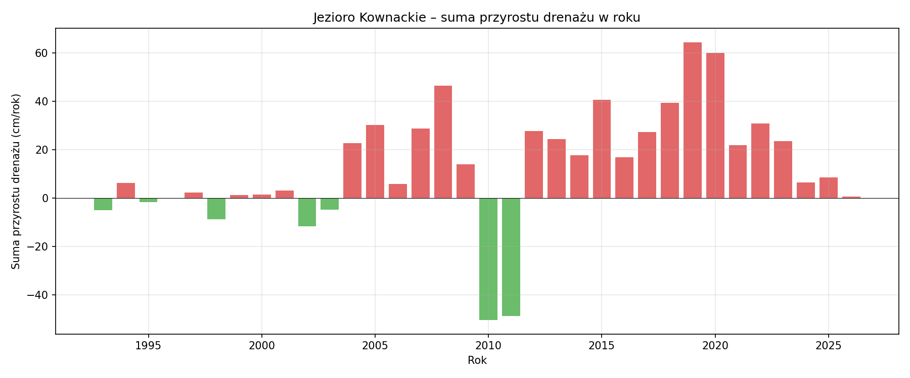
Suma przyrostu drenażu wg roku
Tabela: suma przyrostu dla każdego roku (cm/rok), bez wierszy miesięcznych.
| Rok | Suma przyrostu (cm/rok) |
|---|---|
| 1993 | -5.0 |
| 1994 | +6.3 |
| 1995 | -1.7 |
| 1996 | +0.1 |
| 1997 | +2.4 |
| 1998 | -8.7 |
| 1999 | +1.3 |
| 2000 | +1.4 |
| 2001 | +3.2 |
| 2002 | -11.7 |
| 2003 | -4.8 |
| 2004 | +22.8 |
| 2005 | +30.1 |
| 2006 | +5.9 |
| 2007 | +28.8 |
| 2008 | +46.4 |
| 2009 | +14.0 |
| 2010 | -50.3 |
| 2011 | -48.7 |
| 2012 | +27.7 |
| 2013 | +24.3 |
| 2014 | +17.7 |
| 2015 | +40.5 |
| 2016 | +16.8 |
| 2017 | +27.3 |
| 2018 | +39.3 |
| 2019 | +64.4 |
| 2020 | +59.9 |
| 2021 | +21.8 |
| 2022 | +30.8 |
| 2023 | +23.6 |
| 2024 | +6.4 |
| 2025 | +8.6 |
| 2026 | +0.7 |
Zanik drenażu — Jezioro Kownackie
- Rozbieżność = wysokość rzeczywista − wysokość w scenariuszu modelowym. Ujemna = jezioro poniżej scenariusza.
- Przy zaniku dodatkowego drenażu szacuje się lata do zamknięcia luki (szacunek teoretyczny).
- Projekcja: wznios wód gruntowych (cm/rok), start odbudowy od 2/2026, maks. do 2070.
Wyniki
- Średnia rozbieżność (ostatnie 12 miesięcy): 241.0 cm
- Trend rozbieżności: 5.97 cm/rok
- Szacunek odbudowy (scenariusz A): —
- Szacunek odbudowy (scenariusz B): —
Wykres projekcji odbudowy
Na wykresie: historia poziomu rzeczywistego oraz scenariusze modelowe (drenażowy i naturalny); projekcja odbudowy do zrównania z modelem drenażowym i z modelem naturalnym (porównanie obu wariantów).

Raport: Jezioro Niedzięgiel
Raport ewaluacji na następne 12 miesięcy dla Jezioro Niedzięgiel.
Poziom wody: rzeczywisty pomiar i model
Niebieska: poziom z data/niedziegiel/data.csv. Pomarańczowa przerywana: model po zmianie reżimu (trening do daty optymalnej po drenażu). Zielona kropkowana: model naturalny (trening do końca roku przed pojawieniem się drenażu).
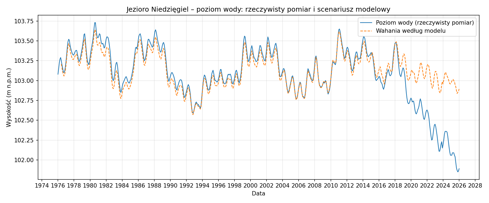
Prognoza 12 mies.
Dla każdego wariantu (temperatura: zimny/normalny/ciepły × opad: suchy/normalny/wilgotny) opad i temperatura z percentyli historycznych w data/niedziegiel/data.csv. Symulacja: 12 miesięcy do końca stycznia 2027 (stan na koniec stycznia 2026 to pomiar rzeczywisty). Wykresy i tabele: oba modele (drenażowy i naturalny – sprzed drenażu) na wspólnych wykresach i w jednej tabeli na wariant.
Szansa realizacji (na podstawie zgodności z ostatnimi 12 miesiącami pomiarowymi – średni opad i temperatura):
| Wariant | Szansa (%) | Poziom koniec – drenaż (m) | Poziom koniec – natural (m) |
|---|---|---|---|
| zimny, suchy | 10.2 | 101.91 | 101.974 |
| zimny, normalny | 13.8 | 101.911 | 102.093 |
| zimny, wilgotny | 7.3 | 101.912 | 102.191 |
| normalny, suchy | 10.8 | 101.94 | 101.894 |
| normalny, normalny | 16.0 | 101.914 | 102.005 |
| normalny, wilgotny | 7.6 | 101.906 | 102.241 |
| ciepły, suchy | 10.8 | 101.9 | 101.854 |
| ciepły, normalny | 15.8 | 101.922 | 101.919 |
| ciepły, wilgotny | 7.6 | 101.901 | 102.239 |
Najbardziej prawdopodobny poziom na koniec stycznia 2027 (średnia ważona zmian miesięcznych według szans realizacji wszystkich wariantów). W stosunku do stanu na koniec stycznia 2026 (101.89 m n.p.m.): - Model drenażowy: 101.914 m n.p.m. – przybędzie +0.024 m (+2.4 cm) - Model naturalny (sprzed drenażu): 102.021 m n.p.m. – przybędzie +0.131 m (+13.1 cm)
najbardziej prawdopodobny
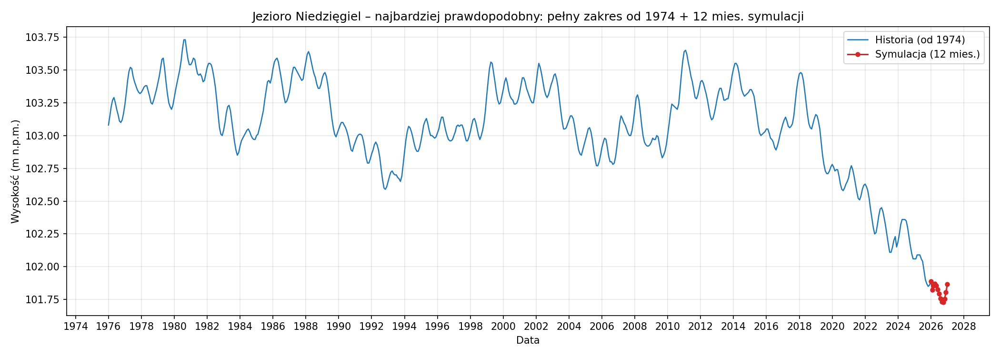
| Data | Opad (mm) | Temp. (°C) | Zmiana drenaż (cm) | Poziom drenaż (m) | Zmiana natural (cm) | Poziom natural (m) |
|---|---|---|---|---|---|---|
| 2026-02 | 28.8 | 0.4 | +4.8 cm | 101.938 | +3.8 cm | 101.928 |
| 2026-03 | 31.8 | 3.8 | +3.9 cm | 101.977 | +3.2 cm | 101.96 |
| 2026-04 | 25.9 | 8.6 | -2.5 cm | 101.952 | +0.8 cm | 101.968 |
| 2026-05 | 42.5 | 13.7 | -5.0 cm | 101.902 | -1.8 cm | 101.951 |
| 2026-06 | 53.1 | 17.2 | -6.1 cm | 101.841 | -2.6 cm | 101.925 |
| 2026-07 | 67.2 | 19.0 | -5.7 cm | 101.785 | -3.0 cm | 101.895 |
| 2026-08 | 53.1 | 18.5 | -2.9 cm | 101.756 | -2.7 cm | 101.868 |
| 2026-09 | 40.2 | 14.1 | +1.1 cm | 101.766 | -0.9 cm | 101.86 |
| 2026-10 | 29.0 | 9.3 | +5.2 cm | 101.819 | +1.4 cm | 101.873 |
| 2026-11 | 35.0 | 4.3 | +5.1 cm | 101.87 | +3.6 cm | 101.91 |
| 2026-12 | 36.9 | 1.0 | +3.2 cm | 101.902 | +5.1 cm | 101.96 |
| 2027-01 | 34.5 | -0.2 | +1.2 cm | 101.914 | +6.1 cm | 102.021 |
- Średnia ważona wszystkich wariantów (bez własnej szansy realizacji).
- Średnia temperatura roczna (prognoza): 9.1 °C
- Suma opadu (prognoza): 478.0 mm
- Różnica poziomu wody (drenaż) (koniec − start): +0.024 m (+2.4 cm)
- Poziom na koniec stycznia 2027 (drenaż): 101.914 m n.p.m.
- Różnica poziomu wody (natural) (koniec − start): +0.131 m (+13.1 cm)
- Poziom na koniec stycznia 2027 (natural): 102.021 m n.p.m.
zimny, suchy
| Data | Opad (mm) | Temp. (°C) | Zmiana drenaż (cm) | Poziom drenaż (m) | Zmiana natural (cm) | Poziom natural (m) |
|---|---|---|---|---|---|---|
| 2026-02 | 19.3 | -2.1 | +5.1 cm | 101.941 | +3.7 cm | 101.927 |
| 2026-03 | 22.0 | 2.0 | +4.5 cm | 101.986 | +3.4 cm | 101.961 |
| 2026-04 | 15.9 | 7.7 | -2.3 cm | 101.962 | +1.6 cm | 101.977 |
| 2026-05 | 30.2 | 12.6 | -4.7 cm | 101.916 | +0.1 cm | 101.978 |
| 2026-06 | 36.6 | 16.0 | -5.9 cm | 101.857 | -1.7 cm | 101.961 |
| 2026-07 | 47.1 | 17.4 | -5.2 cm | 101.805 | -3.0 cm | 101.931 |
| 2026-08 | 37.2 | 17.4 | -2.3 cm | 101.781 | -3.3 cm | 101.899 |
| 2026-09 | 22.9 | 12.9 | +2.8 cm | 101.81 | -1.8 cm | 101.88 |
| 2026-10 | 18.0 | 8.1 | +5.6 cm | 101.866 | -0.5 cm | 101.876 |
| 2026-11 | 23.5 | 2.9 | +4.1 cm | 101.907 | +2.1 cm | 101.897 |
| 2026-12 | 26.2 | -0.4 | +1.0 cm | 101.917 | +3.5 cm | 101.931 |
| 2027-01 | 23.3 | -2.2 | -0.8 cm | 101.91 | +4.2 cm | 101.974 |
- Szansa realizacji: 10.2 %
- Średnia temperatura roczna (prognoza): 7.7 °C
- Suma opadu (prognoza): 322.2 mm
- Różnica poziomu wody (drenaż) (koniec − start): +0.020 m (+2.0 cm)
- Poziom na koniec stycznia 2027 (drenaż): 101.91 m n.p.m.
- Różnica poziomu wody (natural) (koniec − start): +0.084 m (+8.4 cm)
- Poziom na koniec stycznia 2027 (natural): 101.974 m n.p.m.
zimny, normalny
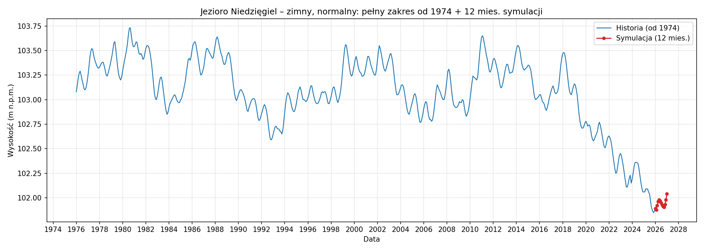
| Data | Opad (mm) | Temp. (°C) | Zmiana drenaż (cm) | Poziom drenaż (m) | Zmiana natural (cm) | Poziom natural (m) |
|---|---|---|---|---|---|---|
| 2026-02 | 29.5 | -2.1 | +5.0 cm | 101.94 | +3.9 cm | 101.929 |
| 2026-03 | 30.8 | 2.0 | +4.4 cm | 101.984 | +3.5 cm | 101.965 |
| 2026-04 | 28.2 | 7.7 | -2.5 cm | 101.959 | +2.2 cm | 101.986 |
| 2026-05 | 42.4 | 12.6 | -5.8 cm | 101.901 | -0.7 cm | 101.98 |
| 2026-06 | 55.5 | 16.0 | -6.6 cm | 101.835 | -2.5 cm | 101.955 |
| 2026-07 | 65.5 | 17.4 | -6.2 cm | 101.774 | -1.4 cm | 101.941 |
| 2026-08 | 52.7 | 17.4 | -2.9 cm | 101.745 | -0.5 cm | 101.936 |
| 2026-09 | 40.6 | 12.9 | +0.9 cm | 101.754 | +0.1 cm | 101.936 |
| 2026-10 | 29.0 | 8.1 | +5.1 cm | 101.805 | +1.5 cm | 101.951 |
| 2026-11 | 37.2 | 2.9 | +5.0 cm | 101.855 | +3.3 cm | 101.984 |
| 2026-12 | 39.2 | -0.4 | +3.9 cm | 101.894 | +4.8 cm | 102.032 |
| 2027-01 | 35.5 | -2.2 | +1.7 cm | 101.911 | +6.1 cm | 102.093 |
- Szansa realizacji: 13.8 %
- Średnia temperatura roczna (prognoza): 7.7 °C
- Suma opadu (prognoza): 486.1 mm
- Różnica poziomu wody (drenaż) (koniec − start): +0.021 m (+2.1 cm)
- Poziom na koniec stycznia 2027 (drenaż): 101.911 m n.p.m.
- Różnica poziomu wody (natural) (koniec − start): +0.203 m (+20.3 cm)
- Poziom na koniec stycznia 2027 (natural): 102.093 m n.p.m.
zimny, wilgotny
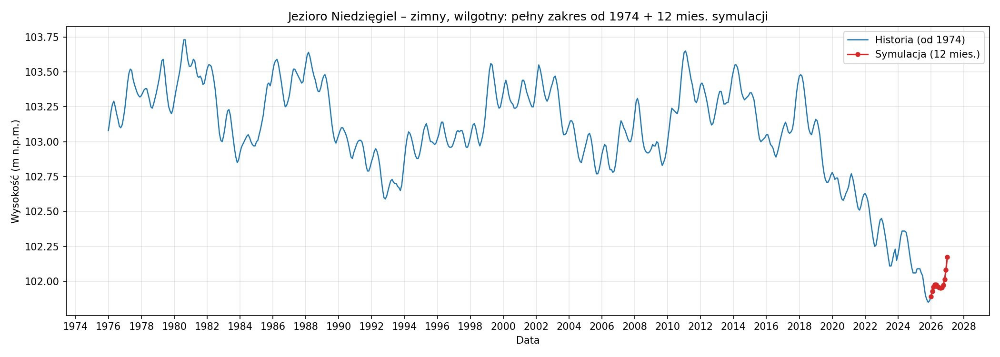
| Data | Opad (mm) | Temp. (°C) | Zmiana drenaż (cm) | Poziom drenaż (m) | Zmiana natural (cm) | Poziom natural (m) |
|---|---|---|---|---|---|---|
| 2026-02 | 41.0 | -2.1 | +5.0 cm | 101.94 | +4.0 cm | 101.93 |
| 2026-03 | 47.6 | 2.0 | +4.5 cm | 101.985 | +3.3 cm | 101.963 |
| 2026-04 | 35.4 | 7.7 | -2.5 cm | 101.96 | +0.9 cm | 101.972 |
| 2026-05 | 60.2 | 12.6 | -5.1 cm | 101.909 | -1.5 cm | 101.957 |
| 2026-06 | 71.7 | 16.0 | -6.6 cm | 101.843 | -1.0 cm | 101.948 |
| 2026-07 | 99.5 | 17.4 | -5.8 cm | 101.786 | -0.3 cm | 101.945 |
| 2026-08 | 76.7 | 17.4 | -3.3 cm | 101.753 | +0.3 cm | 101.948 |
| 2026-09 | 64.1 | 12.9 | +0.1 cm | 101.753 | +1.5 cm | 101.963 |
| 2026-10 | 44.6 | 8.1 | +5.1 cm | 101.805 | +2.9 cm | 101.992 |
| 2026-11 | 47.0 | 2.9 | +5.1 cm | 101.856 | +5.0 cm | 102.042 |
| 2026-12 | 47.8 | -0.4 | +3.8 cm | 101.894 | +7.0 cm | 102.112 |
| 2027-01 | 48.5 | -2.2 | +1.8 cm | 101.912 | +7.8 cm | 102.191 |
- Szansa realizacji: 7.3 %
- Średnia temperatura roczna (prognoza): 7.7 °C
- Suma opadu (prognoza): 683.9 mm
- Różnica poziomu wody (drenaż) (koniec − start): +0.022 m (+2.2 cm)
- Poziom na koniec stycznia 2027 (drenaż): 101.912 m n.p.m.
- Różnica poziomu wody (natural) (koniec − start): +0.301 m (+30.1 cm)
- Poziom na koniec stycznia 2027 (natural): 102.191 m n.p.m.
normalny, suchy
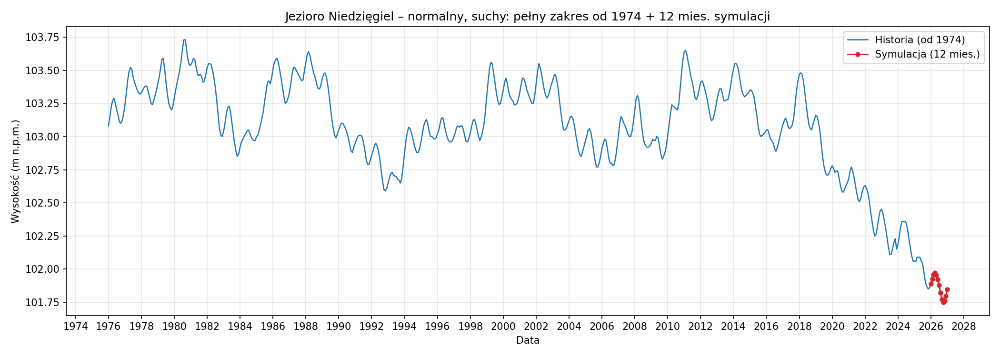
| Data | Opad (mm) | Temp. (°C) | Zmiana drenaż (cm) | Poziom drenaż (m) | Zmiana natural (cm) | Poziom natural (m) |
|---|---|---|---|---|---|---|
| 2026-02 | 19.3 | -0.1 | +5.1 cm | 101.941 | +3.7 cm | 101.927 |
| 2026-03 | 22.0 | 4.2 | +3.6 cm | 101.976 | +3.1 cm | 101.958 |
| 2026-04 | 15.9 | 8.7 | -2.4 cm | 101.953 | +0.9 cm | 101.967 |
| 2026-05 | 30.2 | 13.8 | -4.4 cm | 101.908 | -1.8 cm | 101.95 |
| 2026-06 | 36.6 | 16.8 | -5.6 cm | 101.853 | -2.7 cm | 101.923 |
| 2026-07 | 47.1 | 19.5 | -5.3 cm | 101.8 | -4.4 cm | 101.879 |
| 2026-08 | 37.2 | 18.5 | -2.5 cm | 101.774 | -4.5 cm | 101.834 |
| 2026-09 | 22.9 | 13.9 | +0.7 cm | 101.781 | -2.6 cm | 101.807 |
| 2026-10 | 18.0 | 9.1 | +5.2 cm | 101.833 | -0.5 cm | 101.802 |
| 2026-11 | 23.5 | 4.5 | +5.3 cm | 101.885 | +1.7 cm | 101.819 |
| 2026-12 | 26.2 | 1.2 | +3.8 cm | 101.923 | +3.2 cm | 101.851 |
| 2027-01 | 23.3 | -0.2 | +1.7 cm | 101.94 | +4.3 cm | 101.894 |
- Szansa realizacji: 10.8 %
- Średnia temperatura roczna (prognoza): 9.1 °C
- Suma opadu (prognoza): 322.2 mm
- Różnica poziomu wody (drenaż) (koniec − start): +0.050 m (+5.0 cm)
- Poziom na koniec stycznia 2027 (drenaż): 101.94 m n.p.m.
- Różnica poziomu wody (natural) (koniec − start): +0.004 m (+0.4 cm)
- Poziom na koniec stycznia 2027 (natural): 101.894 m n.p.m.
normalny, normalny
| Data | Opad (mm) | Temp. (°C) | Zmiana drenaż (cm) | Poziom drenaż (m) | Zmiana natural (cm) | Poziom natural (m) |
|---|---|---|---|---|---|---|
| 2026-02 | 29.5 | -0.1 | +5.0 cm | 101.94 | +3.9 cm | 101.929 |
| 2026-03 | 30.8 | 4.2 | +3.4 cm | 101.974 | +3.2 cm | 101.961 |
| 2026-04 | 28.2 | 8.7 | -3.1 cm | 101.943 | +0.4 cm | 101.966 |
| 2026-05 | 42.4 | 13.8 | -5.4 cm | 101.889 | -2.7 cm | 101.939 |
| 2026-06 | 55.5 | 16.8 | -5.7 cm | 101.832 | -3.2 cm | 101.907 |
| 2026-07 | 65.5 | 19.5 | -5.8 cm | 101.775 | -2.9 cm | 101.878 |
| 2026-08 | 52.7 | 18.5 | -3.1 cm | 101.743 | -1.9 cm | 101.858 |
| 2026-09 | 40.6 | 13.9 | +0.8 cm | 101.752 | -0.5 cm | 101.853 |
| 2026-10 | 29.0 | 9.1 | +5.1 cm | 101.803 | +1.4 cm | 101.867 |
| 2026-11 | 37.2 | 4.5 | +5.5 cm | 101.858 | +3.1 cm | 101.898 |
| 2026-12 | 39.2 | 1.2 | +3.9 cm | 101.897 | +4.8 cm | 101.946 |
| 2027-01 | 35.5 | -0.2 | +1.7 cm | 101.914 | +6.0 cm | 102.005 |
- Szansa realizacji: 16.0 %
- Średnia temperatura roczna (prognoza): 9.1 °C
- Suma opadu (prognoza): 486.1 mm
- Różnica poziomu wody (drenaż) (koniec − start): +0.024 m (+2.4 cm)
- Poziom na koniec stycznia 2027 (drenaż): 101.914 m n.p.m.
- Różnica poziomu wody (natural) (koniec − start): +0.115 m (+11.5 cm)
- Poziom na koniec stycznia 2027 (natural): 102.005 m n.p.m.
normalny, wilgotny
| Data | Opad (mm) | Temp. (°C) | Zmiana drenaż (cm) | Poziom drenaż (m) | Zmiana natural (cm) | Poziom natural (m) |
|---|---|---|---|---|---|---|
| 2026-02 | 41.0 | -0.1 | +5.0 cm | 101.94 | +4.0 cm | 101.93 |
| 2026-03 | 47.6 | 4.2 | +3.5 cm | 101.975 | +3.0 cm | 101.96 |
| 2026-04 | 35.4 | 8.7 | -2.5 cm | 101.951 | +0.1 cm | 101.961 |
| 2026-05 | 60.2 | 13.8 | -5.1 cm | 101.9 | -2.1 cm | 101.94 |
| 2026-06 | 71.7 | 16.8 | -6.6 cm | 101.834 | -1.7 cm | 101.923 |
| 2026-07 | 99.5 | 19.5 | -5.8 cm | 101.776 | -2.0 cm | 101.903 |
| 2026-08 | 76.7 | 18.5 | -3.3 cm | 101.743 | -0.6 cm | 101.897 |
| 2026-09 | 64.1 | 13.9 | +0.0 cm | 101.743 | +2.6 cm | 101.923 |
| 2026-10 | 44.6 | 9.1 | +5.1 cm | 101.795 | +4.7 cm | 101.97 |
| 2026-11 | 47.0 | 4.5 | +5.6 cm | 101.85 | +8.0 cm | 102.049 |
| 2026-12 | 47.8 | 1.2 | +3.8 cm | 101.889 | +9.5 cm | 102.144 |
| 2027-01 | 48.5 | -0.2 | +1.8 cm | 101.906 | +9.6 cm | 102.241 |
- Szansa realizacji: 7.6 %
- Średnia temperatura roczna (prognoza): 9.1 °C
- Suma opadu (prognoza): 683.9 mm
- Różnica poziomu wody (drenaż) (koniec − start): +0.016 m (+1.6 cm)
- Poziom na koniec stycznia 2027 (drenaż): 101.906 m n.p.m.
- Różnica poziomu wody (natural) (koniec − start): +0.351 m (+35.1 cm)
- Poziom na koniec stycznia 2027 (natural): 102.241 m n.p.m.
ciepły, suchy
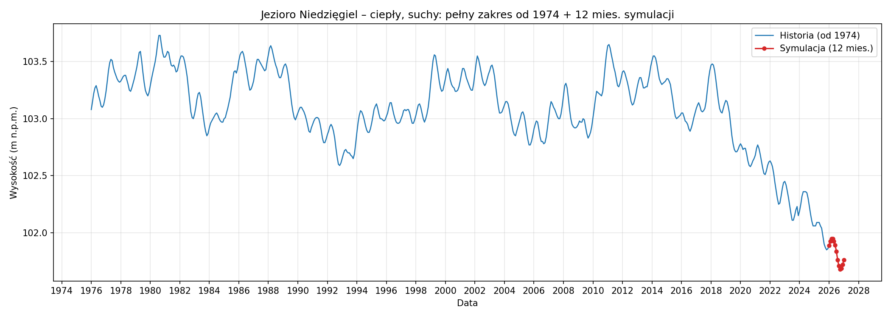
| Data | Opad (mm) | Temp. (°C) | Zmiana drenaż (cm) | Poziom drenaż (m) | Zmiana natural (cm) | Poziom natural (m) |
|---|---|---|---|---|---|---|
| 2026-02 | 19.3 | 3.1 | +4.4 cm | 101.934 | +3.6 cm | 101.926 |
| 2026-03 | 22.0 | 5.1 | +3.8 cm | 101.972 | +2.9 cm | 101.956 |
| 2026-04 | 15.9 | 9.4 | -2.1 cm | 101.951 | +0.8 cm | 101.963 |
| 2026-05 | 30.2 | 14.8 | -4.6 cm | 101.905 | -1.8 cm | 101.945 |
| 2026-06 | 36.6 | 18.8 | -5.9 cm | 101.846 | -3.1 cm | 101.914 |
| 2026-07 | 47.1 | 20.1 | -5.3 cm | 101.793 | -4.5 cm | 101.869 |
| 2026-08 | 37.2 | 19.4 | -2.3 cm | 101.77 | -5.8 cm | 101.811 |
| 2026-09 | 22.9 | 15.6 | +2.9 cm | 101.799 | -4.0 cm | 101.77 |
| 2026-10 | 18.0 | 10.6 | +5.7 cm | 101.856 | -0.4 cm | 101.766 |
| 2026-11 | 23.5 | 5.4 | +4.5 cm | 101.901 | +1.9 cm | 101.786 |
| 2026-12 | 26.2 | 2.2 | +0.9 cm | 101.91 | +2.9 cm | 101.814 |
| 2027-01 | 23.3 | 1.8 | -1.0 cm | 101.9 | +4.0 cm | 101.854 |
- Szansa realizacji: 10.8 %
- Średnia temperatura roczna (prognoza): 10.5 °C
- Suma opadu (prognoza): 322.2 mm
- Różnica poziomu wody (drenaż) (koniec − start): +0.010 m (+1.0 cm)
- Poziom na koniec stycznia 2027 (drenaż): 101.9 m n.p.m.
- Różnica poziomu wody (natural) (koniec − start): -0.036 m (-3.6 cm)
- Poziom na koniec stycznia 2027 (natural): 101.854 m n.p.m.
ciepły, normalny
| Data | Opad (mm) | Temp. (°C) | Zmiana drenaż (cm) | Poziom drenaż (m) | Zmiana natural (cm) | Poziom natural (m) |
|---|---|---|---|---|---|---|
| 2026-02 | 29.5 | 3.1 | +4.3 cm | 101.933 | +3.8 cm | 101.928 |
| 2026-03 | 30.8 | 5.1 | +3.7 cm | 101.97 | +3.0 cm | 101.958 |
| 2026-04 | 28.2 | 9.4 | -2.3 cm | 101.947 | +0.3 cm | 101.961 |
| 2026-05 | 42.4 | 14.8 | -4.7 cm | 101.901 | -2.7 cm | 101.934 |
| 2026-06 | 55.5 | 18.8 | -5.9 cm | 101.841 | -3.6 cm | 101.898 |
| 2026-07 | 65.5 | 20.1 | -5.8 cm | 101.784 | -4.5 cm | 101.852 |
| 2026-08 | 52.7 | 19.4 | -3.1 cm | 101.753 | -4.8 cm | 101.804 |
| 2026-09 | 40.6 | 15.6 | +0.8 cm | 101.761 | -2.8 cm | 101.776 |
| 2026-10 | 29.0 | 10.6 | +5.1 cm | 101.812 | +0.9 cm | 101.785 |
| 2026-11 | 37.2 | 5.4 | +5.5 cm | 101.867 | +3.1 cm | 101.815 |
| 2026-12 | 39.2 | 2.2 | +3.8 cm | 101.904 | +4.5 cm | 101.86 |
| 2027-01 | 35.5 | 1.8 | +1.7 cm | 101.922 | +5.9 cm | 101.919 |
- Szansa realizacji: 15.8 %
- Średnia temperatura roczna (prognoza): 10.5 °C
- Suma opadu (prognoza): 486.1 mm
- Różnica poziomu wody (drenaż) (koniec − start): +0.032 m (+3.2 cm)
- Poziom na koniec stycznia 2027 (drenaż): 101.922 m n.p.m.
- Różnica poziomu wody (natural) (koniec − start): +0.029 m (+2.9 cm)
- Poziom na koniec stycznia 2027 (natural): 101.919 m n.p.m.
ciepły, wilgotny
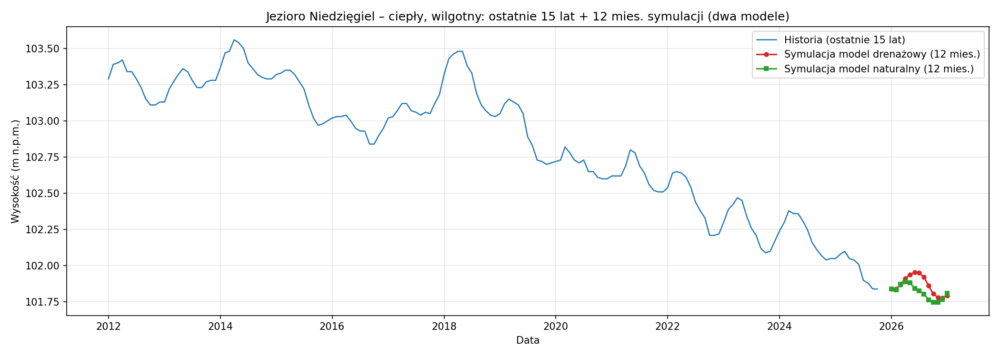
| Data | Opad (mm) | Temp. (°C) | Zmiana drenaż (cm) | Poziom drenaż (m) | Zmiana natural (cm) | Poziom natural (m) |
|---|---|---|---|---|---|---|
| 2026-02 | 41.0 | 3.1 | +4.4 cm | 101.934 | +3.9 cm | 101.929 |
| 2026-03 | 47.6 | 5.1 | +3.8 cm | 101.971 | +2.9 cm | 101.957 |
| 2026-04 | 35.4 | 9.4 | -2.2 cm | 101.949 | -0.1 cm | 101.956 |
| 2026-05 | 60.2 | 14.8 | -5.3 cm | 101.897 | -2.0 cm | 101.936 |
| 2026-06 | 71.7 | 18.8 | -6.6 cm | 101.83 | -2.0 cm | 101.916 |
| 2026-07 | 99.5 | 20.1 | -5.8 cm | 101.773 | -2.2 cm | 101.894 |
| 2026-08 | 76.7 | 19.4 | -3.3 cm | 101.739 | -0.6 cm | 101.888 |
| 2026-09 | 64.1 | 15.6 | +0.0 cm | 101.74 | +2.9 cm | 101.916 |
| 2026-10 | 44.6 | 10.6 | +5.1 cm | 101.791 | +5.3 cm | 101.969 |
| 2026-11 | 47.0 | 5.4 | +5.5 cm | 101.846 | +8.1 cm | 102.05 |
| 2026-12 | 47.8 | 2.2 | +3.7 cm | 101.883 | +9.4 cm | 102.144 |
| 2027-01 | 48.5 | 1.8 | +1.8 cm | 101.901 | +9.5 cm | 102.239 |
- Szansa realizacji: 7.6 %
- Średnia temperatura roczna (prognoza): 10.5 °C
- Suma opadu (prognoza): 683.9 mm
- Różnica poziomu wody (drenaż) (koniec − start): +0.011 m (+1.1 cm)
- Poziom na koniec stycznia 2027 (drenaż): 101.901 m n.p.m.
- Różnica poziomu wody (natural) (koniec − start): +0.349 m (+34.9 cm)
- Poziom na koniec stycznia 2027 (natural): 102.239 m n.p.m.
Wygenerowano: 2026-02-15 15:44
Szanse na odbudowę – Jezioro Niedzięgiel
Opisowa ocena szans na odbudowę poziomu wody w perspektywie kolejnych 12 miesięcy, na podstawie prognozy z symulacji wariantów pogodowych (opad i temperatura z percentyli historycznych) oraz szacowanych szans realizacji każdego wariantu (zgodność z ostatnimi 12 miesiącami pomiarowymi).
Stan odniesienia: koniec stycznia 2026 – poziom 101.890 m n.p.m.
Porównanie prognoz (najbardziej prawdopodobny scenariusz, średnia ważona):
| Model | Poziom koniec (m n.p.m.) | Zmiana (cm) |
|---|---|---|
| Drenażowy (po zmianie reżimu) | 101.914 | +2.4 |
| Naturalny (sprzed drenażu) | 102.021 | +13.1 |
Prognoza na koniec stycznia 2027 (model drenażowy): poziom 101.914 m n.p.m., czyli wzrost o 2.4 cm w stosunku do stanu odniesienia.
W zależności od warunków pogodowych w nadchodzącym roku prognozowana zmiana poziomu w 12 miesięcy (model drenażowy) mieści się w zakresie od +1.0 cm do +5.0 cm. Najwyższą szansę realizacji (16.0%) ma jeden z wariantów pogodowych; szczegóły wszystkich wariantów i szans – w raporcie Prognoza 12 mies..
Szanse na odbudowę w perspektywie roku (model drenażowy): prognoza modelu drenażowego wskazuje na stabilizację lub niewielki przyrost poziomu w ciągu roku; szanse na odbudowę w tej perspektywie są umiarkowane.
Szanse na odbudowę w perspektywie roku (model naturalny): prognoza modelu naturalnego (sprzed drenażu) wskazuje na możliwy przyrost poziomu w ciągu roku.
Szacunki długoterminowej odbudowy (lata do zamknięcia luki po ewentualnym zaniku drenażu) – patrz Zanik drenażu.
Wygenerowano: 2026-02-15 15:44
Raport podsumowujący: prognoza zmiany poziomu Jezioro Niedzięgiel
1. Cel projektu
Projekt ma na celu: - zbudowanie modelu uczenia maszynowego, który na podstawie opadu i temperatury (oraz sezonowości i historii) prognozuje miesięczną zmianę poziomu Jezioro Niedzięgiel; - ewaluację prognoz względem rzeczywistych pomiarów.
2. Dane
- Źródło: plik
data/niedziegiel/data.csv. - Zakres: dane miesięczne (pierwszy dzień miesiąca).
- Kolumny: Data, Poziom (m), Zmiana (m), Opad (mm), Temperatura (°C).
- Target: Zmiana – miesięczna zmiana poziomu.
- Wiersze z błędami (#ERROR!) lub brakami są pomijane. Po usunięciu lagów (3 mies.) do analizy wchodzi 598 miesięcy.
3. Model
| Element | Opis |
|---|---|
| Algorytm | Gradient Boosting (regresja), scikit-learn |
| Cechy wejściowe | Miesiąc (sin/cos), Opad, Temperatura, 3 opóźnienia zmiany poziomu, 3 opóźnienia poziomu |
| Trening | Podział czasowy: trening do 2023-12, test od 2024 do 2023 |
| Wynik | Prognoza zmiany poziomu na dany miesiąc (cm) |
Model nie używa bieżącego poziomu – tylko opad, temperatura, sezon i historia.
4. Wyniki ewaluacji
- MAE (średni błąd bezwzględny): nan cm
- RMSE: nan cm
- Liczba miesięcy: 598
4.1. Wysokość wody: rzeczywista vs scenariusz modelowy
Scenariusz modelowy: start od poziomu na początek pierwszego miesiąca; w każdym miesiącu dodawana jest prognozowana zmiana (kumulatywnie).
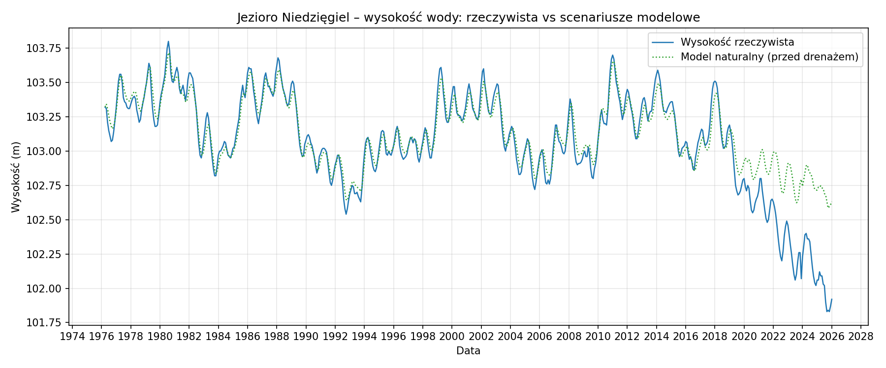
4.2. Rozbieżność w czasie
Rozbieżność = wysokość rzeczywista − wysokość w scenariuszu modelowym. Wartość dodatnia: jezioro wyżej niż przewidywał model; ujemna: niżej.
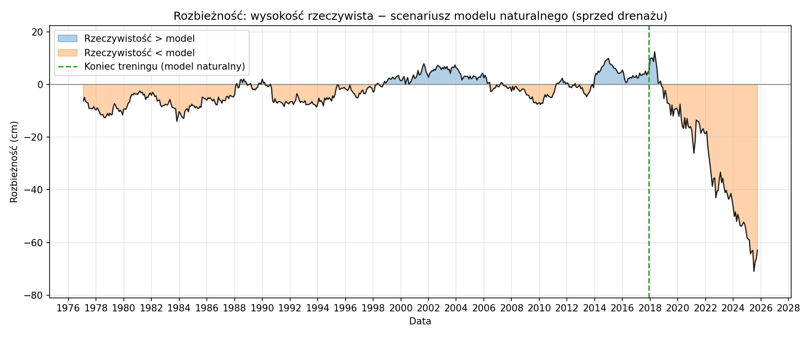
4.3. Zmiana poziomu: faktyczna vs prognoza
Punkty przy linii y = x oznaczają dobrą zgodność miesięcznych zmian.
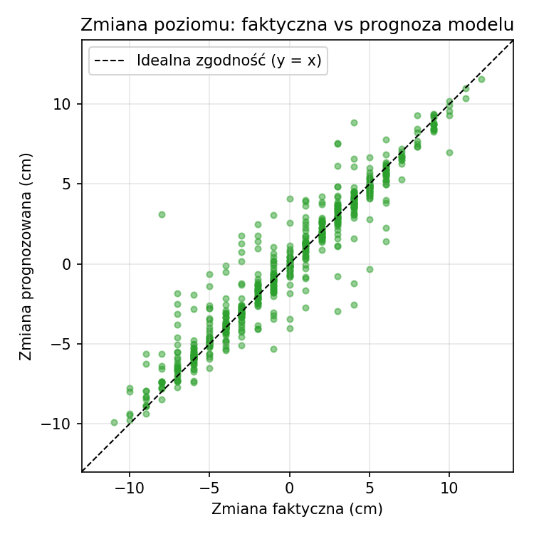
4.4. Błąd miesięczny
Błąd = zmiana faktyczna − zmiana prognozowana w każdym miesiącu.

5. Podsumowanie
- Model prognozuje miesięczną zmianę poziomu Jezioro Niedzięgiel z MAE ~nan cm.
- Scenariusz kumulatywny (wysokość z prognozowanej zmiany) jest porównywany z rzeczywistą wysokością; rozbieżność i błąd miesięczny opisują jakość prognoz.
Szczegóły techniczne: model.md, podsumowanie_ewaluacji.md.
Wygenerowano: 2026-02-15 15:38
Podsumowanie ewaluacji prognozy zmiany poziomu Jezioro Niedzięgiel
Dla każdego miesiąca model otrzymuje opad i temperaturę (oraz cechy opóźnione z historii), wylicza prognozowaną zmianę poziomu Jezioro Niedzięgiel i jest ona porównana z faktyczną zmianą.
Metryki
- MAE (średni błąd bezwzględny): nan cm
- RMSE (pierwiastek błędu średniokwadratowego): nan cm
- Liczba miesięcy (zbior testowy): 0
- Liczba miesięcy (tabela / wykres): 598
Porównanie miesięczne
| Data | Opad (mm) | Temperatura (°C) | Zmiana faktyczna (cm) | Zmiana prognoza (cm) | Błąd (cm) | Wysokość rzeczywista (m) | Wysokość scenariusz modelowy (m) | Rozbieżność (cm) |
|---|---|---|---|---|---|---|---|---|
| 1976-04 | 8.2 | 6.5 | +5.0 | -2.5 | +7.5 | 103.32 | 103.245 | +7.5 |
| 1976-05 | 38.6 | 12.1 | +2.0 | -3.5 | +5.5 | 103.31 | 103.21 | +10.0 |
| 1976-06 | 32.9 | 15.5 | -4.0 | -5.0 | +1.0 | 103.21 | 103.159 | +5.1 |
| 1976-07 | 98.7 | 18.2 | -5.0 | -7.3 | +2.3 | 103.15 | 103.087 | +6.3 |
| 1976-08 | 73.8 | 15.7 | -5.0 | -6.0 | +1.0 | 103.11 | 103.026 | +8.4 |
| 1976-09 | 104.8 | 12.4 | -4.0 | -2.4 | -1.6 | 103.07 | 103.003 | +6.7 |
| 1976-10 | 32.9 | 7.1 | -2.0 | -1.7 | -0.3 | 103.08 | 102.986 | +9.4 |
| 1976-11 | 36.0 | 4.6 | +2.0 | +1.2 | +0.8 | 103.14 | 102.998 | +14.2 |
| 1976-12 | 43.4 | -1.5 | +5.0 | +3.0 | +2.0 | 103.22 | 103.027 | +19.3 |
| 1977-01 | 43.7 | -1.7 | +7.0 | +4.6 | +2.4 | 103.31 | 103.073 | +23.7 |
| 1977-02 | 25.4 | 0.3 | +9.0 | +4.0 | +5.0 | 103.42 | 103.113 | +30.7 |
| 1977-03 | 40.6 | 4.8 | +9.0 | +0.2 | +8.8 | 103.51 | 103.115 | +39.5 |
| 1977-04 | 43.6 | 5.1 | +7.0 | -2.9 | +10.0 | 103.56 | 103.085 | +47.5 |
| 1977-05 | 78.0 | 11.7 | +4.0 | -4.5 | +8.5 | 103.56 | 103.04 | +52.0 |
| 1977-06 | 14.7 | 17.2 | -1.0 | -3.7 | +2.7 | 103.5 | 103.003 | +49.7 |
| 1977-07 | 100.9 | 16.1 | -6.0 | -5.7 | -0.4 | 103.39 | 102.947 | +44.3 |
| 1977-08 | 95.9 | 16.1 | -5.0 | -5.9 | +0.9 | 103.36 | 102.888 | +47.2 |
| 1977-09 | 36.4 | 11.1 | -3.0 | -2.5 | -0.5 | 103.35 | 102.862 | +48.8 |
| 1977-10 | 16.7 | 9.2 | -3.0 | -1.4 | -1.6 | 103.32 | 102.848 | +47.2 |
| 1977-11 | 48.8 | 5.0 | -2.0 | -2.4 | +0.4 | 103.31 | 102.824 | +48.6 |
| 1977-12 | 21.4 | 0.2 | -1.0 | +1.1 | -2.1 | 103.31 | 102.835 | +47.5 |
| 1978-01 | 20.5 | -0.8 | +1.0 | +2.9 | -1.9 | 103.34 | 102.865 | +47.5 |
| 1978-02 | 4.1 | -2.8 | +2.0 | +3.1 | -1.1 | 103.37 | 102.896 | +47.4 |
| 1978-03 | 22.4 | 3.1 | +2.0 | +1.1 | +0.9 | 103.39 | 102.907 | +48.3 |
| 1978-04 | 18.7 | 5.9 | +2.0 | -2.5 | +4.5 | 103.4 | 102.882 | +51.8 |
| 1978-05 | 49.5 | 11.8 | -0.0 | -3.5 | +3.5 | 103.38 | 102.847 | +53.3 |
| 1978-06 | 49.6 | 15.4 | -4.0 | -3.9 | -0.1 | 103.3 | 102.808 | +49.2 |
| 1978-07 | 50.5 | 16.2 | -4.0 | -7.4 | +3.4 | 103.26 | 102.734 | +52.6 |
| 1978-08 | 113.5 | 15.9 | -4.0 | -5.4 | +1.4 | 103.21 | 102.68 | +53.0 |
| 1978-09 | 82.6 | 11.1 | -1.0 | -2.5 | +1.5 | 103.23 | 102.655 | +57.5 |
| 1978-10 | 52.0 | 9.1 | +3.0 | +1.8 | +1.1 | 103.3 | 102.674 | +62.6 |
| 1978-11 | 21.8 | 4.9 | +4.0 | +2.9 | +1.1 | 103.35 | 102.703 | +64.7 |
| 1978-12 | 53.8 | -3.3 | +4.0 | +3.3 | +0.7 | 103.39 | 102.736 | +65.4 |
| 1979-01 | 25.4 | -6.0 | +5.0 | +2.3 | +2.7 | 103.45 | 102.76 | +69.0 |
| 1979-02 | 19.2 | -5.2 | +5.0 | +2.3 | +2.7 | 103.5 | 102.783 | +71.7 |
| 1979-03 | 32.1 | 1.7 | +6.0 | +1.6 | +4.4 | 103.57 | 102.798 | +77.2 |
| 1979-04 | 28.7 | 6.6 | +6.0 | -3.1 | +9.1 | 103.64 | 102.768 | +87.2 |
| 1979-05 | 5.9 | 14.3 | +2.0 | -3.5 | +5.5 | 103.61 | 102.732 | +87.8 |
| 1979-06 | 45.7 | 19.0 | -8.0 | -5.2 | -2.8 | 103.43 | 102.68 | +75.0 |
| 1979-07 | 30.2 | 15.1 | -10.0 | -8.4 | -1.6 | 103.31 | 102.595 | +71.5 |
| 1979-08 | 51.4 | 16.9 | -9.0 | -6.6 | -2.4 | 103.23 | 102.53 | +70.0 |
| 1979-09 | 66.0 | 13.4 | -7.0 | -3.6 | -3.4 | 103.18 | 102.494 | +68.6 |
| 1979-10 | 8.9 | 6.2 | -4.0 | -2.5 | -1.5 | 103.18 | 102.469 | +71.1 |
| 1979-11 | 53.7 | 2.5 | -1.0 | -1.9 | +0.9 | 103.19 | 102.45 | +74.0 |
| 1979-12 | 51.0 | 2.1 | +3.0 | +2.9 | +0.1 | 103.26 | 102.479 | +78.1 |
| 1980-01 | 20.9 | -6.2 | +6.0 | +3.8 | +2.2 | 103.35 | 102.517 | +83.3 |
| 1980-02 | 20.1 | -1.4 | +6.0 | +4.0 | +2.0 | 103.41 | 102.557 | +85.3 |
| 1980-03 | 17.9 | -0.2 | +5.0 | +1.9 | +3.1 | 103.45 | 102.576 | +87.4 |
| 1980-04 | 31.8 | 5.9 | +5.0 | -2.9 | +7.9 | 103.5 | 102.548 | +95.2 |
| 1980-05 | 25.9 | 9.5 | +5.0 | -3.6 | +8.6 | 103.55 | 102.511 | +103.9 |
| 1980-06 | 138.8 | 15.1 | +8.0 | -4.5 | +12.5 | 103.65 | 102.466 | +118.4 |
| 1980-07 | 236.0 | 16.0 | +9.0 | -4.3 | +13.3 | 103.75 | 102.423 | +132.7 |
| 1980-08 | 90.2 | 16.1 | +7.0 | -3.8 | +10.8 | 103.8 | 102.386 | +141.4 |
| 1980-09 | 28.5 | 12.5 | -0.0 | +0.1 | -0.1 | 103.73 | 102.387 | +134.3 |
| 1980-10 | 28.7 | 8.4 | -8.0 | -2.0 | -6.0 | 103.57 | 102.367 | +120.3 |
| 1980-11 | 13.8 | 2.2 | -7.0 | -3.5 | -3.5 | 103.51 | 102.332 | +117.8 |
| 1980-12 | 19.4 | -0.2 | -4.0 | -3.5 | -0.5 | 103.5 | 102.297 | +120.3 |
| 1981-01 | 32.0 | -2.4 | +0.0 | -1.5 | +1.5 | 103.54 | 102.282 | +125.8 |
| 1981-02 | 16.3 | -1.0 | +2.0 | +3.4 | -1.4 | 103.58 | 102.317 | +126.3 |
| 1981-03 | 53.4 | 5.1 | +2.0 | +1.3 | +0.7 | 103.61 | 102.33 | +128.0 |
| 1981-04 | 17.0 | 6.4 | -1.0 | -3.2 | +2.2 | 103.57 | 102.297 | +127.3 |
| 1981-05 | 36.0 | 14.3 | -6.0 | -4.1 | -1.9 | 103.46 | 102.256 | +120.4 |
| 1981-06 | 94.2 | 16.8 | -5.0 | -8.4 | +3.4 | 103.42 | 102.172 | +124.8 |
| 1981-07 | 148.5 | 17.4 | -1.0 | -7.5 | +6.5 | 103.45 | 102.097 | +135.3 |
| 1981-08 | 50.7 | 16.7 | +1.0 | -2.3 | +3.3 | 103.48 | 102.075 | +140.5 |
| 1981-09 | 11.7 | 13.8 | -2.0 | +1.5 | -3.5 | 103.43 | 102.09 | +134.0 |
| 1981-10 | 61.3 | 8.2 | -4.0 | -1.2 | -2.8 | 103.37 | 102.078 | +129.2 |
| 1981-11 | 44.1 | 3.9 | +0.0 | -2.9 | +2.9 | 103.42 | 102.049 | +137.1 |
| 1981-12 | 39.2 | -4.0 | +5.0 | +2.7 | +2.3 | 103.52 | 102.076 | +144.4 |
| 1982-01 | 44.1 | -3.7 | +5.0 | +4.6 | +0.4 | 103.57 | 102.122 | +144.8 |
| 1982-02 | 9.3 | -1.3 | +2.0 | +3.8 | -1.8 | 103.57 | 102.16 | +141.0 |
| 1982-03 | 24.5 | 4.0 | +0.0 | -2.6 | +2.6 | 103.55 | 102.134 | +141.6 |
| 1982-04 | 31.4 | 5.9 | -1.0 | -4.0 | +3.0 | 103.53 | 102.094 | +143.6 |
| 1982-05 | 42.1 | 13.3 | -4.0 | -4.0 | -0.1 | 103.46 | 102.054 | +140.6 |
| 1982-06 | 48.5 | 16.1 | -6.0 | -8.0 | +2.0 | 103.38 | 101.974 | +140.6 |
| 1982-07 | 23.9 | 19.4 | -7.0 | -8.3 | +1.3 | 103.3 | 101.891 | +140.9 |
| 1982-08 | 24.8 | 18.9 | -10.0 | -6.8 | -3.2 | 103.17 | 101.824 | +134.6 |
| 1982-09 | 2.4 | 14.7 | -11.0 | -3.2 | -7.8 | 103.05 | 101.791 | +125.9 |
| 1982-10 | 5.8 | 9.2 | -9.0 | -2.6 | -6.4 | 102.97 | 101.766 | +120.4 |
| 1982-11 | 17.5 | 5.0 | -6.0 | -3.3 | -2.7 | 102.95 | 101.733 | +121.7 |
| 1982-12 | 36.6 | 1.2 | -0.0 | -3.2 | +3.2 | 103.0 | 101.701 | +129.9 |
| 1983-01 | 45.3 | 3.7 | +4.0 | +3.0 | +1.0 | 103.08 | 101.731 | +134.9 |
| 1983-02 | 60.0 | -3.1 | +6.0 | +4.4 | +1.6 | 103.16 | 101.776 | +138.4 |
| 1983-03 | 32.4 | 4.2 | +7.0 | +2.2 | +4.8 | 103.24 | 101.798 | +144.2 |
| 1983-04 | 28.7 | 9.2 | +6.0 | -3.0 | +9.0 | 103.28 | 101.767 | +151.3 |
| 1983-05 | 41.7 | 14.8 | +1.0 | -3.6 | +4.6 | 103.24 | 101.732 | +150.8 |
| 1983-06 | 36.0 | 16.7 | -4.0 | -5.1 | +1.1 | 103.15 | 101.68 | +147.0 |
| 1983-07 | 31.3 | 20.0 | -7.0 | -7.1 | +0.1 | 103.04 | 101.609 | +143.1 |
| 1983-08 | 54.0 | 18.2 | -8.0 | -6.6 | -1.4 | 102.95 | 101.542 | +140.8 |
| 1983-09 | 37.7 | 13.8 | -8.0 | -3.4 | -4.6 | 102.87 | 101.509 | +136.1 |
| 1983-10 | 29.0 | 8.8 | -7.0 | -2.4 | -4.6 | 102.82 | 101.485 | +133.5 |
| 1983-11 | 29.2 | 2.1 | -3.0 | -2.0 | -1.0 | 102.82 | 101.464 | +135.6 |
| 1983-12 | 36.5 | -1.0 | +2.0 | -1.6 | +3.6 | 102.89 | 101.448 | +144.2 |
| 1984-01 | 37.8 | 0.6 | +5.0 | +4.0 | +1.0 | 102.97 | 101.489 | +148.1 |
| 1984-02 | 19.5 | -1.1 | +4.0 | +5.0 | -1.0 | 103.0 | 101.539 | +146.1 |
| 1984-03 | 25.0 | 1.1 | +2.0 | +3.7 | -1.7 | 103.0 | 101.576 | +142.4 |
| 1984-04 | 12.0 | 8.0 | +2.0 | -3.1 | +5.1 | 103.02 | 101.544 | +147.6 |
| 1984-05 | 68.0 | 12.9 | +2.0 | -5.0 | +7.0 | 103.04 | 101.494 | +154.6 |
| 1984-06 | 59.0 | 14.4 | +3.0 | -3.5 | +6.5 | 103.07 | 101.459 | +161.1 |
| 1984-07 | 63.5 | 15.5 | +1.0 | -4.4 | +5.4 | 103.06 | 101.415 | +164.5 |
| 1984-08 | 21.0 | 17.9 | -2.0 | -2.8 | +0.8 | 103.01 | 101.388 | +162.2 |
| 1984-09 | 58.1 | 12.5 | -3.0 | -2.6 | -0.4 | 102.97 | 101.362 | +160.8 |
| 1984-10 | 22.0 | 10.6 | -2.0 | -1.4 | -0.6 | 102.96 | 101.347 | +161.3 |
| 1984-11 | 25.7 | 2.7 | -2.0 | +1.3 | -3.3 | 102.95 | 101.36 | +159.0 |
| 1984-12 | 15.6 | -0.8 | +1.0 | +1.7 | -0.7 | 102.98 | 101.377 | +160.3 |
| 1985-01 | 29.0 | -8.1 | +2.0 | +3.9 | -1.9 | 103.02 | 101.416 | +160.4 |
| 1985-02 | 34.8 | -7.9 | +2.0 | +3.1 | -1.1 | 103.03 | 101.447 | +158.3 |
| 1985-03 | 20.0 | 2.5 | +3.0 | +1.6 | +1.4 | 103.08 | 101.463 | +161.7 |
| 1985-04 | 24.3 | 7.7 | +5.0 | -1.8 | +6.8 | 103.14 | 101.445 | +169.5 |
| 1985-05 | 88.4 | 14.6 | +5.0 | -3.6 | +8.6 | 103.19 | 101.409 | +178.1 |
| 1985-06 | 100.0 | 14.0 | +5.0 | -4.5 | +9.5 | 103.24 | 101.364 | +187.6 |
| 1985-07 | 96.0 | 17.2 | +8.0 | -4.3 | +12.3 | 103.35 | 101.321 | +202.9 |
| 1985-08 | 187.9 | 16.8 | +8.0 | -3.8 | +11.8 | 103.42 | 101.283 | +213.7 |
| 1985-09 | 31.8 | 12.3 | +7.0 | +0.2 | +6.8 | 103.48 | 101.285 | +219.5 |
| 1985-10 | 7.7 | 8.2 | +0.0 | +0.8 | -0.8 | 103.42 | 101.293 | +212.7 |
| 1985-11 | 27.3 | 0.6 | -1.0 | -0.4 | -0.6 | 103.39 | 101.289 | +210.1 |
| 1985-12 | 64.3 | 2.1 | +4.0 | -1.6 | +5.6 | 103.48 | 101.273 | +220.7 |
| 1986-01 | 69.7 | -1.3 | +6.0 | +3.2 | +2.8 | 103.57 | 101.305 | +226.5 |
| 1986-02 | 16.9 | -9.5 | +5.0 | +4.0 | +1.0 | 103.61 | 101.345 | +226.5 |
| 1986-03 | 22.9 | 1.8 | +2.0 | +1.6 | +0.4 | 103.6 | 101.362 | +223.8 |
| 1986-04 | 34.5 | 7.8 | +1.0 | -4.7 | +5.7 | 103.6 | 101.314 | +228.6 |
| 1986-05 | 56.9 | 14.9 | -3.0 | -4.5 | +1.5 | 103.53 | 101.27 | +226.0 |
| 1986-06 | 58.8 | 16.2 | -6.0 | -7.5 | +1.5 | 103.44 | 101.195 | +224.5 |
| 1986-07 | 65.5 | 17.4 | -6.0 | -8.2 | +2.2 | 103.38 | 101.114 | +226.6 |
| 1986-08 | 40.6 | 16.7 | -7.0 | -6.3 | -0.7 | 103.3 | 101.051 | +224.9 |
| 1986-09 | 26.2 | 10.8 | -6.0 | -3.1 | -2.9 | 103.24 | 101.02 | +222.0 |
| 1986-10 | 30.5 | 8.1 | -5.0 | -2.2 | -2.8 | 103.2 | 100.998 | +220.2 |
| 1986-11 | 25.3 | 5.0 | +0.0 | -2.6 | +2.6 | 103.26 | 100.973 | +228.7 |
| 1986-12 | 67.5 | 0.6 | +3.0 | +1.2 | +1.8 | 103.32 | 100.985 | +233.5 |
| 1987-01 | 51.2 | -11.0 | +5.0 | +3.9 | +1.1 | 103.38 | 101.023 | +235.7 |
| 1987-02 | 26.9 | -1.2 | +7.0 | +4.0 | +3.0 | 103.47 | 101.063 | +240.7 |
| 1987-03 | 16.0 | -2.0 | +7.0 | +1.9 | +5.1 | 103.54 | 101.082 | +245.8 |
| 1987-04 | 48.1 | 7.5 | +5.0 | -3.0 | +8.0 | 103.57 | 101.052 | +251.8 |
| 1987-05 | 17.4 | 11.5 | -0.0 | -3.5 | +3.5 | 103.52 | 101.017 | +250.3 |
| 1987-06 | 67.5 | 15.2 | -3.0 | -6.3 | +3.3 | 103.47 | 100.955 | +251.5 |
| 1987-07 | 99.7 | 17.5 | -1.0 | -7.1 | +6.1 | 103.47 | 100.883 | +258.7 |
| 1987-08 | 58.0 | 14.9 | -2.0 | -3.3 | +1.3 | 103.44 | 100.851 | +258.9 |
| 1987-09 | 64.6 | 13.2 | -2.0 | -2.0 | +0.0 | 103.42 | 100.83 | +259.0 |
| 1987-10 | 29.0 | 8.9 | -2.0 | +0.2 | -2.2 | 103.4 | 100.832 | +256.8 |
| 1987-11 | 69.1 | 4.5 | +1.0 | -0.5 | +1.5 | 103.44 | 100.827 | +261.3 |
| 1987-12 | 41.4 | 1.1 | +6.0 | +3.0 | +2.9 | 103.56 | 100.858 | +270.2 |
| 1988-01 | 35.4 | 2.2 | +6.0 | +4.6 | +1.4 | 103.62 | 100.904 | +271.6 |
| 1988-02 | 43.2 | 1.7 | +6.0 | +3.8 | +2.2 | 103.68 | 100.942 | +273.8 |
| 1988-03 | 42.7 | 1.8 | +2.0 | +1.7 | +0.3 | 103.66 | 100.959 | +270.1 |
| 1988-04 | 21.8 | 7.4 | -3.0 | -4.7 | +1.7 | 103.58 | 100.913 | +266.7 |
| 1988-05 | 43.6 | 14.8 | -4.0 | -7.2 | +3.2 | 103.52 | 100.84 | +268.0 |
| 1988-06 | 62.8 | 16.4 | -5.0 | -7.9 | +2.9 | 103.46 | 100.761 | +269.9 |
| 1988-07 | 79.2 | 18.4 | -4.0 | -7.8 | +3.8 | 103.43 | 100.684 | +274.6 |
| 1988-08 | 74.7 | 17.1 | -4.0 | -5.6 | +1.6 | 103.4 | 100.628 | +277.2 |
| 1988-09 | 75.1 | 13.7 | -4.0 | -2.6 | -1.4 | 103.35 | 100.602 | +274.8 |
| 1988-10 | 26.3 | 8.3 | -3.0 | -1.9 | -1.1 | 103.33 | 100.583 | +274.7 |
| 1988-11 | 53.4 | 0.6 | -1.0 | -1.5 | +0.5 | 103.35 | 100.568 | +278.2 |
| 1988-12 | 78.3 | 1.9 | +3.0 | +0.8 | +2.2 | 103.42 | 100.576 | +284.4 |
| 1989-01 | 10.3 | 1.7 | +5.0 | +3.9 | +1.1 | 103.49 | 100.615 | +287.5 |
| 1989-02 | 20.0 | 3.8 | +4.0 | +2.9 | +1.1 | 103.51 | 100.644 | +286.6 |
| 1989-03 | 12.8 | 5.7 | +1.0 | +0.3 | +0.7 | 103.49 | 100.647 | +284.3 |
| 1989-04 | 35.5 | 8.8 | -4.0 | -4.7 | +0.7 | 103.41 | 100.6 | +281.0 |
| 1989-05 | 12.8 | 14.1 | -6.0 | -7.2 | +1.2 | 103.33 | 100.528 | +280.2 |
| 1989-06 | 40.2 | 15.7 | -8.0 | -8.6 | +0.6 | 103.23 | 100.442 | +278.8 |
| 1989-07 | 25.1 | 18.6 | -9.0 | -8.9 | -0.1 | 103.13 | 100.352 | +277.8 |
| 1989-08 | 14.3 | 18.2 | -9.0 | -6.7 | -2.3 | 103.04 | 100.285 | +275.5 |
| 1989-09 | 23.4 | 15.1 | -7.0 | -3.3 | -3.7 | 102.99 | 100.252 | +273.8 |
| 1989-10 | 26.2 | 10.1 | -5.0 | -2.5 | -2.5 | 102.96 | 100.226 | +273.4 |
| 1989-11 | 29.9 | 1.6 | -2.0 | -1.3 | -0.7 | 102.97 | 100.213 | +275.7 |
| 1989-12 | 43.3 | 1.0 | +3.0 | +1.7 | +1.3 | 103.05 | 100.23 | +282.0 |
| 1990-01 | 14.1 | 2.3 | +3.0 | +4.5 | -1.5 | 103.08 | 100.274 | +280.6 |
| 1990-02 | 32.9 | 4.8 | +3.0 | +2.2 | +0.8 | 103.11 | 100.296 | +281.4 |
| 1990-03 | 24.2 | 6.5 | +2.0 | -0.9 | +2.9 | 103.12 | 100.287 | +283.3 |
| 1990-04 | 39.2 | 8.0 | +0.0 | -4.1 | +4.1 | 103.1 | 100.246 | +285.4 |
| 1990-05 | 19.5 | 14.3 | -2.0 | -4.2 | +2.2 | 103.06 | 100.204 | +285.6 |
| 1990-06 | 111.4 | 16.7 | -2.0 | -4.9 | +2.9 | 103.04 | 100.155 | +288.5 |
| 1990-07 | 35.7 | 17.1 | -3.0 | -3.2 | +0.2 | 103.0 | 100.123 | +287.7 |
| 1990-08 | 49.8 | 17.9 | -4.0 | -4.3 | +0.3 | 102.95 | 100.08 | +287.0 |
| 1990-09 | 47.0 | 11.4 | -5.0 | -1.7 | -3.4 | 102.89 | 100.064 | +282.6 |
| 1990-10 | 42.2 | 9.3 | -5.0 | -1.6 | -3.4 | 102.84 | 100.048 | +279.2 |
| 1990-11 | 41.2 | 4.6 | -1.0 | -2.2 | +1.2 | 102.87 | 100.026 | +284.4 |
| 1990-12 | 47.0 | 0.1 | +4.0 | +2.8 | +1.2 | 102.96 | 100.054 | +290.6 |
| 1991-01 | 12.7 | 0.6 | +3.0 | +5.1 | -2.1 | 102.98 | 100.105 | +287.5 |
| 1991-02 | 16.7 | -4.1 | +3.0 | +3.0 | -0.0 | 103.01 | 100.135 | +287.5 |
| 1991-03 | 22.0 | 4.7 | +2.0 | -1.2 | +3.2 | 103.02 | 100.124 | +289.6 |
| 1991-04 | 22.7 | 8.1 | +1.0 | -3.3 | +4.3 | 103.02 | 100.091 | +292.9 |
| 1991-05 | 43.3 | 10.0 | +0.0 | -3.7 | +3.7 | 103.01 | 100.054 | +295.6 |
| 1991-06 | 82.9 | 14.6 | -1.0 | -4.7 | +3.7 | 102.99 | 100.006 | +298.4 |
| 1991-07 | 50.1 | 19.3 | -4.0 | -3.8 | -0.2 | 102.92 | 99.969 | +295.1 |
| 1991-08 | 36.5 | 18.3 | -6.0 | -4.5 | -1.5 | 102.84 | 99.924 | +291.6 |
| 1991-09 | 22.1 | 14.3 | -6.0 | -2.5 | -3.5 | 102.77 | 99.899 | +287.1 |
| 1991-10 | 19.2 | 7.7 | -4.0 | -1.7 | -2.3 | 102.75 | 99.881 | +286.9 |
| 1991-11 | 47.4 | 3.8 | -0.0 | -1.6 | +1.6 | 102.79 | 99.865 | +292.5 |
| 1991-12 | 45.1 | -0.4 | +3.0 | +3.1 | -0.1 | 102.85 | 99.896 | +295.4 |
| 1992-01 | 9.7 | -0.3 | +4.0 | +4.2 | -0.2 | 102.9 | 99.938 | +296.2 |
| 1992-02 | 19.8 | 2.0 | +4.0 | +4.3 | -0.4 | 102.93 | 99.982 | +294.8 |
| 1992-03 | 74.8 | 3.3 | +4.0 | -1.1 | +5.1 | 102.97 | 99.971 | +299.9 |
| 1992-04 | 7.8 | 7.9 | +2.0 | -1.5 | +3.5 | 102.97 | 99.956 | +301.4 |
| 1992-05 | 26.4 | 14.0 | -2.0 | -4.4 | +2.4 | 102.91 | 99.911 | +299.9 |
| 1992-06 | 41.0 | 19.0 | -4.0 | -4.7 | +0.7 | 102.85 | 99.864 | +298.6 |
| 1992-07 | 11.6 | 20.1 | -6.0 | -5.6 | -0.4 | 102.77 | 99.807 | +296.3 |
| 1992-08 | 49.9 | 20.9 | -9.0 | -4.8 | -4.2 | 102.65 | 99.759 | +289.1 |
| 1992-09 | 17.5 | 13.3 | -8.0 | -2.8 | -5.2 | 102.58 | 99.732 | +284.8 |
| 1992-10 | 28.0 | 5.7 | -6.0 | -1.8 | -4.2 | 102.54 | 99.713 | +282.7 |
| 1992-11 | 43.7 | 4.0 | -1.0 | -2.0 | +1.0 | 102.58 | 99.693 | +288.7 |
| 1992-12 | 26.1 | -0.6 | +3.0 | +2.8 | +0.2 | 102.64 | 99.721 | +291.9 |
| 1993-01 | 47.7 | 0.4 | +4.0 | +4.6 | -0.6 | 102.69 | 99.767 | +292.3 |
| 1993-02 | 31.5 | -0.8 | +3.0 | +4.3 | -1.3 | 102.72 | 99.811 | +290.9 |
| 1993-03 | 33.2 | 1.8 | +3.0 | +0.0 | +3.0 | 102.75 | 99.811 | +293.9 |
| 1993-04 | 12.7 | 9.2 | +1.0 | -2.1 | +3.1 | 102.74 | 99.789 | +295.1 |
| 1993-05 | 25.7 | 16.4 | -2.0 | -3.6 | +1.6 | 102.69 | 99.754 | +293.6 |
| 1993-06 | 53.1 | 15.6 | -1.0 | -4.3 | +3.3 | 102.69 | 99.71 | +298.0 |
| 1993-07 | 102.3 | 16.3 | +0.0 | -3.1 | +3.1 | 102.7 | 99.68 | +302.0 |
| 1993-08 | 42.4 | 16.3 | -1.0 | -1.7 | +0.7 | 102.67 | 99.663 | +300.7 |
| 1993-09 | 79.8 | 12.1 | -2.0 | -0.2 | -1.8 | 102.65 | 99.661 | +298.9 |
| 1993-10 | 16.7 | 8.0 | -2.0 | -0.1 | -1.9 | 102.63 | 99.66 | +297.0 |
| 1993-11 | 40.7 | -0.7 | +4.0 | +1.9 | +2.1 | 102.73 | 99.679 | +305.1 |
| 1993-12 | 91.0 | 2.2 | +9.0 | +3.1 | +5.9 | 102.87 | 99.71 | +316.0 |
| 1994-01 | 39.5 | 2.4 | +10.0 | +3.4 | +6.7 | 102.98 | 99.744 | +323.6 |
| 1994-02 | 25.8 | -2.2 | +9.0 | +1.8 | +7.2 | 103.06 | 99.762 | +329.8 |
| 1994-03 | 58.7 | 4.4 | +6.0 | -0.0 | +6.0 | 103.09 | 99.762 | +332.8 |
| 1994-04 | 35.0 | 9.0 | +3.0 | -2.1 | +5.1 | 103.1 | 99.741 | +335.9 |
| 1994-05 | 64.7 | 12.6 | -0.0 | -5.5 | +5.5 | 103.06 | 99.686 | +337.4 |
| 1994-06 | 31.8 | 15.8 | -3.0 | -4.4 | +1.4 | 103.0 | 99.643 | +335.7 |
| 1994-07 | 50.4 | 22.1 | -4.0 | -6.8 | +2.8 | 102.95 | 99.574 | +337.6 |
| 1994-08 | 40.4 | 18.8 | -5.0 | -4.8 | -0.2 | 102.89 | 99.526 | +336.4 |
| 1994-09 | 91.8 | 14.3 | -4.0 | -2.2 | -1.8 | 102.86 | 99.504 | +335.6 |
| 1994-10 | 15.2 | 6.6 | -3.0 | -1.1 | -1.9 | 102.85 | 99.492 | +335.8 |
| 1994-11 | 23.4 | 4.3 | +0.0 | -1.8 | +1.8 | 102.88 | 99.474 | +340.6 |
| 1994-12 | 43.4 | 1.8 | +3.0 | +2.9 | +0.1 | 102.94 | 99.503 | +343.7 |
| 1995-01 | 31.4 | -0.6 | +5.0 | +4.2 | +0.8 | 103.01 | 99.544 | +346.6 |
| 1995-02 | 36.5 | 3.5 | +6.0 | +2.9 | +3.1 | 103.08 | 99.573 | +350.7 |
| 1995-03 | 39.8 | 2.8 | +6.0 | +0.0 | +6.0 | 103.14 | 99.574 | +356.6 |
| 1995-04 | 24.8 | 8.2 | +4.0 | -2.5 | +6.5 | 103.15 | 99.548 | +360.2 |
| 1995-05 | 34.0 | 12.8 | +1.0 | -3.4 | +4.4 | 103.14 | 99.514 | +362.6 |
| 1995-06 | 70.3 | 16.3 | -3.0 | -6.0 | +3.0 | 103.06 | 99.454 | +360.6 |
| 1995-07 | 56.9 | 20.6 | -6.0 | -7.2 | +1.2 | 102.98 | 99.383 | +359.7 |
| 1995-08 | 63.8 | 19.0 | -3.0 | -6.4 | +3.4 | 102.97 | 99.318 | +365.2 |
| 1995-09 | 119.8 | 13.4 | -0.0 | -2.1 | +2.1 | 103.0 | 99.298 | +370.2 |
| 1995-10 | 13.6 | 10.5 | -1.0 | +2.8 | -3.8 | 102.98 | 99.325 | +365.5 |
| 1995-11 | 17.0 | 1.1 | -1.0 | +3.1 | -4.1 | 102.97 | 99.357 | +361.3 |
| 1995-12 | 18.8 | -4.9 | +1.0 | +2.5 | -1.5 | 103.0 | 99.381 | +361.9 |
| 1996-01 | 8.8 | -5.7 | +2.0 | +3.5 | -1.5 | 103.04 | 99.416 | +362.4 |
| 1996-02 | 35.2 | -5.6 | +4.0 | +2.9 | +1.1 | 103.09 | 99.445 | +364.5 |
| 1996-03 | 8.5 | -0.9 | +5.0 | +4.4 | +0.6 | 103.15 | 99.489 | +366.1 |
| 1996-04 | 9.8 | 7.6 | +4.0 | -1.5 | +5.5 | 103.18 | 99.473 | +370.7 |
| 1996-05 | 92.2 | 13.5 | -0.0 | -4.4 | +4.4 | 103.14 | 99.429 | +371.1 |
| 1996-06 | 25.8 | 16.6 | -5.0 | -5.0 | -0.1 | 103.04 | 99.38 | +366.0 |
| 1996-07 | 106.9 | 15.9 | -5.0 | -7.6 | +2.6 | 102.99 | 99.304 | +368.6 |
| 1996-08 | 62.2 | 18.4 | -4.0 | -5.7 | +1.7 | 102.96 | 99.247 | +371.3 |
| 1996-09 | 62.5 | 10.9 | -3.0 | -1.6 | -1.4 | 102.94 | 99.231 | +370.9 |
| 1996-10 | 26.1 | 9.5 | -1.0 | -1.1 | +0.1 | 102.95 | 99.22 | +373.0 |
| 1996-11 | 15.1 | 5.4 | -0.0 | +2.9 | -2.9 | 102.96 | 99.249 | +371.1 |
| 1996-12 | 7.6 | -4.5 | +1.0 | +2.8 | -1.8 | 102.98 | 99.277 | +370.3 |
| 1997-01 | 0.8 | -3.2 | +3.0 | +3.4 | -0.4 | 103.03 | 99.311 | +371.9 |
| 1997-02 | 49.6 | 2.9 | +4.0 | +2.5 | +1.5 | 103.07 | 99.335 | +373.5 |
| 1997-03 | 24.4 | 4.1 | +3.0 | +2.6 | +0.4 | 103.1 | 99.362 | +373.8 |
| 1997-04 | 15.8 | 5.5 | +1.0 | -2.9 | +3.9 | 103.09 | 99.333 | +375.7 |
| 1997-05 | 49.8 | 12.6 | -1.0 | -4.6 | +3.6 | 103.06 | 99.287 | +377.3 |
| 1997-06 | 64.0 | 16.5 | +1.0 | -5.9 | +6.9 | 103.09 | 99.228 | +386.2 |
| 1997-07 | 115.5 | 17.8 | +0.0 | -4.1 | +4.1 | 103.08 | 99.187 | +389.3 |
| 1997-08 | 33.8 | 19.6 | -3.0 | -2.9 | -0.1 | 103.02 | 99.158 | +386.2 |
| 1997-09 | 22.7 | 13.5 | -5.0 | -2.2 | -2.8 | 102.95 | 99.136 | +381.4 |
| 1997-10 | 44.1 | 7.4 | -4.0 | -1.9 | -2.1 | 102.92 | 99.117 | +380.3 |
| 1997-11 | 24.4 | 3.0 | +0.0 | -2.0 | +2.0 | 102.96 | 99.097 | +386.3 |
| 1997-12 | 35.7 | 1.6 | +3.0 | +3.0 | -0.0 | 103.02 | 99.127 | +389.3 |
| 1998-01 | 40.0 | 1.9 | +4.0 | +3.9 | +0.1 | 103.07 | 99.166 | +390.4 |
| 1998-02 | 16.8 | 4.6 | +5.0 | +3.3 | +1.7 | 103.13 | 99.199 | +393.1 |
| 1998-03 | 46.3 | 3.3 | +5.0 | +0.2 | +4.8 | 103.17 | 99.2 | +397.0 |
| 1998-04 | 36.5 | 10.4 | +1.0 | -3.0 | +4.0 | 103.14 | 99.17 | +397.0 |
| 1998-05 | 36.1 | 14.6 | -3.0 | -4.8 | +1.8 | 103.07 | 99.121 | +394.9 |
| 1998-06 | 35.5 | 17.1 | -5.0 | -7.2 | +2.2 | 103.0 | 99.049 | +395.1 |
| 1998-07 | 73.9 | 17.4 | -5.0 | -7.8 | +2.8 | 102.95 | 98.971 | +397.9 |
| 1998-08 | 68.6 | 16.7 | -2.0 | -5.7 | +3.7 | 102.95 | 98.914 | +403.6 |
| 1998-09 | 96.7 | 14.0 | +2.0 | -0.7 | +2.6 | 103.02 | 98.907 | +411.3 |
| 1998-10 | 68.1 | 8.5 | +4.0 | +1.2 | +2.8 | 103.08 | 98.92 | +416.0 |
| 1998-11 | 47.5 | 0.1 | +7.0 | +4.7 | +2.3 | 103.17 | 98.967 | +420.3 |
| 1998-12 | 41.6 | -0.2 | +9.0 | +3.5 | +5.5 | 103.28 | 99.001 | +427.9 |
| 1999-01 | 46.0 | 1.2 | +11.0 | +2.0 | +9.0 | 103.42 | 99.022 | +439.8 |
| 1999-02 | 52.8 | -0.5 | +11.0 | +2.4 | +8.6 | 103.53 | 99.046 | +448.4 |
| 1999-03 | 55.0 | 4.4 | +9.0 | +0.4 | +8.6 | 103.6 | 99.049 | +455.1 |
| 1999-04 | 83.6 | 9.5 | +5.0 | -4.0 | +9.0 | 103.61 | 99.01 | +460.0 |
| 1999-05 | 41.8 | 13.0 | -1.0 | -3.6 | +2.6 | 103.54 | 98.974 | +456.6 |
| 1999-06 | 58.0 | 16.2 | -6.0 | -5.7 | -0.3 | 103.42 | 98.917 | +450.3 |
| 1999-07 | 61.6 | 19.6 | -7.0 | -7.9 | +0.9 | 103.34 | 98.837 | +450.3 |
| 1999-08 | 14.0 | 17.8 | -9.0 | -6.6 | -2.4 | 103.24 | 98.771 | +446.9 |
| 1999-09 | 18.4 | 17.1 | -6.0 | -3.1 | -2.9 | 103.21 | 98.739 | +447.1 |
| 1999-10 | 43.8 | 9.0 | -3.0 | -2.3 | -0.7 | 103.21 | 98.717 | +449.3 |
| 1999-11 | 35.3 | 2.9 | +1.0 | -2.3 | +3.3 | 103.26 | 98.694 | +456.6 |
| 1999-12 | 46.7 | 1.7 | +4.0 | +3.3 | +0.7 | 103.34 | 98.727 | +461.3 |
| 2000-01 | 27.6 | -0.1 | +6.0 | +4.6 | +1.4 | 103.41 | 98.772 | +463.8 |
| 2000-02 | 34.4 | 3.2 | +6.0 | +2.6 | +3.4 | 103.47 | 98.798 | +467.2 |
| 2000-03 | 70.7 | 4.1 | +3.0 | -1.4 | +4.3 | 103.47 | 98.784 | +468.6 |
| 2000-04 | 21.8 | 12.1 | -4.0 | -3.8 | -0.2 | 103.36 | 98.746 | +461.4 |
| 2000-05 | 33.5 | 15.6 | -6.0 | -7.3 | +1.3 | 103.28 | 98.674 | +460.6 |
| 2000-06 | 30.1 | 17.3 | -4.0 | -8.3 | +4.3 | 103.26 | 98.59 | +467.0 |
| 2000-07 | 151.9 | 16.3 | -2.0 | -7.1 | +5.1 | 103.26 | 98.519 | +474.1 |
| 2000-08 | 69.7 | 18.2 | -2.0 | -4.0 | +2.1 | 103.25 | 98.478 | +477.2 |
| 2000-09 | 47.1 | 12.9 | -2.0 | -0.1 | -1.9 | 103.22 | 98.478 | +474.2 |
| 2000-10 | 15.7 | 11.8 | -1.0 | +0.3 | -1.3 | 103.23 | 98.481 | +474.9 |
| 2000-11 | 47.4 | 6.5 | +2.0 | +1.7 | +0.3 | 103.27 | 98.498 | +477.2 |
| 2000-12 | 48.1 | 2.2 | +3.0 | +2.5 | +0.5 | 103.31 | 98.523 | +478.7 |
| 2001-01 | 16.3 | -0.1 | +5.0 | +3.7 | +1.3 | 103.38 | 98.56 | +482.0 |
| 2001-02 | 26.9 | 0.7 | +6.0 | +4.3 | +1.7 | 103.45 | 98.603 | +484.7 |
| 2001-03 | 49.5 | 2.6 | +5.0 | +0.3 | +4.7 | 103.49 | 98.606 | +488.4 |
| 2001-04 | 36.1 | 8.0 | +0.0 | -3.1 | +3.1 | 103.44 | 98.575 | +486.5 |
| 2001-05 | 29.0 | 14.4 | -3.0 | -5.1 | +2.1 | 103.38 | 98.525 | +485.5 |
| 2001-06 | 49.9 | 15.1 | -5.0 | -7.4 | +2.5 | 103.31 | 98.45 | +486.0 |
| 2001-07 | 76.6 | 19.9 | -4.0 | -8.0 | +4.0 | 103.29 | 98.37 | +492.0 |
| 2001-08 | 28.3 | 19.8 | -3.0 | -5.3 | +2.3 | 103.27 | 98.317 | +495.3 |
| 2001-09 | 97.6 | 12.3 | -3.0 | -2.2 | -0.8 | 103.24 | 98.295 | +494.5 |
| 2001-10 | 20.9 | 3.0 | -2.0 | -1.3 | -0.7 | 103.23 | 98.282 | +494.8 |
| 2001-11 | 21.2 | -1.6 | +1.0 | +1.7 | -0.7 | 103.26 | 98.299 | +496.1 |
| 2001-12 | 54.0 | -0.3 | +6.0 | +3.1 | +2.9 | 103.37 | 98.331 | +503.9 |
| 2002-01 | 29.9 | 0.7 | +9.0 | +4.7 | +4.3 | 103.49 | 98.377 | +511.3 |
| 2002-02 | 67.2 | 4.0 | +9.0 | +1.0 | +8.0 | 103.58 | 98.387 | +519.3 |
| 2002-03 | 49.5 | 5.0 | +5.0 | +0.2 | +4.8 | 103.6 | 98.39 | +521.0 |
| 2002-04 | 15.0 | 8.8 | -3.0 | -2.9 | -0.1 | 103.49 | 98.361 | +512.9 |
| 2002-05 | 40.3 | 16.8 | -5.0 | -7.6 | +2.6 | 103.42 | 98.284 | +513.6 |
| 2002-06 | 47.3 | 18.0 | -6.0 | -7.9 | +1.9 | 103.35 | 98.206 | +514.4 |
| 2002-07 | 61.6 | 20.3 | -6.0 | -8.2 | +2.2 | 103.29 | 98.124 | +516.6 |
| 2002-08 | 49.9 | 21.5 | -4.0 | -6.3 | +2.3 | 103.27 | 98.061 | +520.9 |
| 2002-09 | 66.2 | 14.2 | -2.0 | -2.5 | +0.5 | 103.27 | 98.035 | +523.5 |
| 2002-10 | 82.7 | 7.7 | +2.0 | -0.5 | +2.5 | 103.33 | 98.03 | +530.0 |
| 2002-11 | 46.2 | 4.3 | +4.0 | +2.8 | +1.2 | 103.39 | 98.058 | +533.2 |
| 2002-12 | 7.3 | -3.6 | +4.0 | +4.0 | +0.0 | 103.43 | 98.098 | +533.2 |
| 2003-01 | 41.7 | -1.7 | +4.0 | +3.9 | +0.1 | 103.46 | 98.137 | +532.3 |
| 2003-02 | 5.5 | -3.5 | +3.0 | +2.2 | +0.8 | 103.49 | 98.16 | +533.0 |
| 2003-03 | 14.4 | 3.0 | +1.0 | -1.6 | +2.6 | 103.48 | 98.143 | +533.7 |
| 2003-04 | 12.7 | 8.2 | -4.0 | -4.3 | +0.3 | 103.39 | 98.101 | +528.9 |
| 2003-05 | 35.2 | 15.7 | -6.0 | -7.4 | +1.4 | 103.31 | 98.027 | +528.3 |
| 2003-06 | 26.0 | 19.0 | -9.0 | -8.8 | -0.2 | 103.19 | 97.939 | +525.1 |
| 2003-07 | 68.2 | 19.5 | -9.0 | -9.2 | +0.2 | 103.1 | 97.847 | +525.3 |
| 2003-08 | 16.8 | 19.4 | -8.0 | -6.8 | -1.2 | 103.03 | 97.779 | +525.1 |
| 2003-09 | 11.2 | 14.7 | -5.0 | -3.2 | -1.8 | 103.0 | 97.747 | +525.3 |
| 2003-10 | 40.1 | 5.8 | -0.0 | -1.2 | +1.2 | 103.05 | 97.734 | +531.6 |
| 2003-11 | 24.0 | 5.6 | +1.0 | +2.7 | -1.7 | 103.07 | 97.762 | +530.8 |
| 2003-12 | 37.9 | 1.9 | +3.0 | +2.9 | +0.1 | 103.12 | 97.791 | +532.9 |
| 2004-01 | 49.2 | -4.0 | +3.0 | +3.8 | -0.8 | 103.15 | 97.828 | +532.2 |
| 2004-02 | 36.6 | 1.6 | +3.0 | +2.9 | +0.1 | 103.18 | 97.858 | +532.2 |
| 2004-03 | 29.1 | 4.7 | +1.0 | -0.9 | +1.9 | 103.16 | 97.849 | +531.1 |
| 2004-04 | 31.6 | 9.4 | -3.0 | -4.4 | +1.4 | 103.1 | 97.805 | +529.5 |
| 2004-05 | 50.3 | 12.5 | -5.0 | -7.3 | +2.3 | 103.03 | 97.732 | +529.8 |
| 2004-06 | 38.5 | 16.0 | -7.0 | -8.0 | +1.0 | 102.94 | 97.652 | +528.8 |
| 2004-07 | 31.7 | 18.0 | -6.0 | -8.4 | +2.4 | 102.89 | 97.568 | +532.2 |
| 2004-08 | 77.4 | 20.0 | -6.0 | -5.6 | -0.4 | 102.83 | 97.512 | +531.8 |
| 2004-09 | 29.5 | 14.3 | -3.0 | -2.1 | -0.9 | 102.83 | 97.491 | +533.9 |
| 2004-10 | 57.3 | 10.5 | -0.0 | -0.9 | +0.9 | 102.85 | 97.482 | +536.8 |
| 2004-11 | 46.8 | 4.2 | +3.0 | +3.2 | -0.2 | 102.92 | 97.514 | +540.6 |
| 2004-12 | 35.8 | 1.7 | +4.0 | +3.2 | +0.8 | 102.97 | 97.546 | +542.4 |
| 2005-01 | 28.2 | 1.8 | +4.0 | +4.0 | -0.0 | 103.01 | 97.586 | +542.4 |
| 2005-02 | 51.6 | -1.8 | +4.0 | +2.4 | +1.6 | 103.05 | 97.61 | +544.0 |
| 2005-03 | 22.8 | 1.4 | +4.0 | +1.8 | +2.2 | 103.09 | 97.628 | +546.2 |
| 2005-04 | 31.0 | 9.1 | +1.0 | -2.7 | +3.7 | 103.07 | 97.601 | +546.9 |
| 2005-05 | 88.5 | 13.6 | -4.0 | -5.8 | +1.8 | 102.99 | 97.543 | +544.7 |
| 2005-06 | 33.6 | 16.5 | -6.0 | -7.0 | +1.0 | 102.91 | 97.474 | +543.6 |
| 2005-07 | 65.4 | 20.1 | -8.0 | -7.9 | -0.1 | 102.81 | 97.394 | +541.6 |
| 2005-08 | 23.1 | 17.3 | -7.0 | -5.4 | -1.6 | 102.75 | 97.341 | +540.9 |
| 2005-09 | 24.2 | 16.2 | -5.0 | -2.7 | -2.3 | 102.72 | 97.313 | +540.7 |
| 2005-10 | 6.6 | 10.8 | -0.0 | -0.9 | +0.9 | 102.77 | 97.304 | +546.6 |
| 2005-11 | 28.5 | 3.5 | +4.0 | +3.1 | +0.9 | 102.84 | 97.335 | +550.5 |
| 2005-12 | 100.7 | 0.3 | +5.0 | +3.0 | +2.0 | 102.9 | 97.365 | +553.5 |
| 2006-01 | 19.4 | -6.1 | +5.0 | +4.2 | +0.8 | 102.96 | 97.407 | +555.3 |
| 2006-02 | 46.3 | -1.3 | +4.0 | +2.1 | +1.9 | 102.99 | 97.428 | +556.2 |
| 2006-03 | 33.3 | 0.9 | +3.0 | +1.7 | +1.3 | 103.01 | 97.445 | +556.5 |
| 2006-04 | 51.1 | 9.1 | -1.0 | -2.8 | +1.8 | 102.96 | 97.417 | +554.3 |
| 2006-05 | 50.9 | 13.6 | -6.0 | -4.5 | -1.6 | 102.85 | 97.372 | +547.8 |
| 2006-06 | 20.0 | 18.1 | -7.0 | -7.3 | +0.3 | 102.77 | 97.299 | +547.1 |
| 2006-07 | 11.2 | 23.5 | -4.0 | -7.4 | +3.4 | 102.76 | 97.225 | +553.5 |
| 2006-08 | 205.5 | 17.8 | -1.0 | -3.2 | +2.2 | 102.79 | 97.193 | +559.7 |
| 2006-09 | 13.2 | 17.1 | -2.0 | +2.1 | -4.1 | 102.76 | 97.214 | +554.6 |
| 2006-10 | 44.7 | 11.5 | +1.0 | +0.1 | +0.9 | 102.8 | 97.214 | +558.6 |
| 2006-11 | 42.8 | 6.8 | +5.0 | +2.4 | +2.6 | 102.89 | 97.238 | +565.2 |
| 2006-12 | 37.6 | 4.7 | +8.0 | +3.3 | +4.7 | 103.0 | 97.271 | +572.9 |
| 2007-01 | 90.3 | 4.5 | +9.0 | +1.6 | +7.4 | 103.1 | 97.287 | +581.3 |
| 2007-02 | 49.7 | 1.2 | +9.0 | +2.4 | +6.6 | 103.19 | 97.311 | +587.9 |
| 2007-03 | 60.9 | 6.7 | +4.0 | -0.2 | +4.2 | 103.19 | 97.31 | +588.0 |
| 2007-04 | 13.7 | 10.2 | -2.0 | -2.5 | +0.5 | 103.11 | 97.284 | +582.6 |
| 2007-05 | 46.4 | 15.2 | -3.0 | -5.4 | +2.4 | 103.07 | 97.23 | +584.0 |
| 2007-06 | 59.3 | 19.1 | -2.0 | -7.3 | +5.3 | 103.06 | 97.157 | +590.3 |
| 2007-07 | 136.1 | 18.8 | -2.0 | -4.5 | +2.5 | 103.03 | 97.112 | +591.8 |
| 2007-08 | 61.8 | 18.9 | -3.0 | -3.3 | +0.3 | 102.99 | 97.079 | +591.1 |
| 2007-09 | 40.3 | 13.8 | -2.0 | -1.8 | -0.2 | 102.98 | 97.061 | +591.9 |
| 2007-10 | 16.0 | 8.5 | +0.0 | +0.9 | -0.9 | 103.0 | 97.07 | +593.0 |
| 2007-11 | 48.1 | 2.9 | +4.0 | +2.9 | +1.1 | 103.08 | 97.1 | +598.0 |
| 2007-12 | 27.6 | 1.2 | +7.0 | +4.1 | +2.9 | 103.18 | 97.141 | +603.9 |
| 2008-01 | 84.8 | 2.6 | +9.0 | +1.3 | +7.7 | 103.29 | 97.153 | +613.7 |
| 2008-02 | 30.2 | 4.4 | +9.0 | +0.4 | +8.6 | 103.38 | 97.157 | +622.3 |
| 2008-03 | 50.9 | 4.7 | +3.0 | +0.3 | +2.7 | 103.34 | 97.161 | +617.9 |
| 2008-04 | 33.9 | 8.8 | -5.0 | -4.0 | -1.0 | 103.22 | 97.121 | +609.9 |
| 2008-05 | 19.2 | 14.1 | -9.0 | -7.6 | -1.4 | 103.09 | 97.045 | +604.5 |
| 2008-06 | 14.3 | 18.0 | -10.0 | -9.2 | -0.8 | 102.98 | 96.953 | +602.7 |
| 2008-07 | 36.3 | 19.9 | -8.0 | -8.8 | +0.9 | 102.92 | 96.865 | +605.5 |
| 2008-08 | 83.3 | 18.8 | -5.0 | -6.8 | +1.8 | 102.9 | 96.796 | +610.4 |
| 2008-09 | 22.3 | 13.7 | -2.0 | -1.6 | -0.4 | 102.91 | 96.78 | +613.0 |
| 2008-10 | 67.8 | 9.8 | -1.0 | -0.4 | -0.6 | 102.91 | 96.776 | +613.4 |
| 2008-11 | 16.4 | 5.7 | -0.0 | +3.1 | -3.1 | 102.92 | 96.807 | +611.3 |
| 2008-12 | 20.0 | 1.5 | +1.0 | +2.6 | -1.6 | 102.94 | 96.833 | +610.7 |
| 2009-01 | 21.2 | -2.6 | +3.0 | +3.2 | -0.2 | 102.98 | 96.865 | +611.5 |
| 2009-02 | 33.9 | -0.3 | +2.0 | +3.8 | -1.8 | 103.0 | 96.904 | +609.6 |
| 2009-03 | 48.0 | 4.2 | -1.0 | +0.4 | -1.4 | 102.96 | 96.907 | +605.3 |
| 2009-04 | 3.5 | 11.7 | -1.0 | -3.2 | +2.2 | 102.96 | 96.875 | +608.5 |
| 2009-05 | 80.1 | 13.3 | +3.0 | -4.0 | +7.0 | 103.03 | 96.835 | +619.5 |
| 2009-06 | 104.1 | 15.9 | -1.0 | -3.7 | +2.7 | 102.98 | 96.798 | +618.2 |
| 2009-07 | 110.2 | 19.7 | -6.0 | -4.3 | -1.7 | 102.87 | 96.755 | +611.5 |
| 2009-08 | 63.0 | 19.3 | -6.0 | -5.3 | -0.7 | 102.81 | 96.702 | +610.8 |
| 2009-09 | 39.9 | 16.2 | -3.0 | -2.6 | -0.4 | 102.8 | 96.676 | +612.4 |
| 2009-10 | 57.5 | 7.8 | +2.0 | -0.9 | +2.9 | 102.87 | 96.666 | +620.4 |
| 2009-11 | 42.6 | 6.8 | +3.0 | +2.8 | +0.2 | 102.91 | 96.695 | +621.5 |
| 2009-12 | 45.3 | -0.7 | +5.0 | +3.1 | +1.9 | 102.98 | 96.726 | +625.4 |
| 2010-01 | 52.5 | -6.5 | +8.0 | +4.5 | +3.5 | 103.09 | 96.77 | +632.0 |
| 2010-02 | 28.9 | -1.0 | +8.0 | +2.3 | +5.7 | 103.17 | 96.793 | +637.7 |
| 2010-03 | 52.6 | 3.7 | +9.0 | +0.3 | +8.7 | 103.26 | 96.796 | +646.4 |
| 2010-04 | 44.9 | 8.8 | +6.0 | -2.8 | +8.8 | 103.3 | 96.767 | +653.3 |
| 2010-05 | 100.1 | 11.5 | -0.0 | -4.3 | +4.3 | 103.23 | 96.725 | +650.5 |
| 2010-06 | 62.1 | 17.1 | -2.0 | -5.6 | +3.6 | 103.2 | 96.669 | +653.1 |
| 2010-07 | 81.5 | 21.7 | -1.0 | -5.8 | +4.8 | 103.2 | 96.611 | +658.9 |
| 2010-08 | 119.7 | 18.9 | -1.0 | -4.1 | +3.1 | 103.19 | 96.57 | +662.0 |
| 2010-09 | 57.0 | 12.9 | +5.0 | +0.8 | +4.2 | 103.29 | 96.578 | +671.2 |
| 2010-10 | 5.6 | 6.7 | +10.0 | +3.4 | +6.7 | 103.45 | 96.611 | +683.9 |
| 2010-11 | 151.0 | 4.9 | +12.0 | +1.6 | +10.4 | 103.59 | 96.627 | +696.3 |
| 2010-12 | 85.2 | -5.8 | +10.0 | +0.4 | +9.6 | 103.67 | 96.631 | +703.9 |
| 2011-01 | 32.4 | 0.3 | +6.0 | +2.4 | +3.6 | 103.7 | 96.655 | +704.5 |
| 2011-02 | 26.9 | -3.0 | +2.0 | +2.2 | -0.2 | 103.67 | 96.677 | +699.3 |
| 2011-03 | 22.1 | 3.5 | -3.0 | -2.6 | -0.4 | 103.59 | 96.651 | +693.9 |
| 2011-04 | 11.0 | 11.7 | -6.0 | -6.5 | +0.5 | 103.5 | 96.586 | +691.4 |
| 2011-05 | 19.7 | 13.9 | -5.0 | -8.1 | +3.1 | 103.46 | 96.505 | +695.5 |
| 2011-06 | 65.9 | 18.8 | -5.0 | -8.6 | +3.6 | 103.4 | 96.418 | +698.2 |
| 2011-07 | 96.1 | 17.9 | -5.0 | -7.2 | +2.2 | 103.36 | 96.347 | +701.3 |
| 2011-08 | 39.8 | 19.3 | -6.0 | -5.7 | -0.3 | 103.29 | 96.29 | +700.0 |
| 2011-09 | 14.3 | 15.7 | -6.0 | -2.8 | -3.2 | 103.23 | 96.261 | +696.9 |
| 2011-10 | 15.6 | 9.8 | -1.0 | -2.3 | +1.3 | 103.27 | 96.238 | +703.2 |
| 2011-11 | 8.0 | 4.1 | +3.0 | +2.8 | +0.2 | 103.34 | 96.266 | +707.4 |
| 2011-12 | 43.6 | 3.5 | +5.0 | +2.5 | +2.5 | 103.41 | 96.291 | +711.9 |
| 2012-01 | 77.6 | 0.5 | +4.0 | +2.8 | +1.2 | 103.45 | 96.319 | +713.1 |
| 2012-02 | 41.2 | -4.1 | +1.0 | +2.1 | -1.1 | 103.43 | 96.34 | +709.0 |
| 2012-03 | 11.1 | 6.5 | -2.0 | -2.3 | +0.3 | 103.38 | 96.317 | +706.3 |
| 2012-04 | 22.4 | 9.5 | -4.0 | -4.7 | +0.7 | 103.32 | 96.27 | +705.0 |
| 2012-05 | 29.1 | 15.0 | -4.0 | -7.2 | +3.2 | 103.28 | 96.198 | +708.2 |
| 2012-06 | 94.9 | 16.8 | -5.0 | -7.6 | +2.6 | 103.22 | 96.122 | +709.8 |
| 2012-07 | 56.2 | 19.8 | -7.0 | -7.4 | +0.4 | 103.14 | 96.048 | +709.2 |
| 2012-08 | 40.8 | 19.3 | -6.0 | -6.8 | +0.8 | 103.09 | 95.98 | +711.0 |
| 2012-09 | 43.3 | 15.0 | -3.0 | -2.9 | -0.1 | 103.09 | 95.95 | +714.0 |
| 2012-10 | 33.9 | 9.0 | +1.0 | -1.5 | +2.5 | 103.14 | 95.935 | +720.5 |
| 2012-11 | 39.3 | 5.7 | +4.0 | +3.1 | +0.9 | 103.21 | 95.966 | +724.4 |
| 2012-12 | 25.4 | -0.6 | +5.0 | +3.9 | +1.1 | 103.27 | 96.005 | +726.5 |
| 2013-01 | 66.1 | -2.0 | +6.0 | +2.6 | +3.4 | 103.34 | 96.031 | +730.9 |
| 2013-02 | 46.4 | 0.0 | +5.0 | +2.0 | +3.0 | 103.38 | 96.051 | +732.9 |
| 2013-03 | 51.0 | -1.7 | +3.0 | +1.9 | +1.1 | 103.39 | 96.07 | +732.0 |
| 2013-04 | 29.5 | 8.5 | -1.0 | -4.0 | +3.0 | 103.35 | 96.03 | +732.0 |
| 2013-05 | 102.0 | 15.1 | -4.0 | -5.5 | +1.5 | 103.28 | 95.975 | +730.5 |
| 2013-06 | 77.5 | 17.8 | -5.0 | -8.0 | +3.0 | 103.22 | 95.895 | +732.5 |
| 2013-07 | 70.3 | 20.3 | -0.0 | -8.1 | +8.1 | 103.27 | 95.814 | +745.6 |
| 2013-08 | 58.8 | 19.4 | +1.0 | -2.9 | +3.9 | 103.29 | 95.785 | +750.5 |
| 2013-09 | 90.9 | 13.0 | +1.0 | +0.1 | +0.9 | 103.29 | 95.787 | +750.3 |
| 2013-10 | 17.6 | 11.1 | +5.0 | +1.5 | +3.5 | 103.38 | 95.801 | +757.9 |
| 2013-11 | 47.0 | 5.4 | +6.0 | +3.6 | +2.4 | 103.45 | 95.837 | +761.3 |
| 2013-12 | 24.1 | 3.0 | +6.0 | +1.8 | +4.2 | 103.52 | 95.854 | +766.6 |
| 2014-01 | 52.4 | -0.9 | +5.0 | +2.6 | +2.4 | 103.56 | 95.88 | +768.0 |
| 2014-02 | 3.6 | 4.2 | +4.0 | +0.6 | +3.4 | 103.59 | 95.886 | +770.4 |
| 2014-03 | 55.6 | 7.2 | +1.0 | +0.2 | +0.8 | 103.56 | 95.888 | +767.2 |
| 2014-04 | 32.9 | 11.1 | -2.0 | -4.5 | +2.5 | 103.51 | 95.843 | +766.7 |
| 2014-05 | 89.1 | 13.7 | -5.0 | -5.9 | +0.9 | 103.43 | 95.785 | +764.5 |
| 2014-06 | 19.6 | 16.5 | -7.0 | -7.8 | +0.8 | 103.34 | 95.706 | +763.4 |
| 2014-07 | 39.9 | 22.1 | -6.0 | -8.8 | +2.8 | 103.29 | 95.619 | +767.1 |
| 2014-08 | 90.5 | 18.2 | -3.0 | -5.8 | +2.8 | 103.29 | 95.56 | +773.0 |
| 2014-09 | 41.0 | 15.8 | -2.0 | -2.0 | -0.0 | 103.28 | 95.54 | +774.0 |
| 2014-10 | 30.9 | 11.3 | +0.0 | +0.7 | -0.7 | 103.31 | 95.547 | +776.3 |
| 2014-11 | 17.2 | 6.1 | +1.0 | +2.4 | -1.4 | 103.33 | 95.572 | +775.8 |
| 2014-12 | 30.6 | 1.8 | +2.0 | +2.6 | -0.6 | 103.35 | 95.598 | +775.2 |
| 2015-01 | 34.2 | 2.2 | +1.0 | +2.8 | -1.8 | 103.36 | 95.625 | +773.5 |
| 2015-02 | 12.8 | 1.3 | +1.0 | +2.8 | -1.8 | 103.36 | 95.653 | +770.7 |
| 2015-03 | 40.3 | 5.7 | -2.0 | +0.8 | -2.8 | 103.31 | 95.661 | +764.9 |
| 2015-04 | 26.6 | 8.9 | -4.0 | -3.8 | -0.2 | 103.26 | 95.623 | +763.7 |
| 2015-05 | 25.8 | 13.2 | -6.0 | -7.3 | +1.3 | 103.17 | 95.55 | +762.0 |
| 2015-06 | 76.6 | 16.3 | -7.0 | -8.9 | +1.9 | 103.09 | 95.461 | +762.9 |
| 2015-07 | 59.2 | 19.8 | -8.0 | -8.7 | +0.7 | 103.0 | 95.374 | +762.6 |
| 2015-08 | 30.3 | 22.7 | -6.0 | -6.8 | +0.8 | 102.96 | 95.306 | +765.4 |
| 2015-09 | 28.0 | 15.3 | -2.0 | -2.5 | +0.5 | 102.98 | 95.281 | +769.9 |
| 2015-10 | 29.4 | 8.3 | +1.0 | +1.1 | -0.1 | 103.02 | 95.292 | +772.8 |
| 2015-11 | 47.3 | 6.5 | +1.0 | +3.0 | -2.0 | 103.03 | 95.322 | +770.8 |
| 2015-12 | 21.0 | 5.8 | +1.0 | +1.8 | -0.8 | 103.04 | 95.34 | +770.0 |
| 2016-01 | 30.3 | -1.5 | +2.0 | +3.2 | -1.2 | 103.07 | 95.372 | +769.8 |
| 2016-02 | 40.5 | 3.8 | +1.0 | +1.8 | -0.9 | 103.06 | 95.391 | +766.9 |
| 2016-03 | 27.3 | 4.2 | -3.0 | +1.3 | -4.3 | 102.99 | 95.404 | +758.6 |
| 2016-04 | 16.1 | 9.2 | -4.0 | -5.7 | +1.7 | 102.94 | 95.347 | +759.3 |
| 2016-05 | 38.2 | 15.8 | -1.0 | -6.8 | +5.8 | 102.96 | 95.278 | +768.2 |
| 2016-06 | 45.1 | 19.0 | -2.0 | -2.7 | +0.7 | 102.93 | 95.251 | +767.9 |
| 2016-07 | 130.9 | 19.5 | -4.0 | -4.0 | -0.0 | 102.87 | 95.211 | +765.9 |
| 2016-08 | 35.5 | 18.3 | -3.0 | -4.1 | +1.1 | 102.86 | 95.17 | +769.0 |
| 2016-09 | 6.9 | 17.2 | +3.0 | -1.6 | +4.6 | 102.95 | 95.154 | +779.6 |
| 2016-10 | 121.2 | 8.5 | +4.0 | +1.7 | +2.4 | 103.0 | 95.171 | +782.9 |
| 2016-11 | 40.5 | 3.3 | +5.0 | +3.1 | +1.9 | 103.06 | 95.201 | +785.9 |
| 2016-12 | 44.6 | 1.8 | +4.0 | +1.7 | +2.3 | 103.09 | 95.218 | +787.2 |
| 2017-01 | 16.5 | -2.1 | +4.0 | +2.2 | +1.8 | 103.13 | 95.24 | +789.0 |
| 2017-02 | 25.5 | 0.8 | +4.0 | +2.4 | +1.6 | 103.16 | 95.264 | +789.6 |
| 2017-03 | 29.5 | 6.9 | +1.0 | -0.1 | +1.1 | 103.15 | 95.263 | +788.7 |
| 2017-04 | 29.7 | 7.9 | -3.0 | -4.8 | +1.8 | 103.08 | 95.216 | +786.4 |
| 2017-05 | 48.9 | 14.1 | -3.0 | -7.4 | +4.4 | 103.04 | 95.142 | +789.8 |
| 2017-06 | 70.6 | 18.1 | -1.0 | -7.9 | +6.9 | 103.05 | 95.063 | +798.7 |
| 2017-07 | 111.3 | 18.6 | +0.0 | -4.4 | +4.4 | 103.07 | 95.019 | +805.1 |
| 2017-08 | 86.0 | 19.3 | +3.0 | -3.8 | +6.8 | 103.12 | 94.981 | +813.9 |
| 2017-09 | 77.2 | 13.9 | +6.0 | +0.2 | +5.8 | 103.21 | 94.983 | +822.7 |
| 2017-10 | 90.2 | 11.4 | +10.0 | +1.7 | +8.3 | 103.35 | 94.999 | +835.1 |
| 2017-11 | 48.8 | 5.6 | +10.0 | +0.9 | +9.1 | 103.45 | 95.009 | +844.1 |
| 2017-12 | 51.1 | 2.9 | +8.0 | +0.1 | +7.9 | 103.5 | 95.009 | +849.1 |
| 2018-01 | 55.7 | 2.3 | +4.0 | +2.6 | +1.4 | 103.51 | 95.035 | +847.5 |
| 2018-02 | 3.3 | -2.4 | +2.0 | +2.2 | -0.2 | 103.5 | 95.057 | +844.3 |
| 2018-03 | 33.9 | 1.0 | -1.0 | -1.0 | -0.0 | 103.46 | 95.048 | +841.2 |
| 2018-04 | 27.7 | 13.5 | -5.0 | -4.9 | -0.1 | 103.37 | 94.999 | +837.1 |
| 2018-05 | 50.2 | 17.4 | -8.0 | -8.1 | +0.1 | 103.26 | 94.918 | +834.2 |
| 2018-06 | 72.1 | 19.8 | -10.0 | -10.0 | -0.0 | 103.15 | 94.819 | +833.1 |
| 2018-07 | 103.1 | 20.6 | -9.0 | -8.8 | -0.2 | 103.07 | 94.73 | +834.0 |
| 2018-08 | 15.0 | 21.8 | -7.0 | -6.9 | -0.1 | 103.02 | 94.662 | +835.8 |
| 2018-09 | 37.8 | 16.6 | -3.0 | -3.2 | +0.2 | 103.03 | 94.629 | +840.1 |
| 2018-10 | 39.8 | 11.2 | -1.0 | -1.2 | +0.2 | 103.04 | 94.617 | +842.3 |
| 2018-11 | 17.7 | 5.4 | +4.0 | +3.4 | +0.6 | 103.13 | 94.651 | +847.9 |
| 2018-12 | 50.9 | 2.6 | +4.0 | +3.7 | +0.3 | 103.17 | 94.688 | +848.2 |
| 2019-01 | 41.7 | -0.3 | +3.0 | +3.6 | -0.6 | 103.19 | 94.724 | +846.6 |
| 2019-02 | 25.7 | 4.0 | -1.0 | -1.3 | +0.3 | 103.14 | 94.711 | +842.9 |
| 2019-03 | 37.7 | 7.0 | -3.0 | -3.1 | +0.1 | 103.08 | 94.68 | +840.0 |
| 2019-04 | 9.1 | 10.7 | -7.0 | -6.6 | -0.4 | 102.98 | 94.614 | +836.6 |
| 2019-05 | 102.5 | 12.3 | -9.0 | -8.9 | -0.1 | 102.86 | 94.525 | +833.5 |
| 2019-06 | 17.5 | 23.1 | -10.0 | -9.5 | -0.5 | 102.75 | 94.43 | +832.0 |
| 2019-07 | 10.1 | 19.7 | -7.0 | -7.4 | +0.4 | 102.71 | 94.356 | +835.4 |
| 2019-08 | 43.5 | 21.3 | -5.0 | -4.9 | -0.1 | 102.68 | 94.307 | +837.3 |
| 2019-09 | 50.8 | 14.9 | -2.0 | -1.6 | -0.4 | 102.69 | 94.291 | +839.9 |
| 2019-10 | 21.6 | 11.5 | +0.0 | +0.5 | -0.5 | 102.71 | 94.296 | +841.4 |
| 2019-11 | 38.4 | 6.8 | +2.0 | +2.2 | -0.2 | 102.75 | 94.318 | +843.2 |
| 2019-12 | 18.3 | 3.8 | +3.0 | +2.4 | +0.6 | 102.79 | 94.342 | +844.8 |
| 2020-01 | 33.1 | 3.5 | +2.0 | +2.4 | -0.4 | 102.8 | 94.366 | +843.4 |
| 2020-02 | 66.0 | 5.4 | -2.0 | -1.6 | -0.4 | 102.74 | 94.35 | +839.0 |
| 2020-03 | 27.1 | 5.4 | -2.0 | -2.0 | -0.0 | 102.71 | 94.33 | +838.0 |
| 2020-04 | 5.0 | 9.4 | +1.0 | -0.3 | +1.3 | 102.75 | 94.327 | +842.3 |
| 2020-05 | 61.3 | 12.1 | -1.0 | -1.3 | +0.3 | 102.73 | 94.313 | +841.7 |
| 2020-06 | 89.9 | 18.8 | -5.0 | -4.5 | -0.5 | 102.64 | 94.268 | +837.2 |
| 2020-07 | 46.1 | 19.5 | -6.0 | -5.9 | -0.1 | 102.57 | 94.209 | +836.1 |
| 2020-08 | 97.0 | 21.1 | -4.0 | -4.2 | +0.2 | 102.55 | 94.167 | +838.3 |
| 2020-09 | 46.7 | 15.9 | -1.0 | -1.2 | +0.2 | 102.57 | 94.155 | +841.5 |
| 2020-10 | 77.4 | 11.4 | +2.0 | +1.7 | +0.4 | 102.62 | 94.171 | +844.9 |
| 2020-11 | 10.0 | 6.4 | +2.0 | +2.3 | -0.3 | 102.65 | 94.194 | +845.6 |
| 2020-12 | 29.2 | 2.5 | +2.0 | +1.9 | +0.1 | 102.67 | 94.213 | +845.7 |
| 2021-01 | 45.6 | -0.2 | +3.0 | +3.4 | -0.4 | 102.71 | 94.246 | +846.4 |
| 2021-02 | 32.5 | -0.4 | +6.0 | +5.0 | +1.0 | 102.8 | 94.296 | +850.4 |
| 2021-03 | 12.3 | 4.4 | +3.0 | +3.2 | -0.2 | 102.8 | 94.328 | +847.2 |
| 2021-04 | 38.5 | 6.8 | -3.0 | -3.1 | +0.1 | 102.71 | 94.297 | +841.3 |
| 2021-05 | 91.0 | 12.7 | -5.0 | -5.4 | +0.4 | 102.64 | 94.243 | +839.7 |
| 2021-06 | 38.4 | 20.5 | -6.0 | -6.1 | +0.1 | 102.57 | 94.182 | +838.8 |
| 2021-07 | 53.9 | 21.4 | -6.0 | -6.0 | -0.0 | 102.51 | 94.123 | +838.7 |
| 2021-08 | 90.3 | 18.0 | -4.0 | -3.9 | -0.1 | 102.48 | 94.084 | +839.6 |
| 2021-09 | 8.4 | 15.7 | -1.0 | -1.2 | +0.2 | 102.5 | 94.072 | +842.8 |
| 2021-10 | 26.7 | 10.5 | +3.0 | +3.3 | -0.3 | 102.57 | 94.105 | +846.5 |
| 2021-11 | 32.8 | 5.8 | +5.0 | +4.8 | +0.2 | 102.64 | 94.153 | +848.7 |
| 2021-12 | 29.4 | -0.2 | +3.0 | +3.5 | -0.5 | 102.65 | 94.188 | +846.2 |
| 2022-01 | 59.4 | 1.7 | +0.0 | -0.1 | +0.1 | 102.63 | 94.187 | +844.3 |
| 2022-02 | 55.5 | 4.5 | -2.0 | -2.2 | +0.2 | 102.59 | 94.165 | +842.5 |
| 2022-03 | 0.0 | 4.3 | -4.0 | -3.6 | -0.4 | 102.54 | 94.128 | +841.2 |
| 2022-04 | 38.8 | 7.8 | -6.0 | -5.7 | -0.4 | 102.46 | 94.072 | +838.8 |
| 2022-05 | 49.9 | 14.6 | -7.0 | -7.1 | +0.1 | 102.37 | 94.001 | +836.9 |
| 2022-06 | 58.6 | 19.6 | -8.0 | -7.8 | -0.2 | 102.29 | 93.923 | +836.7 |
| 2022-07 | 65.2 | 20.4 | -7.0 | -7.0 | -0.0 | 102.23 | 93.853 | +837.7 |
| 2022-08 | 32.1 | 22.2 | -5.0 | -4.9 | -0.1 | 102.2 | 93.804 | +839.6 |
| 2022-09 | 43.8 | 13.7 | +1.0 | +1.0 | +0.0 | 102.27 | 93.814 | +845.6 |
| 2022-10 | 37.9 | 12.6 | +6.0 | +6.0 | +0.0 | 102.38 | 93.874 | +850.6 |
| 2022-11 | 16.2 | 5.0 | +6.0 | +6.0 | +0.0 | 102.45 | 93.934 | +851.6 |
| 2022-12 | 39.1 | 1.2 | +5.0 | +4.5 | +0.5 | 102.49 | 93.978 | +851.2 |
| 2023-01 | 47.4 | 3.5 | +1.0 | +0.6 | +0.4 | 102.46 | 93.984 | +847.6 |
| 2023-02 | 37.0 | 2.6 | -3.0 | -3.0 | -0.0 | 102.39 | 93.955 | +843.5 |
| 2023-03 | 43.2 | 5.1 | -5.0 | -5.0 | -0.0 | 102.32 | 93.905 | +841.5 |
| 2023-04 | 44.4 | 8.4 | -6.0 | -6.0 | -0.0 | 102.25 | 93.845 | +840.5 |
| 2023-05 | 29.1 | 13.3 | -7.0 | -7.0 | +0.1 | 102.17 | 93.774 | +839.6 |
| 2023-06 | 39.3 | 19.3 | -7.0 | -7.0 | +0.0 | 102.1 | 93.704 | +839.6 |
| 2023-07 | 38.4 | 20.4 | -5.0 | -5.2 | +0.2 | 102.06 | 93.652 | +840.8 |
| 2023-08 | 105.5 | 20.0 | -1.0 | -2.2 | +1.2 | 102.1 | 93.63 | +847.0 |
| 2023-09 | 7.8 | 18.7 | +4.0 | +4.4 | -0.4 | 102.19 | 93.674 | +851.6 |
| 2023-10 | 48.4 | 11.5 | +6.0 | +6.1 | -0.1 | 102.26 | 93.735 | +852.5 |
| 2023-11 | 84.5 | 4.8 | +3.0 | +2.9 | +0.1 | 102.26 | 93.764 | +849.6 |
| 2023-12 | 64.1 | 2.8 | -8.0 | -4.8 | -3.2 | 102.07 | 93.715 | +835.5 |
| 2024-01 | 53.9 | 0.6 | +4.0 | -3.7 | +7.7 | 102.23 | 93.678 | +855.2 |
| 2024-02 | 60.0 | 6.3 | +6.0 | +1.3 | +4.7 | 102.31 | 93.691 | +861.9 |
| 2024-03 | 21.7 | 7.9 | +7.0 | +4.4 | +2.6 | 102.39 | 93.735 | +865.5 |
| 2024-04 | 41.0 | 11.2 | +4.0 | -2.1 | +6.0 | 102.4 | 93.714 | +868.6 |
| 2024-05 | 42.6 | 17.2 | +0.0 | -2.5 | +2.5 | 102.36 | 93.689 | +867.1 |
| 2024-06 | 76.8 | 18.9 | +0.0 | -5.3 | +5.3 | 102.36 | 93.636 | +872.4 |
| 2024-07 | 75.6 | 20.7 | -1.0 | -4.7 | +3.7 | 102.34 | 93.589 | +875.1 |
| 2024-08 | 39.3 | 21.3 | -5.0 | -1.4 | -3.6 | 102.25 | 93.574 | +867.6 |
| 2024-09 | 56.4 | 17.7 | -7.0 | -1.2 | -5.8 | 102.16 | 93.562 | +859.8 |
| 2024-10 | 26.6 | 11.2 | -7.0 | -0.8 | -6.2 | 102.09 | 93.554 | +853.6 |
| 2024-11 | 35.7 | 4.5 | -6.0 | -1.2 | -4.8 | 102.04 | 93.542 | +849.8 |
| 2024-12 | 26.4 | 3.3 | -4.0 | -2.4 | -1.6 | 102.02 | 93.518 | +850.2 |
| 2025-01 | 35.5 | 2.6 | +0.0 | -0.8 | +0.8 | 102.06 | 93.51 | +855.0 |
| 2025-02 | 11.6 | 0.0 | +0.0 | +4.4 | -4.4 | 102.06 | 93.554 | +850.6 |
| 2025-03 | 21.5 | 6.5 | +3.0 | +3.2 | -0.2 | 102.12 | 93.586 | +853.4 |
| 2025-04 | 17.0 | 11.5 | +0.0 | -0.2 | +0.2 | 102.09 | 93.583 | +850.7 |
| 2025-05 | 41.4 | 12.4 | +0.0 | -1.7 | +1.7 | 102.09 | 93.567 | +852.3 |
| 2025-06 | 72.8 | 18.6 | -3.0 | -4.9 | +1.9 | 102.03 | 93.518 | +851.2 |
| 2025-07 | 66.7 | 19.6 | -2.0 | -5.3 | +3.3 | 102.02 | 93.465 | +855.5 |
| 2025-08 | 56.2 | 18.7 | -7.0 | -0.5 | -6.5 | 101.9 | 93.46 | +844.0 |
| 2025-09 | 47.6 | 16.0 | -7.0 | -1.1 | -5.9 | 101.83 | 93.449 | +838.1 |
| 2025-10 | 49.0 | 9.6 | -3.0 | -0.6 | -2.4 | 101.84 | 93.443 | +839.7 |
| 2025-11 | 43.5 | 4.6 | -2.0 | +0.3 | -2.3 | 101.83 | 93.446 | +838.4 |
| 2025-12 | 13.0 | 2.4 | +1.0 | +1.9 | -0.9 | 101.87 | 93.465 | +840.5 |
| 2026-01 | 17.3 | -2.9 | +3.0 | +4.6 | -1.6 | 101.92 | 93.511 | +840.9 |
Wygenerowano: 2026-02-15 15:44
Drenaż – Jezioro Niedzięgiel
Drenaż = poziom z modelu naturalnego (bez drenażu) − poziom rzeczywisty. Przyrost = o ile wzrósł drenaż względem poprzedniego miesiąca.
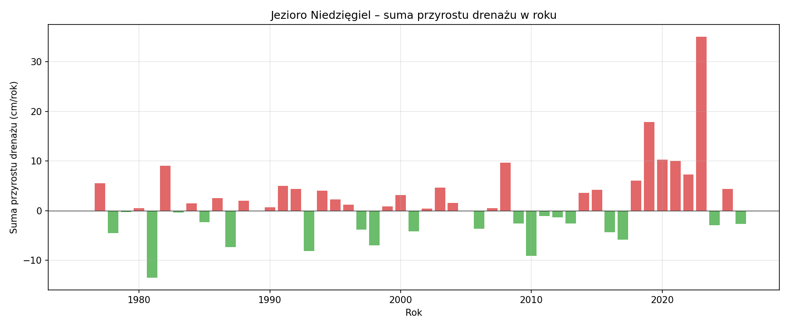
Suma przyrostu drenażu wg roku
Tabela: suma przyrostu dla każdego roku (cm/rok), bez wierszy miesięcznych.
| Rok | Suma przyrostu (cm/rok) |
|---|---|
| 1976 | -0.1 |
| 1977 | +5.5 |
| 1978 | -4.5 |
| 1979 | -0.3 |
| 1980 | +0.5 |
| 1981 | -13.5 |
| 1982 | +9.1 |
| 1983 | -0.4 |
| 1984 | +1.5 |
| 1985 | -2.3 |
| 1986 | +2.5 |
| 1987 | -7.3 |
| 1988 | +2.0 |
| 1989 | -0.1 |
| 1990 | +0.7 |
| 1991 | +5.0 |
| 1992 | +4.4 |
| 1993 | -8.1 |
| 1994 | +4.0 |
| 1995 | +2.3 |
| 1996 | +1.2 |
| 1997 | -3.8 |
| 1998 | -7.0 |
| 1999 | +0.9 |
| 2000 | +3.2 |
| 2001 | -4.2 |
| 2002 | +0.4 |
| 2003 | +4.7 |
| 2004 | +1.6 |
| 2005 | -0.0 |
| 2006 | -3.6 |
| 2007 | +0.5 |
| 2008 | +9.7 |
| 2009 | -2.6 |
| 2010 | -9.1 |
| 2011 | -1.1 |
| 2012 | -1.3 |
| 2013 | -2.6 |
| 2014 | +3.6 |
| 2015 | +4.2 |
| 2016 | -4.3 |
| 2017 | -5.8 |
| 2018 | +6.1 |
| 2019 | +17.9 |
| 2020 | +10.3 |
| 2021 | +10.0 |
| 2022 | +7.3 |
| 2023 | +35.1 |
| 2024 | -2.9 |
| 2025 | +4.4 |
| 2026 | -2.7 |
Zanik drenażu — Jezioro Niedzięgiel
- Rozbieżność = wysokość rzeczywista − wysokość w scenariuszu modelowym. Ujemna = jezioro poniżej scenariusza.
- Przy zaniku dodatkowego drenażu szacuje się lata do zamknięcia luki (szacunek teoretyczny).
- Projekcja: wznios wód gruntowych (cm/rok), start odbudowy od 2/2026, maks. do 2070.
Wyniki
- Średnia rozbieżność (ostatnie 12 miesięcy): 846.3 cm
- Trend rozbieżności: 18.32 cm/rok
- Szacunek odbudowy (scenariusz A): —
- Szacunek odbudowy (scenariusz B): —
Wykres projekcji odbudowy
Na wykresie: historia poziomu rzeczywistego oraz scenariusze modelowe (drenażowy i naturalny); projekcja odbudowy do zrównania z modelem drenażowym i z modelem naturalnym (porównanie obu wariantów).

Raport: Jezioro Ostrowskie
Raport ewaluacji na następne 12 miesięcy dla Jezioro Ostrowskie.
Poziom wody: rzeczywisty pomiar i model
Niebieska: poziom z data/ostrowskie/data.csv. Pomarańczowa przerywana: model po zmianie reżimu (trening do daty optymalnej po drenażu). Zielona kropkowana: model naturalny (trening do końca roku przed pojawieniem się drenażu).
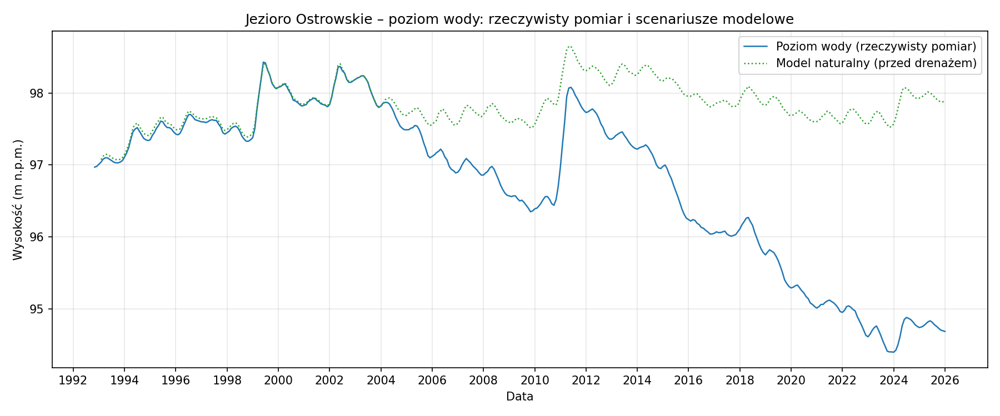
Prognoza 12 mies.
Dla każdego wariantu (temperatura: zimny/normalny/ciepły × opad: suchy/normalny/wilgotny) opad i temperatura z percentyli historycznych w data/ostrowskie/data.csv. Symulacja: 12 miesięcy do końca stycznia 2027 (stan na koniec stycznia 2026 to pomiar rzeczywisty). Wykresy i tabele: oba modele (drenażowy i naturalny – sprzed drenażu) na wspólnych wykresach i w jednej tabeli na wariant.
Szansa realizacji (na podstawie zgodności z ostatnimi 12 miesiącami pomiarowymi – średni opad i temperatura):
| Wariant | Szansa (%) | Poziom koniec – drenaż (m) | Poziom koniec – natural (m) |
|---|---|---|---|
| zimny, suchy | 11.3 | 94.505 | 94.451 |
| zimny, normalny | 14.2 | 94.552 | 94.765 |
| zimny, wilgotny | 7.1 | 94.6 | 95.206 |
| normalny, suchy | 11.7 | 94.454 | 94.396 |
| normalny, normalny | 15.2 | 94.493 | 94.589 |
| normalny, wilgotny | 7.2 | 94.544 | 94.953 |
| ciepły, suchy | 11.5 | 94.41 | 94.357 |
| ciepły, normalny | 14.5 | 94.441 | 94.568 |
| ciepły, wilgotny | 7.2 | 94.513 | 94.839 |
Najbardziej prawdopodobny poziom na koniec stycznia 2027 (średnia ważona zmian miesięcznych według szans realizacji wszystkich wariantów). W stosunku do stanu na koniec stycznia 2026 (94.6849 m n.p.m.): - Model drenażowy: 94.494 m n.p.m. – ubędzie 0.191 m (-19.1 cm) - Model naturalny (sprzed drenażu): 94.634 m n.p.m. – ubędzie 0.051 m (-5.1 cm)
najbardziej prawdopodobny
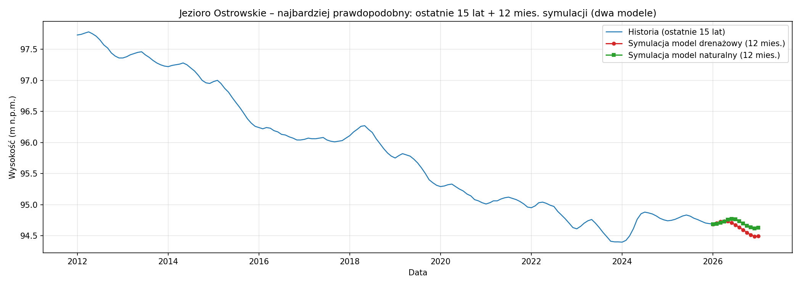
| Data | Opad (mm) | Temp. (°C) | Zmiana drenaż (cm) | Poziom drenaż (m) | Zmiana natural (cm) | Poziom natural (m) |
|---|---|---|---|---|---|---|
| 2026-02 | 34.0 | 1.2 | +2.0 cm | 94.705 | +0.8 cm | 94.692 |
| 2026-03 | 33.4 | 4.2 | +1.9 cm | 94.724 | +1.8 cm | 94.71 |
| 2026-04 | 25.1 | 9.3 | +1.1 cm | 94.735 | +2.1 cm | 94.731 |
| 2026-05 | 46.0 | 13.9 | -0.5 cm | 94.731 | +2.9 cm | 94.76 |
| 2026-06 | 50.1 | 17.7 | -2.4 cm | 94.706 | +1.2 cm | 94.772 |
| 2026-07 | 69.9 | 19.7 | -3.5 cm | 94.672 | -0.7 cm | 94.766 |
| 2026-08 | 53.6 | 19.2 | -3.8 cm | 94.634 | -3.0 cm | 94.736 |
| 2026-09 | 40.3 | 14.8 | -4.1 cm | 94.593 | -3.8 cm | 94.698 |
| 2026-10 | 31.5 | 9.8 | -4.3 cm | 94.55 | -3.4 cm | 94.664 |
| 2026-11 | 34.6 | 4.7 | -3.6 cm | 94.513 | -2.6 cm | 94.638 |
| 2026-12 | 34.9 | 1.4 | -2.5 cm | 94.488 | -1.6 cm | 94.622 |
| 2027-01 | 38.4 | 0.0 | +0.6 cm | 94.494 | +1.2 cm | 94.634 |
- Średnia ważona wszystkich wariantów (bez własnej szansy realizacji).
- Średnia temperatura roczna (prognoza): 9.7 °C
- Suma opadu (prognoza): 491.7 mm
- Różnica poziomu wody (drenaż) (koniec − start): -0.191 m (-19.1 cm)
- Poziom na koniec stycznia 2027 (drenaż): 94.494 m n.p.m.
- Różnica poziomu wody (natural) (koniec − start): -0.051 m (-5.1 cm)
- Poziom na koniec stycznia 2027 (natural): 94.634 m n.p.m.
zimny, suchy
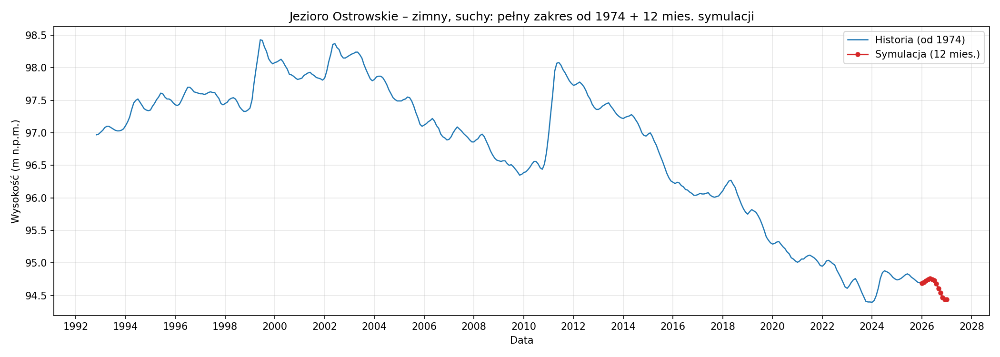
| Data | Opad (mm) | Temp. (°C) | Zmiana drenaż (cm) | Poziom drenaż (m) | Zmiana natural (cm) | Poziom natural (m) |
|---|---|---|---|---|---|---|
| 2026-02 | 25.8 | -1.0 | +2.2 cm | 94.707 | +0.6 cm | 94.691 |
| 2026-03 | 22.8 | 3.0 | +2.1 cm | 94.728 | +1.0 cm | 94.701 |
| 2026-04 | 15.0 | 8.4 | +0.9 cm | 94.737 | +1.2 cm | 94.713 |
| 2026-05 | 34.0 | 12.8 | -0.6 cm | 94.731 | +0.4 cm | 94.716 |
| 2026-06 | 33.6 | 16.5 | -2.5 cm | 94.706 | -1.4 cm | 94.703 |
| 2026-07 | 53.9 | 18.8 | -3.3 cm | 94.674 | -3.1 cm | 94.672 |
| 2026-08 | 35.5 | 18.3 | -3.6 cm | 94.638 | -4.7 cm | 94.624 |
| 2026-09 | 22.7 | 13.7 | -4.0 cm | 94.598 | -4.5 cm | 94.579 |
| 2026-10 | 17.6 | 8.3 | -4.1 cm | 94.557 | -4.4 cm | 94.535 |
| 2026-11 | 21.8 | 3.6 | -3.5 cm | 94.522 | -4.6 cm | 94.489 |
| 2026-12 | 25.6 | -0.2 | -2.3 cm | 94.498 | -2.9 cm | 94.46 |
| 2027-01 | 28.6 | -1.9 | +0.6 cm | 94.505 | -0.9 cm | 94.451 |
- Szansa realizacji: 11.3 %
- Średnia temperatura roczna (prognoza): 8.4 °C
- Suma opadu (prognoza): 336.9 mm
- Różnica poziomu wody (drenaż) (koniec − start): -0.180 m (-18.0 cm)
- Poziom na koniec stycznia 2027 (drenaż): 94.505 m n.p.m.
- Różnica poziomu wody (natural) (koniec − start): -0.234 m (-23.4 cm)
- Poziom na koniec stycznia 2027 (natural): 94.451 m n.p.m.
zimny, normalny
| Data | Opad (mm) | Temp. (°C) | Zmiana drenaż (cm) | Poziom drenaż (m) | Zmiana natural (cm) | Poziom natural (m) |
|---|---|---|---|---|---|---|
| 2026-02 | 34.4 | -1.0 | +2.1 cm | 94.706 | +0.7 cm | 94.692 |
| 2026-03 | 33.9 | 3.0 | +2.3 cm | 94.729 | +1.4 cm | 94.705 |
| 2026-04 | 27.7 | 8.4 | +1.8 cm | 94.747 | +2.7 cm | 94.732 |
| 2026-05 | 46.4 | 12.8 | -0.2 cm | 94.744 | +4.2 cm | 94.774 |
| 2026-06 | 53.1 | 16.5 | -2.0 cm | 94.724 | +4.6 cm | 94.821 |
| 2026-07 | 66.7 | 18.8 | -3.1 cm | 94.693 | +2.3 cm | 94.843 |
| 2026-08 | 56.2 | 18.3 | -3.2 cm | 94.661 | -2.3 cm | 94.82 |
| 2026-09 | 43.3 | 13.7 | -3.6 cm | 94.625 | -3.5 cm | 94.785 |
| 2026-10 | 33.9 | 8.3 | -3.8 cm | 94.587 | -3.3 cm | 94.753 |
| 2026-11 | 38.8 | 3.6 | -3.4 cm | 94.553 | -1.3 cm | 94.74 |
| 2026-12 | 36.7 | -0.2 | -1.6 cm | 94.536 | +0.0 cm | 94.74 |
| 2027-01 | 39.8 | -1.9 | +1.5 cm | 94.552 | +2.6 cm | 94.765 |
- Szansa realizacji: 14.2 %
- Średnia temperatura roczna (prognoza): 8.4 °C
- Suma opadu (prognoza): 510.9 mm
- Różnica poziomu wody (drenaż) (koniec − start): -0.133 m (-13.3 cm)
- Poziom na koniec stycznia 2027 (drenaż): 94.552 m n.p.m.
- Różnica poziomu wody (natural) (koniec − start): +0.080 m (+8.0 cm)
- Poziom na koniec stycznia 2027 (natural): 94.765 m n.p.m.
zimny, wilgotny
| Data | Opad (mm) | Temp. (°C) | Zmiana drenaż (cm) | Poziom drenaż (m) | Zmiana natural (cm) | Poziom natural (m) |
|---|---|---|---|---|---|---|
| 2026-02 | 46.4 | -1.0 | +1.9 cm | 94.704 | +1.5 cm | 94.7 |
| 2026-03 | 49.5 | 3.0 | +2.3 cm | 94.728 | +3.7 cm | 94.737 |
| 2026-04 | 36.1 | 8.4 | +2.3 cm | 94.751 | +6.5 cm | 94.803 |
| 2026-05 | 64.7 | 12.8 | +0.9 cm | 94.759 | +11.6 cm | 94.919 |
| 2026-06 | 70.6 | 16.5 | -1.7 cm | 94.743 | +11.6 cm | 95.035 |
| 2026-07 | 102.3 | 18.8 | -3.2 cm | 94.711 | +7.7 cm | 95.112 |
| 2026-08 | 77.4 | 18.3 | -3.1 cm | 94.68 | +5.4 cm | 95.165 |
| 2026-09 | 62.5 | 13.7 | -3.0 cm | 94.65 | +1.3 cm | 95.178 |
| 2026-10 | 49.0 | 8.3 | -3.2 cm | 94.618 | -1.4 cm | 95.164 |
| 2026-11 | 46.6 | 3.6 | -2.7 cm | 94.592 | -1.6 cm | 95.148 |
| 2026-12 | 46.4 | -0.2 | -1.2 cm | 94.579 | +0.9 cm | 95.157 |
| 2027-01 | 51.6 | -1.9 | +2.1 cm | 94.6 | +5.0 cm | 95.206 |
- Szansa realizacji: 7.1 %
- Średnia temperatura roczna (prognoza): 8.4 °C
- Suma opadu (prognoza): 703.1 mm
- Różnica poziomu wody (drenaż) (koniec − start): -0.085 m (-8.5 cm)
- Poziom na koniec stycznia 2027 (drenaż): 94.6 m n.p.m.
- Różnica poziomu wody (natural) (koniec − start): +0.521 m (+52.1 cm)
- Poziom na koniec stycznia 2027 (natural): 95.206 m n.p.m.
normalny, suchy
| Data | Opad (mm) | Temp. (°C) | Zmiana drenaż (cm) | Poziom drenaż (m) | Zmiana natural (cm) | Poziom natural (m) |
|---|---|---|---|---|---|---|
| 2026-02 | 25.8 | 0.8 | +2.0 cm | 94.705 | +0.5 cm | 94.69 |
| 2026-03 | 22.8 | 4.3 | +1.8 cm | 94.723 | +1.3 cm | 94.703 |
| 2026-04 | 15.0 | 9.1 | +0.4 cm | 94.727 | +0.6 cm | 94.709 |
| 2026-05 | 34.0 | 13.7 | -1.0 cm | 94.717 | -0.2 cm | 94.706 |
| 2026-06 | 33.6 | 17.8 | -2.9 cm | 94.688 | -2.3 cm | 94.683 |
| 2026-07 | 53.9 | 19.8 | -3.7 cm | 94.651 | -3.4 cm | 94.649 |
| 2026-08 | 35.5 | 19.3 | -4.2 cm | 94.609 | -5.4 cm | 94.595 |
| 2026-09 | 22.7 | 14.7 | -4.5 cm | 94.564 | -5.0 cm | 94.546 |
| 2026-10 | 17.6 | 9.8 | -4.4 cm | 94.521 | -4.7 cm | 94.499 |
| 2026-11 | 21.8 | 4.8 | -3.8 cm | 94.483 | -4.8 cm | 94.451 |
| 2026-12 | 25.6 | 1.8 | -2.8 cm | 94.455 | -3.9 cm | 94.412 |
| 2027-01 | 28.6 | 0.1 | -0.1 cm | 94.454 | -1.6 cm | 94.396 |
- Szansa realizacji: 11.7 %
- Średnia temperatura roczna (prognoza): 9.7 °C
- Suma opadu (prognoza): 336.9 mm
- Różnica poziomu wody (drenaż) (koniec − start): -0.231 m (-23.1 cm)
- Poziom na koniec stycznia 2027 (drenaż): 94.454 m n.p.m.
- Różnica poziomu wody (natural) (koniec − start): -0.289 m (-28.9 cm)
- Poziom na koniec stycznia 2027 (natural): 94.396 m n.p.m.
normalny, normalny
| Data | Opad (mm) | Temp. (°C) | Zmiana drenaż (cm) | Poziom drenaż (m) | Zmiana natural (cm) | Poziom natural (m) |
|---|---|---|---|---|---|---|
| 2026-02 | 34.4 | 0.8 | +1.9 cm | 94.704 | +0.6 cm | 94.691 |
| 2026-03 | 33.9 | 4.3 | +2.0 cm | 94.724 | +1.6 cm | 94.707 |
| 2026-04 | 27.7 | 9.1 | +1.2 cm | 94.736 | +1.8 cm | 94.724 |
| 2026-05 | 46.4 | 13.7 | -0.7 cm | 94.729 | +1.5 cm | 94.739 |
| 2026-06 | 53.1 | 17.8 | -2.3 cm | 94.706 | -0.5 cm | 94.734 |
| 2026-07 | 66.7 | 19.8 | -3.5 cm | 94.671 | -2.5 cm | 94.71 |
| 2026-08 | 56.2 | 19.3 | -3.7 cm | 94.634 | -3.6 cm | 94.674 |
| 2026-09 | 43.3 | 14.7 | -4.3 cm | 94.59 | -4.8 cm | 94.626 |
| 2026-10 | 33.9 | 9.8 | -4.1 cm | 94.549 | -3.2 cm | 94.594 |
| 2026-11 | 38.8 | 4.8 | -3.6 cm | 94.513 | -1.6 cm | 94.579 |
| 2026-12 | 36.7 | 1.8 | -2.8 cm | 94.486 | -0.9 cm | 94.569 |
| 2027-01 | 39.8 | 0.1 | +0.8 cm | 94.493 | +2.0 cm | 94.589 |
- Szansa realizacji: 15.2 %
- Średnia temperatura roczna (prognoza): 9.7 °C
- Suma opadu (prognoza): 510.9 mm
- Różnica poziomu wody (drenaż) (koniec − start): -0.192 m (-19.2 cm)
- Poziom na koniec stycznia 2027 (drenaż): 94.493 m n.p.m.
- Różnica poziomu wody (natural) (koniec − start): -0.096 m (-9.6 cm)
- Poziom na koniec stycznia 2027 (natural): 94.589 m n.p.m.
normalny, wilgotny
| Data | Opad (mm) | Temp. (°C) | Zmiana drenaż (cm) | Poziom drenaż (m) | Zmiana natural (cm) | Poziom natural (m) |
|---|---|---|---|---|---|---|
| 2026-02 | 46.4 | 0.8 | +1.7 cm | 94.702 | +1.5 cm | 94.7 |
| 2026-03 | 49.5 | 4.3 | +2.0 cm | 94.722 | +3.9 cm | 94.739 |
| 2026-04 | 36.1 | 9.1 | +1.9 cm | 94.741 | +5.2 cm | 94.791 |
| 2026-05 | 64.7 | 13.7 | +0.6 cm | 94.747 | +7.4 cm | 94.865 |
| 2026-06 | 70.6 | 17.8 | -2.1 cm | 94.726 | +6.5 cm | 94.931 |
| 2026-07 | 102.3 | 19.8 | -3.6 cm | 94.69 | +5.6 cm | 94.987 |
| 2026-08 | 77.4 | 19.3 | -3.6 cm | 94.654 | -0.7 cm | 94.98 |
| 2026-09 | 62.5 | 14.7 | -3.7 cm | 94.617 | -2.8 cm | 94.952 |
| 2026-10 | 49.0 | 9.8 | -3.7 cm | 94.58 | -2.6 cm | 94.927 |
| 2026-11 | 46.6 | 4.8 | -3.0 cm | 94.549 | -1.0 cm | 94.916 |
| 2026-12 | 46.4 | 1.8 | -1.9 cm | 94.531 | -0.1 cm | 94.915 |
| 2027-01 | 51.6 | 0.1 | +1.3 cm | 94.544 | +3.8 cm | 94.953 |
- Szansa realizacji: 7.2 %
- Średnia temperatura roczna (prognoza): 9.7 °C
- Suma opadu (prognoza): 703.1 mm
- Różnica poziomu wody (drenaż) (koniec − start): -0.141 m (-14.1 cm)
- Poziom na koniec stycznia 2027 (drenaż): 94.544 m n.p.m.
- Różnica poziomu wody (natural) (koniec − start): +0.268 m (+26.8 cm)
- Poziom na koniec stycznia 2027 (natural): 94.953 m n.p.m.
ciepły, suchy
| Data | Opad (mm) | Temp. (°C) | Zmiana drenaż (cm) | Poziom drenaż (m) | Zmiana natural (cm) | Poziom natural (m) |
|---|---|---|---|---|---|---|
| 2026-02 | 25.8 | 3.8 | +2.0 cm | 94.705 | +0.5 cm | 94.69 |
| 2026-03 | 22.8 | 5.4 | +1.5 cm | 94.72 | +0.4 cm | 94.694 |
| 2026-04 | 15.0 | 10.4 | +0.1 cm | 94.72 | -0.4 cm | 94.689 |
| 2026-05 | 34.0 | 15.1 | -1.2 cm | 94.708 | -0.5 cm | 94.684 |
| 2026-06 | 33.6 | 18.9 | -3.1 cm | 94.678 | -2.9 cm | 94.655 |
| 2026-07 | 53.9 | 20.4 | -3.6 cm | 94.641 | -3.6 cm | 94.619 |
| 2026-08 | 35.5 | 20.0 | -4.4 cm | 94.597 | -5.5 cm | 94.563 |
| 2026-09 | 22.7 | 16.0 | -4.6 cm | 94.551 | -5.1 cm | 94.513 |
| 2026-10 | 17.6 | 11.2 | -5.4 cm | 94.497 | -4.7 cm | 94.465 |
| 2026-11 | 21.8 | 5.7 | -4.5 cm | 94.452 | -4.9 cm | 94.417 |
| 2026-12 | 25.6 | 2.6 | -3.4 cm | 94.418 | -4.2 cm | 94.374 |
| 2027-01 | 28.6 | 1.9 | -0.8 cm | 94.41 | -1.8 cm | 94.357 |
- Szansa realizacji: 11.5 %
- Średnia temperatura roczna (prognoza): 10.9 °C
- Suma opadu (prognoza): 336.9 mm
- Różnica poziomu wody (drenaż) (koniec − start): -0.275 m (-27.5 cm)
- Poziom na koniec stycznia 2027 (drenaż): 94.41 m n.p.m.
- Różnica poziomu wody (natural) (koniec − start): -0.328 m (-32.8 cm)
- Poziom na koniec stycznia 2027 (natural): 94.357 m n.p.m.
ciepły, normalny
| Data | Opad (mm) | Temp. (°C) | Zmiana drenaż (cm) | Poziom drenaż (m) | Zmiana natural (cm) | Poziom natural (m) |
|---|---|---|---|---|---|---|
| 2026-02 | 34.4 | 3.8 | +1.9 cm | 94.704 | +0.5 cm | 94.69 |
| 2026-03 | 33.9 | 5.4 | +1.8 cm | 94.721 | +1.4 cm | 94.704 |
| 2026-04 | 27.7 | 10.4 | +0.8 cm | 94.73 | +1.3 cm | 94.717 |
| 2026-05 | 46.4 | 15.1 | -0.9 cm | 94.721 | +1.4 cm | 94.73 |
| 2026-06 | 53.1 | 18.9 | -2.6 cm | 94.695 | -1.6 cm | 94.714 |
| 2026-07 | 66.7 | 20.4 | -3.6 cm | 94.659 | -3.0 cm | 94.684 |
| 2026-08 | 56.2 | 20.0 | -4.2 cm | 94.617 | -3.2 cm | 94.652 |
| 2026-09 | 43.3 | 16.0 | -4.6 cm | 94.571 | -3.7 cm | 94.615 |
| 2026-10 | 33.9 | 11.2 | -5.4 cm | 94.517 | -3.0 cm | 94.585 |
| 2026-11 | 38.8 | 5.7 | -4.3 cm | 94.474 | -1.7 cm | 94.567 |
| 2026-12 | 36.7 | 2.6 | -3.3 cm | 94.441 | -1.4 cm | 94.553 |
| 2027-01 | 39.8 | 1.9 | +0.0 cm | 94.441 | +1.5 cm | 94.568 |
- Szansa realizacji: 14.5 %
- Średnia temperatura roczna (prognoza): 10.9 °C
- Suma opadu (prognoza): 510.9 mm
- Różnica poziomu wody (drenaż) (koniec − start): -0.244 m (-24.4 cm)
- Poziom na koniec stycznia 2027 (drenaż): 94.441 m n.p.m.
- Różnica poziomu wody (natural) (koniec − start): -0.117 m (-11.7 cm)
- Poziom na koniec stycznia 2027 (natural): 94.568 m n.p.m.
ciepły, wilgotny
| Data | Opad (mm) | Temp. (°C) | Zmiana drenaż (cm) | Poziom drenaż (m) | Zmiana natural (cm) | Poziom natural (m) |
|---|---|---|---|---|---|---|
| 2026-02 | 46.4 | 3.8 | +1.7 cm | 94.702 | +1.4 cm | 94.699 |
| 2026-03 | 49.5 | 5.4 | +1.8 cm | 94.72 | +3.4 cm | 94.733 |
| 2026-04 | 36.1 | 10.4 | +1.6 cm | 94.737 | +4.3 cm | 94.776 |
| 2026-05 | 64.7 | 15.1 | +0.3 cm | 94.74 | +7.3 cm | 94.85 |
| 2026-06 | 70.6 | 18.9 | -2.5 cm | 94.715 | +4.9 cm | 94.899 |
| 2026-07 | 102.3 | 20.4 | -3.6 cm | 94.679 | +0.9 cm | 94.908 |
| 2026-08 | 77.4 | 20.0 | -3.8 cm | 94.641 | -2.6 cm | 94.881 |
| 2026-09 | 62.5 | 16.0 | -3.9 cm | 94.603 | -3.1 cm | 94.85 |
| 2026-10 | 49.0 | 11.2 | -4.0 cm | 94.562 | -2.4 cm | 94.827 |
| 2026-11 | 46.6 | 5.7 | -3.2 cm | 94.53 | -1.4 cm | 94.813 |
| 2026-12 | 46.4 | 2.6 | -2.2 cm | 94.508 | -0.6 cm | 94.807 |
| 2027-01 | 51.6 | 1.9 | +0.5 cm | 94.513 | +3.2 cm | 94.839 |
- Szansa realizacji: 7.2 %
- Średnia temperatura roczna (prognoza): 10.9 °C
- Suma opadu (prognoza): 703.1 mm
- Różnica poziomu wody (drenaż) (koniec − start): -0.172 m (-17.2 cm)
- Poziom na koniec stycznia 2027 (drenaż): 94.513 m n.p.m.
- Różnica poziomu wody (natural) (koniec − start): +0.154 m (+15.4 cm)
- Poziom na koniec stycznia 2027 (natural): 94.839 m n.p.m.
Wygenerowano: 2026-02-15 15:45
Szanse na odbudowę – Jezioro Ostrowskie
Opisowa ocena szans na odbudowę poziomu wody w perspektywie kolejnych 12 miesięcy, na podstawie prognozy z symulacji wariantów pogodowych (opad i temperatura z percentyli historycznych) oraz szacowanych szans realizacji każdego wariantu (zgodność z ostatnimi 12 miesiącami pomiarowymi).
Stan odniesienia: koniec stycznia 2026 – poziom 94.685 m n.p.m.
Porównanie prognoz (najbardziej prawdopodobny scenariusz, średnia ważona):
| Model | Poziom koniec (m n.p.m.) | Zmiana (cm) |
|---|---|---|
| Drenażowy (po zmianie reżimu) | 94.494 | -19.1 |
| Naturalny (sprzed drenażu) | 94.634 | -5.1 |
Prognoza na koniec stycznia 2027 (model drenażowy): poziom 94.494 m n.p.m., czyli spadek o 19.1 cm w stosunku do stanu odniesienia.
W zależności od warunków pogodowych w nadchodzącym roku prognozowana zmiana poziomu w 12 miesięcy (model drenażowy) mieści się w zakresie od -27.5 cm do -8.5 cm. Najwyższą szansę realizacji (15.2%) ma jeden z wariantów pogodowych; szczegóły wszystkich wariantów i szans – w raporcie Prognoza 12 mies..
Szanse na odbudowę w perspektywie roku (model drenażowy): prognoza modelu drenażowego wskazuje na spadek poziomu w ciągu roku; szanse na odbudowę w perspektywie roku są niskie – istotna odbudowa wymagałaby zatrzymania drenażu i korzystnych warunków.
Szanse na odbudowę w perspektywie roku (model naturalny): prognoza modelu naturalnego wskazuje na niewielki spadek poziomu w ciągu roku.
Szacunki długoterminowej odbudowy (lata do zamknięcia luki po ewentualnym zaniku drenażu) – patrz Zanik drenażu.
Wygenerowano: 2026-02-15 15:45
Raport podsumowujący: prognoza zmiany poziomu Jezioro Ostrowskie
1. Cel projektu
Projekt ma na celu: - zbudowanie modelu uczenia maszynowego, który na podstawie opadu i temperatury (oraz sezonowości i historii) prognozuje miesięczną zmianę poziomu Jezioro Ostrowskie; - ewaluację prognoz względem rzeczywistych pomiarów.
2. Dane
- Źródło: plik
data/ostrowskie/data.csv. - Zakres: dane miesięczne (pierwszy dzień miesiąca).
- Kolumny: Data, Poziom (m), Zmiana (m), Opad (mm), Temperatura (°C).
- Target: Zmiana – miesięczna zmiana poziomu.
- Wiersze z błędami (#ERROR!) lub brakami są pomijane. Po usunięciu lagów (3 mies.) do analizy wchodzi 396 miesięcy.
3. Model
| Element | Opis |
|---|---|
| Algorytm | Gradient Boosting (regresja), scikit-learn |
| Cechy wejściowe | Miesiąc (sin/cos), Opad, Temperatura, opad i temperatura z opóźnieniem 1–2 mies., 3 opóźnienia zmiany poziomu, 3 opóźnienia poziomu |
| Trening | Podział czasowy: trening do 2023-12, test od 2024 do 2023 |
| Wynik | Prognoza zmiany poziomu na dany miesiąc (cm) |
Model nie używa bieżącego poziomu – tylko opad, temperatura, sezon i historia.
4. Wyniki ewaluacji
- MAE (średni błąd bezwzględny): nan cm
- RMSE: nan cm
- Liczba miesięcy: 396
4.1. Wysokość wody: rzeczywista vs scenariusz modelowy
Scenariusz modelowy: start od poziomu na początek pierwszego miesiąca; w każdym miesiącu dodawana jest prognozowana zmiana (kumulatywnie).
4.2. Rozbieżność w czasie
Rozbieżność = wysokość rzeczywista − wysokość w scenariuszu modelowym. Wartość dodatnia: jezioro wyżej niż przewidywał model; ujemna: niżej.
4.3. Zmiana poziomu: faktyczna vs prognoza
Punkty przy linii y = x oznaczają dobrą zgodność miesięcznych zmian.
4.4. Błąd miesięczny
Błąd = zmiana faktyczna − zmiana prognozowana w każdym miesiącu.
5. Podsumowanie
- Model prognozuje miesięczną zmianę poziomu Jezioro Ostrowskie z MAE ~nan cm.
- Scenariusz kumulatywny (wysokość z prognozowanej zmiany) jest porównywany z rzeczywistą wysokością; rozbieżność i błąd miesięczny opisują jakość prognoz.
Szczegóły techniczne: model.md, podsumowanie_ewaluacji.md.
Wygenerowano: 2026-02-15 15:38
Podsumowanie ewaluacji prognozy zmiany poziomu Jezioro Ostrowskie
Dla każdego miesiąca model otrzymuje opad i temperaturę (oraz cechy opóźnione z historii), wylicza prognozowaną zmianę poziomu Jezioro Ostrowskie i jest ona porównana z faktyczną zmianą.
Metryki
- MAE (średni błąd bezwzględny): nan cm
- RMSE (pierwiastek błędu średniokwadratowego): nan cm
- Liczba miesięcy (zbior testowy): 0
- Liczba miesięcy (tabela / wykres): 396
Porównanie miesięczne
| Data | Opad (mm) | Temperatura (°C) | Zmiana faktyczna (cm) | Zmiana prognoza (cm) | Błąd (cm) | Wysokość rzeczywista (m) | Wysokość scenariusz modelowy (m) | Rozbieżność (cm) |
|---|---|---|---|---|---|---|---|---|
| 1993-02 | 31.5 | -0.8 | +3.0 | +2.1 | +0.9 | 97.07 | 97.061 | +0.9 |
| 1993-03 | 33.2 | 1.8 | +4.0 | +2.9 | +1.1 | 97.12 | 97.091 | +2.9 |
| 1993-04 | 12.7 | 9.2 | +2.0 | +3.4 | -1.4 | 97.12 | 97.124 | -0.4 |
| 1993-05 | 25.7 | 16.4 | +0.0 | +0.3 | -0.3 | 97.1 | 97.127 | -2.7 |
| 1993-06 | 53.1 | 15.6 | -2.0 | -2.8 | +0.8 | 97.06 | 97.1 | -4.0 |
| 1993-07 | 102.3 | 16.3 | -2.0 | -3.4 | +1.4 | 97.04 | 97.066 | -2.6 |
| 1993-08 | 42.4 | 16.3 | -2.0 | -3.7 | +1.7 | 97.02 | 97.029 | -0.9 |
| 1993-09 | 79.8 | 12.1 | -1.0 | -3.1 | +2.1 | 97.02 | 96.998 | +2.2 |
| 1993-10 | 16.7 | 8.0 | +0.0 | -2.7 | +2.7 | 97.03 | 96.971 | +5.9 |
| 1993-11 | 40.7 | -0.7 | +1.0 | -1.8 | +2.9 | 97.05 | 96.953 | +9.7 |
| 1993-12 | 91.0 | 2.2 | +2.0 | -0.4 | +2.4 | 97.08 | 96.949 | +13.1 |
| 1994-01 | 39.5 | 2.4 | +5.0 | +1.6 | +3.4 | 97.16 | 96.966 | +19.4 |
| 1994-02 | 25.8 | -2.2 | +6.0 | +5.3 | +0.7 | 97.23 | 97.018 | +21.2 |
| 1994-03 | 58.7 | 4.4 | +7.0 | +6.6 | +0.4 | 97.31 | 97.085 | +22.5 |
| 1994-04 | 35.0 | 9.0 | +12.0 | +7.8 | +4.2 | 97.48 | 97.163 | +31.7 |
| 1994-05 | 64.7 | 12.6 | +10.0 | +8.6 | +1.4 | 97.56 | 97.249 | +31.1 |
| 1994-06 | 31.8 | 15.8 | +4.0 | +4.8 | -0.8 | 97.54 | 97.297 | +24.3 |
| 1994-07 | 50.4 | 22.1 | +2.0 | +1.5 | +0.5 | 97.54 | 97.312 | +22.8 |
| 1994-08 | 40.4 | 18.8 | -5.0 | -2.8 | -2.2 | 97.42 | 97.284 | +13.6 |
| 1994-09 | 91.8 | 14.3 | -5.0 | -4.9 | -0.1 | 97.37 | 97.235 | +13.5 |
| 1994-10 | 15.2 | 6.6 | -5.0 | -5.6 | +0.6 | 97.32 | 97.179 | +14.1 |
| 1994-11 | 23.4 | 4.3 | -2.0 | -3.8 | +1.8 | 97.33 | 97.141 | +18.9 |
| 1994-12 | 43.4 | 1.8 | -1.0 | -1.7 | +0.7 | 97.33 | 97.123 | +20.7 |
| 1995-01 | 31.4 | -0.6 | +1.0 | +1.0 | +0.0 | 97.36 | 97.133 | +22.7 |
| 1995-02 | 36.5 | 3.5 | +6.0 | +2.2 | +3.8 | 97.47 | 97.155 | +31.5 |
| 1995-03 | 39.8 | 2.8 | +4.0 | +4.9 | -0.9 | 97.49 | 97.205 | +28.5 |
| 1995-04 | 24.8 | 8.2 | +6.0 | +5.3 | +0.7 | 97.57 | 97.258 | +31.2 |
| 1995-05 | 34.0 | 12.8 | +4.0 | +5.0 | -0.9 | 97.59 | 97.308 | +28.2 |
| 1995-06 | 70.3 | 16.3 | +6.0 | +0.6 | +5.4 | 97.67 | 97.314 | +35.6 |
| 1995-07 | 56.9 | 20.6 | -1.0 | -0.8 | -0.2 | 97.59 | 97.306 | +28.4 |
| 1995-08 | 63.8 | 19.0 | -5.0 | -2.3 | -2.7 | 97.5 | 97.282 | +21.8 |
| 1995-09 | 119.8 | 13.4 | -3.0 | -4.7 | +1.7 | 97.49 | 97.236 | +25.4 |
| 1995-10 | 13.6 | 10.5 | +0.0 | -4.2 | +4.2 | 97.52 | 97.194 | +32.6 |
| 1995-11 | 17.0 | 1.1 | -2.0 | -2.2 | +0.2 | 97.48 | 97.172 | +30.8 |
| 1995-12 | 18.8 | -4.9 | -4.0 | -1.5 | -2.5 | 97.42 | 97.158 | +26.2 |
| 1996-01 | 8.8 | -5.7 | -3.0 | +1.3 | -4.3 | 97.4 | 97.17 | +23.0 |
| 1996-02 | 35.2 | -5.6 | -1.0 | +2.4 | -3.4 | 97.41 | 97.194 | +21.6 |
| 1996-03 | 8.5 | -0.9 | +2.0 | +3.4 | -1.4 | 97.46 | 97.228 | +23.2 |
| 1996-04 | 9.8 | 7.6 | +6.0 | +2.5 | +3.5 | 97.56 | 97.254 | +30.6 |
| 1996-05 | 92.2 | 13.5 | +7.0 | +3.3 | +3.7 | 97.64 | 97.286 | +35.4 |
| 1996-06 | 25.8 | 16.6 | +7.0 | +2.1 | +4.9 | 97.71 | 97.308 | +40.2 |
| 1996-07 | 106.9 | 15.9 | +6.0 | +1.5 | +4.5 | 97.76 | 97.323 | +43.7 |
| 1996-08 | 62.2 | 18.4 | +0.0 | +2.0 | -2.0 | 97.7 | 97.343 | +35.7 |
| 1996-09 | 62.5 | 10.9 | -3.0 | -0.9 | -2.1 | 97.64 | 97.334 | +30.6 |
| 1996-10 | 26.1 | 9.5 | -4.0 | -3.1 | -0.9 | 97.59 | 97.302 | +28.8 |
| 1996-11 | 15.1 | 5.4 | -1.0 | -3.3 | +2.3 | 97.61 | 97.269 | +34.1 |
| 1996-12 | 7.6 | -4.5 | -1.0 | -1.6 | +0.6 | 97.6 | 97.253 | +34.7 |
| 1997-01 | 0.8 | -3.2 | -1.0 | +1.1 | -2.1 | 97.59 | 97.263 | +32.7 |
| 1997-02 | 49.6 | 2.9 | +0.0 | +2.3 | -2.3 | 97.6 | 97.286 | +31.4 |
| 1997-03 | 24.4 | 4.1 | -1.0 | +2.1 | -3.1 | 97.58 | 97.307 | +27.3 |
| 1997-04 | 15.8 | 5.5 | +1.0 | +1.5 | -0.5 | 97.61 | 97.323 | +28.7 |
| 1997-05 | 49.8 | 12.6 | +2.0 | -0.0 | +2.0 | 97.64 | 97.322 | +31.8 |
| 1997-06 | 64.0 | 16.5 | +1.0 | -0.5 | +1.5 | 97.64 | 97.317 | +32.3 |
| 1997-07 | 115.5 | 17.8 | -1.0 | -2.9 | +1.9 | 97.61 | 97.289 | +32.1 |
| 1997-08 | 33.8 | 19.6 | +0.0 | -3.7 | +3.7 | 97.62 | 97.252 | +36.8 |
| 1997-09 | 22.7 | 13.5 | -5.0 | -2.9 | -2.1 | 97.52 | 97.222 | +29.8 |
| 1997-10 | 44.1 | 7.4 | -4.0 | -5.0 | +0.9 | 97.49 | 97.173 | +31.7 |
| 1997-11 | 24.4 | 3.0 | -8.0 | -3.6 | -4.4 | 97.37 | 97.137 | +23.3 |
| 1997-12 | 35.7 | 1.6 | -2.0 | -2.4 | +0.4 | 97.41 | 97.113 | +29.7 |
| 1998-01 | 40.0 | 1.9 | +2.0 | +0.5 | +1.5 | 97.47 | 97.118 | +35.2 |
| 1998-02 | 16.8 | 4.6 | +2.0 | +1.9 | +0.1 | 97.49 | 97.137 | +35.3 |
| 1998-03 | 46.3 | 3.3 | +4.0 | +1.0 | +3.0 | 97.55 | 97.147 | +40.3 |
| 1998-04 | 36.5 | 10.4 | +2.0 | +2.1 | -0.1 | 97.55 | 97.168 | +38.2 |
| 1998-05 | 36.1 | 14.6 | +1.0 | +1.3 | -0.3 | 97.55 | 97.18 | +37.0 |
| 1998-06 | 35.5 | 17.1 | -2.0 | -2.6 | +0.6 | 97.5 | 97.155 | +34.5 |
| 1998-07 | 73.9 | 17.4 | -5.0 | -3.5 | -1.5 | 97.42 | 97.119 | +30.1 |
| 1998-08 | 68.6 | 16.7 | -7.0 | -4.7 | -2.3 | 97.33 | 97.072 | +25.8 |
| 1998-09 | 96.7 | 14.0 | -4.0 | -5.6 | +1.6 | 97.32 | 97.016 | +30.4 |
| 1998-10 | 68.1 | 8.5 | -3.0 | -4.8 | +1.8 | 97.3 | 96.968 | +33.2 |
| 1998-11 | 47.5 | 0.1 | +0.0 | -2.6 | +2.6 | 97.33 | 96.942 | +38.8 |
| 1998-12 | 41.6 | -0.2 | +2.0 | -0.4 | +2.4 | 97.37 | 96.938 | +43.2 |
| 1999-01 | 46.0 | 1.2 | +3.0 | +2.4 | +0.7 | 97.41 | 96.962 | +44.8 |
| 1999-02 | 52.8 | -0.5 | +13.0 | +2.3 | +10.7 | 97.64 | 96.985 | +65.5 |
| 1999-03 | 55.0 | 4.4 | +25.0 | +6.2 | +18.8 | 98.01 | 97.047 | +96.3 |
| 1999-04 | 83.6 | 9.5 | +23.0 | +9.7 | +13.3 | 98.22 | 97.145 | +107.5 |
| 1999-05 | 41.8 | 13.0 | +21.0 | +9.9 | +11.1 | 98.41 | 97.243 | +116.7 |
| 1999-06 | 58.0 | 16.2 | +23.0 | +5.2 | +17.8 | 98.66 | 97.296 | +136.4 |
| 1999-07 | 61.6 | 19.6 | -1.0 | +3.7 | -4.7 | 98.41 | 97.333 | +107.7 |
| 1999-08 | 14.0 | 17.8 | -10.0 | +0.5 | -10.5 | 98.22 | 97.338 | +88.2 |
| 1999-09 | 18.4 | 17.1 | -7.0 | -4.5 | -2.5 | 98.18 | 97.292 | +88.8 |
| 1999-10 | 43.8 | 9.0 | -11.0 | -6.3 | -4.7 | 98.03 | 97.229 | +80.1 |
| 1999-11 | 35.3 | 2.9 | -5.0 | -4.8 | -0.2 | 98.04 | 97.181 | +85.9 |
| 1999-12 | 46.7 | 1.7 | -3.0 | -3.0 | +0.0 | 98.03 | 97.15 | +88.0 |
| 2000-01 | 27.6 | -0.1 | +2.0 | +0.9 | +1.1 | 98.1 | 97.159 | +94.1 |
| 2000-02 | 34.4 | 3.2 | +1.0 | +2.1 | -1.1 | 98.1 | 97.181 | +91.9 |
| 2000-03 | 70.7 | 4.1 | +2.0 | +1.6 | +0.4 | 98.13 | 97.197 | +93.3 |
| 2000-04 | 21.8 | 12.1 | +2.0 | +1.4 | +0.6 | 98.15 | 97.211 | +93.9 |
| 2000-05 | 33.5 | 15.6 | -4.0 | +0.5 | -4.5 | 98.05 | 97.216 | +83.4 |
| 2000-06 | 30.1 | 17.3 | -6.0 | -4.0 | -2.0 | 97.97 | 97.176 | +79.4 |
| 2000-07 | 151.9 | 16.3 | -5.0 | -5.2 | +0.2 | 97.93 | 97.124 | +80.6 |
| 2000-08 | 69.7 | 18.2 | -8.0 | -5.8 | -2.2 | 97.82 | 97.065 | +75.5 |
| 2000-09 | 47.1 | 12.9 | -1.0 | -6.3 | +5.3 | 97.88 | 97.003 | +87.7 |
| 2000-10 | 15.7 | 11.8 | -2.0 | -4.2 | +2.2 | 97.85 | 96.961 | +88.9 |
| 2000-11 | 47.4 | 6.5 | -3.0 | -3.0 | +0.1 | 97.81 | 96.93 | +88.0 |
| 2000-12 | 48.1 | 2.2 | -2.0 | -2.1 | +0.1 | 97.8 | 96.909 | +89.1 |
| 2001-01 | 16.3 | -0.1 | +1.0 | +0.4 | +0.6 | 97.84 | 96.913 | +92.7 |
| 2001-02 | 26.9 | 0.7 | +1.0 | +2.1 | -1.1 | 97.85 | 96.934 | +91.6 |
| 2001-03 | 49.5 | 2.6 | +4.0 | +1.0 | +3.0 | 97.92 | 96.944 | +97.6 |
| 2001-04 | 36.1 | 8.0 | +2.0 | +2.5 | -0.5 | 97.92 | 96.969 | +95.1 |
| 2001-05 | 29.0 | 14.4 | +2.0 | +1.7 | +0.3 | 97.94 | 96.986 | +95.4 |
| 2001-06 | 49.9 | 15.1 | +1.0 | -1.3 | +2.3 | 97.94 | 96.973 | +96.7 |
| 2001-07 | 76.6 | 19.9 | -3.0 | -3.4 | +0.4 | 97.87 | 96.939 | +93.1 |
| 2001-08 | 28.3 | 19.8 | -2.0 | -4.5 | +2.5 | 97.86 | 96.895 | +96.5 |
| 2001-09 | 97.6 | 12.3 | -3.0 | -4.1 | +1.1 | 97.82 | 96.854 | +96.6 |
| 2001-10 | 20.9 | 3.0 | -1.0 | -3.3 | +2.3 | 97.83 | 96.821 | +100.9 |
| 2001-11 | 21.2 | -1.6 | -1.0 | -1.1 | +0.1 | 97.82 | 96.809 | +101.1 |
| 2001-12 | 54.0 | -0.3 | -2.0 | +0.8 | -2.8 | 97.79 | 96.817 | +97.3 |
| 2002-01 | 29.9 | 0.7 | +3.0 | +2.0 | +1.0 | 97.87 | 96.837 | +103.3 |
| 2002-02 | 67.2 | 4.0 | +11.0 | +2.1 | +8.9 | 98.06 | 96.857 | +120.3 |
| 2002-03 | 49.5 | 5.0 | +14.0 | +5.1 | +8.9 | 98.23 | 96.909 | +132.1 |
| 2002-04 | 15.0 | 8.8 | +12.0 | +9.3 | +2.7 | 98.33 | 97.002 | +132.8 |
| 2002-05 | 40.3 | 16.8 | +15.0 | +8.7 | +6.3 | 98.51 | 97.088 | +142.2 |
| 2002-06 | 47.3 | 18.0 | +1.0 | +4.8 | -3.8 | 98.38 | 97.137 | +124.3 |
| 2002-07 | 61.6 | 20.3 | -6.0 | -0.2 | -5.8 | 98.25 | 97.135 | +111.5 |
| 2002-08 | 49.9 | 21.5 | -3.0 | -4.5 | +1.5 | 98.25 | 97.09 | +116.0 |
| 2002-09 | 66.2 | 14.2 | -9.0 | -5.1 | -3.9 | 98.1 | 97.039 | +106.1 |
| 2002-10 | 82.7 | 7.7 | -4.0 | -5.5 | +1.5 | 98.11 | 96.984 | +112.6 |
| 2002-11 | 46.2 | 4.3 | +0.0 | -3.6 | +3.6 | 98.15 | 96.949 | +120.1 |
| 2002-12 | 7.3 | -3.6 | +2.0 | -0.2 | +2.2 | 98.19 | 96.947 | +124.3 |
| 2003-01 | 41.7 | -1.7 | +2.0 | +1.9 | +0.1 | 98.21 | 96.966 | +124.4 |
| 2003-02 | 5.5 | -3.5 | +2.0 | +3.2 | -1.2 | 98.23 | 96.998 | +123.2 |
| 2003-03 | 14.4 | 3.0 | +1.0 | +3.1 | -2.1 | 98.23 | 97.03 | +120.0 |
| 2003-04 | 12.7 | 8.2 | +2.0 | +1.7 | +0.3 | 98.26 | 97.047 | +121.3 |
| 2003-05 | 35.2 | 15.7 | +0.0 | -0.1 | +0.1 | 98.24 | 97.046 | +119.4 |
| 2003-06 | 26.0 | 19.0 | -4.0 | -2.6 | -1.4 | 98.16 | 97.02 | +114.0 |
| 2003-07 | 68.2 | 19.5 | -5.0 | -4.5 | -0.5 | 98.1 | 96.975 | +112.5 |
| 2003-08 | 16.8 | 19.4 | -10.0 | -5.7 | -4.3 | 97.95 | 96.918 | +103.2 |
| 2003-09 | 11.2 | 14.7 | -8.0 | -6.4 | -1.6 | 97.89 | 96.854 | +103.6 |
| 2003-10 | 40.1 | 5.8 | -7.0 | -6.4 | -0.6 | 97.83 | 96.79 | +104.0 |
| 2003-11 | 24.0 | 5.6 | -7.0 | -4.8 | -2.2 | 97.76 | 96.742 | +101.8 |
| 2003-12 | 37.9 | 1.9 | -3.0 | -3.4 | +0.4 | 97.77 | 96.708 | +106.2 |
| 2004-01 | 49.2 | -4.0 | +2.0 | -0.4 | +2.4 | 97.84 | 96.704 | +113.6 |
| 2004-02 | 36.6 | 1.6 | +4.0 | +2.8 | +1.2 | 97.9 | 96.733 | +116.7 |
| 2004-03 | 29.1 | 4.7 | +1.0 | +3.9 | -2.9 | 97.88 | 96.772 | +110.8 |
| 2004-04 | 31.6 | 9.4 | +0.0 | +1.4 | -1.4 | 97.87 | 96.786 | +108.4 |
| 2004-05 | 50.3 | 12.5 | -2.0 | +1.0 | -3.0 | 97.83 | 96.796 | +103.4 |
| 2004-06 | 38.5 | 16.0 | -5.0 | -2.9 | -2.1 | 97.75 | 96.767 | +98.3 |
| 2004-07 | 31.7 | 18.0 | -6.0 | -5.1 | -0.9 | 97.68 | 96.717 | +96.3 |
| 2004-08 | 77.4 | 20.0 | -8.0 | -6.2 | -1.8 | 97.58 | 96.655 | +92.5 |
| 2004-09 | 29.5 | 14.3 | -6.0 | -6.8 | +0.8 | 97.54 | 96.587 | +95.3 |
| 2004-10 | 57.3 | 10.5 | -6.0 | -6.5 | +0.5 | 97.48 | 96.521 | +95.9 |
| 2004-11 | 46.8 | 4.2 | -3.0 | -4.4 | +1.4 | 97.48 | 96.477 | +100.3 |
| 2004-12 | 35.8 | 1.7 | -2.0 | -2.0 | +0.0 | 97.47 | 96.457 | +101.3 |
| 2005-01 | 28.2 | 1.8 | +0.0 | +0.8 | -0.8 | 97.49 | 96.465 | +102.5 |
| 2005-02 | 51.6 | -1.8 | +0.0 | +1.2 | -1.2 | 97.49 | 96.477 | +101.3 |
| 2005-03 | 22.8 | 1.4 | +2.0 | +2.6 | -0.6 | 97.53 | 96.503 | +102.7 |
| 2005-04 | 31.0 | 9.1 | +1.0 | +2.0 | -1.0 | 97.53 | 96.523 | +100.7 |
| 2005-05 | 88.5 | 13.6 | +3.0 | +0.4 | +2.6 | 97.58 | 96.527 | +105.3 |
| 2005-06 | 33.6 | 16.5 | -1.0 | -2.2 | +1.2 | 97.53 | 96.505 | +102.5 |
| 2005-07 | 65.4 | 20.1 | -5.0 | -3.5 | -1.5 | 97.44 | 96.47 | +97.0 |
| 2005-08 | 23.1 | 17.3 | -8.0 | -5.2 | -2.8 | 97.33 | 96.418 | +91.2 |
| 2005-09 | 24.2 | 16.2 | -10.0 | -6.6 | -3.4 | 97.21 | 96.352 | +85.8 |
| 2005-10 | 6.6 | 10.8 | -8.0 | -6.6 | -1.4 | 97.15 | 96.286 | +86.4 |
| 2005-11 | 28.5 | 3.5 | -10.0 | -5.1 | -4.9 | 97.03 | 96.235 | +79.5 |
| 2005-12 | 100.7 | 0.3 | -3.0 | -3.5 | +0.4 | 97.07 | 96.2 | +87.0 |
| 2006-01 | 19.4 | -6.1 | +2.0 | +1.2 | +0.8 | 97.14 | 96.213 | +92.7 |
| 2006-02 | 46.3 | -1.3 | +2.0 | +2.9 | -0.9 | 97.16 | 96.242 | +91.8 |
| 2006-03 | 33.3 | 0.9 | +3.0 | +2.5 | +0.5 | 97.2 | 96.268 | +93.2 |
| 2006-04 | 51.1 | 9.1 | +2.0 | +1.8 | +0.2 | 97.21 | 96.286 | +92.4 |
| 2006-05 | 50.9 | 13.6 | +3.0 | +0.6 | +2.4 | 97.25 | 96.292 | +95.8 |
| 2006-06 | 20.0 | 18.1 | -4.0 | -2.3 | -1.7 | 97.14 | 96.27 | +87.0 |
| 2006-07 | 11.2 | 23.5 | -7.0 | -4.4 | -2.6 | 97.04 | 96.226 | +81.4 |
| 2006-08 | 205.5 | 17.8 | -4.0 | -5.5 | +1.5 | 97.03 | 96.171 | +85.9 |
| 2006-09 | 13.2 | 17.1 | -9.0 | -5.4 | -3.6 | 96.89 | 96.117 | +77.3 |
| 2006-10 | 44.7 | 11.5 | -4.0 | -5.7 | +1.7 | 96.9 | 96.06 | +84.0 |
| 2006-11 | 42.8 | 6.8 | -2.0 | -4.2 | +2.2 | 96.9 | 96.018 | +88.2 |
| 2006-12 | 37.6 | 4.7 | -3.0 | -2.5 | -0.5 | 96.86 | 95.993 | +86.7 |
| 2007-01 | 90.3 | 4.5 | +1.0 | -0.7 | +1.7 | 96.91 | 95.986 | +92.4 |
| 2007-02 | 49.7 | 1.2 | +4.0 | +0.9 | +3.0 | 96.98 | 95.995 | +98.5 |
| 2007-03 | 60.9 | 6.7 | +6.0 | +3.1 | +2.9 | 97.06 | 96.026 | +103.4 |
| 2007-04 | 13.7 | 10.2 | +5.0 | +5.2 | -0.2 | 97.1 | 96.078 | +102.2 |
| 2007-05 | 46.4 | 15.2 | +4.0 | +3.7 | +0.3 | 97.13 | 96.115 | +101.5 |
| 2007-06 | 59.3 | 19.1 | -3.0 | -1.0 | -2.0 | 97.03 | 96.105 | +92.5 |
| 2007-07 | 136.1 | 18.8 | -3.0 | -3.8 | +0.8 | 97.0 | 96.067 | +93.3 |
| 2007-08 | 61.8 | 18.9 | -4.0 | -4.1 | +0.1 | 96.95 | 96.026 | +92.4 |
| 2007-09 | 40.3 | 13.8 | -3.0 | -4.2 | +1.2 | 96.93 | 95.984 | +94.6 |
| 2007-10 | 16.0 | 8.5 | -3.0 | -3.7 | +0.7 | 96.9 | 95.947 | +95.3 |
| 2007-11 | 48.1 | 2.9 | -4.0 | -2.8 | -1.2 | 96.85 | 95.919 | +93.1 |
| 2007-12 | 27.6 | 1.2 | -3.0 | -1.9 | -1.1 | 96.83 | 95.9 | +93.0 |
| 2008-01 | 84.8 | 2.6 | +0.0 | +0.6 | -0.6 | 96.86 | 95.906 | +95.4 |
| 2008-02 | 30.2 | 4.4 | +3.0 | +1.5 | +1.6 | 96.92 | 95.921 | +99.9 |
| 2008-03 | 50.9 | 4.7 | +2.0 | +1.9 | +0.1 | 96.93 | 95.94 | +99.0 |
| 2008-04 | 33.9 | 8.8 | +5.0 | +0.8 | +4.2 | 97.01 | 95.948 | +106.2 |
| 2008-05 | 19.2 | 14.1 | +2.0 | +2.8 | -0.8 | 97.0 | 95.975 | +102.5 |
| 2008-06 | 14.3 | 18.0 | -4.0 | -1.7 | -2.3 | 96.9 | 95.958 | +94.2 |
| 2008-07 | 36.3 | 19.9 | -7.0 | -4.7 | -2.3 | 96.8 | 95.911 | +88.9 |
| 2008-08 | 83.3 | 18.8 | -7.0 | -5.5 | -1.5 | 96.73 | 95.856 | +87.4 |
| 2008-09 | 22.3 | 13.7 | -8.0 | -6.8 | -1.2 | 96.64 | 95.787 | +85.3 |
| 2008-10 | 67.8 | 9.8 | -6.0 | -6.4 | +0.4 | 96.6 | 95.724 | +87.6 |
| 2008-11 | 16.4 | 5.7 | -5.0 | -5.2 | +0.2 | 96.56 | 95.672 | +88.8 |
| 2008-12 | 20.0 | 1.5 | -3.0 | -3.7 | +0.7 | 96.55 | 95.634 | +91.6 |
| 2009-01 | 21.2 | -2.6 | -1.0 | -1.0 | +0.0 | 96.56 | 95.624 | +93.6 |
| 2009-02 | 33.9 | -0.3 | -1.0 | +1.6 | -2.6 | 96.55 | 95.64 | +91.0 |
| 2009-03 | 48.0 | 4.2 | +1.0 | +1.7 | -0.7 | 96.58 | 95.657 | +92.3 |
| 2009-04 | 3.5 | 11.7 | +0.0 | +1.4 | -1.4 | 96.57 | 95.671 | +89.9 |
| 2009-05 | 80.1 | 13.3 | -4.0 | -0.2 | -3.8 | 96.49 | 95.669 | +82.1 |
| 2009-06 | 104.1 | 15.9 | -3.0 | -3.3 | +0.3 | 96.47 | 95.636 | +83.4 |
| 2009-07 | 110.2 | 19.7 | +1.0 | -4.1 | +5.1 | 96.52 | 95.595 | +92.5 |
| 2009-08 | 63.0 | 19.3 | -3.0 | -3.4 | +0.4 | 96.45 | 95.561 | +88.9 |
| 2009-09 | 39.9 | 16.2 | -4.0 | -4.0 | +0.1 | 96.4 | 95.521 | +87.9 |
| 2009-10 | 57.5 | 7.8 | -4.0 | -4.0 | +0.1 | 96.36 | 95.48 | +88.0 |
| 2009-11 | 42.6 | 6.8 | -5.0 | -3.6 | -1.4 | 96.3 | 95.444 | +85.6 |
| 2009-12 | 45.3 | -0.7 | +1.0 | -2.5 | +3.5 | 96.37 | 95.419 | +95.1 |
| 2010-01 | 52.5 | -6.5 | +3.0 | +0.4 | +2.6 | 96.42 | 95.423 | +99.7 |
| 2010-02 | 28.9 | -1.0 | +1.0 | +3.1 | -2.1 | 96.41 | 95.454 | +95.6 |
| 2010-03 | 52.6 | 3.7 | +3.0 | +2.7 | +0.3 | 96.46 | 95.481 | +97.9 |
| 2010-04 | 44.9 | 8.8 | +4.0 | +1.0 | +3.0 | 96.51 | 95.492 | +101.8 |
| 2010-05 | 100.1 | 11.5 | +5.0 | +1.9 | +3.1 | 96.57 | 95.51 | +106.0 |
| 2010-06 | 62.1 | 17.1 | +4.0 | -0.3 | +4.3 | 96.6 | 95.508 | +109.2 |
| 2010-07 | 81.5 | 21.7 | +0.0 | -1.7 | +1.7 | 96.56 | 95.491 | +106.9 |
| 2010-08 | 119.7 | 18.9 | -4.0 | -3.3 | -0.7 | 96.48 | 95.458 | +102.2 |
| 2010-09 | 57.0 | 12.9 | -6.0 | -4.0 | -1.9 | 96.4 | 95.418 | +98.2 |
| 2010-10 | 5.6 | 6.7 | -2.0 | -5.0 | +3.0 | 96.42 | 95.367 | +105.3 |
| 2010-11 | 151.0 | 4.9 | +8.0 | -2.9 | +10.9 | 96.6 | 95.338 | +126.2 |
| 2010-12 | 85.2 | -5.8 | +18.0 | +1.6 | +16.4 | 96.88 | 95.354 | +152.6 |
| 2011-01 | 32.4 | 0.3 | +27.0 | +11.1 | +15.9 | 97.24 | 95.465 | +177.5 |
| 2011-02 | 26.9 | -3.0 | +33.0 | +12.8 | +20.2 | 97.63 | 95.593 | +203.7 |
| 2011-03 | 22.1 | 3.5 | +28.0 | +13.1 | +14.9 | 97.86 | 95.723 | +213.7 |
| 2011-04 | 11.0 | 11.7 | +37.0 | +12.7 | +24.3 | 98.32 | 95.85 | +247.0 |
| 2011-05 | 19.7 | 13.9 | +12.0 | +10.8 | +1.2 | 98.19 | 95.958 | +223.2 |
| 2011-06 | 65.9 | 18.8 | +1.0 | +4.3 | -3.3 | 98.09 | 96.001 | +208.9 |
| 2011-07 | 96.1 | 17.9 | -4.0 | +0.2 | -4.2 | 98.0 | 96.003 | +199.7 |
| 2011-08 | 39.8 | 19.3 | -7.0 | -3.8 | -3.2 | 97.9 | 95.965 | +193.5 |
| 2011-09 | 14.3 | 15.7 | -5.0 | -5.4 | +0.4 | 97.87 | 95.911 | +195.9 |
| 2011-10 | 15.6 | 9.8 | -6.0 | -6.3 | +0.3 | 97.8 | 95.848 | +195.2 |
| 2011-11 | 8.0 | 4.1 | -6.0 | -4.5 | -1.5 | 97.74 | 95.803 | +193.7 |
| 2011-12 | 43.6 | 3.5 | -4.0 | -3.4 | -0.6 | 97.72 | 95.769 | +195.1 |
| 2012-01 | 77.6 | 0.5 | -3.0 | -1.1 | -1.8 | 97.7 | 95.757 | +194.3 |
| 2012-02 | 41.2 | -4.1 | +1.0 | +1.7 | -0.7 | 97.75 | 95.774 | +197.6 |
| 2012-03 | 11.1 | 6.5 | +2.0 | +3.6 | -1.6 | 97.78 | 95.81 | +197.0 |
| 2012-04 | 22.4 | 9.5 | +2.0 | +1.3 | +0.7 | 97.8 | 95.823 | +197.7 |
| 2012-05 | 29.1 | 15.0 | -3.0 | -1.2 | -1.8 | 97.72 | 95.811 | +190.9 |
| 2012-06 | 94.9 | 16.8 | -4.0 | -3.0 | -1.0 | 97.67 | 95.781 | +188.9 |
| 2012-07 | 56.2 | 19.8 | -6.0 | -4.8 | -1.2 | 97.59 | 95.734 | +185.6 |
| 2012-08 | 40.8 | 19.3 | -8.0 | -5.9 | -2.1 | 97.49 | 95.674 | +181.6 |
| 2012-09 | 43.3 | 15.0 | -5.0 | -6.5 | +1.5 | 97.47 | 95.609 | +186.1 |
| 2012-10 | 33.9 | 9.0 | -8.0 | -6.7 | -1.3 | 97.36 | 95.543 | +181.7 |
| 2012-11 | 39.3 | 5.7 | -5.0 | -5.0 | -0.0 | 97.34 | 95.493 | +184.7 |
| 2012-12 | 25.4 | -0.6 | -3.0 | -3.7 | +0.7 | 97.33 | 95.456 | +187.4 |
| 2013-01 | 66.1 | -2.0 | +0.0 | -0.5 | +0.5 | 97.36 | 95.451 | +190.9 |
| 2013-02 | 46.4 | 0.0 | +2.0 | +2.8 | -0.8 | 97.4 | 95.478 | +192.2 |
| 2013-03 | 51.0 | -1.7 | +3.0 | +3.6 | -0.7 | 97.44 | 95.515 | +192.5 |
| 2013-04 | 29.5 | 8.5 | +2.0 | +2.8 | -0.8 | 97.45 | 95.542 | +190.8 |
| 2013-05 | 102.0 | 15.1 | +2.0 | +1.6 | +0.4 | 97.47 | 95.559 | +191.1 |
| 2013-06 | 77.5 | 17.8 | +1.0 | -1.4 | +2.4 | 97.47 | 95.545 | +192.5 |
| 2013-07 | 70.3 | 20.3 | -5.0 | -3.4 | -1.7 | 97.36 | 95.511 | +184.9 |
| 2013-08 | 58.8 | 19.4 | -4.0 | -5.1 | +1.1 | 97.33 | 95.46 | +187.0 |
| 2013-09 | 90.9 | 13.0 | -5.0 | -5.0 | -0.0 | 97.27 | 95.41 | +186.0 |
| 2013-10 | 17.6 | 11.1 | -4.0 | -5.0 | +1.0 | 97.24 | 95.36 | +188.0 |
| 2013-11 | 47.0 | 5.4 | -3.0 | -3.2 | +0.2 | 97.22 | 95.328 | +189.2 |
| 2013-12 | 24.1 | 3.0 | -2.0 | -2.2 | +0.2 | 97.21 | 95.305 | +190.5 |
| 2014-01 | 52.4 | -0.9 | -1.0 | -0.1 | -0.9 | 97.21 | 95.304 | +190.6 |
| 2014-02 | 3.6 | 4.2 | +2.0 | +2.3 | -0.3 | 97.26 | 95.327 | +193.3 |
| 2014-03 | 55.6 | 7.2 | +1.0 | +1.4 | -0.4 | 97.26 | 95.341 | +191.9 |
| 2014-04 | 32.9 | 11.1 | +1.0 | +0.2 | +0.8 | 97.27 | 95.342 | +192.8 |
| 2014-05 | 89.1 | 13.7 | +2.0 | +0.2 | +1.8 | 97.3 | 95.345 | +195.5 |
| 2014-06 | 19.6 | 16.5 | -3.0 | -2.2 | -0.8 | 97.22 | 95.323 | +189.7 |
| 2014-07 | 39.9 | 22.1 | -5.0 | -4.3 | -0.7 | 97.15 | 95.28 | +187.0 |
| 2014-08 | 90.5 | 18.2 | -5.0 | -4.9 | -0.1 | 97.1 | 95.231 | +186.9 |
| 2014-09 | 41.0 | 15.8 | -7.0 | -6.3 | -0.7 | 97.01 | 95.168 | +184.2 |
| 2014-10 | 30.9 | 11.3 | -8.0 | -6.6 | -1.4 | 96.92 | 95.102 | +181.8 |
| 2014-11 | 17.2 | 6.1 | -4.0 | -5.0 | +1.0 | 96.92 | 95.052 | +186.8 |
| 2014-12 | 30.6 | 1.8 | -1.0 | -3.3 | +2.3 | 96.94 | 95.019 | +192.1 |
| 2015-01 | 34.2 | 2.2 | +3.0 | -0.3 | +3.3 | 97.01 | 95.016 | +199.4 |
| 2015-02 | 12.8 | 1.3 | +2.0 | +2.2 | -0.2 | 97.02 | 95.038 | +198.2 |
| 2015-03 | 40.3 | 5.7 | -5.0 | +0.3 | -5.3 | 96.9 | 95.04 | +186.0 |
| 2015-04 | 26.6 | 8.9 | -8.0 | -1.6 | -6.4 | 96.79 | 95.024 | +176.6 |
| 2015-05 | 25.8 | 13.2 | -6.0 | -3.8 | -2.2 | 96.75 | 94.987 | +176.3 |
| 2015-06 | 76.6 | 16.3 | -9.0 | -5.9 | -3.1 | 96.63 | 94.928 | +170.2 |
| 2015-07 | 59.2 | 19.8 | -8.0 | -6.8 | -1.2 | 96.56 | 94.86 | +170.0 |
| 2015-08 | 30.3 | 22.7 | -8.0 | -7.5 | -0.5 | 96.48 | 94.785 | +169.5 |
| 2015-09 | 28.0 | 15.3 | -9.0 | -7.8 | -1.2 | 96.38 | 94.707 | +167.3 |
| 2015-10 | 29.4 | 8.3 | -9.0 | -7.7 | -1.3 | 96.29 | 94.63 | +166.0 |
| 2015-11 | 47.3 | 6.5 | -7.0 | -5.6 | -1.4 | 96.24 | 94.574 | +166.6 |
| 2015-12 | 21.0 | 5.8 | -5.0 | -4.3 | -0.7 | 96.21 | 94.531 | +167.9 |
| 2016-01 | 30.3 | -1.5 | -2.0 | -2.5 | +0.5 | 96.22 | 94.506 | +171.4 |
| 2016-02 | 40.5 | 3.8 | -2.0 | -0.5 | -1.5 | 96.2 | 94.501 | +169.9 |
| 2016-03 | 27.3 | 4.2 | +2.0 | +1.5 | +0.5 | 96.26 | 94.516 | +174.4 |
| 2016-04 | 16.1 | 9.2 | -1.0 | +0.3 | -1.3 | 96.22 | 94.519 | +170.1 |
| 2016-05 | 38.2 | 15.8 | -4.0 | -1.5 | -2.5 | 96.15 | 94.504 | +164.6 |
| 2016-06 | 45.1 | 19.0 | -2.0 | -3.3 | +1.3 | 96.15 | 94.471 | +167.9 |
| 2016-07 | 130.9 | 19.5 | -4.0 | -3.9 | -0.1 | 96.09 | 94.433 | +165.7 |
| 2016-08 | 35.5 | 18.3 | -1.0 | -3.6 | +2.6 | 96.11 | 94.396 | +171.4 |
| 2016-09 | 6.9 | 17.2 | -3.0 | -3.1 | +0.1 | 96.06 | 94.365 | +169.5 |
| 2016-10 | 121.2 | 8.5 | -2.0 | -2.9 | +0.9 | 96.05 | 94.336 | +171.4 |
| 2016-11 | 40.5 | 3.3 | -3.0 | -2.5 | -0.5 | 96.01 | 94.311 | +169.9 |
| 2016-12 | 44.6 | 1.8 | +0.0 | -0.6 | +0.6 | 96.04 | 94.305 | +173.5 |
| 2017-01 | 16.5 | -2.1 | +1.0 | +1.9 | -0.9 | 96.06 | 94.324 | +173.6 |
| 2017-02 | 25.5 | 0.8 | +2.0 | +2.6 | -0.6 | 96.09 | 94.35 | +174.0 |
| 2017-03 | 29.5 | 6.9 | -1.0 | +0.9 | -1.9 | 96.05 | 94.358 | +169.2 |
| 2017-04 | 29.7 | 7.9 | +0.0 | -0.4 | +0.4 | 96.06 | 94.354 | +170.6 |
| 2017-05 | 48.9 | 14.1 | +1.0 | -0.3 | +1.3 | 96.08 | 94.351 | +172.9 |
| 2017-06 | 70.6 | 18.1 | +1.0 | -0.7 | +1.7 | 96.09 | 94.343 | +174.7 |
| 2017-07 | 111.3 | 18.6 | -4.0 | -2.5 | -1.5 | 96.0 | 94.318 | +168.2 |
| 2017-08 | 86.0 | 19.3 | -2.0 | -3.1 | +1.1 | 96.0 | 94.287 | +171.3 |
| 2017-09 | 77.2 | 13.9 | -1.0 | -2.5 | +1.5 | 96.0 | 94.261 | +173.9 |
| 2017-10 | 90.2 | 11.4 | +1.0 | -1.5 | +2.5 | 96.03 | 94.247 | +178.3 |
| 2017-11 | 48.8 | 5.6 | +1.0 | -1.2 | +2.2 | 96.04 | 94.235 | +180.5 |
| 2017-12 | 51.1 | 2.9 | +4.0 | -0.1 | +4.1 | 96.11 | 94.234 | +187.6 |
| 2018-01 | 55.7 | 2.3 | +4.0 | +2.5 | +1.5 | 96.15 | 94.26 | +189.0 |
| 2018-02 | 3.3 | -2.4 | +6.0 | +5.2 | +0.8 | 96.23 | 94.312 | +191.8 |
| 2018-03 | 33.9 | 1.0 | +4.0 | +7.5 | -3.5 | 96.25 | 94.387 | +186.3 |
| 2018-04 | 27.7 | 13.5 | +5.0 | +5.8 | -0.8 | 96.31 | 94.446 | +186.4 |
| 2018-05 | 50.2 | 17.4 | +1.0 | +3.3 | -2.3 | 96.28 | 94.479 | +180.1 |
| 2018-06 | 72.1 | 19.8 | -6.0 | -2.9 | -3.1 | 96.15 | 94.45 | +170.0 |
| 2018-07 | 103.1 | 20.6 | -5.0 | -5.2 | +0.2 | 96.11 | 94.398 | +171.2 |
| 2018-08 | 15.0 | 21.8 | -10.0 | -6.7 | -3.3 | 95.96 | 94.331 | +162.9 |
| 2018-09 | 37.8 | 16.6 | -8.0 | -7.2 | -0.8 | 95.9 | 94.259 | +164.1 |
| 2018-10 | 39.8 | 11.2 | -8.0 | -7.4 | -0.6 | 95.82 | 94.184 | +163.6 |
| 2018-11 | 17.7 | 5.4 | -7.0 | -5.2 | -1.8 | 95.76 | 94.132 | +162.8 |
| 2018-12 | 50.9 | 2.6 | -5.0 | -4.1 | -0.9 | 95.73 | 94.091 | +163.9 |
| 2019-01 | 41.7 | -0.3 | -3.0 | -1.5 | -1.5 | 95.72 | 94.076 | +164.4 |
| 2019-02 | 25.7 | 4.0 | +4.0 | +2.5 | +1.5 | 95.83 | 94.101 | +172.9 |
| 2019-03 | 37.7 | 7.0 | +3.0 | +2.3 | +0.7 | 95.85 | 94.124 | +172.6 |
| 2019-04 | 9.1 | 10.7 | -2.0 | +0.4 | -2.4 | 95.78 | 94.128 | +165.2 |
| 2019-05 | 102.5 | 12.3 | -2.0 | -1.0 | -1.0 | 95.76 | 94.118 | +164.2 |
| 2019-06 | 17.5 | 23.1 | -5.0 | -3.6 | -1.4 | 95.68 | 94.081 | +159.9 |
| 2019-07 | 10.1 | 19.7 | -6.0 | -4.9 | -1.1 | 95.61 | 94.032 | +157.8 |
| 2019-08 | 43.5 | 21.3 | -8.0 | -7.0 | -1.1 | 95.51 | 93.963 | +154.7 |
| 2019-09 | 50.8 | 14.9 | -9.0 | -7.1 | -1.8 | 95.41 | 93.891 | +151.9 |
| 2019-10 | 21.6 | 11.5 | -10.0 | -7.5 | -2.5 | 95.3 | 93.816 | +148.4 |
| 2019-11 | 38.4 | 6.8 | -5.0 | -5.4 | +0.4 | 95.3 | 93.762 | +153.8 |
| 2019-12 | 18.3 | 3.8 | -4.0 | -3.9 | -0.1 | 95.27 | 93.723 | +154.7 |
| 2020-01 | 33.1 | 3.5 | -2.0 | -2.0 | -0.0 | 95.27 | 93.704 | +156.6 |
| 2020-02 | 66.0 | 5.4 | +1.0 | +0.5 | +0.4 | 95.31 | 93.709 | +160.1 |
| 2020-03 | 27.1 | 5.4 | +2.0 | +1.8 | +0.2 | 95.34 | 93.727 | +161.3 |
| 2020-04 | 5.0 | 9.4 | +1.0 | +1.0 | -0.0 | 95.34 | 93.737 | +160.3 |
| 2020-05 | 61.3 | 12.1 | -4.0 | -1.5 | -2.5 | 95.25 | 93.722 | +152.8 |
| 2020-06 | 89.9 | 18.8 | -4.0 | -2.9 | -1.1 | 95.21 | 93.693 | +151.7 |
| 2020-07 | 46.1 | 19.5 | -3.0 | -3.6 | +0.6 | 95.19 | 93.656 | +153.4 |
| 2020-08 | 97.0 | 21.1 | -5.0 | -3.8 | -1.2 | 95.12 | 93.619 | +150.1 |
| 2020-09 | 46.7 | 15.9 | -3.0 | -4.7 | +1.7 | 95.11 | 93.572 | +153.8 |
| 2020-10 | 77.4 | 11.4 | -6.0 | -4.5 | -1.5 | 95.02 | 93.527 | +149.3 |
| 2020-11 | 10.0 | 6.4 | -2.0 | -3.8 | +1.8 | 95.04 | 93.489 | +155.1 |
| 2020-12 | 29.2 | 2.5 | -3.0 | -2.8 | -0.2 | 95.0 | 93.461 | +153.9 |
| 2021-01 | 45.6 | -0.2 | -2.0 | -1.2 | -0.8 | 94.99 | 93.449 | +154.1 |
| 2021-02 | 32.5 | -0.4 | +2.0 | +2.5 | -0.5 | 95.05 | 93.473 | +157.7 |
| 2021-03 | 12.3 | 4.4 | +3.0 | +3.1 | -0.1 | 95.09 | 93.504 | +158.6 |
| 2021-04 | 38.5 | 6.8 | +0.0 | +0.5 | -0.5 | 95.06 | 93.509 | +155.1 |
| 2021-05 | 91.0 | 12.7 | +3.0 | +0.0 | +3.0 | 95.12 | 93.51 | +161.0 |
| 2021-06 | 38.4 | 20.5 | +2.0 | -1.1 | +3.1 | 95.13 | 93.498 | +163.2 |
| 2021-07 | 53.9 | 21.4 | +1.0 | -2.5 | +3.5 | 95.13 | 93.473 | +165.7 |
| 2021-08 | 90.3 | 18.0 | -2.0 | -3.1 | +1.1 | 95.08 | 93.442 | +163.8 |
| 2021-09 | 8.4 | 15.7 | -2.0 | -3.5 | +1.5 | 95.06 | 93.407 | +165.3 |
| 2021-10 | 26.7 | 10.5 | -3.0 | -3.2 | +0.2 | 95.02 | 93.376 | +164.4 |
| 2021-11 | 32.8 | 5.8 | -4.0 | -3.3 | -0.7 | 94.97 | 93.342 | +162.8 |
| 2021-12 | 29.4 | -0.2 | -5.0 | -3.2 | -1.8 | 94.91 | 93.31 | +160.0 |
| 2022-01 | 59.4 | 1.7 | -1.0 | -1.3 | +0.3 | 94.94 | 93.297 | +164.3 |
| 2022-02 | 55.5 | 4.5 | +3.0 | +2.1 | +0.9 | 95.01 | 93.318 | +169.2 |
| 2022-03 | 0.0 | 4.3 | +5.0 | +3.5 | +1.5 | 95.08 | 93.353 | +172.7 |
| 2022-04 | 38.8 | 7.8 | +1.0 | +3.7 | -2.7 | 95.05 | 93.39 | +166.0 |
| 2022-05 | 49.9 | 14.6 | -2.0 | +1.0 | -3.0 | 95.0 | 93.4 | +160.0 |
| 2022-06 | 58.6 | 19.6 | -3.0 | -2.2 | -0.8 | 94.96 | 93.379 | +158.1 |
| 2022-07 | 65.2 | 20.4 | -2.0 | -3.5 | +1.5 | 94.95 | 93.343 | +160.7 |
| 2022-08 | 32.1 | 22.2 | -8.0 | -4.7 | -3.3 | 94.81 | 93.296 | +151.4 |
| 2022-09 | 43.8 | 13.7 | -6.0 | -5.6 | -0.4 | 94.77 | 93.24 | +153.0 |
| 2022-10 | 37.9 | 12.6 | -6.0 | -6.5 | +0.5 | 94.71 | 93.175 | +153.5 |
| 2022-11 | 16.2 | 5.0 | -7.0 | -5.0 | -2.0 | 94.63 | 93.124 | +150.6 |
| 2022-12 | 39.1 | 1.2 | -7.0 | -4.3 | -2.7 | 94.56 | 93.082 | +147.8 |
| 2023-01 | 47.4 | 3.5 | -2.0 | -1.6 | -0.4 | 94.59 | 93.066 | +152.4 |
| 2023-02 | 37.0 | 2.6 | +4.0 | +2.0 | +2.0 | 94.69 | 93.087 | +160.3 |
| 2023-03 | 43.2 | 5.1 | +5.0 | +3.4 | +1.6 | 94.75 | 93.121 | +162.9 |
| 2023-04 | 44.4 | 8.4 | +4.0 | +4.2 | -0.1 | 94.78 | 93.162 | +161.8 |
| 2023-05 | 29.1 | 13.3 | +2.0 | +3.0 | -1.0 | 94.78 | 93.192 | +158.8 |
| 2023-06 | 39.3 | 19.3 | -6.0 | -2.4 | -3.6 | 94.64 | 93.168 | +147.2 |
| 2023-07 | 38.4 | 20.4 | -7.0 | -5.4 | -1.6 | 94.56 | 93.114 | +144.6 |
| 2023-08 | 105.5 | 20.0 | -8.0 | -6.3 | -1.7 | 94.47 | 93.052 | +141.8 |
| 2023-09 | 7.8 | 18.7 | -7.0 | -7.1 | +0.1 | 94.41 | 92.981 | +142.9 |
| 2023-10 | 48.4 | 11.5 | -7.0 | -6.7 | -0.3 | 94.34 | 92.914 | +142.6 |
| 2023-11 | 84.5 | 4.8 | -1.0 | -4.0 | +3.0 | 94.39 | 92.874 | +151.6 |
| 2023-12 | 64.1 | 2.8 | -0.4 | -1.8 | +1.4 | 94.396 | 92.856 | +154.0 |
| 2024-01 | 53.9 | 0.6 | +2.9 | +2.2 | +0.7 | 94.424 | 92.877 | +154.7 |
| 2024-02 | 60.0 | 6.3 | +7.2 | +2.8 | +4.4 | 94.496 | 92.905 | +159.1 |
| 2024-03 | 21.7 | 7.9 | +11.8 | +5.0 | +6.8 | 94.614 | 92.955 | +165.9 |
| 2024-04 | 41.0 | 11.2 | +14.9 | +6.4 | +8.5 | 94.763 | 93.019 | +174.4 |
| 2024-05 | 42.6 | 17.2 | +8.9 | +6.9 | +2.0 | 94.852 | 93.088 | +176.4 |
| 2024-06 | 76.8 | 18.9 | +2.7 | +4.1 | -1.4 | 94.879 | 93.129 | +175.0 |
| 2024-07 | 75.6 | 20.7 | -1.3 | +0.2 | -1.5 | 94.866 | 93.132 | +173.4 |
| 2024-08 | 39.3 | 21.3 | -1.8 | -2.7 | +0.9 | 94.849 | 93.104 | +174.5 |
| 2024-09 | 56.4 | 17.7 | -3.0 | -3.6 | +0.6 | 94.818 | 93.069 | +174.9 |
| 2024-10 | 26.6 | 11.2 | -4.0 | -3.9 | -0.1 | 94.779 | 93.03 | +174.9 |
| 2024-11 | 35.7 | 4.5 | -2.4 | -3.5 | +1.2 | 94.755 | 92.994 | +176.1 |
| 2024-12 | 26.4 | 3.3 | -1.6 | -2.3 | +0.7 | 94.739 | 92.971 | +176.8 |
| 2025-01 | 35.5 | 2.6 | +0.8 | +0.2 | +0.6 | 94.747 | 92.973 | +177.4 |
| 2025-02 | 11.6 | 0.0 | +1.5 | +2.1 | -0.6 | 94.762 | 92.994 | +176.8 |
| 2025-03 | 21.5 | 6.5 | +2.6 | +1.5 | +1.2 | 94.788 | 93.009 | +177.9 |
| 2025-04 | 17.0 | 11.5 | +2.8 | +0.0 | +2.7 | 94.816 | 93.009 | +180.7 |
| 2025-05 | 41.4 | 12.4 | +1.6 | -1.2 | +2.8 | 94.832 | 92.997 | +183.5 |
| 2025-06 | 72.8 | 18.6 | -1.8 | -2.4 | +0.6 | 94.815 | 92.973 | +184.2 |
| 2025-07 | 66.7 | 19.6 | -3.5 | -3.4 | -0.1 | 94.78 | 92.939 | +184.1 |
| 2025-08 | 56.2 | 18.7 | -2.2 | -3.4 | +1.1 | 94.758 | 92.906 | +185.2 |
| 2025-09 | 47.6 | 16.0 | -2.7 | -3.9 | +1.1 | 94.73 | 92.867 | +186.3 |
| 2025-10 | 49.0 | 9.6 | -2.6 | -3.1 | +0.4 | 94.704 | 92.836 | +186.8 |
| 2025-11 | 43.5 | 4.6 | -1.0 | -2.9 | +1.9 | 94.694 | 92.807 | +188.7 |
| 2025-12 | 13.0 | 2.4 | -0.9 | -1.4 | +0.5 | 94.685 | 92.793 | +189.2 |
| 2026-01 | 17.3 | -2.5 | +1.1 | +1.2 | -0.1 | 94.696 | 92.806 | +189.0 |
Wygenerowano: 2026-02-15 15:44
Drenaż – Jezioro Ostrowskie
Drenaż = poziom z modelu naturalnego (bez drenażu) − poziom rzeczywisty. Przyrost = o ile wzrósł drenaż względem poprzedniego miesiąca.
Suma przyrostu drenażu wg roku
Tabela: suma przyrostu dla każdego roku (cm/rok), bez wierszy miesięcznych.
| Rok | Suma przyrostu (cm/rok) |
|---|---|
| 1993 | +1.5 |
| 1994 | +6.0 |
| 1995 | +2.1 |
| 1996 | -5.0 |
| 1997 | +1.9 |
| 1998 | -2.8 |
| 1999 | -0.4 |
| 2000 | +0.1 |
| 2001 | -0.2 |
| 2002 | -5.0 |
| 2003 | +5.4 |
| 2004 | +17.7 |
| 2005 | +26.0 |
| 2006 | +21.6 |
| 2007 | +14.7 |
| 2008 | +21.8 |
| 2009 | +9.6 |
| 2010 | -11.6 |
| 2011 | -44.2 |
| 2012 | +17.9 |
| 2013 | +26.0 |
| 2014 | +19.4 |
| 2015 | +52.2 |
| 2016 | +2.5 |
| 2017 | -5.8 |
| 2018 | +38.9 |
| 2019 | +31.6 |
| 2020 | +17.9 |
| 2021 | +6.1 |
| 2022 | +34.8 |
| 2023 | +12.4 |
| 2024 | +4.6 |
| 2025 | +1.2 |
| 2026 | -0.3 |
Zanik drenażu — Jezioro Ostrowskie
- Rozbieżność = wysokość rzeczywista − wysokość w scenariuszu modelowym. Ujemna = jezioro poniżej scenariusza.
- Przy zaniku dodatkowego drenażu szacuje się lata do zamknięcia luki (szacunek teoretyczny).
- Projekcja: wznios wód gruntowych (cm/rok), start odbudowy od 2/2026, maks. do 2070.
Wyniki
- Średnia rozbieżność (ostatnie 12 miesięcy): 184.4 cm
- Trend rozbieżności: 5.17 cm/rok
- Szacunek odbudowy (scenariusz A): —
- Szacunek odbudowy (scenariusz B): —
Wykres projekcji odbudowy
Na wykresie: historia poziomu rzeczywistego oraz scenariusze modelowe (drenażowy i naturalny); projekcja odbudowy do zrównania z modelem drenażowym i z modelem naturalnym (porównanie obu wariantów).

Raport: Jezioro Powidzkie
Raport ewaluacji na następne 12 miesięcy dla Jezioro Powidzkie.
Poziom wody: rzeczywisty pomiar i model
Niebieska: poziom z data/powidzkie/data.csv. Pomarańczowa przerywana: model po zmianie reżimu (trening do daty optymalnej po drenażu). Zielona kropkowana: model naturalny (trening do końca roku przed pojawieniem się drenażu).
Prognoza 12 mies.
Dla każdego wariantu (temperatura: zimny/normalny/ciepły × opad: suchy/normalny/wilgotny) opad i temperatura z percentyli historycznych w data/powidzkie/data.csv. Symulacja: 12 miesięcy do końca stycznia 2027 (stan na koniec stycznia 2026 to pomiar rzeczywisty). Wykresy i tabele: oba modele (drenażowy i naturalny – sprzed drenażu) na wspólnych wykresach i w jednej tabeli na wariant.
Szansa realizacji (na podstawie zgodności z ostatnimi 12 miesiącami pomiarowymi – średni opad i temperatura):
| Wariant | Szansa (%) | Poziom koniec – drenaż (m) | Poziom koniec – natural (m) |
|---|---|---|---|
| zimny, suchy | 10.2 | 97.716 | 97.798 |
| zimny, normalny | 13.7 | 97.71 | 97.831 |
| zimny, wilgotny | 7.3 | 97.686 | 97.879 |
| normalny, suchy | 10.8 | 97.714 | 97.786 |
| normalny, normalny | 16.0 | 97.709 | 97.816 |
| normalny, wilgotny | 7.6 | 97.667 | 97.842 |
| ciepły, suchy | 10.8 | 97.682 | 97.794 |
| ciepły, normalny | 15.9 | 97.679 | 97.816 |
| ciepły, wilgotny | 7.6 | 97.657 | 97.844 |
Najbardziej prawdopodobny poziom na koniec stycznia 2027 (średnia ważona zmian miesięcznych według szans realizacji wszystkich wariantów). W stosunku do stanu na koniec stycznia 2026 (97.7681 m n.p.m.): - Model drenażowy: 97.694 m n.p.m. – ubędzie 0.074 m (-7.4 cm) - Model naturalny (sprzed drenażu): 97.819 m n.p.m. – przybędzie +0.051 m (+5.1 cm)
najbardziej prawdopodobny

| Data | Opad (mm) | Temp. (°C) | Zmiana drenaż (cm) | Poziom drenaż (m) | Zmiana natural (cm) | Poziom natural (m) |
|---|---|---|---|---|---|---|
| 2026-02 | 28.8 | 0.4 | +1.9 cm | 97.787 | +3.6 cm | 97.804 |
| 2026-03 | 31.8 | 3.8 | -1.3 cm | 97.774 | +0.8 cm | 97.812 |
| 2026-04 | 25.9 | 8.6 | -3.8 cm | 97.737 | -1.0 cm | 97.802 |
| 2026-05 | 42.5 | 13.7 | -5.4 cm | 97.682 | -2.1 cm | 97.781 |
| 2026-06 | 53.1 | 17.2 | -5.9 cm | 97.623 | -2.3 cm | 97.758 |
| 2026-07 | 67.2 | 19.0 | -5.5 cm | 97.569 | -2.4 cm | 97.734 |
| 2026-08 | 53.1 | 18.5 | -2.6 cm | 97.542 | -2.1 cm | 97.713 |
| 2026-09 | 40.2 | 14.1 | -0.9 cm | 97.533 | -1.5 cm | 97.698 |
| 2026-10 | 29.0 | 9.3 | +2.4 cm | 97.557 | +0.6 cm | 97.704 |
| 2026-11 | 35.0 | 4.3 | +4.4 cm | 97.601 | +3.0 cm | 97.735 |
| 2026-12 | 36.9 | 1.0 | +5.2 cm | 97.653 | +3.9 cm | 97.773 |
| 2027-01 | 34.5 | -0.2 | +4.1 cm | 97.694 | +4.6 cm | 97.819 |
- Średnia ważona wszystkich wariantów (bez własnej szansy realizacji).
- Średnia temperatura roczna (prognoza): 9.2 °C
- Suma opadu (prognoza): 478.0 mm
- Różnica poziomu wody (drenaż) (koniec − start): -0.074 m (-7.4 cm)
- Poziom na koniec stycznia 2027 (drenaż): 97.694 m n.p.m.
- Różnica poziomu wody (natural) (koniec − start): +0.051 m (+5.1 cm)
- Poziom na koniec stycznia 2027 (natural): 97.819 m n.p.m.
zimny, suchy

| Data | Opad (mm) | Temp. (°C) | Zmiana drenaż (cm) | Poziom drenaż (m) | Zmiana natural (cm) | Poziom natural (m) |
|---|---|---|---|---|---|---|
| 2026-02 | 19.3 | -2.1 | +2.2 cm | 97.79 | +3.6 cm | 97.805 |
| 2026-03 | 22.0 | 2.0 | -0.7 cm | 97.782 | +1.5 cm | 97.82 |
| 2026-04 | 15.9 | 7.7 | -3.0 cm | 97.753 | -0.4 cm | 97.816 |
| 2026-05 | 30.2 | 12.6 | -5.1 cm | 97.701 | -2.1 cm | 97.795 |
| 2026-06 | 36.6 | 16.0 | -5.9 cm | 97.642 | -2.4 cm | 97.771 |
| 2026-07 | 47.1 | 17.4 | -5.6 cm | 97.585 | -2.8 cm | 97.743 |
| 2026-08 | 37.2 | 17.4 | -2.6 cm | 97.559 | -2.6 cm | 97.718 |
| 2026-09 | 22.9 | 12.9 | -1.0 cm | 97.548 | -1.5 cm | 97.703 |
| 2026-10 | 18.0 | 8.1 | +2.6 cm | 97.574 | -0.5 cm | 97.697 |
| 2026-11 | 23.5 | 2.9 | +4.6 cm | 97.62 | +2.6 cm | 97.724 |
| 2026-12 | 26.2 | -0.4 | +5.3 cm | 97.673 | +3.5 cm | 97.759 |
| 2027-01 | 23.3 | -2.2 | +4.2 cm | 97.716 | +3.9 cm | 97.798 |
- Szansa realizacji: 10.2 %
- Średnia temperatura roczna (prognoza): 7.7 °C
- Suma opadu (prognoza): 322.2 mm
- Różnica poziomu wody (drenaż) (koniec − start): -0.052 m (-5.2 cm)
- Poziom na koniec stycznia 2027 (drenaż): 97.716 m n.p.m.
- Różnica poziomu wody (natural) (koniec − start): +0.030 m (+3.0 cm)
- Poziom na koniec stycznia 2027 (natural): 97.798 m n.p.m.
zimny, normalny
| Data | Opad (mm) | Temp. (°C) | Zmiana drenaż (cm) | Poziom drenaż (m) | Zmiana natural (cm) | Poziom natural (m) |
|---|---|---|---|---|---|---|
| 2026-02 | 29.5 | -2.1 | +2.2 cm | 97.79 | +3.7 cm | 97.805 |
| 2026-03 | 30.8 | 2.0 | -0.7 cm | 97.782 | +1.3 cm | 97.818 |
| 2026-04 | 28.2 | 7.7 | -3.0 cm | 97.752 | -0.6 cm | 97.812 |
| 2026-05 | 42.4 | 12.6 | -5.2 cm | 97.699 | -1.8 cm | 97.794 |
| 2026-06 | 55.5 | 16.0 | -6.0 cm | 97.64 | -1.8 cm | 97.776 |
| 2026-07 | 65.5 | 17.4 | -5.6 cm | 97.583 | -2.1 cm | 97.754 |
| 2026-08 | 52.7 | 17.4 | -2.6 cm | 97.557 | -2.3 cm | 97.731 |
| 2026-09 | 40.6 | 12.9 | -0.9 cm | 97.547 | -1.9 cm | 97.712 |
| 2026-10 | 29.0 | 8.1 | +2.5 cm | 97.572 | -0.3 cm | 97.708 |
| 2026-11 | 37.2 | 2.9 | +4.5 cm | 97.617 | +3.2 cm | 97.741 |
| 2026-12 | 39.2 | -0.4 | +5.2 cm | 97.669 | +4.1 cm | 97.782 |
| 2027-01 | 35.5 | -2.2 | +4.1 cm | 97.71 | +4.9 cm | 97.831 |
- Szansa realizacji: 13.7 %
- Średnia temperatura roczna (prognoza): 7.7 °C
- Suma opadu (prognoza): 486.1 mm
- Różnica poziomu wody (drenaż) (koniec − start): -0.058 m (-5.8 cm)
- Poziom na koniec stycznia 2027 (drenaż): 97.71 m n.p.m.
- Różnica poziomu wody (natural) (koniec − start): +0.063 m (+6.3 cm)
- Poziom na koniec stycznia 2027 (natural): 97.831 m n.p.m.
zimny, wilgotny
| Data | Opad (mm) | Temp. (°C) | Zmiana drenaż (cm) | Poziom drenaż (m) | Zmiana natural (cm) | Poziom natural (m) |
|---|---|---|---|---|---|---|
| 2026-02 | 41.0 | -2.1 | +1.7 cm | 97.785 | +3.8 cm | 97.806 |
| 2026-03 | 47.6 | 2.0 | -1.4 cm | 97.771 | +1.1 cm | 97.817 |
| 2026-04 | 35.4 | 7.7 | -3.2 cm | 97.739 | -0.5 cm | 97.811 |
| 2026-05 | 60.2 | 12.6 | -5.2 cm | 97.687 | -1.7 cm | 97.794 |
| 2026-06 | 71.7 | 16.0 | -6.0 cm | 97.627 | -2.5 cm | 97.769 |
| 2026-07 | 99.5 | 17.4 | -5.6 cm | 97.571 | -2.4 cm | 97.745 |
| 2026-08 | 76.7 | 17.4 | -2.6 cm | 97.544 | -1.7 cm | 97.728 |
| 2026-09 | 64.1 | 12.9 | -1.0 cm | 97.534 | -1.2 cm | 97.716 |
| 2026-10 | 44.6 | 8.1 | +1.9 cm | 97.553 | +0.8 cm | 97.724 |
| 2026-11 | 47.0 | 2.9 | +4.2 cm | 97.594 | +4.0 cm | 97.764 |
| 2026-12 | 47.8 | -0.4 | +5.2 cm | 97.646 | +5.0 cm | 97.814 |
| 2027-01 | 48.5 | -2.2 | +4.0 cm | 97.686 | +6.5 cm | 97.879 |
- Szansa realizacji: 7.3 %
- Średnia temperatura roczna (prognoza): 7.7 °C
- Suma opadu (prognoza): 683.9 mm
- Różnica poziomu wody (drenaż) (koniec − start): -0.082 m (-8.2 cm)
- Poziom na koniec stycznia 2027 (drenaż): 97.686 m n.p.m.
- Różnica poziomu wody (natural) (koniec − start): +0.111 m (+11.1 cm)
- Poziom na koniec stycznia 2027 (natural): 97.879 m n.p.m.
normalny, suchy
| Data | Opad (mm) | Temp. (°C) | Zmiana drenaż (cm) | Poziom drenaż (m) | Zmiana natural (cm) | Poziom natural (m) |
|---|---|---|---|---|---|---|
| 2026-02 | 19.3 | -0.1 | +2.2 cm | 97.79 | +3.6 cm | 97.804 |
| 2026-03 | 22.0 | 4.2 | -1.1 cm | 97.779 | +0.9 cm | 97.813 |
| 2026-04 | 15.9 | 8.7 | -3.0 cm | 97.75 | -0.9 cm | 97.804 |
| 2026-05 | 30.2 | 13.8 | -5.0 cm | 97.7 | -1.9 cm | 97.784 |
| 2026-06 | 36.6 | 16.8 | -5.9 cm | 97.641 | -2.5 cm | 97.759 |
| 2026-07 | 47.1 | 19.5 | -5.6 cm | 97.584 | -2.8 cm | 97.731 |
| 2026-08 | 37.2 | 18.5 | -2.6 cm | 97.558 | -2.4 cm | 97.708 |
| 2026-09 | 22.9 | 13.9 | -1.0 cm | 97.547 | -1.6 cm | 97.692 |
| 2026-10 | 18.0 | 9.1 | +2.6 cm | 97.573 | -0.0 cm | 97.691 |
| 2026-11 | 23.5 | 4.5 | +4.6 cm | 97.619 | +2.3 cm | 97.715 |
| 2026-12 | 26.2 | 1.2 | +5.3 cm | 97.672 | +3.1 cm | 97.746 |
| 2027-01 | 23.3 | -0.2 | +4.2 cm | 97.714 | +4.1 cm | 97.786 |
- Szansa realizacji: 10.8 %
- Średnia temperatura roczna (prognoza): 9.1 °C
- Suma opadu (prognoza): 322.2 mm
- Różnica poziomu wody (drenaż) (koniec − start): -0.054 m (-5.4 cm)
- Poziom na koniec stycznia 2027 (drenaż): 97.714 m n.p.m.
- Różnica poziomu wody (natural) (koniec − start): +0.018 m (+1.8 cm)
- Poziom na koniec stycznia 2027 (natural): 97.786 m n.p.m.
normalny, normalny
| Data | Opad (mm) | Temp. (°C) | Zmiana drenaż (cm) | Poziom drenaż (m) | Zmiana natural (cm) | Poziom natural (m) |
|---|---|---|---|---|---|---|
| 2026-02 | 29.5 | -0.1 | +2.2 cm | 97.79 | +3.7 cm | 97.805 |
| 2026-03 | 30.8 | 4.2 | -1.1 cm | 97.779 | +0.7 cm | 97.812 |
| 2026-04 | 28.2 | 8.7 | -3.0 cm | 97.749 | -1.0 cm | 97.802 |
| 2026-05 | 42.4 | 13.8 | -5.1 cm | 97.698 | -1.9 cm | 97.783 |
| 2026-06 | 55.5 | 16.8 | -6.0 cm | 97.639 | -2.1 cm | 97.762 |
| 2026-07 | 65.5 | 19.5 | -5.6 cm | 97.582 | -2.1 cm | 97.741 |
| 2026-08 | 52.7 | 18.5 | -2.6 cm | 97.556 | -2.1 cm | 97.719 |
| 2026-09 | 40.6 | 13.9 | -0.9 cm | 97.546 | -1.8 cm | 97.702 |
| 2026-10 | 29.0 | 9.1 | +2.5 cm | 97.571 | +0.2 cm | 97.703 |
| 2026-11 | 37.2 | 4.5 | +4.5 cm | 97.616 | +2.7 cm | 97.73 |
| 2026-12 | 39.2 | 1.2 | +5.2 cm | 97.668 | +3.9 cm | 97.769 |
| 2027-01 | 35.5 | -0.2 | +4.1 cm | 97.709 | +4.6 cm | 97.816 |
- Szansa realizacji: 16.0 %
- Średnia temperatura roczna (prognoza): 9.1 °C
- Suma opadu (prognoza): 486.1 mm
- Różnica poziomu wody (drenaż) (koniec − start): -0.059 m (-5.9 cm)
- Poziom na koniec stycznia 2027 (drenaż): 97.709 m n.p.m.
- Różnica poziomu wody (natural) (koniec − start): +0.048 m (+4.8 cm)
- Poziom na koniec stycznia 2027 (natural): 97.816 m n.p.m.
normalny, wilgotny
| Data | Opad (mm) | Temp. (°C) | Zmiana drenaż (cm) | Poziom drenaż (m) | Zmiana natural (cm) | Poziom natural (m) |
|---|---|---|---|---|---|---|
| 2026-02 | 41.0 | -0.1 | +1.7 cm | 97.785 | +3.7 cm | 97.805 |
| 2026-03 | 47.6 | 4.2 | -1.7 cm | 97.768 | +0.5 cm | 97.81 |
| 2026-04 | 35.4 | 8.7 | -4.8 cm | 97.72 | -1.1 cm | 97.799 |
| 2026-05 | 60.2 | 13.8 | -5.9 cm | 97.661 | -1.9 cm | 97.78 |
| 2026-06 | 71.7 | 16.8 | -5.9 cm | 97.602 | -2.8 cm | 97.752 |
| 2026-07 | 99.5 | 19.5 | -5.2 cm | 97.55 | -2.4 cm | 97.728 |
| 2026-08 | 76.7 | 18.5 | -2.6 cm | 97.523 | -1.7 cm | 97.712 |
| 2026-09 | 64.1 | 13.9 | -0.8 cm | 97.515 | -1.2 cm | 97.7 |
| 2026-10 | 44.6 | 9.1 | +1.9 cm | 97.534 | +1.2 cm | 97.712 |
| 2026-11 | 47.0 | 4.5 | +4.2 cm | 97.575 | +3.5 cm | 97.747 |
| 2026-12 | 47.8 | 1.2 | +5.2 cm | 97.627 | +4.2 cm | 97.79 |
| 2027-01 | 48.5 | -0.2 | +4.0 cm | 97.667 | +5.3 cm | 97.842 |
- Szansa realizacji: 7.6 %
- Średnia temperatura roczna (prognoza): 9.1 °C
- Suma opadu (prognoza): 683.9 mm
- Różnica poziomu wody (drenaż) (koniec − start): -0.101 m (-10.1 cm)
- Poziom na koniec stycznia 2027 (drenaż): 97.667 m n.p.m.
- Różnica poziomu wody (natural) (koniec − start): +0.074 m (+7.4 cm)
- Poziom na koniec stycznia 2027 (natural): 97.842 m n.p.m.
ciepły, suchy
| Data | Opad (mm) | Temp. (°C) | Zmiana drenaż (cm) | Poziom drenaż (m) | Zmiana natural (cm) | Poziom natural (m) |
|---|---|---|---|---|---|---|
| 2026-02 | 19.3 | 3.1 | +1.8 cm | 97.786 | +3.4 cm | 97.802 |
| 2026-03 | 22.0 | 5.1 | -1.6 cm | 97.77 | +0.2 cm | 97.805 |
| 2026-04 | 15.9 | 9.4 | -4.8 cm | 97.722 | -1.5 cm | 97.79 |
| 2026-05 | 30.2 | 14.8 | -5.9 cm | 97.663 | -2.1 cm | 97.769 |
| 2026-06 | 36.6 | 18.8 | -5.8 cm | 97.604 | -2.5 cm | 97.744 |
| 2026-07 | 47.1 | 20.1 | -5.3 cm | 97.552 | -2.8 cm | 97.716 |
| 2026-08 | 37.2 | 19.4 | -2.5 cm | 97.526 | -2.1 cm | 97.695 |
| 2026-09 | 22.9 | 15.6 | -0.9 cm | 97.517 | -1.5 cm | 97.68 |
| 2026-10 | 18.0 | 10.6 | +2.6 cm | 97.542 | +1.2 cm | 97.692 |
| 2026-11 | 23.5 | 5.4 | +4.5 cm | 97.587 | +2.9 cm | 97.722 |
| 2026-12 | 26.2 | 2.2 | +5.2 cm | 97.639 | +3.4 cm | 97.756 |
| 2027-01 | 23.3 | 1.8 | +4.2 cm | 97.682 | +3.8 cm | 97.794 |
- Szansa realizacji: 10.8 %
- Średnia temperatura roczna (prognoza): 10.5 °C
- Suma opadu (prognoza): 322.2 mm
- Różnica poziomu wody (drenaż) (koniec − start): -0.086 m (-8.6 cm)
- Poziom na koniec stycznia 2027 (drenaż): 97.682 m n.p.m.
- Różnica poziomu wody (natural) (koniec − start): +0.026 m (+2.6 cm)
- Poziom na koniec stycznia 2027 (natural): 97.794 m n.p.m.
ciepły, normalny
| Data | Opad (mm) | Temp. (°C) | Zmiana drenaż (cm) | Poziom drenaż (m) | Zmiana natural (cm) | Poziom natural (m) |
|---|---|---|---|---|---|---|
| 2026-02 | 29.5 | 3.1 | +1.8 cm | 97.786 | +3.5 cm | 97.803 |
| 2026-03 | 30.8 | 5.1 | -1.6 cm | 97.77 | +0.4 cm | 97.807 |
| 2026-04 | 28.2 | 9.4 | -4.8 cm | 97.722 | -1.6 cm | 97.791 |
| 2026-05 | 42.4 | 14.8 | -5.9 cm | 97.663 | -2.8 cm | 97.763 |
| 2026-06 | 55.5 | 18.8 | -5.9 cm | 97.604 | -2.2 cm | 97.741 |
| 2026-07 | 65.5 | 20.1 | -5.3 cm | 97.551 | -2.0 cm | 97.721 |
| 2026-08 | 52.7 | 19.4 | -2.6 cm | 97.525 | -2.0 cm | 97.701 |
| 2026-09 | 40.6 | 15.6 | -0.8 cm | 97.517 | -1.6 cm | 97.686 |
| 2026-10 | 29.0 | 10.6 | +2.5 cm | 97.542 | +1.5 cm | 97.701 |
| 2026-11 | 37.2 | 5.4 | +4.4 cm | 97.586 | +3.3 cm | 97.733 |
| 2026-12 | 39.2 | 2.2 | +5.2 cm | 97.638 | +3.9 cm | 97.772 |
| 2027-01 | 35.5 | 1.8 | +4.1 cm | 97.679 | +4.4 cm | 97.816 |
- Szansa realizacji: 15.9 %
- Średnia temperatura roczna (prognoza): 10.5 °C
- Suma opadu (prognoza): 486.1 mm
- Różnica poziomu wody (drenaż) (koniec − start): -0.089 m (-8.9 cm)
- Poziom na koniec stycznia 2027 (drenaż): 97.679 m n.p.m.
- Różnica poziomu wody (natural) (koniec − start): +0.048 m (+4.8 cm)
- Poziom na koniec stycznia 2027 (natural): 97.816 m n.p.m.
ciepły, wilgotny
| Data | Opad (mm) | Temp. (°C) | Zmiana drenaż (cm) | Poziom drenaż (m) | Zmiana natural (cm) | Poziom natural (m) |
|---|---|---|---|---|---|---|
| 2026-02 | 41.0 | 3.1 | +1.3 cm | 97.781 | +3.5 cm | 97.803 |
| 2026-03 | 47.6 | 5.1 | -2.1 cm | 97.76 | +0.2 cm | 97.805 |
| 2026-04 | 35.4 | 9.4 | -4.6 cm | 97.714 | -1.2 cm | 97.793 |
| 2026-05 | 60.2 | 14.8 | -5.9 cm | 97.654 | -2.1 cm | 97.772 |
| 2026-06 | 71.7 | 18.8 | -5.9 cm | 97.596 | -2.7 cm | 97.744 |
| 2026-07 | 99.5 | 20.1 | -5.3 cm | 97.542 | -2.2 cm | 97.722 |
| 2026-08 | 76.7 | 19.4 | -2.7 cm | 97.515 | -1.6 cm | 97.706 |
| 2026-09 | 64.1 | 15.6 | -0.8 cm | 97.507 | -0.8 cm | 97.699 |
| 2026-10 | 44.6 | 10.6 | +1.9 cm | 97.526 | +2.0 cm | 97.719 |
| 2026-11 | 47.0 | 5.4 | +4.1 cm | 97.566 | +3.5 cm | 97.754 |
| 2026-12 | 47.8 | 2.2 | +5.1 cm | 97.617 | +4.2 cm | 97.796 |
| 2027-01 | 48.5 | 1.8 | +4.0 cm | 97.657 | +4.9 cm | 97.844 |
- Szansa realizacji: 7.6 %
- Średnia temperatura roczna (prognoza): 10.5 °C
- Suma opadu (prognoza): 683.9 mm
- Różnica poziomu wody (drenaż) (koniec − start): -0.111 m (-11.1 cm)
- Poziom na koniec stycznia 2027 (drenaż): 97.657 m n.p.m.
- Różnica poziomu wody (natural) (koniec − start): +0.076 m (+7.6 cm)
- Poziom na koniec stycznia 2027 (natural): 97.844 m n.p.m.
Wygenerowano: 2026-02-15 15:45
Szanse na odbudowę – Jezioro Powidzkie
Opisowa ocena szans na odbudowę poziomu wody w perspektywie kolejnych 12 miesięcy, na podstawie prognozy z symulacji wariantów pogodowych (opad i temperatura z percentyli historycznych) oraz szacowanych szans realizacji każdego wariantu (zgodność z ostatnimi 12 miesiącami pomiarowymi).
Stan odniesienia: koniec stycznia 2026 – poziom 97.768 m n.p.m.
Porównanie prognoz (najbardziej prawdopodobny scenariusz, średnia ważona):
| Model | Poziom koniec (m n.p.m.) | Zmiana (cm) |
|---|---|---|
| Drenażowy (po zmianie reżimu) | 97.694 | -7.4 |
| Naturalny (sprzed drenażu) | 97.819 | +5.1 |
Prognoza na koniec stycznia 2027 (model drenażowy): poziom 97.694 m n.p.m., czyli spadek o 7.4 cm w stosunku do stanu odniesienia.
W zależności od warunków pogodowych w nadchodzącym roku prognozowana zmiana poziomu w 12 miesięcy (model drenażowy) mieści się w zakresie od -11.1 cm do -5.2 cm. Najwyższą szansę realizacji (16.0%) ma jeden z wariantów pogodowych; szczegóły wszystkich wariantów i szans – w raporcie Prognoza 12 mies..
Szanse na odbudowę w perspektywie roku (model drenażowy): prognoza modelu drenażowego wskazuje na niewielki spadek poziomu w ciągu roku; szanse na odbudowę w perspektywie 12 miesięcy są ograniczone bez zatrzymania drenażu.
Szanse na odbudowę w perspektywie roku (model naturalny): prognoza modelu naturalnego (sprzed drenażu) wskazuje na możliwy przyrost poziomu w ciągu roku.
Szacunki długoterminowej odbudowy (lata do zamknięcia luki po ewentualnym zaniku drenażu) – patrz Zanik drenażu.
Wygenerowano: 2026-02-15 15:45
Raport podsumowujący: prognoza zmiany poziomu Jezioro Powidzkie
1. Cel projektu
Projekt ma na celu: - zbudowanie modelu uczenia maszynowego, który na podstawie opadu i temperatury (oraz sezonowości i historii) prognozuje miesięczną zmianę poziomu Jezioro Powidzkie; - ewaluację prognoz względem rzeczywistych pomiarów.
2. Dane
- Źródło: plik
data/powidzkie/data.csv. - Zakres: dane miesięczne (pierwszy dzień miesiąca).
- Kolumny: Data, Poziom (m), Zmiana (m), Opad (mm), Temperatura (°C).
- Target: Zmiana – miesięczna zmiana poziomu.
- Wiersze z błędami (#ERROR!) lub brakami są pomijane. Po usunięciu lagów (5 mies.) do analizy wchodzi 596 miesięcy.
3. Model
| Element | Opis |
|---|---|
| Algorytm | Gradient Boosting (regresja), scikit-learn |
| Cechy wejściowe | Miesiąc (sin/cos), Opad, Temperatura, 5 opóźnienia zmiany poziomu, 5 opóźnienia poziomu |
| Trening | Podział czasowy: trening do 2023-12, test od 2024 do 2023 |
| Wynik | Prognoza zmiany poziomu na dany miesiąc (cm) |
Model nie używa bieżącego poziomu – tylko opad, temperatura, sezon i historia.
4. Wyniki ewaluacji
- MAE (średni błąd bezwzględny): nan cm
- RMSE: nan cm
- Liczba miesięcy: 596
4.1. Wysokość wody: rzeczywista vs scenariusz modelowy
Scenariusz modelowy: start od poziomu na początek pierwszego miesiąca; w każdym miesiącu dodawana jest prognozowana zmiana (kumulatywnie).
4.2. Rozbieżność w czasie
Rozbieżność = wysokość rzeczywista − wysokość w scenariuszu modelowym. Wartość dodatnia: jezioro wyżej niż przewidywał model; ujemna: niżej.
4.3. Zmiana poziomu: faktyczna vs prognoza
Punkty przy linii y = x oznaczają dobrą zgodność miesięcznych zmian.
4.4. Błąd miesięczny
Błąd = zmiana faktyczna − zmiana prognozowana w każdym miesiącu.
5. Podsumowanie
- Model prognozuje miesięczną zmianę poziomu Jezioro Powidzkie z MAE ~nan cm.
- Scenariusz kumulatywny (wysokość z prognozowanej zmiany) jest porównywany z rzeczywistą wysokością; rozbieżność i błąd miesięczny opisują jakość prognoz.
Szczegóły techniczne: model.md, podsumowanie_ewaluacji.md.
Wygenerowano: 2026-02-15 15:38
Podsumowanie ewaluacji prognozy zmiany poziomu Jezioro Powidzkie
Dla każdego miesiąca model otrzymuje opad i temperaturę (oraz cechy opóźnione z historii), wylicza prognozowaną zmianę poziomu Jezioro Powidzkie i jest ona porównana z faktyczną zmianą.
Metryki
- MAE (średni błąd bezwzględny): nan cm
- RMSE (pierwiastek błędu średniokwadratowego): nan cm
- Liczba miesięcy (zbior testowy): 0
- Liczba miesięcy (tabela / wykres): 596
Porównanie miesięczne
| Data | Opad (mm) | Temperatura (°C) | Zmiana faktyczna (cm) | Zmiana prognoza (cm) | Błąd (cm) | Wysokość rzeczywista (m) | Wysokość scenariusz modelowy (m) | Rozbieżność (cm) |
|---|---|---|---|---|---|---|---|---|
| 1976-06 | 32.9 | 15.5 | -5.0 | -5.8 | +0.8 | 98.28 | 98.272 | +0.8 |
| 1976-07 | 98.7 | 18.2 | -4.0 | -6.8 | +2.8 | 98.25 | 98.204 | +4.6 |
| 1976-08 | 73.8 | 15.7 | -4.0 | -4.0 | +0.0 | 98.21 | 98.164 | +4.6 |
| 1976-09 | 104.8 | 12.4 | +1.0 | -2.2 | +3.2 | 98.27 | 98.142 | +12.8 |
| 1976-10 | 32.9 | 7.1 | +4.0 | +2.1 | +1.9 | 98.34 | 98.163 | +17.7 |
| 1976-11 | 36.0 | 4.6 | +5.0 | +4.5 | +0.5 | 98.4 | 98.208 | +19.2 |
| 1976-12 | 43.4 | -1.5 | +6.0 | +4.1 | +1.9 | 98.47 | 98.249 | +22.1 |
| 1977-01 | 43.7 | -1.7 | +8.0 | +3.7 | +4.3 | 98.57 | 98.287 | +28.3 |
| 1977-02 | 25.4 | 0.3 | +8.0 | +3.4 | +4.6 | 98.65 | 98.32 | +33.0 |
| 1977-03 | 40.6 | 4.8 | +4.0 | -0.5 | +4.5 | 98.65 | 98.315 | +33.5 |
| 1977-04 | 43.6 | 5.1 | +2.0 | -1.4 | +3.4 | 98.65 | 98.301 | +34.9 |
| 1977-05 | 78.0 | 11.7 | -4.0 | -4.2 | +0.2 | 98.55 | 98.259 | +29.1 |
| 1977-06 | 14.7 | 17.2 | -8.0 | -6.6 | -1.5 | 98.43 | 98.193 | +23.7 |
| 1977-07 | 100.9 | 16.1 | -1.0 | -6.8 | +5.8 | 98.49 | 98.125 | +36.5 |
| 1977-08 | 95.9 | 16.1 | -1.0 | -1.8 | +0.8 | 98.48 | 98.107 | +37.3 |
| 1977-09 | 36.4 | 11.1 | -2.0 | -1.1 | -0.9 | 98.45 | 98.097 | +35.3 |
| 1977-10 | 16.7 | 9.2 | -3.0 | +1.1 | -4.1 | 98.41 | 98.108 | +30.2 |
| 1977-11 | 48.8 | 5.0 | -2.0 | +0.7 | -2.7 | 98.4 | 98.114 | +28.6 |
| 1977-12 | 21.4 | 0.2 | +3.0 | +1.3 | +1.7 | 98.48 | 98.128 | +35.2 |
| 1978-01 | 20.5 | -0.8 | +3.0 | +4.4 | -1.4 | 98.51 | 98.172 | +33.8 |
| 1978-02 | 4.1 | -2.8 | +0.0 | +2.4 | -2.4 | 98.48 | 98.196 | +28.4 |
| 1978-03 | 22.4 | 3.1 | +0.0 | -0.4 | +0.4 | 98.48 | 98.192 | +28.8 |
| 1978-04 | 18.7 | 5.9 | +0.0 | +0.1 | -0.1 | 98.48 | 98.193 | +28.7 |
| 1978-05 | 49.5 | 11.8 | -1.0 | -3.1 | +2.1 | 98.46 | 98.161 | +29.9 |
| 1978-06 | 49.6 | 15.4 | -3.0 | -3.4 | +0.4 | 98.41 | 98.128 | +28.2 |
| 1978-07 | 50.5 | 16.2 | -4.0 | -5.3 | +1.3 | 98.36 | 98.075 | +28.5 |
| 1978-08 | 113.5 | 15.9 | -1.0 | -2.9 | +1.9 | 98.38 | 98.046 | +33.4 |
| 1978-09 | 82.6 | 11.1 | -1.0 | -0.2 | -0.8 | 98.37 | 98.044 | +32.6 |
| 1978-10 | 52.0 | 9.1 | -1.0 | +1.2 | -2.2 | 98.36 | 98.056 | +30.4 |
| 1978-11 | 21.8 | 4.9 | -2.0 | +3.9 | -5.9 | 98.33 | 98.095 | +23.5 |
| 1978-12 | 53.8 | -3.3 | +2.0 | +1.2 | +0.8 | 98.39 | 98.107 | +28.3 |
| 1979-01 | 25.4 | -6.0 | +3.0 | +4.2 | -1.1 | 98.43 | 98.148 | +28.2 |
| 1979-02 | 19.2 | -5.2 | +6.0 | +2.3 | +3.7 | 98.52 | 98.171 | +34.9 |
| 1979-03 | 32.1 | 1.7 | +6.0 | +1.4 | +4.6 | 98.58 | 98.185 | +39.5 |
| 1979-04 | 28.7 | 6.6 | +3.0 | +0.1 | +2.9 | 98.58 | 98.186 | +39.4 |
| 1979-05 | 5.9 | 14.3 | -8.0 | -2.8 | -5.2 | 98.39 | 98.158 | +23.2 |
| 1979-06 | 45.7 | 19.0 | -8.0 | -7.1 | -0.9 | 98.31 | 98.087 | +22.3 |
| 1979-07 | 30.2 | 15.1 | -9.0 | -6.7 | -2.3 | 98.21 | 98.02 | +19.0 |
| 1979-08 | 51.4 | 16.9 | -5.0 | -3.8 | -1.2 | 98.2 | 97.982 | +21.8 |
| 1979-09 | 66.0 | 13.4 | -3.0 | -3.6 | +0.6 | 98.19 | 97.946 | +24.4 |
| 1979-10 | 8.9 | 6.2 | -1.0 | +0.5 | -1.5 | 98.2 | 97.951 | +24.9 |
| 1979-11 | 53.7 | 2.5 | +3.0 | +3.7 | -0.7 | 98.27 | 97.987 | +28.3 |
| 1979-12 | 51.0 | 2.1 | +5.0 | +4.0 | +1.0 | 98.34 | 98.027 | +31.3 |
| 1980-01 | 20.9 | -6.2 | +4.0 | +4.7 | -0.7 | 98.37 | 98.075 | +29.5 |
| 1980-02 | 20.1 | -1.4 | +5.0 | +3.4 | +1.6 | 98.43 | 98.109 | +32.1 |
| 1980-03 | 17.9 | -0.2 | +3.0 | +1.5 | +1.5 | 98.44 | 98.123 | +31.7 |
| 1980-04 | 31.8 | 5.9 | +5.0 | -1.6 | +6.6 | 98.51 | 98.107 | +40.3 |
| 1980-05 | 25.9 | 9.5 | +8.0 | -2.0 | +10.0 | 98.62 | 98.087 | +53.3 |
| 1980-06 | 138.8 | 15.1 | +9.0 | -2.8 | +11.8 | 98.72 | 98.059 | +66.1 |
| 1980-07 | 236.0 | 16.0 | +8.0 | -2.6 | +10.6 | 98.79 | 98.033 | +75.7 |
| 1980-08 | 90.2 | 16.1 | -2.0 | -1.3 | -0.7 | 98.67 | 98.02 | +65.0 |
| 1980-09 | 28.5 | 12.5 | -10.0 | -2.9 | -7.1 | 98.49 | 97.991 | +49.9 |
| 1980-10 | 28.7 | 8.4 | -7.0 | -0.2 | -6.8 | 98.45 | 97.989 | +46.1 |
| 1980-11 | 13.8 | 2.2 | -5.0 | -0.0 | -5.0 | 98.42 | 97.989 | +43.1 |
| 1980-12 | 19.4 | -0.2 | +1.0 | +0.2 | +0.8 | 98.49 | 97.991 | +49.9 |
| 1981-01 | 32.0 | -2.4 | +5.0 | +4.2 | +0.9 | 98.58 | 98.033 | +54.7 |
| 1981-02 | 16.3 | -1.0 | +2.0 | +3.3 | -1.3 | 98.57 | 98.065 | +50.5 |
| 1981-03 | 53.4 | 5.1 | +1.0 | -1.0 | +2.0 | 98.57 | 98.055 | +51.5 |
| 1981-04 | 17.0 | 6.4 | -2.0 | -0.9 | -1.1 | 98.52 | 98.046 | +47.4 |
| 1981-05 | 36.0 | 14.3 | -2.0 | -4.7 | +2.7 | 98.5 | 97.999 | +50.1 |
| 1981-06 | 94.2 | 16.8 | +0.0 | -5.2 | +5.2 | 98.52 | 97.948 | +57.2 |
| 1981-07 | 148.5 | 17.4 | +3.0 | -3.1 | +6.1 | 98.58 | 97.917 | +66.3 |
| 1981-08 | 50.7 | 16.7 | +0.0 | -0.9 | +0.9 | 98.55 | 97.908 | +64.2 |
| 1981-09 | 11.7 | 13.8 | -2.0 | -1.1 | -0.9 | 98.51 | 97.897 | +61.3 |
| 1981-10 | 61.3 | 8.2 | +3.0 | +0.2 | +2.8 | 98.59 | 97.899 | +69.1 |
| 1981-11 | 44.1 | 3.9 | +5.0 | +3.6 | +1.4 | 98.66 | 97.935 | +72.5 |
| 1981-12 | 39.2 | -4.0 | +6.0 | +4.6 | +1.4 | 98.73 | 97.981 | +74.9 |
| 1982-01 | 44.1 | -3.7 | -2.0 | +3.7 | -5.7 | 98.63 | 98.018 | +61.2 |
| 1982-02 | 9.3 | -1.3 | -3.0 | -0.2 | -2.8 | 98.59 | 98.016 | +57.4 |
| 1982-03 | 24.5 | 4.0 | -2.0 | -3.5 | +1.5 | 98.58 | 97.981 | +59.9 |
| 1982-04 | 31.4 | 5.9 | -4.0 | -3.3 | -0.7 | 98.52 | 97.949 | +57.1 |
| 1982-05 | 42.1 | 13.3 | -6.0 | -6.7 | +0.7 | 98.44 | 97.882 | +55.8 |
| 1982-06 | 48.5 | 16.1 | -8.0 | -6.8 | -1.2 | 98.34 | 97.814 | +52.6 |
| 1982-07 | 23.9 | 19.4 | -9.0 | -6.3 | -2.7 | 98.24 | 97.751 | +48.9 |
| 1982-08 | 24.8 | 18.9 | -10.0 | -3.2 | -6.8 | 98.13 | 97.719 | +41.1 |
| 1982-09 | 2.4 | 14.7 | -7.0 | -2.1 | -4.9 | 98.09 | 97.698 | +39.2 |
| 1982-10 | 5.8 | 9.2 | -4.0 | +0.4 | -4.5 | 98.08 | 97.702 | +37.8 |
| 1982-11 | 17.5 | 5.0 | +2.0 | +0.7 | +1.3 | 98.16 | 97.709 | +45.1 |
| 1982-12 | 36.6 | 1.2 | +5.0 | +4.3 | +0.7 | 98.24 | 97.752 | +48.8 |
| 1983-01 | 45.3 | 3.7 | +7.0 | +4.2 | +2.9 | 98.33 | 97.793 | +53.7 |
| 1983-02 | 60.0 | -3.1 | +7.0 | +2.3 | +4.7 | 98.4 | 97.816 | +58.4 |
| 1983-03 | 32.4 | 4.2 | +5.0 | +1.2 | +3.8 | 98.43 | 97.829 | +60.1 |
| 1983-04 | 28.7 | 9.2 | +0.0 | -0.7 | +0.7 | 98.38 | 97.821 | +55.9 |
| 1983-05 | 41.7 | 14.8 | -6.0 | -4.2 | -1.8 | 98.26 | 97.779 | +48.1 |
| 1983-06 | 36.0 | 16.7 | -7.0 | -7.0 | +0.0 | 98.18 | 97.709 | +47.1 |
| 1983-07 | 31.3 | 20.0 | -8.0 | -6.8 | -1.2 | 98.09 | 97.641 | +44.9 |
| 1983-08 | 54.0 | 18.2 | -6.0 | -4.1 | -1.9 | 98.05 | 97.6 | +45.0 |
| 1983-09 | 37.7 | 13.8 | -5.0 | -2.7 | -2.3 | 98.01 | 97.574 | +43.6 |
| 1983-10 | 29.0 | 8.8 | -2.0 | +0.4 | -2.4 | 98.02 | 97.578 | +44.2 |
| 1983-11 | 29.2 | 2.1 | +2.0 | +1.4 | +0.6 | 98.08 | 97.592 | +48.8 |
| 1983-12 | 36.5 | -1.0 | +5.0 | +4.3 | +0.7 | 98.16 | 97.635 | +52.5 |
| 1984-01 | 37.8 | 0.6 | +5.0 | +4.5 | +0.5 | 98.21 | 97.68 | +53.0 |
| 1984-02 | 19.5 | -1.1 | +5.0 | +3.4 | +1.7 | 98.26 | 97.713 | +54.7 |
| 1984-03 | 25.0 | 1.1 | +3.0 | +1.5 | +1.5 | 98.27 | 97.728 | +54.2 |
| 1984-04 | 12.0 | 8.0 | +5.0 | -1.5 | +6.5 | 98.34 | 97.713 | +62.7 |
| 1984-05 | 68.0 | 12.9 | +3.0 | -2.9 | +5.9 | 98.35 | 97.685 | +66.5 |
| 1984-06 | 59.0 | 14.4 | -1.0 | -3.8 | +2.8 | 98.3 | 97.646 | +65.4 |
| 1984-07 | 63.5 | 15.5 | -4.0 | -4.2 | +0.2 | 98.23 | 97.604 | +62.6 |
| 1984-08 | 21.0 | 17.9 | -4.0 | -3.8 | -0.2 | 98.19 | 97.566 | +62.4 |
| 1984-09 | 58.1 | 12.5 | -2.0 | -3.4 | +1.4 | 98.19 | 97.531 | +65.9 |
| 1984-10 | 22.0 | 10.6 | -3.0 | +0.2 | -3.2 | 98.15 | 97.533 | +61.7 |
| 1984-11 | 25.7 | 2.7 | +0.0 | +0.4 | -0.4 | 98.18 | 97.538 | +64.2 |
| 1984-12 | 15.6 | -0.8 | +1.0 | +4.4 | -3.4 | 98.2 | 97.581 | +61.9 |
| 1985-01 | 29.0 | -8.1 | +2.0 | +4.3 | -2.3 | 98.23 | 97.624 | +60.6 |
| 1985-02 | 34.8 | -7.9 | +5.0 | +1.5 | +3.5 | 98.31 | 97.639 | +67.1 |
| 1985-03 | 20.0 | 2.5 | +4.0 | +1.2 | +2.8 | 98.34 | 97.65 | +69.0 |
| 1985-04 | 24.3 | 7.7 | +3.0 | +0.1 | +2.9 | 98.36 | 97.652 | +70.8 |
| 1985-05 | 88.4 | 14.6 | +2.0 | -3.4 | +5.4 | 98.37 | 97.617 | +75.3 |
| 1985-06 | 100.0 | 14.0 | +5.0 | -4.2 | +9.2 | 98.45 | 97.575 | +87.5 |
| 1985-07 | 96.0 | 17.2 | +4.0 | -2.6 | +6.6 | 98.48 | 97.549 | +93.1 |
| 1985-08 | 187.9 | 16.8 | +3.0 | -1.2 | +4.2 | 98.5 | 97.536 | +96.4 |
| 1985-09 | 31.8 | 12.3 | -1.0 | -1.6 | +0.6 | 98.45 | 97.52 | +93.0 |
| 1985-10 | 7.7 | 8.2 | -4.0 | +0.7 | -4.7 | 98.38 | 97.527 | +85.3 |
| 1985-11 | 27.3 | 0.6 | -1.0 | +0.4 | -1.4 | 98.4 | 97.531 | +86.9 |
| 1985-12 | 64.3 | 2.1 | +4.0 | +3.3 | +0.7 | 98.49 | 97.564 | +92.6 |
| 1986-01 | 69.7 | -1.3 | +4.0 | +4.1 | -0.1 | 98.53 | 97.605 | +92.5 |
| 1986-02 | 16.9 | -9.5 | +1.0 | +3.4 | -2.4 | 98.51 | 97.639 | +87.1 |
| 1986-03 | 22.9 | 1.8 | +2.0 | -0.0 | +2.0 | 98.54 | 97.639 | +90.1 |
| 1986-04 | 34.5 | 7.8 | +0.0 | -1.3 | +1.3 | 98.52 | 97.626 | +89.4 |
| 1986-05 | 56.9 | 14.9 | -6.0 | -4.2 | -1.8 | 98.4 | 97.584 | +81.6 |
| 1986-06 | 58.8 | 16.2 | -6.0 | -7.3 | +1.3 | 98.34 | 97.511 | +82.9 |
| 1986-07 | 65.5 | 17.4 | -9.0 | -6.9 | -2.1 | 98.22 | 97.443 | +77.7 |
| 1986-08 | 40.6 | 16.7 | -9.0 | -4.1 | -4.9 | 98.13 | 97.401 | +72.9 |
| 1986-09 | 26.2 | 10.8 | -4.0 | -2.7 | -1.3 | 98.14 | 97.374 | +76.6 |
| 1986-10 | 30.5 | 8.1 | +0.0 | +0.5 | -0.5 | 98.18 | 97.379 | +80.1 |
| 1986-11 | 25.3 | 5.0 | +3.0 | +4.0 | -1.1 | 98.24 | 97.42 | +82.0 |
| 1986-12 | 67.5 | 0.6 | +3.0 | +3.7 | -0.7 | 98.27 | 97.456 | +81.4 |
| 1987-01 | 51.2 | -11.0 | +5.0 | +3.4 | +1.6 | 98.34 | 97.49 | +85.0 |
| 1987-02 | 26.9 | -1.2 | +5.0 | +3.3 | +1.7 | 98.39 | 97.523 | +86.7 |
| 1987-03 | 16.0 | -2.0 | +5.0 | +1.5 | +3.5 | 98.44 | 97.538 | +90.2 |
| 1987-04 | 48.1 | 7.5 | +2.0 | -1.4 | +3.4 | 98.43 | 97.524 | +90.6 |
| 1987-05 | 17.4 | 11.5 | -2.0 | -3.5 | +1.5 | 98.37 | 97.489 | +88.1 |
| 1987-06 | 67.5 | 15.2 | -1.0 | -5.6 | +4.6 | 98.37 | 97.432 | +93.8 |
| 1987-07 | 99.7 | 17.5 | -3.0 | -2.9 | -0.1 | 98.32 | 97.404 | +91.6 |
| 1987-08 | 58.0 | 14.9 | -5.0 | -3.6 | -1.4 | 98.25 | 97.368 | +88.2 |
| 1987-09 | 64.6 | 13.2 | -3.0 | -3.9 | +0.9 | 98.24 | 97.329 | +91.1 |
| 1987-10 | 29.0 | 8.9 | -2.0 | -0.2 | -1.8 | 98.23 | 97.327 | +90.3 |
| 1987-11 | 69.1 | 4.5 | +5.0 | +0.7 | +4.3 | 98.35 | 97.334 | +101.6 |
| 1987-12 | 41.4 | 1.1 | +7.0 | +4.7 | +2.4 | 98.44 | 97.38 | +106.0 |
| 1988-01 | 35.4 | 2.2 | +7.0 | +3.8 | +3.2 | 98.51 | 97.419 | +109.1 |
| 1988-02 | 43.2 | 1.7 | +8.0 | +2.5 | +5.5 | 98.6 | 97.443 | +115.7 |
| 1988-03 | 42.7 | 1.8 | +4.0 | +0.7 | +3.4 | 98.6 | 97.45 | +115.0 |
| 1988-04 | 21.8 | 7.4 | -5.0 | -0.7 | -4.3 | 98.46 | 97.443 | +101.7 |
| 1988-05 | 43.6 | 14.8 | -5.0 | -7.0 | +2.1 | 98.41 | 97.372 | +103.8 |
| 1988-06 | 62.8 | 16.4 | -8.0 | -7.0 | -1.0 | 98.3 | 97.302 | +99.8 |
| 1988-07 | 79.2 | 18.4 | -4.0 | -6.6 | +2.6 | 98.3 | 97.236 | +106.4 |
| 1988-08 | 74.7 | 17.1 | -4.0 | -3.6 | -0.4 | 98.26 | 97.2 | +106.0 |
| 1988-09 | 75.1 | 13.7 | -3.0 | -1.4 | -1.6 | 98.24 | 97.186 | +105.4 |
| 1988-10 | 26.3 | 8.3 | -4.0 | +0.4 | -4.4 | 98.19 | 97.191 | +99.9 |
| 1988-11 | 53.4 | 0.6 | +3.0 | +0.5 | +2.5 | 98.29 | 97.196 | +109.4 |
| 1988-12 | 78.3 | 1.9 | +3.0 | +3.7 | -0.7 | 98.32 | 97.232 | +108.8 |
| 1989-01 | 10.3 | 1.7 | +5.0 | +3.8 | +1.2 | 98.39 | 97.271 | +111.9 |
| 1989-02 | 20.0 | 3.8 | +2.0 | +2.8 | -0.8 | 98.38 | 97.299 | +108.1 |
| 1989-03 | 12.8 | 5.7 | +0.0 | -0.5 | +0.5 | 98.36 | 97.294 | +106.6 |
| 1989-04 | 35.5 | 8.8 | -5.0 | -2.5 | -2.5 | 98.26 | 97.269 | +99.1 |
| 1989-05 | 12.8 | 14.1 | -5.0 | -7.0 | +1.9 | 98.21 | 97.2 | +101.0 |
| 1989-06 | 40.2 | 15.7 | -9.0 | -7.3 | -1.7 | 98.08 | 97.127 | +95.3 |
| 1989-07 | 25.1 | 18.6 | -7.0 | -6.9 | -0.1 | 98.03 | 97.058 | +97.2 |
| 1989-08 | 14.3 | 18.2 | -6.0 | -3.2 | -2.8 | 97.98 | 97.026 | +95.4 |
| 1989-09 | 23.4 | 15.1 | -4.0 | -2.1 | -1.9 | 97.96 | 97.005 | +95.5 |
| 1989-10 | 26.2 | 10.1 | -1.0 | +0.5 | -1.5 | 97.98 | 97.01 | +97.0 |
| 1989-11 | 29.9 | 1.6 | +2.0 | +4.3 | -2.3 | 98.03 | 97.053 | +97.7 |
| 1989-12 | 43.3 | 1.0 | +4.0 | +4.1 | -0.1 | 98.09 | 97.094 | +99.6 |
| 1990-01 | 14.1 | 2.3 | +4.0 | +4.6 | -0.6 | 98.13 | 97.14 | +99.0 |
| 1990-02 | 32.9 | 4.8 | +3.0 | +2.5 | +0.5 | 98.15 | 97.165 | +98.5 |
| 1990-03 | 24.2 | 6.5 | +1.0 | -0.4 | +1.4 | 98.14 | 97.161 | +97.9 |
| 1990-04 | 39.2 | 8.0 | +0.0 | -2.5 | +2.5 | 98.13 | 97.136 | +99.4 |
| 1990-05 | 19.5 | 14.3 | -2.0 | -3.7 | +1.7 | 98.09 | 97.099 | +99.1 |
| 1990-06 | 111.4 | 16.7 | -3.0 | -5.2 | +2.2 | 98.05 | 97.047 | +100.3 |
| 1990-07 | 35.7 | 17.1 | -3.0 | -5.7 | +2.7 | 98.02 | 96.99 | +103.0 |
| 1990-08 | 49.8 | 17.9 | -4.0 | -2.1 | -1.9 | 97.97 | 96.969 | +100.1 |
| 1990-09 | 47.0 | 11.4 | -3.0 | -2.4 | -0.6 | 97.95 | 96.945 | +100.5 |
| 1990-10 | 42.2 | 9.3 | +2.0 | -0.1 | +2.1 | 98.02 | 96.943 | +107.7 |
| 1990-11 | 41.2 | 4.6 | +4.0 | +3.9 | +0.1 | 98.08 | 96.982 | +109.8 |
| 1990-12 | 47.0 | 0.1 | +1.0 | +4.7 | -3.7 | 98.06 | 97.03 | +103.0 |
| 1991-01 | 12.7 | 0.6 | +2.0 | +2.7 | -0.7 | 98.09 | 97.056 | +103.4 |
| 1991-02 | 16.7 | -4.1 | +3.0 | +1.8 | +1.2 | 98.13 | 97.074 | +105.6 |
| 1991-03 | 22.0 | 4.7 | +2.0 | -0.8 | +2.8 | 98.14 | 97.066 | +107.4 |
| 1991-04 | 22.7 | 8.1 | +3.0 | -2.5 | +5.5 | 98.18 | 97.041 | +113.9 |
| 1991-05 | 43.3 | 10.0 | +0.0 | -3.4 | +3.4 | 98.15 | 97.007 | +114.3 |
| 1991-06 | 82.9 | 14.6 | -2.0 | -4.2 | +2.2 | 98.11 | 96.965 | +114.5 |
| 1991-07 | 50.1 | 19.3 | -6.0 | -5.4 | -0.6 | 98.01 | 96.911 | +109.9 |
| 1991-08 | 36.5 | 18.3 | -7.0 | -4.1 | -2.9 | 97.93 | 96.869 | +106.1 |
| 1991-09 | 22.1 | 14.3 | -4.0 | -4.0 | -0.0 | 97.92 | 96.83 | +109.0 |
| 1991-10 | 19.2 | 7.7 | -3.0 | -0.2 | -2.8 | 97.9 | 96.828 | +107.2 |
| 1991-11 | 47.4 | 3.8 | +1.0 | +0.7 | +0.3 | 97.95 | 96.834 | +111.6 |
| 1991-12 | 45.1 | -0.4 | +2.0 | +4.1 | -2.1 | 97.98 | 96.875 | +110.5 |
| 1992-01 | 9.7 | -0.3 | +5.0 | +3.3 | +1.7 | 98.06 | 96.908 | +115.2 |
| 1992-02 | 19.8 | 2.0 | +6.0 | +3.3 | +2.7 | 98.13 | 96.941 | +118.9 |
| 1992-03 | 74.8 | 3.3 | +4.0 | +0.6 | +3.4 | 98.15 | 96.947 | +120.3 |
| 1992-04 | 7.8 | 7.9 | -2.0 | +0.2 | -2.2 | 98.07 | 96.949 | +112.1 |
| 1992-05 | 26.4 | 14.0 | -7.0 | -5.5 | -1.5 | 97.95 | 96.894 | +105.6 |
| 1992-06 | 41.0 | 19.0 | -9.0 | -7.1 | -1.9 | 97.84 | 96.823 | +101.7 |
| 1992-07 | 11.6 | 20.1 | -10.0 | -6.8 | -3.2 | 97.73 | 96.755 | +97.5 |
| 1992-08 | 49.9 | 20.9 | -7.0 | -3.6 | -3.4 | 97.69 | 96.719 | +97.1 |
| 1992-09 | 17.5 | 13.3 | -5.0 | -2.4 | -2.6 | 97.66 | 96.695 | +96.5 |
| 1992-10 | 28.0 | 5.7 | -1.0 | +0.0 | -1.0 | 97.69 | 96.695 | +99.5 |
| 1992-11 | 43.7 | 4.0 | +2.0 | +3.9 | -1.9 | 97.74 | 96.734 | +100.6 |
| 1992-12 | 26.1 | -0.6 | +3.0 | +4.3 | -1.3 | 97.78 | 96.777 | +100.3 |
| 1993-01 | 47.7 | 0.4 | +4.0 | +3.6 | +0.4 | 97.83 | 96.813 | +101.7 |
| 1993-02 | 31.5 | -0.8 | +5.0 | +3.0 | +2.0 | 97.89 | 96.842 | +104.8 |
| 1993-03 | 33.2 | 1.8 | +1.0 | +0.6 | +0.4 | 97.86 | 96.849 | +101.1 |
| 1993-04 | 12.7 | 9.2 | -3.0 | -2.9 | -0.1 | 97.79 | 96.82 | +97.0 |
| 1993-05 | 25.7 | 16.4 | -3.0 | -4.8 | +1.8 | 97.76 | 96.772 | +98.8 |
| 1993-06 | 53.1 | 15.6 | +1.0 | -4.6 | +5.6 | 97.81 | 96.726 | +108.4 |
| 1993-07 | 102.3 | 16.3 | -1.0 | -2.8 | +1.8 | 97.78 | 96.698 | +108.2 |
| 1993-08 | 42.4 | 16.3 | -2.0 | -1.8 | -0.2 | 97.75 | 96.68 | +107.0 |
| 1993-09 | 79.8 | 12.1 | -1.0 | -1.3 | +0.3 | 97.75 | 96.667 | +108.3 |
| 1993-10 | 16.7 | 8.0 | +1.0 | +1.8 | -0.8 | 97.78 | 96.685 | +109.5 |
| 1993-11 | 40.7 | -0.7 | +7.0 | +3.8 | +3.2 | 97.91 | 96.722 | +118.8 |
| 1993-12 | 91.0 | 2.2 | +7.0 | +3.6 | +3.4 | 97.98 | 96.758 | +122.2 |
| 1994-01 | 39.5 | 2.4 | +9.0 | +3.5 | +5.5 | 98.09 | 96.793 | +129.7 |
| 1994-02 | 25.8 | -2.2 | +7.0 | +3.4 | +3.6 | 98.14 | 96.827 | +131.3 |
| 1994-03 | 58.7 | 4.4 | +7.0 | +0.4 | +6.6 | 98.21 | 96.831 | +137.9 |
| 1994-04 | 35.0 | 9.0 | +4.0 | -1.1 | +5.1 | 98.22 | 96.821 | +139.9 |
| 1994-05 | 64.7 | 12.6 | -3.0 | -2.9 | -0.1 | 98.12 | 96.792 | +132.8 |
| 1994-06 | 31.8 | 15.8 | -7.0 | -6.0 | -1.0 | 98.01 | 96.732 | +127.8 |
| 1994-07 | 50.4 | 22.1 | -5.0 | -6.9 | +1.9 | 97.98 | 96.664 | +131.6 |
| 1994-08 | 40.4 | 18.8 | -5.0 | -4.1 | -0.9 | 97.93 | 96.623 | +130.7 |
| 1994-09 | 91.8 | 14.3 | -2.0 | -3.5 | +1.6 | 97.94 | 96.588 | +135.2 |
| 1994-10 | 15.2 | 6.6 | +0.0 | +0.9 | -0.9 | 97.96 | 96.597 | +136.3 |
| 1994-11 | 23.4 | 4.3 | +4.0 | +4.1 | -0.1 | 98.04 | 96.638 | +140.2 |
| 1994-12 | 43.4 | 1.8 | +6.0 | +4.8 | +1.2 | 98.12 | 96.685 | +143.5 |
| 1995-01 | 31.4 | -0.6 | +6.0 | +4.1 | +1.9 | 98.18 | 96.727 | +145.3 |
| 1995-02 | 36.5 | 3.5 | +7.0 | +2.4 | +4.6 | 98.26 | 96.751 | +150.9 |
| 1995-03 | 39.8 | 2.8 | +3.0 | +0.6 | +2.4 | 98.25 | 96.757 | +149.3 |
| 1995-04 | 24.8 | 8.2 | +1.0 | -1.6 | +2.6 | 98.24 | 96.741 | +149.9 |
| 1995-05 | 34.0 | 12.8 | -3.0 | -3.8 | +0.8 | 98.17 | 96.703 | +146.7 |
| 1995-06 | 70.3 | 16.3 | -5.0 | -5.9 | +0.9 | 98.1 | 96.644 | +145.6 |
| 1995-07 | 56.9 | 20.6 | -4.0 | -6.8 | +2.8 | 98.07 | 96.576 | +149.4 |
| 1995-08 | 63.8 | 19.0 | +1.0 | -4.0 | +5.0 | 98.13 | 96.536 | +159.4 |
| 1995-09 | 119.8 | 13.4 | -1.0 | -0.4 | -0.6 | 98.1 | 96.532 | +156.8 |
| 1995-10 | 13.6 | 10.5 | -2.0 | +1.1 | -3.1 | 98.07 | 96.543 | +152.7 |
| 1995-11 | 17.0 | 1.1 | +0.0 | +1.5 | -1.5 | 98.09 | 96.559 | +153.1 |
| 1995-12 | 18.8 | -4.9 | +2.0 | +4.3 | -2.3 | 98.13 | 96.602 | +152.8 |
| 1996-01 | 8.8 | -5.7 | +2.0 | +4.2 | -2.2 | 98.15 | 96.644 | +150.6 |
| 1996-02 | 35.2 | -5.6 | +4.0 | +1.5 | +2.5 | 98.21 | 96.658 | +155.2 |
| 1996-03 | 8.5 | -0.9 | +6.0 | +1.4 | +4.6 | 98.29 | 96.673 | +161.7 |
| 1996-04 | 9.8 | 7.6 | +3.0 | +0.1 | +2.9 | 98.29 | 96.674 | +161.6 |
| 1996-05 | 92.2 | 13.5 | -3.0 | -4.1 | +1.1 | 98.2 | 96.633 | +156.7 |
| 1996-06 | 25.8 | 16.6 | -2.0 | -5.9 | +3.9 | 98.19 | 96.574 | +161.6 |
| 1996-07 | 106.9 | 15.9 | -4.0 | -4.9 | +0.9 | 98.13 | 96.526 | +160.4 |
| 1996-08 | 62.2 | 18.4 | -2.0 | -3.8 | +1.8 | 98.13 | 96.488 | +164.2 |
| 1996-09 | 62.5 | 10.9 | -1.0 | -2.3 | +1.3 | 98.13 | 96.465 | +166.5 |
| 1996-10 | 26.1 | 9.5 | -1.0 | +2.3 | -3.3 | 98.12 | 96.488 | +163.2 |
| 1996-11 | 15.1 | 5.4 | -1.0 | +3.4 | -4.4 | 98.11 | 96.522 | +158.8 |
| 1996-12 | 7.6 | -4.5 | +0.0 | +4.4 | -4.4 | 98.12 | 96.566 | +155.4 |
| 1997-01 | 0.8 | -3.2 | +3.0 | +4.2 | -1.2 | 98.18 | 96.608 | +157.2 |
| 1997-02 | 49.6 | 2.9 | +2.0 | +1.7 | +0.3 | 98.19 | 96.625 | +156.5 |
| 1997-03 | 24.4 | 4.1 | +1.0 | -0.5 | +1.5 | 98.19 | 96.62 | +157.0 |
| 1997-04 | 15.8 | 5.5 | -1.0 | -1.4 | +0.4 | 98.16 | 96.606 | +155.4 |
| 1997-05 | 49.8 | 12.6 | -1.0 | -3.5 | +2.5 | 98.15 | 96.571 | +157.9 |
| 1997-06 | 64.0 | 16.5 | -2.0 | -3.4 | +1.4 | 98.12 | 96.538 | +158.2 |
| 1997-07 | 115.5 | 17.8 | -4.0 | -5.4 | +1.4 | 98.06 | 96.484 | +157.6 |
| 1997-08 | 33.8 | 19.6 | -7.0 | -3.0 | -4.0 | 97.96 | 96.454 | +150.6 |
| 1997-09 | 22.7 | 13.5 | -4.0 | -3.2 | -0.8 | 97.95 | 96.422 | +152.8 |
| 1997-10 | 44.1 | 7.4 | -1.0 | -0.2 | -0.8 | 97.97 | 96.42 | +155.0 |
| 1997-11 | 24.4 | 3.0 | +4.0 | +3.9 | +0.1 | 98.06 | 96.459 | +160.1 |
| 1997-12 | 35.7 | 1.6 | +4.0 | +4.7 | -0.7 | 98.1 | 96.506 | +159.4 |
| 1998-01 | 40.0 | 1.9 | +5.0 | +3.9 | +1.1 | 98.16 | 96.545 | +161.5 |
| 1998-02 | 16.8 | 4.6 | +4.0 | +2.9 | +1.1 | 98.19 | 96.575 | +161.5 |
| 1998-03 | 46.3 | 3.3 | +4.0 | +0.4 | +3.6 | 98.23 | 96.578 | +165.2 |
| 1998-04 | 36.5 | 10.4 | -2.0 | -1.4 | -0.6 | 98.15 | 96.564 | +158.6 |
| 1998-05 | 36.1 | 14.6 | -7.0 | -5.5 | -1.5 | 98.03 | 96.51 | +152.0 |
| 1998-06 | 35.5 | 17.1 | -4.0 | -7.0 | +3.0 | 98.02 | 96.44 | +158.0 |
| 1998-07 | 73.9 | 17.4 | -3.0 | -6.1 | +3.1 | 98.0 | 96.378 | +162.2 |
| 1998-08 | 68.6 | 16.7 | +0.0 | -3.2 | +3.2 | 98.03 | 96.346 | +168.4 |
| 1998-09 | 96.7 | 14.0 | +1.0 | -0.4 | +1.4 | 98.05 | 96.342 | +170.8 |
| 1998-10 | 68.1 | 8.5 | +3.0 | +1.6 | +1.4 | 98.1 | 96.359 | +174.1 |
| 1998-11 | 47.5 | 0.1 | +3.0 | +3.4 | -0.4 | 98.13 | 96.392 | +173.8 |
| 1998-12 | 41.6 | -0.2 | +7.0 | +3.3 | +3.7 | 98.24 | 96.426 | +181.4 |
| 1999-01 | 46.0 | 1.2 | +8.0 | +4.3 | +3.7 | 98.33 | 96.468 | +186.2 |
| 1999-02 | 52.8 | -0.5 | +7.0 | +2.1 | +4.9 | 98.39 | 96.489 | +190.1 |
| 1999-03 | 55.0 | 4.4 | +7.0 | -0.7 | +7.7 | 98.46 | 96.482 | +197.8 |
| 1999-04 | 83.6 | 9.5 | +0.0 | -1.4 | +1.4 | 98.39 | 96.468 | +192.2 |
| 1999-05 | 41.8 | 13.0 | -7.0 | -4.2 | -2.8 | 98.25 | 96.426 | +182.4 |
| 1999-06 | 58.0 | 16.2 | -9.0 | -7.0 | -2.0 | 98.14 | 96.356 | +178.4 |
| 1999-07 | 61.6 | 19.6 | -9.0 | -6.7 | -2.3 | 98.05 | 96.288 | +176.2 |
| 1999-08 | 14.0 | 17.8 | -7.0 | -4.1 | -2.9 | 98.0 | 96.248 | +175.2 |
| 1999-09 | 18.4 | 17.1 | -5.0 | -2.7 | -2.3 | 97.97 | 96.22 | +175.0 |
| 1999-10 | 43.8 | 9.0 | +0.0 | +0.5 | -0.5 | 98.02 | 96.226 | +179.4 |
| 1999-11 | 35.3 | 2.9 | +2.0 | +4.1 | -2.1 | 98.06 | 96.267 | +179.3 |
| 1999-12 | 46.7 | 1.7 | +4.0 | +4.1 | -0.1 | 98.12 | 96.308 | +181.2 |
| 2000-01 | 27.6 | -0.1 | +6.0 | +4.8 | +1.2 | 98.2 | 96.356 | +184.4 |
| 2000-02 | 34.4 | 3.2 | +6.0 | +2.6 | +3.4 | 98.26 | 96.382 | +187.8 |
| 2000-03 | 70.7 | 4.1 | +0.0 | +0.3 | -0.3 | 98.2 | 96.385 | +181.5 |
| 2000-04 | 21.8 | 12.1 | -4.0 | -2.4 | -1.6 | 98.12 | 96.361 | +175.9 |
| 2000-05 | 33.5 | 15.6 | -4.0 | -6.3 | +2.3 | 98.08 | 96.297 | +178.3 |
| 2000-06 | 30.1 | 17.3 | +0.0 | -6.3 | +6.3 | 98.12 | 96.234 | +188.6 |
| 2000-07 | 151.9 | 16.3 | -1.0 | -3.1 | +2.1 | 98.1 | 96.203 | +189.7 |
| 2000-08 | 69.7 | 18.2 | -3.0 | -0.9 | -2.1 | 98.05 | 96.194 | +185.6 |
| 2000-09 | 47.1 | 12.9 | -3.0 | -1.1 | -1.9 | 98.02 | 96.183 | +183.7 |
| 2000-10 | 15.7 | 11.8 | +0.0 | +0.3 | -0.3 | 98.05 | 96.186 | +186.4 |
| 2000-11 | 47.4 | 6.5 | +3.0 | +3.1 | -0.1 | 98.11 | 96.217 | +189.3 |
| 2000-12 | 48.1 | 2.2 | +4.0 | +3.7 | +0.3 | 98.16 | 96.254 | +190.6 |
| 2001-01 | 16.3 | -0.1 | +3.0 | +4.8 | -1.8 | 98.18 | 96.302 | +187.8 |
| 2001-02 | 26.9 | 0.7 | +4.0 | +2.4 | +1.6 | 98.23 | 96.326 | +190.4 |
| 2001-03 | 49.5 | 2.6 | +4.0 | +0.3 | +3.7 | 98.27 | 96.329 | +194.1 |
| 2001-04 | 36.1 | 8.0 | +0.0 | -1.2 | +1.2 | 98.23 | 96.317 | +191.3 |
| 2001-05 | 29.0 | 14.4 | -2.0 | -3.6 | +1.6 | 98.19 | 96.281 | +190.9 |
| 2001-06 | 49.9 | 15.1 | -3.0 | -5.2 | +2.2 | 98.15 | 96.229 | +192.1 |
| 2001-07 | 76.6 | 19.9 | -3.0 | -5.5 | +2.5 | 98.12 | 96.174 | +194.6 |
| 2001-08 | 28.3 | 19.8 | -2.0 | -3.4 | +1.4 | 98.11 | 96.14 | +197.0 |
| 2001-09 | 97.6 | 12.3 | -2.0 | -1.1 | -0.9 | 98.09 | 96.129 | +196.1 |
| 2001-10 | 20.9 | 3.0 | -2.0 | +1.0 | -3.0 | 98.07 | 96.139 | +193.1 |
| 2001-11 | 21.2 | -1.6 | +3.0 | +1.4 | +1.6 | 98.15 | 96.153 | +199.7 |
| 2001-12 | 54.0 | -0.3 | +7.0 | +3.6 | +3.4 | 98.26 | 96.189 | +207.1 |
| 2002-01 | 29.9 | 0.7 | +8.0 | +4.7 | +3.3 | 98.35 | 96.236 | +211.4 |
| 2002-02 | 67.2 | 4.0 | +6.0 | +1.7 | +4.3 | 98.39 | 96.253 | +213.7 |
| 2002-03 | 49.5 | 5.0 | +4.0 | +0.4 | +3.6 | 98.41 | 96.257 | +215.3 |
| 2002-04 | 15.0 | 8.8 | -2.0 | -0.7 | -1.3 | 98.33 | 96.25 | +208.0 |
| 2002-05 | 40.3 | 16.8 | -4.0 | -5.6 | +1.6 | 98.27 | 96.194 | +207.6 |
| 2002-06 | 47.3 | 18.0 | -7.0 | -6.4 | -0.6 | 98.17 | 96.13 | +204.0 |
| 2002-07 | 61.6 | 20.3 | -5.0 | -6.8 | +1.8 | 98.14 | 96.061 | +207.9 |
| 2002-08 | 49.9 | 21.5 | -3.0 | -4.2 | +1.2 | 98.13 | 96.019 | +211.1 |
| 2002-09 | 66.2 | 14.2 | +1.0 | -1.5 | +2.5 | 98.18 | 96.004 | +217.6 |
| 2002-10 | 82.7 | 7.7 | +2.0 | +1.6 | +0.4 | 98.21 | 96.02 | +219.0 |
| 2002-11 | 46.2 | 4.3 | +4.0 | +2.9 | +1.1 | 98.27 | 96.049 | +222.1 |
| 2002-12 | 7.3 | -3.6 | +3.0 | +5.0 | -2.0 | 98.29 | 96.099 | +219.1 |
| 2003-01 | 41.7 | -1.7 | +2.0 | +2.7 | -0.7 | 98.3 | 96.126 | +217.4 |
| 2003-02 | 5.5 | -3.5 | +2.0 | +1.7 | +0.3 | 98.32 | 96.143 | +217.7 |
| 2003-03 | 14.4 | 3.0 | +0.0 | -1.4 | +1.4 | 98.3 | 96.129 | +217.1 |
| 2003-04 | 12.7 | 8.2 | -3.0 | -2.2 | -0.8 | 98.24 | 96.106 | +213.4 |
| 2003-05 | 35.2 | 15.7 | -8.0 | -6.0 | -2.0 | 98.11 | 96.047 | +206.3 |
| 2003-06 | 26.0 | 19.0 | -8.0 | -7.3 | -0.7 | 98.03 | 95.974 | +205.6 |
| 2003-07 | 68.2 | 19.5 | -8.0 | -7.0 | -1.0 | 97.95 | 95.904 | +204.6 |
| 2003-08 | 16.8 | 19.4 | -7.0 | -3.1 | -3.9 | 97.89 | 95.872 | +201.8 |
| 2003-09 | 11.2 | 14.7 | -5.0 | -2.3 | -2.7 | 97.86 | 95.849 | +201.1 |
| 2003-10 | 40.1 | 5.8 | +0.0 | +0.9 | -0.9 | 97.91 | 95.858 | +205.2 |
| 2003-11 | 24.0 | 5.6 | +3.0 | +3.9 | -0.9 | 97.97 | 95.897 | +207.3 |
| 2003-12 | 37.9 | 1.9 | +5.0 | +4.2 | +0.8 | 98.04 | 95.939 | +210.1 |
| 2004-01 | 49.2 | -4.0 | +5.0 | +4.5 | +0.5 | 98.09 | 95.984 | +210.6 |
| 2004-02 | 36.6 | 1.6 | +4.0 | +2.8 | +1.2 | 98.12 | 96.012 | +210.8 |
| 2004-03 | 29.1 | 4.7 | +0.0 | +1.3 | -1.3 | 98.08 | 96.025 | +205.5 |
| 2004-04 | 31.6 | 9.4 | -3.0 | -2.1 | -0.9 | 98.02 | 96.004 | +201.6 |
| 2004-05 | 50.3 | 12.5 | -6.0 | -6.1 | +0.1 | 97.93 | 95.944 | +198.6 |
| 2004-06 | 38.5 | 16.0 | -6.0 | -7.1 | +1.1 | 97.87 | 95.873 | +199.7 |
| 2004-07 | 31.7 | 18.0 | -5.0 | -7.0 | +2.0 | 97.83 | 95.802 | +202.8 |
| 2004-08 | 77.4 | 20.0 | -5.0 | -2.8 | -2.2 | 97.78 | 95.775 | +200.5 |
| 2004-09 | 29.5 | 14.3 | -1.0 | -2.0 | +1.0 | 97.81 | 95.755 | +205.5 |
| 2004-10 | 57.3 | 10.5 | +1.0 | +1.0 | +0.0 | 97.84 | 95.765 | +207.5 |
| 2004-11 | 46.8 | 4.2 | +2.0 | +3.4 | -1.4 | 97.87 | 95.799 | +207.1 |
| 2004-12 | 35.8 | 1.7 | +4.0 | +2.7 | +1.3 | 97.93 | 95.826 | +210.4 |
| 2005-01 | 28.2 | 1.8 | +4.0 | +4.8 | -0.8 | 97.97 | 95.874 | +209.6 |
| 2005-02 | 51.6 | -1.8 | +5.0 | +2.6 | +2.4 | 98.03 | 95.9 | +213.0 |
| 2005-03 | 22.8 | 1.4 | +5.0 | +1.5 | +3.5 | 98.08 | 95.915 | +216.5 |
| 2005-04 | 31.0 | 9.1 | -2.0 | -0.6 | -1.4 | 97.99 | 95.909 | +208.1 |
| 2005-05 | 88.5 | 13.6 | -4.0 | -5.7 | +1.7 | 97.93 | 95.852 | +207.8 |
| 2005-06 | 33.6 | 16.5 | -10.0 | -6.3 | -3.7 | 97.77 | 95.789 | +198.1 |
| 2005-07 | 65.4 | 20.1 | -7.0 | -6.6 | -0.4 | 97.73 | 95.724 | +200.6 |
| 2005-08 | 23.1 | 17.3 | -8.0 | -3.9 | -4.1 | 97.64 | 95.685 | +195.5 |
| 2005-09 | 24.2 | 16.2 | -6.0 | -2.5 | -3.5 | 97.6 | 95.66 | +194.0 |
| 2005-10 | 6.6 | 10.8 | +0.0 | +0.4 | -0.4 | 97.66 | 95.664 | +199.6 |
| 2005-11 | 28.5 | 3.5 | +3.0 | +4.1 | -1.1 | 97.72 | 95.705 | +201.5 |
| 2005-12 | 100.7 | 0.3 | +3.0 | +3.9 | -0.9 | 97.75 | 95.744 | +200.6 |
| 2006-01 | 19.4 | -6.1 | +3.0 | +3.9 | -0.9 | 97.78 | 95.783 | +199.7 |
| 2006-02 | 46.3 | -1.3 | +3.0 | +1.3 | +1.7 | 97.81 | 95.796 | +201.4 |
| 2006-03 | 33.3 | 0.9 | +5.0 | -0.5 | +5.5 | 97.88 | 95.79 | +209.0 |
| 2006-04 | 51.1 | 9.1 | -4.0 | -2.0 | -2.0 | 97.75 | 95.77 | +198.0 |
| 2006-05 | 50.9 | 13.6 | -5.0 | -6.3 | +1.3 | 97.69 | 95.708 | +198.2 |
| 2006-06 | 20.0 | 18.1 | -3.0 | -5.7 | +2.6 | 97.68 | 95.651 | +202.9 |
| 2006-07 | 11.2 | 23.5 | -2.0 | -4.8 | +2.8 | 97.67 | 95.603 | +206.7 |
| 2006-08 | 205.5 | 17.8 | -2.0 | -2.2 | +0.2 | 97.65 | 95.58 | +207.0 |
| 2006-09 | 13.2 | 17.1 | -3.0 | -0.7 | -2.3 | 97.61 | 95.573 | +203.7 |
| 2006-10 | 44.7 | 11.5 | +2.0 | +0.7 | +1.3 | 97.68 | 95.581 | +209.9 |
| 2006-11 | 42.8 | 6.8 | +5.0 | +3.9 | +1.1 | 97.76 | 95.619 | +214.1 |
| 2006-12 | 37.6 | 4.7 | +7.0 | +4.8 | +2.2 | 97.85 | 95.667 | +218.3 |
| 2007-01 | 90.3 | 4.5 | +8.0 | +3.1 | +4.9 | 97.94 | 95.698 | +224.2 |
| 2007-02 | 49.7 | 1.2 | +7.0 | +2.1 | +4.9 | 98.0 | 95.72 | +228.0 |
| 2007-03 | 60.9 | 6.7 | +2.0 | -1.4 | +3.4 | 97.97 | 95.706 | +226.4 |
| 2007-04 | 13.7 | 10.2 | -1.0 | -2.1 | +1.1 | 97.93 | 95.684 | +224.6 |
| 2007-05 | 46.4 | 15.2 | -1.0 | -3.9 | +2.9 | 97.92 | 95.646 | +227.4 |
| 2007-06 | 59.3 | 19.1 | -2.0 | -3.1 | +1.1 | 97.89 | 95.615 | +227.5 |
| 2007-07 | 136.1 | 18.8 | -3.0 | -5.1 | +2.1 | 97.85 | 95.564 | +228.6 |
| 2007-08 | 61.8 | 18.9 | -4.0 | -2.9 | -1.1 | 97.8 | 95.535 | +226.5 |
| 2007-09 | 40.3 | 13.8 | -3.0 | -2.3 | -0.7 | 97.78 | 95.512 | +226.8 |
| 2007-10 | 16.0 | 8.5 | +1.0 | -0.2 | +1.2 | 97.83 | 95.51 | +232.0 |
| 2007-11 | 48.1 | 2.9 | +6.0 | +3.2 | +2.8 | 97.94 | 95.542 | +239.8 |
| 2007-12 | 27.6 | 1.2 | +6.0 | +5.0 | +1.1 | 98.0 | 95.591 | +240.9 |
| 2008-01 | 84.8 | 2.6 | +8.0 | +3.3 | +4.7 | 98.1 | 95.624 | +247.6 |
| 2008-02 | 30.2 | 4.4 | +6.0 | +3.0 | +3.0 | 98.14 | 95.654 | +248.6 |
| 2008-03 | 50.9 | 4.7 | +0.0 | +0.4 | -0.4 | 98.08 | 95.658 | +242.2 |
| 2008-04 | 33.9 | 8.8 | -6.0 | -2.2 | -3.8 | 97.96 | 95.636 | +232.4 |
| 2008-05 | 19.2 | 14.1 | -8.0 | -7.0 | -1.0 | 97.86 | 95.566 | +229.4 |
| 2008-06 | 14.3 | 18.0 | -8.0 | -7.1 | -0.9 | 97.78 | 95.495 | +228.5 |
| 2008-07 | 36.3 | 19.9 | -6.0 | -6.4 | +0.4 | 97.74 | 95.431 | +230.9 |
| 2008-08 | 83.3 | 18.8 | -4.0 | -2.6 | -1.4 | 97.72 | 95.404 | +231.6 |
| 2008-09 | 22.3 | 13.7 | -1.0 | -1.6 | +0.6 | 97.74 | 95.388 | +235.2 |
| 2008-10 | 67.8 | 9.8 | +0.0 | +0.9 | -0.9 | 97.75 | 95.397 | +235.3 |
| 2008-11 | 16.4 | 5.7 | +0.0 | +3.6 | -3.6 | 97.75 | 95.433 | +231.7 |
| 2008-12 | 20.0 | 1.5 | +3.0 | +3.9 | -0.9 | 97.81 | 95.472 | +233.8 |
| 2009-01 | 21.2 | -2.6 | +4.0 | +3.9 | +0.1 | 97.86 | 95.511 | +234.9 |
| 2009-02 | 33.9 | -0.3 | +2.0 | +2.0 | +0.0 | 97.86 | 95.531 | +232.9 |
| 2009-03 | 48.0 | 4.2 | -3.0 | -1.9 | -1.1 | 97.78 | 95.512 | +226.8 |
| 2009-04 | 3.5 | 11.7 | +4.0 | -3.3 | +7.3 | 97.89 | 95.479 | +241.1 |
| 2009-05 | 80.1 | 13.3 | +5.0 | -1.9 | +6.9 | 97.95 | 95.46 | +249.0 |
| 2009-06 | 104.1 | 15.9 | -5.0 | -2.8 | -2.2 | 97.8 | 95.432 | +236.8 |
| 2009-07 | 110.2 | 19.7 | -5.0 | -5.6 | +0.6 | 97.75 | 95.376 | +237.4 |
| 2009-08 | 63.0 | 19.3 | -5.0 | -2.7 | -2.3 | 97.7 | 95.349 | +235.1 |
| 2009-09 | 39.9 | 16.2 | -1.0 | -2.9 | +1.9 | 97.73 | 95.32 | +241.0 |
| 2009-10 | 57.5 | 7.8 | +2.0 | +0.4 | +1.6 | 97.78 | 95.323 | +245.7 |
| 2009-11 | 42.6 | 6.8 | +2.0 | +3.8 | -1.8 | 97.8 | 95.361 | +243.9 |
| 2009-12 | 45.3 | -0.7 | +3.0 | +2.7 | +0.3 | 97.84 | 95.388 | +245.2 |
| 2010-01 | 52.5 | -6.5 | +7.0 | +2.3 | +4.7 | 97.95 | 95.411 | +253.9 |
| 2010-02 | 28.9 | -1.0 | +8.0 | +3.3 | +4.7 | 98.04 | 95.444 | +259.6 |
| 2010-03 | 52.6 | 3.7 | +8.0 | -0.9 | +8.9 | 98.12 | 95.435 | +268.5 |
| 2010-04 | 44.9 | 8.8 | +4.0 | -1.2 | +5.2 | 98.12 | 95.423 | +269.7 |
| 2010-05 | 100.1 | 11.5 | -3.0 | -2.8 | -0.2 | 98.02 | 95.395 | +262.5 |
| 2010-06 | 62.1 | 17.1 | +1.0 | -5.9 | +6.9 | 98.07 | 95.336 | +273.4 |
| 2010-07 | 81.5 | 21.7 | +1.0 | -3.0 | +4.0 | 98.08 | 95.306 | +277.4 |
| 2010-08 | 119.7 | 18.9 | -1.0 | -2.8 | +1.8 | 98.05 | 95.278 | +277.2 |
| 2010-09 | 57.0 | 12.9 | +9.0 | -2.7 | +11.7 | 98.24 | 95.251 | +298.9 |
| 2010-10 | 5.6 | 6.7 | +12.0 | +2.9 | +9.1 | 98.39 | 95.28 | +311.0 |
| 2010-11 | 151.0 | 4.9 | +13.0 | +3.5 | +9.6 | 98.53 | 95.314 | +321.6 |
| 2010-12 | 85.2 | -5.8 | +12.0 | +3.6 | +8.4 | 98.64 | 95.351 | +328.9 |
| 2011-01 | 32.4 | 0.3 | +10.0 | +4.1 | +5.9 | 98.72 | 95.392 | +332.8 |
| 2011-02 | 26.9 | -3.0 | +4.0 | +3.3 | +0.7 | 98.7 | 95.425 | +327.5 |
| 2011-03 | 22.1 | 3.5 | -2.0 | +0.1 | -2.1 | 98.62 | 95.426 | +319.4 |
| 2011-04 | 11.0 | 11.7 | -3.0 | -4.4 | +1.4 | 98.58 | 95.382 | +319.8 |
| 2011-05 | 19.7 | 13.9 | -4.0 | -5.5 | +1.5 | 98.53 | 95.327 | +320.3 |
| 2011-06 | 65.9 | 18.8 | -5.0 | -6.4 | +1.4 | 98.47 | 95.263 | +320.7 |
| 2011-07 | 96.1 | 17.9 | -5.0 | -6.9 | +1.9 | 98.42 | 95.194 | +322.6 |
| 2011-08 | 39.8 | 19.3 | -6.0 | -3.4 | -2.6 | 98.35 | 95.16 | +319.0 |
| 2011-09 | 14.3 | 15.7 | -4.0 | -2.4 | -1.6 | 98.33 | 95.136 | +319.4 |
| 2011-10 | 15.6 | 9.8 | +1.0 | +0.4 | +0.6 | 98.39 | 95.14 | +325.0 |
| 2011-11 | 8.0 | 4.1 | +5.0 | +4.2 | +0.9 | 98.48 | 95.182 | +329.8 |
| 2011-12 | 43.6 | 3.5 | +6.0 | +4.4 | +1.6 | 98.55 | 95.226 | +332.4 |
| 2012-01 | 77.6 | 0.5 | +3.0 | +3.6 | -0.6 | 98.55 | 95.261 | +328.9 |
| 2012-02 | 41.2 | -4.1 | +3.0 | +1.9 | +1.1 | 98.58 | 95.28 | +330.0 |
| 2012-03 | 11.1 | 6.5 | -2.0 | -0.3 | -1.7 | 98.51 | 95.277 | +323.3 |
| 2012-04 | 22.4 | 9.5 | -3.0 | -4.2 | +1.2 | 98.47 | 95.235 | +323.5 |
| 2012-05 | 29.1 | 15.0 | -3.0 | -5.5 | +2.5 | 98.44 | 95.18 | +326.0 |
| 2012-06 | 94.9 | 16.8 | -6.0 | -5.6 | -0.4 | 98.35 | 95.125 | +322.5 |
| 2012-07 | 56.2 | 19.8 | -6.0 | -7.0 | +1.0 | 98.29 | 95.055 | +323.5 |
| 2012-08 | 40.8 | 19.3 | -5.0 | -3.4 | -1.6 | 98.25 | 95.021 | +322.9 |
| 2012-09 | 43.3 | 15.0 | -2.0 | -2.4 | +0.4 | 98.26 | 94.997 | +326.3 |
| 2012-10 | 33.9 | 9.0 | +2.0 | +0.9 | +1.1 | 98.32 | 95.006 | +331.4 |
| 2012-11 | 39.3 | 5.7 | +4.0 | +4.0 | +0.0 | 98.38 | 95.046 | +333.4 |
| 2012-12 | 25.4 | -0.6 | +6.0 | +5.0 | +1.0 | 98.46 | 95.096 | +336.4 |
| 2013-01 | 66.1 | -2.0 | +4.0 | +3.6 | +0.4 | 98.48 | 95.132 | +334.8 |
| 2013-02 | 46.4 | 0.0 | +5.0 | +2.5 | +2.5 | 98.54 | 95.157 | +338.3 |
| 2013-03 | 51.0 | -1.7 | +3.0 | -0.4 | +3.4 | 98.55 | 95.152 | +339.8 |
| 2013-04 | 29.5 | 8.5 | +3.0 | -1.6 | +4.6 | 98.58 | 95.137 | +344.3 |
| 2013-05 | 102.0 | 15.1 | -4.0 | -3.9 | -0.1 | 98.47 | 95.098 | +337.2 |
| 2013-06 | 77.5 | 17.8 | -4.0 | -6.6 | +2.6 | 98.43 | 95.032 | +339.8 |
| 2013-07 | 70.3 | 20.3 | -4.0 | -6.2 | +2.2 | 98.39 | 94.969 | +342.1 |
| 2013-08 | 58.8 | 19.4 | -1.0 | -3.8 | +2.8 | 98.41 | 94.932 | +347.8 |
| 2013-09 | 90.9 | 13.0 | +2.0 | -1.5 | +3.5 | 98.46 | 94.917 | +354.3 |
| 2013-10 | 17.6 | 11.1 | +3.0 | +2.5 | +0.5 | 98.5 | 94.942 | +355.8 |
| 2013-11 | 47.0 | 5.4 | +3.0 | +2.8 | +0.2 | 98.53 | 94.97 | +356.0 |
| 2013-12 | 24.1 | 3.0 | +4.0 | +3.5 | +0.5 | 98.58 | 95.005 | +357.5 |
| 2014-01 | 52.4 | -0.9 | +4.0 | +4.2 | -0.2 | 98.62 | 95.047 | +357.3 |
| 2014-02 | 3.6 | 4.2 | +4.0 | +2.8 | +1.2 | 98.66 | 95.075 | +358.5 |
| 2014-03 | 55.6 | 7.2 | +1.0 | -1.1 | +2.1 | 98.64 | 95.064 | +357.6 |
| 2014-04 | 32.9 | 11.1 | -4.0 | -2.5 | -1.5 | 98.55 | 95.038 | +351.2 |
| 2014-05 | 89.1 | 13.7 | -6.0 | -6.5 | +0.4 | 98.47 | 94.974 | +349.6 |
| 2014-06 | 19.6 | 16.5 | -7.0 | -7.0 | +0.0 | 98.39 | 94.904 | +348.6 |
| 2014-07 | 39.9 | 22.1 | -5.0 | -7.1 | +2.1 | 98.36 | 94.833 | +352.7 |
| 2014-08 | 90.5 | 18.2 | -3.0 | -3.2 | +0.2 | 98.35 | 94.801 | +354.9 |
| 2014-09 | 41.0 | 15.8 | -3.0 | -0.8 | -2.2 | 98.32 | 94.793 | +352.7 |
| 2014-10 | 30.9 | 11.3 | +0.0 | +0.4 | -0.4 | 98.35 | 94.797 | +355.3 |
| 2014-11 | 17.2 | 6.1 | +2.0 | +4.0 | -2.0 | 98.39 | 94.837 | +355.3 |
| 2014-12 | 30.6 | 1.8 | +2.0 | +4.3 | -2.3 | 98.41 | 94.88 | +353.0 |
| 2015-01 | 34.2 | 2.2 | +3.0 | +2.9 | +0.1 | 98.45 | 94.908 | +354.2 |
| 2015-02 | 12.8 | 1.3 | +0.0 | +2.4 | -2.4 | 98.42 | 94.933 | +348.7 |
| 2015-03 | 40.3 | 5.7 | -4.0 | -1.4 | -2.6 | 98.34 | 94.919 | +342.1 |
| 2015-04 | 26.6 | 8.9 | -4.0 | -5.3 | +1.3 | 98.3 | 94.866 | +343.4 |
| 2015-05 | 25.8 | 13.2 | -8.0 | -6.5 | -1.5 | 98.18 | 94.801 | +337.9 |
| 2015-06 | 76.6 | 16.3 | -8.0 | -7.3 | -0.7 | 98.1 | 94.728 | +337.2 |
| 2015-07 | 59.2 | 19.8 | -9.0 | -6.6 | -2.4 | 98.0 | 94.662 | +333.8 |
| 2015-08 | 30.3 | 22.7 | -5.0 | -2.5 | -2.5 | 97.99 | 94.637 | +335.3 |
| 2015-09 | 28.0 | 15.3 | -3.0 | -2.1 | -0.9 | 97.98 | 94.616 | +336.4 |
| 2015-10 | 29.4 | 8.3 | +1.0 | +0.5 | +0.5 | 98.03 | 94.621 | +340.9 |
| 2015-11 | 47.3 | 6.5 | +1.0 | +3.8 | -2.8 | 98.04 | 94.658 | +338.2 |
| 2015-12 | 21.0 | 5.8 | +3.0 | +2.7 | +0.3 | 98.09 | 94.685 | +340.5 |
| 2016-01 | 30.3 | -1.5 | +2.0 | +3.8 | -1.8 | 98.1 | 94.723 | +337.7 |
| 2016-02 | 40.5 | 3.8 | +0.0 | +1.2 | -1.2 | 98.08 | 94.735 | +334.5 |
| 2016-03 | 27.3 | 4.2 | -4.0 | -0.5 | -3.5 | 98.0 | 94.73 | +327.0 |
| 2016-04 | 16.1 | 9.2 | -3.0 | -4.2 | +1.2 | 97.98 | 94.688 | +329.2 |
| 2016-05 | 38.2 | 15.8 | -4.0 | -5.7 | +1.7 | 97.93 | 94.631 | +329.9 |
| 2016-06 | 45.1 | 19.0 | -6.0 | -6.6 | +0.6 | 97.85 | 94.564 | +328.6 |
| 2016-07 | 130.9 | 19.5 | -4.0 | -6.3 | +2.3 | 97.83 | 94.502 | +332.8 |
| 2016-08 | 35.5 | 18.3 | -4.0 | -1.8 | -2.2 | 97.79 | 94.484 | +330.6 |
| 2016-09 | 6.9 | 17.2 | -1.0 | -1.7 | +0.7 | 97.81 | 94.467 | +334.3 |
| 2016-10 | 121.2 | 8.5 | +3.0 | +1.0 | +2.0 | 97.88 | 94.477 | +340.3 |
| 2016-11 | 40.5 | 3.3 | +1.0 | +3.6 | -2.6 | 97.87 | 94.512 | +335.8 |
| 2016-12 | 44.6 | 1.8 | +2.0 | +2.5 | -0.5 | 97.9 | 94.538 | +336.2 |
| 2017-01 | 16.5 | -2.1 | +3.0 | +3.3 | -0.3 | 97.94 | 94.57 | +337.0 |
| 2017-02 | 25.5 | 0.8 | +2.0 | +2.3 | -0.3 | 97.95 | 94.593 | +335.7 |
| 2017-03 | 29.5 | 6.9 | +1.0 | -2.0 | +3.0 | 97.95 | 94.573 | +337.7 |
| 2017-04 | 29.7 | 7.9 | -2.0 | -1.3 | -0.7 | 97.9 | 94.56 | +334.0 |
| 2017-05 | 48.9 | 14.1 | +0.0 | -5.1 | +5.1 | 97.92 | 94.509 | +341.1 |
| 2017-06 | 70.6 | 18.1 | +2.0 | -2.8 | +4.8 | 97.96 | 94.481 | +347.9 |
| 2017-07 | 111.3 | 18.6 | +0.0 | -3.0 | +3.0 | 97.94 | 94.451 | +348.9 |
| 2017-08 | 86.0 | 19.3 | +1.0 | -1.8 | +2.8 | 97.96 | 94.433 | +352.7 |
| 2017-09 | 77.2 | 13.9 | +5.0 | -0.5 | +5.5 | 98.05 | 94.428 | +362.2 |
| 2017-10 | 90.2 | 11.4 | +6.0 | +1.6 | +4.4 | 98.12 | 94.444 | +367.6 |
| 2017-11 | 48.8 | 5.6 | +5.0 | +3.0 | +2.0 | 98.16 | 94.474 | +368.6 |
| 2017-12 | 51.1 | 2.9 | +5.0 | +3.6 | +1.4 | 98.21 | 94.51 | +370.0 |
| 2018-01 | 55.7 | 2.3 | +3.0 | +3.2 | -0.2 | 98.22 | 94.542 | +367.8 |
| 2018-02 | 3.3 | -2.4 | +3.0 | +2.3 | +0.7 | 98.25 | 94.565 | +368.5 |
| 2018-03 | 33.9 | 1.0 | -2.0 | -1.3 | -0.7 | 98.18 | 94.552 | +362.8 |
| 2018-04 | 27.7 | 13.5 | -4.0 | -4.3 | +0.3 | 98.12 | 94.509 | +361.1 |
| 2018-05 | 50.2 | 17.4 | -6.0 | -6.3 | +0.3 | 98.04 | 94.446 | +359.4 |
| 2018-06 | 72.1 | 19.8 | -7.0 | -7.0 | +0.1 | 97.96 | 94.375 | +358.5 |
| 2018-07 | 103.1 | 20.6 | -7.0 | -7.0 | -0.0 | 97.89 | 94.305 | +358.5 |
| 2018-08 | 15.0 | 21.8 | -4.0 | -3.2 | -0.8 | 97.88 | 94.273 | +360.7 |
| 2018-09 | 37.8 | 16.6 | +0.0 | -1.0 | +1.0 | 97.92 | 94.263 | +365.7 |
| 2018-10 | 39.8 | 11.2 | +3.0 | +2.4 | +0.6 | 97.98 | 94.287 | +369.3 |
| 2018-11 | 17.7 | 5.4 | +4.0 | +4.1 | -0.1 | 98.03 | 94.328 | +370.2 |
| 2018-12 | 50.9 | 2.6 | +5.0 | +4.6 | +0.4 | 98.09 | 94.374 | +371.6 |
| 2019-01 | 41.7 | -0.3 | +2.0 | +3.7 | -1.7 | 98.08 | 94.411 | +366.9 |
| 2019-02 | 25.7 | 4.0 | +2.0 | +1.4 | +0.6 | 98.1 | 94.426 | +367.4 |
| 2019-03 | 37.7 | 7.0 | -2.0 | -2.0 | +0.0 | 98.04 | 94.405 | +363.5 |
| 2019-04 | 9.1 | 10.7 | -5.0 | -4.4 | -0.6 | 97.96 | 94.362 | +359.8 |
| 2019-05 | 102.5 | 12.3 | -9.0 | -7.5 | -1.5 | 97.83 | 94.287 | +354.3 |
| 2019-06 | 17.5 | 23.1 | -8.0 | -7.3 | -0.7 | 97.76 | 94.213 | +354.7 |
| 2019-07 | 10.1 | 19.7 | -6.0 | -6.0 | +0.0 | 97.72 | 94.153 | +356.7 |
| 2019-08 | 43.5 | 21.3 | -3.0 | -2.7 | -0.3 | 97.72 | 94.126 | +359.4 |
| 2019-09 | 50.8 | 14.9 | -1.0 | -0.8 | -0.2 | 97.73 | 94.118 | +361.2 |
| 2019-10 | 21.6 | 11.5 | +0.0 | +1.4 | -1.4 | 97.74 | 94.132 | +360.8 |
| 2019-11 | 38.4 | 6.8 | +4.0 | +4.0 | +0.0 | 97.82 | 94.172 | +364.8 |
| 2019-12 | 18.3 | 3.8 | +5.0 | +4.7 | +0.3 | 97.88 | 94.219 | +366.1 |
| 2020-01 | 33.1 | 3.5 | +2.0 | +2.5 | -0.5 | 97.87 | 94.244 | +362.6 |
| 2020-02 | 66.0 | 5.4 | -2.0 | -1.1 | -0.9 | 97.81 | 94.233 | +357.7 |
| 2020-03 | 27.1 | 5.4 | -1.0 | -2.9 | +1.8 | 97.81 | 94.205 | +360.5 |
| 2020-04 | 5.0 | 9.4 | +1.0 | -0.2 | +1.2 | 97.84 | 94.202 | +363.8 |
| 2020-05 | 61.3 | 12.1 | -3.0 | -2.9 | -0.1 | 97.77 | 94.173 | +359.7 |
| 2020-06 | 89.9 | 18.8 | -5.0 | -5.0 | -0.0 | 97.7 | 94.123 | +357.7 |
| 2020-07 | 46.1 | 19.5 | -2.0 | -5.2 | +3.2 | 97.71 | 94.071 | +363.9 |
| 2020-08 | 97.0 | 21.1 | -1.0 | -1.2 | +0.2 | 97.71 | 94.059 | +365.1 |
| 2020-09 | 46.7 | 15.9 | +0.0 | -0.1 | +0.1 | 97.72 | 94.058 | +366.2 |
| 2020-10 | 77.4 | 11.4 | +1.0 | +1.1 | -0.1 | 97.74 | 94.069 | +367.1 |
| 2020-11 | 10.0 | 6.4 | +5.0 | +4.3 | +0.7 | 97.83 | 94.112 | +371.8 |
| 2020-12 | 29.2 | 2.5 | +5.0 | +5.1 | -0.1 | 97.88 | 94.163 | +371.7 |
| 2021-01 | 45.6 | -0.2 | +4.0 | +3.6 | +0.4 | 97.91 | 94.2 | +371.0 |
| 2021-02 | 32.5 | -0.4 | +5.0 | +3.7 | +1.3 | 97.97 | 94.236 | +373.4 |
| 2021-03 | 12.3 | 4.4 | +2.0 | +1.3 | +0.7 | 97.96 | 94.249 | +371.1 |
| 2021-04 | 38.5 | 6.8 | -2.0 | -2.1 | +0.1 | 97.9 | 94.228 | +367.2 |
| 2021-05 | 91.0 | 12.7 | -5.0 | -5.4 | +0.4 | 97.82 | 94.174 | +364.6 |
| 2021-06 | 38.4 | 20.5 | -6.0 | -6.0 | +0.0 | 97.75 | 94.114 | +363.6 |
| 2021-07 | 53.9 | 21.4 | -6.0 | -5.9 | -0.1 | 97.69 | 94.055 | +363.5 |
| 2021-08 | 90.3 | 18.0 | -3.0 | -3.3 | +0.3 | 97.69 | 94.022 | +366.8 |
| 2021-09 | 8.4 | 15.7 | -2.0 | -1.8 | -0.2 | 97.68 | 94.004 | +367.6 |
| 2021-10 | 26.7 | 10.5 | +3.0 | +0.9 | +2.1 | 97.76 | 94.013 | +374.7 |
| 2021-11 | 32.8 | 5.8 | +4.0 | +3.9 | +0.1 | 97.81 | 94.052 | +375.8 |
| 2021-12 | 29.4 | -0.2 | +5.0 | +5.3 | -0.3 | 97.87 | 94.105 | +376.5 |
| 2022-01 | 59.4 | 1.7 | +3.0 | +2.9 | +0.1 | 97.88 | 94.134 | +374.6 |
| 2022-02 | 55.5 | 4.5 | +0.0 | -0.1 | +0.1 | 97.85 | 94.133 | +371.7 |
| 2022-03 | 0.0 | 4.3 | -3.0 | -2.2 | -0.8 | 97.79 | 94.111 | +367.9 |
| 2022-04 | 38.8 | 7.8 | -4.0 | -3.9 | -0.1 | 97.74 | 94.072 | +366.8 |
| 2022-05 | 49.9 | 14.6 | -7.0 | -5.4 | -1.6 | 97.64 | 94.018 | +362.2 |
| 2022-06 | 58.6 | 19.6 | -7.0 | -6.3 | -0.7 | 97.57 | 93.955 | +361.5 |
| 2022-07 | 65.2 | 20.4 | -5.0 | -5.0 | -0.0 | 97.54 | 93.905 | +363.5 |
| 2022-08 | 32.1 | 22.2 | -2.0 | -2.2 | +0.2 | 97.55 | 93.884 | +366.6 |
| 2022-09 | 43.8 | 13.7 | +0.0 | -0.4 | +0.4 | 97.57 | 93.88 | +369.0 |
| 2022-10 | 37.9 | 12.6 | +2.0 | +2.2 | -0.2 | 97.61 | 93.902 | +370.8 |
| 2022-11 | 16.2 | 5.0 | +5.0 | +4.5 | +0.5 | 97.69 | 93.947 | +374.3 |
| 2022-12 | 39.1 | 1.2 | +6.0 | +5.2 | +0.8 | 97.76 | 93.999 | +376.1 |
| 2023-01 | 47.4 | 3.5 | +4.0 | +3.6 | +0.4 | 97.78 | 94.035 | +374.5 |
| 2023-02 | 37.0 | 2.6 | +2.0 | +2.3 | -0.3 | 97.78 | 94.058 | +372.2 |
| 2023-03 | 43.2 | 5.1 | -4.0 | -3.4 | -0.6 | 97.68 | 94.024 | +365.6 |
| 2023-04 | 44.4 | 8.4 | -7.0 | -5.8 | -1.2 | 97.58 | 93.966 | +361.4 |
| 2023-05 | 29.1 | 13.3 | -6.0 | -6.3 | +0.3 | 97.53 | 93.903 | +362.7 |
| 2023-06 | 39.3 | 19.3 | -6.0 | -6.2 | +0.2 | 97.47 | 93.841 | +362.9 |
| 2023-07 | 38.4 | 20.4 | -6.0 | -5.6 | -0.4 | 97.41 | 93.785 | +362.5 |
| 2023-08 | 105.5 | 20.0 | -1.0 | -2.2 | +1.2 | 97.45 | 93.764 | +368.6 |
| 2023-09 | 7.8 | 18.7 | +5.0 | +0.7 | +4.3 | 97.56 | 93.771 | +378.9 |
| 2023-10 | 48.4 | 11.5 | +4.0 | +2.5 | +1.5 | 97.59 | 93.796 | +379.4 |
| 2023-11 | 84.5 | 4.8 | +4.0 | +3.9 | +0.1 | 97.63 | 93.835 | +379.5 |
| 2023-12 | 64.1 | 2.8 | +3.9 | +3.8 | +0.1 | 97.629 | 93.872 | +375.7 |
| 2024-01 | 53.9 | 0.6 | +3.6 | +3.3 | +0.2 | 97.665 | 93.906 | +375.9 |
| 2024-02 | 60.0 | 6.3 | +2.6 | +0.8 | +1.8 | 97.691 | 93.913 | +377.8 |
| 2024-03 | 21.7 | 7.9 | +0.3 | -2.1 | +2.4 | 97.694 | 93.893 | +380.1 |
| 2024-04 | 41.0 | 11.2 | -1.8 | -3.2 | +1.4 | 97.677 | 93.861 | +381.6 |
| 2024-05 | 42.6 | 17.2 | -3.1 | -4.9 | +1.8 | 97.646 | 93.812 | +383.4 |
| 2024-06 | 76.8 | 18.9 | -2.4 | -5.1 | +2.8 | 97.622 | 93.761 | +386.1 |
| 2024-07 | 75.6 | 20.7 | -1.5 | -4.6 | +3.1 | 97.607 | 93.715 | +389.2 |
| 2024-08 | 39.3 | 21.3 | -1.9 | -1.2 | -0.7 | 97.588 | 93.702 | +388.6 |
| 2024-09 | 56.4 | 17.7 | +0.3 | -1.1 | +1.4 | 97.591 | 93.691 | +390.0 |
| 2024-10 | 26.6 | 11.2 | +1.0 | +2.4 | -1.4 | 97.601 | 93.715 | +388.6 |
| 2024-11 | 35.7 | 4.5 | +4.1 | +4.2 | -0.1 | 97.642 | 93.757 | +388.5 |
| 2024-12 | 26.4 | 3.3 | +4.5 | +5.0 | -0.4 | 97.687 | 93.806 | +388.1 |
| 2025-01 | 35.5 | 2.6 | +4.6 | +3.8 | +0.9 | 97.734 | 93.844 | +389.0 |
| 2025-02 | 11.6 | 0.0 | +3.5 | +3.2 | +0.3 | 97.768 | 93.876 | +389.2 |
| 2025-03 | 21.5 | 6.5 | +0.5 | -0.7 | +1.2 | 97.773 | 93.869 | +390.4 |
| 2025-04 | 17.0 | 11.5 | -1.5 | -2.9 | +1.4 | 97.759 | 93.84 | +391.9 |
| 2025-05 | 41.4 | 12.4 | -2.1 | -3.8 | +1.7 | 97.737 | 93.802 | +393.5 |
| 2025-06 | 72.8 | 18.6 | -2.8 | -5.1 | +2.3 | 97.709 | 93.751 | +395.8 |
| 2025-07 | 66.7 | 19.6 | -2.5 | -4.8 | +2.3 | 97.684 | 93.703 | +398.1 |
| 2025-08 | 56.2 | 18.7 | -1.4 | -1.7 | +0.3 | 97.67 | 93.686 | +398.4 |
| 2025-09 | 47.6 | 16.0 | +0.3 | -0.4 | +0.7 | 97.673 | 93.682 | +399.1 |
| 2025-10 | 49.0 | 9.6 | +1.3 | +1.0 | +0.3 | 97.686 | 93.692 | +399.4 |
| 2025-11 | 43.5 | 4.6 | +3.9 | +4.0 | -0.1 | 97.725 | 93.732 | +399.3 |
| 2025-12 | 13.0 | 2.4 | +4.3 | +5.2 | -0.9 | 97.768 | 93.784 | +398.4 |
| 2026-01 | 17.3 | -2.5 | +3.4 | +4.3 | -0.9 | 97.802 | 93.827 | +397.5 |
Wygenerowano: 2026-02-15 15:45
Drenaż – Jezioro Powidzkie
Drenaż = poziom z modelu naturalnego (bez drenażu) − poziom rzeczywisty. Przyrost = o ile wzrósł drenaż względem poprzedniego miesiąca.
Suma przyrostu drenażu wg roku
Tabela: suma przyrostu dla każdego roku (cm/rok), bez wierszy miesięcznych.
| Rok | Suma przyrostu (cm/rok) |
|---|---|
| 1977 | +2.6 |
| 1978 | +0.5 |
| 1979 | -2.7 |
| 1980 | -1.4 |
| 1981 | -10.6 |
| 1982 | +2.3 |
| 1983 | -0.1 |
| 1984 | +3.8 |
| 1985 | -2.6 |
| 1986 | +4.2 |
| 1987 | -4.7 |
| 1988 | +7.7 |
| 1989 | -0.3 |
| 1990 | +2.8 |
| 1991 | +1.3 |
| 1992 | +1.3 |
| 1993 | -6.2 |
| 1994 | -0.6 |
| 1995 | +2.9 |
| 1996 | +3.3 |
| 1997 | -2.8 |
| 1998 | -6.6 |
| 1999 | +4.1 |
| 2000 | -2.3 |
| 2001 | -6.4 |
| 2002 | +3.7 |
| 2003 | -0.7 |
| 2004 | +1.8 |
| 2005 | +4.5 |
| 2006 | -1.5 |
| 2007 | +0.7 |
| 2008 | +4.6 |
| 2009 | +1.8 |
| 2010 | -16.1 |
| 2011 | +1.6 |
| 2012 | -2.1 |
| 2013 | +0.4 |
| 2014 | +1.2 |
| 2015 | +3.4 |
| 2016 | +4.6 |
| 2017 | -5.4 |
| 2018 | +3.1 |
| 2019 | +5.7 |
| 2020 | +5.8 |
| 2021 | +1.4 |
| 2022 | +8.2 |
| 2023 | +11.9 |
| 2024 | +4.0 |
| 2025 | +0.0 |
| 2026 | +0.6 |
Zanik drenażu — Jezioro Powidzkie
- Rozbieżność = wysokość rzeczywista − wysokość w scenariuszu modelowym. Ujemna = jezioro poniżej scenariusza.
- Przy zaniku dodatkowego drenażu szacuje się lata do zamknięcia luki (szacunek teoretyczny).
- Projekcja: wznios wód gruntowych (cm/rok), start odbudowy od 2/2026, maks. do 2070.
Wyniki
- Średnia rozbieżność (ostatnie 12 miesięcy): 395.9 cm
- Trend rozbieżności: 8.23 cm/rok
- Szacunek odbudowy (scenariusz A): —
- Szacunek odbudowy (scenariusz B): —
Wykres projekcji odbudowy
Na wykresie: historia poziomu rzeczywistego oraz scenariusze modelowe (drenażowy i naturalny); projekcja odbudowy do zrównania z modelem drenażowym i z modelem naturalnym (porównanie obu wariantów).

Raport: Jezioro Skulska Wieś
Raport ewaluacji na następne 12 miesięcy dla Jezioro Skulska Wieś.
Poziom wody: rzeczywisty pomiar i model
Niebieska: poziom z data/skulskawies/data.csv. Pomarańczowa przerywana: model po zmianie reżimu (trening do daty optymalnej po drenażu). Zielona kropkowana: model naturalny (trening do końca roku przed pojawieniem się drenażu).
Prognoza 12 mies.
Dla każdego wariantu (temperatura: zimny/normalny/ciepły × opad: suchy/normalny/wilgotny) opad i temperatura z percentyli historycznych w data/skulskawies/data.csv. Symulacja: 12 miesięcy do końca stycznia 2027 (stan na koniec stycznia 2026 to pomiar rzeczywisty). Wykresy i tabele: oba modele (drenażowy i naturalny – sprzed drenażu) na wspólnych wykresach i w jednej tabeli na wariant.
Szansa realizacji (na podstawie zgodności z ostatnimi 12 miesiącami pomiarowymi – średni opad i temperatura):
| Wariant | Szansa (%) | Poziom koniec – drenaż (m) | Poziom koniec – natural (m) |
|---|---|---|---|
| zimny, suchy | 11.3 | 85.718 | 86.056 |
| zimny, normalny | 14.2 | 85.978 | 86.094 |
| zimny, wilgotny | 7.1 | 86.189 | 86.08 |
| normalny, suchy | 11.7 | 85.478 | 85.911 |
| normalny, normalny | 15.2 | 85.811 | 86.089 |
| normalny, wilgotny | 7.2 | 86.164 | 86.088 |
| ciepły, suchy | 11.5 | 85.4 | 85.985 |
| ciepły, normalny | 14.5 | 85.749 | 86.028 |
| ciepły, wilgotny | 7.2 | 86.133 | 86.094 |
Najbardziej prawdopodobny poziom na koniec stycznia 2027 (średnia ważona zmian miesięcznych według szans realizacji wszystkich wariantów). W stosunku do stanu na koniec stycznia 2026 (85.758 m n.p.m.): - Model drenażowy: 85.805 m n.p.m. – przybędzie +0.047 m (+4.7 cm) - Model naturalny (sprzed drenażu): 86.044 m n.p.m. – przybędzie +0.286 m (+28.6 cm)
najbardziej prawdopodobny
| Data | Opad (mm) | Temp. (°C) | Zmiana drenaż (cm) | Poziom drenaż (m) | Zmiana natural (cm) | Poziom natural (m) |
|---|---|---|---|---|---|---|
| 2026-02 | 34.0 | 1.2 | +6.2 cm | 85.82 | +6.4 cm | 85.822 |
| 2026-03 | 33.4 | 4.2 | +7.0 cm | 85.89 | +7.0 cm | 85.893 |
| 2026-04 | 25.1 | 9.3 | +5.5 cm | 85.945 | +7.1 cm | 85.964 |
| 2026-05 | 46.0 | 13.9 | -1.1 cm | 85.934 | +2.7 cm | 85.991 |
| 2026-06 | 50.1 | 17.7 | -5.9 cm | 85.875 | -2.6 cm | 85.965 |
| 2026-07 | 69.9 | 19.7 | -7.6 cm | 85.799 | -2.1 cm | 85.944 |
| 2026-08 | 53.6 | 19.2 | -7.4 cm | 85.726 | -1.1 cm | 85.933 |
| 2026-09 | 40.3 | 14.8 | -4.8 cm | 85.677 | -1.9 cm | 85.914 |
| 2026-10 | 31.5 | 9.8 | -2.4 cm | 85.653 | -0.2 cm | 85.912 |
| 2026-11 | 34.6 | 4.7 | +1.6 cm | 85.669 | +2.3 cm | 85.935 |
| 2026-12 | 34.9 | 1.4 | +5.8 cm | 85.726 | +4.9 cm | 85.984 |
| 2027-01 | 38.4 | 0.0 | +7.8 cm | 85.805 | +6.0 cm | 86.044 |
- Średnia ważona wszystkich wariantów (bez własnej szansy realizacji).
- Średnia temperatura roczna (prognoza): 9.7 °C
- Suma opadu (prognoza): 491.7 mm
- Różnica poziomu wody (drenaż) (koniec − start): +0.047 m (+4.7 cm)
- Poziom na koniec stycznia 2027 (drenaż): 85.805 m n.p.m.
- Różnica poziomu wody (natural) (koniec − start): +0.286 m (+28.6 cm)
- Poziom na koniec stycznia 2027 (natural): 86.044 m n.p.m.
zimny, suchy
| Data | Opad (mm) | Temp. (°C) | Zmiana drenaż (cm) | Poziom drenaż (m) | Zmiana natural (cm) | Poziom natural (m) |
|---|---|---|---|---|---|---|
| 2026-02 | 25.8 | -1.0 | +6.3 cm | 85.822 | +5.9 cm | 85.817 |
| 2026-03 | 22.8 | 3.0 | +7.0 cm | 85.892 | +6.6 cm | 85.884 |
| 2026-04 | 15.0 | 8.4 | +4.9 cm | 85.941 | +7.4 cm | 85.957 |
| 2026-05 | 34.0 | 12.8 | -0.9 cm | 85.932 | +5.4 cm | 86.011 |
| 2026-06 | 33.6 | 16.5 | -6.5 cm | 85.867 | -1.2 cm | 85.999 |
| 2026-07 | 53.9 | 18.8 | -8.0 cm | 85.788 | -3.1 cm | 85.968 |
| 2026-08 | 35.5 | 18.3 | -7.5 cm | 85.713 | -1.8 cm | 85.95 |
| 2026-09 | 22.7 | 13.7 | -4.8 cm | 85.665 | +1.3 cm | 85.963 |
| 2026-10 | 17.6 | 8.3 | -5.0 cm | 85.615 | +1.2 cm | 85.976 |
| 2026-11 | 21.8 | 3.6 | -1.3 cm | 85.602 | +2.5 cm | 86.0 |
| 2026-12 | 25.6 | -0.2 | +4.2 cm | 85.644 | +2.9 cm | 86.029 |
| 2027-01 | 28.6 | -1.9 | +7.3 cm | 85.718 | +2.8 cm | 86.056 |
- Szansa realizacji: 11.3 %
- Średnia temperatura roczna (prognoza): 8.4 °C
- Suma opadu (prognoza): 336.9 mm
- Różnica poziomu wody (drenaż) (koniec − start): -0.040 m (-4.0 cm)
- Poziom na koniec stycznia 2027 (drenaż): 85.718 m n.p.m.
- Różnica poziomu wody (natural) (koniec − start): +0.298 m (+29.8 cm)
- Poziom na koniec stycznia 2027 (natural): 86.056 m n.p.m.
zimny, normalny
| Data | Opad (mm) | Temp. (°C) | Zmiana drenaż (cm) | Poziom drenaż (m) | Zmiana natural (cm) | Poziom natural (m) |
|---|---|---|---|---|---|---|
| 2026-02 | 34.4 | -1.0 | +6.5 cm | 85.823 | +6.1 cm | 85.819 |
| 2026-03 | 33.9 | 3.0 | +7.5 cm | 85.898 | +6.8 cm | 85.887 |
| 2026-04 | 27.7 | 8.4 | +7.0 cm | 85.968 | +8.1 cm | 85.968 |
| 2026-05 | 46.4 | 12.8 | -0.3 cm | 85.965 | +5.7 cm | 86.025 |
| 2026-06 | 53.1 | 16.5 | -5.1 cm | 85.913 | -1.8 cm | 86.008 |
| 2026-07 | 66.7 | 18.8 | -7.1 cm | 85.842 | -3.8 cm | 85.97 |
| 2026-08 | 56.2 | 18.3 | -6.7 cm | 85.776 | -3.1 cm | 85.939 |
| 2026-09 | 43.3 | 13.7 | -3.2 cm | 85.744 | -0.2 cm | 85.938 |
| 2026-10 | 33.9 | 8.3 | -1.3 cm | 85.731 | +1.2 cm | 85.95 |
| 2026-11 | 38.8 | 3.6 | +4.8 cm | 85.779 | +3.2 cm | 85.982 |
| 2026-12 | 36.7 | -0.2 | +8.9 cm | 85.868 | +6.4 cm | 86.047 |
| 2027-01 | 39.8 | -1.9 | +11.1 cm | 85.978 | +4.8 cm | 86.094 |
- Szansa realizacji: 14.2 %
- Średnia temperatura roczna (prognoza): 8.4 °C
- Suma opadu (prognoza): 510.9 mm
- Różnica poziomu wody (drenaż) (koniec − start): +0.220 m (+22.0 cm)
- Poziom na koniec stycznia 2027 (drenaż): 85.978 m n.p.m.
- Różnica poziomu wody (natural) (koniec − start): +0.336 m (+33.6 cm)
- Poziom na koniec stycznia 2027 (natural): 86.094 m n.p.m.
zimny, wilgotny
| Data | Opad (mm) | Temp. (°C) | Zmiana drenaż (cm) | Poziom drenaż (m) | Zmiana natural (cm) | Poziom natural (m) |
|---|---|---|---|---|---|---|
| 2026-02 | 46.4 | -1.0 | +6.6 cm | 85.824 | +6.9 cm | 85.827 |
| 2026-03 | 49.5 | 3.0 | +8.8 cm | 85.912 | +8.4 cm | 85.912 |
| 2026-04 | 36.1 | 8.4 | +8.4 cm | 85.996 | +9.6 cm | 86.007 |
| 2026-05 | 64.7 | 12.8 | +2.1 cm | 86.017 | +5.3 cm | 86.06 |
| 2026-06 | 70.6 | 16.5 | -4.0 cm | 85.976 | -3.5 cm | 86.026 |
| 2026-07 | 102.3 | 18.8 | -5.9 cm | 85.917 | -4.1 cm | 85.985 |
| 2026-08 | 77.4 | 18.3 | -4.6 cm | 85.872 | -2.6 cm | 85.959 |
| 2026-09 | 62.5 | 13.7 | +0.5 cm | 85.877 | +1.0 cm | 85.969 |
| 2026-10 | 49.0 | 8.3 | +6.4 cm | 85.941 | +1.9 cm | 85.988 |
| 2026-11 | 46.6 | 3.6 | +9.1 cm | 86.032 | +3.2 cm | 86.02 |
| 2026-12 | 46.4 | -0.2 | +8.9 cm | 86.121 | +3.1 cm | 86.051 |
| 2027-01 | 51.6 | -1.9 | +6.8 cm | 86.189 | +2.9 cm | 86.08 |
- Szansa realizacji: 7.1 %
- Średnia temperatura roczna (prognoza): 8.4 °C
- Suma opadu (prognoza): 703.1 mm
- Różnica poziomu wody (drenaż) (koniec − start): +0.431 m (+43.1 cm)
- Poziom na koniec stycznia 2027 (drenaż): 86.189 m n.p.m.
- Różnica poziomu wody (natural) (koniec − start): +0.322 m (+32.2 cm)
- Poziom na koniec stycznia 2027 (natural): 86.08 m n.p.m.
normalny, suchy
| Data | Opad (mm) | Temp. (°C) | Zmiana drenaż (cm) | Poziom drenaż (m) | Zmiana natural (cm) | Poziom natural (m) |
|---|---|---|---|---|---|---|
| 2026-02 | 25.8 | 0.8 | +6.3 cm | 85.822 | +7.3 cm | 85.831 |
| 2026-03 | 22.8 | 4.3 | +6.0 cm | 85.881 | +8.0 cm | 85.911 |
| 2026-04 | 15.0 | 9.1 | +4.5 cm | 85.926 | +8.8 cm | 85.999 |
| 2026-05 | 34.0 | 13.7 | -1.2 cm | 85.914 | +3.3 cm | 86.032 |
| 2026-06 | 33.6 | 17.8 | -6.4 cm | 85.85 | -4.6 cm | 85.985 |
| 2026-07 | 53.9 | 19.8 | -8.1 cm | 85.768 | -5.4 cm | 85.931 |
| 2026-08 | 35.5 | 19.3 | -8.9 cm | 85.679 | -3.8 cm | 85.894 |
| 2026-09 | 22.7 | 14.7 | -9.0 cm | 85.589 | -5.4 cm | 85.84 |
| 2026-10 | 17.6 | 9.8 | -8.5 cm | 85.503 | -3.9 cm | 85.801 |
| 2026-11 | 21.8 | 4.8 | -4.6 cm | 85.458 | -0.4 cm | 85.797 |
| 2026-12 | 25.6 | 1.8 | -0.9 cm | 85.448 | +3.8 cm | 85.835 |
| 2027-01 | 28.6 | 0.1 | +3.0 cm | 85.478 | +7.6 cm | 85.911 |
- Szansa realizacji: 11.7 %
- Średnia temperatura roczna (prognoza): 9.7 °C
- Suma opadu (prognoza): 336.9 mm
- Różnica poziomu wody (drenaż) (koniec − start): -0.280 m (-28.0 cm)
- Poziom na koniec stycznia 2027 (drenaż): 85.478 m n.p.m.
- Różnica poziomu wody (natural) (koniec − start): +0.153 m (+15.3 cm)
- Poziom na koniec stycznia 2027 (natural): 85.911 m n.p.m.
normalny, normalny
| Data | Opad (mm) | Temp. (°C) | Zmiana drenaż (cm) | Poziom drenaż (m) | Zmiana natural (cm) | Poziom natural (m) |
|---|---|---|---|---|---|---|
| 2026-02 | 34.4 | 0.8 | +6.5 cm | 85.823 | +7.5 cm | 85.833 |
| 2026-03 | 33.9 | 4.3 | +6.4 cm | 85.886 | +9.3 cm | 85.926 |
| 2026-04 | 27.7 | 9.1 | +5.1 cm | 85.937 | +9.2 cm | 86.019 |
| 2026-05 | 46.4 | 13.7 | -1.2 cm | 85.925 | +2.8 cm | 86.047 |
| 2026-06 | 53.1 | 17.8 | -5.0 cm | 85.875 | -4.8 cm | 85.999 |
| 2026-07 | 66.7 | 19.8 | -7.8 cm | 85.798 | -4.3 cm | 85.957 |
| 2026-08 | 56.2 | 19.3 | -7.6 cm | 85.722 | -2.8 cm | 85.929 |
| 2026-09 | 43.3 | 14.7 | -4.1 cm | 85.682 | -2.7 cm | 85.901 |
| 2026-10 | 33.9 | 9.8 | -2.5 cm | 85.656 | -0.1 cm | 85.901 |
| 2026-11 | 38.8 | 4.8 | +0.9 cm | 85.666 | +4.0 cm | 85.941 |
| 2026-12 | 36.7 | 1.8 | +6.3 cm | 85.729 | +6.3 cm | 86.003 |
| 2027-01 | 39.8 | 0.1 | +8.3 cm | 85.811 | +8.6 cm | 86.089 |
- Szansa realizacji: 15.2 %
- Średnia temperatura roczna (prognoza): 9.7 °C
- Suma opadu (prognoza): 510.9 mm
- Różnica poziomu wody (drenaż) (koniec − start): +0.053 m (+5.3 cm)
- Poziom na koniec stycznia 2027 (drenaż): 85.811 m n.p.m.
- Różnica poziomu wody (natural) (koniec − start): +0.331 m (+33.1 cm)
- Poziom na koniec stycznia 2027 (natural): 86.089 m n.p.m.
normalny, wilgotny
| Data | Opad (mm) | Temp. (°C) | Zmiana drenaż (cm) | Poziom drenaż (m) | Zmiana natural (cm) | Poziom natural (m) |
|---|---|---|---|---|---|---|
| 2026-02 | 46.4 | 0.8 | +6.6 cm | 85.824 | +8.1 cm | 85.839 |
| 2026-03 | 49.5 | 4.3 | +7.2 cm | 85.897 | +9.7 cm | 85.937 |
| 2026-04 | 36.1 | 9.1 | +6.8 cm | 85.964 | +9.1 cm | 86.027 |
| 2026-05 | 64.7 | 13.7 | +0.2 cm | 85.967 | +2.5 cm | 86.053 |
| 2026-06 | 70.6 | 17.8 | -4.0 cm | 85.927 | -4.5 cm | 86.008 |
| 2026-07 | 102.3 | 19.8 | -6.5 cm | 85.862 | -2.1 cm | 85.987 |
| 2026-08 | 77.4 | 19.3 | -5.4 cm | 85.807 | +0.7 cm | 85.994 |
| 2026-09 | 62.5 | 14.7 | -0.0 cm | 85.807 | -2.8 cm | 85.966 |
| 2026-10 | 49.0 | 9.8 | +6.0 cm | 85.867 | -0.5 cm | 85.961 |
| 2026-11 | 46.6 | 4.8 | +8.8 cm | 85.955 | +1.6 cm | 85.978 |
| 2026-12 | 46.4 | 1.8 | +10.9 cm | 86.064 | +5.3 cm | 86.031 |
| 2027-01 | 51.6 | 0.1 | +10.0 cm | 86.164 | +5.8 cm | 86.088 |
- Szansa realizacji: 7.2 %
- Średnia temperatura roczna (prognoza): 9.7 °C
- Suma opadu (prognoza): 703.1 mm
- Różnica poziomu wody (drenaż) (koniec − start): +0.406 m (+40.6 cm)
- Poziom na koniec stycznia 2027 (drenaż): 86.164 m n.p.m.
- Różnica poziomu wody (natural) (koniec − start): +0.330 m (+33.0 cm)
- Poziom na koniec stycznia 2027 (natural): 86.088 m n.p.m.
ciepły, suchy
| Data | Opad (mm) | Temp. (°C) | Zmiana drenaż (cm) | Poziom drenaż (m) | Zmiana natural (cm) | Poziom natural (m) |
|---|---|---|---|---|---|---|
| 2026-02 | 25.8 | 3.8 | +5.5 cm | 85.813 | +5.3 cm | 85.811 |
| 2026-03 | 22.8 | 5.4 | +6.5 cm | 85.878 | +4.5 cm | 85.856 |
| 2026-04 | 15.0 | 10.4 | +3.9 cm | 85.918 | +3.4 cm | 85.89 |
| 2026-05 | 34.0 | 15.1 | -2.5 cm | 85.893 | -0.9 cm | 85.881 |
| 2026-06 | 33.6 | 18.9 | -8.3 cm | 85.809 | -1.0 cm | 85.871 |
| 2026-07 | 53.9 | 20.4 | -8.9 cm | 85.72 | +2.1 cm | 85.893 |
| 2026-08 | 35.5 | 20.0 | -11.0 cm | 85.61 | +1.0 cm | 85.902 |
| 2026-09 | 22.7 | 16.0 | -10.7 cm | 85.502 | -2.8 cm | 85.875 |
| 2026-10 | 17.6 | 11.2 | -9.2 cm | 85.41 | -1.6 cm | 85.859 |
| 2026-11 | 21.8 | 5.7 | -4.8 cm | 85.362 | +1.6 cm | 85.875 |
| 2026-12 | 25.6 | 2.6 | +0.0 cm | 85.362 | +4.5 cm | 85.919 |
| 2027-01 | 28.6 | 1.9 | +3.9 cm | 85.4 | +6.6 cm | 85.985 |
- Szansa realizacji: 11.5 %
- Średnia temperatura roczna (prognoza): 10.9 °C
- Suma opadu (prognoza): 336.9 mm
- Różnica poziomu wody (drenaż) (koniec − start): -0.358 m (-35.8 cm)
- Poziom na koniec stycznia 2027 (drenaż): 85.4 m n.p.m.
- Różnica poziomu wody (natural) (koniec − start): +0.227 m (+22.7 cm)
- Poziom na koniec stycznia 2027 (natural): 85.985 m n.p.m.
ciepły, normalny
| Data | Opad (mm) | Temp. (°C) | Zmiana drenaż (cm) | Poziom drenaż (m) | Zmiana natural (cm) | Poziom natural (m) |
|---|---|---|---|---|---|---|
| 2026-02 | 34.4 | 3.8 | +5.7 cm | 85.815 | +5.2 cm | 85.81 |
| 2026-03 | 33.9 | 5.4 | +7.1 cm | 85.885 | +4.5 cm | 85.855 |
| 2026-04 | 27.7 | 10.4 | +4.4 cm | 85.929 | +2.9 cm | 85.885 |
| 2026-05 | 46.4 | 15.1 | -2.5 cm | 85.904 | -0.3 cm | 85.882 |
| 2026-06 | 53.1 | 18.9 | -7.3 cm | 85.831 | -0.7 cm | 85.875 |
| 2026-07 | 66.7 | 20.4 | -8.4 cm | 85.747 | +1.3 cm | 85.888 |
| 2026-08 | 56.2 | 20.0 | -7.0 cm | 85.677 | +2.0 cm | 85.907 |
| 2026-09 | 43.3 | 16.0 | -5.7 cm | 85.619 | -2.1 cm | 85.887 |
| 2026-10 | 33.9 | 11.2 | -2.8 cm | 85.592 | +0.4 cm | 85.891 |
| 2026-11 | 38.8 | 5.7 | +0.5 cm | 85.597 | +2.3 cm | 85.914 |
| 2026-12 | 36.7 | 2.6 | +6.3 cm | 85.661 | +4.9 cm | 85.962 |
| 2027-01 | 39.8 | 1.9 | +8.9 cm | 85.749 | +6.6 cm | 86.028 |
- Szansa realizacji: 14.5 %
- Średnia temperatura roczna (prognoza): 10.9 °C
- Suma opadu (prognoza): 510.9 mm
- Różnica poziomu wody (drenaż) (koniec − start): -0.009 m (-0.9 cm)
- Poziom na koniec stycznia 2027 (drenaż): 85.749 m n.p.m.
- Różnica poziomu wody (natural) (koniec − start): +0.270 m (+27.0 cm)
- Poziom na koniec stycznia 2027 (natural): 86.028 m n.p.m.
ciepły, wilgotny
| Data | Opad (mm) | Temp. (°C) | Zmiana drenaż (cm) | Poziom drenaż (m) | Zmiana natural (cm) | Poziom natural (m) |
|---|---|---|---|---|---|---|
| 2026-02 | 46.4 | 3.8 | +5.6 cm | 85.814 | +5.7 cm | 85.815 |
| 2026-03 | 49.5 | 5.4 | +7.6 cm | 85.89 | +7.1 cm | 85.887 |
| 2026-04 | 36.1 | 10.4 | +6.8 cm | 85.958 | +8.3 cm | 85.97 |
| 2026-05 | 64.7 | 15.1 | -1.5 cm | 85.943 | +0.1 cm | 85.971 |
| 2026-06 | 70.6 | 18.9 | -4.1 cm | 85.902 | -1.9 cm | 85.952 |
| 2026-07 | 102.3 | 20.4 | -6.1 cm | 85.841 | +1.3 cm | 85.965 |
| 2026-08 | 77.4 | 20.0 | -5.5 cm | 85.787 | +1.7 cm | 85.982 |
| 2026-09 | 62.5 | 16.0 | -1.9 cm | 85.767 | -3.5 cm | 85.947 |
| 2026-10 | 49.0 | 11.2 | +4.0 cm | 85.808 | +0.1 cm | 85.948 |
| 2026-11 | 46.6 | 5.7 | +8.6 cm | 85.894 | +2.1 cm | 85.969 |
| 2026-12 | 46.4 | 2.6 | +11.3 cm | 86.007 | +5.6 cm | 86.025 |
| 2027-01 | 51.6 | 1.9 | +12.7 cm | 86.133 | +7.0 cm | 86.094 |
- Szansa realizacji: 7.2 %
- Średnia temperatura roczna (prognoza): 10.9 °C
- Suma opadu (prognoza): 703.1 mm
- Różnica poziomu wody (drenaż) (koniec − start): +0.375 m (+37.5 cm)
- Poziom na koniec stycznia 2027 (drenaż): 86.133 m n.p.m.
- Różnica poziomu wody (natural) (koniec − start): +0.336 m (+33.6 cm)
- Poziom na koniec stycznia 2027 (natural): 86.094 m n.p.m.
Wygenerowano: 2026-02-15 15:45
Szanse na odbudowę – Jezioro Skulska Wieś
Opisowa ocena szans na odbudowę poziomu wody w perspektywie kolejnych 12 miesięcy, na podstawie prognozy z symulacji wariantów pogodowych (opad i temperatura z percentyli historycznych) oraz szacowanych szans realizacji każdego wariantu (zgodność z ostatnimi 12 miesiącami pomiarowymi).
Stan odniesienia: koniec stycznia 2026 – poziom 85.758 m n.p.m.
Porównanie prognoz (najbardziej prawdopodobny scenariusz, średnia ważona):
| Model | Poziom koniec (m n.p.m.) | Zmiana (cm) |
|---|---|---|
| Drenażowy (po zmianie reżimu) | 85.805 | +4.7 |
| Naturalny (sprzed drenażu) | 86.044 | +28.6 |
Prognoza na koniec stycznia 2027 (model drenażowy): poziom 85.805 m n.p.m., czyli wzrost o 4.7 cm w stosunku do stanu odniesienia.
W zależności od warunków pogodowych w nadchodzącym roku prognozowana zmiana poziomu w 12 miesięcy (model drenażowy) mieści się w zakresie od -35.8 cm do +43.1 cm. Najwyższą szansę realizacji (15.2%) ma jeden z wariantów pogodowych; szczegóły wszystkich wariantów i szans – w raporcie Prognoza 12 mies..
Szanse na odbudowę w perspektywie roku (model drenażowy): prognoza modelu drenażowego wskazuje na stabilizację lub niewielki przyrost poziomu w ciągu roku; szanse na odbudowę w tej perspektywie są umiarkowane.
Szanse na odbudowę w perspektywie roku (model naturalny): prognoza modelu naturalnego (sprzed drenażu) wskazuje na możliwy przyrost poziomu w ciągu roku.
Szacunki długoterminowej odbudowy (lata do zamknięcia luki po ewentualnym zaniku drenażu) – patrz Zanik drenażu.
Wygenerowano: 2026-02-15 15:45
Raport podsumowujący: prognoza zmiany poziomu Jezioro Skulska Wieś
1. Cel projektu
Projekt ma na celu: - zbudowanie modelu uczenia maszynowego, który na podstawie opadu i temperatury (oraz sezonowości i historii) prognozuje miesięczną zmianę poziomu Jezioro Skulska Wieś; - ewaluację prognoz względem rzeczywistych pomiarów.
2. Dane
- Źródło: plik
data/skulskawies/data.csv. - Zakres: dane miesięczne (pierwszy dzień miesiąca).
- Kolumny: Data, Poziom (m), Zmiana (m), Opad (mm), Temperatura (°C).
- Target: Zmiana – miesięczna zmiana poziomu.
- Wiersze z błędami (#ERROR!) lub brakami są pomijane. Po usunięciu lagów (3 mies.) do analizy wchodzi 396 miesięcy.
3. Model
| Element | Opis |
|---|---|
| Algorytm | Gradient Boosting (regresja), scikit-learn |
| Cechy wejściowe | Miesiąc (sin/cos), Opad, Temperatura, opad i temperatura z opóźnieniem 1–2 mies., 3 opóźnienia zmiany poziomu, 3 opóźnienia poziomu |
| Trening | Podział czasowy: trening do 2023-12, test od 2024 do 2012 |
| Wynik | Prognoza zmiany poziomu na dany miesiąc (cm) |
Model nie używa bieżącego poziomu – tylko opad, temperatura, sezon i historia.
4. Wyniki ewaluacji
- MAE (średni błąd bezwzględny): nan cm
- RMSE: nan cm
- Liczba miesięcy: 396
4.1. Wysokość wody: rzeczywista vs scenariusz modelowy
Scenariusz modelowy: start od poziomu na początek pierwszego miesiąca; w każdym miesiącu dodawana jest prognozowana zmiana (kumulatywnie).
4.2. Rozbieżność w czasie
Rozbieżność = wysokość rzeczywista − wysokość w scenariuszu modelowym. Wartość dodatnia: jezioro wyżej niż przewidywał model; ujemna: niżej.

4.3. Zmiana poziomu: faktyczna vs prognoza
Punkty przy linii y = x oznaczają dobrą zgodność miesięcznych zmian.
4.4. Błąd miesięczny
Błąd = zmiana faktyczna − zmiana prognozowana w każdym miesiącu.
5. Podsumowanie
- Model prognozuje miesięczną zmianę poziomu Jezioro Skulska Wieś z MAE ~nan cm.
- Scenariusz kumulatywny (wysokość z prognozowanej zmiany) jest porównywany z rzeczywistą wysokością; rozbieżność i błąd miesięczny opisują jakość prognoz.
Szczegóły techniczne: model.md, podsumowanie_ewaluacji.md.
Wygenerowano: 2026-02-15 15:38
Podsumowanie ewaluacji prognozy zmiany poziomu Jezioro Skulska Wieś
Dla każdego miesiąca model otrzymuje opad i temperaturę (oraz cechy opóźnione z historii), wylicza prognozowaną zmianę poziomu Jezioro Skulska Wieś i jest ona porównana z faktyczną zmianą.
Metryki
- MAE (średni błąd bezwzględny): nan cm
- RMSE (pierwiastek błędu średniokwadratowego): nan cm
- Liczba miesięcy (zbior testowy): 0
- Liczba miesięcy (tabela / wykres): 396
Porównanie miesięczne
| Data | Opad (mm) | Temperatura (°C) | Zmiana faktyczna (cm) | Zmiana prognoza (cm) | Błąd (cm) | Wysokość rzeczywista (m) | Wysokość scenariusz modelowy (m) | Rozbieżność (cm) |
|---|---|---|---|---|---|---|---|---|
| 1993-02 | 31.5 | -0.8 | +7.0 | +9.4 | -2.4 | 85.85 | 85.874 | -2.4 |
| 1993-03 | 33.2 | 1.8 | +8.0 | +7.3 | +0.7 | 85.94 | 85.947 | -0.7 |
| 1993-04 | 12.7 | 9.2 | +9.0 | +6.6 | +2.4 | 86.04 | 86.013 | +2.7 |
| 1993-05 | 25.7 | 16.4 | +3.0 | +0.8 | +2.2 | 86.01 | 86.021 | -1.1 |
| 1993-06 | 53.1 | 15.6 | -5.0 | -5.4 | +0.4 | 85.88 | 85.967 | -8.7 |
| 1993-07 | 102.3 | 16.3 | -3.0 | -7.4 | +4.4 | 85.87 | 85.893 | -2.3 |
| 1993-08 | 42.4 | 16.3 | +1.0 | -5.3 | +6.3 | 85.92 | 85.84 | +8.0 |
| 1993-09 | 79.8 | 12.1 | +2.0 | +0.4 | +1.6 | 85.95 | 85.845 | +10.5 |
| 1993-10 | 16.7 | 8.0 | +4.0 | +5.0 | -1.0 | 86.01 | 85.895 | +11.5 |
| 1993-11 | 40.7 | -0.7 | +4.0 | +5.4 | -1.4 | 86.05 | 85.949 | +10.1 |
| 1993-12 | 91.0 | 2.2 | +7.0 | +6.4 | +0.6 | 86.15 | 86.012 | +13.8 |
| 1994-01 | 39.5 | 2.4 | +8.0 | +7.5 | +0.5 | 86.24 | 86.087 | +15.3 |
| 1994-02 | 25.8 | -2.2 | +8.0 | +5.0 | +3.0 | 86.32 | 86.137 | +18.3 |
| 1994-03 | 58.7 | 4.4 | +3.0 | +3.2 | -0.2 | 86.3 | 86.17 | +13.0 |
| 1994-04 | 35.0 | 9.0 | +1.0 | +0.4 | +0.7 | 86.29 | 86.173 | +11.7 |
| 1994-05 | 64.7 | 12.6 | -9.0 | -3.1 | -5.9 | 86.1 | 86.142 | -4.2 |
| 1994-06 | 31.8 | 15.8 | -10.0 | -9.1 | -0.9 | 85.99 | 86.05 | -6.0 |
| 1994-07 | 50.4 | 22.1 | -11.0 | -10.5 | -0.5 | 85.87 | 85.946 | -7.6 |
| 1994-08 | 40.4 | 18.8 | -9.0 | -10.7 | +1.7 | 85.8 | 85.839 | -3.9 |
| 1994-09 | 91.8 | 14.3 | -3.0 | -5.9 | +2.9 | 85.83 | 85.78 | +5.0 |
| 1994-10 | 15.2 | 6.6 | +2.0 | -0.3 | +2.3 | 85.9 | 85.776 | +12.4 |
| 1994-11 | 23.4 | 4.3 | +5.0 | +3.0 | +2.0 | 85.98 | 85.806 | +17.4 |
| 1994-12 | 43.4 | 1.8 | +8.0 | +7.2 | +0.8 | 86.09 | 85.879 | +21.1 |
| 1995-01 | 31.4 | -0.6 | +8.0 | +9.2 | -1.2 | 86.17 | 85.971 | +19.9 |
| 1995-02 | 36.5 | 3.5 | +5.0 | +6.2 | -1.2 | 86.19 | 86.034 | +15.6 |
| 1995-03 | 39.8 | 2.8 | +1.0 | +3.7 | -2.7 | 86.16 | 86.07 | +9.0 |
| 1995-04 | 24.8 | 8.2 | -3.0 | -1.0 | -2.0 | 86.09 | 86.06 | +3.0 |
| 1995-05 | 34.0 | 12.8 | -5.0 | -5.0 | +0.0 | 86.02 | 86.01 | +1.0 |
| 1995-06 | 70.3 | 16.3 | -7.0 | -6.9 | -0.1 | 85.93 | 85.941 | -1.1 |
| 1995-07 | 56.9 | 20.6 | -6.0 | -7.0 | +1.0 | 85.88 | 85.87 | +1.0 |
| 1995-08 | 63.8 | 19.0 | -6.0 | -4.9 | -1.1 | 85.82 | 85.822 | -0.2 |
| 1995-09 | 119.8 | 13.4 | +8.0 | -1.0 | +9.0 | 86.04 | 85.812 | +22.8 |
| 1995-10 | 13.6 | 10.5 | +5.0 | +5.7 | -0.7 | 86.06 | 85.869 | +19.1 |
| 1995-11 | 17.0 | 1.1 | +6.0 | +3.2 | +2.8 | 86.13 | 85.901 | +22.9 |
| 1995-12 | 18.8 | -4.9 | -2.0 | +3.6 | -5.7 | 86.03 | 85.937 | +9.3 |
| 1996-01 | 8.8 | -5.7 | +0.0 | -1.1 | +1.1 | 86.05 | 85.927 | +12.3 |
| 1996-02 | 35.2 | -5.6 | +0.0 | -1.1 | +1.1 | 86.05 | 85.915 | +13.5 |
| 1996-03 | 8.5 | -0.9 | +1.0 | +1.1 | -0.1 | 86.07 | 85.926 | +14.4 |
| 1996-04 | 9.8 | 7.6 | +6.0 | -1.5 | +7.5 | 86.18 | 85.911 | +26.9 |
| 1996-05 | 92.2 | 13.5 | +2.0 | -1.5 | +3.5 | 86.16 | 85.896 | +26.4 |
| 1996-06 | 25.8 | 16.6 | -4.0 | -4.5 | +0.5 | 86.06 | 85.851 | +20.9 |
| 1996-07 | 106.9 | 15.9 | -5.0 | -6.1 | +1.1 | 86.0 | 85.79 | +21.0 |
| 1996-08 | 62.2 | 18.4 | -7.0 | -5.8 | -1.2 | 85.91 | 85.732 | +17.8 |
| 1996-09 | 62.5 | 10.9 | -1.0 | -1.1 | +0.1 | 85.96 | 85.721 | +23.9 |
| 1996-10 | 26.1 | 9.5 | +1.0 | +3.0 | -2.0 | 85.99 | 85.751 | +23.9 |
| 1996-11 | 15.1 | 5.4 | +1.0 | +2.5 | -1.6 | 86.0 | 85.777 | +22.3 |
| 1996-12 | 7.6 | -4.5 | +0.0 | +2.0 | -2.0 | 85.99 | 85.797 | +19.3 |
| 1997-01 | 0.8 | -3.2 | +1.0 | +1.2 | -0.2 | 86.01 | 85.808 | +20.2 |
| 1997-02 | 49.6 | 2.9 | +0.0 | +3.5 | -3.5 | 86.0 | 85.843 | +15.7 |
| 1997-03 | 24.4 | 4.1 | +3.0 | +4.1 | -1.1 | 86.06 | 85.884 | +17.6 |
| 1997-04 | 15.8 | 5.5 | +5.0 | +2.7 | +2.3 | 86.13 | 85.911 | +21.9 |
| 1997-05 | 49.8 | 12.6 | +0.0 | -0.3 | +0.3 | 86.08 | 85.908 | +17.2 |
| 1997-06 | 64.0 | 16.5 | -5.0 | -5.5 | +0.5 | 85.98 | 85.853 | +12.7 |
| 1997-07 | 115.5 | 17.8 | -2.0 | -6.8 | +4.8 | 85.99 | 85.785 | +20.5 |
| 1997-08 | 33.8 | 19.6 | +2.0 | -3.0 | +5.0 | 86.05 | 85.755 | +29.5 |
| 1997-09 | 22.7 | 13.5 | -7.0 | -1.8 | -5.1 | 85.89 | 85.737 | +15.3 |
| 1997-10 | 44.1 | 7.4 | -4.0 | -3.6 | -0.4 | 85.88 | 85.7 | +18.0 |
| 1997-11 | 24.4 | 3.0 | -3.0 | -2.0 | -1.0 | 85.86 | 85.681 | +17.9 |
| 1997-12 | 35.7 | 1.6 | +6.0 | +1.9 | +4.1 | 86.01 | 85.7 | +31.0 |
| 1998-01 | 40.0 | 1.9 | +5.0 | +7.5 | -2.5 | 86.05 | 85.774 | +27.6 |
| 1998-02 | 16.8 | 4.6 | +6.0 | +5.2 | +0.8 | 86.12 | 85.826 | +29.4 |
| 1998-03 | 46.3 | 3.3 | +4.0 | +4.9 | -0.9 | 86.14 | 85.875 | +26.5 |
| 1998-04 | 36.5 | 10.4 | +1.0 | +2.1 | -1.1 | 86.12 | 85.896 | +22.4 |
| 1998-05 | 36.1 | 14.6 | -2.0 | -4.2 | +2.2 | 86.07 | 85.854 | +21.6 |
| 1998-06 | 35.5 | 17.1 | -7.0 | -6.7 | -0.3 | 85.95 | 85.787 | +16.3 |
| 1998-07 | 73.9 | 17.4 | -8.0 | -7.1 | -0.9 | 85.86 | 85.716 | +14.4 |
| 1998-08 | 68.6 | 16.7 | -6.0 | -6.3 | +0.3 | 85.82 | 85.653 | +16.7 |
| 1998-09 | 96.7 | 14.0 | -5.0 | -1.4 | -3.6 | 85.78 | 85.639 | +14.1 |
| 1998-10 | 68.1 | 8.5 | +1.0 | +2.0 | -1.0 | 85.85 | 85.659 | +19.1 |
| 1998-11 | 47.5 | 0.1 | +8.0 | +8.8 | -0.9 | 86.0 | 85.748 | +25.2 |
| 1998-12 | 41.6 | -0.2 | +9.0 | +10.4 | -1.4 | 86.1 | 85.851 | +24.9 |
| 1999-01 | 46.0 | 1.2 | +11.0 | +9.9 | +1.1 | 86.23 | 85.95 | +28.0 |
| 1999-02 | 52.8 | -0.5 | +10.0 | +9.7 | +0.3 | 86.32 | 86.047 | +27.3 |
| 1999-03 | 55.0 | 4.4 | +8.0 | +4.6 | +3.4 | 86.38 | 86.094 | +28.6 |
| 1999-04 | 83.6 | 9.5 | -1.0 | +3.1 | -4.1 | 86.28 | 86.124 | +15.6 |
| 1999-05 | 41.8 | 13.0 | -3.0 | -0.6 | -2.4 | 86.23 | 86.118 | +11.2 |
| 1999-06 | 58.0 | 16.2 | -9.0 | -5.2 | -3.8 | 86.08 | 86.066 | +1.4 |
| 1999-07 | 61.6 | 19.6 | -9.0 | -9.1 | +0.1 | 85.99 | 85.975 | +1.5 |
| 1999-08 | 14.0 | 17.8 | -12.0 | -9.0 | -3.0 | 85.84 | 85.885 | -4.5 |
| 1999-09 | 18.4 | 17.1 | -7.0 | -10.0 | +3.0 | 85.82 | 85.786 | +3.4 |
| 1999-10 | 43.8 | 9.0 | -7.0 | -4.8 | -2.2 | 85.75 | 85.738 | +1.2 |
| 1999-11 | 35.3 | 2.9 | -1.0 | -2.0 | +1.0 | 85.8 | 85.718 | +8.2 |
| 1999-12 | 46.7 | 1.7 | +4.0 | +4.0 | +0.0 | 85.89 | 85.758 | +13.2 |
| 2000-01 | 27.6 | -0.1 | +7.0 | +8.5 | -1.5 | 85.99 | 85.842 | +14.8 |
| 2000-02 | 34.4 | 3.2 | +10.0 | +6.8 | +3.2 | 86.12 | 85.911 | +20.9 |
| 2000-03 | 70.7 | 4.1 | +7.0 | +8.4 | -1.4 | 86.16 | 85.994 | +16.6 |
| 2000-04 | 21.8 | 12.1 | +4.0 | +1.2 | +2.8 | 86.17 | 86.006 | +16.4 |
| 2000-05 | 33.5 | 15.6 | -9.0 | -4.3 | -4.7 | 85.95 | 85.963 | -1.3 |
| 2000-06 | 30.1 | 17.3 | -11.0 | -11.2 | +0.2 | 85.82 | 85.852 | -3.2 |
| 2000-07 | 151.9 | 16.3 | -7.0 | -10.2 | +3.1 | 85.79 | 85.75 | +4.0 |
| 2000-08 | 69.7 | 18.2 | -2.0 | -6.3 | +4.3 | 85.82 | 85.687 | +13.3 |
| 2000-09 | 47.1 | 12.9 | +2.0 | +1.4 | +0.6 | 85.88 | 85.701 | +17.9 |
| 2000-10 | 15.7 | 11.8 | +1.0 | +0.9 | +0.1 | 85.88 | 85.71 | +17.0 |
| 2000-11 | 47.4 | 6.5 | +1.0 | +0.9 | +0.1 | 85.89 | 85.72 | +17.0 |
| 2000-12 | 48.1 | 2.2 | +2.0 | +7.1 | -5.1 | 85.92 | 85.79 | +13.0 |
| 2001-01 | 16.3 | -0.1 | +7.0 | +5.2 | +1.8 | 86.04 | 85.843 | +19.7 |
| 2001-02 | 26.9 | 0.7 | +7.0 | +5.8 | +1.2 | 86.11 | 85.9 | +21.0 |
| 2001-03 | 49.5 | 2.6 | +8.0 | +5.6 | +2.4 | 86.2 | 85.956 | +24.4 |
| 2001-04 | 36.1 | 8.0 | +5.0 | +4.7 | +0.3 | 86.22 | 86.003 | +21.7 |
| 2001-05 | 29.0 | 14.4 | -1.0 | -2.7 | +1.7 | 86.15 | 85.976 | +17.4 |
| 2001-06 | 49.9 | 15.1 | -5.0 | -6.1 | +1.1 | 86.06 | 85.915 | +14.5 |
| 2001-07 | 76.6 | 19.9 | -4.0 | -7.1 | +3.1 | 86.03 | 85.844 | +18.6 |
| 2001-08 | 28.3 | 19.8 | -3.0 | -6.3 | +3.3 | 86.01 | 85.781 | +22.9 |
| 2001-09 | 97.6 | 12.3 | +1.0 | -2.7 | +3.7 | 86.06 | 85.754 | +30.6 |
| 2001-10 | 20.9 | 3.0 | +6.0 | +2.4 | +3.6 | 86.17 | 85.778 | +39.2 |
| 2001-11 | 21.2 | -1.6 | +2.0 | +3.0 | -1.0 | 86.15 | 85.808 | +34.2 |
| 2001-12 | 54.0 | -0.3 | -2.0 | +1.5 | -3.5 | 86.09 | 85.823 | +26.7 |
| 2002-01 | 29.9 | 0.7 | +4.0 | -0.1 | +4.1 | 86.19 | 85.822 | +36.8 |
| 2002-02 | 67.2 | 4.0 | +10.0 | +2.9 | +7.1 | 86.35 | 85.851 | +49.9 |
| 2002-03 | 49.5 | 5.0 | +6.0 | +5.7 | +0.3 | 86.37 | 85.908 | +46.2 |
| 2002-04 | 15.0 | 8.8 | -4.0 | +1.5 | -5.5 | 86.23 | 85.923 | +30.7 |
| 2002-05 | 40.3 | 16.8 | -8.0 | -6.3 | -1.7 | 86.11 | 85.86 | +25.0 |
| 2002-06 | 47.3 | 18.0 | -8.0 | -7.5 | -0.5 | 86.03 | 85.785 | +24.5 |
| 2002-07 | 61.6 | 20.3 | -8.0 | -6.6 | -1.4 | 85.95 | 85.72 | +23.0 |
| 2002-08 | 49.9 | 21.5 | -8.0 | -6.8 | -1.2 | 85.87 | 85.651 | +21.9 |
| 2002-09 | 66.2 | 14.2 | -4.0 | -4.0 | -0.0 | 85.87 | 85.612 | +25.8 |
| 2002-10 | 82.7 | 7.7 | +6.0 | -0.9 | +6.9 | 86.03 | 85.603 | +42.7 |
| 2002-11 | 46.2 | 4.3 | +9.0 | +9.6 | -0.6 | 86.15 | 85.699 | +45.1 |
| 2002-12 | 7.3 | -3.6 | +7.0 | +8.3 | -1.3 | 86.2 | 85.782 | +41.8 |
| 2003-01 | 41.7 | -1.7 | +3.0 | +2.5 | +0.5 | 86.19 | 85.807 | +38.3 |
| 2003-02 | 5.5 | -3.5 | -2.0 | +1.0 | -3.0 | 86.12 | 85.817 | +30.3 |
| 2003-03 | 14.4 | 3.0 | +1.0 | -2.8 | +3.8 | 86.16 | 85.789 | +37.1 |
| 2003-04 | 12.7 | 8.2 | +0.0 | -1.1 | +1.1 | 86.15 | 85.778 | +37.2 |
| 2003-05 | 35.2 | 15.7 | -5.0 | -3.6 | -1.4 | 86.05 | 85.742 | +30.8 |
| 2003-06 | 26.0 | 19.0 | -10.0 | -7.8 | -2.2 | 85.9 | 85.664 | +23.6 |
| 2003-07 | 68.2 | 19.5 | -9.0 | -10.4 | +1.4 | 85.82 | 85.56 | +26.0 |
| 2003-08 | 16.8 | 19.4 | -14.0 | -9.3 | -4.7 | 85.63 | 85.467 | +16.3 |
| 2003-09 | 11.2 | 14.7 | -10.0 | -10.1 | +0.1 | 85.57 | 85.366 | +20.4 |
| 2003-10 | 40.1 | 5.8 | -8.0 | -8.8 | +0.8 | 85.51 | 85.278 | +23.2 |
| 2003-11 | 24.0 | 5.6 | -3.0 | -2.5 | -0.5 | 85.53 | 85.253 | +27.7 |
| 2003-12 | 37.9 | 1.9 | +7.0 | +1.0 | +6.0 | 85.7 | 85.263 | +43.7 |
| 2004-01 | 49.2 | -4.0 | +8.0 | +8.2 | -0.1 | 85.79 | 85.344 | +44.6 |
| 2004-02 | 36.6 | 1.6 | +13.0 | +11.5 | +1.5 | 85.97 | 85.459 | +51.1 |
| 2004-03 | 29.1 | 4.7 | +10.0 | +12.1 | -2.1 | 86.04 | 85.581 | +45.9 |
| 2004-04 | 31.6 | 9.4 | +8.0 | +6.3 | +1.7 | 86.1 | 85.643 | +45.7 |
| 2004-05 | 50.3 | 12.5 | +5.0 | +0.7 | +4.3 | 86.12 | 85.65 | +47.0 |
| 2004-06 | 38.5 | 16.0 | -4.0 | -3.9 | -0.1 | 85.99 | 85.611 | +37.9 |
| 2004-07 | 31.7 | 18.0 | -9.0 | -8.7 | -0.3 | 85.85 | 85.524 | +32.6 |
| 2004-08 | 77.4 | 20.0 | -11.0 | -10.6 | -0.4 | 85.72 | 85.418 | +30.2 |
| 2004-09 | 29.5 | 14.3 | -8.0 | -9.4 | +1.4 | 85.67 | 85.324 | +34.6 |
| 2004-10 | 57.3 | 10.5 | -7.0 | -2.6 | -4.4 | 85.61 | 85.298 | +31.2 |
| 2004-11 | 46.8 | 4.2 | -1.0 | -2.3 | +1.3 | 85.66 | 85.275 | +38.5 |
| 2004-12 | 35.8 | 1.7 | +2.0 | +4.5 | -2.5 | 85.71 | 85.32 | +39.0 |
| 2005-01 | 28.2 | 1.8 | +5.0 | +5.4 | -0.4 | 85.79 | 85.374 | +41.6 |
| 2005-02 | 51.6 | -1.8 | +8.0 | +7.3 | +0.7 | 85.9 | 85.447 | +45.3 |
| 2005-03 | 22.8 | 1.4 | +11.0 | +10.5 | +0.5 | 86.04 | 85.552 | +48.8 |
| 2005-04 | 31.0 | 9.1 | +12.0 | +9.2 | +2.8 | 86.17 | 85.645 | +52.5 |
| 2005-05 | 88.5 | 13.6 | +6.0 | +3.4 | +2.6 | 86.17 | 85.678 | +49.2 |
| 2005-06 | 33.6 | 16.5 | -1.0 | -3.8 | +2.8 | 86.09 | 85.64 | +45.0 |
| 2005-07 | 65.4 | 20.1 | -11.0 | -5.9 | -5.1 | 85.88 | 85.581 | +29.9 |
| 2005-08 | 23.1 | 17.3 | -11.0 | -11.0 | +0.0 | 85.77 | 85.47 | +30.0 |
| 2005-09 | 24.2 | 16.2 | -15.0 | -9.6 | -5.4 | 85.58 | 85.374 | +20.6 |
| 2005-10 | 6.6 | 10.8 | -5.0 | -9.1 | +4.1 | 85.63 | 85.283 | +34.7 |
| 2005-11 | 28.5 | 3.5 | -5.0 | -4.2 | -0.8 | 85.58 | 85.24 | +34.0 |
| 2005-12 | 100.7 | 0.3 | +3.0 | +1.2 | +1.8 | 85.69 | 85.253 | +43.7 |
| 2006-01 | 19.4 | -6.1 | +7.0 | +8.8 | -1.8 | 85.8 | 85.341 | +45.9 |
| 2006-02 | 46.3 | -1.3 | +8.0 | +8.2 | -0.2 | 85.89 | 85.423 | +46.7 |
| 2006-03 | 33.3 | 0.9 | +12.0 | +10.3 | +1.7 | 86.05 | 85.526 | +52.4 |
| 2006-04 | 51.1 | 9.1 | +11.0 | +10.8 | +0.2 | 86.15 | 85.634 | +51.6 |
| 2006-05 | 50.9 | 13.6 | +7.0 | +3.7 | +3.3 | 86.18 | 85.671 | +50.9 |
| 2006-06 | 20.0 | 18.1 | -5.0 | -4.9 | -0.1 | 86.01 | 85.622 | +38.8 |
| 2006-07 | 11.2 | 23.5 | -12.0 | -9.8 | -2.2 | 85.82 | 85.525 | +29.5 |
| 2006-08 | 205.5 | 17.8 | -6.0 | -11.3 | +5.3 | 85.82 | 85.412 | +40.8 |
| 2006-09 | 13.2 | 17.1 | -4.0 | -3.7 | -0.3 | 85.8 | 85.375 | +42.5 |
| 2006-10 | 44.7 | 11.5 | +4.0 | -1.7 | +5.7 | 85.92 | 85.358 | +56.2 |
| 2006-11 | 42.8 | 6.8 | +3.0 | +4.7 | -1.7 | 85.94 | 85.405 | +53.5 |
| 2006-12 | 37.6 | 4.7 | +6.0 | +6.4 | -0.4 | 86.03 | 85.469 | +56.1 |
| 2007-01 | 90.3 | 4.5 | +9.0 | +6.5 | +2.5 | 86.15 | 85.534 | +61.6 |
| 2007-02 | 49.7 | 1.2 | +9.0 | +9.3 | -0.3 | 86.24 | 85.627 | +61.3 |
| 2007-03 | 60.9 | 6.7 | +9.0 | +5.0 | +4.0 | 86.33 | 85.677 | +65.3 |
| 2007-04 | 13.7 | 10.2 | +1.0 | +2.4 | -1.4 | 86.26 | 85.701 | +55.9 |
| 2007-05 | 46.4 | 15.2 | -9.0 | -4.7 | -4.3 | 86.07 | 85.654 | +41.6 |
| 2007-06 | 59.3 | 19.1 | -9.0 | -9.7 | +0.7 | 85.98 | 85.557 | +42.3 |
| 2007-07 | 136.1 | 18.8 | -5.0 | -9.2 | +4.2 | 85.97 | 85.465 | +50.5 |
| 2007-08 | 61.8 | 18.9 | +3.0 | -3.2 | +6.2 | 86.08 | 85.433 | +64.7 |
| 2007-09 | 40.3 | 13.8 | +2.0 | +0.7 | +1.4 | 86.09 | 85.44 | +65.0 |
| 2007-10 | 16.0 | 8.5 | -2.0 | +0.5 | -2.5 | 86.03 | 85.445 | +58.5 |
| 2007-11 | 48.1 | 2.9 | -1.0 | -0.1 | -0.9 | 86.03 | 85.444 | +58.6 |
| 2007-12 | 27.6 | 1.2 | +3.0 | +2.4 | +0.7 | 86.1 | 85.467 | +63.3 |
| 2008-01 | 84.8 | 2.6 | +6.0 | +3.0 | +3.0 | 86.19 | 85.497 | +69.3 |
| 2008-02 | 30.2 | 4.4 | +9.0 | +4.2 | +4.8 | 86.31 | 85.539 | +77.1 |
| 2008-03 | 50.9 | 4.7 | +4.0 | +4.9 | -0.9 | 86.3 | 85.588 | +71.2 |
| 2008-04 | 33.9 | 8.8 | -2.0 | +1.4 | -3.4 | 86.22 | 85.602 | +61.8 |
| 2008-05 | 19.2 | 14.1 | -7.0 | -4.6 | -2.4 | 86.1 | 85.556 | +54.4 |
| 2008-06 | 14.3 | 18.0 | -13.0 | -8.0 | -5.0 | 85.91 | 85.476 | +43.4 |
| 2008-07 | 36.3 | 19.9 | -11.0 | -11.2 | +0.2 | 85.82 | 85.364 | +45.6 |
| 2008-08 | 83.3 | 18.8 | -12.0 | -10.8 | -1.2 | 85.69 | 85.256 | +43.4 |
| 2008-09 | 22.3 | 13.7 | -6.0 | -8.0 | +2.0 | 85.69 | 85.176 | +51.4 |
| 2008-10 | 67.8 | 9.8 | -4.0 | -1.3 | -2.7 | 85.67 | 85.163 | +50.7 |
| 2008-11 | 16.4 | 5.7 | +1.0 | +0.5 | +0.5 | 85.73 | 85.168 | +56.2 |
| 2008-12 | 20.0 | 1.5 | +5.0 | +3.1 | +1.9 | 85.82 | 85.199 | +62.1 |
| 2009-01 | 21.2 | -2.6 | +5.0 | +6.7 | -1.7 | 85.87 | 85.266 | +60.4 |
| 2009-02 | 33.9 | -0.3 | +5.0 | +7.0 | -2.0 | 85.92 | 85.336 | +58.4 |
| 2009-03 | 48.0 | 4.2 | +5.0 | +6.0 | -1.0 | 85.97 | 85.397 | +57.3 |
| 2009-04 | 3.5 | 11.7 | +5.0 | +2.7 | +2.3 | 86.02 | 85.424 | +59.6 |
| 2009-05 | 80.1 | 13.3 | -1.0 | -3.2 | +2.2 | 85.95 | 85.392 | +55.8 |
| 2009-06 | 104.1 | 15.9 | -1.0 | -3.0 | +2.0 | 85.94 | 85.362 | +57.8 |
| 2009-07 | 110.2 | 19.7 | +5.0 | -2.5 | +7.5 | 86.05 | 85.336 | +71.4 |
| 2009-08 | 63.0 | 19.3 | +0.0 | -1.5 | +1.5 | 86.0 | 85.322 | +67.8 |
| 2009-09 | 39.9 | 16.2 | -8.0 | -1.8 | -6.2 | 85.84 | 85.304 | +53.6 |
| 2009-10 | 57.5 | 7.8 | -5.0 | -2.0 | -3.0 | 85.82 | 85.283 | +53.7 |
| 2009-11 | 42.6 | 6.8 | +0.0 | -1.5 | +1.5 | 85.87 | 85.269 | +60.1 |
| 2009-12 | 45.3 | -0.7 | +9.0 | +7.1 | +1.9 | 86.05 | 85.34 | +71.0 |
| 2010-01 | 52.5 | -6.5 | +8.0 | +11.9 | -3.9 | 86.12 | 85.459 | +66.1 |
| 2010-02 | 28.9 | -1.0 | +7.0 | +7.6 | -0.6 | 86.18 | 85.535 | +64.5 |
| 2010-03 | 52.6 | 3.7 | +8.0 | +2.8 | +5.2 | 86.27 | 85.563 | +70.7 |
| 2010-04 | 44.9 | 8.8 | +3.0 | +3.8 | -0.8 | 86.25 | 85.602 | +64.8 |
| 2010-05 | 100.1 | 11.5 | +1.0 | -0.8 | +1.8 | 86.24 | 85.593 | +64.7 |
| 2010-06 | 62.1 | 17.1 | -3.0 | -4.0 | +1.0 | 86.17 | 85.554 | +61.6 |
| 2010-07 | 81.5 | 21.7 | -6.0 | -5.5 | -0.5 | 86.08 | 85.499 | +58.1 |
| 2010-08 | 119.7 | 18.9 | -2.0 | -4.5 | +2.5 | 86.1 | 85.454 | +64.6 |
| 2010-09 | 57.0 | 12.9 | +5.0 | +0.8 | +4.2 | 86.22 | 85.461 | +75.9 |
| 2010-10 | 5.6 | 6.7 | +3.0 | +1.8 | +1.1 | 86.23 | 85.48 | +75.0 |
| 2010-11 | 151.0 | 4.9 | +2.0 | +1.1 | +0.9 | 86.24 | 85.491 | +74.9 |
| 2010-12 | 85.2 | -5.8 | +10.0 | +4.1 | +5.9 | 86.42 | 85.532 | +88.8 |
| 2011-01 | 32.4 | 0.3 | +7.0 | +6.0 | +1.0 | 86.46 | 85.592 | +86.8 |
| 2011-02 | 26.9 | -3.0 | +5.0 | +2.4 | +2.6 | 86.49 | 85.616 | +87.4 |
| 2011-03 | 22.1 | 3.5 | -7.0 | +1.6 | -8.6 | 86.3 | 85.631 | +66.9 |
| 2011-04 | 11.0 | 11.7 | -9.0 | -6.3 | -2.7 | 86.19 | 85.568 | +62.2 |
| 2011-05 | 19.7 | 13.9 | -13.0 | -9.8 | -3.2 | 86.02 | 85.47 | +55.0 |
| 2011-06 | 65.9 | 18.8 | -10.0 | -10.1 | +0.1 | 85.95 | 85.369 | +58.1 |
| 2011-07 | 96.1 | 17.9 | -9.0 | -9.3 | +0.4 | 85.87 | 85.276 | +59.4 |
| 2011-08 | 39.8 | 19.3 | -6.0 | -7.2 | +1.2 | 85.84 | 85.203 | +63.7 |
| 2011-09 | 14.3 | 15.7 | -4.0 | -3.1 | -0.9 | 85.82 | 85.173 | +64.7 |
| 2011-10 | 15.6 | 9.8 | -5.0 | -3.1 | -1.9 | 85.76 | 85.141 | +61.9 |
| 2011-11 | 8.0 | 4.1 | -3.0 | -3.3 | +0.3 | 85.75 | 85.109 | +64.1 |
| 2011-12 | 43.6 | 3.5 | +1.0 | +1.6 | -0.6 | 85.8 | 85.124 | +67.6 |
| 2012-01 | 77.6 | 0.5 | +7.0 | +7.9 | -0.9 | 85.93 | 85.203 | +72.7 |
| 2012-02 | 41.2 | -4.1 | +7.0 | +9.7 | -2.7 | 86.0 | 85.3 | +70.0 |
| 2012-03 | 11.1 | 6.5 | +8.0 | +5.7 | +2.3 | 86.09 | 85.357 | +73.3 |
| 2012-04 | 22.4 | 9.5 | +2.0 | +5.2 | -3.2 | 86.05 | 85.409 | +64.1 |
| 2012-05 | 29.1 | 15.0 | -5.0 | -3.9 | -1.1 | 85.93 | 85.37 | +56.0 |
| 2012-06 | 94.9 | 16.8 | -5.0 | -8.3 | +3.3 | 85.88 | 85.286 | +59.4 |
| 2012-07 | 56.2 | 19.8 | -7.0 | -6.5 | -0.5 | 85.79 | 85.221 | +56.9 |
| 2012-08 | 40.8 | 19.3 | -6.0 | -7.2 | +1.2 | 85.74 | 85.149 | +59.1 |
| 2012-09 | 43.3 | 15.0 | -8.0 | -2.9 | -5.1 | 85.64 | 85.12 | +52.0 |
| 2012-10 | 33.9 | 9.0 | -7.0 | -2.6 | -4.4 | 85.58 | 85.093 | +48.7 |
| 2012-11 | 39.3 | 5.7 | -4.0 | -2.3 | -1.7 | 85.57 | 85.07 | +50.0 |
| 2012-12 | 25.4 | -0.6 | +2.0 | -0.9 | +2.9 | 85.65 | 85.061 | +58.9 |
| 2013-01 | 66.1 | -2.0 | +9.0 | +5.8 | +3.2 | 85.81 | 85.119 | +69.1 |
| 2013-02 | 46.4 | 0.0 | +14.0 | +12.6 | +1.4 | 86.0 | 85.245 | +75.5 |
| 2013-03 | 51.0 | -1.7 | +13.0 | +14.2 | -1.2 | 86.12 | 85.387 | +73.3 |
| 2013-04 | 29.5 | 8.5 | +9.0 | +10.8 | -1.8 | 86.17 | 85.495 | +67.5 |
| 2013-05 | 102.0 | 15.1 | +3.0 | +0.6 | +2.4 | 86.14 | 85.501 | +63.9 |
| 2013-06 | 77.5 | 17.8 | -6.0 | -4.2 | -1.8 | 85.99 | 85.459 | +53.1 |
| 2013-07 | 70.3 | 20.3 | -9.0 | -5.6 | -3.4 | 85.87 | 85.403 | +46.7 |
| 2013-08 | 58.8 | 19.4 | -8.0 | -9.3 | +1.3 | 85.8 | 85.31 | +49.0 |
| 2013-09 | 90.9 | 13.0 | -7.0 | -3.4 | -3.6 | 85.74 | 85.276 | +46.4 |
| 2013-10 | 17.6 | 11.1 | -1.0 | -2.9 | +1.9 | 85.79 | 85.247 | +54.3 |
| 2013-11 | 47.0 | 5.4 | +9.0 | +1.8 | +7.1 | 85.98 | 85.266 | +71.4 |
| 2013-12 | 24.1 | 3.0 | +8.0 | +11.3 | -3.3 | 86.05 | 85.379 | +67.1 |
| 2014-01 | 52.4 | -0.9 | +9.0 | +9.2 | -0.2 | 86.15 | 85.471 | +67.9 |
| 2014-02 | 3.6 | 4.2 | +6.0 | +6.7 | -0.7 | 86.18 | 85.537 | +64.3 |
| 2014-03 | 55.6 | 7.2 | +5.0 | +1.8 | +3.2 | 86.22 | 85.555 | +66.5 |
| 2014-04 | 32.9 | 11.1 | +1.0 | +1.1 | -0.1 | 86.19 | 85.566 | +62.4 |
| 2014-05 | 89.1 | 13.7 | -4.0 | -4.0 | +0.1 | 86.1 | 85.525 | +57.5 |
| 2014-06 | 19.6 | 16.5 | -9.0 | -6.3 | -2.7 | 85.96 | 85.462 | +49.8 |
| 2014-07 | 39.9 | 22.1 | -11.0 | -10.0 | -1.0 | 85.83 | 85.362 | +46.8 |
| 2014-08 | 90.5 | 18.2 | -13.0 | -10.6 | -2.4 | 85.68 | 85.256 | +42.4 |
| 2014-09 | 41.0 | 15.8 | -11.0 | -7.8 | -3.2 | 85.59 | 85.179 | +41.1 |
| 2014-10 | 30.9 | 11.3 | -5.0 | -7.6 | +2.6 | 85.6 | 85.102 | +49.8 |
| 2014-11 | 17.2 | 6.1 | -4.0 | -3.0 | -1.0 | 85.57 | 85.072 | +49.8 |
| 2014-12 | 30.6 | 1.8 | +3.0 | +0.5 | +2.5 | 85.67 | 85.077 | +59.3 |
| 2015-01 | 34.2 | 2.2 | +5.0 | +5.2 | -0.2 | 85.74 | 85.129 | +61.1 |
| 2015-02 | 12.8 | 1.3 | +7.0 | +7.0 | -0.0 | 85.83 | 85.199 | +63.1 |
| 2015-03 | 40.3 | 5.7 | +5.0 | +5.1 | -0.1 | 85.86 | 85.251 | +60.9 |
| 2015-04 | 26.6 | 8.9 | +7.0 | +6.4 | +0.6 | 85.95 | 85.315 | +63.5 |
| 2015-05 | 25.8 | 13.2 | +1.0 | +0.7 | +0.3 | 85.9 | 85.322 | +57.8 |
| 2015-06 | 76.6 | 16.3 | -7.0 | -6.6 | -0.4 | 85.75 | 85.255 | +49.5 |
| 2015-07 | 59.2 | 19.8 | -9.0 | -8.9 | -0.1 | 85.64 | 85.166 | +47.4 |
| 2015-08 | 30.3 | 22.7 | -12.0 | -11.6 | -0.4 | 85.49 | 85.05 | +44.0 |
| 2015-09 | 28.0 | 15.3 | -12.0 | -11.9 | -0.1 | 85.37 | 84.931 | +43.9 |
| 2015-10 | 29.4 | 8.3 | -10.0 | -9.3 | -0.7 | 85.29 | 84.838 | +45.2 |
| 2015-11 | 47.3 | 6.5 | -6.0 | -5.6 | -0.4 | 85.27 | 84.782 | +48.8 |
| 2015-12 | 21.0 | 5.8 | +1.0 | +0.7 | +0.3 | 85.35 | 84.789 | +56.1 |
| 2016-01 | 30.3 | -1.5 | +3.0 | +3.6 | -0.6 | 85.4 | 84.825 | +57.5 |
| 2016-02 | 40.5 | 3.8 | +3.0 | +3.2 | -0.2 | 85.43 | 84.857 | +57.3 |
| 2016-03 | 27.3 | 4.2 | +5.0 | +5.2 | -0.2 | 85.5 | 84.91 | +59.0 |
| 2016-04 | 16.1 | 9.2 | +4.0 | +4.1 | -0.1 | 85.53 | 84.951 | +57.9 |
| 2016-05 | 38.2 | 15.8 | +1.0 | +0.7 | +0.3 | 85.51 | 84.958 | +55.2 |
| 2016-06 | 45.1 | 19.0 | -5.0 | -4.7 | -0.3 | 85.4 | 84.911 | +48.9 |
| 2016-07 | 130.9 | 19.5 | -5.0 | -5.1 | +0.1 | 85.35 | 84.86 | +49.0 |
| 2016-08 | 35.5 | 18.3 | -4.0 | -3.9 | -0.1 | 85.32 | 84.82 | +50.0 |
| 2016-09 | 6.9 | 17.2 | -1.0 | -1.2 | +0.2 | 85.34 | 84.808 | +53.2 |
| 2016-10 | 121.2 | 8.5 | +2.0 | +1.8 | +0.2 | 85.39 | 84.826 | +56.4 |
| 2016-11 | 40.5 | 3.3 | +11.0 | +10.5 | +0.4 | 85.59 | 84.931 | +65.9 |
| 2016-12 | 44.6 | 1.8 | +13.0 | +13.3 | -0.3 | 85.74 | 85.064 | +67.6 |
| 2017-01 | 16.5 | -2.1 | +17.0 | +15.9 | +1.1 | 85.95 | 85.223 | +72.7 |
| 2017-02 | 25.5 | 0.8 | +15.0 | +14.7 | +0.3 | 86.08 | 85.37 | +71.0 |
| 2017-03 | 29.5 | 6.9 | +10.0 | +10.5 | -0.5 | 86.13 | 85.474 | +65.6 |
| 2017-04 | 29.7 | 7.9 | +6.0 | +5.9 | +0.1 | 86.15 | 85.533 | +61.7 |
| 2017-05 | 48.9 | 14.1 | +1.0 | +0.1 | +0.9 | 86.11 | 85.534 | +57.6 |
| 2017-06 | 70.6 | 18.1 | -5.0 | -5.3 | +0.3 | 86.0 | 85.481 | +51.9 |
| 2017-07 | 111.3 | 18.6 | -7.0 | -6.8 | -0.2 | 85.91 | 85.413 | +49.7 |
| 2017-08 | 86.0 | 19.3 | -6.0 | -5.9 | -0.1 | 85.86 | 85.353 | +50.7 |
| 2017-09 | 77.2 | 13.9 | +1.0 | +0.6 | +0.4 | 85.94 | 85.359 | +58.1 |
| 2017-10 | 90.2 | 11.4 | +8.0 | +6.9 | +1.1 | 86.09 | 85.428 | +66.2 |
| 2017-11 | 48.8 | 5.6 | +9.0 | +9.5 | -0.5 | 86.19 | 85.524 | +66.6 |
| 2017-12 | 51.1 | 2.9 | +8.0 | +8.2 | -0.2 | 86.26 | 85.606 | +65.4 |
| 2018-01 | 55.7 | 2.3 | +6.0 | +5.9 | +0.1 | 86.3 | 85.665 | +63.5 |
| 2018-02 | 3.3 | -2.4 | +2.0 | +1.9 | +0.1 | 86.28 | 85.684 | +59.6 |
| 2018-03 | 33.9 | 1.0 | -3.0 | -2.7 | -0.3 | 86.2 | 85.657 | +54.3 |
| 2018-04 | 27.7 | 13.5 | -7.0 | -6.4 | -0.6 | 86.09 | 85.593 | +49.7 |
| 2018-05 | 50.2 | 17.4 | -7.0 | -7.0 | -0.0 | 86.02 | 85.523 | +49.7 |
| 2018-06 | 72.1 | 19.8 | -7.0 | -7.2 | +0.2 | 85.95 | 85.451 | +49.9 |
| 2018-07 | 103.1 | 20.6 | -7.0 | -6.8 | -0.2 | 85.88 | 85.383 | +49.7 |
| 2018-08 | 15.0 | 21.8 | -7.0 | -6.8 | -0.2 | 85.81 | 85.316 | +49.4 |
| 2018-09 | 37.8 | 16.6 | -8.0 | -7.6 | -0.4 | 85.72 | 85.24 | +48.0 |
| 2018-10 | 39.8 | 11.2 | -5.0 | -5.0 | -0.0 | 85.7 | 85.19 | +51.0 |
| 2018-11 | 17.7 | 5.4 | -5.0 | -4.6 | -0.4 | 85.65 | 85.144 | +50.6 |
| 2018-12 | 50.9 | 2.6 | +4.0 | +3.3 | +0.7 | 85.78 | 85.178 | +60.2 |
| 2019-01 | 41.7 | -0.3 | +9.0 | +9.4 | -0.4 | 85.92 | 85.271 | +64.9 |
| 2019-02 | 25.7 | 4.0 | +11.0 | +11.1 | -0.1 | 86.05 | 85.382 | +66.8 |
| 2019-03 | 37.7 | 7.0 | +11.0 | +10.8 | +0.2 | 86.16 | 85.489 | +67.1 |
| 2019-04 | 9.1 | 10.7 | +5.0 | +5.3 | -0.3 | 86.15 | 85.543 | +60.7 |
| 2019-05 | 102.5 | 12.3 | -5.0 | -4.7 | -0.3 | 86.0 | 85.496 | +50.4 |
| 2019-06 | 17.5 | 23.1 | -9.0 | -8.7 | -0.3 | 85.87 | 85.409 | +46.1 |
| 2019-07 | 10.1 | 19.7 | -11.0 | -11.0 | +0.0 | 85.74 | 85.299 | +44.1 |
| 2019-08 | 43.5 | 21.3 | -11.0 | -11.2 | +0.2 | 85.63 | 85.186 | +44.4 |
| 2019-09 | 50.8 | 14.9 | -11.0 | -10.8 | -0.2 | 85.52 | 85.078 | +44.2 |
| 2019-10 | 21.6 | 11.5 | -7.0 | -7.4 | +0.4 | 85.49 | 85.004 | +48.6 |
| 2019-11 | 38.4 | 6.8 | -3.0 | -3.6 | +0.6 | 85.5 | 84.968 | +53.2 |
| 2019-12 | 18.3 | 3.8 | +0.0 | -0.0 | +0.0 | 85.53 | 84.968 | +56.2 |
| 2020-01 | 33.1 | 3.5 | +5.0 | +5.0 | +0.1 | 85.63 | 85.017 | +61.3 |
| 2020-02 | 66.0 | 5.4 | +8.0 | +7.9 | +0.1 | 85.74 | 85.096 | +64.4 |
| 2020-03 | 27.1 | 5.4 | +9.0 | +9.2 | -0.2 | 85.84 | 85.188 | +65.2 |
| 2020-04 | 5.0 | 9.4 | +5.0 | +5.3 | -0.3 | 85.85 | 85.242 | +60.8 |
| 2020-05 | 61.3 | 12.1 | -2.0 | -1.6 | -0.4 | 85.76 | 85.226 | +53.4 |
| 2020-06 | 89.9 | 18.8 | -2.0 | -2.5 | +0.5 | 85.74 | 85.201 | +53.9 |
| 2020-07 | 46.1 | 19.5 | +0.0 | -0.7 | +0.7 | 85.76 | 85.195 | +56.5 |
| 2020-08 | 97.0 | 21.1 | -3.0 | -2.7 | -0.3 | 85.7 | 85.168 | +53.2 |
| 2020-09 | 46.7 | 15.9 | -5.0 | -4.7 | -0.3 | 85.63 | 85.121 | +50.9 |
| 2020-10 | 77.4 | 11.4 | -1.0 | -0.7 | -0.3 | 85.66 | 85.114 | +54.6 |
| 2020-11 | 10.0 | 6.4 | +7.0 | +7.3 | -0.3 | 85.81 | 85.187 | +62.3 |
| 2020-12 | 29.2 | 2.5 | +9.0 | +8.8 | +0.2 | 85.92 | 85.274 | +64.6 |
| 2021-01 | 45.6 | -0.2 | +12.0 | +11.8 | +0.2 | 86.07 | 85.393 | +67.7 |
| 2021-02 | 32.5 | -0.4 | +14.0 | +13.7 | +0.3 | 86.23 | 85.529 | +70.1 |
| 2021-03 | 12.3 | 4.4 | +8.0 | +8.3 | -0.3 | 86.25 | 85.612 | +63.8 |
| 2021-04 | 38.5 | 6.8 | +4.0 | +3.5 | +0.5 | 86.25 | 85.648 | +60.2 |
| 2021-05 | 91.0 | 12.7 | -2.0 | -1.8 | -0.2 | 86.17 | 85.629 | +54.1 |
| 2021-06 | 38.4 | 20.5 | -4.0 | -4.3 | +0.3 | 86.11 | 85.586 | +52.4 |
| 2021-07 | 53.9 | 21.4 | -4.0 | -4.8 | +0.8 | 86.07 | 85.538 | +53.2 |
| 2021-08 | 90.3 | 18.0 | -5.0 | -5.2 | +0.2 | 86.01 | 85.486 | +52.4 |
| 2021-09 | 8.4 | 15.7 | -2.0 | -2.1 | +0.1 | 86.02 | 85.465 | +55.5 |
| 2021-10 | 26.7 | 10.5 | -3.0 | -2.8 | -0.2 | 85.98 | 85.437 | +54.3 |
| 2021-11 | 32.8 | 5.8 | -1.0 | -1.4 | +0.4 | 85.99 | 85.423 | +56.7 |
| 2021-12 | 29.4 | -0.2 | +3.0 | +2.9 | +0.1 | 86.06 | 85.451 | +60.9 |
| 2022-01 | 59.4 | 1.7 | +6.0 | +5.8 | +0.2 | 86.15 | 85.509 | +64.1 |
| 2022-02 | 55.5 | 4.5 | +4.0 | +4.2 | -0.2 | 86.17 | 85.551 | +61.9 |
| 2022-03 | 0.0 | 4.3 | +3.0 | +2.9 | +0.1 | 86.19 | 85.581 | +60.9 |
| 2022-04 | 38.8 | 7.8 | -3.0 | -2.8 | -0.2 | 86.1 | 85.553 | +54.7 |
| 2022-05 | 49.9 | 14.6 | -4.0 | -3.9 | -0.1 | 86.05 | 85.514 | +53.6 |
| 2022-06 | 58.6 | 19.6 | -9.0 | -8.1 | -0.9 | 85.91 | 85.432 | +47.8 |
| 2022-07 | 65.2 | 20.4 | -9.0 | -8.9 | -0.1 | 85.82 | 85.343 | +47.7 |
| 2022-08 | 32.1 | 22.2 | -9.0 | -9.3 | +0.3 | 85.73 | 85.25 | +48.0 |
| 2022-09 | 43.8 | 13.7 | -8.0 | -7.9 | -0.1 | 85.66 | 85.171 | +48.9 |
| 2022-10 | 37.9 | 12.6 | -4.0 | -4.3 | +0.4 | 85.66 | 85.127 | +53.3 |
| 2022-11 | 16.2 | 5.0 | -4.0 | -3.9 | -0.1 | 85.62 | 85.089 | +53.1 |
| 2022-12 | 39.1 | 1.2 | -3.0 | -2.2 | -0.8 | 85.6 | 85.067 | +53.3 |
| 2023-01 | 47.4 | 3.5 | +4.0 | +3.7 | +0.3 | 85.71 | 85.104 | +60.6 |
| 2023-02 | 37.0 | 2.6 | +12.0 | +11.8 | +0.2 | 85.91 | 85.221 | +68.9 |
| 2023-03 | 43.2 | 5.1 | +15.0 | +14.1 | +0.9 | 86.09 | 85.362 | +72.8 |
| 2023-04 | 44.4 | 8.4 | +10.0 | +10.7 | -0.7 | 86.14 | 85.469 | +67.1 |
| 2023-05 | 29.1 | 13.3 | +2.0 | +2.1 | -0.1 | 86.08 | 85.49 | +59.0 |
| 2023-06 | 39.3 | 19.3 | -10.0 | -9.5 | -0.5 | 85.86 | 85.395 | +46.5 |
| 2023-07 | 38.4 | 20.4 | -13.0 | -12.8 | -0.2 | 85.7 | 85.266 | +43.4 |
| 2023-08 | 105.5 | 20.0 | -12.0 | -12.0 | -0.0 | 85.59 | 85.147 | +44.3 |
| 2023-09 | 7.8 | 18.7 | -9.0 | -9.2 | +0.2 | 85.53 | 85.055 | +47.5 |
| 2023-10 | 48.4 | 11.5 | -5.0 | -5.2 | +0.2 | 85.52 | 85.003 | +51.7 |
| 2023-11 | 84.5 | 4.8 | -3.0 | -2.7 | -0.3 | 85.51 | 84.976 | +53.4 |
| 2023-12 | 64.1 | 2.8 | +6.2 | +6.4 | -0.2 | 85.602 | 85.039 | +56.3 |
| 2024-01 | 53.9 | 0.6 | +9.7 | +10.8 | -1.1 | 85.699 | 85.147 | +55.2 |
| 2024-02 | 60.0 | 6.3 | +10.1 | +11.0 | -0.9 | 85.8 | 85.257 | +54.3 |
| 2024-03 | 21.7 | 7.9 | +9.3 | +8.9 | +0.4 | 85.893 | 85.346 | +54.7 |
| 2024-04 | 41.0 | 11.2 | +6.6 | +4.9 | +1.7 | 85.959 | 85.395 | +56.4 |
| 2024-05 | 42.6 | 17.2 | -3.1 | -0.4 | -2.7 | 85.928 | 85.391 | +53.7 |
| 2024-06 | 76.8 | 18.9 | -5.7 | -6.3 | +0.6 | 85.871 | 85.328 | +54.3 |
| 2024-07 | 75.6 | 20.7 | -6.0 | -6.8 | +0.8 | 85.812 | 85.26 | +55.2 |
| 2024-08 | 39.3 | 21.3 | -5.8 | -5.3 | -0.5 | 85.754 | 85.207 | +54.7 |
| 2024-09 | 56.4 | 17.7 | -7.4 | -3.5 | -3.9 | 85.68 | 85.172 | +50.8 |
| 2024-10 | 26.6 | 11.2 | -2.7 | -2.3 | -0.4 | 85.653 | 85.149 | +50.4 |
| 2024-11 | 35.7 | 4.5 | +3.0 | -2.1 | +5.1 | 85.683 | 85.128 | +55.5 |
| 2024-12 | 26.4 | 3.3 | +4.0 | +5.4 | -1.4 | 85.724 | 85.182 | +54.2 |
| 2025-01 | 35.5 | 2.6 | +5.9 | +7.7 | -1.8 | 85.783 | 85.259 | +52.4 |
| 2025-02 | 11.6 | 0.0 | +5.8 | +7.1 | -1.3 | 85.84 | 85.33 | +51.0 |
| 2025-03 | 21.5 | 6.5 | +4.1 | +5.0 | -0.9 | 85.882 | 85.38 | +50.2 |
| 2025-04 | 17.0 | 11.5 | +2.7 | +1.3 | +1.4 | 85.909 | 85.393 | +51.6 |
| 2025-05 | 41.4 | 12.4 | +0.6 | -3.9 | +4.5 | 85.915 | 85.354 | +56.1 |
| 2025-06 | 72.8 | 18.6 | -5.5 | -4.9 | -0.7 | 85.86 | 85.305 | +55.5 |
| 2025-07 | 66.7 | 19.6 | -5.8 | -7.5 | +1.6 | 85.801 | 85.231 | +57.0 |
| 2025-08 | 56.2 | 18.7 | -6.3 | -5.2 | -1.1 | 85.739 | 85.179 | +56.0 |
| 2025-09 | 47.6 | 16.0 | -6.1 | -3.0 | -3.1 | 85.677 | 85.149 | +52.8 |
| 2025-10 | 49.0 | 9.6 | -1.0 | +0.5 | -1.5 | 85.667 | 85.154 | +51.3 |
| 2025-11 | 43.5 | 4.6 | +3.7 | +6.2 | -2.4 | 85.704 | 85.215 | +48.9 |
| 2025-12 | 13.0 | 2.4 | +5.4 | +8.9 | -3.5 | 85.758 | 85.304 | +45.4 |
| 2026-01 | 17.3 | -2.5 | +5.1 | +6.8 | -1.7 | 85.809 | 85.372 | +43.7 |
Wygenerowano: 2026-02-15 15:45
Drenaż – Jezioro Skulska Wieś
Drenaż = poziom z modelu naturalnego (bez drenażu) − poziom rzeczywisty. Przyrost = o ile wzrósł drenaż względem poprzedniego miesiąca.
Suma przyrostu drenażu wg roku
Tabela: suma przyrostu dla każdego roku (cm/rok), bez wierszy miesięcznych.
| Rok | Suma przyrostu (cm/rok) |
|---|---|
| 1993 | +0.4 |
| 1994 | -9.3 |
| 1995 | +1.9 |
| 1996 | -0.8 |
| 1997 | +0.8 |
| 1998 | -1.8 |
| 1999 | +2.4 |
| 2000 | +4.7 |
| 2001 | +2.7 |
| 2002 | -11.5 |
| 2003 | +4.4 |
| 2004 | +6.5 |
| 2005 | -0.3 |
| 2006 | -5.4 |
| 2007 | +1.8 |
| 2008 | +3.3 |
| 2009 | -2.4 |
| 2010 | -4.3 |
| 2011 | +11.5 |
| 2012 | +17.4 |
| 2013 | -24.3 |
| 2014 | +14.4 |
| 2015 | +29.6 |
| 2016 | -6.2 |
| 2017 | -30.2 |
| 2018 | +1.8 |
| 2019 | +9.0 |
| 2020 | +5.8 |
| 2021 | -2.5 |
| 2022 | +24.0 |
| 2023 | +4.6 |
| 2024 | +10.2 |
| 2025 | +3.4 |
| 2026 | +0.6 |
Zanik drenażu — Jezioro Skulska Wieś
- Rozbieżność = wysokość rzeczywista − wysokość w scenariuszu modelowym. Ujemna = jezioro poniżej scenariusza.
- Przy zaniku dodatkowego drenażu szacuje się lata do zamknięcia luki (szacunek teoretyczny).
- Projekcja: wznios wód gruntowych (cm/rok), start odbudowy od 2/2026, maks. do 2070.
Wyniki
- Średnia rozbieżność (ostatnie 12 miesięcy): 51.6 cm
- Trend rozbieżności: 1.66 cm/rok
- Szacunek odbudowy (scenariusz A): —
- Szacunek odbudowy (scenariusz B): —
Wykres projekcji odbudowy
Na wykresie: historia poziomu rzeczywistego oraz scenariusze modelowe (drenażowy i naturalny); projekcja odbudowy do zrównania z modelem drenażowym i z modelem naturalnym (porównanie obu wariantów).

Raport: Jezioro Suszewskie
Raport ewaluacji na następne 12 miesięcy dla Jezioro Suszewskie.
Poziom wody: rzeczywisty pomiar i model
Niebieska: poziom z data/suszewskie/data.csv. Pomarańczowa przerywana: model po zmianie reżimu (trening do daty optymalnej po drenażu). Zielona kropkowana: model naturalny (trening do końca roku przed pojawieniem się drenażu).

Prognoza 12 mies.
Dla każdego wariantu (temperatura: zimny/normalny/ciepły × opad: suchy/normalny/wilgotny) opad i temperatura z percentyli historycznych w data/suszewskie/data.csv. Symulacja: 12 miesięcy do końca stycznia 2027 (stan na koniec stycznia 2026 to pomiar rzeczywisty). Wykresy i tabele: oba modele (drenażowy i naturalny – sprzed drenażu) na wspólnych wykresach i w jednej tabeli na wariant.
Szansa realizacji (na podstawie zgodności z ostatnimi 12 miesiącami pomiarowymi – średni opad i temperatura):
| Wariant | Szansa (%) | Poziom koniec – drenaż (m) | Poziom koniec – natural (m) |
|---|---|---|---|
| zimny, suchy | 11.5 | 93.594 | 93.899 |
| zimny, normalny | 14.1 | 93.762 | 94.058 |
| zimny, wilgotny | 7.1 | 94.258 | 94.489 |
| normalny, suchy | 11.9 | 93.583 | 93.679 |
| normalny, normalny | 15.0 | 93.729 | 93.837 |
| normalny, wilgotny | 7.3 | 94.201 | 94.178 |
| ciepły, suchy | 11.6 | 93.517 | 93.452 |
| ciepły, normalny | 14.3 | 93.683 | 93.615 |
| ciepły, wilgotny | 7.2 | 93.974 | 93.886 |
Najbardziej prawdopodobny poziom na koniec stycznia 2027 (średnia ważona zmian miesięcznych według szans realizacji wszystkich wariantów). W stosunku do stanu na koniec stycznia 2026 (93.7383 m n.p.m.): - Model drenażowy: 93.759 m n.p.m. – przybędzie +0.021 m (+2.1 cm) - Model naturalny (sprzed drenażu): 93.855 m n.p.m. – przybędzie +0.117 m (+11.7 cm)
najbardziej prawdopodobny

| Data | Opad (mm) | Temp. (°C) | Zmiana drenaż (cm) | Poziom drenaż (m) | Zmiana natural (cm) | Poziom natural (m) |
|---|---|---|---|---|---|---|
| 2026-02 | 34.3 | 1.3 | +13.9 cm | 93.877 | +3.6 cm | 93.774 |
| 2026-03 | 34.2 | 4.4 | +18.1 cm | 94.058 | +13.3 cm | 93.907 |
| 2026-04 | 25.7 | 9.3 | +13.3 cm | 94.191 | +18.8 cm | 94.095 |
| 2026-05 | 47.7 | 13.8 | +6.4 cm | 94.255 | +12.0 cm | 94.214 |
| 2026-06 | 50.3 | 17.8 | -2.6 cm | 94.229 | +0.5 cm | 94.219 |
| 2026-07 | 68.4 | 19.9 | -10.3 cm | 94.127 | -4.8 cm | 94.172 |
| 2026-08 | 54.3 | 19.2 | -10.8 cm | 94.019 | -8.2 cm | 94.089 |
| 2026-09 | 38.8 | 14.9 | -10.2 cm | 93.917 | -9.0 cm | 94.0 |
| 2026-10 | 33.6 | 9.8 | -9.1 cm | 93.826 | -9.6 cm | 93.904 |
| 2026-11 | 34.2 | 4.7 | -6.2 cm | 93.764 | -6.4 cm | 93.84 |
| 2026-12 | 35.3 | 1.4 | -2.7 cm | 93.737 | -2.6 cm | 93.814 |
| 2027-01 | 38.3 | -0.1 | +2.2 cm | 93.759 | +4.2 cm | 93.855 |
- Średnia ważona wszystkich wariantów (bez własnej szansy realizacji).
- Średnia temperatura roczna (prognoza): 9.7 °C
- Suma opadu (prognoza): 495.2 mm
- Różnica poziomu wody (drenaż) (koniec − start): +0.021 m (+2.1 cm)
- Poziom na koniec stycznia 2027 (drenaż): 93.759 m n.p.m.
- Różnica poziomu wody (natural) (koniec − start): +0.117 m (+11.7 cm)
- Poziom na koniec stycznia 2027 (natural): 93.855 m n.p.m.
zimny, suchy

| Data | Opad (mm) | Temp. (°C) | Zmiana drenaż (cm) | Poziom drenaż (m) | Zmiana natural (cm) | Poziom natural (m) |
|---|---|---|---|---|---|---|
| 2026-02 | 25.8 | -1.1 | +13.3 cm | 93.872 | +3.6 cm | 93.774 |
| 2026-03 | 22.6 | 3.2 | +17.1 cm | 94.042 | +12.8 cm | 93.902 |
| 2026-04 | 15.6 | 8.3 | +12.2 cm | 94.165 | +20.1 cm | 94.103 |
| 2026-05 | 34.9 | 12.8 | +6.6 cm | 94.231 | +16.3 cm | 94.266 |
| 2026-06 | 33.1 | 16.5 | -4.2 cm | 94.189 | +3.5 cm | 94.301 |
| 2026-07 | 53.0 | 19.3 | -9.9 cm | 94.09 | -4.4 cm | 94.257 |
| 2026-08 | 35.1 | 18.4 | -11.4 cm | 93.976 | -7.9 cm | 94.177 |
| 2026-09 | 22.6 | 13.7 | -12.1 cm | 93.855 | -10.6 cm | 94.071 |
| 2026-10 | 20.1 | 8.4 | -10.1 cm | 93.754 | -10.9 cm | 93.962 |
| 2026-11 | 21.2 | 3.5 | -7.1 cm | 93.683 | -8.1 cm | 93.882 |
| 2026-12 | 25.4 | -0.2 | -4.7 cm | 93.636 | -2.0 cm | 93.861 |
| 2027-01 | 28.2 | -2.0 | -4.2 cm | 93.594 | +3.8 cm | 93.899 |
- Szansa realizacji: 11.5 %
- Średnia temperatura roczna (prognoza): 8.4 °C
- Suma opadu (prognoza): 337.6 mm
- Różnica poziomu wody (drenaż) (koniec − start): -0.144 m (-14.4 cm)
- Poziom na koniec stycznia 2027 (drenaż): 93.594 m n.p.m.
- Różnica poziomu wody (natural) (koniec − start): +0.161 m (+16.1 cm)
- Poziom na koniec stycznia 2027 (natural): 93.899 m n.p.m.
zimny, normalny

| Data | Opad (mm) | Temp. (°C) | Zmiana drenaż (cm) | Poziom drenaż (m) | Zmiana natural (cm) | Poziom natural (m) |
|---|---|---|---|---|---|---|
| 2026-02 | 34.8 | -1.1 | +13.8 cm | 93.876 | +3.6 cm | 93.774 |
| 2026-03 | 35.8 | 3.2 | +18.1 cm | 94.057 | +13.6 cm | 93.911 |
| 2026-04 | 28.6 | 8.3 | +13.3 cm | 94.19 | +20.2 cm | 94.113 |
| 2026-05 | 47.6 | 12.8 | +8.6 cm | 94.275 | +17.1 cm | 94.284 |
| 2026-06 | 54.0 | 16.5 | -0.4 cm | 94.271 | +3.2 cm | 94.316 |
| 2026-07 | 66.1 | 19.3 | -8.3 cm | 94.188 | -3.8 cm | 94.278 |
| 2026-08 | 57.5 | 18.4 | -10.1 cm | 94.088 | -5.9 cm | 94.219 |
| 2026-09 | 42.1 | 13.7 | -10.2 cm | 93.986 | -8.4 cm | 94.135 |
| 2026-10 | 35.9 | 8.4 | -9.3 cm | 93.893 | -8.9 cm | 94.046 |
| 2026-11 | 38.4 | 3.5 | -7.3 cm | 93.82 | -5.0 cm | 93.997 |
| 2026-12 | 37.6 | -0.2 | -3.6 cm | 93.784 | +0.2 cm | 93.998 |
| 2027-01 | 39.5 | -2.0 | -2.2 cm | 93.762 | +6.0 cm | 94.058 |
- Szansa realizacji: 14.1 %
- Średnia temperatura roczna (prognoza): 8.4 °C
- Suma opadu (prognoza): 517.9 mm
- Różnica poziomu wody (drenaż) (koniec − start): +0.024 m (+2.4 cm)
- Poziom na koniec stycznia 2027 (drenaż): 93.762 m n.p.m.
- Różnica poziomu wody (natural) (koniec − start): +0.320 m (+32.0 cm)
- Poziom na koniec stycznia 2027 (natural): 94.058 m n.p.m.
zimny, wilgotny

| Data | Opad (mm) | Temp. (°C) | Zmiana drenaż (cm) | Poziom drenaż (m) | Zmiana natural (cm) | Poziom natural (m) |
|---|---|---|---|---|---|---|
| 2026-02 | 47.2 | -1.1 | +14.9 cm | 93.887 | +3.6 cm | 93.774 |
| 2026-03 | 49.9 | 3.2 | +20.0 cm | 94.087 | +14.3 cm | 93.918 |
| 2026-04 | 36.2 | 8.3 | +15.1 cm | 94.238 | +20.6 cm | 94.124 |
| 2026-05 | 68.5 | 12.8 | +8.7 cm | 94.325 | +19.6 cm | 94.32 |
| 2026-06 | 71.0 | 16.5 | -0.6 cm | 94.319 | +7.7 cm | 94.397 |
| 2026-07 | 97.8 | 19.3 | -8.3 cm | 94.236 | -2.3 cm | 94.374 |
| 2026-08 | 78.9 | 18.4 | -9.9 cm | 94.137 | -5.0 cm | 94.324 |
| 2026-09 | 58.4 | 13.7 | -6.7 cm | 94.07 | -6.3 cm | 94.262 |
| 2026-10 | 51.1 | 8.4 | -5.9 cm | 94.011 | -6.7 cm | 94.195 |
| 2026-11 | 46.8 | 3.5 | -2.7 cm | 93.984 | -1.0 cm | 94.184 |
| 2026-12 | 46.7 | -0.2 | +4.2 cm | 94.026 | +10.7 cm | 94.291 |
| 2027-01 | 52.4 | -2.0 | +23.2 cm | 94.258 | +19.8 cm | 94.489 |
- Szansa realizacji: 7.1 %
- Średnia temperatura roczna (prognoza): 8.4 °C
- Suma opadu (prognoza): 704.9 mm
- Różnica poziomu wody (drenaż) (koniec − start): +0.520 m (+52.0 cm)
- Poziom na koniec stycznia 2027 (drenaż): 94.258 m n.p.m.
- Różnica poziomu wody (natural) (koniec − start): +0.751 m (+75.1 cm)
- Poziom na koniec stycznia 2027 (natural): 94.489 m n.p.m.
normalny, suchy

| Data | Opad (mm) | Temp. (°C) | Zmiana drenaż (cm) | Poziom drenaż (m) | Zmiana natural (cm) | Poziom natural (m) |
|---|---|---|---|---|---|---|
| 2026-02 | 25.8 | 1.0 | +13.3 cm | 93.872 | +3.6 cm | 93.774 |
| 2026-03 | 22.6 | 4.3 | +17.1 cm | 94.042 | +12.9 cm | 93.904 |
| 2026-04 | 15.6 | 9.1 | +12.2 cm | 94.165 | +19.4 cm | 94.098 |
| 2026-05 | 34.9 | 13.6 | +5.0 cm | 94.215 | +13.6 cm | 94.234 |
| 2026-06 | 33.1 | 17.9 | -4.2 cm | 94.173 | +0.0 cm | 94.234 |
| 2026-07 | 53.0 | 19.8 | -10.5 cm | 94.067 | -5.2 cm | 94.183 |
| 2026-08 | 35.1 | 19.3 | -10.8 cm | 93.959 | -10.6 cm | 94.077 |
| 2026-09 | 22.6 | 14.8 | -12.4 cm | 93.835 | -10.9 cm | 93.968 |
| 2026-10 | 20.1 | 9.8 | -10.3 cm | 93.731 | -11.3 cm | 93.855 |
| 2026-11 | 21.2 | 4.9 | -6.9 cm | 93.663 | -9.4 cm | 93.761 |
| 2026-12 | 25.4 | 1.8 | -4.8 cm | 93.614 | -7.3 cm | 93.688 |
| 2027-01 | 28.2 | -0.1 | -3.1 cm | 93.583 | -0.9 cm | 93.679 |
- Szansa realizacji: 11.9 %
- Średnia temperatura roczna (prognoza): 9.7 °C
- Suma opadu (prognoza): 337.6 mm
- Różnica poziomu wody (drenaż) (koniec − start): -0.155 m (-15.5 cm)
- Poziom na koniec stycznia 2027 (drenaż): 93.583 m n.p.m.
- Różnica poziomu wody (natural) (koniec − start): -0.059 m (-5.9 cm)
- Poziom na koniec stycznia 2027 (natural): 93.679 m n.p.m.
normalny, normalny

| Data | Opad (mm) | Temp. (°C) | Zmiana drenaż (cm) | Poziom drenaż (m) | Zmiana natural (cm) | Poziom natural (m) |
|---|---|---|---|---|---|---|
| 2026-02 | 34.8 | 1.0 | +13.8 cm | 93.876 | +3.6 cm | 93.774 |
| 2026-03 | 35.8 | 4.3 | +18.1 cm | 94.057 | +13.8 cm | 93.912 |
| 2026-04 | 28.6 | 9.1 | +13.3 cm | 94.19 | +19.6 cm | 94.108 |
| 2026-05 | 47.6 | 13.6 | +6.8 cm | 94.257 | +14.3 cm | 94.251 |
| 2026-06 | 54.0 | 17.9 | -1.9 cm | 94.238 | +0.1 cm | 94.252 |
| 2026-07 | 66.1 | 19.8 | -9.2 cm | 94.146 | -4.4 cm | 94.208 |
| 2026-08 | 57.5 | 19.3 | -9.5 cm | 94.051 | -6.9 cm | 94.139 |
| 2026-09 | 42.1 | 14.8 | -10.5 cm | 93.945 | -8.8 cm | 94.051 |
| 2026-10 | 35.9 | 9.8 | -9.5 cm | 93.85 | -8.9 cm | 93.962 |
| 2026-11 | 38.4 | 4.9 | -7.3 cm | 93.777 | -7.0 cm | 93.892 |
| 2026-12 | 37.6 | 1.8 | -3.8 cm | 93.739 | -6.3 cm | 93.829 |
| 2027-01 | 39.5 | -0.1 | -1.1 cm | 93.729 | +0.9 cm | 93.837 |
- Szansa realizacji: 15.0 %
- Średnia temperatura roczna (prognoza): 9.7 °C
- Suma opadu (prognoza): 517.9 mm
- Różnica poziomu wody (drenaż) (koniec − start): -0.009 m (-0.9 cm)
- Poziom na koniec stycznia 2027 (drenaż): 93.729 m n.p.m.
- Różnica poziomu wody (natural) (koniec − start): +0.099 m (+9.9 cm)
- Poziom na koniec stycznia 2027 (natural): 93.837 m n.p.m.
normalny, wilgotny

| Data | Opad (mm) | Temp. (°C) | Zmiana drenaż (cm) | Poziom drenaż (m) | Zmiana natural (cm) | Poziom natural (m) |
|---|---|---|---|---|---|---|
| 2026-02 | 47.2 | 1.0 | +14.9 cm | 93.887 | +3.6 cm | 93.774 |
| 2026-03 | 49.9 | 4.3 | +20.0 cm | 94.087 | +14.5 cm | 93.919 |
| 2026-04 | 36.2 | 9.1 | +15.1 cm | 94.238 | +20.0 cm | 94.119 |
| 2026-05 | 68.5 | 13.6 | +6.9 cm | 94.306 | +15.3 cm | 94.272 |
| 2026-06 | 71.0 | 17.9 | -2.1 cm | 94.286 | +1.1 cm | 94.283 |
| 2026-07 | 97.8 | 19.8 | -9.0 cm | 94.195 | -4.0 cm | 94.243 |
| 2026-08 | 78.9 | 19.3 | -9.3 cm | 94.102 | -7.8 cm | 94.165 |
| 2026-09 | 58.4 | 14.8 | -7.5 cm | 94.027 | -6.7 cm | 94.098 |
| 2026-10 | 51.1 | 9.8 | -6.2 cm | 93.966 | -7.0 cm | 94.028 |
| 2026-11 | 46.8 | 4.9 | -3.0 cm | 93.935 | -3.2 cm | 93.996 |
| 2026-12 | 46.7 | 1.8 | +3.7 cm | 93.972 | +4.8 cm | 94.044 |
| 2027-01 | 52.4 | -0.1 | +22.9 cm | 94.201 | +13.5 cm | 94.178 |
- Szansa realizacji: 7.3 %
- Średnia temperatura roczna (prognoza): 9.7 °C
- Suma opadu (prognoza): 704.9 mm
- Różnica poziomu wody (drenaż) (koniec − start): +0.463 m (+46.3 cm)
- Poziom na koniec stycznia 2027 (drenaż): 94.201 m n.p.m.
- Różnica poziomu wody (natural) (koniec − start): +0.440 m (+44.0 cm)
- Poziom na koniec stycznia 2027 (natural): 94.178 m n.p.m.
ciepły, suchy

| Data | Opad (mm) | Temp. (°C) | Zmiana drenaż (cm) | Poziom drenaż (m) | Zmiana natural (cm) | Poziom natural (m) |
|---|---|---|---|---|---|---|
| 2026-02 | 25.8 | 3.8 | +13.3 cm | 93.872 | +3.5 cm | 93.773 |
| 2026-03 | 22.6 | 5.5 | +17.1 cm | 94.042 | +12.1 cm | 93.895 |
| 2026-04 | 15.6 | 10.5 | +12.2 cm | 94.165 | +16.2 cm | 94.057 |
| 2026-05 | 34.9 | 15.0 | +4.0 cm | 94.205 | +3.9 cm | 94.095 |
| 2026-06 | 33.1 | 18.9 | -4.8 cm | 94.157 | -4.2 cm | 94.053 |
| 2026-07 | 53.0 | 20.4 | -13.6 cm | 94.021 | -7.5 cm | 93.978 |
| 2026-08 | 35.1 | 20.0 | -13.5 cm | 93.887 | -11.2 cm | 93.866 |
| 2026-09 | 22.6 | 16.1 | -11.9 cm | 93.768 | -10.9 cm | 93.757 |
| 2026-10 | 20.1 | 11.2 | -10.3 cm | 93.665 | -12.1 cm | 93.636 |
| 2026-11 | 21.2 | 5.7 | -6.8 cm | 93.596 | -9.2 cm | 93.544 |
| 2026-12 | 25.4 | 2.6 | -4.8 cm | 93.548 | -8.0 cm | 93.464 |
| 2027-01 | 28.2 | 1.9 | -3.1 cm | 93.517 | -1.1 cm | 93.452 |
- Szansa realizacji: 11.6 %
- Średnia temperatura roczna (prognoza): 11.0 °C
- Suma opadu (prognoza): 337.6 mm
- Różnica poziomu wody (drenaż) (koniec − start): -0.221 m (-22.1 cm)
- Poziom na koniec stycznia 2027 (drenaż): 93.517 m n.p.m.
- Różnica poziomu wody (natural) (koniec − start): -0.286 m (-28.6 cm)
- Poziom na koniec stycznia 2027 (natural): 93.452 m n.p.m.
ciepły, normalny

| Data | Opad (mm) | Temp. (°C) | Zmiana drenaż (cm) | Poziom drenaż (m) | Zmiana natural (cm) | Poziom natural (m) |
|---|---|---|---|---|---|---|
| 2026-02 | 34.8 | 3.8 | +13.8 cm | 93.876 | +3.5 cm | 93.773 |
| 2026-03 | 35.8 | 5.5 | +18.1 cm | 94.057 | +12.8 cm | 93.901 |
| 2026-04 | 28.6 | 10.5 | +13.3 cm | 94.19 | +16.4 cm | 94.065 |
| 2026-05 | 47.6 | 15.0 | +5.8 cm | 94.247 | +4.1 cm | 94.106 |
| 2026-06 | 54.0 | 18.9 | -2.5 cm | 94.222 | -2.5 cm | 94.081 |
| 2026-07 | 66.1 | 20.4 | -11.7 cm | 94.106 | -5.3 cm | 94.028 |
| 2026-08 | 57.5 | 20.0 | -11.1 cm | 93.995 | -8.9 cm | 93.939 |
| 2026-09 | 42.1 | 16.1 | -10.0 cm | 93.895 | -8.8 cm | 93.851 |
| 2026-10 | 35.9 | 11.2 | -9.9 cm | 93.796 | -9.7 cm | 93.754 |
| 2026-11 | 38.4 | 5.7 | -6.7 cm | 93.729 | -6.8 cm | 93.686 |
| 2026-12 | 37.6 | 2.6 | -3.8 cm | 93.691 | -7.4 cm | 93.612 |
| 2027-01 | 39.5 | 1.9 | -0.8 cm | 93.683 | +0.3 cm | 93.615 |
- Szansa realizacji: 14.3 %
- Średnia temperatura roczna (prognoza): 11.0 °C
- Suma opadu (prognoza): 517.9 mm
- Różnica poziomu wody (drenaż) (koniec − start): -0.055 m (-5.5 cm)
- Poziom na koniec stycznia 2027 (drenaż): 93.683 m n.p.m.
- Różnica poziomu wody (natural) (koniec − start): -0.123 m (-12.3 cm)
- Poziom na koniec stycznia 2027 (natural): 93.615 m n.p.m.
ciepły, wilgotny

| Data | Opad (mm) | Temp. (°C) | Zmiana drenaż (cm) | Poziom drenaż (m) | Zmiana natural (cm) | Poziom natural (m) |
|---|---|---|---|---|---|---|
| 2026-02 | 47.2 | 3.8 | +14.9 cm | 93.887 | +3.5 cm | 93.773 |
| 2026-03 | 49.9 | 5.5 | +20.0 cm | 94.087 | +13.5 cm | 93.908 |
| 2026-04 | 36.2 | 10.5 | +15.1 cm | 94.238 | +16.8 cm | 94.076 |
| 2026-05 | 68.5 | 15.0 | +5.9 cm | 94.296 | +5.1 cm | 94.127 |
| 2026-06 | 71.0 | 18.9 | -2.5 cm | 94.272 | -1.6 cm | 94.111 |
| 2026-07 | 97.8 | 20.4 | -11.7 cm | 94.155 | -5.5 cm | 94.057 |
| 2026-08 | 78.9 | 20.0 | -10.9 cm | 94.046 | -9.8 cm | 93.959 |
| 2026-09 | 58.4 | 16.1 | -6.9 cm | 93.977 | -6.7 cm | 93.891 |
| 2026-10 | 51.1 | 11.2 | -6.6 cm | 93.911 | -8.4 cm | 93.807 |
| 2026-11 | 46.8 | 5.7 | -3.9 cm | 93.873 | -3.2 cm | 93.775 |
| 2026-12 | 46.7 | 2.6 | -0.0 cm | 93.873 | +3.5 cm | 93.81 |
| 2027-01 | 52.4 | 1.9 | +10.1 cm | 93.974 | +7.6 cm | 93.886 |
- Szansa realizacji: 7.2 %
- Średnia temperatura roczna (prognoza): 11.0 °C
- Suma opadu (prognoza): 704.9 mm
- Różnica poziomu wody (drenaż) (koniec − start): +0.236 m (+23.6 cm)
- Poziom na koniec stycznia 2027 (drenaż): 93.974 m n.p.m.
- Różnica poziomu wody (natural) (koniec − start): +0.148 m (+14.8 cm)
- Poziom na koniec stycznia 2027 (natural): 93.886 m n.p.m.
Wygenerowano: 2026-02-15 15:45
Szanse na odbudowę – Jezioro Suszewskie
Opisowa ocena szans na odbudowę poziomu wody w perspektywie kolejnych 12 miesięcy, na podstawie prognozy z symulacji wariantów pogodowych (opad i temperatura z percentyli historycznych) oraz szacowanych szans realizacji każdego wariantu (zgodność z ostatnimi 12 miesiącami pomiarowymi).
Stan odniesienia: koniec stycznia 2026 – poziom 93.738 m n.p.m.
Porównanie prognoz (najbardziej prawdopodobny scenariusz, średnia ważona):
| Model | Poziom koniec (m n.p.m.) | Zmiana (cm) |
|---|---|---|
| Drenażowy (po zmianie reżimu) | 93.759 | +2.1 |
| Naturalny (sprzed drenażu) | 93.855 | +11.7 |
Prognoza na koniec stycznia 2027 (model drenażowy): poziom 93.759 m n.p.m., czyli wzrost o 2.1 cm w stosunku do stanu odniesienia.
W zależności od warunków pogodowych w nadchodzącym roku prognozowana zmiana poziomu w 12 miesięcy (model drenażowy) mieści się w zakresie od -22.1 cm do +52.0 cm. Najwyższą szansę realizacji (15.0%) ma jeden z wariantów pogodowych; szczegóły wszystkich wariantów i szans – w raporcie Prognoza 12 mies..
Szanse na odbudowę w perspektywie roku (model drenażowy): prognoza modelu drenażowego wskazuje na stabilizację lub niewielki przyrost poziomu w ciągu roku; szanse na odbudowę w tej perspektywie są umiarkowane.
Szanse na odbudowę w perspektywie roku (model naturalny): prognoza modelu naturalnego (sprzed drenażu) wskazuje na możliwy przyrost poziomu w ciągu roku.
Szacunki długoterminowej odbudowy (lata do zamknięcia luki po ewentualnym zaniku drenażu) – patrz Zanik drenażu.
Wygenerowano: 2026-02-15 15:45
Raport podsumowujący: prognoza zmiany poziomu Jezioro Suszewskie
1. Cel projektu
Projekt ma na celu: - zbudowanie modelu uczenia maszynowego, który na podstawie opadu i temperatury (oraz sezonowości i historii) prognozuje miesięczną zmianę poziomu Jezioro Suszewskie; - ewaluację prognoz względem rzeczywistych pomiarów.
2. Dane
- Źródło: plik
data/suszewskie/data.csv. - Zakres: dane miesięczne (pierwszy dzień miesiąca).
- Kolumny: Data, Poziom (m), Zmiana (m), Opad (mm), Temperatura (°C).
- Target: Zmiana – miesięczna zmiana poziomu.
- Wiersze z błędami (#ERROR!) lub brakami są pomijane. Po usunięciu lagów (13 mies.) do analizy wchodzi 374 miesięcy.
3. Model
| Element | Opis |
|---|---|
| Algorytm | Gradient Boosting (regresja), scikit-learn |
| Cechy wejściowe | Miesiąc (sin/cos), Opad, Temperatura, opad i temperatura z opóźnieniem 1–13 mies., 3 opóźnienia zmiany poziomu, 3 opóźnienia poziomu |
| Trening | Podział czasowy: trening do 2023-12, test od 2024 do 2023 |
| Wynik | Prognoza zmiany poziomu na dany miesiąc (cm) |
Model nie używa bieżącego poziomu – tylko opad, temperatura, sezon i historia.
4. Wyniki ewaluacji
- MAE (średni błąd bezwzględny): nan cm
- RMSE: nan cm
- Liczba miesięcy: 374
4.1. Wysokość wody: rzeczywista vs scenariusz modelowy
Scenariusz modelowy: start od poziomu na początek pierwszego miesiąca; w każdym miesiącu dodawana jest prognozowana zmiana (kumulatywnie).
4.2. Rozbieżność w czasie
Rozbieżność = wysokość rzeczywista − wysokość w scenariuszu modelowym. Wartość dodatnia: jezioro wyżej niż przewidywał model; ujemna: niżej.
4.3. Zmiana poziomu: faktyczna vs prognoza
Punkty przy linii y = x oznaczają dobrą zgodność miesięcznych zmian.
4.4. Błąd miesięczny
Błąd = zmiana faktyczna − zmiana prognozowana w każdym miesiącu.
5. Podsumowanie
- Model prognozuje miesięczną zmianę poziomu Jezioro Suszewskie z MAE ~nan cm.
- Scenariusz kumulatywny (wysokość z prognozowanej zmiany) jest porównywany z rzeczywistą wysokością; rozbieżność i błąd miesięczny opisują jakość prognoz.
Szczegóły techniczne: model.md, podsumowanie_ewaluacji.md.
Wygenerowano: 2026-02-15 15:38
Podsumowanie ewaluacji prognozy zmiany poziomu Jezioro Suszewskie
Dla każdego miesiąca model otrzymuje opad i temperaturę (oraz cechy opóźnione z historii), wylicza prognozowaną zmianę poziomu Jezioro Suszewskie i jest ona porównana z faktyczną zmianą.
Metryki
- MAE (średni błąd bezwzględny): nan cm
- RMSE (pierwiastek błędu średniokwadratowego): nan cm
- Liczba miesięcy (zbior testowy): 0
- Liczba miesięcy (tabela / wykres): 374
Porównanie miesięczne
| Data | Opad (mm) | Temperatura (°C) | Zmiana faktyczna (cm) | Zmiana prognoza (cm) | Błąd (cm) | Wysokość rzeczywista (m) | Wysokość scenariusz modelowy (m) | Rozbieżność (cm) |
|---|---|---|---|---|---|---|---|---|
| 1994-12 | 43.4 | 1.8 | +7.0 | -7.6 | +14.6 | 98.0 | 97.854 | +14.6 |
| 1995-01 | 31.4 | -0.6 | +15.0 | +14.5 | +0.5 | 98.23 | 97.998 | +23.2 |
| 1995-02 | 36.5 | 3.5 | +15.0 | +20.0 | -5.0 | 98.38 | 98.198 | +18.2 |
| 1995-03 | 39.8 | 2.8 | +9.0 | +15.1 | -6.1 | 98.41 | 98.349 | +6.1 |
| 1995-04 | 24.8 | 8.2 | +19.0 | +4.0 | +15.0 | 98.7 | 98.389 | +31.1 |
| 1995-05 | 34.0 | 12.8 | +11.0 | +5.3 | +5.7 | 98.73 | 98.442 | +28.8 |
| 1995-06 | 70.3 | 16.3 | -5.0 | +3.6 | -8.6 | 98.52 | 98.478 | +4.2 |
| 1995-07 | 56.9 | 20.6 | -15.0 | -16.9 | +1.9 | 98.27 | 98.308 | -3.8 |
| 1995-08 | 63.8 | 19.0 | -7.0 | -14.4 | +7.4 | 98.28 | 98.164 | +11.6 |
| 1995-09 | 119.8 | 13.4 | -12.0 | -13.7 | +1.7 | 98.11 | 98.027 | +8.3 |
| 1995-10 | 13.6 | 10.5 | -2.0 | -13.2 | +11.2 | 98.19 | 97.895 | +29.5 |
| 1995-11 | 17.0 | 1.1 | -3.0 | -5.6 | +2.6 | 98.15 | 97.839 | +31.1 |
| 1995-12 | 18.8 | -4.9 | +0.0 | -0.9 | +0.9 | 98.18 | 97.83 | +35.0 |
| 1996-01 | 8.8 | -5.7 | +0.0 | +0.5 | -0.5 | 98.18 | 97.834 | +34.6 |
| 1996-02 | 35.2 | -5.6 | +0.0 | +1.3 | -1.3 | 98.18 | 97.847 | +33.3 |
| 1996-03 | 8.5 | -0.9 | +6.0 | -1.6 | +7.6 | 98.3 | 97.831 | +46.9 |
| 1996-04 | 9.8 | 7.6 | +16.0 | +8.1 | +7.9 | 98.56 | 97.912 | +64.8 |
| 1996-05 | 92.2 | 13.5 | +8.0 | +10.1 | -2.1 | 98.56 | 98.013 | +54.7 |
| 1996-06 | 25.8 | 16.6 | -1.0 | -0.8 | -0.2 | 98.46 | 98.005 | +45.5 |
| 1996-07 | 106.9 | 15.9 | -5.0 | -12.8 | +7.8 | 98.37 | 97.877 | +49.3 |
| 1996-08 | 62.2 | 18.4 | -12.0 | -13.1 | +1.1 | 98.18 | 97.747 | +43.3 |
| 1996-09 | 62.5 | 10.9 | -12.0 | -12.8 | +0.8 | 98.06 | 97.619 | +44.1 |
| 1996-10 | 26.1 | 9.5 | -8.0 | -9.3 | +1.3 | 98.02 | 97.526 | +49.4 |
| 1996-11 | 15.1 | 5.4 | -6.0 | -9.9 | +3.9 | 97.98 | 97.427 | +55.3 |
| 1996-12 | 7.6 | -4.5 | -1.0 | -7.2 | +6.2 | 98.02 | 97.355 | +66.5 |
| 1997-01 | 0.8 | -3.2 | -3.0 | -1.5 | -1.6 | 97.97 | 97.34 | +63.0 |
| 1997-02 | 49.6 | 2.9 | +1.0 | +1.1 | -0.1 | 98.02 | 97.352 | +66.8 |
| 1997-03 | 24.4 | 4.1 | +1.0 | +9.2 | -8.2 | 98.03 | 97.444 | +58.6 |
| 1997-04 | 15.8 | 5.5 | +0.0 | +2.1 | -2.1 | 98.02 | 97.464 | +55.6 |
| 1997-05 | 49.8 | 12.6 | +0.0 | -4.3 | +4.3 | 98.02 | 97.421 | +59.9 |
| 1997-06 | 64.0 | 16.5 | -2.0 | -10.0 | +8.0 | 97.98 | 97.321 | +65.9 |
| 1997-07 | 115.5 | 17.8 | -2.0 | -11.6 | +9.6 | 97.96 | 97.205 | +75.5 |
| 1997-08 | 33.8 | 19.6 | -5.0 | -11.9 | +6.9 | 97.88 | 97.086 | +79.4 |
| 1997-09 | 22.7 | 13.5 | -10.0 | -13.2 | +3.2 | 97.73 | 96.954 | +77.6 |
| 1997-10 | 44.1 | 7.4 | -11.0 | -13.9 | +2.9 | 97.61 | 96.816 | +79.4 |
| 1997-11 | 24.4 | 3.0 | -6.0 | -9.7 | +3.7 | 97.6 | 96.719 | +88.1 |
| 1997-12 | 35.7 | 1.6 | -4.0 | -5.6 | +1.6 | 97.58 | 96.663 | +91.7 |
| 1998-01 | 40.0 | 1.9 | +5.0 | -6.7 | +11.7 | 97.72 | 96.595 | +112.5 |
| 1998-02 | 16.8 | 4.6 | +16.0 | +12.4 | +3.6 | 97.99 | 96.72 | +127.0 |
| 1998-03 | 46.3 | 3.3 | +22.0 | +16.6 | +5.4 | 98.27 | 96.885 | +138.5 |
| 1998-04 | 36.5 | 10.4 | +11.0 | +22.1 | -11.1 | 98.27 | 97.107 | +116.3 |
| 1998-05 | 36.1 | 14.6 | +16.0 | +2.7 | +13.3 | 98.48 | 97.133 | +134.7 |
| 1998-06 | 35.5 | 17.1 | -3.0 | -1.1 | -1.9 | 98.26 | 97.122 | +113.8 |
| 1998-07 | 73.9 | 17.4 | -13.0 | -12.2 | -0.8 | 98.03 | 97.0 | +103.0 |
| 1998-08 | 68.6 | 16.7 | -18.0 | -13.9 | -4.1 | 97.8 | 96.861 | +93.9 |
| 1998-09 | 96.7 | 14.0 | -15.0 | -12.9 | -2.1 | 97.68 | 96.732 | +94.8 |
| 1998-10 | 68.1 | 8.5 | -6.0 | -11.7 | +5.7 | 97.71 | 96.615 | +109.5 |
| 1998-11 | 47.5 | 0.1 | -3.0 | -4.3 | +1.3 | 97.71 | 96.572 | +113.8 |
| 1998-12 | 41.6 | -0.2 | +22.0 | +4.3 | +17.7 | 98.18 | 96.615 | +156.5 |
| 1999-01 | 46.0 | 1.2 | +29.0 | +35.2 | -6.2 | 98.54 | 96.968 | +157.2 |
| 1999-02 | 52.8 | -0.5 | +34.0 | +33.9 | +0.1 | 98.93 | 97.306 | +162.4 |
| 1999-03 | 55.0 | 4.4 | +17.0 | +25.3 | -8.3 | 98.93 | 97.559 | +137.1 |
| 1999-04 | 83.6 | 9.5 | +9.0 | +11.0 | -2.0 | 98.94 | 97.669 | +127.1 |
| 1999-05 | 41.8 | 13.0 | -5.0 | +2.4 | -7.4 | 98.75 | 97.692 | +105.8 |
| 1999-06 | 58.0 | 16.2 | -15.0 | -12.7 | -2.3 | 98.5 | 97.565 | +93.5 |
| 1999-07 | 61.6 | 19.6 | -13.0 | -16.2 | +3.2 | 98.39 | 97.403 | +98.7 |
| 1999-08 | 14.0 | 17.8 | -10.0 | -18.3 | +8.3 | 98.32 | 97.22 | +110.0 |
| 1999-09 | 18.4 | 17.1 | -17.0 | -18.6 | +1.6 | 98.08 | 97.034 | +104.6 |
| 1999-10 | 43.8 | 9.0 | -20.0 | -17.5 | -2.5 | 97.85 | 96.859 | +99.1 |
| 1999-11 | 35.3 | 2.9 | -15.0 | -16.1 | +1.1 | 97.75 | 96.699 | +105.1 |
| 1999-12 | 46.7 | 1.7 | -9.0 | -10.0 | +0.9 | 97.72 | 96.599 | +112.1 |
| 2000-01 | 27.6 | -0.1 | -6.0 | -6.0 | +0.0 | 97.69 | 96.539 | +115.1 |
| 2000-02 | 34.4 | 3.2 | +0.0 | -6.7 | +6.7 | 97.75 | 96.471 | +127.9 |
| 2000-03 | 70.7 | 4.1 | +11.0 | -0.6 | +11.6 | 97.97 | 96.466 | +150.4 |
| 2000-04 | 21.8 | 12.1 | +14.0 | +9.1 | +4.9 | 98.14 | 96.557 | +158.3 |
| 2000-05 | 33.5 | 15.6 | +3.0 | +5.2 | -2.2 | 98.06 | 96.609 | +145.1 |
| 2000-06 | 30.1 | 17.3 | -6.0 | -1.1 | -4.9 | 97.91 | 96.598 | +131.2 |
| 2000-07 | 151.9 | 16.3 | -7.0 | -13.8 | +6.8 | 97.83 | 96.46 | +137.0 |
| 2000-08 | 69.7 | 18.2 | -16.0 | -12.3 | -3.7 | 97.58 | 96.337 | +124.3 |
| 2000-09 | 47.1 | 12.9 | -12.0 | -11.9 | -0.1 | 97.5 | 96.218 | +128.2 |
| 2000-10 | 15.7 | 11.8 | -11.0 | -13.1 | +2.1 | 97.4 | 96.087 | +131.3 |
| 2000-11 | 47.4 | 6.5 | -10.0 | -9.8 | -0.2 | 97.31 | 95.988 | +132.2 |
| 2000-12 | 48.1 | 2.2 | -4.0 | -3.3 | -0.7 | 97.33 | 95.955 | +137.5 |
| 2001-01 | 16.3 | -0.1 | -4.0 | -2.5 | -1.5 | 97.29 | 95.93 | +136.0 |
| 2001-02 | 26.9 | 0.7 | +5.0 | -4.7 | +9.7 | 97.43 | 95.883 | +154.7 |
| 2001-03 | 49.5 | 2.6 | +17.0 | +14.0 | +3.0 | 97.72 | 96.023 | +169.7 |
| 2001-04 | 36.1 | 8.0 | +18.0 | +13.2 | +4.8 | 97.91 | 96.156 | +175.4 |
| 2001-05 | 29.0 | 14.4 | +17.0 | +10.0 | +7.0 | 98.07 | 96.256 | +181.4 |
| 2001-06 | 49.9 | 15.1 | +5.0 | +3.6 | +1.4 | 98.0 | 96.292 | +170.8 |
| 2001-07 | 76.6 | 19.9 | +0.0 | -3.5 | +3.5 | 97.95 | 96.256 | +169.4 |
| 2001-08 | 28.3 | 19.8 | -6.0 | -13.2 | +7.2 | 97.83 | 96.124 | +170.6 |
| 2001-09 | 97.6 | 12.3 | -7.0 | -15.6 | +8.6 | 97.75 | 95.968 | +178.2 |
| 2001-10 | 20.9 | 3.0 | -4.0 | -15.3 | +11.3 | 97.74 | 95.815 | +192.5 |
| 2001-11 | 21.2 | -1.6 | -3.0 | -8.5 | +5.5 | 97.72 | 95.73 | +199.0 |
| 2001-12 | 54.0 | -0.3 | -4.0 | +0.3 | -4.3 | 97.67 | 95.733 | +193.7 |
| 2002-01 | 29.9 | 0.7 | +10.0 | -3.4 | +13.4 | 97.91 | 95.7 | +221.0 |
| 2002-02 | 67.2 | 4.0 | +35.0 | +20.6 | +14.4 | 98.51 | 95.906 | +260.4 |
| 2002-03 | 49.5 | 5.0 | +30.0 | +26.2 | +3.8 | 98.76 | 96.168 | +259.2 |
| 2002-04 | 15.0 | 8.8 | +17.0 | +27.7 | -10.7 | 98.8 | 96.445 | +235.5 |
| 2002-05 | 40.3 | 16.8 | -2.0 | +0.6 | -2.6 | 98.59 | 96.451 | +213.9 |
| 2002-06 | 47.3 | 18.0 | -9.0 | -13.4 | +4.4 | 98.43 | 96.317 | +211.3 |
| 2002-07 | 61.6 | 20.3 | -10.0 | -13.8 | +3.8 | 98.32 | 96.18 | +214.0 |
| 2002-08 | 49.9 | 21.5 | -14.0 | -16.0 | +2.0 | 98.14 | 96.02 | +212.0 |
| 2002-09 | 66.2 | 14.2 | -13.0 | -15.1 | +2.1 | 98.02 | 95.868 | +215.2 |
| 2002-10 | 82.7 | 7.7 | -7.0 | -12.6 | +5.6 | 98.01 | 95.742 | +226.8 |
| 2002-11 | 46.2 | 4.3 | -3.0 | -2.4 | -0.6 | 98.02 | 95.718 | +230.2 |
| 2002-12 | 7.3 | -3.6 | +8.0 | +2.9 | +5.1 | 98.21 | 95.747 | +246.3 |
| 2003-01 | 41.7 | -1.7 | +13.0 | +15.4 | -2.4 | 98.39 | 95.901 | +248.9 |
| 2003-02 | 5.5 | -3.5 | +15.0 | +13.4 | +1.6 | 98.56 | 96.035 | +252.5 |
| 2003-03 | 14.4 | 3.0 | +9.0 | +17.9 | -8.9 | 98.59 | 96.214 | +237.6 |
| 2003-04 | 12.7 | 8.2 | +11.0 | +4.0 | +7.0 | 98.72 | 96.254 | +246.6 |
| 2003-05 | 35.2 | 15.7 | +5.0 | +0.5 | +4.5 | 98.71 | 96.259 | +245.1 |
| 2003-06 | 26.0 | 19.0 | -14.0 | -1.1 | -12.9 | 98.38 | 96.248 | +213.2 |
| 2003-07 | 68.2 | 19.5 | -21.0 | -16.3 | -4.7 | 98.1 | 96.085 | +201.5 |
| 2003-08 | 16.8 | 19.4 | -12.0 | -23.7 | +11.7 | 98.07 | 95.848 | +222.2 |
| 2003-09 | 11.2 | 14.7 | -23.0 | -18.1 | -5.0 | 97.73 | 95.668 | +206.2 |
| 2003-10 | 40.1 | 5.8 | -19.0 | -16.9 | -2.1 | 97.58 | 95.499 | +208.1 |
| 2003-11 | 24.0 | 5.6 | -16.0 | -14.7 | -1.3 | 97.45 | 95.352 | +209.8 |
| 2003-12 | 37.9 | 1.9 | -8.0 | -10.5 | +2.5 | 97.45 | 95.246 | +220.4 |
| 2004-01 | 49.2 | -4.0 | -3.0 | -5.3 | +2.3 | 97.47 | 95.193 | +227.7 |
| 2004-02 | 36.6 | 1.6 | -2.0 | +3.7 | -5.7 | 97.46 | 95.231 | +222.9 |
| 2004-03 | 29.1 | 4.7 | -3.0 | -2.0 | -1.0 | 97.42 | 95.211 | +220.9 |
| 2004-04 | 31.6 | 9.4 | -4.0 | -4.2 | +0.2 | 97.37 | 95.169 | +220.1 |
| 2004-05 | 50.3 | 12.5 | -6.0 | -9.1 | +3.1 | 97.29 | 95.078 | +221.2 |
| 2004-06 | 38.5 | 16.0 | -13.0 | -12.1 | -0.9 | 97.09 | 94.957 | +213.3 |
| 2004-07 | 31.7 | 18.0 | -6.0 | -15.0 | +9.0 | 97.1 | 94.807 | +229.3 |
| 2004-08 | 77.4 | 20.0 | -17.0 | -15.4 | -1.6 | 96.82 | 94.653 | +216.7 |
| 2004-09 | 29.5 | 14.3 | -17.0 | -14.3 | -2.7 | 96.65 | 94.51 | +214.0 |
| 2004-10 | 57.3 | 10.5 | -14.0 | -16.0 | +2.0 | 96.54 | 94.35 | +219.0 |
| 2004-11 | 46.8 | 4.2 | -9.0 | -10.4 | +1.4 | 96.5 | 94.246 | +225.4 |
| 2004-12 | 35.8 | 1.7 | -2.0 | -6.9 | +4.9 | 96.55 | 94.177 | +237.3 |
| 2005-01 | 28.2 | 1.8 | +0.0 | +1.4 | -1.4 | 96.57 | 94.192 | +237.8 |
| 2005-02 | 51.6 | -1.8 | -2.0 | +4.9 | -6.9 | 96.53 | 94.24 | +229.0 |
| 2005-03 | 22.8 | 1.4 | +7.0 | +0.3 | +6.7 | 96.69 | 94.243 | +244.7 |
| 2005-04 | 31.0 | 9.1 | +15.0 | +7.3 | +7.7 | 96.92 | 94.316 | +260.4 |
| 2005-05 | 88.5 | 13.6 | +15.0 | +10.6 | +4.4 | 97.07 | 94.422 | +264.8 |
| 2005-06 | 33.6 | 16.5 | +5.0 | +6.8 | -1.8 | 97.02 | 94.49 | +253.0 |
| 2005-07 | 65.4 | 20.1 | +0.0 | -2.5 | +2.5 | 96.97 | 94.465 | +250.5 |
| 2005-08 | 23.1 | 17.3 | -15.0 | -13.8 | -1.2 | 96.67 | 94.327 | +234.3 |
| 2005-09 | 24.2 | 16.2 | -20.0 | -20.8 | +0.8 | 96.42 | 94.119 | +230.1 |
| 2005-10 | 6.6 | 10.8 | -16.0 | -17.8 | +1.8 | 96.3 | 93.942 | +235.8 |
| 2005-11 | 28.5 | 3.5 | -8.0 | -15.0 | +7.0 | 96.3 | 93.791 | +250.9 |
| 2005-12 | 100.7 | 0.3 | -7.0 | -6.6 | -0.4 | 96.24 | 93.726 | +251.4 |
| 2006-01 | 19.4 | -6.1 | -3.0 | -4.8 | +1.8 | 96.25 | 93.678 | +257.2 |
| 2006-02 | 46.3 | -1.3 | -4.0 | +5.1 | -9.1 | 96.2 | 93.729 | +247.1 |
| 2006-03 | 33.3 | 0.9 | +6.0 | -2.9 | +8.9 | 96.36 | 93.7 | +266.0 |
| 2006-04 | 51.1 | 9.1 | +8.0 | +10.2 | -2.2 | 96.46 | 93.802 | +265.8 |
| 2006-05 | 50.9 | 13.6 | +10.0 | +9.5 | +0.5 | 96.58 | 93.897 | +268.3 |
| 2006-06 | 20.0 | 18.1 | +6.0 | +2.3 | +3.7 | 96.6 | 93.921 | +267.9 |
| 2006-07 | 11.2 | 23.5 | -10.0 | -0.9 | -9.2 | 96.34 | 93.912 | +242.8 |
| 2006-08 | 205.5 | 17.8 | -13.0 | -12.8 | -0.1 | 96.18 | 93.784 | +239.6 |
| 2006-09 | 13.2 | 17.1 | -13.0 | -12.4 | -0.6 | 96.05 | 93.66 | +239.0 |
| 2006-10 | 44.7 | 11.5 | -5.0 | -9.6 | +4.6 | 96.08 | 93.564 | +251.6 |
| 2006-11 | 42.8 | 6.8 | -9.0 | -9.1 | +0.1 | 95.95 | 93.473 | +247.7 |
| 2006-12 | 37.6 | 4.7 | -2.0 | -6.4 | +4.4 | 96.0 | 93.409 | +259.1 |
| 2007-01 | 90.3 | 4.5 | +8.0 | +2.4 | +5.6 | 96.18 | 93.432 | +274.8 |
| 2007-02 | 49.7 | 1.2 | +33.0 | +16.7 | +16.3 | 96.76 | 93.6 | +316.0 |
| 2007-03 | 60.9 | 6.7 | +25.0 | +29.6 | -4.6 | 96.93 | 93.896 | +303.4 |
| 2007-04 | 13.7 | 10.2 | +46.0 | +23.7 | +22.3 | 97.6 | 94.133 | +346.7 |
| 2007-05 | 46.4 | 15.2 | +37.0 | +19.9 | +17.1 | 97.88 | 94.332 | +354.8 |
| 2007-06 | 59.3 | 19.1 | +6.0 | +25.8 | -19.8 | 97.63 | 94.59 | +304.0 |
| 2007-07 | 136.1 | 18.8 | -12.0 | -0.5 | -11.5 | 97.33 | 94.585 | +274.5 |
| 2007-08 | 61.8 | 18.9 | -10.0 | -12.6 | +2.6 | 97.25 | 94.459 | +279.1 |
| 2007-09 | 40.3 | 13.8 | -17.0 | -11.7 | -5.3 | 97.01 | 94.342 | +266.8 |
| 2007-10 | 16.0 | 8.5 | -17.0 | -16.9 | -0.1 | 96.84 | 94.173 | +266.7 |
| 2007-11 | 48.1 | 2.9 | -15.0 | -12.2 | -2.8 | 96.71 | 94.051 | +265.9 |
| 2007-12 | 27.6 | 1.2 | -9.0 | -11.0 | +2.0 | 96.68 | 93.941 | +273.9 |
| 2008-01 | 84.8 | 2.6 | +6.0 | -5.3 | +11.3 | 96.89 | 93.888 | +300.2 |
| 2008-02 | 30.2 | 4.4 | +9.0 | +13.6 | -4.6 | 97.01 | 94.025 | +298.5 |
| 2008-03 | 50.9 | 4.7 | +26.0 | +13.3 | +12.7 | 97.44 | 94.157 | +328.3 |
| 2008-04 | 33.9 | 8.8 | +30.0 | +20.9 | +9.1 | 97.78 | 94.366 | +341.4 |
| 2008-05 | 19.2 | 14.1 | +21.0 | +18.3 | +2.7 | 97.9 | 94.549 | +335.1 |
| 2008-06 | 14.3 | 18.0 | -6.0 | +5.8 | -11.8 | 97.57 | 94.607 | +296.3 |
| 2008-07 | 36.3 | 19.9 | -8.0 | -17.3 | +9.3 | 97.47 | 94.434 | +303.6 |
| 2008-08 | 83.3 | 18.8 | -25.0 | -14.6 | -10.4 | 97.05 | 94.287 | +276.3 |
| 2008-09 | 22.3 | 13.7 | -24.0 | -16.5 | -7.5 | 96.82 | 94.123 | +269.7 |
| 2008-10 | 67.8 | 9.8 | -17.0 | -13.2 | -3.8 | 96.72 | 93.991 | +272.9 |
| 2008-11 | 16.4 | 5.7 | -17.0 | -14.0 | -3.0 | 96.55 | 93.85 | +270.0 |
| 2008-12 | 20.0 | 1.5 | -6.0 | -14.1 | +8.1 | 96.6 | 93.71 | +289.0 |
| 2009-01 | 21.2 | -2.6 | -10.0 | -5.2 | -4.8 | 96.46 | 93.658 | +280.2 |
| 2009-02 | 33.9 | -0.3 | -8.0 | -7.4 | -0.6 | 96.4 | 93.584 | +281.6 |
| 2009-03 | 48.0 | 4.2 | -5.0 | -6.0 | +1.0 | 96.38 | 93.524 | +285.6 |
| 2009-04 | 3.5 | 11.7 | -5.0 | -5.8 | +0.8 | 96.33 | 93.466 | +286.4 |
| 2009-05 | 80.1 | 13.3 | -8.0 | -8.7 | +0.7 | 96.22 | 93.378 | +284.2 |
| 2009-06 | 104.1 | 15.9 | -3.0 | -9.8 | +6.8 | 96.24 | 93.28 | +296.0 |
| 2009-07 | 110.2 | 19.7 | -8.0 | -9.2 | +1.2 | 96.11 | 93.189 | +292.1 |
| 2009-08 | 63.0 | 19.3 | -7.0 | -8.2 | +1.2 | 96.05 | 93.106 | +294.4 |
| 2009-09 | 39.9 | 16.2 | -12.0 | -9.2 | -2.9 | 95.88 | 93.015 | +286.5 |
| 2009-10 | 57.5 | 7.8 | -12.0 | -12.0 | +0.1 | 95.76 | 92.894 | +286.6 |
| 2009-11 | 42.6 | 6.8 | -6.0 | -4.5 | -1.5 | 95.76 | 92.849 | +291.1 |
| 2009-12 | 45.3 | -0.7 | -7.0 | -5.1 | -1.9 | 95.68 | 92.798 | +288.2 |
| 2010-01 | 52.5 | -6.5 | +4.0 | -1.0 | +5.0 | 95.83 | 92.788 | +304.2 |
| 2010-02 | 28.9 | -1.0 | +10.0 | +16.7 | -6.7 | 95.99 | 92.955 | +303.5 |
| 2010-03 | 52.6 | 3.7 | +25.0 | +16.1 | +8.9 | 96.39 | 93.115 | +327.5 |
| 2010-04 | 44.9 | 8.8 | +19.0 | +24.7 | -5.7 | 96.52 | 93.362 | +315.8 |
| 2010-05 | 100.1 | 11.5 | +37.0 | +13.4 | +23.6 | 97.07 | 93.497 | +357.3 |
| 2010-06 | 62.1 | 17.1 | +41.0 | +14.6 | +26.4 | 97.52 | 93.643 | +387.7 |
| 2010-07 | 81.5 | 21.7 | +19.0 | +12.4 | +6.6 | 97.49 | 93.767 | +372.3 |
| 2010-08 | 119.7 | 18.9 | +2.0 | +0.3 | +1.7 | 97.34 | 93.77 | +357.0 |
| 2010-09 | 57.0 | 12.9 | +3.0 | -0.8 | +3.8 | 97.38 | 93.763 | +361.7 |
| 2010-10 | 5.6 | 6.7 | +5.0 | +4.7 | +0.3 | 97.45 | 93.81 | +364.0 |
| 2010-11 | 151.0 | 4.9 | +32.0 | +10.3 | +21.7 | 98.04 | 93.912 | +412.8 |
| 2010-12 | 85.2 | -5.8 | +41.0 | +36.2 | +4.8 | 98.54 | 94.275 | +426.5 |
| 2011-01 | 32.4 | 0.3 | +40.0 | +41.1 | -1.1 | 98.93 | 94.686 | +424.4 |
| 2011-02 | 26.9 | -3.0 | +20.0 | +25.4 | -5.4 | 98.93 | 94.941 | +398.9 |
| 2011-03 | 22.1 | 3.5 | +0.0 | +4.2 | -4.2 | 98.73 | 94.982 | +374.8 |
| 2011-04 | 11.0 | 11.7 | -9.0 | -7.9 | -1.1 | 98.55 | 94.904 | +364.6 |
| 2011-05 | 19.7 | 13.9 | -18.0 | -16.3 | -1.7 | 98.28 | 94.74 | +354.0 |
| 2011-06 | 65.9 | 18.8 | -19.0 | -17.8 | -1.1 | 98.08 | 94.562 | +351.8 |
| 2011-07 | 96.1 | 17.9 | -19.0 | -19.1 | +0.1 | 97.89 | 94.371 | +351.9 |
| 2011-08 | 39.8 | 19.3 | -19.0 | -19.3 | +0.3 | 97.7 | 94.178 | +352.2 |
| 2011-09 | 14.3 | 15.7 | -10.0 | -16.3 | +6.3 | 97.69 | 94.015 | +367.5 |
| 2011-10 | 15.6 | 9.8 | -20.0 | -18.6 | -1.4 | 97.39 | 93.829 | +356.1 |
| 2011-11 | 8.0 | 4.1 | -17.0 | -17.0 | -0.1 | 97.25 | 93.659 | +359.1 |
| 2011-12 | 43.6 | 3.5 | -12.0 | -12.4 | +0.4 | 97.18 | 93.535 | +364.5 |
| 2012-01 | 77.6 | 0.5 | -8.0 | -6.2 | -1.8 | 97.14 | 93.473 | +366.7 |
| 2012-02 | 41.2 | -4.1 | -2.0 | -2.8 | +0.8 | 97.18 | 93.445 | +373.5 |
| 2012-03 | 11.1 | 6.5 | +0.0 | -1.0 | +1.0 | 97.2 | 93.435 | +376.5 |
| 2012-04 | 22.4 | 9.5 | -1.0 | -3.9 | +2.9 | 97.18 | 93.396 | +378.4 |
| 2012-05 | 29.1 | 15.0 | -8.0 | -8.9 | +0.9 | 97.03 | 93.307 | +372.3 |
| 2012-06 | 94.9 | 16.8 | -13.0 | -13.2 | +0.2 | 96.85 | 93.175 | +367.5 |
| 2012-07 | 56.2 | 19.8 | -8.0 | -10.9 | +2.9 | 96.82 | 93.066 | +375.4 |
| 2012-08 | 40.8 | 19.3 | -17.0 | -14.0 | -3.0 | 96.56 | 92.927 | +363.3 |
| 2012-09 | 43.3 | 15.0 | -19.0 | -17.6 | -1.4 | 96.35 | 92.751 | +359.9 |
| 2012-10 | 33.9 | 9.0 | -17.0 | -15.9 | -1.1 | 96.2 | 92.592 | +360.8 |
| 2012-11 | 39.3 | 5.7 | -14.0 | -13.3 | -0.7 | 96.09 | 92.459 | +363.1 |
| 2012-12 | 25.4 | -0.6 | -9.0 | -10.6 | +1.6 | 96.05 | 92.353 | +369.7 |
| 2013-01 | 66.1 | -2.0 | +0.0 | -3.0 | +3.0 | 96.14 | 92.324 | +381.6 |
| 2013-02 | 46.4 | 0.0 | +9.0 | +6.7 | +2.3 | 96.32 | 92.39 | +393.0 |
| 2013-03 | 51.0 | -1.7 | +15.0 | +15.8 | -0.8 | 96.53 | 92.548 | +398.2 |
| 2013-04 | 29.5 | 8.5 | +15.0 | +16.0 | -1.0 | 96.68 | 92.708 | +397.2 |
| 2013-05 | 102.0 | 15.1 | +11.0 | +10.0 | +1.0 | 96.75 | 92.808 | +394.2 |
| 2013-06 | 77.5 | 17.8 | +0.0 | +1.2 | -1.2 | 96.64 | 92.82 | +382.0 |
| 2013-07 | 70.3 | 20.3 | -7.0 | -7.3 | +0.3 | 96.5 | 92.747 | +375.3 |
| 2013-08 | 58.8 | 19.4 | -14.0 | -12.6 | -1.4 | 96.29 | 92.62 | +367.0 |
| 2013-09 | 90.9 | 13.0 | -15.0 | -14.3 | -0.7 | 96.13 | 92.477 | +365.3 |
| 2013-10 | 17.6 | 11.1 | -12.0 | -11.6 | -0.4 | 96.04 | 92.361 | +367.9 |
| 2013-11 | 47.0 | 5.4 | -4.0 | -5.6 | +1.6 | 96.08 | 92.305 | +377.5 |
| 2013-12 | 24.1 | 3.0 | -3.0 | -4.0 | +1.1 | 96.06 | 92.265 | +379.5 |
| 2014-01 | 52.4 | -0.9 | +10.0 | +4.1 | +5.9 | 96.29 | 92.305 | +398.5 |
| 2014-02 | 3.6 | 4.2 | +17.0 | +17.5 | -0.5 | 96.53 | 92.481 | +404.9 |
| 2014-03 | 55.6 | 7.2 | +20.0 | +21.0 | -1.0 | 96.76 | 92.691 | +406.9 |
| 2014-04 | 32.9 | 11.1 | +16.0 | +14.6 | +1.4 | 96.88 | 92.837 | +404.3 |
| 2014-05 | 89.1 | 13.7 | +7.0 | +4.4 | +2.6 | 96.86 | 92.881 | +397.9 |
| 2014-06 | 19.6 | 16.5 | -4.0 | -4.7 | +0.7 | 96.71 | 92.835 | +387.5 |
| 2014-07 | 39.9 | 22.1 | -23.0 | -21.1 | -1.9 | 96.29 | 92.624 | +366.6 |
| 2014-08 | 90.5 | 18.2 | -21.0 | -20.8 | -0.2 | 96.1 | 92.416 | +368.4 |
| 2014-09 | 41.0 | 15.8 | -21.0 | -19.2 | -1.8 | 95.89 | 92.223 | +366.7 |
| 2014-10 | 30.9 | 11.3 | -7.0 | -10.8 | +3.8 | 95.96 | 92.115 | +384.5 |
| 2014-11 | 17.2 | 6.1 | -13.0 | -12.5 | -0.5 | 95.77 | 91.99 | +378.0 |
| 2014-12 | 30.6 | 1.8 | -10.0 | -9.3 | -0.7 | 95.7 | 91.897 | +380.3 |
| 2015-01 | 34.2 | 2.2 | -11.0 | -7.0 | -4.0 | 95.58 | 91.827 | +375.3 |
| 2015-02 | 12.8 | 1.3 | -9.0 | -8.3 | -0.7 | 95.51 | 91.744 | +376.6 |
| 2015-03 | 40.3 | 5.7 | -5.0 | -4.1 | -0.9 | 95.5 | 91.703 | +379.7 |
| 2015-04 | 26.6 | 8.9 | -10.0 | -9.7 | -0.3 | 95.35 | 91.606 | +374.4 |
| 2015-05 | 25.8 | 13.2 | -3.0 | -8.4 | +5.4 | 95.39 | 91.522 | +386.8 |
| 2015-06 | 76.6 | 16.3 | -11.0 | -8.6 | -2.5 | 95.2 | 91.437 | +376.3 |
| 2015-07 | 59.2 | 19.8 | -17.0 | -12.4 | -4.6 | 94.97 | 91.313 | +365.7 |
| 2015-08 | 30.3 | 22.7 | -17.0 | -19.2 | +2.2 | 94.8 | 91.121 | +367.9 |
| 2015-09 | 28.0 | 15.3 | -8.0 | -12.5 | +4.5 | 94.81 | 90.996 | +381.4 |
| 2015-10 | 29.4 | 8.3 | -15.0 | -12.9 | -2.1 | 94.59 | 90.867 | +372.3 |
| 2015-11 | 47.3 | 6.5 | -12.0 | -10.4 | -1.6 | 94.5 | 90.763 | +373.7 |
| 2015-12 | 21.0 | 5.8 | -7.0 | -6.1 | -0.9 | 94.48 | 90.702 | +377.8 |
| 2016-01 | 30.3 | -1.5 | -6.0 | -4.9 | -1.1 | 94.43 | 90.653 | +377.7 |
| 2016-02 | 40.5 | 3.8 | -2.0 | -3.3 | +1.3 | 94.45 | 90.62 | +383.0 |
| 2016-03 | 27.3 | 4.2 | -7.0 | -3.3 | -3.7 | 94.33 | 90.587 | +374.3 |
| 2016-04 | 16.1 | 9.2 | -9.0 | -7.5 | -1.5 | 94.22 | 90.512 | +370.8 |
| 2016-05 | 38.2 | 15.8 | -8.0 | -8.1 | +0.1 | 94.15 | 90.431 | +371.9 |
| 2016-06 | 45.1 | 19.0 | -10.0 | -9.8 | -0.2 | 94.03 | 90.332 | +369.8 |
| 2016-07 | 130.9 | 19.5 | -4.0 | -7.8 | +3.8 | 94.05 | 90.255 | +379.5 |
| 2016-08 | 35.5 | 18.3 | -10.0 | -9.2 | -0.8 | 93.89 | 90.163 | +372.7 |
| 2016-09 | 6.9 | 17.2 | -10.0 | -9.9 | -0.1 | 93.79 | 90.064 | +372.6 |
| 2016-10 | 121.2 | 8.5 | -11.0 | -9.2 | -1.8 | 93.67 | 89.973 | +369.7 |
| 2016-11 | 40.5 | 3.3 | +7.0 | -0.3 | +7.3 | 93.92 | 89.97 | +395.0 |
| 2016-12 | 44.6 | 1.8 | +15.0 | +16.2 | -1.1 | 94.15 | 90.131 | +401.9 |
| 2017-01 | 16.5 | -2.1 | +10.0 | +14.4 | -4.4 | 94.2 | 90.275 | +392.5 |
| 2017-02 | 25.5 | 0.8 | +21.0 | +19.8 | +1.2 | 94.52 | 90.474 | +404.6 |
| 2017-03 | 29.5 | 6.9 | +16.0 | +17.2 | -1.2 | 94.63 | 90.646 | +398.4 |
| 2017-04 | 29.7 | 7.9 | +11.0 | +11.3 | -0.3 | 94.69 | 90.759 | +393.1 |
| 2017-05 | 48.9 | 14.1 | +8.0 | +4.2 | +3.8 | 94.74 | 90.801 | +393.9 |
| 2017-06 | 70.6 | 18.1 | +0.0 | -1.5 | +1.5 | 94.66 | 90.786 | +387.4 |
| 2017-07 | 111.3 | 18.6 | -11.0 | -9.3 | -1.7 | 94.44 | 90.694 | +374.6 |
| 2017-08 | 86.0 | 19.3 | -9.0 | -9.1 | +0.1 | 94.37 | 90.603 | +376.7 |
| 2017-09 | 77.2 | 13.9 | +2.0 | -4.6 | +6.6 | 94.5 | 90.557 | +394.3 |
| 2017-10 | 90.2 | 11.4 | +16.0 | +11.1 | +4.9 | 94.8 | 90.668 | +413.2 |
| 2017-11 | 48.8 | 5.6 | +14.0 | +16.2 | -2.2 | 94.92 | 90.83 | +409.0 |
| 2017-12 | 51.1 | 2.9 | +44.0 | +36.5 | +7.5 | 95.66 | 91.195 | +446.5 |
| 2018-01 | 55.7 | 2.3 | +59.0 | +46.7 | +12.3 | 96.4 | 91.662 | +473.8 |
| 2018-02 | 3.3 | -2.4 | +54.0 | +44.2 | +9.8 | 96.89 | 92.104 | +478.6 |
| 2018-03 | 33.9 | 1.0 | +41.0 | +37.7 | +3.3 | 97.17 | 92.481 | +468.9 |
| 2018-04 | 27.7 | 13.5 | +11.0 | +14.7 | -3.7 | 96.98 | 92.628 | +435.2 |
| 2018-05 | 50.2 | 17.4 | +0.0 | -0.4 | +0.4 | 96.87 | 92.624 | +424.6 |
| 2018-06 | 72.1 | 19.8 | -8.0 | -9.1 | +1.1 | 96.71 | 92.533 | +417.7 |
| 2018-07 | 103.1 | 20.6 | -17.0 | -17.4 | +0.4 | 96.45 | 92.36 | +409.0 |
| 2018-08 | 15.0 | 21.8 | -43.0 | -30.4 | -12.6 | 95.76 | 92.056 | +370.4 |
| 2018-09 | 37.8 | 16.6 | -30.0 | -25.6 | -4.4 | 95.59 | 91.8 | +379.0 |
| 2018-10 | 39.8 | 11.2 | -24.0 | -23.1 | -0.9 | 95.41 | 91.569 | +384.1 |
| 2018-11 | 17.7 | 5.4 | -31.0 | -22.5 | -8.5 | 95.03 | 91.344 | +368.6 |
| 2018-12 | 50.9 | 2.6 | -13.0 | -11.2 | -1.8 | 95.08 | 91.232 | +384.8 |
| 2019-01 | 41.7 | -0.3 | -8.0 | -5.7 | -2.3 | 95.05 | 91.175 | +387.5 |
| 2019-02 | 25.7 | 4.0 | -6.0 | -4.5 | -1.5 | 95.01 | 91.13 | +388.0 |
| 2019-03 | 37.7 | 7.0 | -5.0 | -3.9 | -1.1 | 94.97 | 91.091 | +387.9 |
| 2019-04 | 9.1 | 10.7 | -13.0 | -10.4 | -2.6 | 94.76 | 90.987 | +377.3 |
| 2019-05 | 102.5 | 12.3 | -12.0 | -10.4 | -1.6 | 94.65 | 90.883 | +376.7 |
| 2019-06 | 17.5 | 23.1 | -16.0 | -16.0 | -0.0 | 94.45 | 90.723 | +372.7 |
| 2019-07 | 10.1 | 19.7 | -20.0 | -18.4 | -1.6 | 94.21 | 90.539 | +367.1 |
| 2019-08 | 43.5 | 21.3 | -19.0 | -19.7 | +0.7 | 94.03 | 90.341 | +368.9 |
| 2019-09 | 50.8 | 14.9 | -8.0 | -9.9 | +1.9 | 94.06 | 90.243 | +381.7 |
| 2019-10 | 21.6 | 11.5 | -11.0 | -9.9 | -1.1 | 93.92 | 90.144 | +377.6 |
| 2019-11 | 38.4 | 6.8 | -5.0 | -6.5 | +1.5 | 93.93 | 90.079 | +385.1 |
| 2019-12 | 18.3 | 3.8 | -4.0 | -5.0 | +1.0 | 93.9 | 90.029 | +387.1 |
| 2020-01 | 33.1 | 3.5 | -7.0 | -4.9 | -2.1 | 93.8 | 89.981 | +381.9 |
| 2020-02 | 66.0 | 5.4 | +0.0 | -2.0 | +2.0 | 93.87 | 89.961 | +390.9 |
| 2020-03 | 27.1 | 5.4 | +6.0 | +4.1 | +1.9 | 93.99 | 90.002 | +398.8 |
| 2020-04 | 5.0 | 9.4 | +0.0 | +3.2 | -3.2 | 93.93 | 90.034 | +389.6 |
| 2020-05 | 61.3 | 12.1 | -8.0 | -4.7 | -3.3 | 93.77 | 89.987 | +378.3 |
| 2020-06 | 89.9 | 18.8 | -12.0 | -9.4 | -2.5 | 93.61 | 89.893 | +371.7 |
| 2020-07 | 46.1 | 19.5 | -5.0 | -5.7 | +0.7 | 93.63 | 89.835 | +379.5 |
| 2020-08 | 97.0 | 21.1 | -12.0 | -11.8 | -0.2 | 93.44 | 89.717 | +372.3 |
| 2020-09 | 46.7 | 15.9 | -10.0 | -8.9 | -1.1 | 93.36 | 89.628 | +373.2 |
| 2020-10 | 77.4 | 11.4 | -5.0 | -5.8 | +0.8 | 93.36 | 89.57 | +379.0 |
| 2020-11 | 10.0 | 6.4 | -3.0 | -4.2 | +1.2 | 93.35 | 89.528 | +382.2 |
| 2020-12 | 29.2 | 2.5 | -2.0 | -1.2 | -0.8 | 93.34 | 89.516 | +382.4 |
| 2021-01 | 45.6 | -0.2 | +0.0 | +2.5 | -2.5 | 93.36 | 89.54 | +382.0 |
| 2021-02 | 32.5 | -0.4 | +3.0 | +4.8 | -1.8 | 93.42 | 89.588 | +383.2 |
| 2021-03 | 12.3 | 4.4 | +22.0 | +18.5 | +3.5 | 93.83 | 89.773 | +405.7 |
| 2021-04 | 38.5 | 6.8 | +26.0 | +24.7 | +1.3 | 94.13 | 90.02 | +411.0 |
| 2021-05 | 91.0 | 12.7 | +29.0 | +26.6 | +2.4 | 94.45 | 90.286 | +416.4 |
| 2021-06 | 38.4 | 20.5 | +8.0 | +10.7 | -2.7 | 94.32 | 90.394 | +392.6 |
| 2021-07 | 53.9 | 21.4 | +1.0 | -2.3 | +3.3 | 94.26 | 90.37 | +389.0 |
| 2021-08 | 90.3 | 18.0 | -7.0 | -7.3 | +0.3 | 94.11 | 90.297 | +381.3 |
| 2021-09 | 8.4 | 15.7 | -9.0 | -11.2 | +2.1 | 94.0 | 90.186 | +381.4 |
| 2021-10 | 26.7 | 10.5 | -6.0 | -7.2 | +1.2 | 93.97 | 90.113 | +385.7 |
| 2021-11 | 32.8 | 5.8 | -3.0 | -7.2 | +4.2 | 93.97 | 90.041 | +392.9 |
| 2021-12 | 29.4 | -0.2 | -6.0 | -3.5 | -2.5 | 93.88 | 90.005 | +387.5 |
| 2022-01 | 59.4 | 1.7 | +1.0 | -0.4 | +1.4 | 93.96 | 90.001 | +395.9 |
| 2022-02 | 55.5 | 4.5 | +20.0 | +16.9 | +3.1 | 94.35 | 90.17 | +418.0 |
| 2022-03 | 0.0 | 4.3 | +14.0 | +13.8 | +0.2 | 94.43 | 90.309 | +412.1 |
| 2022-04 | 38.8 | 7.8 | +19.0 | +16.3 | +2.7 | 94.67 | 90.471 | +419.9 |
| 2022-05 | 49.9 | 14.6 | +0.0 | +2.6 | -2.6 | 94.48 | 90.498 | +398.2 |
| 2022-06 | 58.6 | 19.6 | -5.0 | -7.5 | +2.5 | 94.38 | 90.422 | +395.8 |
| 2022-07 | 65.2 | 20.4 | -14.0 | -12.5 | -1.5 | 94.15 | 90.297 | +385.3 |
| 2022-08 | 32.1 | 22.2 | -19.0 | -17.2 | -1.8 | 93.91 | 90.125 | +378.5 |
| 2022-09 | 43.8 | 13.7 | -17.0 | -15.0 | -1.9 | 93.76 | 89.975 | +378.5 |
| 2022-10 | 37.9 | 12.6 | -10.0 | -9.4 | -0.5 | 93.73 | 89.88 | +385.0 |
| 2022-11 | 16.2 | 5.0 | -16.0 | -11.0 | -5.0 | 93.51 | 89.77 | +374.0 |
| 2022-12 | 39.1 | 1.2 | -11.0 | -11.5 | +0.5 | 93.45 | 89.655 | +379.5 |
| 2023-01 | 47.4 | 3.5 | -2.0 | -2.4 | +0.4 | 93.52 | 89.631 | +388.9 |
| 2023-02 | 37.0 | 2.6 | +7.0 | +3.5 | +3.5 | 93.68 | 89.667 | +401.3 |
| 2023-03 | 43.2 | 5.1 | +12.0 | +12.5 | -0.5 | 93.85 | 89.792 | +405.8 |
| 2023-04 | 44.4 | 8.4 | +24.0 | +18.1 | +5.9 | 94.21 | 89.972 | +423.8 |
| 2023-05 | 29.1 | 13.3 | +18.0 | +19.9 | -1.9 | 94.33 | 90.171 | +415.9 |
| 2023-06 | 39.3 | 19.3 | +2.0 | +1.9 | +0.1 | 94.19 | 90.19 | +400.0 |
| 2023-07 | 38.4 | 20.4 | -15.0 | -10.4 | -4.6 | 93.87 | 90.086 | +378.4 |
| 2023-08 | 105.5 | 20.0 | -17.0 | -15.2 | -1.8 | 93.68 | 89.934 | +374.6 |
| 2023-09 | 7.8 | 18.7 | -8.0 | -10.6 | +2.6 | 93.69 | 89.828 | +386.2 |
| 2023-10 | 48.4 | 11.5 | -14.0 | -10.0 | -4.0 | 93.49 | 89.728 | +376.2 |
| 2023-11 | 84.5 | 4.8 | -7.0 | -7.1 | +0.1 | 93.49 | 89.657 | +383.3 |
| 2023-12 | 64.1 | 2.8 | -4.3 | -0.8 | -3.5 | 93.517 | 89.65 | +386.7 |
| 2024-01 | 53.9 | 0.6 | +6.4 | +5.2 | +1.3 | 93.581 | 89.701 | +388.0 |
| 2024-02 | 60.0 | 6.3 | +20.2 | +16.7 | +3.5 | 93.783 | 89.868 | +391.5 |
| 2024-03 | 21.7 | 7.9 | +22.6 | +15.6 | +7.0 | 94.009 | 90.024 | +398.5 |
| 2024-04 | 41.0 | 11.2 | +16.5 | +32.5 | -16.0 | 94.174 | 90.35 | +382.4 |
| 2024-05 | 42.6 | 17.2 | +6.9 | +4.5 | +2.3 | 94.243 | 90.395 | +384.8 |
| 2024-06 | 76.8 | 18.9 | -1.4 | -2.6 | +1.3 | 94.23 | 90.369 | +386.1 |
| 2024-07 | 75.6 | 20.7 | -7.1 | -11.8 | +4.7 | 94.158 | 90.251 | +390.7 |
| 2024-08 | 39.3 | 21.3 | -10.0 | -15.4 | +5.3 | 94.058 | 90.097 | +396.1 |
| 2024-09 | 56.4 | 17.7 | -9.2 | -11.7 | +2.5 | 93.966 | 89.98 | +398.6 |
| 2024-10 | 26.6 | 11.2 | -7.7 | -8.7 | +1.0 | 93.888 | 89.892 | +399.6 |
| 2024-11 | 35.7 | 4.5 | -6.0 | -9.6 | +3.6 | 93.828 | 89.797 | +403.1 |
| 2024-12 | 26.4 | 3.3 | -2.9 | -4.7 | +1.8 | 93.799 | 89.749 | +405.0 |
| 2025-01 | 35.5 | 2.6 | +0.5 | +2.0 | -1.5 | 93.804 | 89.769 | +403.5 |
| 2025-02 | 11.6 | 0.0 | +3.5 | +3.5 | -0.0 | 93.838 | 89.804 | +403.4 |
| 2025-03 | 21.5 | 6.5 | +11.6 | +8.6 | +3.0 | 93.954 | 89.89 | +406.4 |
| 2025-04 | 17.0 | 11.5 | +13.7 | +10.3 | +3.4 | 94.091 | 89.992 | +409.9 |
| 2025-05 | 41.4 | 12.4 | +7.0 | +9.7 | -2.7 | 94.161 | 90.09 | +407.1 |
| 2025-06 | 72.8 | 18.6 | -1.4 | -0.3 | -1.1 | 94.147 | 90.087 | +406.0 |
| 2025-07 | 66.7 | 19.6 | -5.1 | -7.6 | +2.5 | 94.096 | 90.011 | +408.5 |
| 2025-08 | 56.2 | 18.7 | -8.2 | -10.4 | +2.1 | 94.014 | 89.907 | +410.7 |
| 2025-09 | 47.6 | 16.0 | -8.9 | -7.8 | -1.1 | 93.924 | 89.829 | +409.5 |
| 2025-10 | 49.0 | 9.6 | -8.7 | -6.3 | -2.4 | 93.837 | 89.766 | +407.1 |
| 2025-11 | 43.5 | 4.6 | -6.0 | -3.4 | -2.6 | 93.777 | 89.732 | +404.5 |
| 2025-12 | 13.0 | 2.4 | -3.9 | -3.5 | -0.4 | 93.738 | 89.696 | +404.2 |
| 2026-01 | 17.3 | -2.5 | +2.0 | -1.2 | +3.2 | 93.758 | 89.684 | +407.4 |
Wygenerowano: 2026-02-15 15:45
Drenaż – Jezioro Suszewskie
Drenaż = poziom z modelu naturalnego (bez drenażu) − poziom rzeczywisty. Przyrost = o ile wzrósł drenaż względem poprzedniego miesiąca.
Suma przyrostu drenażu wg roku
Tabela: suma przyrostu dla każdego roku (cm/rok), bez wierszy miesięcznych.
| Rok | Suma przyrostu (cm/rok) |
|---|---|
| 1995 | -8.3 |
| 1996 | +1.9 |
| 1997 | +9.2 |
| 1998 | -29.6 |
| 1999 | +34.9 |
| 2000 | +13.4 |
| 2001 | +7.4 |
| 2002 | -39.1 |
| 2003 | +63.3 |
| 2004 | +57.9 |
| 2005 | +37.7 |
| 2006 | +27.4 |
| 2007 | -31.0 |
| 2008 | +20.6 |
| 2009 | +71.0 |
| 2010 | -212.2 |
| 2011 | +57.7 |
| 2012 | +71.5 |
| 2013 | +37.1 |
| 2014 | +43.6 |
| 2015 | +71.9 |
| 2016 | -1.7 |
| 2017 | -70.3 |
| 2018 | +74.7 |
| 2019 | +59.7 |
| 2020 | +18.9 |
| 2021 | -15.6 |
| 2022 | +47.4 |
| 2023 | -0.9 |
| 2024 | -6.5 |
| 2025 | +2.8 |
| 2026 | +2.0 |
Zanik drenażu — Jezioro Suszewskie
- Rozbieżność = wysokość rzeczywista − wysokość w scenariuszu modelowym. Ujemna = jezioro poniżej scenariusza.
- Przy zaniku dodatkowego drenażu szacuje się lata do zamknięcia luki (szacunek teoretyczny).
- Projekcja: wznios wód gruntowych (cm/rok), start odbudowy od 2/2026, maks. do 2070.
Wyniki
- Średnia rozbieżność (ostatnie 12 miesięcy): 407.1 cm
- Trend rozbieżności: 12.39 cm/rok
- Szacunek odbudowy (scenariusz A): —
- Szacunek odbudowy (scenariusz B): —
Wykres projekcji odbudowy
Na wykresie: historia poziomu rzeczywistego oraz scenariusze modelowe (drenażowy i naturalny); projekcja odbudowy do zrównania z modelem drenażowym i z modelem naturalnym (porównanie obu wariantów).

Raport: Jezioro Wilczyńskie
Raport ewaluacji na następne 12 miesięcy dla Jezioro Wilczyńskie.
Poziom wody: rzeczywisty pomiar i model
Niebieska: poziom z data/wilczynskie/data.csv. Pomarańczowa przerywana: model po zmianie reżimu (trening do daty optymalnej po drenażu). Zielona kropkowana: model naturalny (trening do końca roku przed pojawieniem się drenażu).

Prognoza 12 mies.
Dla każdego wariantu (temperatura: zimny/normalny/ciepły × opad: suchy/normalny/wilgotny) opad i temperatura z percentyli historycznych w data/wilczynskie/data.csv. Symulacja: 12 miesięcy do końca stycznia 2027 (stan na koniec stycznia 2026 to pomiar rzeczywisty). Wykresy i tabele: oba modele (drenażowy i naturalny – sprzed drenażu) na wspólnych wykresach i w jednej tabeli na wariant.
Szansa realizacji (na podstawie zgodności z ostatnimi 12 miesiącami pomiarowymi – średni opad i temperatura):
| Wariant | Szansa (%) | Poziom koniec – drenaż (m) | Poziom koniec – natural (m) |
|---|---|---|---|
| zimny, suchy | 11.3 | 93.975 | 93.978 |
| zimny, normalny | 14.2 | 94.097 | 94.315 |
| zimny, wilgotny | 7.1 | 94.458 | 94.541 |
| normalny, suchy | 11.7 | 93.867 | 93.784 |
| normalny, normalny | 15.2 | 93.996 | 94.01 |
| normalny, wilgotny | 7.2 | 94.234 | 94.322 |
| ciepły, suchy | 11.5 | 93.812 | 93.765 |
| ciepły, normalny | 14.5 | 93.901 | 93.965 |
| ciepły, wilgotny | 7.2 | 94.129 | 94.27 |
Najbardziej prawdopodobny poziom na koniec stycznia 2027 (średnia ważona zmian miesięcznych według szans realizacji wszystkich wariantów). W stosunku do stanu na koniec stycznia 2026 (94.0036 m n.p.m.): - Model drenażowy: 94.017 m n.p.m. – przybędzie +0.013 m (+1.3 cm) - Model naturalny (sprzed drenażu): 94.067 m n.p.m. – przybędzie +0.063 m (+6.3 cm)
najbardziej prawdopodobny
| Data | Opad (mm) | Temp. (°C) | Zmiana drenaż (cm) | Poziom drenaż (m) | Zmiana natural (cm) | Poziom natural (m) |
|---|---|---|---|---|---|---|
| 2026-02 | 34.0 | 1.2 | +8.1 cm | 94.084 | +8.4 cm | 94.087 |
| 2026-03 | 33.4 | 4.2 | +8.2 cm | 94.166 | +8.4 cm | 94.171 |
| 2026-04 | 25.1 | 9.3 | +5.3 cm | 94.219 | +8.0 cm | 94.251 |
| 2026-05 | 46.0 | 13.9 | +1.9 cm | 94.238 | +5.6 cm | 94.307 |
| 2026-06 | 50.1 | 17.7 | -1.4 cm | 94.224 | -2.7 cm | 94.28 |
| 2026-07 | 69.9 | 19.7 | -5.7 cm | 94.167 | -4.9 cm | 94.231 |
| 2026-08 | 53.6 | 19.2 | -6.2 cm | 94.105 | -6.2 cm | 94.169 |
| 2026-09 | 40.3 | 14.8 | -6.4 cm | 94.042 | -5.1 cm | 94.118 |
| 2026-10 | 31.5 | 9.8 | -4.6 cm | 93.995 | -4.6 cm | 94.072 |
| 2026-11 | 34.6 | 4.7 | -2.3 cm | 93.972 | -3.0 cm | 94.042 |
| 2026-12 | 34.9 | 1.4 | +1.9 cm | 93.992 | -0.9 cm | 94.033 |
| 2027-01 | 38.4 | 0.0 | +2.5 cm | 94.017 | +3.4 cm | 94.067 |
- Średnia ważona wszystkich wariantów (bez własnej szansy realizacji).
- Średnia temperatura roczna (prognoza): 9.7 °C
- Suma opadu (prognoza): 491.7 mm
- Różnica poziomu wody (drenaż) (koniec − start): +0.013 m (+1.3 cm)
- Poziom na koniec stycznia 2027 (drenaż): 94.017 m n.p.m.
- Różnica poziomu wody (natural) (koniec − start): +0.063 m (+6.3 cm)
- Poziom na koniec stycznia 2027 (natural): 94.067 m n.p.m.
zimny, suchy
| Data | Opad (mm) | Temp. (°C) | Zmiana drenaż (cm) | Poziom drenaż (m) | Zmiana natural (cm) | Poziom natural (m) |
|---|---|---|---|---|---|---|
| 2026-02 | 25.8 | -1.0 | +8.2 cm | 94.086 | +8.1 cm | 94.084 |
| 2026-03 | 22.8 | 3.0 | +8.1 cm | 94.168 | +8.3 cm | 94.168 |
| 2026-04 | 15.0 | 8.4 | +4.6 cm | 94.213 | +6.9 cm | 94.236 |
| 2026-05 | 34.0 | 12.8 | +1.9 cm | 94.232 | +6.0 cm | 94.296 |
| 2026-06 | 33.6 | 16.5 | -1.7 cm | 94.215 | -0.2 cm | 94.295 |
| 2026-07 | 53.9 | 18.8 | -5.0 cm | 94.165 | -5.5 cm | 94.239 |
| 2026-08 | 35.5 | 18.3 | -5.5 cm | 94.11 | -7.9 cm | 94.161 |
| 2026-09 | 22.7 | 13.7 | -6.4 cm | 94.045 | -7.4 cm | 94.087 |
| 2026-10 | 17.6 | 8.3 | -4.2 cm | 94.004 | -7.4 cm | 94.013 |
| 2026-11 | 21.8 | 3.6 | -2.6 cm | 93.977 | -5.3 cm | 93.96 |
| 2026-12 | 25.6 | -0.2 | -0.2 cm | 93.975 | -0.7 cm | 93.952 |
| 2027-01 | 28.6 | -1.9 | -0.1 cm | 93.975 | +2.6 cm | 93.978 |
- Szansa realizacji: 11.3 %
- Średnia temperatura roczna (prognoza): 8.4 °C
- Suma opadu (prognoza): 336.9 mm
- Różnica poziomu wody (drenaż) (koniec − start): -0.029 m (-2.9 cm)
- Poziom na koniec stycznia 2027 (drenaż): 93.975 m n.p.m.
- Różnica poziomu wody (natural) (koniec − start): -0.026 m (-2.6 cm)
- Poziom na koniec stycznia 2027 (natural): 93.978 m n.p.m.
zimny, normalny
| Data | Opad (mm) | Temp. (°C) | Zmiana drenaż (cm) | Poziom drenaż (m) | Zmiana natural (cm) | Poziom natural (m) |
|---|---|---|---|---|---|---|
| 2026-02 | 34.4 | -1.0 | +8.3 cm | 94.087 | +8.0 cm | 94.084 |
| 2026-03 | 33.9 | 3.0 | +8.8 cm | 94.175 | +8.4 cm | 94.168 |
| 2026-04 | 27.7 | 8.4 | +5.0 cm | 94.225 | +7.0 cm | 94.238 |
| 2026-05 | 46.4 | 12.8 | +1.9 cm | 94.245 | +8.1 cm | 94.319 |
| 2026-06 | 53.1 | 16.5 | -1.1 cm | 94.233 | +2.4 cm | 94.344 |
| 2026-07 | 66.7 | 18.8 | -4.0 cm | 94.194 | -2.2 cm | 94.322 |
| 2026-08 | 56.2 | 18.3 | -3.5 cm | 94.158 | -3.9 cm | 94.283 |
| 2026-09 | 43.3 | 13.7 | -4.7 cm | 94.111 | -2.9 cm | 94.253 |
| 2026-10 | 33.9 | 8.3 | -3.5 cm | 94.076 | -2.5 cm | 94.228 |
| 2026-11 | 38.8 | 3.6 | -2.5 cm | 94.051 | +0.3 cm | 94.231 |
| 2026-12 | 36.7 | -0.2 | +1.8 cm | 94.069 | +2.1 cm | 94.253 |
| 2027-01 | 39.8 | -1.9 | +2.8 cm | 94.097 | +6.2 cm | 94.315 |
- Szansa realizacji: 14.2 %
- Średnia temperatura roczna (prognoza): 8.4 °C
- Suma opadu (prognoza): 510.9 mm
- Różnica poziomu wody (drenaż) (koniec − start): +0.093 m (+9.3 cm)
- Poziom na koniec stycznia 2027 (drenaż): 94.097 m n.p.m.
- Różnica poziomu wody (natural) (koniec − start): +0.311 m (+31.1 cm)
- Poziom na koniec stycznia 2027 (natural): 94.315 m n.p.m.
zimny, wilgotny
| Data | Opad (mm) | Temp. (°C) | Zmiana drenaż (cm) | Poziom drenaż (m) | Zmiana natural (cm) | Poziom natural (m) |
|---|---|---|---|---|---|---|
| 2026-02 | 46.4 | -1.0 | +8.2 cm | 94.086 | +9.6 cm | 94.1 |
| 2026-03 | 49.5 | 3.0 | +9.9 cm | 94.185 | +10.0 cm | 94.2 |
| 2026-04 | 36.1 | 8.4 | +6.8 cm | 94.253 | +11.7 cm | 94.317 |
| 2026-05 | 64.7 | 12.8 | +3.9 cm | 94.291 | +11.9 cm | 94.436 |
| 2026-06 | 70.6 | 16.5 | +3.4 cm | 94.325 | +3.7 cm | 94.474 |
| 2026-07 | 102.3 | 18.8 | -1.1 cm | 94.314 | -1.2 cm | 94.461 |
| 2026-08 | 77.4 | 18.3 | -1.6 cm | 94.298 | -4.0 cm | 94.422 |
| 2026-09 | 62.5 | 13.7 | -1.1 cm | 94.287 | -2.8 cm | 94.394 |
| 2026-10 | 49.0 | 8.3 | +0.4 cm | 94.291 | -1.8 cm | 94.376 |
| 2026-11 | 46.6 | 3.6 | +2.5 cm | 94.316 | +1.3 cm | 94.389 |
| 2026-12 | 46.4 | -0.2 | +5.6 cm | 94.373 | +6.0 cm | 94.449 |
| 2027-01 | 51.6 | -1.9 | +8.5 cm | 94.458 | +9.2 cm | 94.541 |
- Szansa realizacji: 7.1 %
- Średnia temperatura roczna (prognoza): 8.4 °C
- Suma opadu (prognoza): 703.1 mm
- Różnica poziomu wody (drenaż) (koniec − start): +0.454 m (+45.4 cm)
- Poziom na koniec stycznia 2027 (drenaż): 94.458 m n.p.m.
- Różnica poziomu wody (natural) (koniec − start): +0.537 m (+53.7 cm)
- Poziom na koniec stycznia 2027 (natural): 94.541 m n.p.m.
normalny, suchy
| Data | Opad (mm) | Temp. (°C) | Zmiana drenaż (cm) | Poziom drenaż (m) | Zmiana natural (cm) | Poziom natural (m) |
|---|---|---|---|---|---|---|
| 2026-02 | 25.8 | 0.8 | +8.4 cm | 94.087 | +8.1 cm | 94.084 |
| 2026-03 | 22.8 | 4.3 | +7.1 cm | 94.158 | +8.1 cm | 94.166 |
| 2026-04 | 15.0 | 9.1 | +4.8 cm | 94.207 | +6.7 cm | 94.233 |
| 2026-05 | 34.0 | 13.7 | +1.2 cm | 94.219 | +3.8 cm | 94.271 |
| 2026-06 | 33.6 | 17.8 | -2.0 cm | 94.199 | -5.4 cm | 94.216 |
| 2026-07 | 53.9 | 19.8 | -6.7 cm | 94.133 | -7.8 cm | 94.139 |
| 2026-08 | 35.5 | 19.3 | -8.2 cm | 94.05 | -8.9 cm | 94.049 |
| 2026-09 | 22.7 | 14.7 | -7.8 cm | 93.973 | -7.1 cm | 93.978 |
| 2026-10 | 17.6 | 9.8 | -5.9 cm | 93.914 | -7.3 cm | 93.905 |
| 2026-11 | 21.8 | 4.8 | -3.5 cm | 93.88 | -5.9 cm | 93.846 |
| 2026-12 | 25.6 | 1.8 | +0.9 cm | 93.889 | -5.5 cm | 93.791 |
| 2027-01 | 28.6 | 0.1 | -2.1 cm | 93.867 | -0.7 cm | 93.784 |
- Szansa realizacji: 11.7 %
- Średnia temperatura roczna (prognoza): 9.7 °C
- Suma opadu (prognoza): 336.9 mm
- Różnica poziomu wody (drenaż) (koniec − start): -0.137 m (-13.7 cm)
- Poziom na koniec stycznia 2027 (drenaż): 93.867 m n.p.m.
- Różnica poziomu wody (natural) (koniec − start): -0.220 m (-22.0 cm)
- Poziom na koniec stycznia 2027 (natural): 93.784 m n.p.m.
normalny, normalny

| Data | Opad (mm) | Temp. (°C) | Zmiana drenaż (cm) | Poziom drenaż (m) | Zmiana natural (cm) | Poziom natural (m) |
|---|---|---|---|---|---|---|
| 2026-02 | 34.4 | 0.8 | +8.5 cm | 94.088 | +8.0 cm | 94.084 |
| 2026-03 | 33.9 | 4.3 | +8.0 cm | 94.168 | +8.2 cm | 94.166 |
| 2026-04 | 27.7 | 9.1 | +5.2 cm | 94.22 | +6.9 cm | 94.235 |
| 2026-05 | 46.4 | 13.7 | +1.4 cm | 94.234 | +6.1 cm | 94.296 |
| 2026-06 | 53.1 | 17.8 | -1.7 cm | 94.217 | -5.2 cm | 94.244 |
| 2026-07 | 66.7 | 19.8 | -6.6 cm | 94.152 | -5.7 cm | 94.187 |
| 2026-08 | 56.2 | 19.3 | -6.4 cm | 94.087 | -6.4 cm | 94.124 |
| 2026-09 | 43.3 | 14.7 | -6.8 cm | 94.019 | -5.6 cm | 94.067 |
| 2026-10 | 33.9 | 9.8 | -5.4 cm | 93.965 | -4.5 cm | 94.022 |
| 2026-11 | 38.8 | 4.8 | -3.3 cm | 93.933 | -3.3 cm | 93.989 |
| 2026-12 | 36.7 | 1.8 | +2.9 cm | 93.962 | -1.6 cm | 93.973 |
| 2027-01 | 39.8 | 0.1 | +3.4 cm | 93.996 | +3.7 cm | 94.01 |
- Szansa realizacji: 15.2 %
- Średnia temperatura roczna (prognoza): 9.7 °C
- Suma opadu (prognoza): 510.9 mm
- Różnica poziomu wody (drenaż) (koniec − start): -0.008 m (-0.8 cm)
- Poziom na koniec stycznia 2027 (drenaż): 93.996 m n.p.m.
- Różnica poziomu wody (natural) (koniec − start): +0.006 m (+0.6 cm)
- Poziom na koniec stycznia 2027 (natural): 94.01 m n.p.m.
normalny, wilgotny
| Data | Opad (mm) | Temp. (°C) | Zmiana drenaż (cm) | Poziom drenaż (m) | Zmiana natural (cm) | Poziom natural (m) |
|---|---|---|---|---|---|---|
| 2026-02 | 46.4 | 0.8 | +8.3 cm | 94.087 | +9.6 cm | 94.1 |
| 2026-03 | 49.5 | 4.3 | +8.9 cm | 94.176 | +9.8 cm | 94.198 |
| 2026-04 | 36.1 | 9.1 | +7.0 cm | 94.246 | +11.6 cm | 94.314 |
| 2026-05 | 64.7 | 13.7 | +3.4 cm | 94.28 | +7.7 cm | 94.391 |
| 2026-06 | 70.6 | 17.8 | +0.9 cm | 94.29 | -2.7 cm | 94.364 |
| 2026-07 | 102.3 | 19.8 | -4.0 cm | 94.25 | -2.5 cm | 94.339 |
| 2026-08 | 77.4 | 19.3 | -5.7 cm | 94.193 | -3.9 cm | 94.3 |
| 2026-09 | 62.5 | 14.7 | -4.0 cm | 94.153 | -2.1 cm | 94.279 |
| 2026-10 | 49.0 | 9.8 | -3.5 cm | 94.118 | -1.9 cm | 94.261 |
| 2026-11 | 46.6 | 4.8 | -0.7 cm | 94.111 | -0.8 cm | 94.253 |
| 2026-12 | 46.4 | 1.8 | +5.0 cm | 94.162 | +1.6 cm | 94.269 |
| 2027-01 | 51.6 | 0.1 | +7.2 cm | 94.234 | +5.3 cm | 94.322 |
- Szansa realizacji: 7.2 %
- Średnia temperatura roczna (prognoza): 9.7 °C
- Suma opadu (prognoza): 703.1 mm
- Różnica poziomu wody (drenaż) (koniec − start): +0.230 m (+23.0 cm)
- Poziom na koniec stycznia 2027 (drenaż): 94.234 m n.p.m.
- Różnica poziomu wody (natural) (koniec − start): +0.318 m (+31.8 cm)
- Poziom na koniec stycznia 2027 (natural): 94.322 m n.p.m.
ciepły, suchy
| Data | Opad (mm) | Temp. (°C) | Zmiana drenaż (cm) | Poziom drenaż (m) | Zmiana natural (cm) | Poziom natural (m) |
|---|---|---|---|---|---|---|
| 2026-02 | 25.8 | 3.8 | +7.6 cm | 94.079 | +8.1 cm | 94.084 |
| 2026-03 | 22.8 | 5.4 | +7.1 cm | 94.15 | +7.6 cm | 94.16 |
| 2026-04 | 15.0 | 10.4 | +4.5 cm | 94.195 | +7.0 cm | 94.23 |
| 2026-05 | 34.0 | 15.1 | +1.4 cm | 94.209 | +2.3 cm | 94.253 |
| 2026-06 | 33.6 | 18.9 | -3.7 cm | 94.172 | -5.5 cm | 94.198 |
| 2026-07 | 53.9 | 20.4 | -8.2 cm | 94.089 | -7.8 cm | 94.12 |
| 2026-08 | 35.5 | 20.0 | -9.2 cm | 93.997 | -8.9 cm | 94.031 |
| 2026-09 | 22.7 | 16.0 | -9.3 cm | 93.904 | -7.1 cm | 93.96 |
| 2026-10 | 17.6 | 11.2 | -6.2 cm | 93.842 | -7.3 cm | 93.886 |
| 2026-11 | 21.8 | 5.7 | -2.4 cm | 93.818 | -6.0 cm | 93.826 |
| 2026-12 | 25.6 | 2.6 | -0.5 cm | 93.813 | -5.5 cm | 93.771 |
| 2027-01 | 28.6 | 1.9 | -0.0 cm | 93.812 | -0.6 cm | 93.765 |
- Szansa realizacji: 11.5 %
- Średnia temperatura roczna (prognoza): 10.9 °C
- Suma opadu (prognoza): 336.9 mm
- Różnica poziomu wody (drenaż) (koniec − start): -0.192 m (-19.2 cm)
- Poziom na koniec stycznia 2027 (drenaż): 93.812 m n.p.m.
- Różnica poziomu wody (natural) (koniec − start): -0.239 m (-23.9 cm)
- Poziom na koniec stycznia 2027 (natural): 93.765 m n.p.m.
ciepły, normalny
| Data | Opad (mm) | Temp. (°C) | Zmiana drenaż (cm) | Poziom drenaż (m) | Zmiana natural (cm) | Poziom natural (m) |
|---|---|---|---|---|---|---|
| 2026-02 | 34.4 | 3.8 | +7.7 cm | 94.08 | +8.0 cm | 94.084 |
| 2026-03 | 33.9 | 5.4 | +8.0 cm | 94.16 | +7.7 cm | 94.16 |
| 2026-04 | 27.7 | 10.4 | +4.9 cm | 94.208 | +7.2 cm | 94.233 |
| 2026-05 | 46.4 | 15.1 | +1.0 cm | 94.218 | +3.2 cm | 94.265 |
| 2026-06 | 53.1 | 18.9 | -3.5 cm | 94.183 | -5.3 cm | 94.212 |
| 2026-07 | 66.7 | 20.4 | -8.0 cm | 94.103 | -5.7 cm | 94.154 |
| 2026-08 | 56.2 | 20.0 | -7.2 cm | 94.031 | -6.3 cm | 94.091 |
| 2026-09 | 43.3 | 16.0 | -8.1 cm | 93.95 | -5.6 cm | 94.035 |
| 2026-10 | 33.9 | 11.2 | -5.9 cm | 93.891 | -4.6 cm | 93.989 |
| 2026-11 | 38.8 | 5.7 | -3.1 cm | 93.86 | -3.5 cm | 93.954 |
| 2026-12 | 36.7 | 2.6 | +1.7 cm | 93.877 | -1.6 cm | 93.938 |
| 2027-01 | 39.8 | 1.9 | +2.3 cm | 93.901 | +2.8 cm | 93.965 |
- Szansa realizacji: 14.5 %
- Średnia temperatura roczna (prognoza): 10.9 °C
- Suma opadu (prognoza): 510.9 mm
- Różnica poziomu wody (drenaż) (koniec − start): -0.103 m (-10.3 cm)
- Poziom na koniec stycznia 2027 (drenaż): 93.901 m n.p.m.
- Różnica poziomu wody (natural) (koniec − start): -0.039 m (-3.9 cm)
- Poziom na koniec stycznia 2027 (natural): 93.965 m n.p.m.
ciepły, wilgotny

| Data | Opad (mm) | Temp. (°C) | Zmiana drenaż (cm) | Poziom drenaż (m) | Zmiana natural (cm) | Poziom natural (m) |
|---|---|---|---|---|---|---|
| 2026-02 | 46.4 | 3.8 | +7.5 cm | 94.078 | +9.6 cm | 94.1 |
| 2026-03 | 49.5 | 5.4 | +8.9 cm | 94.168 | +9.2 cm | 94.192 |
| 2026-04 | 36.1 | 10.4 | +6.6 cm | 94.234 | +11.6 cm | 94.308 |
| 2026-05 | 64.7 | 15.1 | +3.5 cm | 94.269 | +4.4 cm | 94.352 |
| 2026-06 | 70.6 | 18.9 | +1.1 cm | 94.279 | -4.2 cm | 94.31 |
| 2026-07 | 102.3 | 20.4 | -4.0 cm | 94.239 | -2.5 cm | 94.285 |
| 2026-08 | 77.4 | 20.0 | -7.1 cm | 94.169 | -3.4 cm | 94.251 |
| 2026-09 | 62.5 | 16.0 | -5.8 cm | 94.111 | -2.7 cm | 94.224 |
| 2026-10 | 49.0 | 11.2 | -5.2 cm | 94.059 | -1.6 cm | 94.208 |
| 2026-11 | 46.6 | 5.7 | -2.1 cm | 94.038 | -0.9 cm | 94.198 |
| 2026-12 | 46.4 | 2.6 | +3.2 cm | 94.069 | +1.7 cm | 94.216 |
| 2027-01 | 51.6 | 1.9 | +6.0 cm | 94.129 | +5.4 cm | 94.27 |
- Szansa realizacji: 7.2 %
- Średnia temperatura roczna (prognoza): 10.9 °C
- Suma opadu (prognoza): 703.1 mm
- Różnica poziomu wody (drenaż) (koniec − start): +0.125 m (+12.5 cm)
- Poziom na koniec stycznia 2027 (drenaż): 94.129 m n.p.m.
- Różnica poziomu wody (natural) (koniec − start): +0.266 m (+26.6 cm)
- Poziom na koniec stycznia 2027 (natural): 94.27 m n.p.m.
Wygenerowano: 2026-02-15 15:45
Szanse na odbudowę – Jezioro Wilczyńskie
Opisowa ocena szans na odbudowę poziomu wody w perspektywie kolejnych 12 miesięcy, na podstawie prognozy z symulacji wariantów pogodowych (opad i temperatura z percentyli historycznych) oraz szacowanych szans realizacji każdego wariantu (zgodność z ostatnimi 12 miesiącami pomiarowymi).
Stan odniesienia: koniec stycznia 2026 – poziom 94.004 m n.p.m.
Porównanie prognoz (najbardziej prawdopodobny scenariusz, średnia ważona):
| Model | Poziom koniec (m n.p.m.) | Zmiana (cm) |
|---|---|---|
| Drenażowy (po zmianie reżimu) | 94.017 | +1.3 |
| Naturalny (sprzed drenażu) | 94.067 | +6.3 |
Prognoza na koniec stycznia 2027 (model drenażowy): poziom 94.017 m n.p.m., czyli wzrost o 1.3 cm w stosunku do stanu odniesienia.
W zależności od warunków pogodowych w nadchodzącym roku prognozowana zmiana poziomu w 12 miesięcy (model drenażowy) mieści się w zakresie od -19.2 cm do +45.4 cm. Najwyższą szansę realizacji (15.2%) ma jeden z wariantów pogodowych; szczegóły wszystkich wariantów i szans – w raporcie Prognoza 12 mies..
Szanse na odbudowę w perspektywie roku (model drenażowy): prognoza modelu drenażowego wskazuje na stabilizację lub niewielki przyrost poziomu w ciągu roku; szanse na odbudowę w tej perspektywie są umiarkowane.
Szanse na odbudowę w perspektywie roku (model naturalny): prognoza modelu naturalnego (sprzed drenażu) wskazuje na możliwy przyrost poziomu w ciągu roku.
Szacunki długoterminowej odbudowy (lata do zamknięcia luki po ewentualnym zaniku drenażu) – patrz Zanik drenażu.
Wygenerowano: 2026-02-15 15:45
Raport podsumowujący: prognoza zmiany poziomu Jezioro Wilczyńskie
1. Cel projektu
Projekt ma na celu: - zbudowanie modelu uczenia maszynowego, który na podstawie opadu i temperatury (oraz sezonowości i historii) prognozuje miesięczną zmianę poziomu Jezioro Wilczyńskie; - ewaluację prognoz względem rzeczywistych pomiarów.
2. Dane
- Źródło: plik
data/wilczynskie/data.csv. - Zakres: dane miesięczne (pierwszy dzień miesiąca).
- Kolumny: Data, Poziom (m), Zmiana (m), Opad (mm), Temperatura (°C).
- Target: Zmiana – miesięczna zmiana poziomu.
- Wiersze z błędami (#ERROR!) lub brakami są pomijane. Po usunięciu lagów (3 mies.) do analizy wchodzi 396 miesięcy.
3. Model
| Element | Opis |
|---|---|
| Algorytm | Gradient Boosting (regresja), scikit-learn |
| Cechy wejściowe | Miesiąc (sin/cos), Opad, Temperatura, opad i temperatura z opóźnieniem 1–1 mies., 3 opóźnienia zmiany poziomu, 3 opóźnienia poziomu |
| Trening | Podział czasowy: trening do 2023-12, test od 2024 do 2023 |
| Wynik | Prognoza zmiany poziomu na dany miesiąc (cm) |
Model nie używa bieżącego poziomu – tylko opad, temperatura, sezon i historia.
4. Wyniki ewaluacji
- MAE (średni błąd bezwzględny): nan cm
- RMSE: nan cm
- Liczba miesięcy: 396
4.1. Wysokość wody: rzeczywista vs scenariusz modelowy
Scenariusz modelowy: start od poziomu na początek pierwszego miesiąca; w każdym miesiącu dodawana jest prognozowana zmiana (kumulatywnie).
4.2. Rozbieżność w czasie
Rozbieżność = wysokość rzeczywista − wysokość w scenariuszu modelowym. Wartość dodatnia: jezioro wyżej niż przewidywał model; ujemna: niżej.
4.3. Zmiana poziomu: faktyczna vs prognoza
Punkty przy linii y = x oznaczają dobrą zgodność miesięcznych zmian.
4.4. Błąd miesięczny
Błąd = zmiana faktyczna − zmiana prognozowana w każdym miesiącu.
5. Podsumowanie
- Model prognozuje miesięczną zmianę poziomu Jezioro Wilczyńskie z MAE ~nan cm.
- Scenariusz kumulatywny (wysokość z prognozowanej zmiany) jest porównywany z rzeczywistą wysokością; rozbieżność i błąd miesięczny opisują jakość prognoz.
Szczegóły techniczne: model.md, podsumowanie_ewaluacji.md.
Wygenerowano: 2026-02-15 15:38
Podsumowanie ewaluacji prognozy zmiany poziomu Jezioro Wilczyńskie
Dla każdego miesiąca model otrzymuje opad i temperaturę (oraz cechy opóźnione z historii), wylicza prognozowaną zmianę poziomu Jezioro Wilczyńskie i jest ona porównana z faktyczną zmianą.
Metryki
- MAE (średni błąd bezwzględny): nan cm
- RMSE (pierwiastek błędu średniokwadratowego): nan cm
- Liczba miesięcy (zbior testowy): 0
- Liczba miesięcy (tabela / wykres): 396
Porównanie miesięczne
| Data | Opad (mm) | Temperatura (°C) | Zmiana faktyczna (cm) | Zmiana prognoza (cm) | Błąd (cm) | Wysokość rzeczywista (m) | Wysokość scenariusz modelowy (m) | Rozbieżność (cm) |
|---|---|---|---|---|---|---|---|---|
| 1993-02 | 31.5 | -0.8 | +2.0 | +2.8 | -0.8 | 97.0 | 97.008 | -0.8 |
| 1993-03 | 33.2 | 1.8 | +4.0 | +1.3 | +2.7 | 97.06 | 97.021 | +3.9 |
| 1993-04 | 12.7 | 9.2 | +4.0 | +0.8 | +3.2 | 97.1 | 97.03 | +7.0 |
| 1993-05 | 25.7 | 16.4 | +0.0 | +0.0 | -0.0 | 97.06 | 97.03 | +3.0 |
| 1993-06 | 53.1 | 15.6 | -6.0 | -4.4 | -1.6 | 96.94 | 96.986 | -4.6 |
| 1993-07 | 102.3 | 16.3 | -5.0 | -6.9 | +1.9 | 96.9 | 96.917 | -1.7 |
| 1993-08 | 42.4 | 16.3 | -5.0 | -5.0 | -0.0 | 96.85 | 96.867 | -1.7 |
| 1993-09 | 79.8 | 12.1 | -3.0 | -6.0 | +3.0 | 96.84 | 96.808 | +3.2 |
| 1993-10 | 16.7 | 8.0 | -1.0 | -2.2 | +1.2 | 96.85 | 96.785 | +6.5 |
| 1993-11 | 40.7 | -0.7 | +6.0 | -0.7 | +6.7 | 96.98 | 96.779 | +20.1 |
| 1993-12 | 91.0 | 2.2 | +11.0 | +6.7 | +4.3 | 97.14 | 96.845 | +29.5 |
| 1994-01 | 39.5 | 2.4 | +13.0 | +10.6 | +2.4 | 97.29 | 96.952 | +33.8 |
| 1994-02 | 25.8 | -2.2 | +21.0 | +8.4 | +12.6 | 97.58 | 97.036 | +54.4 |
| 1994-03 | 58.7 | 4.4 | +27.0 | +7.2 | +19.8 | 97.91 | 97.108 | +80.2 |
| 1994-04 | 35.0 | 9.0 | +21.0 | +7.4 | +13.6 | 98.06 | 97.182 | +87.8 |
| 1994-05 | 64.7 | 12.6 | +18.0 | +2.3 | +15.7 | 98.21 | 97.205 | +100.5 |
| 1994-06 | 31.8 | 15.8 | +15.0 | +4.9 | +10.1 | 98.33 | 97.254 | +107.6 |
| 1994-07 | 50.4 | 22.1 | -5.0 | +1.1 | -6.0 | 98.08 | 97.264 | +81.6 |
| 1994-08 | 40.4 | 18.8 | -7.0 | -10.0 | +3.0 | 97.99 | 97.164 | +82.6 |
| 1994-09 | 91.8 | 14.3 | -7.0 | -6.8 | -0.2 | 97.92 | 97.096 | +82.4 |
| 1994-10 | 15.2 | 6.6 | -8.0 | -5.9 | -2.1 | 97.83 | 97.036 | +79.4 |
| 1994-11 | 23.4 | 4.3 | -6.0 | -4.3 | -1.7 | 97.79 | 96.993 | +79.7 |
| 1994-12 | 43.4 | 1.8 | -3.0 | -2.1 | -0.9 | 97.79 | 96.972 | +81.8 |
| 1995-01 | 31.4 | -0.6 | +4.0 | +0.9 | +3.1 | 97.9 | 96.981 | +91.9 |
| 1995-02 | 36.5 | 3.5 | +9.0 | +4.2 | +4.8 | 98.04 | 97.023 | +101.7 |
| 1995-03 | 39.8 | 2.8 | +8.0 | +8.8 | -0.8 | 98.11 | 97.111 | +99.9 |
| 1995-04 | 24.8 | 8.2 | +9.0 | +5.2 | +3.8 | 98.21 | 97.163 | +104.7 |
| 1995-05 | 34.0 | 12.8 | +5.0 | +3.0 | +2.0 | 98.22 | 97.194 | +102.6 |
| 1995-06 | 70.3 | 16.3 | -4.0 | +0.7 | -4.7 | 98.09 | 97.201 | +88.9 |
| 1995-07 | 56.9 | 20.6 | -6.0 | -6.5 | +0.5 | 98.01 | 97.136 | +87.4 |
| 1995-08 | 63.8 | 19.0 | -7.0 | -9.9 | +2.9 | 97.93 | 97.037 | +89.3 |
| 1995-09 | 119.8 | 13.4 | -4.0 | -6.0 | +2.0 | 97.92 | 96.977 | +94.3 |
| 1995-10 | 13.6 | 10.5 | +0.0 | -3.8 | +3.8 | 97.96 | 96.939 | +102.1 |
| 1995-11 | 17.0 | 1.1 | -3.0 | -1.5 | -1.5 | 97.9 | 96.924 | +97.6 |
| 1995-12 | 18.8 | -4.9 | -2.0 | -1.7 | -0.4 | 97.89 | 96.908 | +98.2 |
| 1996-01 | 8.8 | -5.7 | +2.0 | -0.7 | +2.7 | 97.95 | 96.901 | +104.9 |
| 1996-02 | 35.2 | -5.6 | +2.0 | +0.5 | +1.5 | 97.97 | 96.906 | +106.4 |
| 1996-03 | 8.5 | -0.9 | +4.0 | +1.0 | +3.0 | 98.03 | 96.916 | +111.4 |
| 1996-04 | 9.8 | 7.6 | +7.0 | +1.3 | +5.7 | 98.13 | 96.929 | +120.1 |
| 1996-05 | 92.2 | 13.5 | +9.0 | +3.8 | +5.2 | 98.24 | 96.967 | +127.3 |
| 1996-06 | 25.8 | 16.6 | +3.0 | +4.9 | -1.9 | 98.21 | 97.016 | +119.4 |
| 1996-07 | 106.9 | 15.9 | -2.0 | -3.2 | +1.2 | 98.14 | 96.984 | +115.6 |
| 1996-08 | 62.2 | 18.4 | -6.0 | -3.5 | -2.5 | 98.04 | 96.95 | +109.0 |
| 1996-09 | 62.5 | 10.9 | -7.0 | -6.3 | -0.7 | 97.96 | 96.887 | +107.3 |
| 1996-10 | 26.1 | 9.5 | -5.0 | -5.8 | +0.8 | 97.93 | 96.828 | +110.2 |
| 1996-11 | 15.1 | 5.4 | -5.0 | -5.9 | +0.9 | 97.88 | 96.77 | +111.0 |
| 1996-12 | 7.6 | -4.5 | -1.0 | -3.3 | +2.3 | 97.91 | 96.736 | +117.4 |
| 1997-01 | 0.8 | -3.2 | +0.0 | -0.3 | +0.3 | 97.92 | 96.734 | +118.6 |
| 1997-02 | 49.6 | 2.9 | +0.0 | -0.1 | +0.1 | 97.92 | 96.733 | +118.7 |
| 1997-03 | 24.4 | 4.1 | +0.0 | +2.6 | -2.6 | 97.92 | 96.759 | +116.1 |
| 1997-04 | 15.8 | 5.5 | +0.0 | -1.1 | +1.1 | 97.92 | 96.748 | +117.2 |
| 1997-05 | 49.8 | 12.6 | +1.0 | -1.4 | +2.4 | 97.94 | 96.733 | +120.7 |
| 1997-06 | 64.0 | 16.5 | +1.0 | -1.8 | +2.8 | 97.95 | 96.716 | +123.4 |
| 1997-07 | 115.5 | 17.8 | +2.0 | -2.6 | +4.6 | 97.98 | 96.69 | +129.0 |
| 1997-08 | 33.8 | 19.6 | -5.0 | -3.4 | -1.6 | 97.86 | 96.655 | +120.5 |
| 1997-09 | 22.7 | 13.5 | -8.0 | -9.1 | +1.1 | 97.75 | 96.564 | +118.6 |
| 1997-10 | 44.1 | 7.4 | -12.0 | -5.6 | -6.4 | 97.59 | 96.508 | +108.2 |
| 1997-11 | 24.4 | 3.0 | -9.0 | -3.4 | -5.6 | 97.53 | 96.475 | +105.5 |
| 1997-12 | 35.7 | 1.6 | -3.0 | -2.8 | -0.2 | 97.56 | 96.447 | +111.3 |
| 1998-01 | 40.0 | 1.9 | +2.0 | -0.8 | +2.8 | 97.63 | 96.439 | +119.1 |
| 1998-02 | 16.8 | 4.6 | +5.0 | +0.9 | +4.1 | 97.71 | 96.448 | +126.2 |
| 1998-03 | 46.3 | 3.3 | +8.0 | +6.1 | +1.9 | 97.82 | 96.509 | +131.1 |
| 1998-04 | 36.5 | 10.4 | +8.0 | +6.0 | +2.0 | 97.9 | 96.569 | +133.1 |
| 1998-05 | 36.1 | 14.6 | +4.0 | +3.3 | +0.7 | 97.9 | 96.603 | +129.7 |
| 1998-06 | 35.5 | 17.1 | -6.0 | -0.7 | -5.3 | 97.74 | 96.596 | +114.4 |
| 1998-07 | 73.9 | 17.4 | -9.0 | -7.5 | -1.5 | 97.62 | 96.521 | +109.9 |
| 1998-08 | 68.6 | 16.7 | -10.0 | -5.9 | -4.1 | 97.51 | 96.463 | +104.7 |
| 1998-09 | 96.7 | 14.0 | -8.0 | -7.7 | -0.3 | 97.45 | 96.385 | +106.5 |
| 1998-10 | 68.1 | 8.5 | -5.0 | -7.1 | +2.1 | 97.43 | 96.315 | +111.5 |
| 1998-11 | 47.5 | 0.1 | +3.0 | -4.1 | +7.1 | 97.54 | 96.274 | +126.6 |
| 1998-12 | 41.6 | -0.2 | +8.0 | +4.3 | +3.7 | 97.67 | 96.317 | +135.3 |
| 1999-01 | 46.0 | 1.2 | +17.0 | +8.8 | +8.2 | 97.93 | 96.404 | +152.6 |
| 1999-02 | 52.8 | -0.5 | +23.0 | +9.0 | +14.0 | 98.22 | 96.494 | +172.6 |
| 1999-03 | 55.0 | 4.4 | +30.0 | +9.2 | +20.8 | 98.59 | 96.587 | +200.3 |
| 1999-04 | 83.6 | 9.5 | +29.0 | +7.2 | +21.8 | 98.87 | 96.658 | +221.2 |
| 1999-05 | 41.8 | 13.0 | +27.0 | +4.8 | +22.2 | 99.12 | 96.707 | +241.3 |
| 1999-06 | 58.0 | 16.2 | +15.0 | +3.3 | +11.7 | 99.15 | 96.739 | +241.1 |
| 1999-07 | 61.6 | 19.6 | -5.0 | +1.5 | -6.5 | 98.9 | 96.754 | +214.6 |
| 1999-08 | 14.0 | 17.8 | -15.0 | -8.1 | -7.0 | 98.65 | 96.674 | +197.6 |
| 1999-09 | 18.4 | 17.1 | -14.0 | -7.1 | -6.9 | 98.52 | 96.603 | +191.7 |
| 1999-10 | 43.8 | 9.0 | -15.0 | -8.5 | -6.5 | 98.36 | 96.518 | +184.2 |
| 1999-11 | 35.3 | 2.9 | -13.0 | -6.4 | -6.6 | 98.25 | 96.454 | +179.6 |
| 1999-12 | 46.7 | 1.7 | -9.0 | -2.7 | -6.3 | 98.2 | 96.427 | +177.3 |
| 2000-01 | 27.6 | -0.1 | -5.0 | -1.9 | -3.1 | 98.19 | 96.408 | +178.2 |
| 2000-02 | 34.4 | 3.2 | -1.0 | -2.3 | +1.3 | 98.22 | 96.385 | +183.5 |
| 2000-03 | 70.7 | 4.1 | +4.0 | +0.1 | +3.9 | 98.31 | 96.387 | +192.3 |
| 2000-04 | 21.8 | 12.1 | +4.0 | +4.7 | -0.7 | 98.35 | 96.434 | +191.6 |
| 2000-05 | 33.5 | 15.6 | -5.0 | +0.5 | -5.5 | 98.21 | 96.439 | +177.1 |
| 2000-06 | 30.1 | 17.3 | -10.0 | -6.9 | -3.1 | 98.06 | 96.37 | +169.0 |
| 2000-07 | 151.9 | 16.3 | -10.0 | -7.4 | -2.6 | 97.96 | 96.297 | +166.3 |
| 2000-08 | 69.7 | 18.2 | -11.0 | -8.6 | -2.4 | 97.84 | 96.21 | +163.0 |
| 2000-09 | 47.1 | 12.9 | -6.0 | -8.6 | +2.6 | 97.83 | 96.125 | +170.5 |
| 2000-10 | 15.7 | 11.8 | -6.0 | -7.9 | +1.9 | 97.77 | 96.046 | +172.4 |
| 2000-11 | 47.4 | 6.5 | -4.0 | -5.4 | +1.4 | 97.75 | 95.992 | +175.8 |
| 2000-12 | 48.1 | 2.2 | -4.0 | -1.3 | -2.7 | 97.71 | 95.979 | +173.1 |
| 2001-01 | 16.3 | -0.1 | -2.0 | +0.0 | -2.0 | 97.71 | 95.979 | +173.1 |
| 2001-02 | 26.9 | 0.7 | -1.0 | +0.1 | -1.1 | 97.71 | 95.979 | +173.1 |
| 2001-03 | 49.5 | 2.6 | +4.0 | -0.6 | +4.6 | 97.8 | 95.974 | +182.6 |
| 2001-04 | 36.1 | 8.0 | +8.0 | +3.5 | +4.5 | 97.92 | 96.009 | +191.1 |
| 2001-05 | 29.0 | 14.4 | +8.0 | +4.2 | +3.8 | 98.0 | 96.051 | +194.9 |
| 2001-06 | 49.9 | 15.1 | +2.0 | +1.5 | +0.5 | 97.96 | 96.067 | +189.3 |
| 2001-07 | 76.6 | 19.9 | -5.0 | -5.7 | +0.7 | 97.84 | 96.009 | +183.1 |
| 2001-08 | 28.3 | 19.8 | -7.0 | -8.3 | +1.3 | 97.75 | 95.926 | +182.4 |
| 2001-09 | 97.6 | 12.3 | -4.0 | -9.0 | +5.0 | 97.74 | 95.836 | +190.4 |
| 2001-10 | 20.9 | 3.0 | -6.0 | -3.2 | -2.8 | 97.66 | 95.804 | +185.6 |
| 2001-11 | 21.2 | -1.6 | -3.0 | -2.4 | -0.6 | 97.66 | 95.779 | +188.1 |
| 2001-12 | 54.0 | -0.3 | -4.0 | -1.1 | -2.9 | 97.61 | 95.768 | +184.2 |
| 2002-01 | 29.9 | 0.7 | +3.0 | +0.2 | +2.8 | 97.71 | 95.77 | +194.0 |
| 2002-02 | 67.2 | 4.0 | +22.0 | +1.6 | +20.4 | 98.12 | 95.786 | +233.4 |
| 2002-03 | 49.5 | 5.0 | +20.0 | +9.3 | +10.7 | 98.3 | 95.879 | +242.1 |
| 2002-04 | 15.0 | 8.8 | +25.0 | +6.0 | +19.0 | 98.6 | 95.94 | +266.0 |
| 2002-05 | 40.3 | 16.8 | +20.0 | +2.3 | +17.7 | 98.75 | 95.962 | +278.8 |
| 2002-06 | 47.3 | 18.0 | +0.0 | +1.6 | -1.6 | 98.55 | 95.978 | +257.2 |
| 2002-07 | 61.6 | 20.3 | -11.0 | -6.7 | -4.3 | 98.33 | 95.911 | +241.9 |
| 2002-08 | 49.9 | 21.5 | -11.0 | -9.4 | -1.6 | 98.22 | 95.817 | +240.3 |
| 2002-09 | 66.2 | 14.2 | -13.0 | -11.9 | -1.1 | 98.07 | 95.698 | +237.2 |
| 2002-10 | 82.7 | 7.7 | -10.0 | -7.3 | -2.7 | 98.0 | 95.624 | +237.6 |
| 2002-11 | 46.2 | 4.3 | -4.0 | -3.3 | -0.7 | 98.02 | 95.591 | +242.9 |
| 2002-12 | 7.3 | -3.6 | +6.0 | -1.3 | +7.3 | 98.18 | 95.578 | +260.2 |
| 2003-01 | 41.7 | -1.7 | +4.0 | +5.4 | -1.4 | 98.2 | 95.632 | +256.8 |
| 2003-02 | 5.5 | -3.5 | -2.0 | +7.2 | -9.2 | 98.12 | 95.704 | +241.6 |
| 2003-03 | 14.4 | 3.0 | -1.0 | +0.9 | -1.9 | 98.12 | 95.713 | +240.7 |
| 2003-04 | 12.7 | 8.2 | +4.0 | -1.3 | +5.3 | 98.21 | 95.699 | +251.1 |
| 2003-05 | 35.2 | 15.7 | +0.0 | +1.1 | -1.1 | 98.17 | 95.71 | +246.0 |
| 2003-06 | 26.0 | 19.0 | -11.0 | -4.5 | -6.5 | 97.95 | 95.665 | +228.5 |
| 2003-07 | 68.2 | 19.5 | -12.0 | -8.9 | -3.1 | 97.82 | 95.576 | +224.4 |
| 2003-08 | 16.8 | 19.4 | -16.0 | -9.3 | -6.7 | 97.62 | 95.483 | +213.7 |
| 2003-09 | 11.2 | 14.7 | -15.0 | -9.2 | -5.9 | 97.48 | 95.392 | +208.8 |
| 2003-10 | 40.1 | 5.8 | -14.0 | -8.2 | -5.8 | 97.35 | 95.31 | +204.0 |
| 2003-11 | 24.0 | 5.6 | -10.0 | -5.2 | -4.8 | 97.29 | 95.258 | +203.2 |
| 2003-12 | 37.9 | 1.9 | -6.0 | -4.3 | -1.7 | 97.27 | 95.215 | +205.5 |
| 2004-01 | 49.2 | -4.0 | -2.0 | -2.0 | +0.0 | 97.29 | 95.195 | +209.5 |
| 2004-02 | 36.6 | 1.6 | -3.0 | +3.0 | -6.0 | 97.25 | 95.225 | +202.5 |
| 2004-03 | 29.1 | 4.7 | -2.0 | -0.6 | -1.4 | 97.24 | 95.219 | +202.1 |
| 2004-04 | 31.6 | 9.4 | +0.0 | -0.3 | +0.3 | 97.26 | 95.215 | +204.5 |
| 2004-05 | 50.3 | 12.5 | -1.0 | -2.3 | +1.3 | 97.24 | 95.192 | +204.8 |
| 2004-06 | 38.5 | 16.0 | -5.0 | -2.3 | -2.7 | 97.15 | 95.169 | +198.1 |
| 2004-07 | 31.7 | 18.0 | -8.0 | -6.5 | -1.6 | 97.04 | 95.104 | +193.6 |
| 2004-08 | 77.4 | 20.0 | -8.0 | -8.4 | +0.4 | 96.96 | 95.02 | +194.0 |
| 2004-09 | 29.5 | 14.3 | -10.0 | -8.1 | -1.9 | 96.84 | 94.94 | +190.0 |
| 2004-10 | 57.3 | 10.5 | -9.0 | -6.8 | -2.2 | 96.76 | 94.871 | +188.9 |
| 2004-11 | 46.8 | 4.2 | -7.0 | -6.6 | -0.4 | 96.71 | 94.805 | +190.5 |
| 2004-12 | 35.8 | 1.7 | -4.0 | -0.6 | -3.4 | 96.7 | 94.799 | +190.1 |
| 2005-01 | 28.2 | 1.8 | +0.0 | -1.0 | +1.0 | 96.74 | 94.789 | +195.1 |
| 2005-02 | 51.6 | -1.8 | -1.0 | -1.1 | +0.1 | 96.72 | 94.778 | +194.2 |
| 2005-03 | 22.8 | 1.4 | +2.0 | +3.9 | -1.9 | 96.77 | 94.817 | +195.3 |
| 2005-04 | 31.0 | 9.1 | +3.0 | -1.8 | +4.8 | 96.81 | 94.799 | +201.1 |
| 2005-05 | 88.5 | 13.6 | +5.0 | -1.4 | +6.4 | 96.88 | 94.785 | +209.5 |
| 2005-06 | 33.6 | 16.5 | +0.0 | +2.5 | -2.5 | 96.83 | 94.81 | +202.0 |
| 2005-07 | 65.4 | 20.1 | -9.0 | -6.4 | -2.6 | 96.65 | 94.746 | +190.4 |
| 2005-08 | 23.1 | 17.3 | -9.0 | -7.3 | -1.7 | 96.56 | 94.672 | +188.8 |
| 2005-09 | 24.2 | 16.2 | -15.0 | -8.1 | -6.9 | 96.35 | 94.591 | +175.9 |
| 2005-10 | 6.6 | 10.8 | -8.0 | -8.2 | +0.1 | 96.34 | 94.509 | +183.1 |
| 2005-11 | 28.5 | 3.5 | -8.0 | -6.5 | -1.5 | 96.26 | 94.444 | +181.6 |
| 2005-12 | 100.7 | 0.3 | -4.0 | -2.6 | -1.4 | 96.26 | 94.418 | +184.2 |
| 2006-01 | 19.4 | -6.1 | -1.0 | +0.6 | -1.6 | 96.28 | 94.424 | +185.6 |
| 2006-02 | 46.3 | -1.3 | +0.0 | -0.4 | +0.4 | 96.29 | 94.419 | +187.1 |
| 2006-03 | 33.3 | 0.9 | +1.0 | +2.7 | -1.7 | 96.31 | 94.446 | +186.4 |
| 2006-04 | 51.1 | 9.1 | +2.0 | -1.1 | +3.0 | 96.34 | 94.436 | +190.4 |
| 2006-05 | 50.9 | 13.6 | +0.0 | -0.5 | +0.5 | 96.32 | 94.431 | +188.9 |
| 2006-06 | 20.0 | 18.1 | -4.0 | -2.7 | -1.3 | 96.24 | 94.404 | +183.6 |
| 2006-07 | 11.2 | 23.5 | -9.0 | -7.8 | -1.2 | 96.1 | 94.326 | +177.4 |
| 2006-08 | 205.5 | 17.8 | -3.0 | -10.3 | +7.3 | 96.13 | 94.223 | +190.7 |
| 2006-09 | 13.2 | 17.1 | -4.0 | -5.6 | +1.6 | 96.08 | 94.167 | +191.3 |
| 2006-10 | 44.7 | 11.5 | -4.0 | -6.1 | +2.1 | 96.04 | 94.106 | +193.4 |
| 2006-11 | 42.8 | 6.8 | -2.0 | -4.3 | +2.3 | 96.04 | 94.063 | +197.7 |
| 2006-12 | 37.6 | 4.7 | +0.0 | +0.9 | -0.9 | 96.06 | 94.072 | +198.8 |
| 2007-01 | 90.3 | 4.5 | +6.0 | +1.4 | +4.6 | 96.18 | 94.085 | +209.5 |
| 2007-02 | 49.7 | 1.2 | +14.0 | +9.0 | +5.0 | 96.4 | 94.176 | +222.4 |
| 2007-03 | 60.9 | 6.7 | +19.0 | +8.0 | +11.0 | 96.64 | 94.256 | +238.4 |
| 2007-04 | 13.7 | 10.2 | +16.0 | +6.7 | +9.3 | 96.77 | 94.323 | +244.7 |
| 2007-05 | 46.4 | 15.2 | +17.0 | +2.5 | +14.5 | 96.95 | 94.348 | +260.2 |
| 2007-06 | 59.3 | 19.1 | -3.0 | +1.5 | -4.5 | 96.72 | 94.363 | +235.7 |
| 2007-07 | 136.1 | 18.8 | -7.0 | -6.2 | -0.8 | 96.61 | 94.301 | +230.9 |
| 2007-08 | 61.8 | 18.9 | -10.0 | -6.0 | -4.0 | 96.48 | 94.24 | +224.0 |
| 2007-09 | 40.3 | 13.8 | -10.0 | -8.2 | -1.8 | 96.38 | 94.159 | +222.1 |
| 2007-10 | 16.0 | 8.5 | -10.0 | -8.2 | -1.8 | 96.28 | 94.077 | +220.3 |
| 2007-11 | 48.1 | 2.9 | -7.0 | -6.4 | -0.6 | 96.24 | 94.013 | +222.7 |
| 2007-12 | 27.6 | 1.2 | -6.0 | -1.2 | -4.8 | 96.19 | 94.0 | +219.0 |
| 2008-01 | 84.8 | 2.6 | +2.0 | -2.3 | +4.3 | 96.29 | 93.977 | +231.3 |
| 2008-02 | 30.2 | 4.4 | +8.0 | +3.3 | +4.7 | 96.43 | 94.011 | +241.9 |
| 2008-03 | 50.9 | 4.7 | +8.0 | +7.3 | +0.7 | 96.51 | 94.084 | +242.6 |
| 2008-04 | 33.9 | 8.8 | +11.0 | +7.1 | +3.9 | 96.65 | 94.155 | +249.5 |
| 2008-05 | 19.2 | 14.1 | +4.0 | +2.6 | +1.4 | 96.62 | 94.181 | +243.9 |
| 2008-06 | 14.3 | 18.0 | -8.0 | +0.2 | -8.2 | 96.42 | 94.183 | +223.7 |
| 2008-07 | 36.3 | 19.9 | -10.0 | -8.7 | -1.3 | 96.3 | 94.096 | +220.4 |
| 2008-08 | 83.3 | 18.8 | -12.0 | -9.8 | -2.2 | 96.16 | 93.999 | +216.1 |
| 2008-09 | 22.3 | 13.7 | -13.0 | -8.8 | -4.2 | 96.02 | 93.911 | +210.9 |
| 2008-10 | 67.8 | 9.8 | -6.0 | -7.1 | +1.1 | 96.03 | 93.839 | +219.1 |
| 2008-11 | 16.4 | 5.7 | -6.0 | -6.4 | +0.4 | 95.97 | 93.775 | +219.5 |
| 2008-12 | 20.0 | 1.5 | -4.0 | -3.8 | -0.2 | 95.95 | 93.737 | +221.3 |
| 2009-01 | 21.2 | -2.6 | -2.0 | -1.9 | -0.1 | 95.95 | 93.719 | +223.1 |
| 2009-02 | 33.9 | -0.3 | -1.0 | -0.1 | -0.9 | 95.95 | 93.718 | +223.2 |
| 2009-03 | 48.0 | 4.2 | -1.0 | -0.1 | -0.9 | 95.94 | 93.717 | +222.3 |
| 2009-04 | 3.5 | 11.7 | -2.0 | +1.8 | -3.8 | 95.91 | 93.735 | +217.5 |
| 2009-05 | 80.1 | 13.3 | -4.0 | -3.5 | -0.5 | 95.85 | 93.7 | +215.0 |
| 2009-06 | 104.1 | 15.9 | -3.0 | -4.4 | +1.4 | 95.83 | 93.656 | +217.4 |
| 2009-07 | 110.2 | 19.7 | +0.0 | -6.0 | +6.0 | 95.86 | 93.597 | +226.3 |
| 2009-08 | 63.0 | 19.3 | -2.0 | -3.9 | +1.9 | 95.82 | 93.557 | +226.3 |
| 2009-09 | 39.9 | 16.2 | -6.0 | -3.6 | -2.4 | 95.72 | 93.521 | +219.9 |
| 2009-10 | 57.5 | 7.8 | -8.0 | -6.8 | -1.2 | 95.62 | 93.453 | +216.7 |
| 2009-11 | 42.6 | 6.8 | -5.0 | -3.2 | -1.8 | 95.6 | 93.421 | +217.9 |
| 2009-12 | 45.3 | -0.7 | -2.0 | -2.5 | +0.5 | 95.61 | 93.397 | +221.3 |
| 2010-01 | 52.5 | -6.5 | +2.0 | +2.5 | -0.5 | 95.67 | 93.422 | +224.8 |
| 2010-02 | 28.9 | -1.0 | +2.0 | +3.7 | -1.7 | 95.69 | 93.459 | +223.1 |
| 2010-03 | 52.6 | 3.7 | +6.0 | +0.1 | +5.9 | 95.79 | 93.46 | +233.0 |
| 2010-04 | 44.9 | 8.8 | +8.0 | +5.3 | +2.7 | 95.89 | 93.513 | +237.7 |
| 2010-05 | 100.1 | 11.5 | +8.0 | +2.9 | +5.1 | 95.97 | 93.543 | +242.7 |
| 2010-06 | 62.1 | 17.1 | +12.0 | +4.6 | +7.4 | 96.13 | 93.589 | +254.1 |
| 2010-07 | 81.5 | 21.7 | +3.0 | +1.8 | +1.2 | 96.07 | 93.607 | +246.3 |
| 2010-08 | 119.7 | 18.9 | +0.0 | -2.6 | +2.6 | 96.04 | 93.58 | +246.0 |
| 2010-09 | 57.0 | 12.9 | +0.0 | -2.0 | +2.0 | 96.04 | 93.56 | +248.0 |
| 2010-10 | 5.6 | 6.7 | +1.0 | -0.6 | +1.6 | 96.06 | 93.554 | +250.6 |
| 2010-11 | 151.0 | 4.9 | +14.0 | -0.5 | +14.5 | 96.33 | 93.548 | +278.2 |
| 2010-12 | 85.2 | -5.8 | +30.0 | +10.0 | +20.0 | 96.79 | 93.648 | +314.2 |
| 2011-01 | 32.4 | 0.3 | +35.0 | +10.7 | +24.3 | 97.19 | 93.755 | +343.5 |
| 2011-02 | 26.9 | -3.0 | +45.0 | +8.0 | +37.0 | 97.74 | 93.835 | +390.5 |
| 2011-03 | 22.1 | 3.5 | +29.0 | +7.4 | +21.6 | 97.87 | 93.909 | +396.1 |
| 2011-04 | 11.0 | 11.7 | +24.0 | +4.3 | +19.7 | 98.06 | 93.952 | +410.8 |
| 2011-05 | 19.7 | 13.9 | +2.0 | +2.6 | -0.7 | 97.86 | 93.978 | +388.2 |
| 2011-06 | 65.9 | 18.8 | -12.0 | -3.6 | -8.4 | 97.6 | 93.942 | +365.8 |
| 2011-07 | 96.1 | 17.9 | -13.0 | -6.5 | -6.5 | 97.46 | 93.877 | +358.3 |
| 2011-08 | 39.8 | 19.3 | -18.0 | -8.3 | -9.7 | 97.23 | 93.794 | +343.6 |
| 2011-09 | 14.3 | 15.7 | -16.0 | -9.8 | -6.2 | 97.09 | 93.697 | +339.3 |
| 2011-10 | 15.6 | 9.8 | -16.0 | -8.2 | -7.8 | 96.93 | 93.615 | +331.5 |
| 2011-11 | 8.0 | 4.1 | -12.0 | -6.9 | -5.1 | 96.85 | 93.546 | +330.4 |
| 2011-12 | 43.6 | 3.5 | -13.0 | -3.4 | -9.6 | 96.71 | 93.513 | +319.7 |
| 2012-01 | 77.6 | 0.5 | -6.0 | -1.2 | -4.8 | 96.72 | 93.501 | +321.9 |
| 2012-02 | 41.2 | -4.1 | -3.0 | -0.8 | -2.2 | 96.72 | 93.493 | +322.7 |
| 2012-03 | 11.1 | 6.5 | -2.0 | +0.6 | -2.6 | 96.71 | 93.499 | +321.1 |
| 2012-04 | 22.4 | 9.5 | -7.0 | -1.5 | -5.5 | 96.59 | 93.484 | +310.6 |
| 2012-05 | 29.1 | 15.0 | -8.0 | -5.8 | -2.2 | 96.5 | 93.426 | +307.4 |
| 2012-06 | 94.9 | 16.8 | -9.0 | -7.8 | -1.2 | 96.4 | 93.348 | +305.2 |
| 2012-07 | 56.2 | 19.8 | -10.0 | -8.2 | -1.8 | 96.29 | 93.267 | +302.3 |
| 2012-08 | 40.8 | 19.3 | -12.0 | -10.0 | -2.0 | 96.15 | 93.167 | +298.3 |
| 2012-09 | 43.3 | 15.0 | -12.0 | -9.7 | -2.3 | 96.03 | 93.07 | +296.0 |
| 2012-10 | 33.9 | 9.0 | -12.0 | -9.0 | -3.0 | 95.91 | 92.98 | +293.0 |
| 2012-11 | 39.3 | 5.7 | -11.0 | -7.6 | -3.4 | 95.81 | 92.904 | +290.6 |
| 2012-12 | 25.4 | -0.6 | -5.0 | -4.6 | -0.4 | 95.82 | 92.858 | +296.2 |
| 2013-01 | 66.1 | -2.0 | -2.0 | -2.7 | +0.7 | 95.83 | 92.832 | +299.8 |
| 2013-02 | 46.4 | 0.0 | +5.0 | +2.9 | +2.1 | 95.95 | 92.861 | +308.9 |
| 2013-03 | 51.0 | -1.7 | +3.0 | +6.6 | -3.6 | 95.96 | 92.927 | +303.3 |
| 2013-04 | 29.5 | 8.5 | +4.0 | +3.1 | +0.9 | 96.01 | 92.957 | +305.3 |
| 2013-05 | 102.0 | 15.1 | -2.0 | -0.2 | -1.8 | 95.93 | 92.955 | +297.5 |
| 2013-06 | 77.5 | 17.8 | -2.0 | -3.8 | +1.8 | 95.91 | 92.917 | +299.3 |
| 2013-07 | 70.3 | 20.3 | -6.0 | -6.0 | +0.0 | 95.81 | 92.857 | +295.3 |
| 2013-08 | 58.8 | 19.4 | -5.0 | -7.7 | +2.7 | 95.77 | 92.779 | +299.1 |
| 2013-09 | 90.9 | 13.0 | -8.0 | -6.6 | -1.4 | 95.66 | 92.713 | +294.7 |
| 2013-10 | 17.6 | 11.1 | -3.0 | -5.2 | +2.2 | 95.68 | 92.661 | +301.9 |
| 2013-11 | 47.0 | 5.4 | -2.0 | -4.0 | +2.0 | 95.67 | 92.621 | +304.9 |
| 2013-12 | 24.1 | 3.0 | +0.0 | +1.0 | -1.0 | 95.69 | 92.631 | +305.9 |
| 2014-01 | 52.4 | -0.9 | +4.0 | -0.7 | +4.7 | 95.77 | 92.624 | +314.6 |
| 2014-02 | 3.6 | 4.2 | +3.0 | +6.9 | -3.9 | 95.79 | 92.694 | +309.6 |
| 2014-03 | 55.6 | 7.2 | +3.0 | +0.7 | +2.3 | 95.82 | 92.701 | +311.9 |
| 2014-04 | 32.9 | 11.1 | +2.0 | +3.0 | -1.1 | 95.83 | 92.731 | +309.9 |
| 2014-05 | 89.1 | 13.7 | +2.0 | -2.5 | +4.5 | 95.85 | 92.706 | +314.4 |
| 2014-06 | 19.6 | 16.5 | -4.0 | -1.5 | -2.5 | 95.75 | 92.691 | +305.9 |
| 2014-07 | 39.9 | 22.1 | -8.0 | -7.8 | -0.2 | 95.63 | 92.613 | +301.7 |
| 2014-08 | 90.5 | 18.2 | -9.0 | -10.3 | +1.3 | 95.53 | 92.51 | +302.0 |
| 2014-09 | 41.0 | 15.8 | -10.0 | -7.1 | -2.9 | 95.42 | 92.44 | +298.0 |
| 2014-10 | 30.9 | 11.3 | -8.0 | -8.2 | +0.2 | 95.36 | 92.358 | +300.2 |
| 2014-11 | 17.2 | 6.1 | -4.0 | -7.1 | +3.1 | 95.36 | 92.286 | +307.4 |
| 2014-12 | 30.6 | 1.8 | -4.0 | -2.9 | -1.1 | 95.32 | 92.257 | +306.3 |
| 2015-01 | 34.2 | 2.2 | -2.0 | -1.8 | -0.2 | 95.32 | 92.239 | +308.1 |
| 2015-02 | 12.8 | 1.3 | +0.0 | +0.1 | -0.1 | 95.34 | 92.24 | +310.0 |
| 2015-03 | 40.3 | 5.7 | -2.0 | -1.9 | -0.1 | 95.3 | 92.221 | +307.9 |
| 2015-04 | 26.6 | 8.9 | +0.0 | -0.2 | +0.2 | 95.32 | 92.218 | +310.2 |
| 2015-05 | 25.8 | 13.2 | -3.0 | -3.1 | +0.1 | 95.26 | 92.187 | +307.3 |
| 2015-06 | 76.6 | 16.3 | -5.0 | -4.9 | -0.1 | 95.19 | 92.139 | +305.1 |
| 2015-07 | 59.2 | 19.8 | -7.0 | -7.2 | +0.2 | 95.1 | 92.067 | +303.3 |
| 2015-08 | 30.3 | 22.7 | -9.0 | -8.8 | -0.1 | 94.99 | 91.979 | +301.1 |
| 2015-09 | 28.0 | 15.3 | -10.0 | -10.6 | +0.6 | 94.88 | 91.873 | +300.7 |
| 2015-10 | 29.4 | 8.3 | -9.0 | -8.6 | -0.4 | 94.8 | 91.787 | +301.3 |
| 2015-11 | 47.3 | 6.5 | -8.0 | -7.6 | -0.4 | 94.73 | 91.711 | +301.9 |
| 2015-12 | 21.0 | 5.8 | -4.0 | -4.0 | +0.0 | 94.73 | 91.671 | +305.9 |
| 2016-01 | 30.3 | -1.5 | -2.0 | -2.6 | +0.6 | 94.73 | 91.645 | +308.5 |
| 2016-02 | 40.5 | 3.8 | +0.0 | -0.1 | +0.1 | 94.75 | 91.644 | +310.6 |
| 2016-03 | 27.3 | 4.2 | +2.0 | +2.0 | -0.0 | 94.79 | 91.664 | +312.6 |
| 2016-04 | 16.1 | 9.2 | +0.0 | -0.2 | +0.2 | 94.77 | 91.662 | +310.8 |
| 2016-05 | 38.2 | 15.8 | -3.0 | -2.7 | -0.3 | 94.71 | 91.636 | +307.4 |
| 2016-06 | 45.1 | 19.0 | -4.0 | -4.7 | +0.7 | 94.66 | 91.589 | +307.1 |
| 2016-07 | 130.9 | 19.5 | -9.0 | -8.6 | -0.4 | 94.52 | 91.504 | +301.6 |
| 2016-08 | 35.5 | 18.3 | -7.0 | -6.6 | -0.4 | 94.47 | 91.437 | +303.3 |
| 2016-09 | 6.9 | 17.2 | -8.0 | -8.1 | +0.1 | 94.38 | 91.356 | +302.4 |
| 2016-10 | 121.2 | 8.5 | -6.0 | -6.2 | +0.2 | 94.34 | 91.294 | +304.6 |
| 2016-11 | 40.5 | 3.3 | -5.0 | -4.7 | -0.3 | 94.3 | 91.247 | +305.3 |
| 2016-12 | 44.6 | 1.8 | +2.0 | +1.8 | +0.2 | 94.39 | 91.265 | +312.5 |
| 2017-01 | 16.5 | -2.1 | +3.0 | +2.9 | +0.1 | 94.43 | 91.294 | +313.6 |
| 2017-02 | 25.5 | 0.8 | +4.0 | +4.0 | +0.0 | 94.48 | 91.333 | +314.7 |
| 2017-03 | 29.5 | 6.9 | -1.0 | +0.4 | -1.5 | 94.42 | 91.338 | +308.2 |
| 2017-04 | 29.7 | 7.9 | +1.0 | +0.9 | +0.1 | 94.45 | 91.347 | +310.3 |
| 2017-05 | 48.9 | 14.1 | +1.0 | +0.3 | +0.7 | 94.46 | 91.35 | +311.0 |
| 2017-06 | 70.6 | 18.1 | -1.0 | -1.5 | +0.4 | 94.43 | 91.335 | +309.5 |
| 2017-07 | 111.3 | 18.6 | -4.0 | -3.5 | -0.5 | 94.36 | 91.3 | +306.0 |
| 2017-08 | 86.0 | 19.3 | -3.0 | -3.4 | +0.4 | 94.34 | 91.266 | +307.4 |
| 2017-09 | 77.2 | 13.9 | -2.0 | -2.1 | +0.1 | 94.33 | 91.246 | +308.4 |
| 2017-10 | 90.2 | 11.4 | +0.0 | +0.0 | -0.0 | 94.35 | 91.246 | +310.4 |
| 2017-11 | 48.8 | 5.6 | +4.0 | +3.5 | +0.5 | 94.43 | 91.281 | +314.9 |
| 2017-12 | 51.1 | 2.9 | +8.0 | +8.3 | -0.3 | 94.55 | 91.364 | +318.6 |
| 2018-01 | 55.7 | 2.3 | +13.0 | +11.9 | +1.1 | 94.73 | 91.483 | +324.7 |
| 2018-02 | 3.3 | -2.4 | +10.0 | +10.3 | -0.3 | 94.8 | 91.586 | +321.4 |
| 2018-03 | 33.9 | 1.0 | +10.0 | +9.6 | +0.4 | 94.9 | 91.683 | +321.7 |
| 2018-04 | 27.7 | 13.5 | +4.0 | +4.0 | -0.0 | 94.88 | 91.723 | +315.7 |
| 2018-05 | 50.2 | 17.4 | +0.0 | +0.3 | -0.3 | 94.84 | 91.726 | +311.4 |
| 2018-06 | 72.1 | 19.8 | -7.0 | -6.8 | -0.2 | 94.7 | 91.658 | +304.2 |
| 2018-07 | 103.1 | 20.6 | -8.0 | -8.1 | +0.1 | 94.61 | 91.577 | +303.3 |
| 2018-08 | 15.0 | 21.8 | -11.0 | -10.8 | -0.2 | 94.47 | 91.469 | +300.1 |
| 2018-09 | 37.8 | 16.6 | -10.0 | -10.2 | +0.2 | 94.38 | 91.367 | +301.3 |
| 2018-10 | 39.8 | 11.2 | -9.0 | -9.1 | +0.1 | 94.3 | 91.276 | +302.4 |
| 2018-11 | 17.7 | 5.4 | -7.0 | -7.2 | +0.2 | 94.25 | 91.205 | +304.5 |
| 2018-12 | 50.9 | 2.6 | -3.0 | -2.7 | -0.3 | 94.26 | 91.178 | +308.2 |
| 2019-01 | 41.7 | -0.3 | +2.0 | +2.4 | -0.4 | 94.33 | 91.202 | +312.8 |
| 2019-02 | 25.7 | 4.0 | +4.0 | +3.8 | +0.2 | 94.39 | 91.24 | +315.0 |
| 2019-03 | 37.7 | 7.0 | +3.0 | +2.8 | +0.2 | 94.41 | 91.268 | +314.2 |
| 2019-04 | 9.1 | 10.7 | +1.0 | +1.3 | -0.3 | 94.4 | 91.28 | +312.0 |
| 2019-05 | 102.5 | 12.3 | -2.0 | -2.1 | +0.1 | 94.35 | 91.259 | +309.1 |
| 2019-06 | 17.5 | 23.1 | -6.0 | -5.1 | -0.9 | 94.25 | 91.208 | +304.2 |
| 2019-07 | 10.1 | 19.7 | -14.0 | -13.2 | -0.9 | 94.03 | 91.076 | +295.4 |
| 2019-08 | 43.5 | 21.3 | -10.0 | -9.8 | -0.2 | 93.97 | 90.979 | +299.1 |
| 2019-09 | 50.8 | 14.9 | -12.0 | -11.8 | -0.2 | 93.83 | 90.861 | +296.9 |
| 2019-10 | 21.6 | 11.5 | -9.0 | -8.6 | -0.4 | 93.77 | 90.776 | +299.4 |
| 2019-11 | 38.4 | 6.8 | +1.0 | -0.9 | +1.9 | 93.88 | 90.767 | +311.3 |
| 2019-12 | 18.3 | 3.8 | +3.0 | +3.0 | -0.0 | 93.93 | 90.797 | +313.3 |
| 2020-01 | 33.1 | 3.5 | +0.0 | +0.5 | -0.5 | 93.9 | 90.802 | +309.8 |
| 2020-02 | 66.0 | 5.4 | +0.0 | +0.1 | -0.1 | 93.9 | 90.803 | +309.7 |
| 2020-03 | 27.1 | 5.4 | +4.0 | +4.1 | -0.1 | 93.98 | 90.843 | +313.7 |
| 2020-04 | 5.0 | 9.4 | +2.0 | +1.7 | +0.4 | 93.98 | 90.86 | +312.0 |
| 2020-05 | 61.3 | 12.1 | -4.0 | -3.6 | -0.4 | 93.88 | 90.823 | +305.7 |
| 2020-06 | 89.9 | 18.8 | -6.0 | -5.6 | -0.4 | 93.8 | 90.768 | +303.2 |
| 2020-07 | 46.1 | 19.5 | -4.0 | -3.6 | -0.4 | 93.78 | 90.732 | +304.8 |
| 2020-08 | 97.0 | 21.1 | -5.0 | -5.1 | +0.1 | 93.72 | 90.681 | +303.9 |
| 2020-09 | 46.7 | 15.9 | -6.0 | -6.4 | +0.4 | 93.65 | 90.617 | +303.3 |
| 2020-10 | 77.4 | 11.4 | -5.0 | -5.1 | +0.1 | 93.61 | 90.566 | +304.4 |
| 2020-11 | 10.0 | 6.4 | -1.0 | -0.9 | -0.1 | 93.64 | 90.557 | +308.3 |
| 2020-12 | 29.2 | 2.5 | +1.0 | +0.6 | +0.4 | 93.67 | 90.563 | +310.7 |
| 2021-01 | 45.6 | -0.2 | -2.0 | -1.8 | -0.2 | 93.62 | 90.544 | +307.6 |
| 2021-02 | 32.5 | -0.4 | +4.0 | +4.0 | +0.0 | 93.72 | 90.584 | +313.6 |
| 2021-03 | 12.3 | 4.4 | +4.0 | +4.1 | -0.1 | 93.76 | 90.625 | +313.5 |
| 2021-04 | 38.5 | 6.8 | +8.0 | +7.2 | +0.8 | 93.88 | 90.698 | +318.2 |
| 2021-05 | 91.0 | 12.7 | +4.0 | +4.2 | -0.2 | 93.88 | 90.74 | +314.0 |
| 2021-06 | 38.4 | 20.5 | +7.0 | +6.1 | +0.9 | 93.98 | 90.801 | +317.9 |
| 2021-07 | 53.9 | 21.4 | +3.0 | +2.5 | +0.5 | 93.97 | 90.826 | +314.4 |
| 2021-08 | 90.3 | 18.0 | -2.0 | -2.1 | +0.1 | 93.9 | 90.805 | +309.5 |
| 2021-09 | 8.4 | 15.7 | -2.0 | -2.3 | +0.3 | 93.88 | 90.782 | +309.8 |
| 2021-10 | 26.7 | 10.5 | -2.0 | -2.4 | +0.4 | 93.86 | 90.758 | +310.2 |
| 2021-11 | 32.8 | 5.8 | -5.0 | -4.7 | -0.3 | 93.78 | 90.711 | +306.9 |
| 2021-12 | 29.4 | -0.2 | -6.0 | -4.9 | -1.1 | 93.71 | 90.662 | +304.8 |
| 2022-01 | 59.4 | 1.7 | +2.0 | +1.2 | +0.8 | 93.81 | 90.674 | +313.6 |
| 2022-02 | 55.5 | 4.5 | +3.0 | +3.5 | -0.5 | 93.85 | 90.709 | +314.1 |
| 2022-03 | 0.0 | 4.3 | +9.0 | +8.4 | +0.6 | 94.0 | 90.793 | +320.7 |
| 2022-04 | 38.8 | 7.8 | +4.0 | +4.3 | -0.4 | 93.99 | 90.837 | +315.3 |
| 2022-05 | 49.9 | 14.6 | +2.0 | +2.1 | -0.1 | 93.99 | 90.858 | +313.2 |
| 2022-06 | 58.6 | 19.6 | -5.0 | -5.0 | +0.0 | 93.87 | 90.807 | +306.3 |
| 2022-07 | 65.2 | 20.4 | -10.0 | -10.1 | +0.1 | 93.72 | 90.707 | +301.3 |
| 2022-08 | 32.1 | 22.2 | -3.0 | -4.0 | +1.0 | 93.76 | 90.667 | +309.3 |
| 2022-09 | 43.8 | 13.7 | -13.0 | -11.7 | -1.3 | 93.53 | 90.55 | +298.0 |
| 2022-10 | 37.9 | 12.6 | -6.0 | -5.5 | -0.5 | 93.54 | 90.495 | +304.5 |
| 2022-11 | 16.2 | 5.0 | -6.0 | -6.1 | +0.1 | 93.48 | 90.434 | +304.6 |
| 2022-12 | 39.1 | 1.2 | -5.0 | -4.3 | -0.7 | 93.44 | 90.391 | +304.9 |
| 2023-01 | 47.4 | 3.5 | +0.0 | -0.1 | +0.1 | 93.49 | 90.39 | +310.0 |
| 2023-02 | 37.0 | 2.6 | +4.0 | +4.0 | +0.0 | 93.57 | 90.43 | +314.0 |
| 2023-03 | 43.2 | 5.1 | +6.0 | +5.7 | +0.3 | 93.65 | 90.487 | +316.3 |
| 2023-04 | 44.4 | 8.4 | +4.0 | +4.6 | -0.6 | 93.67 | 90.533 | +313.7 |
| 2023-05 | 29.1 | 13.3 | +3.0 | +3.0 | +0.0 | 93.69 | 90.563 | +312.7 |
| 2023-06 | 39.3 | 19.3 | -2.0 | -2.0 | +0.0 | 93.62 | 90.542 | +307.8 |
| 2023-07 | 38.4 | 20.4 | -6.0 | -5.9 | -0.1 | 93.52 | 90.483 | +303.7 |
| 2023-08 | 105.5 | 20.0 | -11.0 | -10.8 | -0.1 | 93.36 | 90.375 | +298.5 |
| 2023-09 | 7.8 | 18.7 | -7.0 | -6.9 | -0.1 | 93.33 | 90.306 | +302.4 |
| 2023-10 | 48.4 | 11.5 | -9.0 | -9.0 | +0.1 | 93.22 | 90.216 | +300.4 |
| 2023-11 | 84.5 | 4.8 | -3.0 | -3.0 | +0.0 | 93.25 | 90.185 | +306.5 |
| 2023-12 | 64.1 | 2.8 | +4.4 | +3.9 | +0.5 | 93.324 | 90.224 | +310.0 |
| 2024-01 | 53.9 | 0.6 | +10.5 | +7.9 | +2.6 | 93.429 | 90.303 | +312.6 |
| 2024-02 | 60.0 | 6.3 | +15.4 | +9.7 | +5.7 | 93.582 | 90.4 | +318.2 |
| 2024-03 | 21.7 | 7.9 | +15.7 | +7.3 | +8.3 | 93.739 | 90.473 | +326.6 |
| 2024-04 | 41.0 | 11.2 | +13.1 | +4.2 | +8.9 | 93.871 | 90.515 | +335.6 |
| 2024-05 | 42.6 | 17.2 | +6.9 | +3.5 | +3.4 | 93.939 | 90.55 | +338.9 |
| 2024-06 | 76.8 | 18.9 | +2.5 | +2.2 | +0.3 | 93.964 | 90.572 | +339.2 |
| 2024-07 | 75.6 | 20.7 | -2.6 | -2.7 | +0.1 | 93.938 | 90.545 | +339.3 |
| 2024-08 | 39.3 | 21.3 | -4.1 | -8.0 | +3.9 | 93.897 | 90.465 | +343.2 |
| 2024-09 | 56.4 | 17.7 | -4.6 | -9.7 | +5.0 | 93.85 | 90.368 | +348.2 |
| 2024-10 | 26.6 | 11.2 | -5.1 | -4.8 | -0.3 | 93.799 | 90.32 | +347.9 |
| 2024-11 | 35.7 | 4.5 | -3.3 | -2.6 | -0.7 | 93.766 | 90.294 | +347.2 |
| 2024-12 | 26.4 | 3.3 | +2.1 | +1.2 | +0.9 | 93.787 | 90.307 | +348.0 |
| 2025-01 | 35.5 | 2.6 | +4.5 | +1.0 | +3.5 | 93.832 | 90.317 | +351.5 |
| 2025-02 | 11.6 | 0.0 | +7.8 | +5.9 | +1.9 | 93.91 | 90.375 | +353.5 |
| 2025-03 | 21.5 | 6.5 | +10.7 | +7.9 | +2.8 | 94.016 | 90.454 | +356.2 |
| 2025-04 | 17.0 | 11.5 | +9.0 | +4.5 | +4.6 | 94.107 | 90.499 | +360.8 |
| 2025-05 | 41.4 | 12.4 | +5.6 | +2.0 | +3.6 | 94.163 | 90.519 | +364.4 |
| 2025-06 | 72.8 | 18.6 | +2.8 | +2.2 | +0.6 | 94.19 | 90.54 | +365.0 |
| 2025-07 | 66.7 | 19.6 | -1.7 | -1.8 | +0.1 | 94.173 | 90.522 | +365.1 |
| 2025-08 | 56.2 | 18.7 | -4.8 | -4.3 | -0.5 | 94.125 | 90.479 | +364.6 |
| 2025-09 | 47.6 | 16.0 | -5.7 | -5.6 | -0.1 | 94.068 | 90.423 | +364.5 |
| 2025-10 | 49.0 | 9.6 | -5.7 | -5.1 | -0.7 | 94.011 | 90.372 | +363.9 |
| 2025-11 | 43.5 | 4.6 | -3.6 | -2.8 | -0.8 | 93.975 | 90.344 | +363.1 |
| 2025-12 | 13.0 | 2.4 | +2.9 | +2.1 | +0.8 | 94.004 | 90.366 | +363.8 |
| 2026-01 | 17.3 | -2.5 | +7.8 | +2.2 | +5.6 | 94.081 | 90.387 | +369.4 |
Wygenerowano: 2026-02-15 15:45
Drenaż – Jezioro Wilczyńskie
Drenaż = poziom z modelu naturalnego (bez drenażu) − poziom rzeczywisty. Przyrost = o ile wzrósł drenaż względem poprzedniego miesiąca.
Suma przyrostu drenażu wg roku
Tabela: suma przyrostu dla każdego roku (cm/rok), bez wierszy miesięcznych.
| Rok | Suma przyrostu (cm/rok) |
|---|---|
| 1993 | -13.3 |
| 1994 | +6.4 |
| 1995 | +2.0 |
| 1996 | -4.0 |
| 1997 | +4.9 |
| 1998 | -10.1 |
| 1999 | +11.4 |
| 2000 | -5.9 |
| 2001 | -2.9 |
| 2002 | -14.6 |
| 2003 | +56.0 |
| 2004 | +27.7 |
| 2005 | +16.0 |
| 2006 | +10.5 |
| 2007 | +27.2 |
| 2008 | +9.5 |
| 2009 | +22.1 |
| 2010 | -82.7 |
| 2011 | +70.5 |
| 2012 | +56.1 |
| 2013 | +19.7 |
| 2014 | +26.3 |
| 2015 | +20.8 |
| 2016 | +14.0 |
| 2017 | +1.5 |
| 2018 | +35.3 |
| 2019 | +18.0 |
| 2020 | +17.6 |
| 2021 | +5.3 |
| 2022 | +24.9 |
| 2023 | +9.8 |
| 2024 | -22.0 |
| 2025 | -19.6 |
| 2026 | -1.3 |
Zanik drenażu — Jezioro Wilczyńskie
- Rozbieżność = wysokość rzeczywista − wysokość w scenariuszu modelowym. Ujemna = jezioro poniżej scenariusza.
- Przy zaniku dodatkowego drenażu szacuje się lata do zamknięcia luki (szacunek teoretyczny).
- Projekcja: wznios wód gruntowych (cm/rok), start odbudowy od 2/2026, maks. do 2070.
Wyniki
- Średnia rozbieżność (ostatnie 12 miesięcy): 362.9 cm
- Trend rozbieżności: 8.39 cm/rok
- Szacunek odbudowy (scenariusz A): —
- Szacunek odbudowy (scenariusz B): —
Wykres projekcji odbudowy
Na wykresie: historia poziomu rzeczywistego oraz scenariusze modelowe (drenażowy i naturalny); projekcja odbudowy do zrównania z modelem drenażowym i z modelem naturalnym (porównanie obu wariantów).